Date: 2019-12-25 23:26:52 CET, cola version: 1.3.2
Document is loading...
All available functions which can be applied to this res_list object:
res_list
#> A 'ConsensusPartitionList' object with 24 methods.
#> On a matrix with 50 rows and 78 columns.
#> Top rows are extracted by 'SD, CV, MAD, ATC' methods.
#> Subgroups are detected by 'hclust, kmeans, skmeans, pam, mclust, NMF' method.
#> Number of partitions are tried for k = 2, 3, 4, 5, 6.
#> Performed in total 30000 partitions by row resampling.
#>
#> Following methods can be applied to this 'ConsensusPartitionList' object:
#> [1] "cola_report" "collect_classes" "collect_plots" "collect_stats"
#> [5] "colnames" "functional_enrichment" "get_anno_col" "get_anno"
#> [9] "get_classes" "get_matrix" "get_membership" "get_stats"
#> [13] "is_best_k" "is_stable_k" "ncol" "nrow"
#> [17] "rownames" "show" "suggest_best_k" "test_to_known_factors"
#> [21] "top_rows_heatmap" "top_rows_overlap"
#>
#> You can get result for a single method by, e.g. object["SD", "hclust"] or object["SD:hclust"]
#> or a subset of methods by object[c("SD", "CV")], c("hclust", "kmeans")]
The call of run_all_consensus_partition_methods() was:
#> run_all_consensus_partition_methods(data = mat, mc.cores = 4)
Dimension of the input matrix:
mat = get_matrix(res_list)
dim(mat)
#> [1] 50 78
The density distribution for each sample is visualized as in one column in the following heatmap. The clustering is based on the distance which is the Kolmogorov-Smirnov statistic between two distributions.
library(ComplexHeatmap)
densityHeatmap(mat, ylab = "value", cluster_columns = TRUE, show_column_names = FALSE,
mc.cores = 4)
Folowing table shows the best k (number of partitions) for each combination
of top-value methods and partition methods. Clicking on the method name in
the table goes to the section for a single combination of methods.
The cola vignette explains the definition of the metrics used for determining the best number of partitions.
suggest_best_k(res_list)
| The best k | 1-PAC | Mean silhouette | Concordance | ||
|---|---|---|---|---|---|
| ATC:kmeans | 2 | 0.851 | 0.872 | 0.950 | |
| ATC:skmeans | 2 | 0.766 | 0.907 | 0.957 | |
| ATC:pam | 2 | 0.723 | 0.874 | 0.944 | |
| MAD:kmeans | 2 | 0.655 | 0.832 | 0.928 | |
| MAD:skmeans | 2 | 0.631 | 0.851 | 0.934 | |
| MAD:pam | 2 | 0.612 | 0.824 | 0.925 | |
| CV:skmeans | 2 | 0.561 | 0.797 | 0.902 | |
| SD:kmeans | 2 | 0.497 | 0.827 | 0.904 | |
| ATC:hclust | 2 | 0.445 | 0.762 | 0.885 | |
| SD:skmeans | 2 | 0.409 | 0.762 | 0.885 | |
| CV:pam | 2 | 0.378 | 0.777 | 0.879 | |
| ATC:mclust | 3 | 0.367 | 0.608 | 0.795 | |
| CV:kmeans | 2 | 0.355 | 0.762 | 0.860 | |
| CV:mclust | 4 | 0.258 | 0.367 | 0.635 | |
| SD:pam | 3 | 0.252 | 0.408 | 0.728 | |
| SD:mclust | 2 | 0.245 | 0.693 | 0.847 | |
| MAD:mclust | 2 | 0.218 | 0.617 | 0.825 | |
| SD:hclust | 2 | 0.126 | 0.679 | 0.812 | |
| MAD:hclust | 2 | 0.121 | 0.653 | 0.811 | |
| CV:NMF | 2 | 0.079 | 0.556 | 0.771 | |
| CV:hclust | 2 | 0.040 | 0.533 | 0.695 | |
| MAD:NMF | 2 | 0.033 | 0.618 | 0.769 | |
| SD:NMF | 2 | 0.029 | 0.513 | 0.717 | |
| ATC:NMF | 2 | 0.011 | 0.386 | 0.708 |
**: 1-PAC > 0.95, *: 1-PAC > 0.9
Cumulative distribution function curves of consensus matrix for all methods.
collect_plots(res_list, fun = plot_ecdf)
Consensus heatmaps for all methods. (What is a consensus heatmap?)
collect_plots(res_list, k = 2, fun = consensus_heatmap, mc.cores = 4)
collect_plots(res_list, k = 3, fun = consensus_heatmap, mc.cores = 4)
collect_plots(res_list, k = 4, fun = consensus_heatmap, mc.cores = 4)
collect_plots(res_list, k = 5, fun = consensus_heatmap, mc.cores = 4)
collect_plots(res_list, k = 6, fun = consensus_heatmap, mc.cores = 4)
Membership heatmaps for all methods. (What is a membership heatmap?)
collect_plots(res_list, k = 2, fun = membership_heatmap, mc.cores = 4)
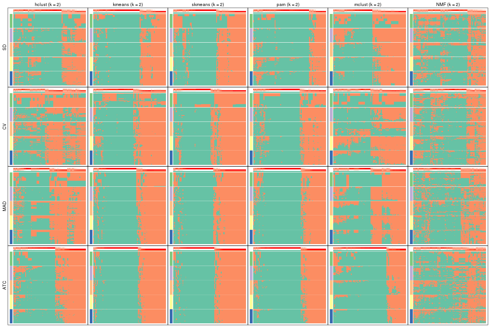
collect_plots(res_list, k = 3, fun = membership_heatmap, mc.cores = 4)
collect_plots(res_list, k = 4, fun = membership_heatmap, mc.cores = 4)
collect_plots(res_list, k = 5, fun = membership_heatmap, mc.cores = 4)
collect_plots(res_list, k = 6, fun = membership_heatmap, mc.cores = 4)
Signature heatmaps for all methods. (What is a signature heatmap?)
Note in following heatmaps, rows are scaled.
collect_plots(res_list, k = 2, fun = get_signatures, mc.cores = 4)
collect_plots(res_list, k = 3, fun = get_signatures, mc.cores = 4)
collect_plots(res_list, k = 4, fun = get_signatures, mc.cores = 4)
collect_plots(res_list, k = 5, fun = get_signatures, mc.cores = 4)
collect_plots(res_list, k = 6, fun = get_signatures, mc.cores = 4)
The statistics used for measuring the stability of consensus partitioning. (How are they defined?)
get_stats(res_list, k = 2)
#> k 1-PAC mean_silhouette concordance area_increased Rand Jaccard
#> SD:NMF 2 0.0289 0.513 0.717 0.441 0.614 0.614
#> CV:NMF 2 0.0789 0.556 0.771 0.444 0.601 0.601
#> MAD:NMF 2 0.0330 0.618 0.769 0.450 0.541 0.541
#> ATC:NMF 2 0.0115 0.386 0.708 0.443 0.590 0.590
#> SD:skmeans 2 0.4091 0.762 0.885 0.496 0.510 0.510
#> CV:skmeans 2 0.5613 0.797 0.902 0.505 0.494 0.494
#> MAD:skmeans 2 0.6309 0.851 0.934 0.501 0.499 0.499
#> ATC:skmeans 2 0.7660 0.907 0.957 0.498 0.502 0.502
#> SD:mclust 2 0.2451 0.693 0.847 0.463 0.497 0.497
#> CV:mclust 2 0.0796 0.651 0.737 0.418 0.494 0.494
#> MAD:mclust 2 0.2184 0.617 0.825 0.454 0.494 0.494
#> ATC:mclust 2 0.5628 0.838 0.917 0.407 0.601 0.601
#> SD:kmeans 2 0.4969 0.827 0.904 0.445 0.534 0.534
#> CV:kmeans 2 0.3547 0.762 0.860 0.490 0.499 0.499
#> MAD:kmeans 2 0.6549 0.832 0.928 0.488 0.510 0.510
#> ATC:kmeans 2 0.8512 0.872 0.950 0.481 0.520 0.520
#> SD:pam 2 0.4224 0.767 0.887 0.386 0.640 0.640
#> CV:pam 2 0.3784 0.777 0.879 0.467 0.534 0.534
#> MAD:pam 2 0.6116 0.824 0.925 0.461 0.541 0.541
#> ATC:pam 2 0.7234 0.874 0.944 0.457 0.541 0.541
#> SD:hclust 2 0.1255 0.679 0.812 0.416 0.550 0.550
#> CV:hclust 2 0.0396 0.533 0.695 0.436 0.502 0.502
#> MAD:hclust 2 0.1207 0.653 0.811 0.464 0.494 0.494
#> ATC:hclust 2 0.4447 0.762 0.885 0.479 0.505 0.505
get_stats(res_list, k = 3)
#> k 1-PAC mean_silhouette concordance area_increased Rand Jaccard
#> SD:NMF 3 0.0626 0.389 0.652 0.358 0.764 0.630
#> CV:NMF 3 0.1081 0.414 0.676 0.380 0.738 0.584
#> MAD:NMF 3 0.0637 0.342 0.632 0.356 0.843 0.725
#> ATC:NMF 3 0.0218 0.421 0.629 0.373 0.696 0.513
#> SD:skmeans 3 0.3465 0.495 0.756 0.308 0.844 0.699
#> CV:skmeans 3 0.3732 0.581 0.765 0.294 0.825 0.658
#> MAD:skmeans 3 0.4802 0.621 0.813 0.284 0.833 0.675
#> ATC:skmeans 3 0.5557 0.590 0.800 0.269 0.899 0.800
#> SD:mclust 3 0.2725 0.397 0.743 0.250 0.891 0.803
#> CV:mclust 3 0.1325 0.163 0.563 0.421 0.647 0.469
#> MAD:mclust 3 0.2777 0.502 0.732 0.336 0.760 0.568
#> ATC:mclust 3 0.3669 0.608 0.795 0.550 0.719 0.539
#> SD:kmeans 3 0.2951 0.494 0.730 0.373 0.801 0.639
#> CV:kmeans 3 0.2862 0.444 0.700 0.303 0.865 0.742
#> MAD:kmeans 3 0.4424 0.649 0.771 0.294 0.899 0.804
#> ATC:kmeans 3 0.5154 0.633 0.822 0.350 0.775 0.589
#> SD:pam 3 0.2518 0.408 0.728 0.557 0.717 0.567
#> CV:pam 3 0.3010 0.447 0.685 0.323 0.782 0.617
#> MAD:pam 3 0.4517 0.664 0.807 0.378 0.768 0.583
#> ATC:pam 3 0.4024 0.615 0.802 0.395 0.724 0.522
#> SD:hclust 3 0.2021 0.475 0.721 0.342 0.905 0.833
#> CV:hclust 3 0.0833 0.375 0.661 0.368 0.864 0.747
#> MAD:hclust 3 0.2392 0.479 0.731 0.311 0.857 0.732
#> ATC:hclust 3 0.4184 0.553 0.766 0.252 0.921 0.846
get_stats(res_list, k = 4)
#> k 1-PAC mean_silhouette concordance area_increased Rand Jaccard
#> SD:NMF 4 0.1396 0.314 0.555 0.126 0.880 0.743
#> CV:NMF 4 0.2092 0.347 0.598 0.153 0.874 0.706
#> MAD:NMF 4 0.1259 0.363 0.576 0.138 0.811 0.601
#> ATC:NMF 4 0.0826 0.276 0.580 0.116 0.909 0.768
#> SD:skmeans 4 0.4184 0.359 0.649 0.128 0.859 0.643
#> CV:skmeans 4 0.4313 0.314 0.616 0.129 0.835 0.587
#> MAD:skmeans 4 0.5187 0.529 0.732 0.125 0.917 0.778
#> ATC:skmeans 4 0.5824 0.612 0.796 0.121 0.855 0.661
#> SD:mclust 4 0.2903 0.363 0.666 0.145 0.848 0.701
#> CV:mclust 4 0.2577 0.367 0.635 0.134 0.694 0.435
#> MAD:mclust 4 0.3543 0.468 0.660 0.155 0.855 0.644
#> ATC:mclust 4 0.4128 0.499 0.708 0.120 0.927 0.793
#> SD:kmeans 4 0.3210 0.400 0.637 0.153 0.856 0.645
#> CV:kmeans 4 0.3625 0.340 0.604 0.128 0.838 0.631
#> MAD:kmeans 4 0.4695 0.495 0.725 0.127 0.936 0.850
#> ATC:kmeans 4 0.5320 0.575 0.763 0.119 0.866 0.646
#> SD:pam 4 0.2899 0.401 0.673 0.159 0.855 0.649
#> CV:pam 4 0.3625 0.383 0.647 0.157 0.846 0.632
#> MAD:pam 4 0.4632 0.569 0.737 0.116 0.916 0.766
#> ATC:pam 4 0.5128 0.573 0.774 0.145 0.816 0.526
#> SD:hclust 4 0.2014 0.404 0.646 0.127 0.961 0.921
#> CV:hclust 4 0.2140 0.234 0.587 0.144 0.904 0.792
#> MAD:hclust 4 0.3743 0.427 0.692 0.131 0.910 0.798
#> ATC:hclust 4 0.4598 0.538 0.727 0.104 0.914 0.804
get_stats(res_list, k = 5)
#> k 1-PAC mean_silhouette concordance area_increased Rand Jaccard
#> SD:NMF 5 0.208 0.292 0.531 0.0838 0.906 0.769
#> CV:NMF 5 0.284 0.306 0.556 0.0690 0.890 0.691
#> MAD:NMF 5 0.195 0.363 0.533 0.0697 0.931 0.793
#> ATC:NMF 5 0.165 0.241 0.532 0.0879 0.936 0.817
#> SD:skmeans 5 0.482 0.306 0.607 0.0713 0.852 0.537
#> CV:skmeans 5 0.486 0.362 0.572 0.0727 0.786 0.393
#> MAD:skmeans 5 0.546 0.486 0.699 0.0722 0.908 0.708
#> ATC:skmeans 5 0.582 0.532 0.721 0.0656 0.922 0.752
#> SD:mclust 5 0.347 0.309 0.573 0.1071 0.807 0.523
#> CV:mclust 5 0.334 0.312 0.532 0.0984 0.885 0.650
#> MAD:mclust 5 0.414 0.391 0.621 0.0653 0.903 0.689
#> ATC:mclust 5 0.479 0.504 0.699 0.0501 0.906 0.734
#> SD:kmeans 5 0.423 0.443 0.652 0.0777 0.878 0.631
#> CV:kmeans 5 0.425 0.326 0.539 0.0735 0.889 0.659
#> MAD:kmeans 5 0.497 0.354 0.649 0.0716 0.847 0.608
#> ATC:kmeans 5 0.546 0.494 0.685 0.0628 0.931 0.760
#> SD:pam 5 0.363 0.339 0.590 0.0807 0.906 0.705
#> CV:pam 5 0.455 0.343 0.630 0.0799 0.796 0.437
#> MAD:pam 5 0.504 0.383 0.652 0.0862 0.889 0.636
#> ATC:pam 5 0.531 0.462 0.701 0.0713 0.944 0.790
#> SD:hclust 5 0.254 0.391 0.634 0.0868 0.848 0.694
#> CV:hclust 5 0.283 0.294 0.573 0.0613 0.899 0.759
#> MAD:hclust 5 0.456 0.458 0.664 0.0555 0.981 0.948
#> ATC:hclust 5 0.495 0.483 0.683 0.0663 0.934 0.830
get_stats(res_list, k = 6)
#> k 1-PAC mean_silhouette concordance area_increased Rand Jaccard
#> SD:NMF 6 0.277 0.219 0.475 0.0583 0.863 0.640
#> CV:NMF 6 0.349 0.225 0.523 0.0514 0.849 0.519
#> MAD:NMF 6 0.305 0.306 0.510 0.0525 0.926 0.759
#> ATC:NMF 6 0.259 0.193 0.463 0.0593 0.954 0.853
#> SD:skmeans 6 0.546 0.363 0.595 0.0424 0.914 0.653
#> CV:skmeans 6 0.545 0.402 0.594 0.0445 0.897 0.573
#> MAD:skmeans 6 0.591 0.434 0.661 0.0471 0.907 0.637
#> ATC:skmeans 6 0.609 0.536 0.698 0.0435 0.950 0.807
#> SD:mclust 6 0.418 0.372 0.600 0.0609 0.887 0.629
#> CV:mclust 6 0.412 0.293 0.530 0.0676 0.877 0.566
#> MAD:mclust 6 0.515 0.378 0.629 0.0557 0.949 0.804
#> ATC:mclust 6 0.524 0.359 0.620 0.0632 0.833 0.518
#> SD:kmeans 6 0.488 0.404 0.609 0.0521 0.942 0.773
#> CV:kmeans 6 0.501 0.296 0.570 0.0517 0.872 0.544
#> MAD:kmeans 6 0.538 0.382 0.625 0.0475 0.918 0.700
#> ATC:kmeans 6 0.577 0.448 0.627 0.0396 0.920 0.690
#> SD:pam 6 0.422 0.285 0.576 0.0487 0.924 0.715
#> CV:pam 6 0.513 0.398 0.651 0.0551 0.862 0.500
#> MAD:pam 6 0.564 0.484 0.703 0.0391 0.894 0.583
#> ATC:pam 6 0.556 0.449 0.673 0.0425 0.873 0.512
#> SD:hclust 6 0.375 0.348 0.594 0.0669 0.875 0.685
#> CV:hclust 6 0.416 0.282 0.561 0.0551 0.884 0.687
#> MAD:hclust 6 0.503 0.370 0.646 0.0435 0.943 0.844
#> ATC:hclust 6 0.522 0.461 0.667 0.0394 0.964 0.899
Following heatmap plots the partition for each combination of methods and the lightness correspond to the silhouette scores for samples in each method. On top the consensus subgroup is inferred from all methods by taking the mean silhouette scores as weight.
collect_stats(res_list, k = 2)
collect_stats(res_list, k = 3)
collect_stats(res_list, k = 4)
collect_stats(res_list, k = 5)
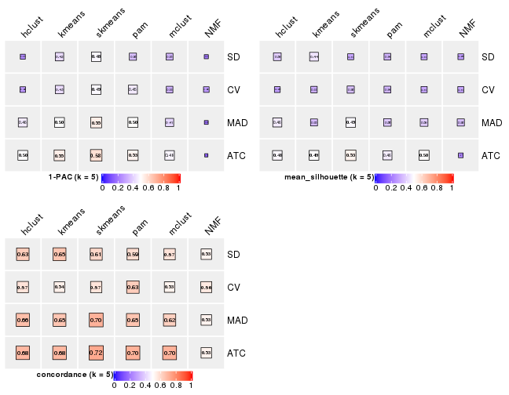
collect_stats(res_list, k = 6)
Collect partitions from all methods:
collect_classes(res_list, k = 2)
collect_classes(res_list, k = 3)
collect_classes(res_list, k = 4)
collect_classes(res_list, k = 5)
collect_classes(res_list, k = 6)
Overlap of top rows from different top-row methods:
top_rows_overlap(res_list, top_n = 5, method = "euler")
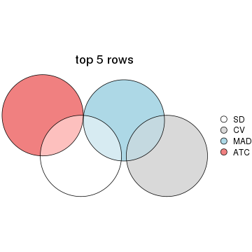
top_rows_overlap(res_list, top_n = 10, method = "euler")
top_rows_overlap(res_list, top_n = 15, method = "euler")
top_rows_overlap(res_list, top_n = 20, method = "euler")
top_rows_overlap(res_list, top_n = 25, method = "euler")
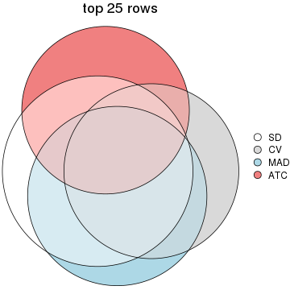
Also visualize the correspondance of rankings between different top-row methods:
top_rows_overlap(res_list, top_n = 5, method = "correspondance")
top_rows_overlap(res_list, top_n = 10, method = "correspondance")
top_rows_overlap(res_list, top_n = 15, method = "correspondance")
top_rows_overlap(res_list, top_n = 20, method = "correspondance")

top_rows_overlap(res_list, top_n = 25, method = "correspondance")
Heatmaps of the top rows:
top_rows_heatmap(res_list, top_n = 5)
top_rows_heatmap(res_list, top_n = 10)
top_rows_heatmap(res_list, top_n = 15)
top_rows_heatmap(res_list, top_n = 20)
top_rows_heatmap(res_list, top_n = 25)
The object with results only for a single top-value method and a single partition method can be extracted as:
res = res_list["SD", "hclust"]
# you can also extract it by
# res = res_list["SD:hclust"]
A summary of res and all the functions that can be applied to it:
res
#> A 'ConsensusPartition' object with k = 2, 3, 4, 5, 6.
#> On a matrix with 50 rows and 78 columns.
#> Top rows (5, 10, 15, 20, 25) are extracted by 'SD' method.
#> Subgroups are detected by 'hclust' method.
#> Performed in total 1250 partitions by row resampling.
#> Best k for subgroups seems to be 2.
#>
#> Following methods can be applied to this 'ConsensusPartition' object:
#> [1] "cola_report" "collect_classes" "collect_plots"
#> [4] "collect_stats" "colnames" "compare_signatures"
#> [7] "consensus_heatmap" "dimension_reduction" "functional_enrichment"
#> [10] "get_anno_col" "get_anno" "get_classes"
#> [13] "get_consensus" "get_matrix" "get_membership"
#> [16] "get_param" "get_signatures" "get_stats"
#> [19] "is_best_k" "is_stable_k" "membership_heatmap"
#> [22] "ncol" "nrow" "plot_ecdf"
#> [25] "rownames" "select_partition_number" "show"
#> [28] "suggest_best_k" "test_to_known_factors"
collect_plots() function collects all the plots made from res for all k (number of partitions)
into one single page to provide an easy and fast comparison between different k.
collect_plots(res)
The plots are:
k and the heatmap of
predicted classes for each k.k.k.k.All the plots in panels can be made by individual functions and they are plotted later in this section.
select_partition_number() produces several plots showing different
statistics for choosing “optimized” k. There are following statistics:
k;k, the area increased is defined as \(A_k - A_{k-1}\).The detailed explanations of these statistics can be found in the cola vignette.
Generally speaking, lower PAC score, higher mean silhouette score or higher
concordance corresponds to better partition. Rand index and Jaccard index
measure how similar the current partition is compared to partition with k-1.
If they are too similar, we won't accept k is better than k-1.
select_partition_number(res)
The numeric values for all these statistics can be obtained by get_stats().
get_stats(res)
#> k 1-PAC mean_silhouette concordance area_increased Rand Jaccard
#> 2 2 0.126 0.679 0.812 0.4158 0.550 0.550
#> 3 3 0.202 0.475 0.721 0.3422 0.905 0.833
#> 4 4 0.201 0.404 0.646 0.1266 0.961 0.921
#> 5 5 0.254 0.391 0.634 0.0868 0.848 0.694
#> 6 6 0.375 0.348 0.594 0.0669 0.875 0.685
suggest_best_k() suggests the best \(k\) based on these statistics. The rules are as follows:
suggest_best_k(res)
#> [1] 2
Following shows the table of the partitions (You need to click the show/hide
code output link to see it). The membership matrix (columns with name p*)
is inferred by
clue::cl_consensus()
function with the SE method. Basically the value in the membership matrix
represents the probability to belong to a certain group. The finall class
label for an item is determined with the group with highest probability it
belongs to.
In get_classes() function, the entropy is calculated from the membership
matrix and the silhouette score is calculated from the consensus matrix.
cbind(get_classes(res, k = 2), get_membership(res, k = 2))
#> class entropy silhouette p1 p2
#> SRR764980 2 0.6247 0.7250 0.156 0.844
#> SRR764981 1 0.7453 0.7254 0.788 0.212
#> SRR764982 2 0.7745 0.7378 0.228 0.772
#> SRR764983 1 0.1633 0.7990 0.976 0.024
#> SRR764984 1 0.7950 0.6728 0.760 0.240
#> SRR764985 2 0.4690 0.7154 0.100 0.900
#> SRR764986 2 0.5059 0.7284 0.112 0.888
#> SRR764987 2 0.5519 0.7353 0.128 0.872
#> SRR764988 1 0.9393 0.3498 0.644 0.356
#> SRR764989 1 0.1414 0.8047 0.980 0.020
#> SRR764990 1 0.8386 0.6472 0.732 0.268
#> SRR764991 1 0.8386 0.6676 0.732 0.268
#> SRR764992 2 0.6623 0.7260 0.172 0.828
#> SRR764993 2 0.9580 0.6246 0.380 0.620
#> SRR764994 1 0.2603 0.8105 0.956 0.044
#> SRR764995 2 0.5178 0.7309 0.116 0.884
#> SRR764996 1 0.6247 0.7638 0.844 0.156
#> SRR764997 1 0.6438 0.7347 0.836 0.164
#> SRR764998 1 0.6148 0.7649 0.848 0.152
#> SRR764999 1 0.7602 0.6909 0.780 0.220
#> SRR765000 1 0.9909 -0.0191 0.556 0.444
#> SRR765001 2 0.5519 0.7201 0.128 0.872
#> SRR765002 2 0.7453 0.7288 0.212 0.788
#> SRR765003 1 0.7815 0.6905 0.768 0.232
#> SRR765004 2 0.9460 0.6538 0.364 0.636
#> SRR765005 1 0.7815 0.6887 0.768 0.232
#> SRR765006 2 0.9608 0.6522 0.384 0.616
#> SRR765007 1 0.8327 0.6287 0.736 0.264
#> SRR765008 2 0.9129 0.6890 0.328 0.672
#> SRR765009 2 0.9954 0.5071 0.460 0.540
#> SRR765010 2 0.9815 0.4675 0.420 0.580
#> SRR765011 1 0.4298 0.7683 0.912 0.088
#> SRR765012 1 0.1184 0.8085 0.984 0.016
#> SRR765013 2 0.9944 0.3804 0.456 0.544
#> SRR765014 1 0.3274 0.8071 0.940 0.060
#> SRR765015 1 0.5737 0.7576 0.864 0.136
#> SRR765016 1 0.1633 0.8070 0.976 0.024
#> SRR765017 1 0.7453 0.7196 0.788 0.212
#> SRR765018 1 0.5946 0.7573 0.856 0.144
#> SRR765020 1 0.4298 0.7683 0.912 0.088
#> SRR765021 1 0.4690 0.7793 0.900 0.100
#> SRR765022 1 0.7453 0.6513 0.788 0.212
#> SRR765023 1 0.2778 0.8096 0.952 0.048
#> SRR765024 1 0.0672 0.8100 0.992 0.008
#> SRR765025 2 0.4298 0.6932 0.088 0.912
#> SRR765026 1 0.1633 0.8118 0.976 0.024
#> SRR765027 1 0.1414 0.8047 0.980 0.020
#> SRR765028 2 0.7219 0.7370 0.200 0.800
#> SRR765029 2 0.9815 0.6017 0.420 0.580
#> SRR765030 1 0.2423 0.8113 0.960 0.040
#> SRR765031 1 0.6438 0.7347 0.836 0.164
#> SRR765032 1 0.2603 0.8128 0.956 0.044
#> SRR765033 2 0.9933 0.4644 0.452 0.548
#> SRR765034 1 0.7815 0.7087 0.768 0.232
#> SRR765035 1 0.9044 0.4065 0.680 0.320
#> SRR765036 1 0.6623 0.7532 0.828 0.172
#> SRR765037 2 0.9686 0.5514 0.396 0.604
#> SRR765038 2 0.5842 0.7400 0.140 0.860
#> SRR765039 1 0.2423 0.8115 0.960 0.040
#> SRR765040 2 0.9815 0.3677 0.420 0.580
#> SRR765041 1 0.9323 0.4703 0.652 0.348
#> SRR765042 1 0.0376 0.8093 0.996 0.004
#> SRR765043 1 0.0938 0.8106 0.988 0.012
#> SRR765044 1 0.9933 0.0872 0.548 0.452
#> SRR765045 1 0.0376 0.8093 0.996 0.004
#> SRR765046 2 0.5737 0.7319 0.136 0.864
#> SRR765047 1 0.1843 0.8117 0.972 0.028
#> SRR765048 1 0.0376 0.8093 0.996 0.004
#> SRR765049 2 0.9209 0.6370 0.336 0.664
#> SRR765050 2 0.9996 0.4261 0.488 0.512
#> SRR765051 1 0.0938 0.8079 0.988 0.012
#> SRR765052 1 0.8443 0.6381 0.728 0.272
#> SRR765053 1 0.8443 0.6137 0.728 0.272
#> SRR765054 1 0.1633 0.7990 0.976 0.024
#> SRR765055 1 0.1184 0.8069 0.984 0.016
#> SRR765056 1 0.5519 0.7561 0.872 0.128
#> SRR765057 1 0.9286 0.3236 0.656 0.344
#> SRR765058 1 0.2603 0.8096 0.956 0.044
cbind(get_classes(res, k = 3), get_membership(res, k = 3))
#> class entropy silhouette p1 p2 p3
#> SRR764980 2 0.6252 0.42039 0.024 0.708 0.268
#> SRR764981 1 0.7918 0.55762 0.660 0.136 0.204
#> SRR764982 2 0.7884 0.28603 0.100 0.640 0.260
#> SRR764983 1 0.1753 0.71768 0.952 0.000 0.048
#> SRR764984 1 0.7919 0.31044 0.556 0.064 0.380
#> SRR764985 2 0.6183 0.45598 0.032 0.732 0.236
#> SRR764986 2 0.1989 0.50316 0.004 0.948 0.048
#> SRR764987 2 0.1860 0.50201 0.000 0.948 0.052
#> SRR764988 3 0.9059 0.28642 0.408 0.136 0.456
#> SRR764989 1 0.1163 0.71858 0.972 0.000 0.028
#> SRR764990 1 0.8562 0.46645 0.608 0.208 0.184
#> SRR764991 1 0.8520 0.43050 0.588 0.132 0.280
#> SRR764992 2 0.5775 0.44367 0.012 0.728 0.260
#> SRR764993 3 0.9602 0.51358 0.220 0.320 0.460
#> SRR764994 1 0.4047 0.70395 0.848 0.004 0.148
#> SRR764995 2 0.2711 0.49025 0.000 0.912 0.088
#> SRR764996 1 0.6383 0.67160 0.768 0.104 0.128
#> SRR764997 1 0.6098 0.60133 0.768 0.056 0.176
#> SRR764998 1 0.6693 0.66233 0.748 0.104 0.148
#> SRR764999 1 0.7505 0.35527 0.572 0.044 0.384
#> SRR765000 3 0.9032 0.38035 0.340 0.148 0.512
#> SRR765001 2 0.5122 0.46027 0.012 0.788 0.200
#> SRR765002 2 0.5093 0.42402 0.076 0.836 0.088
#> SRR765003 1 0.8436 0.49091 0.616 0.160 0.224
#> SRR765004 3 0.9614 0.48653 0.208 0.356 0.436
#> SRR765005 1 0.8293 0.46656 0.608 0.120 0.272
#> SRR765006 2 0.9537 -0.02818 0.296 0.480 0.224
#> SRR765007 1 0.9295 0.16781 0.524 0.224 0.252
#> SRR765008 3 0.9425 0.38372 0.176 0.392 0.432
#> SRR765009 1 0.9996 -0.47829 0.348 0.328 0.324
#> SRR765010 2 0.8921 -0.01312 0.348 0.516 0.136
#> SRR765011 1 0.4194 0.70295 0.876 0.064 0.060
#> SRR765012 1 0.1620 0.72092 0.964 0.012 0.024
#> SRR765013 2 0.9291 -0.07101 0.356 0.476 0.168
#> SRR765014 1 0.4677 0.70701 0.840 0.028 0.132
#> SRR765015 1 0.5371 0.63481 0.812 0.048 0.140
#> SRR765016 1 0.1289 0.71967 0.968 0.000 0.032
#> SRR765017 1 0.7339 0.59486 0.708 0.144 0.148
#> SRR765018 1 0.6348 0.62679 0.740 0.048 0.212
#> SRR765020 1 0.4095 0.70385 0.880 0.064 0.056
#> SRR765021 1 0.4289 0.67742 0.868 0.040 0.092
#> SRR765022 1 0.6887 0.52678 0.720 0.076 0.204
#> SRR765023 1 0.3845 0.71559 0.872 0.012 0.116
#> SRR765024 1 0.0592 0.72079 0.988 0.000 0.012
#> SRR765025 2 0.5659 0.44624 0.012 0.740 0.248
#> SRR765026 1 0.3340 0.70889 0.880 0.000 0.120
#> SRR765027 1 0.1163 0.71858 0.972 0.000 0.028
#> SRR765028 2 0.7381 0.31721 0.080 0.676 0.244
#> SRR765029 2 0.9585 -0.06333 0.332 0.456 0.212
#> SRR765030 1 0.2682 0.72039 0.920 0.004 0.076
#> SRR765031 1 0.6098 0.60133 0.768 0.056 0.176
#> SRR765032 1 0.3618 0.72056 0.884 0.012 0.104
#> SRR765033 3 0.9364 0.54302 0.220 0.268 0.512
#> SRR765034 1 0.7267 0.58600 0.708 0.112 0.180
#> SRR765035 1 0.9198 0.05514 0.528 0.280 0.192
#> SRR765036 1 0.6719 0.65550 0.744 0.096 0.160
#> SRR765037 3 0.9502 0.52854 0.236 0.272 0.492
#> SRR765038 2 0.3989 0.48150 0.012 0.864 0.124
#> SRR765039 1 0.3965 0.70323 0.860 0.008 0.132
#> SRR765040 2 0.9263 0.04609 0.252 0.528 0.220
#> SRR765041 1 0.9083 0.29765 0.548 0.256 0.196
#> SRR765042 1 0.0592 0.72063 0.988 0.000 0.012
#> SRR765043 1 0.2625 0.71060 0.916 0.000 0.084
#> SRR765044 1 0.9311 -0.00409 0.468 0.364 0.168
#> SRR765045 1 0.0424 0.72052 0.992 0.000 0.008
#> SRR765046 2 0.5010 0.49435 0.076 0.840 0.084
#> SRR765047 1 0.2301 0.72100 0.936 0.004 0.060
#> SRR765048 1 0.0747 0.72157 0.984 0.000 0.016
#> SRR765049 2 0.9272 0.10741 0.232 0.528 0.240
#> SRR765050 2 0.9300 -0.13653 0.412 0.428 0.160
#> SRR765051 1 0.0747 0.72069 0.984 0.000 0.016
#> SRR765052 1 0.8353 0.47324 0.628 0.192 0.180
#> SRR765053 1 0.7956 0.19931 0.516 0.060 0.424
#> SRR765054 1 0.1753 0.71768 0.952 0.000 0.048
#> SRR765055 1 0.1860 0.72223 0.948 0.000 0.052
#> SRR765056 1 0.4982 0.64289 0.828 0.036 0.136
#> SRR765057 1 0.8852 -0.08874 0.484 0.120 0.396
#> SRR765058 1 0.3755 0.71505 0.872 0.008 0.120
cbind(get_classes(res, k = 4), get_membership(res, k = 4))
#> class entropy silhouette p1 p2 p3 p4
#> SRR764980 4 0.6661 0.3434 0.004 0.396 0.076 0.524
#> SRR764981 1 0.8089 0.4246 0.520 0.044 0.284 0.152
#> SRR764982 2 0.6528 0.2679 0.080 0.688 0.192 0.040
#> SRR764983 1 0.1913 0.6878 0.940 0.000 0.040 0.020
#> SRR764984 1 0.8098 0.2785 0.488 0.024 0.280 0.208
#> SRR764985 4 0.7796 0.3604 0.012 0.356 0.172 0.460
#> SRR764986 2 0.4513 0.0358 0.004 0.796 0.040 0.160
#> SRR764987 2 0.3182 0.1605 0.000 0.876 0.028 0.096
#> SRR764988 3 0.7901 0.3773 0.308 0.056 0.532 0.104
#> SRR764989 1 0.1406 0.6893 0.960 0.000 0.024 0.016
#> SRR764990 1 0.8883 0.3629 0.484 0.204 0.216 0.096
#> SRR764991 1 0.8269 0.3697 0.500 0.040 0.264 0.196
#> SRR764992 2 0.6026 -0.3970 0.004 0.496 0.032 0.468
#> SRR764993 3 0.8004 0.5043 0.152 0.220 0.568 0.060
#> SRR764994 1 0.4558 0.6721 0.820 0.012 0.084 0.084
#> SRR764995 2 0.4544 0.0981 0.000 0.788 0.048 0.164
#> SRR764996 1 0.6579 0.5876 0.636 0.028 0.276 0.060
#> SRR764997 1 0.5382 0.5526 0.728 0.040 0.220 0.012
#> SRR764998 1 0.6823 0.5833 0.628 0.028 0.264 0.080
#> SRR764999 1 0.7913 0.3107 0.516 0.020 0.220 0.244
#> SRR765000 3 0.8956 0.3679 0.292 0.072 0.424 0.212
#> SRR765001 2 0.5321 -0.3564 0.004 0.528 0.004 0.464
#> SRR765002 2 0.5340 0.2485 0.036 0.784 0.108 0.072
#> SRR765003 1 0.8874 0.3372 0.476 0.104 0.264 0.156
#> SRR765004 3 0.8199 0.4839 0.140 0.288 0.516 0.056
#> SRR765005 1 0.7916 0.4176 0.524 0.024 0.252 0.200
#> SRR765006 2 0.7977 0.2031 0.256 0.552 0.140 0.052
#> SRR765007 1 0.9611 -0.1085 0.356 0.132 0.264 0.248
#> SRR765008 3 0.8134 0.4116 0.120 0.324 0.500 0.056
#> SRR765009 2 0.9418 -0.0171 0.296 0.368 0.228 0.108
#> SRR765010 2 0.8028 0.2046 0.264 0.540 0.148 0.048
#> SRR765011 1 0.3945 0.6758 0.828 0.004 0.144 0.024
#> SRR765012 1 0.1877 0.6892 0.948 0.012 0.020 0.020
#> SRR765013 2 0.8294 0.1701 0.260 0.504 0.192 0.044
#> SRR765014 1 0.5914 0.6318 0.696 0.008 0.220 0.076
#> SRR765015 1 0.4914 0.5866 0.772 0.036 0.180 0.012
#> SRR765016 1 0.1297 0.6890 0.964 0.000 0.016 0.020
#> SRR765017 1 0.7488 0.5431 0.632 0.180 0.116 0.072
#> SRR765018 1 0.6574 0.5785 0.680 0.032 0.196 0.092
#> SRR765020 1 0.3863 0.6764 0.828 0.000 0.144 0.028
#> SRR765021 1 0.3979 0.6372 0.836 0.028 0.128 0.008
#> SRR765022 1 0.5834 0.4983 0.660 0.044 0.288 0.008
#> SRR765023 1 0.4610 0.6774 0.804 0.004 0.124 0.068
#> SRR765024 1 0.0524 0.6899 0.988 0.000 0.004 0.008
#> SRR765025 2 0.6375 -0.3510 0.004 0.492 0.052 0.452
#> SRR765026 1 0.3873 0.6749 0.844 0.000 0.060 0.096
#> SRR765027 1 0.1297 0.6884 0.964 0.000 0.020 0.016
#> SRR765028 2 0.6456 0.2478 0.068 0.696 0.188 0.048
#> SRR765029 2 0.8183 0.2011 0.260 0.528 0.160 0.052
#> SRR765030 1 0.3354 0.6843 0.872 0.000 0.084 0.044
#> SRR765031 1 0.5382 0.5526 0.728 0.040 0.220 0.012
#> SRR765032 1 0.4595 0.6633 0.780 0.000 0.176 0.044
#> SRR765033 3 0.8610 0.4878 0.144 0.172 0.540 0.144
#> SRR765034 1 0.5968 0.5228 0.632 0.036 0.320 0.012
#> SRR765035 1 0.8807 0.1113 0.452 0.296 0.176 0.076
#> SRR765036 1 0.6522 0.5576 0.604 0.016 0.320 0.060
#> SRR765037 3 0.8910 0.4917 0.120 0.180 0.496 0.204
#> SRR765038 2 0.2411 0.2210 0.000 0.920 0.040 0.040
#> SRR765039 1 0.4274 0.6710 0.820 0.000 0.072 0.108
#> SRR765040 4 0.9392 0.0998 0.180 0.308 0.128 0.384
#> SRR765041 1 0.8814 0.2542 0.468 0.256 0.200 0.076
#> SRR765042 1 0.0336 0.6892 0.992 0.000 0.000 0.008
#> SRR765043 1 0.2271 0.6803 0.916 0.000 0.008 0.076
#> SRR765044 1 0.9548 -0.0881 0.324 0.268 0.296 0.112
#> SRR765045 1 0.0376 0.6895 0.992 0.000 0.004 0.004
#> SRR765046 2 0.7578 -0.0139 0.064 0.612 0.112 0.212
#> SRR765047 1 0.2816 0.6868 0.900 0.000 0.064 0.036
#> SRR765048 1 0.0524 0.6901 0.988 0.000 0.004 0.008
#> SRR765049 2 0.7815 0.3033 0.168 0.608 0.144 0.080
#> SRR765050 2 0.8216 0.1161 0.336 0.464 0.164 0.036
#> SRR765051 1 0.0657 0.6895 0.984 0.000 0.012 0.004
#> SRR765052 1 0.8201 0.4325 0.556 0.228 0.136 0.080
#> SRR765053 1 0.8180 0.1668 0.468 0.024 0.296 0.212
#> SRR765054 1 0.1913 0.6878 0.940 0.000 0.040 0.020
#> SRR765055 1 0.2224 0.6929 0.928 0.000 0.040 0.032
#> SRR765056 1 0.4321 0.5981 0.796 0.024 0.176 0.004
#> SRR765057 1 0.8391 -0.1443 0.420 0.080 0.400 0.100
#> SRR765058 1 0.5100 0.6659 0.768 0.004 0.152 0.076
cbind(get_classes(res, k = 5), get_membership(res, k = 5))
#> class entropy silhouette p1 p2 p3 p4 p5
#> SRR764980 2 0.3436 0.6682 0.004 0.864 0.052 0.024 0.056
#> SRR764981 1 0.8363 -0.0551 0.408 0.020 0.112 0.296 0.164
#> SRR764982 5 0.7732 0.1428 0.080 0.080 0.132 0.124 0.584
#> SRR764983 1 0.2301 0.6808 0.912 0.004 0.016 0.064 0.004
#> SRR764984 1 0.7627 0.1954 0.444 0.096 0.360 0.016 0.084
#> SRR764985 2 0.5502 0.6055 0.004 0.732 0.064 0.088 0.112
#> SRR764986 2 0.6968 0.3208 0.000 0.424 0.020 0.184 0.372
#> SRR764987 5 0.6901 -0.3236 0.000 0.352 0.024 0.164 0.460
#> SRR764988 3 0.6001 0.2573 0.252 0.016 0.644 0.060 0.028
#> SRR764989 1 0.1554 0.6892 0.952 0.004 0.012 0.024 0.008
#> SRR764990 5 0.8595 0.0101 0.348 0.060 0.120 0.096 0.376
#> SRR764991 1 0.8979 0.2375 0.432 0.136 0.216 0.116 0.100
#> SRR764992 2 0.4354 0.7037 0.004 0.780 0.032 0.020 0.164
#> SRR764993 3 0.7328 0.4288 0.132 0.028 0.600 0.100 0.140
#> SRR764994 1 0.3846 0.6710 0.816 0.004 0.140 0.016 0.024
#> SRR764995 5 0.7206 -0.2856 0.000 0.260 0.024 0.284 0.432
#> SRR764996 1 0.8137 0.3968 0.520 0.040 0.156 0.164 0.120
#> SRR764997 1 0.4952 0.5112 0.692 0.000 0.252 0.016 0.040
#> SRR764998 1 0.8233 0.4119 0.524 0.056 0.136 0.152 0.132
#> SRR764999 1 0.7647 0.2439 0.476 0.120 0.320 0.024 0.060
#> SRR765000 3 0.6959 0.3194 0.240 0.112 0.576 0.008 0.064
#> SRR765001 2 0.3509 0.7229 0.000 0.792 0.004 0.008 0.196
#> SRR765002 5 0.6633 -0.2285 0.000 0.316 0.068 0.072 0.544
#> SRR765003 5 0.9230 -0.1407 0.304 0.068 0.128 0.188 0.312
#> SRR765004 3 0.8058 0.4284 0.080 0.092 0.544 0.104 0.180
#> SRR765005 1 0.8813 0.2708 0.464 0.140 0.168 0.144 0.084
#> SRR765006 5 0.6832 0.2790 0.232 0.012 0.100 0.060 0.596
#> SRR765007 4 0.8456 0.2961 0.256 0.004 0.196 0.372 0.172
#> SRR765008 3 0.8224 0.3695 0.072 0.096 0.512 0.104 0.216
#> SRR765009 5 0.8023 0.1241 0.228 0.032 0.192 0.064 0.484
#> SRR765010 5 0.7553 0.2618 0.212 0.116 0.080 0.032 0.560
#> SRR765011 1 0.4823 0.6064 0.760 0.004 0.016 0.136 0.084
#> SRR765012 1 0.1975 0.6882 0.936 0.004 0.016 0.020 0.024
#> SRR765013 5 0.7354 0.2259 0.192 0.064 0.116 0.040 0.588
#> SRR765014 1 0.7045 0.5322 0.620 0.032 0.176 0.080 0.092
#> SRR765015 1 0.4649 0.5577 0.740 0.000 0.200 0.016 0.044
#> SRR765016 1 0.1314 0.6886 0.960 0.004 0.008 0.024 0.004
#> SRR765017 1 0.6580 0.3559 0.552 0.008 0.036 0.084 0.320
#> SRR765018 1 0.5233 0.5446 0.652 0.004 0.292 0.012 0.040
#> SRR765020 1 0.4834 0.6088 0.760 0.004 0.016 0.132 0.088
#> SRR765021 1 0.3484 0.6284 0.824 0.000 0.144 0.004 0.028
#> SRR765022 1 0.5665 0.4424 0.624 0.004 0.296 0.016 0.060
#> SRR765023 1 0.5163 0.6551 0.760 0.020 0.128 0.056 0.036
#> SRR765024 1 0.0324 0.6923 0.992 0.004 0.000 0.004 0.000
#> SRR765025 2 0.4188 0.7134 0.000 0.744 0.020 0.008 0.228
#> SRR765026 1 0.4079 0.6631 0.816 0.012 0.112 0.052 0.008
#> SRR765027 1 0.1441 0.6886 0.956 0.004 0.008 0.024 0.008
#> SRR765028 5 0.8123 0.0671 0.068 0.128 0.124 0.136 0.544
#> SRR765029 5 0.6381 0.2727 0.236 0.012 0.120 0.020 0.612
#> SRR765030 1 0.3828 0.6741 0.840 0.012 0.080 0.056 0.012
#> SRR765031 1 0.4952 0.5112 0.692 0.000 0.252 0.016 0.040
#> SRR765032 1 0.5462 0.6142 0.720 0.012 0.152 0.096 0.020
#> SRR765033 3 0.6456 0.4340 0.128 0.136 0.656 0.008 0.072
#> SRR765034 1 0.7005 0.4267 0.564 0.000 0.224 0.080 0.132
#> SRR765035 5 0.8153 0.1646 0.364 0.020 0.128 0.104 0.384
#> SRR765036 1 0.8577 0.2686 0.460 0.040 0.184 0.160 0.156
#> SRR765037 3 0.6736 0.4284 0.060 0.196 0.624 0.016 0.104
#> SRR765038 5 0.6732 -0.1610 0.000 0.252 0.040 0.148 0.560
#> SRR765039 1 0.4455 0.6583 0.792 0.016 0.132 0.048 0.012
#> SRR765040 4 0.7508 0.2854 0.120 0.104 0.060 0.604 0.112
#> SRR765041 5 0.7861 -0.0046 0.396 0.048 0.108 0.048 0.400
#> SRR765042 1 0.0324 0.6914 0.992 0.004 0.000 0.004 0.000
#> SRR765043 1 0.2054 0.6824 0.916 0.004 0.072 0.008 0.000
#> SRR765044 5 0.9290 0.1126 0.208 0.100 0.168 0.136 0.388
#> SRR765045 1 0.0162 0.6919 0.996 0.004 0.000 0.000 0.000
#> SRR765046 5 0.7455 -0.3967 0.016 0.388 0.028 0.168 0.400
#> SRR765047 1 0.3381 0.6771 0.868 0.012 0.056 0.052 0.012
#> SRR765048 1 0.0486 0.6925 0.988 0.004 0.004 0.004 0.000
#> SRR765049 5 0.4390 0.2822 0.068 0.032 0.056 0.024 0.820
#> SRR765050 5 0.8220 0.2503 0.324 0.100 0.128 0.028 0.420
#> SRR765051 1 0.0451 0.6914 0.988 0.004 0.008 0.000 0.000
#> SRR765052 1 0.7303 0.1695 0.464 0.024 0.052 0.084 0.376
#> SRR765053 1 0.7377 0.0988 0.432 0.100 0.396 0.016 0.056
#> SRR765054 1 0.2301 0.6808 0.912 0.004 0.016 0.064 0.004
#> SRR765055 1 0.2388 0.6904 0.916 0.004 0.028 0.040 0.012
#> SRR765056 1 0.4140 0.5723 0.764 0.000 0.200 0.008 0.028
#> SRR765057 3 0.6783 0.2052 0.368 0.024 0.512 0.048 0.048
#> SRR765058 1 0.6107 0.5960 0.688 0.020 0.164 0.056 0.072
cbind(get_classes(res, k = 6), get_membership(res, k = 6))
#> class entropy silhouette p1 p2 p3 p4 p5 p6
#> SRR764980 2 0.2769 0.6945 0.000 0.888 0.044 0.028 0.012 0.028
#> SRR764981 4 0.7161 0.2521 0.308 0.008 0.036 0.416 0.016 0.216
#> SRR764982 5 0.5730 0.3221 0.016 0.056 0.232 0.024 0.648 0.024
#> SRR764983 1 0.2277 0.5978 0.892 0.000 0.000 0.076 0.000 0.032
#> SRR764984 1 0.8220 -0.2477 0.364 0.088 0.140 0.312 0.008 0.088
#> SRR764985 2 0.5604 0.6061 0.000 0.704 0.048 0.108 0.060 0.080
#> SRR764986 5 0.5728 -0.0516 0.000 0.412 0.052 0.008 0.492 0.036
#> SRR764987 5 0.5481 0.1170 0.000 0.312 0.064 0.016 0.592 0.016
#> SRR764988 3 0.7819 0.2835 0.196 0.020 0.432 0.196 0.008 0.148
#> SRR764989 1 0.1418 0.6155 0.944 0.000 0.000 0.032 0.000 0.024
#> SRR764990 4 0.7206 0.3489 0.232 0.020 0.064 0.504 0.168 0.012
#> SRR764991 4 0.7098 0.3567 0.352 0.096 0.064 0.452 0.016 0.020
#> SRR764992 2 0.4134 0.6956 0.004 0.784 0.012 0.060 0.132 0.008
#> SRR764993 3 0.4015 0.4192 0.056 0.008 0.808 0.004 0.096 0.028
#> SRR764994 1 0.4005 0.5660 0.800 0.000 0.052 0.072 0.000 0.076
#> SRR764995 5 0.6224 0.1371 0.000 0.224 0.060 0.004 0.576 0.136
#> SRR764996 4 0.5718 0.3941 0.384 0.012 0.052 0.524 0.004 0.024
#> SRR764997 1 0.5198 0.4472 0.672 0.000 0.224 0.064 0.028 0.012
#> SRR764998 4 0.5516 0.3947 0.392 0.016 0.020 0.536 0.012 0.024
#> SRR764999 1 0.8223 -0.0869 0.432 0.092 0.128 0.240 0.016 0.092
#> SRR765000 3 0.8447 0.3196 0.208 0.032 0.404 0.144 0.040 0.172
#> SRR765001 2 0.3051 0.6880 0.000 0.824 0.012 0.004 0.156 0.004
#> SRR765002 5 0.6709 0.1442 0.000 0.292 0.144 0.064 0.492 0.008
#> SRR765003 4 0.7700 0.1916 0.208 0.012 0.056 0.496 0.136 0.092
#> SRR765004 3 0.4121 0.4215 0.004 0.076 0.784 0.012 0.120 0.004
#> SRR765005 4 0.6703 0.4029 0.348 0.092 0.016 0.488 0.020 0.036
#> SRR765006 5 0.6123 0.2918 0.220 0.004 0.092 0.048 0.616 0.020
#> SRR765007 6 0.8403 0.2332 0.176 0.008 0.100 0.276 0.084 0.356
#> SRR765008 3 0.4469 0.3559 0.004 0.084 0.744 0.008 0.156 0.004
#> SRR765009 5 0.8604 0.1431 0.208 0.020 0.196 0.100 0.384 0.092
#> SRR765010 5 0.8363 0.1987 0.116 0.096 0.080 0.276 0.404 0.028
#> SRR765011 1 0.3933 0.3535 0.716 0.000 0.000 0.248 0.000 0.036
#> SRR765012 1 0.1931 0.6146 0.928 0.000 0.004 0.032 0.020 0.016
#> SRR765013 5 0.7972 0.1621 0.108 0.044 0.080 0.288 0.440 0.040
#> SRR765014 1 0.5784 0.0570 0.544 0.004 0.096 0.336 0.008 0.012
#> SRR765015 1 0.4566 0.5029 0.732 0.000 0.192 0.036 0.028 0.012
#> SRR765016 1 0.1176 0.6157 0.956 0.000 0.000 0.020 0.000 0.024
#> SRR765017 1 0.7059 -0.2035 0.476 0.008 0.028 0.300 0.148 0.040
#> SRR765018 1 0.6041 0.4055 0.628 0.000 0.168 0.116 0.008 0.080
#> SRR765020 1 0.3911 0.3558 0.712 0.000 0.000 0.256 0.000 0.032
#> SRR765021 1 0.3201 0.5613 0.820 0.000 0.148 0.024 0.008 0.000
#> SRR765022 1 0.5782 0.3474 0.596 0.000 0.268 0.100 0.016 0.020
#> SRR765023 1 0.4015 0.4690 0.720 0.000 0.028 0.244 0.000 0.008
#> SRR765024 1 0.0405 0.6195 0.988 0.000 0.000 0.008 0.000 0.004
#> SRR765025 2 0.4811 0.6317 0.000 0.708 0.032 0.000 0.184 0.076
#> SRR765026 1 0.4028 0.5425 0.788 0.004 0.016 0.116 0.000 0.076
#> SRR765027 1 0.1176 0.6150 0.956 0.000 0.000 0.024 0.000 0.020
#> SRR765028 5 0.5728 0.2801 0.004 0.096 0.220 0.008 0.636 0.036
#> SRR765029 5 0.6184 0.2865 0.228 0.004 0.116 0.044 0.596 0.012
#> SRR765030 1 0.3694 0.5556 0.808 0.004 0.028 0.132 0.000 0.028
#> SRR765031 1 0.5198 0.4472 0.672 0.000 0.224 0.064 0.028 0.012
#> SRR765032 1 0.4952 0.3591 0.660 0.004 0.064 0.256 0.000 0.016
#> SRR765033 3 0.7736 0.4477 0.084 0.132 0.544 0.116 0.032 0.092
#> SRR765034 1 0.6593 0.1726 0.528 0.000 0.196 0.224 0.028 0.024
#> SRR765035 1 0.8167 -0.3975 0.292 0.012 0.116 0.268 0.288 0.024
#> SRR765036 4 0.6122 0.4560 0.352 0.012 0.088 0.512 0.000 0.036
#> SRR765037 3 0.7056 0.4470 0.028 0.148 0.584 0.076 0.028 0.136
#> SRR765038 5 0.5067 0.2332 0.000 0.244 0.040 0.020 0.672 0.024
#> SRR765039 1 0.4338 0.5267 0.764 0.004 0.020 0.128 0.000 0.084
#> SRR765040 6 0.7066 0.3256 0.088 0.060 0.060 0.012 0.224 0.556
#> SRR765041 4 0.7899 0.2919 0.292 0.028 0.044 0.384 0.216 0.036
#> SRR765042 1 0.0405 0.6192 0.988 0.000 0.000 0.008 0.000 0.004
#> SRR765043 1 0.2039 0.5981 0.908 0.000 0.004 0.016 0.000 0.072
#> SRR765044 4 0.8355 0.0771 0.100 0.076 0.120 0.460 0.200 0.044
#> SRR765045 1 0.0260 0.6194 0.992 0.000 0.000 0.008 0.000 0.000
#> SRR765046 5 0.7496 -0.1410 0.000 0.340 0.020 0.156 0.376 0.108
#> SRR765047 1 0.3075 0.5706 0.840 0.004 0.016 0.128 0.000 0.012
#> SRR765048 1 0.0551 0.6204 0.984 0.000 0.004 0.008 0.000 0.004
#> SRR765049 5 0.5926 0.3167 0.012 0.020 0.072 0.212 0.644 0.040
#> SRR765050 5 0.8589 0.1391 0.284 0.088 0.140 0.124 0.348 0.016
#> SRR765051 1 0.0363 0.6194 0.988 0.000 0.000 0.012 0.000 0.000
#> SRR765052 1 0.7552 -0.3606 0.380 0.016 0.028 0.332 0.204 0.040
#> SRR765053 1 0.8373 -0.0956 0.388 0.092 0.204 0.216 0.008 0.092
#> SRR765054 1 0.2201 0.5998 0.896 0.000 0.000 0.076 0.000 0.028
#> SRR765055 1 0.1918 0.6070 0.904 0.000 0.008 0.088 0.000 0.000
#> SRR765056 1 0.4056 0.5166 0.756 0.000 0.192 0.032 0.016 0.004
#> SRR765057 3 0.7839 0.1804 0.316 0.020 0.380 0.148 0.012 0.124
#> SRR765058 1 0.5231 0.3254 0.640 0.000 0.100 0.244 0.008 0.008
Heatmaps for the consensus matrix. It visualizes the probability of two samples to be in a same group.
consensus_heatmap(res, k = 2)
consensus_heatmap(res, k = 3)

consensus_heatmap(res, k = 4)
consensus_heatmap(res, k = 5)
consensus_heatmap(res, k = 6)
Heatmaps for the membership of samples in all partitions to see how consistent they are:
membership_heatmap(res, k = 2)
membership_heatmap(res, k = 3)
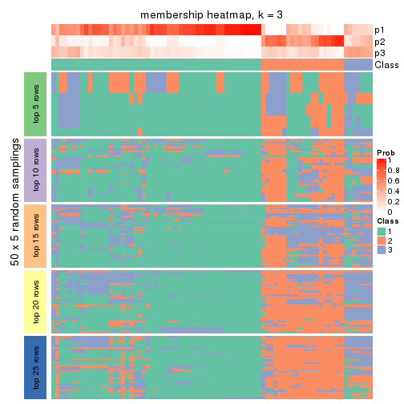
membership_heatmap(res, k = 4)
membership_heatmap(res, k = 5)
membership_heatmap(res, k = 6)
As soon as we have had the classes for columns, we can look for signatures which are significantly different between classes which can be candidate marks for certain classes. Following are the heatmaps for signatures.
Signature heatmaps where rows are scaled:
get_signatures(res, k = 2)
get_signatures(res, k = 3)
get_signatures(res, k = 4)

get_signatures(res, k = 5)
get_signatures(res, k = 6)
Signature heatmaps where rows are not scaled:
get_signatures(res, k = 2, scale_rows = FALSE)
get_signatures(res, k = 3, scale_rows = FALSE)
get_signatures(res, k = 4, scale_rows = FALSE)

get_signatures(res, k = 5, scale_rows = FALSE)
get_signatures(res, k = 6, scale_rows = FALSE)
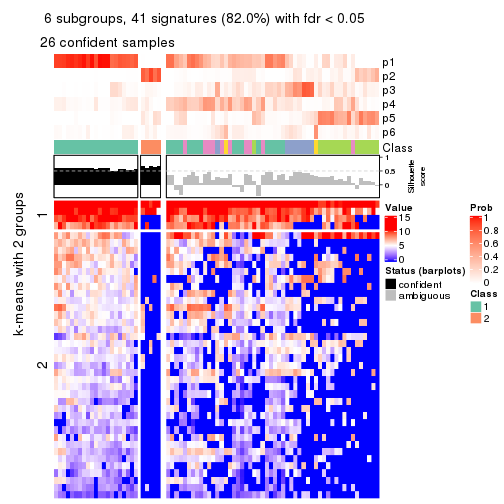
Compare the overlap of signatures from different k:
compare_signatures(res)
get_signature() returns a data frame invisibly. TO get the list of signatures, the function
call should be assigned to a variable explicitly. In following code, if plot argument is set
to FALSE, no heatmap is plotted while only the differential analysis is performed.
# code only for demonstration
tb = get_signature(res, k = ..., plot = FALSE)
An example of the output of tb is:
#> which_row fdr mean_1 mean_2 scaled_mean_1 scaled_mean_2 km
#> 1 38 0.042760348 8.373488 9.131774 -0.5533452 0.5164555 1
#> 2 40 0.018707592 7.106213 8.469186 -0.6173731 0.5762149 1
#> 3 55 0.019134737 10.221463 11.207825 -0.6159697 0.5749050 1
#> 4 59 0.006059896 5.921854 7.869574 -0.6899429 0.6439467 1
#> 5 60 0.018055526 8.928898 10.211722 -0.6204761 0.5791110 1
#> 6 98 0.009384629 15.714769 14.887706 0.6635654 -0.6193277 2
...
The columns in tb are:
which_row: row indices corresponding to the input matrix.fdr: FDR for the differential test. mean_x: The mean value in group x.scaled_mean_x: The mean value in group x after rows are scaled.km: Row groups if k-means clustering is applied to rows.UMAP plot which shows how samples are separated.
dimension_reduction(res, k = 2, method = "UMAP")
dimension_reduction(res, k = 3, method = "UMAP")
dimension_reduction(res, k = 4, method = "UMAP")
dimension_reduction(res, k = 5, method = "UMAP")
dimension_reduction(res, k = 6, method = "UMAP")
Following heatmap shows how subgroups are split when increasing k:
collect_classes(res)
If matrix rows can be associated to genes, consider to use functional_enrichment(res,
...) to perform function enrichment for the signature genes. See this vignette for more detailed explanations.
The object with results only for a single top-value method and a single partition method can be extracted as:
res = res_list["SD", "kmeans"]
# you can also extract it by
# res = res_list["SD:kmeans"]
A summary of res and all the functions that can be applied to it:
res
#> A 'ConsensusPartition' object with k = 2, 3, 4, 5, 6.
#> On a matrix with 50 rows and 78 columns.
#> Top rows (5, 10, 15, 20, 25) are extracted by 'SD' method.
#> Subgroups are detected by 'kmeans' method.
#> Performed in total 1250 partitions by row resampling.
#> Best k for subgroups seems to be 2.
#>
#> Following methods can be applied to this 'ConsensusPartition' object:
#> [1] "cola_report" "collect_classes" "collect_plots"
#> [4] "collect_stats" "colnames" "compare_signatures"
#> [7] "consensus_heatmap" "dimension_reduction" "functional_enrichment"
#> [10] "get_anno_col" "get_anno" "get_classes"
#> [13] "get_consensus" "get_matrix" "get_membership"
#> [16] "get_param" "get_signatures" "get_stats"
#> [19] "is_best_k" "is_stable_k" "membership_heatmap"
#> [22] "ncol" "nrow" "plot_ecdf"
#> [25] "rownames" "select_partition_number" "show"
#> [28] "suggest_best_k" "test_to_known_factors"
collect_plots() function collects all the plots made from res for all k (number of partitions)
into one single page to provide an easy and fast comparison between different k.
collect_plots(res)
The plots are:
k and the heatmap of
predicted classes for each k.k.k.k.All the plots in panels can be made by individual functions and they are plotted later in this section.
select_partition_number() produces several plots showing different
statistics for choosing “optimized” k. There are following statistics:
k;k, the area increased is defined as \(A_k - A_{k-1}\).The detailed explanations of these statistics can be found in the cola vignette.
Generally speaking, lower PAC score, higher mean silhouette score or higher
concordance corresponds to better partition. Rand index and Jaccard index
measure how similar the current partition is compared to partition with k-1.
If they are too similar, we won't accept k is better than k-1.
select_partition_number(res)
The numeric values for all these statistics can be obtained by get_stats().
get_stats(res)
#> k 1-PAC mean_silhouette concordance area_increased Rand Jaccard
#> 2 2 0.497 0.827 0.904 0.4446 0.534 0.534
#> 3 3 0.295 0.494 0.730 0.3729 0.801 0.639
#> 4 4 0.321 0.400 0.637 0.1530 0.856 0.645
#> 5 5 0.423 0.443 0.652 0.0777 0.878 0.631
#> 6 6 0.488 0.404 0.609 0.0521 0.942 0.773
suggest_best_k() suggests the best \(k\) based on these statistics. The rules are as follows:
suggest_best_k(res)
#> [1] 2
Following shows the table of the partitions (You need to click the show/hide
code output link to see it). The membership matrix (columns with name p*)
is inferred by
clue::cl_consensus()
function with the SE method. Basically the value in the membership matrix
represents the probability to belong to a certain group. The finall class
label for an item is determined with the group with highest probability it
belongs to.
In get_classes() function, the entropy is calculated from the membership
matrix and the silhouette score is calculated from the consensus matrix.
cbind(get_classes(res, k = 2), get_membership(res, k = 2))
#> class entropy silhouette p1 p2
#> SRR764980 2 0.0000 0.819 0.000 1.000
#> SRR764981 1 0.3584 0.894 0.932 0.068
#> SRR764982 2 0.4939 0.812 0.108 0.892
#> SRR764983 1 0.0000 0.930 1.000 0.000
#> SRR764984 1 0.8443 0.627 0.728 0.272
#> SRR764985 2 0.1184 0.823 0.016 0.984
#> SRR764986 2 0.0376 0.820 0.004 0.996
#> SRR764987 2 0.0000 0.819 0.000 1.000
#> SRR764988 1 0.6623 0.769 0.828 0.172
#> SRR764989 1 0.0000 0.930 1.000 0.000
#> SRR764990 1 0.9491 0.381 0.632 0.368
#> SRR764991 1 0.5294 0.858 0.880 0.120
#> SRR764992 2 0.0000 0.819 0.000 1.000
#> SRR764993 2 0.9608 0.582 0.384 0.616
#> SRR764994 1 0.0376 0.929 0.996 0.004
#> SRR764995 2 0.0376 0.820 0.004 0.996
#> SRR764996 1 0.6973 0.757 0.812 0.188
#> SRR764997 1 0.0000 0.930 1.000 0.000
#> SRR764998 1 0.4939 0.860 0.892 0.108
#> SRR764999 1 0.3584 0.893 0.932 0.068
#> SRR765000 1 0.7139 0.741 0.804 0.196
#> SRR765001 2 0.0000 0.819 0.000 1.000
#> SRR765002 2 0.1843 0.824 0.028 0.972
#> SRR765003 1 0.5294 0.860 0.880 0.120
#> SRR765004 2 0.7219 0.784 0.200 0.800
#> SRR765005 1 0.4298 0.882 0.912 0.088
#> SRR765006 2 0.9522 0.626 0.372 0.628
#> SRR765007 1 0.8267 0.620 0.740 0.260
#> SRR765008 2 0.4022 0.823 0.080 0.920
#> SRR765009 2 0.9460 0.617 0.364 0.636
#> SRR765010 2 0.7674 0.772 0.224 0.776
#> SRR765011 1 0.1184 0.923 0.984 0.016
#> SRR765012 1 0.0000 0.930 1.000 0.000
#> SRR765013 2 0.8861 0.703 0.304 0.696
#> SRR765014 1 0.2603 0.912 0.956 0.044
#> SRR765015 1 0.0000 0.930 1.000 0.000
#> SRR765016 1 0.0000 0.930 1.000 0.000
#> SRR765017 1 0.2236 0.916 0.964 0.036
#> SRR765018 1 0.0672 0.928 0.992 0.008
#> SRR765020 1 0.1184 0.923 0.984 0.016
#> SRR765021 1 0.0000 0.930 1.000 0.000
#> SRR765022 1 0.0672 0.928 0.992 0.008
#> SRR765023 1 0.0000 0.930 1.000 0.000
#> SRR765024 1 0.0000 0.930 1.000 0.000
#> SRR765025 2 0.1184 0.820 0.016 0.984
#> SRR765026 1 0.0000 0.930 1.000 0.000
#> SRR765027 1 0.0000 0.930 1.000 0.000
#> SRR765028 2 0.4022 0.816 0.080 0.920
#> SRR765029 2 0.9661 0.588 0.392 0.608
#> SRR765030 1 0.0000 0.930 1.000 0.000
#> SRR765031 1 0.0000 0.930 1.000 0.000
#> SRR765032 1 0.0000 0.930 1.000 0.000
#> SRR765033 2 0.9170 0.658 0.332 0.668
#> SRR765034 1 0.0000 0.930 1.000 0.000
#> SRR765035 2 0.8909 0.680 0.308 0.692
#> SRR765036 1 0.6343 0.818 0.840 0.160
#> SRR765037 2 0.7139 0.763 0.196 0.804
#> SRR765038 2 0.0000 0.819 0.000 1.000
#> SRR765039 1 0.2043 0.916 0.968 0.032
#> SRR765040 2 0.9833 0.346 0.424 0.576
#> SRR765041 1 0.9000 0.440 0.684 0.316
#> SRR765042 1 0.0000 0.930 1.000 0.000
#> SRR765043 1 0.0000 0.930 1.000 0.000
#> SRR765044 2 0.7299 0.772 0.204 0.796
#> SRR765045 1 0.0000 0.930 1.000 0.000
#> SRR765046 2 0.1414 0.823 0.020 0.980
#> SRR765047 1 0.0000 0.930 1.000 0.000
#> SRR765048 1 0.0000 0.930 1.000 0.000
#> SRR765049 2 0.7056 0.780 0.192 0.808
#> SRR765050 2 0.9323 0.658 0.348 0.652
#> SRR765051 1 0.0000 0.930 1.000 0.000
#> SRR765052 1 0.2948 0.907 0.948 0.052
#> SRR765053 1 0.2948 0.903 0.948 0.052
#> SRR765054 1 0.0000 0.930 1.000 0.000
#> SRR765055 1 0.0000 0.930 1.000 0.000
#> SRR765056 1 0.0000 0.930 1.000 0.000
#> SRR765057 1 0.3879 0.878 0.924 0.076
#> SRR765058 1 0.2778 0.906 0.952 0.048
cbind(get_classes(res, k = 3), get_membership(res, k = 3))
#> class entropy silhouette p1 p2 p3
#> SRR764980 2 0.5431 0.5261 0.000 0.716 0.284
#> SRR764981 1 0.7467 0.2128 0.624 0.056 0.320
#> SRR764982 2 0.6510 0.6008 0.088 0.756 0.156
#> SRR764983 1 0.0892 0.7724 0.980 0.000 0.020
#> SRR764984 3 0.7424 0.2825 0.388 0.040 0.572
#> SRR764985 2 0.5623 0.5537 0.004 0.716 0.280
#> SRR764986 2 0.1289 0.6457 0.000 0.968 0.032
#> SRR764987 2 0.0424 0.6479 0.000 0.992 0.008
#> SRR764988 3 0.7505 0.3834 0.384 0.044 0.572
#> SRR764989 1 0.0237 0.7757 0.996 0.000 0.004
#> SRR764990 3 0.8423 0.4468 0.228 0.156 0.616
#> SRR764991 3 0.7668 0.0830 0.460 0.044 0.496
#> SRR764992 2 0.3941 0.6175 0.000 0.844 0.156
#> SRR764993 3 0.9591 0.0752 0.232 0.296 0.472
#> SRR764994 1 0.2066 0.7612 0.940 0.000 0.060
#> SRR764995 2 0.0747 0.6491 0.000 0.984 0.016
#> SRR764996 3 0.7451 0.3742 0.396 0.040 0.564
#> SRR764997 1 0.4654 0.6192 0.792 0.000 0.208
#> SRR764998 3 0.7394 0.1767 0.472 0.032 0.496
#> SRR764999 1 0.6745 0.1946 0.560 0.012 0.428
#> SRR765000 3 0.6451 0.1900 0.436 0.004 0.560
#> SRR765001 2 0.3038 0.6332 0.000 0.896 0.104
#> SRR765002 2 0.3619 0.6385 0.000 0.864 0.136
#> SRR765003 1 0.8683 0.0775 0.540 0.120 0.340
#> SRR765004 3 0.8487 -0.1210 0.100 0.364 0.536
#> SRR765005 1 0.7175 0.2171 0.592 0.032 0.376
#> SRR765006 2 0.9528 0.3086 0.240 0.488 0.272
#> SRR765007 3 0.8887 0.3972 0.388 0.124 0.488
#> SRR765008 2 0.7997 0.4137 0.072 0.568 0.360
#> SRR765009 2 0.9738 0.1861 0.232 0.424 0.344
#> SRR765010 2 0.8772 0.3709 0.120 0.516 0.364
#> SRR765011 1 0.3637 0.7088 0.892 0.024 0.084
#> SRR765012 1 0.0424 0.7760 0.992 0.000 0.008
#> SRR765013 2 0.9059 0.3077 0.140 0.480 0.380
#> SRR765014 1 0.6849 0.2256 0.600 0.020 0.380
#> SRR765015 1 0.3482 0.7038 0.872 0.000 0.128
#> SRR765016 1 0.0237 0.7754 0.996 0.000 0.004
#> SRR765017 1 0.5371 0.6399 0.812 0.048 0.140
#> SRR765018 1 0.5497 0.5062 0.708 0.000 0.292
#> SRR765020 1 0.3550 0.7101 0.896 0.024 0.080
#> SRR765021 1 0.2959 0.7331 0.900 0.000 0.100
#> SRR765022 1 0.5621 0.4265 0.692 0.000 0.308
#> SRR765023 1 0.2959 0.7485 0.900 0.000 0.100
#> SRR765024 1 0.0237 0.7754 0.996 0.000 0.004
#> SRR765025 2 0.3879 0.6309 0.000 0.848 0.152
#> SRR765026 1 0.1643 0.7724 0.956 0.000 0.044
#> SRR765027 1 0.0000 0.7756 1.000 0.000 0.000
#> SRR765028 2 0.5304 0.6277 0.068 0.824 0.108
#> SRR765029 2 0.9725 0.2315 0.272 0.452 0.276
#> SRR765030 1 0.2537 0.7571 0.920 0.000 0.080
#> SRR765031 1 0.3879 0.6863 0.848 0.000 0.152
#> SRR765032 1 0.5517 0.4751 0.728 0.004 0.268
#> SRR765033 3 0.8357 0.1702 0.148 0.232 0.620
#> SRR765034 1 0.5098 0.5997 0.752 0.000 0.248
#> SRR765035 2 0.8768 0.3000 0.112 0.480 0.408
#> SRR765036 3 0.8084 0.3256 0.384 0.072 0.544
#> SRR765037 3 0.7479 0.0678 0.076 0.264 0.660
#> SRR765038 2 0.0892 0.6499 0.000 0.980 0.020
#> SRR765039 1 0.3412 0.7261 0.876 0.000 0.124
#> SRR765040 2 0.7442 0.1152 0.368 0.588 0.044
#> SRR765041 3 0.9636 0.3011 0.284 0.248 0.468
#> SRR765042 1 0.0237 0.7754 0.996 0.000 0.004
#> SRR765043 1 0.0892 0.7755 0.980 0.000 0.020
#> SRR765044 3 0.7581 -0.2263 0.044 0.408 0.548
#> SRR765045 1 0.0424 0.7757 0.992 0.000 0.008
#> SRR765046 2 0.3412 0.6297 0.000 0.876 0.124
#> SRR765047 1 0.1860 0.7680 0.948 0.000 0.052
#> SRR765048 1 0.0424 0.7757 0.992 0.000 0.008
#> SRR765049 2 0.7552 0.4527 0.052 0.596 0.352
#> SRR765050 2 0.9616 0.2623 0.212 0.444 0.344
#> SRR765051 1 0.0424 0.7760 0.992 0.000 0.008
#> SRR765052 1 0.7673 0.3784 0.652 0.088 0.260
#> SRR765053 1 0.6280 0.1344 0.540 0.000 0.460
#> SRR765054 1 0.1031 0.7716 0.976 0.000 0.024
#> SRR765055 1 0.1031 0.7745 0.976 0.000 0.024
#> SRR765056 1 0.3551 0.6999 0.868 0.000 0.132
#> SRR765057 3 0.6483 0.3780 0.392 0.008 0.600
#> SRR765058 1 0.4749 0.6886 0.816 0.012 0.172
cbind(get_classes(res, k = 4), get_membership(res, k = 4))
#> class entropy silhouette p1 p2 p3 p4
#> SRR764980 2 0.5022 0.53624 0.000 0.708 0.264 0.028
#> SRR764981 1 0.8010 -0.04226 0.460 0.016 0.200 0.324
#> SRR764982 2 0.8526 0.30249 0.056 0.472 0.176 0.296
#> SRR764983 1 0.2775 0.72061 0.896 0.000 0.020 0.084
#> SRR764984 3 0.8303 0.09081 0.168 0.036 0.424 0.372
#> SRR764985 2 0.5694 0.56241 0.000 0.696 0.224 0.080
#> SRR764986 2 0.1297 0.66873 0.000 0.964 0.016 0.020
#> SRR764987 2 0.2053 0.66533 0.000 0.924 0.004 0.072
#> SRR764988 3 0.5788 0.28413 0.200 0.004 0.708 0.088
#> SRR764989 1 0.0672 0.73891 0.984 0.000 0.008 0.008
#> SRR764990 4 0.7261 0.15754 0.056 0.076 0.256 0.612
#> SRR764991 4 0.8642 -0.09022 0.232 0.040 0.320 0.408
#> SRR764992 2 0.4491 0.62023 0.000 0.800 0.140 0.060
#> SRR764993 3 0.8751 0.16000 0.124 0.136 0.508 0.232
#> SRR764994 1 0.3547 0.70092 0.864 0.000 0.064 0.072
#> SRR764995 2 0.3335 0.65077 0.000 0.856 0.016 0.128
#> SRR764996 3 0.8537 -0.07630 0.260 0.028 0.384 0.328
#> SRR764997 1 0.5938 0.50886 0.676 0.000 0.232 0.092
#> SRR764998 4 0.8424 0.05750 0.272 0.028 0.264 0.436
#> SRR764999 3 0.8468 0.08064 0.324 0.020 0.344 0.312
#> SRR765000 3 0.7448 0.23676 0.228 0.012 0.564 0.196
#> SRR765001 2 0.2805 0.65366 0.000 0.888 0.100 0.012
#> SRR765002 2 0.4996 0.58335 0.000 0.752 0.056 0.192
#> SRR765003 4 0.8254 0.08256 0.300 0.064 0.128 0.508
#> SRR765004 3 0.7884 0.12048 0.036 0.272 0.540 0.152
#> SRR765005 1 0.8527 -0.12455 0.400 0.032 0.232 0.336
#> SRR765006 4 0.9273 0.20267 0.204 0.244 0.120 0.432
#> SRR765007 3 0.9257 -0.03065 0.256 0.084 0.372 0.288
#> SRR765008 3 0.8061 -0.19733 0.028 0.404 0.416 0.152
#> SRR765009 4 0.8890 0.22371 0.152 0.224 0.128 0.496
#> SRR765010 2 0.9092 -0.17694 0.096 0.372 0.168 0.364
#> SRR765011 1 0.4332 0.65482 0.792 0.000 0.032 0.176
#> SRR765012 1 0.0927 0.73868 0.976 0.000 0.016 0.008
#> SRR765013 4 0.8854 0.21810 0.096 0.240 0.180 0.484
#> SRR765014 4 0.8046 -0.00328 0.340 0.008 0.244 0.408
#> SRR765015 1 0.4541 0.63868 0.796 0.000 0.144 0.060
#> SRR765016 1 0.0779 0.73824 0.980 0.000 0.004 0.016
#> SRR765017 1 0.5843 0.50512 0.660 0.016 0.032 0.292
#> SRR765018 1 0.7373 0.19693 0.508 0.000 0.300 0.192
#> SRR765020 1 0.4332 0.65224 0.792 0.000 0.032 0.176
#> SRR765021 1 0.4764 0.65231 0.788 0.000 0.124 0.088
#> SRR765022 1 0.6570 0.29998 0.572 0.004 0.344 0.080
#> SRR765023 1 0.5031 0.65009 0.740 0.000 0.048 0.212
#> SRR765024 1 0.0779 0.73916 0.980 0.000 0.004 0.016
#> SRR765025 2 0.3810 0.64681 0.000 0.804 0.188 0.008
#> SRR765026 1 0.2908 0.72750 0.896 0.000 0.064 0.040
#> SRR765027 1 0.0657 0.73925 0.984 0.000 0.004 0.012
#> SRR765028 2 0.7635 0.44500 0.036 0.576 0.140 0.248
#> SRR765029 4 0.9119 0.20790 0.208 0.240 0.104 0.448
#> SRR765030 1 0.4549 0.67000 0.804 0.000 0.096 0.100
#> SRR765031 1 0.4898 0.62289 0.772 0.000 0.156 0.072
#> SRR765032 1 0.7064 0.34756 0.572 0.000 0.220 0.208
#> SRR765033 3 0.6610 0.29187 0.084 0.156 0.700 0.060
#> SRR765034 1 0.6477 0.45100 0.620 0.000 0.264 0.116
#> SRR765035 4 0.7061 0.23497 0.036 0.232 0.100 0.632
#> SRR765036 4 0.8427 0.05596 0.188 0.044 0.300 0.468
#> SRR765037 3 0.5729 0.22100 0.020 0.216 0.716 0.048
#> SRR765038 2 0.3208 0.64236 0.000 0.848 0.004 0.148
#> SRR765039 1 0.5483 0.58874 0.736 0.000 0.128 0.136
#> SRR765040 2 0.8526 0.06120 0.324 0.472 0.084 0.120
#> SRR765041 4 0.8321 0.23018 0.160 0.084 0.204 0.552
#> SRR765042 1 0.0779 0.73916 0.980 0.000 0.004 0.016
#> SRR765043 1 0.1584 0.73670 0.952 0.000 0.036 0.012
#> SRR765044 4 0.7730 0.25749 0.012 0.280 0.196 0.512
#> SRR765045 1 0.0937 0.73971 0.976 0.000 0.012 0.012
#> SRR765046 2 0.4160 0.58404 0.004 0.792 0.012 0.192
#> SRR765047 1 0.3471 0.71243 0.868 0.000 0.060 0.072
#> SRR765048 1 0.0657 0.73944 0.984 0.000 0.012 0.004
#> SRR765049 4 0.5742 0.05691 0.016 0.348 0.016 0.620
#> SRR765050 4 0.9620 0.21112 0.188 0.304 0.156 0.352
#> SRR765051 1 0.1297 0.74059 0.964 0.000 0.020 0.016
#> SRR765052 1 0.7342 0.09793 0.448 0.024 0.084 0.444
#> SRR765053 3 0.8190 0.13829 0.284 0.012 0.412 0.292
#> SRR765054 1 0.2949 0.72176 0.888 0.000 0.024 0.088
#> SRR765055 1 0.3149 0.72073 0.880 0.000 0.032 0.088
#> SRR765056 1 0.4465 0.63619 0.800 0.000 0.144 0.056
#> SRR765057 3 0.7239 0.20232 0.280 0.016 0.576 0.128
#> SRR765058 1 0.7086 0.41088 0.560 0.004 0.140 0.296
cbind(get_classes(res, k = 5), get_membership(res, k = 5))
#> class entropy silhouette p1 p2 p3 p4 p5
#> SRR764980 2 0.5016 0.5627 0.000 0.732 0.160 0.092 0.016
#> SRR764981 1 0.8656 -0.2726 0.328 0.008 0.164 0.236 0.264
#> SRR764982 5 0.7031 0.2914 0.032 0.212 0.252 0.000 0.504
#> SRR764983 1 0.3323 0.6927 0.868 0.000 0.048 0.040 0.044
#> SRR764984 4 0.4372 0.4446 0.084 0.000 0.044 0.804 0.068
#> SRR764985 2 0.5927 0.5604 0.000 0.672 0.140 0.148 0.040
#> SRR764986 2 0.2198 0.6895 0.000 0.920 0.020 0.012 0.048
#> SRR764987 2 0.2798 0.6632 0.000 0.852 0.008 0.000 0.140
#> SRR764988 3 0.7471 0.2442 0.132 0.016 0.484 0.316 0.052
#> SRR764989 1 0.1673 0.7120 0.944 0.000 0.016 0.008 0.032
#> SRR764990 4 0.6848 0.2268 0.008 0.036 0.116 0.540 0.300
#> SRR764991 4 0.4865 0.5060 0.116 0.012 0.020 0.772 0.080
#> SRR764992 2 0.4471 0.6566 0.000 0.784 0.040 0.136 0.040
#> SRR764993 3 0.7027 0.3372 0.072 0.084 0.604 0.028 0.212
#> SRR764994 1 0.3954 0.5877 0.772 0.000 0.036 0.192 0.000
#> SRR764995 2 0.4119 0.6146 0.000 0.752 0.036 0.000 0.212
#> SRR764996 4 0.8609 0.1325 0.128 0.012 0.280 0.328 0.252
#> SRR764997 1 0.6471 0.4227 0.604 0.000 0.176 0.184 0.036
#> SRR764998 4 0.8277 0.3040 0.136 0.008 0.176 0.416 0.264
#> SRR764999 4 0.4158 0.4952 0.224 0.000 0.020 0.748 0.008
#> SRR765000 4 0.6735 0.1604 0.132 0.004 0.280 0.552 0.032
#> SRR765001 2 0.2576 0.6800 0.000 0.900 0.036 0.056 0.008
#> SRR765002 2 0.5894 0.4374 0.000 0.612 0.072 0.028 0.288
#> SRR765003 4 0.7817 0.4402 0.208 0.036 0.032 0.472 0.252
#> SRR765004 3 0.6654 0.3860 0.004 0.212 0.596 0.040 0.148
#> SRR765005 4 0.5219 0.4987 0.268 0.004 0.020 0.672 0.036
#> SRR765006 5 0.7145 0.4538 0.184 0.096 0.092 0.024 0.604
#> SRR765007 3 0.8933 -0.0232 0.136 0.036 0.332 0.196 0.300
#> SRR765008 3 0.7034 0.2424 0.004 0.288 0.496 0.024 0.188
#> SRR765009 5 0.8436 0.3865 0.068 0.144 0.096 0.200 0.492
#> SRR765010 5 0.8009 0.3736 0.052 0.196 0.148 0.076 0.528
#> SRR765011 1 0.5111 0.5690 0.724 0.000 0.040 0.048 0.188
#> SRR765012 1 0.1934 0.7114 0.932 0.000 0.008 0.040 0.020
#> SRR765013 5 0.7323 0.4244 0.052 0.112 0.132 0.088 0.616
#> SRR765014 4 0.6519 0.4955 0.212 0.004 0.084 0.624 0.076
#> SRR765015 1 0.5321 0.5569 0.704 0.000 0.092 0.184 0.020
#> SRR765016 1 0.1507 0.7117 0.952 0.000 0.024 0.012 0.012
#> SRR765017 1 0.6252 0.3483 0.556 0.000 0.044 0.064 0.336
#> SRR765018 4 0.5078 0.1888 0.404 0.000 0.024 0.564 0.008
#> SRR765020 1 0.5042 0.5676 0.728 0.000 0.044 0.040 0.188
#> SRR765021 1 0.4937 0.5885 0.740 0.000 0.060 0.172 0.028
#> SRR765022 1 0.7278 0.2638 0.500 0.004 0.220 0.236 0.040
#> SRR765023 1 0.5369 0.5081 0.684 0.000 0.036 0.232 0.048
#> SRR765024 1 0.1372 0.7115 0.956 0.000 0.024 0.016 0.004
#> SRR765025 2 0.4260 0.6088 0.000 0.776 0.164 0.052 0.008
#> SRR765026 1 0.3924 0.6561 0.816 0.000 0.080 0.096 0.008
#> SRR765027 1 0.1498 0.7129 0.952 0.000 0.008 0.024 0.016
#> SRR765028 5 0.7231 0.1053 0.032 0.324 0.208 0.000 0.436
#> SRR765029 5 0.7157 0.4534 0.192 0.092 0.092 0.024 0.600
#> SRR765030 1 0.4966 0.5386 0.716 0.000 0.080 0.196 0.008
#> SRR765031 1 0.5686 0.5300 0.688 0.000 0.104 0.172 0.036
#> SRR765032 1 0.7535 0.1193 0.472 0.000 0.240 0.220 0.068
#> SRR765033 3 0.6388 0.4816 0.056 0.120 0.680 0.116 0.028
#> SRR765034 1 0.7422 0.3137 0.516 0.000 0.140 0.240 0.104
#> SRR765035 5 0.7576 0.4244 0.032 0.096 0.088 0.236 0.548
#> SRR765036 4 0.7926 0.3791 0.080 0.032 0.212 0.516 0.160
#> SRR765037 3 0.6983 0.4242 0.004 0.180 0.564 0.204 0.048
#> SRR765038 2 0.3790 0.5611 0.000 0.724 0.004 0.000 0.272
#> SRR765039 1 0.5782 0.2379 0.576 0.000 0.084 0.332 0.008
#> SRR765040 2 0.8448 0.0825 0.248 0.388 0.120 0.012 0.232
#> SRR765041 5 0.7757 0.2340 0.100 0.028 0.112 0.228 0.532
#> SRR765042 1 0.1179 0.7119 0.964 0.000 0.016 0.016 0.004
#> SRR765043 1 0.2300 0.6967 0.908 0.000 0.040 0.052 0.000
#> SRR765044 4 0.7637 -0.1334 0.000 0.124 0.104 0.388 0.384
#> SRR765045 1 0.1095 0.7132 0.968 0.000 0.008 0.012 0.012
#> SRR765046 2 0.4960 0.5933 0.000 0.740 0.024 0.072 0.164
#> SRR765047 1 0.4213 0.6244 0.792 0.000 0.076 0.124 0.008
#> SRR765048 1 0.0771 0.7119 0.976 0.000 0.004 0.020 0.000
#> SRR765049 5 0.5743 0.4261 0.000 0.156 0.016 0.164 0.664
#> SRR765050 5 0.9301 0.3820 0.188 0.184 0.156 0.088 0.384
#> SRR765051 1 0.1525 0.7120 0.948 0.000 0.012 0.036 0.004
#> SRR765052 5 0.7097 -0.0260 0.356 0.000 0.044 0.144 0.456
#> SRR765053 4 0.4814 0.4560 0.192 0.000 0.080 0.724 0.004
#> SRR765054 1 0.3538 0.6932 0.856 0.000 0.044 0.056 0.044
#> SRR765055 1 0.3100 0.6938 0.876 0.000 0.028 0.068 0.028
#> SRR765056 1 0.5182 0.5605 0.720 0.000 0.092 0.168 0.020
#> SRR765057 3 0.8170 0.0633 0.240 0.012 0.372 0.304 0.072
#> SRR765058 4 0.6739 0.2220 0.392 0.004 0.072 0.480 0.052
cbind(get_classes(res, k = 6), get_membership(res, k = 6))
#> class entropy silhouette p1 p2 p3 p4 p5 p6
#> SRR764980 2 0.5562 0.405752 0.000 0.548 0.052 0.048 0.000 0.352
#> SRR764981 4 0.7644 0.235822 0.272 0.004 0.120 0.456 0.056 0.092
#> SRR764982 5 0.5545 0.369261 0.024 0.172 0.008 0.008 0.668 0.120
#> SRR764983 1 0.3811 0.651757 0.812 0.000 0.008 0.104 0.020 0.056
#> SRR764984 3 0.3056 0.511594 0.052 0.004 0.876 0.016 0.028 0.024
#> SRR764985 2 0.6656 0.431498 0.000 0.516 0.088 0.048 0.040 0.308
#> SRR764986 2 0.1562 0.624236 0.000 0.940 0.000 0.004 0.024 0.032
#> SRR764987 2 0.2020 0.611778 0.000 0.896 0.000 0.008 0.096 0.000
#> SRR764988 6 0.8286 0.059736 0.096 0.004 0.320 0.176 0.080 0.324
#> SRR764989 1 0.2257 0.687096 0.912 0.000 0.016 0.020 0.008 0.044
#> SRR764990 3 0.7041 -0.017974 0.008 0.020 0.424 0.368 0.132 0.048
#> SRR764991 3 0.4821 0.476949 0.076 0.012 0.764 0.100 0.024 0.024
#> SRR764992 2 0.5673 0.578293 0.000 0.664 0.112 0.032 0.024 0.168
#> SRR764993 6 0.7174 0.436263 0.032 0.064 0.052 0.040 0.328 0.484
#> SRR764994 1 0.4965 0.482877 0.692 0.000 0.224 0.024 0.028 0.032
#> SRR764995 2 0.3961 0.543785 0.000 0.768 0.004 0.016 0.180 0.032
#> SRR764996 4 0.5671 0.376988 0.096 0.004 0.100 0.684 0.008 0.108
#> SRR764997 1 0.7565 0.257964 0.460 0.000 0.264 0.056 0.116 0.104
#> SRR764998 4 0.5735 0.276090 0.108 0.000 0.208 0.636 0.036 0.012
#> SRR764999 3 0.2987 0.522149 0.148 0.000 0.832 0.008 0.004 0.008
#> SRR765000 3 0.5616 0.321818 0.068 0.000 0.680 0.028 0.056 0.168
#> SRR765001 2 0.3698 0.612523 0.000 0.796 0.044 0.004 0.008 0.148
#> SRR765002 2 0.6128 0.368644 0.000 0.604 0.036 0.052 0.244 0.064
#> SRR765003 3 0.7894 0.305605 0.136 0.028 0.480 0.184 0.144 0.028
#> SRR765004 6 0.6880 0.540006 0.004 0.176 0.036 0.048 0.184 0.552
#> SRR765005 3 0.5958 0.393475 0.188 0.004 0.628 0.136 0.024 0.020
#> SRR765006 5 0.5190 0.505198 0.144 0.060 0.012 0.036 0.728 0.020
#> SRR765007 4 0.6847 0.283609 0.064 0.012 0.048 0.592 0.100 0.184
#> SRR765008 6 0.6242 0.457713 0.004 0.240 0.008 0.008 0.224 0.516
#> SRR765009 5 0.7273 0.427680 0.068 0.072 0.164 0.044 0.584 0.068
#> SRR765010 4 0.7453 0.000138 0.020 0.200 0.012 0.428 0.284 0.056
#> SRR765011 1 0.5241 0.459093 0.644 0.000 0.012 0.264 0.024 0.056
#> SRR765012 1 0.2308 0.685714 0.912 0.000 0.028 0.032 0.012 0.016
#> SRR765013 4 0.6936 -0.091889 0.020 0.108 0.008 0.412 0.400 0.052
#> SRR765014 3 0.7197 0.272990 0.152 0.008 0.480 0.280 0.032 0.048
#> SRR765015 1 0.5992 0.467872 0.624 0.000 0.228 0.060 0.036 0.052
#> SRR765016 1 0.1562 0.685614 0.940 0.000 0.000 0.024 0.004 0.032
#> SRR765017 1 0.7613 0.178438 0.472 0.000 0.076 0.232 0.144 0.076
#> SRR765018 3 0.5450 0.404224 0.280 0.000 0.624 0.044 0.020 0.032
#> SRR765020 1 0.5306 0.464976 0.644 0.000 0.024 0.260 0.016 0.056
#> SRR765021 1 0.5868 0.475152 0.628 0.000 0.236 0.056 0.044 0.036
#> SRR765022 1 0.7623 0.163902 0.428 0.000 0.272 0.128 0.032 0.140
#> SRR765023 1 0.5820 0.512591 0.644 0.000 0.168 0.136 0.032 0.020
#> SRR765024 1 0.1353 0.684118 0.952 0.000 0.000 0.012 0.012 0.024
#> SRR765025 2 0.4734 0.516000 0.000 0.660 0.052 0.000 0.016 0.272
#> SRR765026 1 0.4371 0.609386 0.780 0.000 0.068 0.108 0.016 0.028
#> SRR765027 1 0.1520 0.690482 0.948 0.000 0.008 0.020 0.008 0.016
#> SRR765028 5 0.5789 0.325794 0.020 0.232 0.004 0.008 0.612 0.124
#> SRR765029 5 0.4945 0.508718 0.136 0.060 0.008 0.048 0.740 0.008
#> SRR765030 1 0.6048 0.430605 0.628 0.000 0.180 0.128 0.036 0.028
#> SRR765031 1 0.6612 0.395268 0.560 0.000 0.252 0.044 0.088 0.056
#> SRR765032 4 0.6790 -0.013528 0.388 0.000 0.052 0.436 0.088 0.036
#> SRR765033 6 0.7126 0.558368 0.036 0.072 0.104 0.108 0.072 0.608
#> SRR765034 1 0.7741 0.115831 0.392 0.000 0.316 0.152 0.056 0.084
#> SRR765035 5 0.6501 0.405782 0.000 0.064 0.184 0.104 0.604 0.044
#> SRR765036 4 0.6919 0.015320 0.044 0.020 0.280 0.536 0.044 0.076
#> SRR765037 6 0.5999 0.519697 0.000 0.112 0.216 0.028 0.028 0.616
#> SRR765038 2 0.3829 0.458243 0.000 0.720 0.008 0.008 0.260 0.004
#> SRR765039 1 0.6108 0.165099 0.532 0.000 0.324 0.100 0.012 0.032
#> SRR765040 2 0.8972 0.046972 0.180 0.340 0.016 0.156 0.156 0.152
#> SRR765041 4 0.8022 0.214408 0.076 0.028 0.172 0.432 0.252 0.040
#> SRR765042 1 0.0810 0.689790 0.976 0.000 0.004 0.004 0.008 0.008
#> SRR765043 1 0.2948 0.659514 0.876 0.000 0.052 0.036 0.008 0.028
#> SRR765044 3 0.8219 -0.123409 0.000 0.112 0.320 0.296 0.208 0.064
#> SRR765045 1 0.1526 0.689823 0.944 0.000 0.008 0.008 0.036 0.004
#> SRR765046 2 0.5472 0.554086 0.000 0.708 0.052 0.084 0.120 0.036
#> SRR765047 1 0.5044 0.572302 0.736 0.000 0.092 0.108 0.040 0.024
#> SRR765048 1 0.0748 0.689101 0.976 0.000 0.016 0.004 0.004 0.000
#> SRR765049 5 0.6383 0.358653 0.000 0.136 0.104 0.156 0.596 0.008
#> SRR765050 5 0.8489 0.326197 0.136 0.148 0.048 0.152 0.452 0.064
#> SRR765051 1 0.1483 0.689851 0.944 0.000 0.036 0.008 0.012 0.000
#> SRR765052 5 0.8614 -0.195755 0.248 0.000 0.172 0.240 0.260 0.080
#> SRR765053 3 0.2615 0.516205 0.088 0.000 0.876 0.000 0.008 0.028
#> SRR765054 1 0.3764 0.652580 0.816 0.000 0.008 0.100 0.020 0.056
#> SRR765055 1 0.4009 0.657879 0.808 0.000 0.036 0.092 0.052 0.012
#> SRR765056 1 0.5753 0.460758 0.636 0.000 0.236 0.040 0.036 0.052
#> SRR765057 3 0.8278 -0.064828 0.180 0.000 0.288 0.272 0.040 0.220
#> SRR765058 3 0.7309 0.300040 0.280 0.004 0.468 0.148 0.068 0.032
Heatmaps for the consensus matrix. It visualizes the probability of two samples to be in a same group.
consensus_heatmap(res, k = 2)
consensus_heatmap(res, k = 3)
consensus_heatmap(res, k = 4)

consensus_heatmap(res, k = 5)
consensus_heatmap(res, k = 6)
Heatmaps for the membership of samples in all partitions to see how consistent they are:
membership_heatmap(res, k = 2)
membership_heatmap(res, k = 3)
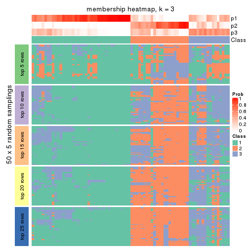
membership_heatmap(res, k = 4)
membership_heatmap(res, k = 5)
membership_heatmap(res, k = 6)
As soon as we have had the classes for columns, we can look for signatures which are significantly different between classes which can be candidate marks for certain classes. Following are the heatmaps for signatures.
Signature heatmaps where rows are scaled:
get_signatures(res, k = 2)
get_signatures(res, k = 3)
get_signatures(res, k = 4)
get_signatures(res, k = 5)
get_signatures(res, k = 6)
Signature heatmaps where rows are not scaled:
get_signatures(res, k = 2, scale_rows = FALSE)
get_signatures(res, k = 3, scale_rows = FALSE)
get_signatures(res, k = 4, scale_rows = FALSE)
get_signatures(res, k = 5, scale_rows = FALSE)
get_signatures(res, k = 6, scale_rows = FALSE)
Compare the overlap of signatures from different k:
compare_signatures(res)
get_signature() returns a data frame invisibly. TO get the list of signatures, the function
call should be assigned to a variable explicitly. In following code, if plot argument is set
to FALSE, no heatmap is plotted while only the differential analysis is performed.
# code only for demonstration
tb = get_signature(res, k = ..., plot = FALSE)
An example of the output of tb is:
#> which_row fdr mean_1 mean_2 scaled_mean_1 scaled_mean_2 km
#> 1 38 0.042760348 8.373488 9.131774 -0.5533452 0.5164555 1
#> 2 40 0.018707592 7.106213 8.469186 -0.6173731 0.5762149 1
#> 3 55 0.019134737 10.221463 11.207825 -0.6159697 0.5749050 1
#> 4 59 0.006059896 5.921854 7.869574 -0.6899429 0.6439467 1
#> 5 60 0.018055526 8.928898 10.211722 -0.6204761 0.5791110 1
#> 6 98 0.009384629 15.714769 14.887706 0.6635654 -0.6193277 2
...
The columns in tb are:
which_row: row indices corresponding to the input matrix.fdr: FDR for the differential test. mean_x: The mean value in group x.scaled_mean_x: The mean value in group x after rows are scaled.km: Row groups if k-means clustering is applied to rows.UMAP plot which shows how samples are separated.
dimension_reduction(res, k = 2, method = "UMAP")
dimension_reduction(res, k = 3, method = "UMAP")
dimension_reduction(res, k = 4, method = "UMAP")
dimension_reduction(res, k = 5, method = "UMAP")
dimension_reduction(res, k = 6, method = "UMAP")
Following heatmap shows how subgroups are split when increasing k:
collect_classes(res)
If matrix rows can be associated to genes, consider to use functional_enrichment(res,
...) to perform function enrichment for the signature genes. See this vignette for more detailed explanations.
The object with results only for a single top-value method and a single partition method can be extracted as:
res = res_list["SD", "skmeans"]
# you can also extract it by
# res = res_list["SD:skmeans"]
A summary of res and all the functions that can be applied to it:
res
#> A 'ConsensusPartition' object with k = 2, 3, 4, 5, 6.
#> On a matrix with 50 rows and 78 columns.
#> Top rows (5, 10, 15, 20, 25) are extracted by 'SD' method.
#> Subgroups are detected by 'skmeans' method.
#> Performed in total 1250 partitions by row resampling.
#> Best k for subgroups seems to be 2.
#>
#> Following methods can be applied to this 'ConsensusPartition' object:
#> [1] "cola_report" "collect_classes" "collect_plots"
#> [4] "collect_stats" "colnames" "compare_signatures"
#> [7] "consensus_heatmap" "dimension_reduction" "functional_enrichment"
#> [10] "get_anno_col" "get_anno" "get_classes"
#> [13] "get_consensus" "get_matrix" "get_membership"
#> [16] "get_param" "get_signatures" "get_stats"
#> [19] "is_best_k" "is_stable_k" "membership_heatmap"
#> [22] "ncol" "nrow" "plot_ecdf"
#> [25] "rownames" "select_partition_number" "show"
#> [28] "suggest_best_k" "test_to_known_factors"
collect_plots() function collects all the plots made from res for all k (number of partitions)
into one single page to provide an easy and fast comparison between different k.
collect_plots(res)
The plots are:
k and the heatmap of
predicted classes for each k.k.k.k.All the plots in panels can be made by individual functions and they are plotted later in this section.
select_partition_number() produces several plots showing different
statistics for choosing “optimized” k. There are following statistics:
k;k, the area increased is defined as \(A_k - A_{k-1}\).The detailed explanations of these statistics can be found in the cola vignette.
Generally speaking, lower PAC score, higher mean silhouette score or higher
concordance corresponds to better partition. Rand index and Jaccard index
measure how similar the current partition is compared to partition with k-1.
If they are too similar, we won't accept k is better than k-1.
select_partition_number(res)
The numeric values for all these statistics can be obtained by get_stats().
get_stats(res)
#> k 1-PAC mean_silhouette concordance area_increased Rand Jaccard
#> 2 2 0.409 0.762 0.885 0.4960 0.510 0.510
#> 3 3 0.347 0.495 0.756 0.3078 0.844 0.699
#> 4 4 0.418 0.359 0.649 0.1283 0.859 0.643
#> 5 5 0.482 0.306 0.607 0.0713 0.852 0.537
#> 6 6 0.546 0.363 0.595 0.0424 0.914 0.653
suggest_best_k() suggests the best \(k\) based on these statistics. The rules are as follows:
suggest_best_k(res)
#> [1] 2
Following shows the table of the partitions (You need to click the show/hide
code output link to see it). The membership matrix (columns with name p*)
is inferred by
clue::cl_consensus()
function with the SE method. Basically the value in the membership matrix
represents the probability to belong to a certain group. The finall class
label for an item is determined with the group with highest probability it
belongs to.
In get_classes() function, the entropy is calculated from the membership
matrix and the silhouette score is calculated from the consensus matrix.
cbind(get_classes(res, k = 2), get_membership(res, k = 2))
#> class entropy silhouette p1 p2
#> SRR764980 2 0.000 0.8614 0.000 1.000
#> SRR764981 1 0.788 0.6760 0.764 0.236
#> SRR764982 2 0.494 0.8260 0.108 0.892
#> SRR764983 1 0.000 0.8643 1.000 0.000
#> SRR764984 2 0.680 0.7259 0.180 0.820
#> SRR764985 2 0.000 0.8614 0.000 1.000
#> SRR764986 2 0.000 0.8614 0.000 1.000
#> SRR764987 2 0.000 0.8614 0.000 1.000
#> SRR764988 1 0.925 0.4403 0.660 0.340
#> SRR764989 1 0.000 0.8643 1.000 0.000
#> SRR764990 2 0.563 0.7820 0.132 0.868
#> SRR764991 1 0.975 0.4498 0.592 0.408
#> SRR764992 2 0.000 0.8614 0.000 1.000
#> SRR764993 2 0.886 0.6632 0.304 0.696
#> SRR764994 1 0.000 0.8643 1.000 0.000
#> SRR764995 2 0.000 0.8614 0.000 1.000
#> SRR764996 1 0.969 0.3377 0.604 0.396
#> SRR764997 1 0.000 0.8643 1.000 0.000
#> SRR764998 1 0.909 0.5223 0.676 0.324
#> SRR764999 1 0.738 0.7269 0.792 0.208
#> SRR765000 1 0.998 0.1589 0.524 0.476
#> SRR765001 2 0.000 0.8614 0.000 1.000
#> SRR765002 2 0.000 0.8614 0.000 1.000
#> SRR765003 1 0.946 0.5523 0.636 0.364
#> SRR765004 2 0.242 0.8553 0.040 0.960
#> SRR765005 1 0.802 0.7054 0.756 0.244
#> SRR765006 2 0.781 0.7509 0.232 0.768
#> SRR765007 2 1.000 0.0961 0.488 0.512
#> SRR765008 2 0.204 0.8564 0.032 0.968
#> SRR765009 2 0.518 0.8159 0.116 0.884
#> SRR765010 2 0.653 0.7842 0.168 0.832
#> SRR765011 1 0.204 0.8502 0.968 0.032
#> SRR765012 1 0.000 0.8643 1.000 0.000
#> SRR765013 2 0.671 0.7794 0.176 0.824
#> SRR765014 1 0.821 0.6878 0.744 0.256
#> SRR765015 1 0.000 0.8643 1.000 0.000
#> SRR765016 1 0.000 0.8643 1.000 0.000
#> SRR765017 1 0.552 0.7897 0.872 0.128
#> SRR765018 1 0.242 0.8482 0.960 0.040
#> SRR765020 1 0.204 0.8502 0.968 0.032
#> SRR765021 1 0.000 0.8643 1.000 0.000
#> SRR765022 1 0.402 0.8182 0.920 0.080
#> SRR765023 1 0.388 0.8271 0.924 0.076
#> SRR765024 1 0.000 0.8643 1.000 0.000
#> SRR765025 2 0.204 0.8564 0.032 0.968
#> SRR765026 1 0.000 0.8643 1.000 0.000
#> SRR765027 1 0.000 0.8643 1.000 0.000
#> SRR765028 2 0.584 0.8202 0.140 0.860
#> SRR765029 2 0.814 0.7294 0.252 0.748
#> SRR765030 1 0.000 0.8643 1.000 0.000
#> SRR765031 1 0.000 0.8643 1.000 0.000
#> SRR765032 1 0.327 0.8360 0.940 0.060
#> SRR765033 2 0.767 0.7577 0.224 0.776
#> SRR765034 1 0.204 0.8502 0.968 0.032
#> SRR765035 2 0.295 0.8528 0.052 0.948
#> SRR765036 1 0.978 0.4573 0.588 0.412
#> SRR765037 2 0.278 0.8531 0.048 0.952
#> SRR765038 2 0.000 0.8614 0.000 1.000
#> SRR765039 1 0.653 0.7563 0.832 0.168
#> SRR765040 2 0.981 0.2757 0.420 0.580
#> SRR765041 2 0.921 0.5838 0.336 0.664
#> SRR765042 1 0.000 0.8643 1.000 0.000
#> SRR765043 1 0.000 0.8643 1.000 0.000
#> SRR765044 2 0.000 0.8614 0.000 1.000
#> SRR765045 1 0.000 0.8643 1.000 0.000
#> SRR765046 2 0.000 0.8614 0.000 1.000
#> SRR765047 1 0.000 0.8643 1.000 0.000
#> SRR765048 1 0.000 0.8643 1.000 0.000
#> SRR765049 2 0.000 0.8614 0.000 1.000
#> SRR765050 2 0.767 0.7589 0.224 0.776
#> SRR765051 1 0.000 0.8643 1.000 0.000
#> SRR765052 1 0.833 0.6045 0.736 0.264
#> SRR765053 1 0.671 0.7518 0.824 0.176
#> SRR765054 1 0.000 0.8643 1.000 0.000
#> SRR765055 1 0.000 0.8643 1.000 0.000
#> SRR765056 1 0.000 0.8643 1.000 0.000
#> SRR765057 1 0.925 0.4236 0.660 0.340
#> SRR765058 1 0.653 0.7563 0.832 0.168
cbind(get_classes(res, k = 3), get_membership(res, k = 3))
#> class entropy silhouette p1 p2 p3
#> SRR764980 2 0.4399 0.6711 0.000 0.812 0.188
#> SRR764981 1 0.8950 0.0284 0.556 0.172 0.272
#> SRR764982 2 0.2774 0.7027 0.072 0.920 0.008
#> SRR764983 1 0.0000 0.6976 1.000 0.000 0.000
#> SRR764984 3 0.7745 0.3357 0.092 0.260 0.648
#> SRR764985 2 0.5178 0.6414 0.000 0.744 0.256
#> SRR764986 2 0.0000 0.7164 0.000 1.000 0.000
#> SRR764987 2 0.0000 0.7164 0.000 1.000 0.000
#> SRR764988 3 0.8953 0.2210 0.180 0.260 0.560
#> SRR764989 1 0.0892 0.6948 0.980 0.000 0.020
#> SRR764990 3 0.8363 -0.0118 0.084 0.412 0.504
#> SRR764991 3 0.7227 0.5256 0.200 0.096 0.704
#> SRR764992 2 0.3752 0.6917 0.000 0.856 0.144
#> SRR764993 2 0.8737 0.2792 0.124 0.536 0.340
#> SRR764994 1 0.4235 0.5650 0.824 0.000 0.176
#> SRR764995 2 0.0237 0.7163 0.000 0.996 0.004
#> SRR764996 3 0.9311 0.3642 0.364 0.168 0.468
#> SRR764997 1 0.6209 0.3390 0.628 0.004 0.368
#> SRR764998 3 0.9004 0.3216 0.400 0.132 0.468
#> SRR764999 3 0.7607 0.3301 0.364 0.052 0.584
#> SRR765000 3 0.7227 0.4444 0.200 0.096 0.704
#> SRR765001 2 0.2356 0.7083 0.000 0.928 0.072
#> SRR765002 2 0.0237 0.7164 0.000 0.996 0.004
#> SRR765003 1 0.9717 -0.3489 0.396 0.220 0.384
#> SRR765004 2 0.7012 0.4958 0.040 0.652 0.308
#> SRR765005 3 0.7446 0.3031 0.432 0.036 0.532
#> SRR765006 2 0.6012 0.5933 0.220 0.748 0.032
#> SRR765007 2 0.9714 -0.0650 0.256 0.452 0.292
#> SRR765008 2 0.4531 0.6594 0.008 0.824 0.168
#> SRR765009 2 0.7180 0.5569 0.096 0.708 0.196
#> SRR765010 2 0.6757 0.6047 0.084 0.736 0.180
#> SRR765011 1 0.4058 0.6162 0.880 0.044 0.076
#> SRR765012 1 0.0892 0.6948 0.980 0.000 0.020
#> SRR765013 2 0.7180 0.5841 0.096 0.708 0.196
#> SRR765014 3 0.7240 0.3159 0.432 0.028 0.540
#> SRR765015 1 0.5706 0.4190 0.680 0.000 0.320
#> SRR765016 1 0.0000 0.6976 1.000 0.000 0.000
#> SRR765017 1 0.6511 0.5064 0.760 0.136 0.104
#> SRR765018 1 0.6225 0.0707 0.568 0.000 0.432
#> SRR765020 1 0.4232 0.6171 0.872 0.044 0.084
#> SRR765021 1 0.4702 0.5498 0.788 0.000 0.212
#> SRR765022 1 0.7175 0.2693 0.592 0.032 0.376
#> SRR765023 1 0.6811 0.4211 0.716 0.064 0.220
#> SRR765024 1 0.0237 0.6971 0.996 0.000 0.004
#> SRR765025 2 0.2356 0.7083 0.000 0.928 0.072
#> SRR765026 1 0.1860 0.6777 0.948 0.000 0.052
#> SRR765027 1 0.0424 0.6966 0.992 0.000 0.008
#> SRR765028 2 0.2774 0.7027 0.072 0.920 0.008
#> SRR765029 2 0.5723 0.5776 0.240 0.744 0.016
#> SRR765030 1 0.4002 0.5851 0.840 0.000 0.160
#> SRR765031 1 0.5733 0.4139 0.676 0.000 0.324
#> SRR765032 1 0.5292 0.4382 0.764 0.008 0.228
#> SRR765033 2 0.8130 0.3226 0.072 0.528 0.400
#> SRR765034 1 0.6215 0.2947 0.572 0.000 0.428
#> SRR765035 2 0.3412 0.6916 0.000 0.876 0.124
#> SRR765036 3 0.8040 0.4568 0.300 0.092 0.608
#> SRR765037 2 0.6286 0.3052 0.000 0.536 0.464
#> SRR765038 2 0.0237 0.7163 0.000 0.996 0.004
#> SRR765039 1 0.6108 0.4117 0.732 0.028 0.240
#> SRR765040 2 0.6935 0.2979 0.312 0.652 0.036
#> SRR765041 2 0.8940 0.3723 0.200 0.568 0.232
#> SRR765042 1 0.0237 0.6971 0.996 0.000 0.004
#> SRR765043 1 0.1163 0.6895 0.972 0.000 0.028
#> SRR765044 2 0.6126 0.4240 0.000 0.600 0.400
#> SRR765045 1 0.0237 0.6978 0.996 0.000 0.004
#> SRR765046 2 0.3619 0.6764 0.000 0.864 0.136
#> SRR765047 1 0.3192 0.6353 0.888 0.000 0.112
#> SRR765048 1 0.0000 0.6976 1.000 0.000 0.000
#> SRR765049 2 0.4452 0.6408 0.000 0.808 0.192
#> SRR765050 2 0.7843 0.5513 0.208 0.664 0.128
#> SRR765051 1 0.2261 0.6622 0.932 0.000 0.068
#> SRR765052 1 0.9006 0.1362 0.544 0.288 0.168
#> SRR765053 3 0.5894 0.4299 0.220 0.028 0.752
#> SRR765054 1 0.0424 0.6963 0.992 0.000 0.008
#> SRR765055 1 0.1031 0.6946 0.976 0.000 0.024
#> SRR765056 1 0.5706 0.4190 0.680 0.000 0.320
#> SRR765057 3 0.8604 0.2915 0.312 0.124 0.564
#> SRR765058 1 0.6794 0.2360 0.648 0.028 0.324
cbind(get_classes(res, k = 4), get_membership(res, k = 4))
#> class entropy silhouette p1 p2 p3 p4
#> SRR764980 3 0.6316 0.2932 0.000 0.300 0.612 0.088
#> SRR764981 1 0.7688 0.0765 0.464 0.412 0.056 0.068
#> SRR764982 2 0.6241 -0.0230 0.048 0.544 0.404 0.004
#> SRR764983 1 0.2473 0.6825 0.908 0.012 0.000 0.080
#> SRR764984 4 0.4149 0.5755 0.004 0.072 0.088 0.836
#> SRR764985 3 0.7666 0.1054 0.000 0.388 0.400 0.212
#> SRR764986 3 0.5292 0.1010 0.000 0.480 0.512 0.008
#> SRR764987 3 0.5296 0.0748 0.000 0.492 0.500 0.008
#> SRR764988 3 0.8570 -0.1542 0.116 0.112 0.512 0.260
#> SRR764989 1 0.1871 0.6952 0.948 0.012 0.016 0.024
#> SRR764990 4 0.7268 0.3337 0.000 0.372 0.152 0.476
#> SRR764991 4 0.5113 0.6356 0.076 0.060 0.060 0.804
#> SRR764992 3 0.7120 0.2263 0.000 0.368 0.496 0.136
#> SRR764993 3 0.6593 0.2128 0.092 0.164 0.696 0.048
#> SRR764994 1 0.4353 0.5265 0.756 0.000 0.012 0.232
#> SRR764995 2 0.5281 -0.1117 0.000 0.528 0.464 0.008
#> SRR764996 2 0.9668 -0.2993 0.180 0.384 0.220 0.216
#> SRR764997 1 0.7808 0.4110 0.548 0.036 0.272 0.144
#> SRR764998 4 0.8882 0.3362 0.096 0.380 0.136 0.388
#> SRR764999 4 0.3877 0.6380 0.112 0.000 0.048 0.840
#> SRR765000 4 0.5565 0.4611 0.032 0.004 0.308 0.656
#> SRR765001 3 0.6395 0.1822 0.000 0.460 0.476 0.064
#> SRR765002 3 0.5292 0.0995 0.000 0.480 0.512 0.008
#> SRR765003 4 0.8591 0.5386 0.176 0.176 0.112 0.536
#> SRR765004 3 0.4378 0.3175 0.000 0.164 0.796 0.040
#> SRR765005 4 0.5190 0.5664 0.244 0.008 0.028 0.720
#> SRR765006 2 0.7277 0.2595 0.192 0.588 0.208 0.012
#> SRR765007 2 0.8436 -0.0151 0.172 0.436 0.348 0.044
#> SRR765008 3 0.5322 0.2734 0.000 0.312 0.660 0.028
#> SRR765009 2 0.7928 0.2216 0.048 0.564 0.160 0.228
#> SRR765010 2 0.3811 0.3175 0.044 0.860 0.084 0.012
#> SRR765011 1 0.5146 0.6094 0.764 0.156 0.004 0.076
#> SRR765012 1 0.2197 0.6929 0.928 0.000 0.024 0.048
#> SRR765013 2 0.3299 0.3291 0.044 0.888 0.056 0.012
#> SRR765014 4 0.7229 0.5965 0.148 0.144 0.056 0.652
#> SRR765015 1 0.7168 0.4530 0.588 0.008 0.228 0.176
#> SRR765016 1 0.0657 0.6945 0.984 0.012 0.004 0.000
#> SRR765017 1 0.6704 0.5096 0.628 0.264 0.016 0.092
#> SRR765018 4 0.6373 0.2496 0.356 0.004 0.064 0.576
#> SRR765020 1 0.6071 0.5945 0.716 0.152 0.016 0.116
#> SRR765021 1 0.6914 0.5277 0.632 0.016 0.136 0.216
#> SRR765022 1 0.8539 0.2695 0.448 0.056 0.332 0.164
#> SRR765023 1 0.7505 0.2627 0.552 0.080 0.048 0.320
#> SRR765024 1 0.0657 0.6945 0.984 0.012 0.004 0.000
#> SRR765025 3 0.6709 0.1918 0.000 0.456 0.456 0.088
#> SRR765026 1 0.3166 0.6439 0.868 0.000 0.016 0.116
#> SRR765027 1 0.1610 0.6930 0.952 0.000 0.016 0.032
#> SRR765028 2 0.6241 -0.0305 0.048 0.544 0.404 0.004
#> SRR765029 2 0.7026 0.2682 0.208 0.596 0.192 0.004
#> SRR765030 1 0.4468 0.5030 0.752 0.000 0.016 0.232
#> SRR765031 1 0.7432 0.4560 0.592 0.028 0.236 0.144
#> SRR765032 1 0.8091 0.3384 0.584 0.188 0.100 0.128
#> SRR765033 3 0.5382 0.2969 0.036 0.116 0.780 0.068
#> SRR765034 1 0.9566 0.2070 0.384 0.152 0.268 0.196
#> SRR765035 2 0.7078 0.2649 0.032 0.636 0.212 0.120
#> SRR765036 4 0.8642 0.4942 0.076 0.248 0.180 0.496
#> SRR765037 3 0.4906 0.3219 0.000 0.084 0.776 0.140
#> SRR765038 2 0.5281 -0.1083 0.000 0.528 0.464 0.008
#> SRR765039 1 0.5326 0.2423 0.604 0.000 0.016 0.380
#> SRR765040 2 0.8184 0.0898 0.272 0.412 0.304 0.012
#> SRR765041 2 0.5068 0.2980 0.088 0.804 0.044 0.064
#> SRR765042 1 0.0469 0.6947 0.988 0.012 0.000 0.000
#> SRR765043 1 0.2928 0.6503 0.880 0.000 0.012 0.108
#> SRR765044 2 0.6664 0.2044 0.000 0.620 0.164 0.216
#> SRR765045 1 0.0937 0.6951 0.976 0.012 0.000 0.012
#> SRR765046 2 0.6201 0.1574 0.000 0.620 0.300 0.080
#> SRR765047 1 0.2924 0.6479 0.884 0.000 0.016 0.100
#> SRR765048 1 0.0336 0.6953 0.992 0.000 0.000 0.008
#> SRR765049 2 0.6098 0.2607 0.000 0.676 0.200 0.124
#> SRR765050 2 0.6595 0.3015 0.192 0.680 0.096 0.032
#> SRR765051 1 0.1940 0.6834 0.924 0.000 0.000 0.076
#> SRR765052 1 0.8382 0.1717 0.400 0.392 0.040 0.168
#> SRR765053 4 0.3858 0.6139 0.056 0.000 0.100 0.844
#> SRR765054 1 0.2081 0.6837 0.916 0.000 0.000 0.084
#> SRR765055 1 0.3280 0.6705 0.860 0.000 0.016 0.124
#> SRR765056 1 0.7191 0.4710 0.608 0.020 0.228 0.144
#> SRR765057 3 0.9274 -0.2209 0.152 0.212 0.452 0.184
#> SRR765058 4 0.6630 0.4174 0.308 0.048 0.032 0.612
cbind(get_classes(res, k = 5), get_membership(res, k = 5))
#> class entropy silhouette p1 p2 p3 p4 p5
#> SRR764980 2 0.2689 0.4795 0.000 0.888 0.016 0.012 0.084
#> SRR764981 1 0.8498 -0.1493 0.400 0.048 0.068 0.300 0.184
#> SRR764982 5 0.4620 0.1629 0.016 0.236 0.028 0.000 0.720
#> SRR764983 1 0.4786 0.6087 0.760 0.000 0.032 0.148 0.060
#> SRR764984 3 0.6396 0.1360 0.008 0.104 0.576 0.292 0.020
#> SRR764985 2 0.5226 0.4432 0.000 0.724 0.088 0.028 0.160
#> SRR764986 2 0.3983 0.4348 0.000 0.660 0.000 0.000 0.340
#> SRR764987 2 0.4171 0.3739 0.000 0.604 0.000 0.000 0.396
#> SRR764988 3 0.7734 0.1602 0.064 0.188 0.568 0.092 0.088
#> SRR764989 1 0.3481 0.6516 0.856 0.000 0.060 0.024 0.060
#> SRR764990 4 0.6047 0.3420 0.000 0.156 0.064 0.672 0.108
#> SRR764991 4 0.6927 -0.0790 0.032 0.120 0.420 0.424 0.004
#> SRR764992 2 0.4916 0.4602 0.000 0.744 0.032 0.056 0.168
#> SRR764993 2 0.7429 0.0951 0.032 0.356 0.260 0.000 0.352
#> SRR764994 1 0.4941 0.2987 0.628 0.000 0.328 0.044 0.000
#> SRR764995 2 0.4440 0.2454 0.000 0.528 0.000 0.004 0.468
#> SRR764996 4 0.8189 0.2712 0.128 0.260 0.024 0.464 0.124
#> SRR764997 3 0.6288 -0.1856 0.448 0.008 0.456 0.016 0.072
#> SRR764998 4 0.6385 0.3296 0.072 0.092 0.028 0.684 0.124
#> SRR764999 3 0.6440 0.1549 0.064 0.052 0.568 0.312 0.004
#> SRR765000 3 0.4675 0.2578 0.016 0.108 0.784 0.080 0.012
#> SRR765001 2 0.4161 0.4627 0.000 0.704 0.016 0.000 0.280
#> SRR765002 2 0.4517 0.3868 0.000 0.600 0.000 0.012 0.388
#> SRR765003 4 0.8647 0.1782 0.112 0.108 0.156 0.492 0.132
#> SRR765004 2 0.6150 0.3564 0.000 0.628 0.120 0.032 0.220
#> SRR765005 3 0.7573 0.0306 0.160 0.052 0.412 0.368 0.008
#> SRR765006 5 0.3809 0.4315 0.100 0.036 0.032 0.000 0.832
#> SRR765007 4 0.9274 0.1385 0.120 0.276 0.064 0.276 0.264
#> SRR765008 2 0.5663 0.3758 0.000 0.612 0.068 0.016 0.304
#> SRR765009 5 0.7494 0.3165 0.048 0.116 0.112 0.124 0.600
#> SRR765010 5 0.5981 0.3398 0.000 0.128 0.016 0.232 0.624
#> SRR765011 1 0.6483 0.5059 0.620 0.000 0.056 0.188 0.136
#> SRR765012 1 0.2136 0.6601 0.904 0.000 0.088 0.008 0.000
#> SRR765013 5 0.4657 0.4078 0.000 0.020 0.024 0.240 0.716
#> SRR765014 4 0.4592 0.2767 0.068 0.008 0.156 0.764 0.004
#> SRR765015 1 0.4861 0.2374 0.548 0.000 0.428 0.024 0.000
#> SRR765016 1 0.0833 0.6707 0.976 0.000 0.004 0.016 0.004
#> SRR765017 1 0.7455 0.3025 0.480 0.000 0.064 0.204 0.252
#> SRR765018 3 0.7076 0.0318 0.252 0.016 0.472 0.256 0.004
#> SRR765020 1 0.6615 0.4805 0.592 0.000 0.084 0.244 0.080
#> SRR765021 1 0.6120 0.3506 0.556 0.000 0.300 0.140 0.004
#> SRR765022 3 0.7420 -0.0193 0.404 0.088 0.428 0.024 0.056
#> SRR765023 4 0.6188 -0.1666 0.432 0.024 0.072 0.472 0.000
#> SRR765024 1 0.1399 0.6687 0.952 0.000 0.000 0.028 0.020
#> SRR765025 2 0.5315 0.4549 0.000 0.600 0.068 0.000 0.332
#> SRR765026 1 0.3297 0.6149 0.848 0.000 0.084 0.068 0.000
#> SRR765027 1 0.1205 0.6726 0.956 0.000 0.040 0.004 0.000
#> SRR765028 5 0.4429 0.1327 0.004 0.256 0.028 0.000 0.712
#> SRR765029 5 0.3425 0.4349 0.112 0.044 0.004 0.000 0.840
#> SRR765030 1 0.5067 0.4227 0.700 0.000 0.204 0.092 0.004
#> SRR765031 1 0.5470 0.1790 0.512 0.000 0.440 0.016 0.032
#> SRR765032 4 0.7539 -0.0340 0.392 0.052 0.020 0.420 0.116
#> SRR765033 2 0.6112 0.3590 0.020 0.692 0.124 0.044 0.120
#> SRR765034 3 0.7009 0.0799 0.304 0.008 0.532 0.056 0.100
#> SRR765035 5 0.5569 0.3934 0.004 0.044 0.044 0.228 0.680
#> SRR765036 4 0.4532 0.3631 0.024 0.192 0.024 0.756 0.004
#> SRR765037 2 0.5038 0.3879 0.000 0.740 0.144 0.024 0.092
#> SRR765038 5 0.4304 -0.2412 0.000 0.484 0.000 0.000 0.516
#> SRR765039 1 0.5915 0.0711 0.508 0.000 0.384 0.108 0.000
#> SRR765040 2 0.8440 0.0109 0.236 0.352 0.032 0.064 0.316
#> SRR765041 5 0.5900 0.2833 0.016 0.020 0.040 0.332 0.592
#> SRR765042 1 0.0771 0.6724 0.976 0.000 0.000 0.004 0.020
#> SRR765043 1 0.2962 0.6219 0.868 0.000 0.084 0.048 0.000
#> SRR765044 4 0.7408 -0.2219 0.000 0.312 0.032 0.392 0.264
#> SRR765045 1 0.1605 0.6704 0.944 0.000 0.040 0.012 0.004
#> SRR765046 2 0.6175 0.1522 0.000 0.456 0.004 0.116 0.424
#> SRR765047 1 0.3181 0.6185 0.856 0.000 0.072 0.072 0.000
#> SRR765048 1 0.0290 0.6730 0.992 0.000 0.008 0.000 0.000
#> SRR765049 5 0.5556 0.3585 0.000 0.136 0.004 0.204 0.656
#> SRR765050 5 0.6895 0.3707 0.128 0.112 0.020 0.104 0.636
#> SRR765051 1 0.2221 0.6706 0.912 0.000 0.052 0.036 0.000
#> SRR765052 5 0.8064 -0.1224 0.248 0.000 0.112 0.236 0.404
#> SRR765053 3 0.5575 0.1980 0.012 0.072 0.648 0.264 0.004
#> SRR765054 1 0.3368 0.6343 0.820 0.000 0.024 0.156 0.000
#> SRR765055 1 0.4522 0.5876 0.744 0.000 0.080 0.176 0.000
#> SRR765056 1 0.5108 0.2350 0.548 0.000 0.420 0.024 0.008
#> SRR765057 3 0.9128 0.0954 0.160 0.184 0.408 0.172 0.076
#> SRR765058 4 0.6077 0.1427 0.156 0.000 0.260 0.580 0.004
cbind(get_classes(res, k = 6), get_membership(res, k = 6))
#> class entropy silhouette p1 p2 p3 p4 p5 p6
#> SRR764980 2 0.298 0.5271 0.000 0.868 0.040 0.044 0.000 0.048
#> SRR764981 4 0.798 0.2264 0.320 0.040 0.144 0.400 0.052 0.044
#> SRR764982 5 0.462 0.2874 0.012 0.256 0.056 0.000 0.676 0.000
#> SRR764983 1 0.439 0.5705 0.772 0.000 0.040 0.132 0.044 0.012
#> SRR764984 6 0.234 0.5933 0.000 0.032 0.056 0.000 0.012 0.900
#> SRR764985 2 0.337 0.5187 0.000 0.832 0.012 0.024 0.012 0.120
#> SRR764986 2 0.228 0.5337 0.000 0.868 0.004 0.000 0.128 0.000
#> SRR764987 2 0.307 0.4941 0.000 0.792 0.004 0.000 0.200 0.004
#> SRR764988 3 0.645 0.3249 0.028 0.036 0.656 0.072 0.100 0.108
#> SRR764989 1 0.364 0.5964 0.828 0.000 0.096 0.024 0.040 0.012
#> SRR764990 4 0.723 0.1675 0.000 0.072 0.028 0.436 0.144 0.320
#> SRR764991 6 0.297 0.5553 0.028 0.016 0.020 0.052 0.004 0.880
#> SRR764992 2 0.382 0.5323 0.000 0.796 0.024 0.000 0.048 0.132
#> SRR764993 3 0.757 -0.0853 0.024 0.236 0.376 0.040 0.308 0.016
#> SRR764994 1 0.623 0.2850 0.564 0.000 0.108 0.068 0.004 0.256
#> SRR764995 2 0.386 0.4037 0.000 0.704 0.024 0.000 0.272 0.000
#> SRR764996 4 0.635 0.4351 0.096 0.108 0.064 0.664 0.020 0.048
#> SRR764997 3 0.664 0.3578 0.332 0.000 0.480 0.008 0.100 0.080
#> SRR764998 4 0.581 0.3962 0.072 0.024 0.040 0.688 0.024 0.152
#> SRR764999 6 0.283 0.6058 0.032 0.000 0.080 0.012 0.004 0.872
#> SRR765000 6 0.514 0.2935 0.004 0.032 0.396 0.008 0.012 0.548
#> SRR765001 2 0.353 0.5404 0.000 0.820 0.020 0.000 0.112 0.048
#> SRR765002 2 0.391 0.5098 0.000 0.768 0.032 0.000 0.180 0.020
#> SRR765003 6 0.798 0.1620 0.068 0.032 0.068 0.192 0.152 0.488
#> SRR765004 2 0.719 0.2576 0.000 0.440 0.260 0.088 0.204 0.008
#> SRR765005 6 0.345 0.5308 0.132 0.004 0.000 0.028 0.016 0.820
#> SRR765006 5 0.366 0.5343 0.088 0.060 0.032 0.000 0.820 0.000
#> SRR765007 4 0.807 0.2986 0.072 0.140 0.224 0.464 0.072 0.028
#> SRR765008 2 0.687 0.2895 0.000 0.476 0.196 0.060 0.260 0.008
#> SRR765009 5 0.710 0.4441 0.024 0.152 0.076 0.076 0.596 0.076
#> SRR765010 5 0.693 0.2243 0.000 0.232 0.048 0.340 0.376 0.004
#> SRR765011 1 0.586 0.4542 0.592 0.000 0.072 0.256 0.080 0.000
#> SRR765012 1 0.288 0.5858 0.844 0.000 0.132 0.012 0.000 0.012
#> SRR765013 5 0.645 0.2960 0.000 0.100 0.092 0.300 0.508 0.000
#> SRR765014 4 0.691 -0.0260 0.056 0.004 0.064 0.460 0.052 0.364
#> SRR765015 1 0.550 -0.1639 0.492 0.000 0.416 0.012 0.004 0.076
#> SRR765016 1 0.119 0.6206 0.956 0.000 0.032 0.004 0.000 0.008
#> SRR765017 1 0.733 0.1957 0.416 0.000 0.096 0.248 0.232 0.008
#> SRR765018 6 0.745 0.2074 0.180 0.000 0.164 0.240 0.004 0.412
#> SRR765020 1 0.615 0.4093 0.540 0.000 0.136 0.288 0.028 0.008
#> SRR765021 1 0.624 0.1795 0.540 0.000 0.300 0.112 0.024 0.024
#> SRR765022 3 0.661 0.3973 0.332 0.004 0.508 0.064 0.028 0.064
#> SRR765023 1 0.806 0.1594 0.416 0.016 0.080 0.268 0.056 0.164
#> SRR765024 1 0.188 0.6177 0.928 0.000 0.008 0.020 0.040 0.004
#> SRR765025 2 0.495 0.5146 0.000 0.696 0.056 0.000 0.196 0.052
#> SRR765026 1 0.457 0.5405 0.760 0.000 0.096 0.096 0.004 0.044
#> SRR765027 1 0.182 0.6186 0.924 0.000 0.056 0.008 0.000 0.012
#> SRR765028 5 0.437 0.2646 0.004 0.280 0.044 0.000 0.672 0.000
#> SRR765029 5 0.334 0.5342 0.108 0.064 0.004 0.000 0.824 0.000
#> SRR765030 1 0.632 0.3505 0.596 0.000 0.120 0.120 0.004 0.160
#> SRR765031 3 0.642 0.2698 0.396 0.000 0.452 0.012 0.060 0.080
#> SRR765032 4 0.664 0.2324 0.256 0.000 0.072 0.532 0.128 0.012
#> SRR765033 2 0.730 0.2400 0.012 0.436 0.320 0.112 0.112 0.008
#> SRR765034 3 0.723 0.4222 0.220 0.000 0.488 0.132 0.016 0.144
#> SRR765035 5 0.633 0.4426 0.004 0.076 0.036 0.140 0.640 0.104
#> SRR765036 4 0.572 0.2945 0.012 0.068 0.032 0.668 0.024 0.196
#> SRR765037 2 0.713 0.3323 0.000 0.504 0.268 0.076 0.100 0.052
#> SRR765038 2 0.376 0.2975 0.000 0.644 0.004 0.000 0.352 0.000
#> SRR765039 1 0.653 0.0810 0.488 0.000 0.084 0.096 0.004 0.328
#> SRR765040 2 0.842 0.0844 0.192 0.436 0.116 0.100 0.136 0.020
#> SRR765041 4 0.671 -0.1499 0.012 0.072 0.052 0.444 0.400 0.020
#> SRR765042 1 0.108 0.6209 0.956 0.000 0.000 0.000 0.040 0.004
#> SRR765043 1 0.388 0.5654 0.804 0.000 0.096 0.064 0.000 0.036
#> SRR765044 2 0.812 -0.0693 0.000 0.328 0.032 0.256 0.164 0.220
#> SRR765045 1 0.203 0.6159 0.912 0.000 0.068 0.012 0.004 0.004
#> SRR765046 2 0.524 0.4094 0.000 0.672 0.024 0.060 0.224 0.020
#> SRR765047 1 0.441 0.5358 0.768 0.000 0.100 0.096 0.004 0.032
#> SRR765048 1 0.135 0.6258 0.940 0.000 0.056 0.000 0.000 0.004
#> SRR765049 5 0.612 0.4383 0.000 0.164 0.008 0.128 0.620 0.080
#> SRR765050 5 0.793 0.3833 0.092 0.196 0.076 0.124 0.492 0.020
#> SRR765051 1 0.278 0.6238 0.868 0.000 0.096 0.024 0.008 0.004
#> SRR765052 5 0.828 -0.0877 0.208 0.008 0.116 0.232 0.380 0.056
#> SRR765053 6 0.303 0.5900 0.004 0.008 0.164 0.000 0.004 0.820
#> SRR765054 1 0.380 0.5806 0.804 0.000 0.036 0.132 0.016 0.012
#> SRR765055 1 0.494 0.5066 0.712 0.000 0.108 0.152 0.020 0.008
#> SRR765056 1 0.544 -0.1670 0.508 0.000 0.404 0.012 0.004 0.072
#> SRR765057 3 0.685 0.2894 0.108 0.028 0.604 0.160 0.028 0.072
#> SRR765058 6 0.805 0.1242 0.124 0.004 0.100 0.284 0.084 0.404
Heatmaps for the consensus matrix. It visualizes the probability of two samples to be in a same group.
consensus_heatmap(res, k = 2)
consensus_heatmap(res, k = 3)
consensus_heatmap(res, k = 4)
consensus_heatmap(res, k = 5)
consensus_heatmap(res, k = 6)
Heatmaps for the membership of samples in all partitions to see how consistent they are:
membership_heatmap(res, k = 2)
membership_heatmap(res, k = 3)
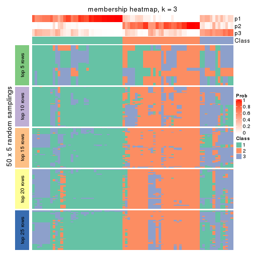
membership_heatmap(res, k = 4)
membership_heatmap(res, k = 5)
membership_heatmap(res, k = 6)
As soon as we have had the classes for columns, we can look for signatures which are significantly different between classes which can be candidate marks for certain classes. Following are the heatmaps for signatures.
Signature heatmaps where rows are scaled:
get_signatures(res, k = 2)
get_signatures(res, k = 3)
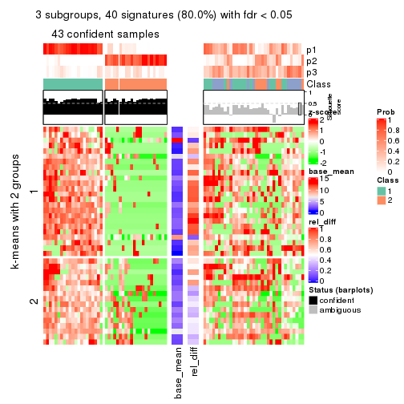
get_signatures(res, k = 4)
get_signatures(res, k = 5)

get_signatures(res, k = 6)
Signature heatmaps where rows are not scaled:
get_signatures(res, k = 2, scale_rows = FALSE)
get_signatures(res, k = 3, scale_rows = FALSE)
get_signatures(res, k = 4, scale_rows = FALSE)
get_signatures(res, k = 5, scale_rows = FALSE)

get_signatures(res, k = 6, scale_rows = FALSE)
Compare the overlap of signatures from different k:
compare_signatures(res)
get_signature() returns a data frame invisibly. TO get the list of signatures, the function
call should be assigned to a variable explicitly. In following code, if plot argument is set
to FALSE, no heatmap is plotted while only the differential analysis is performed.
# code only for demonstration
tb = get_signature(res, k = ..., plot = FALSE)
An example of the output of tb is:
#> which_row fdr mean_1 mean_2 scaled_mean_1 scaled_mean_2 km
#> 1 38 0.042760348 8.373488 9.131774 -0.5533452 0.5164555 1
#> 2 40 0.018707592 7.106213 8.469186 -0.6173731 0.5762149 1
#> 3 55 0.019134737 10.221463 11.207825 -0.6159697 0.5749050 1
#> 4 59 0.006059896 5.921854 7.869574 -0.6899429 0.6439467 1
#> 5 60 0.018055526 8.928898 10.211722 -0.6204761 0.5791110 1
#> 6 98 0.009384629 15.714769 14.887706 0.6635654 -0.6193277 2
...
The columns in tb are:
which_row: row indices corresponding to the input matrix.fdr: FDR for the differential test. mean_x: The mean value in group x.scaled_mean_x: The mean value in group x after rows are scaled.km: Row groups if k-means clustering is applied to rows.UMAP plot which shows how samples are separated.
dimension_reduction(res, k = 2, method = "UMAP")
dimension_reduction(res, k = 3, method = "UMAP")
dimension_reduction(res, k = 4, method = "UMAP")
dimension_reduction(res, k = 5, method = "UMAP")
dimension_reduction(res, k = 6, method = "UMAP")
Following heatmap shows how subgroups are split when increasing k:
collect_classes(res)
If matrix rows can be associated to genes, consider to use functional_enrichment(res,
...) to perform function enrichment for the signature genes. See this vignette for more detailed explanations.
The object with results only for a single top-value method and a single partition method can be extracted as:
res = res_list["SD", "pam"]
# you can also extract it by
# res = res_list["SD:pam"]
A summary of res and all the functions that can be applied to it:
res
#> A 'ConsensusPartition' object with k = 2, 3, 4, 5, 6.
#> On a matrix with 50 rows and 78 columns.
#> Top rows (5, 10, 15, 20, 25) are extracted by 'SD' method.
#> Subgroups are detected by 'pam' method.
#> Performed in total 1250 partitions by row resampling.
#> Best k for subgroups seems to be 3.
#>
#> Following methods can be applied to this 'ConsensusPartition' object:
#> [1] "cola_report" "collect_classes" "collect_plots"
#> [4] "collect_stats" "colnames" "compare_signatures"
#> [7] "consensus_heatmap" "dimension_reduction" "functional_enrichment"
#> [10] "get_anno_col" "get_anno" "get_classes"
#> [13] "get_consensus" "get_matrix" "get_membership"
#> [16] "get_param" "get_signatures" "get_stats"
#> [19] "is_best_k" "is_stable_k" "membership_heatmap"
#> [22] "ncol" "nrow" "plot_ecdf"
#> [25] "rownames" "select_partition_number" "show"
#> [28] "suggest_best_k" "test_to_known_factors"
collect_plots() function collects all the plots made from res for all k (number of partitions)
into one single page to provide an easy and fast comparison between different k.
collect_plots(res)
The plots are:
k and the heatmap of
predicted classes for each k.k.k.k.All the plots in panels can be made by individual functions and they are plotted later in this section.
select_partition_number() produces several plots showing different
statistics for choosing “optimized” k. There are following statistics:
k;k, the area increased is defined as \(A_k - A_{k-1}\).The detailed explanations of these statistics can be found in the cola vignette.
Generally speaking, lower PAC score, higher mean silhouette score or higher
concordance corresponds to better partition. Rand index and Jaccard index
measure how similar the current partition is compared to partition with k-1.
If they are too similar, we won't accept k is better than k-1.
select_partition_number(res)
The numeric values for all these statistics can be obtained by get_stats().
get_stats(res)
#> k 1-PAC mean_silhouette concordance area_increased Rand Jaccard
#> 2 2 0.422 0.767 0.887 0.3862 0.640 0.640
#> 3 3 0.252 0.408 0.728 0.5568 0.717 0.567
#> 4 4 0.290 0.401 0.673 0.1594 0.855 0.649
#> 5 5 0.363 0.339 0.590 0.0807 0.906 0.705
#> 6 6 0.422 0.285 0.576 0.0487 0.924 0.715
suggest_best_k() suggests the best \(k\) based on these statistics. The rules are as follows:
suggest_best_k(res)
#> [1] 3
Following shows the table of the partitions (You need to click the show/hide
code output link to see it). The membership matrix (columns with name p*)
is inferred by
clue::cl_consensus()
function with the SE method. Basically the value in the membership matrix
represents the probability to belong to a certain group. The finall class
label for an item is determined with the group with highest probability it
belongs to.
In get_classes() function, the entropy is calculated from the membership
matrix and the silhouette score is calculated from the consensus matrix.
cbind(get_classes(res, k = 2), get_membership(res, k = 2))
#> class entropy silhouette p1 p2
#> SRR764980 2 0.2603 0.8179 0.044 0.956
#> SRR764981 1 0.1843 0.8811 0.972 0.028
#> SRR764982 2 0.9393 0.4931 0.356 0.644
#> SRR764983 1 0.0376 0.8811 0.996 0.004
#> SRR764984 1 0.6343 0.8194 0.840 0.160
#> SRR764985 2 0.1843 0.8229 0.028 0.972
#> SRR764986 2 0.0376 0.8220 0.004 0.996
#> SRR764987 2 0.0000 0.8223 0.000 1.000
#> SRR764988 1 0.5519 0.8370 0.872 0.128
#> SRR764989 1 0.0376 0.8812 0.996 0.004
#> SRR764990 1 0.9000 0.6142 0.684 0.316
#> SRR764991 1 0.7056 0.7893 0.808 0.192
#> SRR764992 2 0.1414 0.8234 0.020 0.980
#> SRR764993 1 0.8813 0.5984 0.700 0.300
#> SRR764994 1 0.0376 0.8811 0.996 0.004
#> SRR764995 2 0.0938 0.8231 0.012 0.988
#> SRR764996 1 0.2423 0.8796 0.960 0.040
#> SRR764997 1 0.1843 0.8821 0.972 0.028
#> SRR764998 1 0.3584 0.8746 0.932 0.068
#> SRR764999 1 0.5946 0.8295 0.856 0.144
#> SRR765000 1 0.6438 0.8161 0.836 0.164
#> SRR765001 2 0.0672 0.8232 0.008 0.992
#> SRR765002 2 0.0376 0.8227 0.004 0.996
#> SRR765003 1 0.6048 0.8179 0.852 0.148
#> SRR765004 1 0.9993 0.0101 0.516 0.484
#> SRR765005 1 0.5294 0.8317 0.880 0.120
#> SRR765006 1 0.8443 0.6461 0.728 0.272
#> SRR765007 1 0.4562 0.8439 0.904 0.096
#> SRR765008 2 0.7815 0.6859 0.232 0.768
#> SRR765009 1 0.7745 0.7191 0.772 0.228
#> SRR765010 2 0.9977 0.1292 0.472 0.528
#> SRR765011 1 0.0000 0.8808 1.000 0.000
#> SRR765012 1 0.0376 0.8812 0.996 0.004
#> SRR765013 1 0.9996 0.0267 0.512 0.488
#> SRR765014 1 0.4431 0.8533 0.908 0.092
#> SRR765015 1 0.0938 0.8822 0.988 0.012
#> SRR765016 1 0.0376 0.8811 0.996 0.004
#> SRR765017 1 0.4562 0.8568 0.904 0.096
#> SRR765018 1 0.2423 0.8810 0.960 0.040
#> SRR765020 1 0.0938 0.8821 0.988 0.012
#> SRR765021 1 0.2948 0.8772 0.948 0.052
#> SRR765022 1 0.2948 0.8780 0.948 0.052
#> SRR765023 1 0.1414 0.8829 0.980 0.020
#> SRR765024 1 0.0376 0.8811 0.996 0.004
#> SRR765025 2 0.2603 0.8150 0.044 0.956
#> SRR765026 1 0.0376 0.8811 0.996 0.004
#> SRR765027 1 0.0000 0.8808 1.000 0.000
#> SRR765028 2 0.6438 0.7490 0.164 0.836
#> SRR765029 1 0.8813 0.5906 0.700 0.300
#> SRR765030 1 0.1184 0.8818 0.984 0.016
#> SRR765031 1 0.1633 0.8818 0.976 0.024
#> SRR765032 1 0.0938 0.8815 0.988 0.012
#> SRR765033 1 0.8861 0.5925 0.696 0.304
#> SRR765034 1 0.2603 0.8799 0.956 0.044
#> SRR765035 1 0.9000 0.5841 0.684 0.316
#> SRR765036 1 0.6148 0.8118 0.848 0.152
#> SRR765037 2 0.9933 0.1679 0.452 0.548
#> SRR765038 2 0.0672 0.8224 0.008 0.992
#> SRR765039 1 0.0672 0.8819 0.992 0.008
#> SRR765040 1 0.7950 0.6203 0.760 0.240
#> SRR765041 1 0.6531 0.8067 0.832 0.168
#> SRR765042 1 0.0000 0.8808 1.000 0.000
#> SRR765043 1 0.0376 0.8811 0.996 0.004
#> SRR765044 2 0.9732 0.2858 0.404 0.596
#> SRR765045 1 0.0376 0.8812 0.996 0.004
#> SRR765046 2 0.1184 0.8246 0.016 0.984
#> SRR765047 1 0.0376 0.8811 0.996 0.004
#> SRR765048 1 0.0000 0.8808 1.000 0.000
#> SRR765049 2 0.9044 0.5181 0.320 0.680
#> SRR765050 1 0.9552 0.4008 0.624 0.376
#> SRR765051 1 0.0000 0.8808 1.000 0.000
#> SRR765052 1 0.5408 0.8405 0.876 0.124
#> SRR765053 1 0.6343 0.8194 0.840 0.160
#> SRR765054 1 0.0000 0.8808 1.000 0.000
#> SRR765055 1 0.0672 0.8816 0.992 0.008
#> SRR765056 1 0.0938 0.8822 0.988 0.012
#> SRR765057 1 0.2778 0.8804 0.952 0.048
#> SRR765058 1 0.3879 0.8681 0.924 0.076
cbind(get_classes(res, k = 3), get_membership(res, k = 3))
#> class entropy silhouette p1 p2 p3
#> SRR764980 2 0.5406 0.68768 0.012 0.764 0.224
#> SRR764981 1 0.6448 0.21726 0.636 0.012 0.352
#> SRR764982 2 0.9536 0.00674 0.284 0.484 0.232
#> SRR764983 1 0.1031 0.61927 0.976 0.000 0.024
#> SRR764984 3 0.5560 0.44648 0.300 0.000 0.700
#> SRR764985 2 0.5560 0.66422 0.000 0.700 0.300
#> SRR764986 2 0.1163 0.76436 0.000 0.972 0.028
#> SRR764987 2 0.1411 0.76583 0.000 0.964 0.036
#> SRR764988 3 0.6295 0.14235 0.472 0.000 0.528
#> SRR764989 1 0.2066 0.61053 0.940 0.000 0.060
#> SRR764990 3 0.5346 0.49942 0.152 0.040 0.808
#> SRR764991 3 0.5560 0.44072 0.300 0.000 0.700
#> SRR764992 2 0.3500 0.75836 0.004 0.880 0.116
#> SRR764993 3 0.8268 0.20880 0.440 0.076 0.484
#> SRR764994 1 0.2448 0.58959 0.924 0.000 0.076
#> SRR764995 2 0.0424 0.76130 0.000 0.992 0.008
#> SRR764996 3 0.6516 0.16382 0.480 0.004 0.516
#> SRR764997 1 0.5560 0.39729 0.700 0.000 0.300
#> SRR764998 3 0.6154 0.25533 0.408 0.000 0.592
#> SRR764999 3 0.6215 0.31024 0.428 0.000 0.572
#> SRR765000 3 0.5968 0.38896 0.364 0.000 0.636
#> SRR765001 2 0.2261 0.76357 0.000 0.932 0.068
#> SRR765002 2 0.3816 0.74267 0.000 0.852 0.148
#> SRR765003 1 0.7075 -0.06815 0.496 0.020 0.484
#> SRR765004 3 0.7800 0.36854 0.128 0.204 0.668
#> SRR765005 1 0.6079 0.06113 0.612 0.000 0.388
#> SRR765006 1 0.9203 -0.06964 0.496 0.164 0.340
#> SRR765007 1 0.8427 -0.09395 0.500 0.088 0.412
#> SRR765008 2 0.7961 0.43110 0.076 0.588 0.336
#> SRR765009 1 0.8842 -0.28834 0.452 0.116 0.432
#> SRR765010 2 0.9713 0.01089 0.220 0.404 0.376
#> SRR765011 1 0.2711 0.56134 0.912 0.000 0.088
#> SRR765012 1 0.2448 0.60479 0.924 0.000 0.076
#> SRR765013 3 0.9830 0.20950 0.272 0.304 0.424
#> SRR765014 3 0.6280 0.26402 0.460 0.000 0.540
#> SRR765015 1 0.4887 0.49258 0.772 0.000 0.228
#> SRR765016 1 0.0592 0.61539 0.988 0.000 0.012
#> SRR765017 1 0.4963 0.51577 0.792 0.008 0.200
#> SRR765018 1 0.6026 0.15054 0.624 0.000 0.376
#> SRR765020 1 0.4291 0.54448 0.820 0.000 0.180
#> SRR765021 1 0.5733 0.34261 0.676 0.000 0.324
#> SRR765022 1 0.6305 -0.07220 0.516 0.000 0.484
#> SRR765023 1 0.5327 0.42386 0.728 0.000 0.272
#> SRR765024 1 0.0892 0.61391 0.980 0.000 0.020
#> SRR765025 2 0.2356 0.76440 0.000 0.928 0.072
#> SRR765026 1 0.2625 0.58807 0.916 0.000 0.084
#> SRR765027 1 0.0747 0.61735 0.984 0.000 0.016
#> SRR765028 2 0.5656 0.64587 0.128 0.804 0.068
#> SRR765029 1 0.9195 -0.14373 0.464 0.152 0.384
#> SRR765030 1 0.4654 0.44935 0.792 0.000 0.208
#> SRR765031 1 0.5016 0.47914 0.760 0.000 0.240
#> SRR765032 1 0.5497 0.29505 0.708 0.000 0.292
#> SRR765033 3 0.6894 0.46719 0.256 0.052 0.692
#> SRR765034 1 0.5733 0.35282 0.676 0.000 0.324
#> SRR765035 3 0.9041 0.34675 0.372 0.140 0.488
#> SRR765036 3 0.5591 0.42852 0.304 0.000 0.696
#> SRR765037 3 0.7316 0.39262 0.112 0.184 0.704
#> SRR765038 2 0.0592 0.76238 0.000 0.988 0.012
#> SRR765039 1 0.5178 0.35648 0.744 0.000 0.256
#> SRR765040 1 0.8247 0.08954 0.580 0.324 0.096
#> SRR765041 3 0.7542 0.17497 0.432 0.040 0.528
#> SRR765042 1 0.0592 0.61619 0.988 0.000 0.012
#> SRR765043 1 0.2066 0.59810 0.940 0.000 0.060
#> SRR765044 3 0.6622 0.33197 0.088 0.164 0.748
#> SRR765045 1 0.1860 0.61322 0.948 0.000 0.052
#> SRR765046 2 0.5098 0.67657 0.000 0.752 0.248
#> SRR765047 1 0.2625 0.58470 0.916 0.000 0.084
#> SRR765048 1 0.0892 0.61865 0.980 0.000 0.020
#> SRR765049 2 0.8427 0.35545 0.088 0.500 0.412
#> SRR765050 3 0.9476 0.30632 0.380 0.184 0.436
#> SRR765051 1 0.1289 0.62001 0.968 0.000 0.032
#> SRR765052 1 0.6651 0.34324 0.656 0.024 0.320
#> SRR765053 3 0.5650 0.45054 0.312 0.000 0.688
#> SRR765054 1 0.0424 0.61581 0.992 0.000 0.008
#> SRR765055 1 0.4291 0.54181 0.820 0.000 0.180
#> SRR765056 1 0.4887 0.49076 0.772 0.000 0.228
#> SRR765057 3 0.6192 0.26642 0.420 0.000 0.580
#> SRR765058 1 0.6274 -0.06280 0.544 0.000 0.456
cbind(get_classes(res, k = 4), get_membership(res, k = 4))
#> class entropy silhouette p1 p2 p3 p4
#> SRR764980 2 0.4782 0.7109 0.000 0.780 0.152 0.068
#> SRR764981 1 0.7536 0.0561 0.492 0.000 0.264 0.244
#> SRR764982 4 0.7898 0.3097 0.216 0.216 0.028 0.540
#> SRR764983 1 0.1042 0.6381 0.972 0.000 0.020 0.008
#> SRR764984 3 0.4321 0.5257 0.144 0.004 0.812 0.040
#> SRR764985 2 0.5011 0.7093 0.000 0.764 0.160 0.076
#> SRR764986 2 0.2174 0.7539 0.000 0.928 0.020 0.052
#> SRR764987 2 0.2973 0.7437 0.000 0.856 0.000 0.144
#> SRR764988 3 0.5476 0.4461 0.120 0.000 0.736 0.144
#> SRR764989 1 0.1661 0.6332 0.944 0.000 0.052 0.004
#> SRR764990 3 0.7251 0.2417 0.088 0.024 0.536 0.352
#> SRR764991 3 0.5888 0.4963 0.192 0.004 0.704 0.100
#> SRR764992 2 0.3831 0.7474 0.004 0.848 0.108 0.040
#> SRR764993 3 0.8448 -0.0502 0.328 0.020 0.360 0.292
#> SRR764994 1 0.3486 0.5479 0.812 0.000 0.188 0.000
#> SRR764995 2 0.3933 0.7177 0.000 0.792 0.008 0.200
#> SRR764996 4 0.8018 -0.0492 0.328 0.004 0.280 0.388
#> SRR764997 1 0.5920 0.3415 0.612 0.000 0.336 0.052
#> SRR764998 3 0.7796 0.1171 0.248 0.000 0.392 0.360
#> SRR764999 3 0.5406 0.4608 0.268 0.004 0.692 0.036
#> SRR765000 3 0.3547 0.5192 0.144 0.000 0.840 0.016
#> SRR765001 2 0.1902 0.7540 0.000 0.932 0.064 0.004
#> SRR765002 2 0.5906 0.5869 0.000 0.644 0.064 0.292
#> SRR765003 1 0.8063 0.0284 0.416 0.008 0.316 0.260
#> SRR765004 3 0.8628 0.1107 0.092 0.128 0.480 0.300
#> SRR765005 1 0.5607 -0.0693 0.496 0.000 0.484 0.020
#> SRR765006 4 0.6847 0.3638 0.384 0.004 0.092 0.520
#> SRR765007 4 0.7844 0.1162 0.324 0.004 0.232 0.440
#> SRR765008 2 0.9038 0.1338 0.076 0.376 0.200 0.348
#> SRR765009 4 0.8875 0.1706 0.340 0.048 0.260 0.352
#> SRR765010 4 0.7274 0.2116 0.048 0.272 0.080 0.600
#> SRR765011 1 0.3870 0.5032 0.788 0.000 0.004 0.208
#> SRR765012 1 0.2973 0.6104 0.884 0.000 0.096 0.020
#> SRR765013 4 0.6123 0.4020 0.076 0.084 0.096 0.744
#> SRR765014 3 0.6214 0.3404 0.368 0.004 0.576 0.052
#> SRR765015 1 0.5420 0.4436 0.684 0.000 0.272 0.044
#> SRR765016 1 0.0188 0.6362 0.996 0.000 0.004 0.000
#> SRR765017 1 0.6121 0.3713 0.620 0.000 0.072 0.308
#> SRR765018 3 0.5531 0.1806 0.436 0.004 0.548 0.012
#> SRR765020 1 0.5727 0.4692 0.692 0.000 0.080 0.228
#> SRR765021 1 0.5823 0.3340 0.608 0.000 0.348 0.044
#> SRR765022 3 0.6554 0.1203 0.400 0.000 0.520 0.080
#> SRR765023 1 0.5475 0.4599 0.656 0.000 0.308 0.036
#> SRR765024 1 0.0469 0.6368 0.988 0.000 0.012 0.000
#> SRR765025 2 0.4638 0.7138 0.000 0.788 0.152 0.060
#> SRR765026 1 0.3172 0.5686 0.840 0.000 0.160 0.000
#> SRR765027 1 0.0469 0.6368 0.988 0.000 0.012 0.000
#> SRR765028 4 0.7812 -0.1933 0.116 0.384 0.032 0.468
#> SRR765029 4 0.6927 0.3837 0.364 0.008 0.092 0.536
#> SRR765030 1 0.4643 0.3088 0.656 0.000 0.344 0.000
#> SRR765031 1 0.5649 0.4203 0.664 0.000 0.284 0.052
#> SRR765032 1 0.5757 0.3278 0.684 0.000 0.240 0.076
#> SRR765033 3 0.6628 0.3499 0.132 0.012 0.656 0.200
#> SRR765034 1 0.6834 0.1453 0.476 0.000 0.424 0.100
#> SRR765035 4 0.7484 0.3726 0.248 0.008 0.200 0.544
#> SRR765036 3 0.7115 0.4063 0.240 0.004 0.580 0.176
#> SRR765037 3 0.4950 0.3708 0.008 0.036 0.760 0.196
#> SRR765038 2 0.3791 0.7244 0.000 0.796 0.004 0.200
#> SRR765039 1 0.4888 0.1588 0.588 0.000 0.412 0.000
#> SRR765040 1 0.8602 0.1204 0.516 0.188 0.084 0.212
#> SRR765041 4 0.7761 0.1327 0.240 0.012 0.232 0.516
#> SRR765042 1 0.0336 0.6366 0.992 0.000 0.008 0.000
#> SRR765043 1 0.2921 0.5832 0.860 0.000 0.140 0.000
#> SRR765044 3 0.7647 0.1646 0.032 0.120 0.540 0.308
#> SRR765045 1 0.2125 0.6274 0.920 0.000 0.076 0.004
#> SRR765046 2 0.5429 0.6540 0.000 0.720 0.072 0.208
#> SRR765047 1 0.2704 0.5943 0.876 0.000 0.124 0.000
#> SRR765048 1 0.0469 0.6373 0.988 0.000 0.012 0.000
#> SRR765049 4 0.6549 0.2468 0.008 0.152 0.180 0.660
#> SRR765050 4 0.8830 0.3179 0.304 0.076 0.176 0.444
#> SRR765051 1 0.2401 0.6179 0.904 0.000 0.092 0.004
#> SRR765052 1 0.7221 0.0216 0.436 0.000 0.140 0.424
#> SRR765053 3 0.3970 0.5267 0.124 0.004 0.836 0.036
#> SRR765054 1 0.0376 0.6367 0.992 0.000 0.004 0.004
#> SRR765055 1 0.4745 0.5255 0.756 0.000 0.208 0.036
#> SRR765056 1 0.5446 0.4394 0.680 0.000 0.276 0.044
#> SRR765057 3 0.5990 0.4195 0.188 0.000 0.688 0.124
#> SRR765058 1 0.5982 0.1821 0.524 0.000 0.436 0.040
cbind(get_classes(res, k = 5), get_membership(res, k = 5))
#> class entropy silhouette p1 p2 p3 p4 p5
#> SRR764980 2 0.5213 0.64394 0.004 0.712 0.208 0.036 0.040
#> SRR764981 1 0.7066 -0.23453 0.404 0.000 0.276 0.308 0.012
#> SRR764982 5 0.4744 0.46180 0.160 0.056 0.004 0.020 0.760
#> SRR764983 1 0.1851 0.57400 0.912 0.000 0.000 0.088 0.000
#> SRR764984 3 0.3866 0.45603 0.040 0.000 0.812 0.136 0.012
#> SRR764985 2 0.4969 0.63267 0.000 0.668 0.284 0.012 0.036
#> SRR764986 2 0.3298 0.71168 0.000 0.856 0.012 0.036 0.096
#> SRR764987 2 0.3770 0.69249 0.000 0.788 0.016 0.008 0.188
#> SRR764988 3 0.6921 0.23055 0.060 0.000 0.480 0.364 0.096
#> SRR764989 1 0.1952 0.56970 0.912 0.000 0.004 0.084 0.000
#> SRR764990 3 0.7869 0.14270 0.048 0.024 0.396 0.368 0.164
#> SRR764991 3 0.5695 0.42143 0.116 0.000 0.700 0.136 0.048
#> SRR764992 2 0.4129 0.70635 0.008 0.808 0.128 0.012 0.044
#> SRR764993 5 0.8454 0.10947 0.188 0.004 0.188 0.240 0.380
#> SRR764994 1 0.3177 0.50057 0.792 0.000 0.208 0.000 0.000
#> SRR764995 2 0.4241 0.64934 0.000 0.716 0.008 0.012 0.264
#> SRR764996 4 0.6767 0.21565 0.280 0.000 0.236 0.476 0.008
#> SRR764997 1 0.5562 0.13993 0.520 0.000 0.072 0.408 0.000
#> SRR764998 4 0.5721 0.31689 0.188 0.000 0.116 0.672 0.024
#> SRR764999 3 0.5161 0.42870 0.160 0.000 0.716 0.112 0.012
#> SRR765000 3 0.5455 0.34778 0.088 0.000 0.636 0.272 0.004
#> SRR765001 2 0.2054 0.71722 0.000 0.916 0.072 0.008 0.004
#> SRR765002 2 0.7318 0.45467 0.000 0.508 0.092 0.124 0.276
#> SRR765003 4 0.8090 0.16082 0.328 0.000 0.160 0.372 0.140
#> SRR765004 3 0.8571 -0.05865 0.048 0.080 0.396 0.172 0.304
#> SRR765005 3 0.4590 0.22142 0.420 0.000 0.568 0.012 0.000
#> SRR765006 5 0.5531 0.38268 0.308 0.000 0.012 0.064 0.616
#> SRR765007 4 0.7257 0.27175 0.264 0.000 0.144 0.516 0.076
#> SRR765008 5 0.8164 -0.00225 0.036 0.224 0.220 0.060 0.460
#> SRR765009 5 0.8293 0.20420 0.328 0.020 0.236 0.068 0.348
#> SRR765010 4 0.7891 -0.12598 0.032 0.240 0.044 0.476 0.208
#> SRR765011 1 0.3920 0.32353 0.724 0.000 0.004 0.268 0.004
#> SRR765012 1 0.3427 0.48864 0.796 0.000 0.012 0.192 0.000
#> SRR765013 5 0.6648 0.13018 0.032 0.056 0.020 0.440 0.452
#> SRR765014 3 0.7369 0.24289 0.268 0.000 0.480 0.196 0.056
#> SRR765015 1 0.5513 0.14495 0.524 0.000 0.068 0.408 0.000
#> SRR765016 1 0.0404 0.58389 0.988 0.000 0.000 0.012 0.000
#> SRR765017 1 0.5883 0.04682 0.552 0.000 0.024 0.368 0.056
#> SRR765018 3 0.5143 0.12438 0.428 0.000 0.532 0.040 0.000
#> SRR765020 1 0.4676 0.18913 0.592 0.000 0.012 0.392 0.004
#> SRR765021 1 0.5618 0.22210 0.564 0.000 0.088 0.348 0.000
#> SRR765022 4 0.6715 0.05572 0.360 0.000 0.248 0.392 0.000
#> SRR765023 1 0.5652 0.44655 0.644 0.000 0.140 0.212 0.004
#> SRR765024 1 0.0579 0.58540 0.984 0.000 0.008 0.008 0.000
#> SRR765025 2 0.4997 0.65203 0.000 0.740 0.156 0.024 0.080
#> SRR765026 1 0.2690 0.53361 0.844 0.000 0.156 0.000 0.000
#> SRR765027 1 0.0579 0.58448 0.984 0.000 0.008 0.008 0.000
#> SRR765028 5 0.5008 0.29876 0.108 0.160 0.000 0.008 0.724
#> SRR765029 5 0.5472 0.36794 0.320 0.000 0.004 0.072 0.604
#> SRR765030 1 0.4060 0.29504 0.640 0.000 0.360 0.000 0.000
#> SRR765031 1 0.5524 0.12912 0.516 0.000 0.068 0.416 0.000
#> SRR765032 1 0.6150 0.21046 0.592 0.000 0.252 0.144 0.012
#> SRR765033 3 0.6635 0.26434 0.064 0.000 0.604 0.128 0.204
#> SRR765034 4 0.6012 0.01828 0.376 0.000 0.120 0.504 0.000
#> SRR765035 5 0.7308 0.30636 0.108 0.000 0.148 0.200 0.544
#> SRR765036 3 0.7953 0.16019 0.208 0.000 0.368 0.332 0.092
#> SRR765037 3 0.4138 0.36113 0.000 0.000 0.780 0.072 0.148
#> SRR765038 2 0.4064 0.64681 0.000 0.716 0.008 0.004 0.272
#> SRR765039 1 0.4276 0.24348 0.616 0.000 0.380 0.004 0.000
#> SRR765040 1 0.8488 -0.07624 0.468 0.156 0.036 0.184 0.156
#> SRR765041 4 0.8128 0.26484 0.180 0.008 0.176 0.468 0.168
#> SRR765042 1 0.0404 0.58438 0.988 0.000 0.012 0.000 0.000
#> SRR765043 1 0.2674 0.54478 0.856 0.000 0.140 0.004 0.000
#> SRR765044 3 0.8172 0.18893 0.016 0.116 0.464 0.228 0.176
#> SRR765045 1 0.2351 0.56666 0.896 0.000 0.016 0.088 0.000
#> SRR765046 2 0.6215 0.59222 0.000 0.664 0.080 0.128 0.128
#> SRR765047 1 0.2280 0.55796 0.880 0.000 0.120 0.000 0.000
#> SRR765048 1 0.1041 0.58522 0.964 0.000 0.004 0.032 0.000
#> SRR765049 5 0.7294 0.25124 0.000 0.116 0.172 0.160 0.552
#> SRR765050 5 0.9329 0.20600 0.296 0.080 0.212 0.116 0.296
#> SRR765051 1 0.2735 0.57567 0.880 0.000 0.084 0.036 0.000
#> SRR765052 4 0.7214 0.33064 0.320 0.000 0.060 0.480 0.140
#> SRR765053 3 0.4272 0.44821 0.060 0.000 0.780 0.152 0.008
#> SRR765054 1 0.1991 0.57175 0.916 0.000 0.004 0.076 0.004
#> SRR765055 1 0.4492 0.41489 0.680 0.000 0.020 0.296 0.004
#> SRR765056 1 0.5506 0.15315 0.528 0.000 0.068 0.404 0.000
#> SRR765057 3 0.6567 0.08492 0.156 0.000 0.436 0.400 0.008
#> SRR765058 1 0.7660 -0.01598 0.404 0.000 0.248 0.292 0.056
cbind(get_classes(res, k = 6), get_membership(res, k = 6))
#> class entropy silhouette p1 p2 p3 p4 p5 p6
#> SRR764980 6 0.5282 -0.3865 0.000 0.364 0.076 0.012 0.000 0.548
#> SRR764981 1 0.6597 -0.2353 0.420 0.000 0.224 0.328 0.008 0.020
#> SRR764982 5 0.2638 0.3729 0.044 0.036 0.000 0.032 0.888 0.000
#> SRR764983 1 0.2823 0.5148 0.796 0.000 0.000 0.204 0.000 0.000
#> SRR764984 3 0.1167 0.4310 0.020 0.000 0.960 0.012 0.008 0.000
#> SRR764985 2 0.6833 0.3015 0.000 0.408 0.224 0.008 0.036 0.324
#> SRR764986 2 0.2274 0.5653 0.000 0.892 0.000 0.012 0.008 0.088
#> SRR764987 2 0.2543 0.5761 0.000 0.868 0.004 0.004 0.116 0.008
#> SRR764988 3 0.7834 0.0754 0.048 0.000 0.444 0.200 0.164 0.144
#> SRR764989 1 0.3089 0.5575 0.848 0.000 0.028 0.104 0.000 0.020
#> SRR764990 3 0.7222 0.0507 0.000 0.012 0.408 0.340 0.128 0.112
#> SRR764991 3 0.4602 0.4050 0.076 0.000 0.780 0.060 0.044 0.040
#> SRR764992 2 0.5571 0.4350 0.000 0.568 0.140 0.004 0.004 0.284
#> SRR764993 5 0.8435 -0.1244 0.064 0.012 0.128 0.168 0.364 0.264
#> SRR764994 1 0.2562 0.5137 0.828 0.000 0.172 0.000 0.000 0.000
#> SRR764995 2 0.3468 0.5579 0.000 0.808 0.000 0.016 0.148 0.028
#> SRR764996 4 0.6988 0.2801 0.260 0.000 0.152 0.496 0.020 0.072
#> SRR764997 1 0.6823 0.2172 0.440 0.000 0.176 0.320 0.004 0.060
#> SRR764998 4 0.4695 0.3147 0.120 0.000 0.104 0.744 0.020 0.012
#> SRR764999 3 0.2648 0.4428 0.092 0.000 0.876 0.020 0.008 0.004
#> SRR765000 3 0.3323 0.3834 0.032 0.000 0.836 0.104 0.000 0.028
#> SRR765001 2 0.4717 0.4811 0.000 0.632 0.052 0.008 0.000 0.308
#> SRR765002 2 0.6599 0.4194 0.000 0.564 0.040 0.056 0.244 0.096
#> SRR765003 4 0.8634 0.1617 0.240 0.000 0.184 0.316 0.144 0.116
#> SRR765004 6 0.7360 0.4164 0.036 0.016 0.176 0.044 0.236 0.492
#> SRR765005 3 0.5270 0.1880 0.372 0.000 0.552 0.036 0.000 0.040
#> SRR765006 5 0.4005 0.4763 0.192 0.000 0.004 0.056 0.748 0.000
#> SRR765007 4 0.7944 0.2225 0.236 0.004 0.052 0.432 0.120 0.156
#> SRR765008 6 0.7666 0.2704 0.036 0.192 0.052 0.012 0.312 0.396
#> SRR765009 5 0.7390 0.2312 0.260 0.028 0.272 0.012 0.400 0.028
#> SRR765010 4 0.7114 -0.0315 0.000 0.212 0.004 0.472 0.196 0.116
#> SRR765011 1 0.3737 0.1684 0.608 0.000 0.000 0.392 0.000 0.000
#> SRR765012 1 0.4253 0.4933 0.748 0.000 0.064 0.172 0.000 0.016
#> SRR765013 4 0.6308 -0.1697 0.004 0.060 0.008 0.444 0.420 0.064
#> SRR765014 3 0.7210 0.1001 0.200 0.000 0.460 0.256 0.032 0.052
#> SRR765015 1 0.6848 0.2112 0.440 0.000 0.184 0.312 0.004 0.060
#> SRR765016 1 0.1075 0.5770 0.952 0.000 0.000 0.048 0.000 0.000
#> SRR765017 4 0.5586 0.1278 0.432 0.000 0.036 0.484 0.040 0.008
#> SRR765018 3 0.4763 0.2080 0.372 0.000 0.576 0.048 0.000 0.004
#> SRR765020 4 0.4123 0.0906 0.420 0.000 0.012 0.568 0.000 0.000
#> SRR765021 1 0.6747 0.2408 0.464 0.000 0.168 0.304 0.004 0.060
#> SRR765022 3 0.7138 -0.1029 0.316 0.000 0.336 0.284 0.004 0.060
#> SRR765023 1 0.5378 0.2850 0.544 0.000 0.132 0.324 0.000 0.000
#> SRR765024 1 0.1398 0.5783 0.940 0.000 0.008 0.052 0.000 0.000
#> SRR765025 2 0.5076 0.3256 0.000 0.492 0.056 0.000 0.008 0.444
#> SRR765026 1 0.2146 0.5398 0.880 0.000 0.116 0.004 0.000 0.000
#> SRR765027 1 0.1333 0.5767 0.944 0.000 0.008 0.048 0.000 0.000
#> SRR765028 5 0.3529 0.2663 0.036 0.172 0.000 0.004 0.788 0.000
#> SRR765029 5 0.4305 0.4491 0.228 0.000 0.008 0.052 0.712 0.000
#> SRR765030 1 0.3741 0.3463 0.672 0.000 0.320 0.008 0.000 0.000
#> SRR765031 1 0.6843 0.2098 0.436 0.000 0.180 0.320 0.004 0.060
#> SRR765032 1 0.6527 0.1289 0.484 0.000 0.204 0.276 0.008 0.028
#> SRR765033 6 0.7084 0.2705 0.008 0.000 0.332 0.088 0.152 0.420
#> SRR765034 4 0.7050 -0.0870 0.328 0.000 0.232 0.376 0.004 0.060
#> SRR765035 5 0.7418 0.2542 0.044 0.004 0.208 0.176 0.496 0.072
#> SRR765036 4 0.8118 -0.0433 0.140 0.000 0.300 0.364 0.076 0.120
#> SRR765037 3 0.5646 -0.2291 0.000 0.000 0.516 0.036 0.068 0.380
#> SRR765038 2 0.3152 0.5450 0.000 0.792 0.000 0.004 0.196 0.008
#> SRR765039 1 0.4052 0.2793 0.628 0.000 0.356 0.016 0.000 0.000
#> SRR765040 1 0.8113 -0.1148 0.396 0.192 0.064 0.072 0.264 0.012
#> SRR765041 4 0.7016 0.1893 0.068 0.012 0.196 0.528 0.184 0.012
#> SRR765042 1 0.0260 0.5791 0.992 0.000 0.008 0.000 0.000 0.000
#> SRR765043 1 0.2311 0.5491 0.880 0.000 0.104 0.016 0.000 0.000
#> SRR765044 3 0.8004 0.1135 0.000 0.076 0.440 0.168 0.128 0.188
#> SRR765045 1 0.3070 0.5622 0.860 0.000 0.044 0.068 0.000 0.028
#> SRR765046 2 0.6384 0.4539 0.000 0.608 0.028 0.096 0.080 0.188
#> SRR765047 1 0.1644 0.5646 0.920 0.000 0.076 0.004 0.000 0.000
#> SRR765048 1 0.0725 0.5833 0.976 0.000 0.012 0.012 0.000 0.000
#> SRR765049 5 0.7857 0.2473 0.000 0.124 0.128 0.132 0.484 0.132
#> SRR765050 5 0.9500 0.2078 0.236 0.088 0.152 0.132 0.288 0.104
#> SRR765051 1 0.2618 0.5709 0.872 0.000 0.052 0.076 0.000 0.000
#> SRR765052 4 0.7207 0.3013 0.204 0.000 0.144 0.508 0.120 0.024
#> SRR765053 3 0.0779 0.4226 0.008 0.000 0.976 0.008 0.008 0.000
#> SRR765054 1 0.2883 0.4901 0.788 0.000 0.000 0.212 0.000 0.000
#> SRR765055 1 0.4530 0.3714 0.600 0.000 0.044 0.356 0.000 0.000
#> SRR765056 1 0.6848 0.2162 0.440 0.000 0.184 0.312 0.004 0.060
#> SRR765057 3 0.7754 0.1376 0.180 0.000 0.396 0.248 0.020 0.156
#> SRR765058 4 0.7502 0.0717 0.288 0.000 0.272 0.356 0.032 0.052
Heatmaps for the consensus matrix. It visualizes the probability of two samples to be in a same group.
consensus_heatmap(res, k = 2)

consensus_heatmap(res, k = 3)
consensus_heatmap(res, k = 4)
consensus_heatmap(res, k = 5)
consensus_heatmap(res, k = 6)
Heatmaps for the membership of samples in all partitions to see how consistent they are:
membership_heatmap(res, k = 2)
membership_heatmap(res, k = 3)
membership_heatmap(res, k = 4)
membership_heatmap(res, k = 5)
membership_heatmap(res, k = 6)
As soon as we have had the classes for columns, we can look for signatures which are significantly different between classes which can be candidate marks for certain classes. Following are the heatmaps for signatures.
Signature heatmaps where rows are scaled:
get_signatures(res, k = 2)
get_signatures(res, k = 3)
get_signatures(res, k = 4)
get_signatures(res, k = 5)
get_signatures(res, k = 6)
Signature heatmaps where rows are not scaled:
get_signatures(res, k = 2, scale_rows = FALSE)

get_signatures(res, k = 3, scale_rows = FALSE)
get_signatures(res, k = 4, scale_rows = FALSE)
get_signatures(res, k = 5, scale_rows = FALSE)
get_signatures(res, k = 6, scale_rows = FALSE)
Compare the overlap of signatures from different k:
compare_signatures(res)
get_signature() returns a data frame invisibly. TO get the list of signatures, the function
call should be assigned to a variable explicitly. In following code, if plot argument is set
to FALSE, no heatmap is plotted while only the differential analysis is performed.
# code only for demonstration
tb = get_signature(res, k = ..., plot = FALSE)
An example of the output of tb is:
#> which_row fdr mean_1 mean_2 scaled_mean_1 scaled_mean_2 km
#> 1 38 0.042760348 8.373488 9.131774 -0.5533452 0.5164555 1
#> 2 40 0.018707592 7.106213 8.469186 -0.6173731 0.5762149 1
#> 3 55 0.019134737 10.221463 11.207825 -0.6159697 0.5749050 1
#> 4 59 0.006059896 5.921854 7.869574 -0.6899429 0.6439467 1
#> 5 60 0.018055526 8.928898 10.211722 -0.6204761 0.5791110 1
#> 6 98 0.009384629 15.714769 14.887706 0.6635654 -0.6193277 2
...
The columns in tb are:
which_row: row indices corresponding to the input matrix.fdr: FDR for the differential test. mean_x: The mean value in group x.scaled_mean_x: The mean value in group x after rows are scaled.km: Row groups if k-means clustering is applied to rows.UMAP plot which shows how samples are separated.
dimension_reduction(res, k = 2, method = "UMAP")
dimension_reduction(res, k = 3, method = "UMAP")
dimension_reduction(res, k = 4, method = "UMAP")
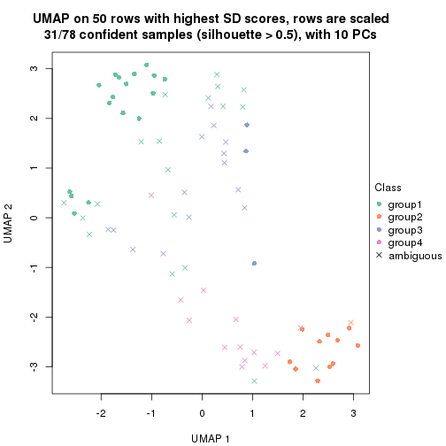
dimension_reduction(res, k = 5, method = "UMAP")
dimension_reduction(res, k = 6, method = "UMAP")

Following heatmap shows how subgroups are split when increasing k:
collect_classes(res)
If matrix rows can be associated to genes, consider to use functional_enrichment(res,
...) to perform function enrichment for the signature genes. See this vignette for more detailed explanations.
The object with results only for a single top-value method and a single partition method can be extracted as:
res = res_list["SD", "mclust"]
# you can also extract it by
# res = res_list["SD:mclust"]
A summary of res and all the functions that can be applied to it:
res
#> A 'ConsensusPartition' object with k = 2, 3, 4, 5, 6.
#> On a matrix with 50 rows and 78 columns.
#> Top rows (5, 10, 15, 20, 25) are extracted by 'SD' method.
#> Subgroups are detected by 'mclust' method.
#> Performed in total 1250 partitions by row resampling.
#> Best k for subgroups seems to be 2.
#>
#> Following methods can be applied to this 'ConsensusPartition' object:
#> [1] "cola_report" "collect_classes" "collect_plots"
#> [4] "collect_stats" "colnames" "compare_signatures"
#> [7] "consensus_heatmap" "dimension_reduction" "functional_enrichment"
#> [10] "get_anno_col" "get_anno" "get_classes"
#> [13] "get_consensus" "get_matrix" "get_membership"
#> [16] "get_param" "get_signatures" "get_stats"
#> [19] "is_best_k" "is_stable_k" "membership_heatmap"
#> [22] "ncol" "nrow" "plot_ecdf"
#> [25] "rownames" "select_partition_number" "show"
#> [28] "suggest_best_k" "test_to_known_factors"
collect_plots() function collects all the plots made from res for all k (number of partitions)
into one single page to provide an easy and fast comparison between different k.
collect_plots(res)
The plots are:
k and the heatmap of
predicted classes for each k.k.k.k.All the plots in panels can be made by individual functions and they are plotted later in this section.
select_partition_number() produces several plots showing different
statistics for choosing “optimized” k. There are following statistics:
k;k, the area increased is defined as \(A_k - A_{k-1}\).The detailed explanations of these statistics can be found in the cola vignette.
Generally speaking, lower PAC score, higher mean silhouette score or higher
concordance corresponds to better partition. Rand index and Jaccard index
measure how similar the current partition is compared to partition with k-1.
If they are too similar, we won't accept k is better than k-1.
select_partition_number(res)
The numeric values for all these statistics can be obtained by get_stats().
get_stats(res)
#> k 1-PAC mean_silhouette concordance area_increased Rand Jaccard
#> 2 2 0.245 0.693 0.847 0.4635 0.497 0.497
#> 3 3 0.272 0.397 0.743 0.2497 0.891 0.803
#> 4 4 0.290 0.363 0.666 0.1452 0.848 0.701
#> 5 5 0.347 0.309 0.573 0.1071 0.807 0.523
#> 6 6 0.418 0.372 0.600 0.0609 0.887 0.629
suggest_best_k() suggests the best \(k\) based on these statistics. The rules are as follows:
suggest_best_k(res)
#> [1] 2
Following shows the table of the partitions (You need to click the show/hide
code output link to see it). The membership matrix (columns with name p*)
is inferred by
clue::cl_consensus()
function with the SE method. Basically the value in the membership matrix
represents the probability to belong to a certain group. The finall class
label for an item is determined with the group with highest probability it
belongs to.
In get_classes() function, the entropy is calculated from the membership
matrix and the silhouette score is calculated from the consensus matrix.
cbind(get_classes(res, k = 2), get_membership(res, k = 2))
#> class entropy silhouette p1 p2
#> SRR764980 2 0.0000 0.8126 0.000 1.000
#> SRR764981 1 0.9833 0.3892 0.576 0.424
#> SRR764982 2 0.2603 0.8160 0.044 0.956
#> SRR764983 1 0.1843 0.8053 0.972 0.028
#> SRR764984 2 0.8955 0.5818 0.312 0.688
#> SRR764985 2 0.3431 0.8200 0.064 0.936
#> SRR764986 2 0.0000 0.8126 0.000 1.000
#> SRR764987 2 0.0000 0.8126 0.000 1.000
#> SRR764988 2 0.9944 0.0117 0.456 0.544
#> SRR764989 1 0.0376 0.7980 0.996 0.004
#> SRR764990 2 0.8555 0.5951 0.280 0.720
#> SRR764991 1 0.9993 0.2307 0.516 0.484
#> SRR764992 2 0.0000 0.8126 0.000 1.000
#> SRR764993 2 0.4939 0.8117 0.108 0.892
#> SRR764994 1 0.6148 0.7724 0.848 0.152
#> SRR764995 2 0.0000 0.8126 0.000 1.000
#> SRR764996 2 0.9963 0.0212 0.464 0.536
#> SRR764997 1 0.4815 0.7934 0.896 0.104
#> SRR764998 1 0.9881 0.3593 0.564 0.436
#> SRR764999 1 0.9393 0.5242 0.644 0.356
#> SRR765000 2 0.9044 0.5696 0.320 0.680
#> SRR765001 2 0.0000 0.8126 0.000 1.000
#> SRR765002 2 0.0000 0.8126 0.000 1.000
#> SRR765003 1 0.9983 0.2622 0.524 0.476
#> SRR765004 2 0.4562 0.8143 0.096 0.904
#> SRR765005 1 0.9881 0.3845 0.564 0.436
#> SRR765006 2 0.5629 0.8084 0.132 0.868
#> SRR765007 2 0.9491 0.2932 0.368 0.632
#> SRR765008 2 0.2948 0.8165 0.052 0.948
#> SRR765009 2 0.6887 0.7747 0.184 0.816
#> SRR765010 2 0.4690 0.8087 0.100 0.900
#> SRR765011 1 0.7745 0.7222 0.772 0.228
#> SRR765012 1 0.0000 0.7955 1.000 0.000
#> SRR765013 2 0.4939 0.8067 0.108 0.892
#> SRR765014 1 0.8861 0.6134 0.696 0.304
#> SRR765015 1 0.1414 0.8034 0.980 0.020
#> SRR765016 1 0.0672 0.7999 0.992 0.008
#> SRR765017 1 0.9661 0.4853 0.608 0.392
#> SRR765018 1 0.8267 0.6769 0.740 0.260
#> SRR765020 1 0.7745 0.7222 0.772 0.228
#> SRR765021 1 0.0938 0.8013 0.988 0.012
#> SRR765022 1 0.4815 0.7896 0.896 0.104
#> SRR765023 1 0.5842 0.7795 0.860 0.140
#> SRR765024 1 0.0000 0.7955 1.000 0.000
#> SRR765025 2 0.2603 0.8160 0.044 0.956
#> SRR765026 1 0.2423 0.8051 0.960 0.040
#> SRR765027 1 0.0000 0.7955 1.000 0.000
#> SRR765028 2 0.2603 0.8160 0.044 0.956
#> SRR765029 2 0.6531 0.7901 0.168 0.832
#> SRR765030 1 0.6247 0.7684 0.844 0.156
#> SRR765031 1 0.1843 0.8050 0.972 0.028
#> SRR765032 1 0.6247 0.7676 0.844 0.156
#> SRR765033 2 0.5294 0.8045 0.120 0.880
#> SRR765034 1 0.6343 0.7695 0.840 0.160
#> SRR765035 2 0.5842 0.8048 0.140 0.860
#> SRR765036 1 0.9996 0.2130 0.512 0.488
#> SRR765037 2 0.5178 0.8067 0.116 0.884
#> SRR765038 2 0.0000 0.8126 0.000 1.000
#> SRR765039 1 0.6148 0.7754 0.848 0.152
#> SRR765040 2 0.8144 0.6185 0.252 0.748
#> SRR765041 2 0.9393 0.4627 0.356 0.644
#> SRR765042 1 0.0000 0.7955 1.000 0.000
#> SRR765043 1 0.1414 0.8036 0.980 0.020
#> SRR765044 2 0.4562 0.8126 0.096 0.904
#> SRR765045 1 0.0376 0.7980 0.996 0.004
#> SRR765046 2 0.3431 0.8200 0.064 0.936
#> SRR765047 1 0.2423 0.8051 0.960 0.040
#> SRR765048 1 0.0000 0.7955 1.000 0.000
#> SRR765049 2 0.3431 0.8200 0.064 0.936
#> SRR765050 2 0.6973 0.7676 0.188 0.812
#> SRR765051 1 0.2603 0.8028 0.956 0.044
#> SRR765052 2 0.9754 0.2681 0.408 0.592
#> SRR765053 1 0.9358 0.5362 0.648 0.352
#> SRR765054 1 0.1184 0.8029 0.984 0.016
#> SRR765055 1 0.0376 0.7980 0.996 0.004
#> SRR765056 1 0.0672 0.7998 0.992 0.008
#> SRR765057 1 0.9393 0.4713 0.644 0.356
#> SRR765058 1 0.6148 0.7742 0.848 0.152
cbind(get_classes(res, k = 3), get_membership(res, k = 3))
#> class entropy silhouette p1 p2 p3
#> SRR764980 2 0.5325 0.5049 0.004 0.748 0.248
#> SRR764981 1 0.9048 0.2223 0.548 0.184 0.268
#> SRR764982 2 0.2066 0.5965 0.000 0.940 0.060
#> SRR764983 1 0.1337 0.6425 0.972 0.016 0.012
#> SRR764984 1 0.9374 -0.2005 0.492 0.316 0.192
#> SRR764985 2 0.5158 0.5349 0.004 0.764 0.232
#> SRR764986 2 0.1964 0.6015 0.000 0.944 0.056
#> SRR764987 2 0.1163 0.6044 0.000 0.972 0.028
#> SRR764988 1 0.9331 -0.4098 0.480 0.344 0.176
#> SRR764989 1 0.2680 0.6282 0.924 0.008 0.068
#> SRR764990 2 0.9926 -0.4620 0.348 0.376 0.276
#> SRR764991 1 0.9419 0.0949 0.496 0.208 0.296
#> SRR764992 2 0.3349 0.5934 0.004 0.888 0.108
#> SRR764993 2 0.6318 0.3325 0.008 0.636 0.356
#> SRR764994 1 0.5740 0.5885 0.804 0.100 0.096
#> SRR764995 2 0.1529 0.6025 0.000 0.960 0.040
#> SRR764996 1 0.9588 -0.0397 0.476 0.240 0.284
#> SRR764997 1 0.5631 0.5938 0.804 0.064 0.132
#> SRR764998 1 0.9270 0.1567 0.520 0.200 0.280
#> SRR764999 1 0.8493 0.3252 0.604 0.148 0.248
#> SRR765000 3 0.9964 0.0000 0.300 0.328 0.372
#> SRR765001 2 0.2711 0.5941 0.000 0.912 0.088
#> SRR765002 2 0.2165 0.5983 0.000 0.936 0.064
#> SRR765003 1 0.9488 0.0273 0.496 0.248 0.256
#> SRR765004 2 0.6008 0.3255 0.000 0.628 0.372
#> SRR765005 1 0.9264 0.1663 0.516 0.192 0.292
#> SRR765006 2 0.6405 0.4298 0.172 0.756 0.072
#> SRR765007 2 0.8876 -0.4952 0.412 0.468 0.120
#> SRR765008 2 0.5905 0.3565 0.000 0.648 0.352
#> SRR765009 2 0.7717 0.1859 0.172 0.680 0.148
#> SRR765010 2 0.6348 0.4760 0.048 0.740 0.212
#> SRR765011 1 0.7078 0.4831 0.712 0.088 0.200
#> SRR765012 1 0.2448 0.6197 0.924 0.000 0.076
#> SRR765013 2 0.6541 0.4566 0.056 0.732 0.212
#> SRR765014 1 0.8542 0.2833 0.608 0.220 0.172
#> SRR765015 1 0.2448 0.6281 0.924 0.000 0.076
#> SRR765016 1 0.2066 0.6277 0.940 0.000 0.060
#> SRR765017 1 0.8220 0.3771 0.636 0.152 0.212
#> SRR765018 1 0.7596 0.4552 0.672 0.100 0.228
#> SRR765020 1 0.7169 0.4797 0.704 0.088 0.208
#> SRR765021 1 0.1525 0.6402 0.964 0.004 0.032
#> SRR765022 1 0.4945 0.6109 0.840 0.056 0.104
#> SRR765023 1 0.6721 0.5365 0.748 0.116 0.136
#> SRR765024 1 0.2165 0.6252 0.936 0.000 0.064
#> SRR765025 2 0.2959 0.5920 0.000 0.900 0.100
#> SRR765026 1 0.3587 0.6318 0.892 0.020 0.088
#> SRR765027 1 0.2711 0.6097 0.912 0.000 0.088
#> SRR765028 2 0.1964 0.5960 0.000 0.944 0.056
#> SRR765029 2 0.7265 0.2998 0.240 0.684 0.076
#> SRR765030 1 0.5891 0.5754 0.780 0.052 0.168
#> SRR765031 1 0.3183 0.6334 0.908 0.016 0.076
#> SRR765032 1 0.5573 0.5941 0.796 0.044 0.160
#> SRR765033 2 0.8043 0.2223 0.072 0.556 0.372
#> SRR765034 1 0.6171 0.5525 0.776 0.144 0.080
#> SRR765035 2 0.5582 0.4559 0.100 0.812 0.088
#> SRR765036 1 0.9509 0.0458 0.484 0.220 0.296
#> SRR765037 2 0.6737 0.2898 0.016 0.600 0.384
#> SRR765038 2 0.1411 0.6020 0.000 0.964 0.036
#> SRR765039 1 0.7133 0.5007 0.712 0.096 0.192
#> SRR765040 2 0.7027 -0.2185 0.296 0.660 0.044
#> SRR765041 2 0.9843 -0.3882 0.376 0.376 0.248
#> SRR765042 1 0.2866 0.6245 0.916 0.008 0.076
#> SRR765043 1 0.2902 0.6370 0.920 0.016 0.064
#> SRR765044 2 0.7418 0.3454 0.080 0.672 0.248
#> SRR765045 1 0.2537 0.6163 0.920 0.000 0.080
#> SRR765046 2 0.2796 0.5943 0.000 0.908 0.092
#> SRR765047 1 0.3587 0.6291 0.892 0.020 0.088
#> SRR765048 1 0.2261 0.6230 0.932 0.000 0.068
#> SRR765049 2 0.5061 0.5145 0.008 0.784 0.208
#> SRR765050 2 0.7533 0.2561 0.244 0.668 0.088
#> SRR765051 1 0.5075 0.6015 0.836 0.096 0.068
#> SRR765052 1 0.9527 -0.1045 0.480 0.300 0.220
#> SRR765053 1 0.8474 0.3287 0.604 0.144 0.252
#> SRR765054 1 0.0661 0.6413 0.988 0.004 0.008
#> SRR765055 1 0.2448 0.6242 0.924 0.000 0.076
#> SRR765056 1 0.2448 0.6281 0.924 0.000 0.076
#> SRR765057 1 0.8069 0.2636 0.636 0.120 0.244
#> SRR765058 1 0.6561 0.5381 0.756 0.100 0.144
cbind(get_classes(res, k = 4), get_membership(res, k = 4))
#> class entropy silhouette p1 p2 p3 p4
#> SRR764980 2 0.6149 0.2033 0.000 0.676 0.180 0.144
#> SRR764981 1 0.7739 -0.4741 0.436 0.132 0.020 0.412
#> SRR764982 2 0.5803 0.3937 0.044 0.744 0.160 0.052
#> SRR764983 1 0.2089 0.6253 0.932 0.000 0.020 0.048
#> SRR764984 4 0.9114 0.3052 0.352 0.092 0.180 0.376
#> SRR764985 2 0.6606 0.2104 0.000 0.624 0.224 0.152
#> SRR764986 2 0.2813 0.4797 0.000 0.896 0.024 0.080
#> SRR764987 2 0.0469 0.5100 0.000 0.988 0.000 0.012
#> SRR764988 1 0.9794 -0.2096 0.352 0.244 0.208 0.196
#> SRR764989 1 0.1151 0.6276 0.968 0.000 0.008 0.024
#> SRR764990 4 0.7130 0.5938 0.200 0.196 0.008 0.596
#> SRR764991 4 0.8619 0.6051 0.292 0.104 0.116 0.488
#> SRR764992 2 0.4010 0.4571 0.000 0.836 0.064 0.100
#> SRR764993 3 0.6842 0.4350 0.036 0.424 0.504 0.036
#> SRR764994 1 0.5250 0.5583 0.744 0.000 0.176 0.080
#> SRR764995 2 0.1610 0.5143 0.000 0.952 0.016 0.032
#> SRR764996 4 0.8015 0.6082 0.312 0.148 0.036 0.504
#> SRR764997 1 0.6002 0.5256 0.736 0.032 0.096 0.136
#> SRR764998 4 0.7178 0.5413 0.380 0.100 0.012 0.508
#> SRR764999 1 0.8455 -0.2258 0.412 0.036 0.196 0.356
#> SRR765000 3 0.8777 -0.0620 0.128 0.120 0.492 0.260
#> SRR765001 2 0.3547 0.4606 0.000 0.864 0.064 0.072
#> SRR765002 2 0.2611 0.5026 0.000 0.896 0.008 0.096
#> SRR765003 4 0.6961 0.6332 0.316 0.136 0.000 0.548
#> SRR765004 3 0.6436 0.3990 0.004 0.448 0.492 0.056
#> SRR765005 4 0.8542 0.5949 0.324 0.092 0.112 0.472
#> SRR765006 2 0.7688 0.2999 0.200 0.612 0.084 0.104
#> SRR765007 4 0.8592 0.5337 0.296 0.272 0.032 0.400
#> SRR765008 2 0.6211 -0.4909 0.000 0.488 0.460 0.052
#> SRR765009 2 0.8927 0.1430 0.124 0.496 0.184 0.196
#> SRR765010 2 0.6701 0.4086 0.072 0.636 0.028 0.264
#> SRR765011 1 0.5460 0.1541 0.632 0.028 0.000 0.340
#> SRR765012 1 0.1388 0.6283 0.960 0.000 0.012 0.028
#> SRR765013 2 0.7066 0.3576 0.072 0.580 0.032 0.316
#> SRR765014 1 0.7737 -0.3102 0.456 0.052 0.076 0.416
#> SRR765015 1 0.3354 0.6075 0.872 0.000 0.044 0.084
#> SRR765016 1 0.1624 0.6250 0.952 0.000 0.020 0.028
#> SRR765017 1 0.7122 -0.2405 0.496 0.116 0.004 0.384
#> SRR765018 1 0.7073 0.2464 0.564 0.000 0.180 0.256
#> SRR765020 1 0.5364 0.1908 0.652 0.028 0.000 0.320
#> SRR765021 1 0.4072 0.6080 0.828 0.000 0.052 0.120
#> SRR765022 1 0.6253 0.5095 0.700 0.020 0.100 0.180
#> SRR765023 1 0.4824 0.4160 0.744 0.024 0.004 0.228
#> SRR765024 1 0.1837 0.6225 0.944 0.000 0.028 0.028
#> SRR765025 2 0.5076 0.3950 0.000 0.756 0.172 0.072
#> SRR765026 1 0.5021 0.5624 0.756 0.000 0.180 0.064
#> SRR765027 1 0.0817 0.6249 0.976 0.000 0.000 0.024
#> SRR765028 2 0.4707 0.3937 0.000 0.760 0.204 0.036
#> SRR765029 2 0.7777 0.2940 0.204 0.604 0.104 0.088
#> SRR765030 1 0.6461 0.4422 0.640 0.000 0.216 0.144
#> SRR765031 1 0.3709 0.6002 0.856 0.004 0.040 0.100
#> SRR765032 1 0.6861 0.3944 0.616 0.004 0.200 0.180
#> SRR765033 3 0.7573 0.4282 0.084 0.428 0.452 0.036
#> SRR765034 1 0.6966 0.2829 0.608 0.064 0.040 0.288
#> SRR765035 2 0.7168 0.3101 0.092 0.624 0.044 0.240
#> SRR765036 4 0.6574 0.6335 0.264 0.076 0.020 0.640
#> SRR765037 2 0.7824 -0.5360 0.048 0.440 0.424 0.088
#> SRR765038 2 0.1004 0.5126 0.000 0.972 0.004 0.024
#> SRR765039 1 0.6739 0.3272 0.612 0.000 0.172 0.216
#> SRR765040 2 0.8464 0.1642 0.184 0.528 0.076 0.212
#> SRR765041 4 0.8064 0.5254 0.236 0.256 0.020 0.488
#> SRR765042 1 0.1520 0.6231 0.956 0.000 0.020 0.024
#> SRR765043 1 0.3999 0.5985 0.824 0.000 0.140 0.036
#> SRR765044 2 0.6085 0.3031 0.020 0.528 0.016 0.436
#> SRR765045 1 0.1297 0.6270 0.964 0.000 0.020 0.016
#> SRR765046 2 0.3032 0.5103 0.000 0.868 0.008 0.124
#> SRR765047 1 0.5325 0.5355 0.728 0.000 0.204 0.068
#> SRR765048 1 0.1520 0.6256 0.956 0.000 0.024 0.020
#> SRR765049 2 0.5036 0.4463 0.000 0.696 0.024 0.280
#> SRR765050 2 0.8080 0.3056 0.160 0.592 0.136 0.112
#> SRR765051 1 0.1520 0.6285 0.956 0.000 0.020 0.024
#> SRR765052 1 0.7638 -0.4034 0.416 0.176 0.004 0.404
#> SRR765053 1 0.8518 -0.2184 0.396 0.036 0.208 0.360
#> SRR765054 1 0.2256 0.6253 0.924 0.000 0.020 0.056
#> SRR765055 1 0.1256 0.6305 0.964 0.000 0.008 0.028
#> SRR765056 1 0.3550 0.6028 0.860 0.000 0.044 0.096
#> SRR765057 1 0.8880 0.0296 0.436 0.064 0.248 0.252
#> SRR765058 1 0.6018 0.3611 0.660 0.016 0.044 0.280
cbind(get_classes(res, k = 5), get_membership(res, k = 5))
#> class entropy silhouette p1 p2 p3 p4 p5
#> SRR764980 2 0.4668 0.4139 0.000 0.784 0.060 0.056 0.100
#> SRR764981 5 0.7165 -0.3842 0.264 0.000 0.016 0.352 0.368
#> SRR764982 5 0.7351 -0.0729 0.044 0.184 0.260 0.008 0.504
#> SRR764983 1 0.3617 0.6494 0.840 0.004 0.072 0.080 0.004
#> SRR764984 4 0.7870 0.4605 0.176 0.024 0.080 0.512 0.208
#> SRR764985 2 0.6850 0.3110 0.000 0.596 0.084 0.152 0.168
#> SRR764986 2 0.4332 0.5436 0.000 0.768 0.064 0.004 0.164
#> SRR764987 2 0.5316 0.4668 0.000 0.588 0.064 0.000 0.348
#> SRR764988 3 0.9563 -0.2554 0.252 0.116 0.272 0.252 0.108
#> SRR764989 1 0.2632 0.6568 0.892 0.004 0.072 0.032 0.000
#> SRR764990 5 0.6972 -0.3050 0.080 0.020 0.040 0.356 0.504
#> SRR764991 4 0.7376 0.4975 0.156 0.000 0.068 0.476 0.300
#> SRR764992 2 0.4847 0.5450 0.000 0.720 0.004 0.080 0.196
#> SRR764993 3 0.5802 0.3880 0.000 0.192 0.648 0.012 0.148
#> SRR764994 1 0.5935 0.3727 0.588 0.000 0.072 0.316 0.024
#> SRR764995 5 0.5817 -0.3724 0.000 0.420 0.080 0.004 0.496
#> SRR764996 4 0.8233 0.3593 0.160 0.032 0.072 0.404 0.332
#> SRR764997 1 0.6716 0.4892 0.632 0.020 0.168 0.132 0.048
#> SRR764998 4 0.7312 0.4516 0.212 0.008 0.020 0.420 0.340
#> SRR764999 4 0.6834 0.4700 0.300 0.000 0.036 0.520 0.144
#> SRR765000 4 0.8281 -0.0353 0.072 0.040 0.364 0.380 0.144
#> SRR765001 2 0.3844 0.5482 0.000 0.792 0.000 0.044 0.164
#> SRR765002 2 0.5858 0.3640 0.000 0.456 0.096 0.000 0.448
#> SRR765003 5 0.7852 -0.3565 0.252 0.024 0.032 0.268 0.424
#> SRR765004 3 0.6326 0.4254 0.008 0.320 0.556 0.012 0.104
#> SRR765005 4 0.7389 0.5056 0.180 0.000 0.056 0.460 0.304
#> SRR765006 5 0.8080 0.2028 0.128 0.096 0.208 0.048 0.520
#> SRR765007 4 0.9056 0.1279 0.088 0.080 0.184 0.332 0.316
#> SRR765008 3 0.6085 0.3675 0.000 0.344 0.532 0.004 0.120
#> SRR765009 5 0.8935 0.1139 0.128 0.156 0.176 0.092 0.448
#> SRR765010 5 0.6626 0.1245 0.076 0.268 0.036 0.024 0.596
#> SRR765011 1 0.6174 0.3555 0.628 0.008 0.036 0.076 0.252
#> SRR765012 1 0.1082 0.6703 0.964 0.000 0.008 0.028 0.000
#> SRR765013 5 0.4780 0.2879 0.076 0.092 0.028 0.016 0.788
#> SRR765014 4 0.6860 0.3976 0.380 0.000 0.008 0.396 0.216
#> SRR765015 1 0.5131 0.5995 0.764 0.040 0.084 0.100 0.012
#> SRR765016 1 0.0740 0.6683 0.980 0.004 0.008 0.008 0.000
#> SRR765017 1 0.7570 0.0160 0.452 0.004 0.072 0.148 0.324
#> SRR765018 4 0.6011 0.2492 0.376 0.000 0.024 0.536 0.064
#> SRR765020 1 0.5891 0.3824 0.648 0.008 0.036 0.056 0.252
#> SRR765021 1 0.5087 0.6105 0.764 0.032 0.092 0.100 0.012
#> SRR765022 1 0.7573 0.3668 0.540 0.040 0.168 0.212 0.040
#> SRR765023 1 0.5589 0.5168 0.684 0.004 0.012 0.176 0.124
#> SRR765024 1 0.0613 0.6694 0.984 0.004 0.004 0.008 0.000
#> SRR765025 2 0.5433 0.4385 0.000 0.684 0.148 0.008 0.160
#> SRR765026 1 0.5192 0.4530 0.664 0.000 0.092 0.244 0.000
#> SRR765027 1 0.0613 0.6682 0.984 0.004 0.008 0.004 0.000
#> SRR765028 5 0.6506 -0.1654 0.000 0.216 0.308 0.000 0.476
#> SRR765029 5 0.7816 0.2251 0.128 0.092 0.192 0.040 0.548
#> SRR765030 4 0.6855 0.0989 0.356 0.000 0.156 0.464 0.024
#> SRR765031 1 0.4933 0.6175 0.764 0.036 0.036 0.148 0.016
#> SRR765032 1 0.7434 -0.0284 0.428 0.000 0.156 0.352 0.064
#> SRR765033 3 0.7569 0.4021 0.048 0.336 0.480 0.040 0.096
#> SRR765034 1 0.8004 0.3262 0.532 0.036 0.116 0.152 0.164
#> SRR765035 5 0.7212 0.1786 0.036 0.148 0.092 0.108 0.616
#> SRR765036 4 0.7007 0.3934 0.096 0.004 0.052 0.440 0.408
#> SRR765037 2 0.6975 -0.4529 0.004 0.424 0.424 0.044 0.104
#> SRR765038 2 0.5601 0.3330 0.000 0.480 0.072 0.000 0.448
#> SRR765039 1 0.6478 -0.0256 0.452 0.000 0.064 0.436 0.048
#> SRR765040 5 0.9359 0.1616 0.116 0.200 0.168 0.132 0.384
#> SRR765041 5 0.7264 0.0399 0.152 0.008 0.060 0.240 0.540
#> SRR765042 1 0.1443 0.6627 0.948 0.004 0.004 0.044 0.000
#> SRR765043 1 0.4147 0.6081 0.792 0.000 0.060 0.140 0.008
#> SRR765044 5 0.6074 0.2219 0.012 0.144 0.024 0.152 0.668
#> SRR765045 1 0.1043 0.6639 0.960 0.000 0.000 0.040 0.000
#> SRR765046 2 0.5701 0.3206 0.000 0.468 0.052 0.012 0.468
#> SRR765047 1 0.5990 0.3256 0.560 0.000 0.144 0.296 0.000
#> SRR765048 1 0.1430 0.6642 0.944 0.000 0.004 0.052 0.000
#> SRR765049 5 0.3439 0.1207 0.000 0.188 0.004 0.008 0.800
#> SRR765050 5 0.9147 0.0422 0.136 0.228 0.132 0.100 0.404
#> SRR765051 1 0.3059 0.6474 0.872 0.004 0.012 0.092 0.020
#> SRR765052 5 0.7855 -0.1084 0.328 0.008 0.076 0.168 0.420
#> SRR765053 4 0.7133 0.4515 0.292 0.004 0.052 0.516 0.136
#> SRR765054 1 0.2339 0.6619 0.908 0.008 0.008 0.072 0.004
#> SRR765055 1 0.1768 0.6653 0.924 0.000 0.004 0.072 0.000
#> SRR765056 1 0.4251 0.6211 0.816 0.036 0.032 0.104 0.012
#> SRR765057 1 0.9002 -0.2664 0.304 0.040 0.244 0.292 0.120
#> SRR765058 1 0.5969 0.2864 0.608 0.000 0.008 0.244 0.140
cbind(get_classes(res, k = 6), get_membership(res, k = 6))
#> class entropy silhouette p1 p2 p3 p4 p5 p6
#> SRR764980 2 0.3691 0.5618 0.000 0.820 0.008 0.060 0.016 0.096
#> SRR764981 4 0.6732 0.4246 0.180 0.012 0.096 0.576 0.128 0.008
#> SRR764982 5 0.5050 0.2083 0.004 0.028 0.016 0.008 0.592 0.352
#> SRR764983 1 0.2445 0.6225 0.892 0.000 0.060 0.040 0.000 0.008
#> SRR764984 3 0.8254 0.3345 0.132 0.056 0.396 0.288 0.104 0.024
#> SRR764985 2 0.6520 0.5170 0.000 0.624 0.068 0.140 0.080 0.088
#> SRR764986 2 0.4034 0.4224 0.000 0.652 0.000 0.000 0.328 0.020
#> SRR764987 5 0.3907 -0.0655 0.000 0.408 0.000 0.000 0.588 0.004
#> SRR764988 3 0.7582 0.3885 0.172 0.016 0.440 0.084 0.016 0.272
#> SRR764989 1 0.1476 0.6276 0.948 0.008 0.028 0.012 0.000 0.004
#> SRR764990 4 0.5134 0.4610 0.024 0.032 0.072 0.748 0.104 0.020
#> SRR764991 4 0.6254 0.3712 0.076 0.020 0.228 0.604 0.068 0.004
#> SRR764992 2 0.3840 0.5919 0.004 0.796 0.008 0.076 0.116 0.000
#> SRR764993 6 0.4306 0.5919 0.012 0.004 0.064 0.004 0.156 0.760
#> SRR764994 1 0.5196 0.4753 0.660 0.000 0.228 0.084 0.004 0.024
#> SRR764995 5 0.4267 0.2145 0.000 0.260 0.000 0.004 0.692 0.044
#> SRR764996 4 0.5097 0.4607 0.080 0.020 0.040 0.760 0.064 0.036
#> SRR764997 1 0.5819 0.3143 0.580 0.000 0.308 0.040 0.024 0.048
#> SRR764998 4 0.5458 0.4478 0.160 0.016 0.068 0.696 0.056 0.004
#> SRR764999 3 0.7463 0.4327 0.272 0.044 0.368 0.288 0.012 0.016
#> SRR765000 3 0.7856 0.4033 0.140 0.044 0.444 0.080 0.020 0.272
#> SRR765001 2 0.2265 0.6236 0.000 0.896 0.024 0.000 0.076 0.004
#> SRR765002 5 0.5023 0.0261 0.000 0.356 0.000 0.056 0.576 0.012
#> SRR765003 4 0.7364 0.3789 0.204 0.028 0.100 0.544 0.088 0.036
#> SRR765004 6 0.5003 0.7154 0.004 0.096 0.040 0.024 0.088 0.748
#> SRR765005 4 0.6720 0.2948 0.148 0.044 0.192 0.568 0.048 0.000
#> SRR765006 5 0.6918 0.3578 0.144 0.012 0.068 0.016 0.548 0.212
#> SRR765007 4 0.7932 0.3524 0.120 0.060 0.056 0.524 0.156 0.084
#> SRR765008 6 0.4159 0.6860 0.000 0.116 0.000 0.000 0.140 0.744
#> SRR765009 5 0.9661 0.1952 0.116 0.120 0.168 0.112 0.276 0.208
#> SRR765010 5 0.7545 0.1290 0.004 0.252 0.004 0.252 0.376 0.112
#> SRR765011 1 0.6518 0.2266 0.580 0.024 0.036 0.264 0.052 0.044
#> SRR765012 1 0.0976 0.6270 0.968 0.008 0.016 0.008 0.000 0.000
#> SRR765013 5 0.6303 0.3080 0.000 0.072 0.012 0.272 0.560 0.084
#> SRR765014 4 0.6427 0.0610 0.256 0.012 0.268 0.456 0.000 0.008
#> SRR765015 1 0.3354 0.5086 0.752 0.000 0.240 0.004 0.004 0.000
#> SRR765016 1 0.0881 0.6273 0.972 0.008 0.012 0.008 0.000 0.000
#> SRR765017 1 0.8819 -0.2477 0.356 0.048 0.100 0.276 0.132 0.088
#> SRR765018 1 0.6290 -0.2213 0.400 0.000 0.332 0.260 0.004 0.004
#> SRR765020 1 0.6500 0.2328 0.584 0.024 0.036 0.260 0.052 0.044
#> SRR765021 1 0.3740 0.5411 0.764 0.000 0.200 0.024 0.000 0.012
#> SRR765022 1 0.6286 0.1354 0.524 0.000 0.328 0.080 0.016 0.052
#> SRR765023 1 0.4863 0.4983 0.708 0.000 0.172 0.088 0.032 0.000
#> SRR765024 1 0.1140 0.6277 0.964 0.008 0.008 0.008 0.000 0.012
#> SRR765025 2 0.5082 0.3269 0.000 0.656 0.024 0.000 0.080 0.240
#> SRR765026 1 0.6412 0.3248 0.540 0.000 0.212 0.196 0.004 0.048
#> SRR765027 1 0.0976 0.6261 0.968 0.008 0.016 0.008 0.000 0.000
#> SRR765028 5 0.5048 0.1885 0.012 0.048 0.004 0.000 0.580 0.356
#> SRR765029 5 0.7193 0.3544 0.136 0.012 0.064 0.036 0.532 0.220
#> SRR765030 1 0.7044 -0.1121 0.356 0.004 0.296 0.300 0.004 0.040
#> SRR765031 1 0.4128 0.4666 0.676 0.000 0.300 0.004 0.008 0.012
#> SRR765032 1 0.6646 0.1688 0.488 0.004 0.216 0.256 0.008 0.028
#> SRR765033 6 0.5972 0.6392 0.040 0.156 0.084 0.016 0.032 0.672
#> SRR765034 1 0.6219 0.3237 0.544 0.016 0.316 0.080 0.040 0.004
#> SRR765035 5 0.8529 0.2901 0.100 0.032 0.188 0.164 0.428 0.088
#> SRR765036 4 0.3109 0.4673 0.048 0.016 0.044 0.872 0.016 0.004
#> SRR765037 6 0.6392 0.5408 0.008 0.284 0.096 0.020 0.036 0.556
#> SRR765038 5 0.3784 0.1395 0.000 0.308 0.000 0.000 0.680 0.012
#> SRR765039 1 0.6161 0.0093 0.468 0.000 0.224 0.296 0.000 0.012
#> SRR765040 5 0.8903 0.1035 0.084 0.164 0.088 0.208 0.388 0.068
#> SRR765041 4 0.8285 0.3691 0.132 0.040 0.100 0.436 0.240 0.052
#> SRR765042 1 0.2450 0.6092 0.896 0.008 0.068 0.016 0.000 0.012
#> SRR765043 1 0.3817 0.5867 0.800 0.000 0.120 0.056 0.000 0.024
#> SRR765044 4 0.7010 -0.0412 0.004 0.192 0.048 0.492 0.244 0.020
#> SRR765045 1 0.1492 0.6269 0.940 0.000 0.036 0.000 0.000 0.024
#> SRR765046 2 0.6153 0.2412 0.000 0.444 0.000 0.200 0.344 0.012
#> SRR765047 1 0.6515 0.3428 0.540 0.004 0.220 0.184 0.004 0.048
#> SRR765048 1 0.1793 0.6243 0.928 0.000 0.048 0.012 0.000 0.012
#> SRR765049 5 0.6174 0.2999 0.000 0.132 0.016 0.276 0.552 0.024
#> SRR765050 5 0.9387 0.2060 0.184 0.200 0.076 0.060 0.256 0.224
#> SRR765051 1 0.3773 0.5650 0.788 0.008 0.164 0.028 0.000 0.012
#> SRR765052 4 0.9143 0.2804 0.232 0.048 0.108 0.288 0.236 0.088
#> SRR765053 3 0.7180 0.5035 0.248 0.044 0.444 0.240 0.004 0.020
#> SRR765054 1 0.2653 0.6093 0.868 0.000 0.100 0.028 0.000 0.004
#> SRR765055 1 0.2265 0.6241 0.904 0.000 0.056 0.028 0.000 0.012
#> SRR765056 1 0.3240 0.5042 0.752 0.000 0.244 0.004 0.000 0.000
#> SRR765057 3 0.7572 0.4545 0.252 0.008 0.452 0.108 0.020 0.160
#> SRR765058 1 0.5655 0.2328 0.548 0.004 0.268 0.180 0.000 0.000
Heatmaps for the consensus matrix. It visualizes the probability of two samples to be in a same group.
consensus_heatmap(res, k = 2)
consensus_heatmap(res, k = 3)
consensus_heatmap(res, k = 4)
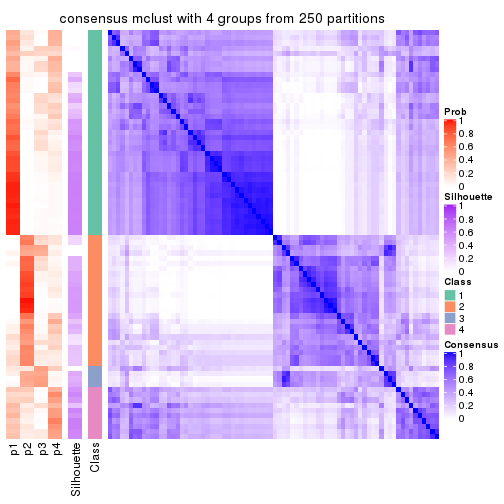
consensus_heatmap(res, k = 5)
consensus_heatmap(res, k = 6)
Heatmaps for the membership of samples in all partitions to see how consistent they are:
membership_heatmap(res, k = 2)
membership_heatmap(res, k = 3)
membership_heatmap(res, k = 4)
membership_heatmap(res, k = 5)
membership_heatmap(res, k = 6)
As soon as we have had the classes for columns, we can look for signatures which are significantly different between classes which can be candidate marks for certain classes. Following are the heatmaps for signatures.
Signature heatmaps where rows are scaled:
get_signatures(res, k = 2)
get_signatures(res, k = 3)
get_signatures(res, k = 4)
get_signatures(res, k = 5)
get_signatures(res, k = 6)
Signature heatmaps where rows are not scaled:
get_signatures(res, k = 2, scale_rows = FALSE)
get_signatures(res, k = 3, scale_rows = FALSE)
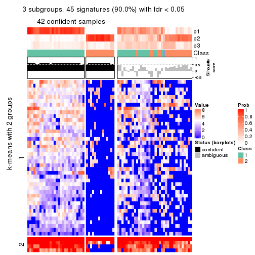
get_signatures(res, k = 4, scale_rows = FALSE)
get_signatures(res, k = 5, scale_rows = FALSE)

get_signatures(res, k = 6, scale_rows = FALSE)
Compare the overlap of signatures from different k:
compare_signatures(res)
get_signature() returns a data frame invisibly. TO get the list of signatures, the function
call should be assigned to a variable explicitly. In following code, if plot argument is set
to FALSE, no heatmap is plotted while only the differential analysis is performed.
# code only for demonstration
tb = get_signature(res, k = ..., plot = FALSE)
An example of the output of tb is:
#> which_row fdr mean_1 mean_2 scaled_mean_1 scaled_mean_2 km
#> 1 38 0.042760348 8.373488 9.131774 -0.5533452 0.5164555 1
#> 2 40 0.018707592 7.106213 8.469186 -0.6173731 0.5762149 1
#> 3 55 0.019134737 10.221463 11.207825 -0.6159697 0.5749050 1
#> 4 59 0.006059896 5.921854 7.869574 -0.6899429 0.6439467 1
#> 5 60 0.018055526 8.928898 10.211722 -0.6204761 0.5791110 1
#> 6 98 0.009384629 15.714769 14.887706 0.6635654 -0.6193277 2
...
The columns in tb are:
which_row: row indices corresponding to the input matrix.fdr: FDR for the differential test. mean_x: The mean value in group x.scaled_mean_x: The mean value in group x after rows are scaled.km: Row groups if k-means clustering is applied to rows.UMAP plot which shows how samples are separated.
dimension_reduction(res, k = 2, method = "UMAP")
dimension_reduction(res, k = 3, method = "UMAP")
dimension_reduction(res, k = 4, method = "UMAP")
dimension_reduction(res, k = 5, method = "UMAP")
dimension_reduction(res, k = 6, method = "UMAP")
Following heatmap shows how subgroups are split when increasing k:
collect_classes(res)
If matrix rows can be associated to genes, consider to use functional_enrichment(res,
...) to perform function enrichment for the signature genes. See this vignette for more detailed explanations.
The object with results only for a single top-value method and a single partition method can be extracted as:
res = res_list["SD", "NMF"]
# you can also extract it by
# res = res_list["SD:NMF"]
A summary of res and all the functions that can be applied to it:
res
#> A 'ConsensusPartition' object with k = 2, 3, 4, 5, 6.
#> On a matrix with 50 rows and 78 columns.
#> Top rows (5, 10, 15, 20, 25) are extracted by 'SD' method.
#> Subgroups are detected by 'NMF' method.
#> Performed in total 1250 partitions by row resampling.
#> Best k for subgroups seems to be 2.
#>
#> Following methods can be applied to this 'ConsensusPartition' object:
#> [1] "cola_report" "collect_classes" "collect_plots"
#> [4] "collect_stats" "colnames" "compare_signatures"
#> [7] "consensus_heatmap" "dimension_reduction" "functional_enrichment"
#> [10] "get_anno_col" "get_anno" "get_classes"
#> [13] "get_consensus" "get_matrix" "get_membership"
#> [16] "get_param" "get_signatures" "get_stats"
#> [19] "is_best_k" "is_stable_k" "membership_heatmap"
#> [22] "ncol" "nrow" "plot_ecdf"
#> [25] "rownames" "select_partition_number" "show"
#> [28] "suggest_best_k" "test_to_known_factors"
collect_plots() function collects all the plots made from res for all k (number of partitions)
into one single page to provide an easy and fast comparison between different k.
collect_plots(res)
The plots are:
k and the heatmap of
predicted classes for each k.k.k.k.All the plots in panels can be made by individual functions and they are plotted later in this section.
select_partition_number() produces several plots showing different
statistics for choosing “optimized” k. There are following statistics:
k;k, the area increased is defined as \(A_k - A_{k-1}\).The detailed explanations of these statistics can be found in the cola vignette.
Generally speaking, lower PAC score, higher mean silhouette score or higher
concordance corresponds to better partition. Rand index and Jaccard index
measure how similar the current partition is compared to partition with k-1.
If they are too similar, we won't accept k is better than k-1.
select_partition_number(res)
The numeric values for all these statistics can be obtained by get_stats().
get_stats(res)
#> k 1-PAC mean_silhouette concordance area_increased Rand Jaccard
#> 2 2 0.0289 0.513 0.717 0.4413 0.614 0.614
#> 3 3 0.0626 0.389 0.652 0.3578 0.764 0.630
#> 4 4 0.1396 0.314 0.555 0.1256 0.880 0.743
#> 5 5 0.2077 0.292 0.531 0.0838 0.906 0.769
#> 6 6 0.2769 0.219 0.475 0.0583 0.863 0.640
suggest_best_k() suggests the best \(k\) based on these statistics. The rules are as follows:
suggest_best_k(res)
#> [1] 2
Following shows the table of the partitions (You need to click the show/hide
code output link to see it). The membership matrix (columns with name p*)
is inferred by
clue::cl_consensus()
function with the SE method. Basically the value in the membership matrix
represents the probability to belong to a certain group. The finall class
label for an item is determined with the group with highest probability it
belongs to.
In get_classes() function, the entropy is calculated from the membership
matrix and the silhouette score is calculated from the consensus matrix.
cbind(get_classes(res, k = 2), get_membership(res, k = 2))
#> class entropy silhouette p1 p2
#> SRR764980 2 0.900 0.5982 0.316 0.684
#> SRR764981 1 0.861 0.5353 0.716 0.284
#> SRR764982 2 0.975 0.2921 0.408 0.592
#> SRR764983 1 0.529 0.6734 0.880 0.120
#> SRR764984 1 0.482 0.6729 0.896 0.104
#> SRR764985 2 0.994 0.3343 0.456 0.544
#> SRR764986 2 0.767 0.6736 0.224 0.776
#> SRR764987 2 0.895 0.6202 0.312 0.688
#> SRR764988 1 0.985 0.2198 0.572 0.428
#> SRR764989 1 0.671 0.6436 0.824 0.176
#> SRR764990 1 0.706 0.6094 0.808 0.192
#> SRR764991 1 0.430 0.6699 0.912 0.088
#> SRR764992 1 0.990 0.0354 0.560 0.440
#> SRR764993 2 0.913 0.5340 0.328 0.672
#> SRR764994 1 0.541 0.6685 0.876 0.124
#> SRR764995 1 0.929 0.4548 0.656 0.344
#> SRR764996 2 0.993 0.3221 0.452 0.548
#> SRR764997 1 0.932 0.4561 0.652 0.348
#> SRR764998 1 0.844 0.5126 0.728 0.272
#> SRR764999 1 0.443 0.6681 0.908 0.092
#> SRR765000 1 0.946 0.3802 0.636 0.364
#> SRR765001 2 0.814 0.6709 0.252 0.748
#> SRR765002 2 0.861 0.6563 0.284 0.716
#> SRR765003 1 0.494 0.6785 0.892 0.108
#> SRR765004 2 0.714 0.6708 0.196 0.804
#> SRR765005 1 0.494 0.6627 0.892 0.108
#> SRR765006 1 0.998 0.0441 0.528 0.472
#> SRR765007 1 1.000 -0.1073 0.500 0.500
#> SRR765008 2 0.595 0.6590 0.144 0.856
#> SRR765009 2 0.992 0.3321 0.448 0.552
#> SRR765010 2 0.876 0.5983 0.296 0.704
#> SRR765011 1 0.529 0.6728 0.880 0.120
#> SRR765012 1 0.706 0.6399 0.808 0.192
#> SRR765013 1 0.994 0.0989 0.544 0.456
#> SRR765014 1 0.634 0.6401 0.840 0.160
#> SRR765015 1 0.722 0.6340 0.800 0.200
#> SRR765016 1 0.541 0.6740 0.876 0.124
#> SRR765017 1 0.625 0.6726 0.844 0.156
#> SRR765018 1 0.662 0.6349 0.828 0.172
#> SRR765020 1 0.506 0.6754 0.888 0.112
#> SRR765021 1 0.595 0.6694 0.856 0.144
#> SRR765022 1 0.895 0.4968 0.688 0.312
#> SRR765023 1 0.388 0.6724 0.924 0.076
#> SRR765024 1 0.242 0.6901 0.960 0.040
#> SRR765025 2 0.653 0.6621 0.168 0.832
#> SRR765026 1 0.760 0.5976 0.780 0.220
#> SRR765027 1 0.584 0.6711 0.860 0.140
#> SRR765028 2 0.966 0.3089 0.392 0.608
#> SRR765029 1 1.000 -0.0532 0.504 0.496
#> SRR765030 1 0.929 0.3328 0.656 0.344
#> SRR765031 1 0.760 0.6098 0.780 0.220
#> SRR765032 1 0.996 -0.1520 0.536 0.464
#> SRR765033 2 0.722 0.6658 0.200 0.800
#> SRR765034 1 0.781 0.6148 0.768 0.232
#> SRR765035 1 0.909 0.4789 0.676 0.324
#> SRR765036 1 0.969 0.1484 0.604 0.396
#> SRR765037 2 0.827 0.6222 0.260 0.740
#> SRR765038 1 0.994 0.0616 0.544 0.456
#> SRR765039 1 0.689 0.5981 0.816 0.184
#> SRR765040 1 0.991 0.1967 0.556 0.444
#> SRR765041 1 0.921 0.4492 0.664 0.336
#> SRR765042 1 0.204 0.6894 0.968 0.032
#> SRR765043 1 0.358 0.6861 0.932 0.068
#> SRR765044 1 0.985 0.0120 0.572 0.428
#> SRR765045 1 0.416 0.6823 0.916 0.084
#> SRR765046 2 0.973 0.4890 0.404 0.596
#> SRR765047 1 0.855 0.4874 0.720 0.280
#> SRR765048 1 0.295 0.6855 0.948 0.052
#> SRR765049 1 0.966 0.2539 0.608 0.392
#> SRR765050 2 0.881 0.6637 0.300 0.700
#> SRR765051 1 0.260 0.6867 0.956 0.044
#> SRR765052 1 0.706 0.6435 0.808 0.192
#> SRR765053 1 0.584 0.6613 0.860 0.140
#> SRR765054 1 0.295 0.6895 0.948 0.052
#> SRR765055 1 0.295 0.6860 0.948 0.052
#> SRR765056 1 0.615 0.6579 0.848 0.152
#> SRR765057 2 0.966 0.5370 0.392 0.608
#> SRR765058 1 0.529 0.6681 0.880 0.120
cbind(get_classes(res, k = 3), get_membership(res, k = 3))
#> class entropy silhouette p1 p2 p3
#> SRR764980 3 0.705 0.4448 0.204 0.084 0.712
#> SRR764981 1 0.878 0.3419 0.560 0.296 0.144
#> SRR764982 2 0.606 0.3603 0.072 0.780 0.148
#> SRR764983 1 0.637 0.5119 0.668 0.316 0.016
#> SRR764984 1 0.390 0.6338 0.888 0.052 0.060
#> SRR764985 3 0.832 0.2443 0.392 0.084 0.524
#> SRR764986 3 0.694 0.4269 0.088 0.188 0.724
#> SRR764987 2 0.893 -0.0718 0.128 0.488 0.384
#> SRR764988 2 0.945 0.2519 0.336 0.472 0.192
#> SRR764989 1 0.691 0.2944 0.540 0.444 0.016
#> SRR764990 1 0.706 0.5231 0.724 0.112 0.164
#> SRR764991 1 0.408 0.6189 0.880 0.072 0.048
#> SRR764992 1 0.887 0.1982 0.528 0.136 0.336
#> SRR764993 3 0.869 0.1811 0.104 0.436 0.460
#> SRR764994 1 0.526 0.6315 0.828 0.084 0.088
#> SRR764995 2 0.886 0.3997 0.312 0.544 0.144
#> SRR764996 3 0.965 0.0906 0.320 0.228 0.452
#> SRR764997 2 0.961 0.2375 0.352 0.440 0.208
#> SRR764998 1 0.802 0.4752 0.656 0.184 0.160
#> SRR764999 1 0.331 0.6337 0.908 0.028 0.064
#> SRR765000 1 0.980 -0.1480 0.416 0.248 0.336
#> SRR765001 3 0.734 0.4801 0.144 0.148 0.708
#> SRR765002 2 0.879 -0.1708 0.112 0.464 0.424
#> SRR765003 1 0.579 0.5931 0.784 0.168 0.048
#> SRR765004 3 0.630 0.5129 0.072 0.164 0.764
#> SRR765005 1 0.386 0.6156 0.888 0.072 0.040
#> SRR765006 2 0.578 0.4333 0.120 0.800 0.080
#> SRR765007 2 0.965 0.1965 0.288 0.464 0.248
#> SRR765008 3 0.674 0.4626 0.052 0.240 0.708
#> SRR765009 3 0.995 0.0891 0.312 0.304 0.384
#> SRR765010 2 0.895 0.0215 0.128 0.476 0.396
#> SRR765011 1 0.588 0.5838 0.728 0.256 0.016
#> SRR765012 1 0.729 0.2076 0.508 0.464 0.028
#> SRR765013 2 0.839 0.4001 0.224 0.620 0.156
#> SRR765014 1 0.500 0.5947 0.840 0.072 0.088
#> SRR765015 1 0.732 0.3384 0.548 0.420 0.032
#> SRR765016 1 0.570 0.5748 0.736 0.252 0.012
#> SRR765017 1 0.767 0.4140 0.600 0.340 0.060
#> SRR765018 1 0.489 0.6199 0.840 0.048 0.112
#> SRR765020 1 0.594 0.5931 0.740 0.236 0.024
#> SRR765021 1 0.628 0.5360 0.680 0.304 0.016
#> SRR765022 1 0.883 0.1251 0.472 0.412 0.116
#> SRR765023 1 0.279 0.6343 0.928 0.044 0.028
#> SRR765024 1 0.433 0.6348 0.844 0.144 0.012
#> SRR765025 3 0.651 0.5059 0.088 0.156 0.756
#> SRR765026 1 0.750 0.5184 0.684 0.104 0.212
#> SRR765027 1 0.633 0.4939 0.656 0.332 0.012
#> SRR765028 2 0.727 0.3330 0.096 0.700 0.204
#> SRR765029 2 0.582 0.4083 0.096 0.800 0.104
#> SRR765030 1 0.636 0.4745 0.696 0.024 0.280
#> SRR765031 1 0.797 0.1087 0.508 0.432 0.060
#> SRR765032 1 0.906 0.0965 0.492 0.144 0.364
#> SRR765033 3 0.726 0.4892 0.088 0.216 0.696
#> SRR765034 1 0.781 0.2448 0.512 0.436 0.052
#> SRR765035 2 0.965 0.2214 0.396 0.396 0.208
#> SRR765036 1 0.782 0.3952 0.644 0.096 0.260
#> SRR765037 3 0.710 0.5207 0.136 0.140 0.724
#> SRR765038 2 0.825 0.3382 0.164 0.636 0.200
#> SRR765039 1 0.524 0.5860 0.812 0.036 0.152
#> SRR765040 2 0.893 0.3778 0.236 0.568 0.196
#> SRR765041 1 0.926 -0.0686 0.436 0.408 0.156
#> SRR765042 1 0.406 0.6353 0.860 0.128 0.012
#> SRR765043 1 0.327 0.6469 0.904 0.080 0.016
#> SRR765044 1 0.913 0.0671 0.500 0.156 0.344
#> SRR765045 1 0.509 0.6134 0.804 0.176 0.020
#> SRR765046 2 0.992 0.0286 0.272 0.376 0.352
#> SRR765047 1 0.507 0.5580 0.772 0.004 0.224
#> SRR765048 1 0.346 0.6398 0.892 0.096 0.012
#> SRR765049 2 0.863 0.3264 0.328 0.552 0.120
#> SRR765050 3 0.923 0.3343 0.184 0.300 0.516
#> SRR765051 1 0.303 0.6430 0.904 0.092 0.004
#> SRR765052 2 0.775 -0.0517 0.460 0.492 0.048
#> SRR765053 1 0.534 0.6153 0.824 0.080 0.096
#> SRR765054 1 0.435 0.6249 0.836 0.156 0.008
#> SRR765055 1 0.477 0.6425 0.848 0.100 0.052
#> SRR765056 1 0.673 0.4773 0.644 0.332 0.024
#> SRR765057 3 0.978 0.0659 0.232 0.380 0.388
#> SRR765058 1 0.408 0.6359 0.880 0.072 0.048
cbind(get_classes(res, k = 4), get_membership(res, k = 4))
#> class entropy silhouette p1 p2 p3 p4
#> SRR764980 4 0.852 0.25568 0.136 0.072 0.324 0.468
#> SRR764981 1 0.795 0.31073 0.532 0.224 0.028 0.216
#> SRR764982 2 0.589 0.20197 0.012 0.620 0.340 0.028
#> SRR764983 1 0.734 0.44533 0.552 0.328 0.032 0.088
#> SRR764984 1 0.410 0.63544 0.856 0.040 0.044 0.060
#> SRR764985 4 0.846 0.32525 0.244 0.048 0.220 0.488
#> SRR764986 4 0.818 0.00316 0.024 0.184 0.396 0.396
#> SRR764987 3 0.858 0.12228 0.060 0.340 0.440 0.160
#> SRR764988 2 0.981 0.08287 0.212 0.332 0.272 0.184
#> SRR764989 1 0.674 0.22110 0.488 0.444 0.020 0.048
#> SRR764990 1 0.658 0.48088 0.680 0.056 0.056 0.208
#> SRR764991 1 0.278 0.63241 0.904 0.016 0.008 0.072
#> SRR764992 1 0.864 0.11036 0.488 0.092 0.136 0.284
#> SRR764993 3 0.631 0.30646 0.060 0.236 0.676 0.028
#> SRR764994 1 0.612 0.62360 0.744 0.096 0.084 0.076
#> SRR764995 2 0.709 0.29887 0.100 0.672 0.080 0.148
#> SRR764996 4 0.913 0.24306 0.312 0.128 0.140 0.420
#> SRR764997 3 0.947 -0.06790 0.192 0.332 0.348 0.128
#> SRR764998 1 0.750 0.44627 0.596 0.100 0.052 0.252
#> SRR764999 1 0.435 0.62547 0.836 0.040 0.028 0.096
#> SRR765000 3 0.938 0.11392 0.240 0.180 0.428 0.152
#> SRR765001 3 0.900 -0.23280 0.116 0.128 0.392 0.364
#> SRR765002 3 0.881 0.24364 0.136 0.204 0.512 0.148
#> SRR765003 1 0.666 0.55383 0.660 0.128 0.016 0.196
#> SRR765004 3 0.321 0.36675 0.036 0.024 0.896 0.044
#> SRR765005 1 0.337 0.62262 0.872 0.028 0.004 0.096
#> SRR765006 2 0.692 0.28220 0.040 0.648 0.224 0.088
#> SRR765007 2 0.932 -0.01123 0.204 0.376 0.104 0.316
#> SRR765008 3 0.256 0.36276 0.008 0.036 0.920 0.036
#> SRR765009 3 0.957 0.06211 0.200 0.192 0.408 0.200
#> SRR765010 2 0.915 -0.07557 0.092 0.396 0.192 0.320
#> SRR765011 1 0.582 0.57929 0.688 0.224 0.000 0.088
#> SRR765012 1 0.718 0.21230 0.476 0.428 0.024 0.072
#> SRR765013 2 0.897 0.18389 0.164 0.472 0.112 0.252
#> SRR765014 1 0.443 0.59766 0.816 0.016 0.032 0.136
#> SRR765015 1 0.830 0.14771 0.432 0.396 0.080 0.092
#> SRR765016 1 0.600 0.55476 0.672 0.260 0.012 0.056
#> SRR765017 1 0.810 0.25678 0.488 0.328 0.040 0.144
#> SRR765018 1 0.357 0.63270 0.876 0.016 0.064 0.044
#> SRR765020 1 0.488 0.59752 0.752 0.204 0.000 0.044
#> SRR765021 1 0.668 0.53615 0.672 0.212 0.052 0.064
#> SRR765022 1 0.915 -0.04629 0.408 0.232 0.276 0.084
#> SRR765023 1 0.313 0.62077 0.884 0.016 0.008 0.092
#> SRR765024 1 0.415 0.64058 0.828 0.124 0.004 0.044
#> SRR765025 3 0.638 0.16969 0.048 0.036 0.664 0.252
#> SRR765026 1 0.714 0.52201 0.652 0.072 0.080 0.196
#> SRR765027 1 0.603 0.51236 0.652 0.292 0.020 0.036
#> SRR765028 2 0.644 0.16470 0.020 0.592 0.344 0.044
#> SRR765029 2 0.682 0.27348 0.064 0.624 0.276 0.036
#> SRR765030 1 0.689 0.42580 0.640 0.016 0.152 0.192
#> SRR765031 2 0.925 -0.05517 0.356 0.368 0.136 0.140
#> SRR765032 1 0.901 -0.14082 0.384 0.064 0.240 0.312
#> SRR765033 3 0.630 0.31747 0.040 0.112 0.720 0.128
#> SRR765034 2 0.893 -0.05996 0.376 0.388 0.108 0.128
#> SRR765035 1 0.978 -0.23621 0.324 0.236 0.280 0.160
#> SRR765036 1 0.793 0.23284 0.528 0.048 0.120 0.304
#> SRR765037 3 0.593 0.29413 0.092 0.020 0.728 0.160
#> SRR765038 2 0.735 0.21477 0.052 0.636 0.176 0.136
#> SRR765039 1 0.452 0.57929 0.796 0.008 0.032 0.164
#> SRR765040 2 0.738 0.23251 0.084 0.604 0.056 0.256
#> SRR765041 1 0.897 0.02225 0.428 0.300 0.080 0.192
#> SRR765042 1 0.400 0.64016 0.836 0.104 0.000 0.060
#> SRR765043 1 0.274 0.64503 0.912 0.040 0.008 0.040
#> SRR765044 1 0.898 -0.20917 0.376 0.068 0.208 0.348
#> SRR765045 1 0.616 0.59297 0.716 0.176 0.036 0.072
#> SRR765046 4 0.912 0.18426 0.180 0.260 0.112 0.448
#> SRR765047 1 0.686 0.50001 0.660 0.028 0.132 0.180
#> SRR765048 1 0.445 0.63798 0.824 0.116 0.020 0.040
#> SRR765049 2 0.920 0.15863 0.236 0.452 0.132 0.180
#> SRR765050 3 0.862 0.04500 0.116 0.120 0.512 0.252
#> SRR765051 1 0.424 0.64303 0.824 0.088 0.000 0.088
#> SRR765052 2 0.749 0.24127 0.300 0.564 0.040 0.096
#> SRR765053 1 0.596 0.59916 0.752 0.076 0.064 0.108
#> SRR765054 1 0.546 0.62240 0.744 0.172 0.008 0.076
#> SRR765055 1 0.480 0.64362 0.820 0.072 0.064 0.044
#> SRR765056 1 0.809 0.31509 0.524 0.300 0.112 0.064
#> SRR765057 3 0.976 0.00880 0.224 0.216 0.364 0.196
#> SRR765058 1 0.479 0.62540 0.816 0.036 0.052 0.096
cbind(get_classes(res, k = 5), get_membership(res, k = 5))
#> class entropy silhouette p1 p2 p3 p4 p5
#> SRR764980 2 0.685 0.41772 0.108 0.640 0.144 0.084 0.024
#> SRR764981 1 0.845 0.06131 0.420 0.108 0.036 0.296 0.140
#> SRR764982 5 0.752 0.28467 0.024 0.024 0.272 0.204 0.476
#> SRR764983 1 0.707 0.33998 0.552 0.044 0.032 0.292 0.080
#> SRR764984 1 0.502 0.56006 0.776 0.024 0.080 0.092 0.028
#> SRR764985 2 0.843 0.33302 0.164 0.512 0.120 0.088 0.116
#> SRR764986 2 0.706 0.21722 0.032 0.532 0.148 0.012 0.276
#> SRR764987 5 0.785 0.00688 0.036 0.112 0.356 0.060 0.436
#> SRR764988 4 0.816 0.25900 0.136 0.032 0.328 0.424 0.080
#> SRR764989 1 0.773 0.10129 0.472 0.032 0.032 0.276 0.188
#> SRR764990 1 0.763 0.41911 0.588 0.128 0.060 0.084 0.140
#> SRR764991 1 0.476 0.57969 0.792 0.048 0.024 0.104 0.032
#> SRR764992 1 0.875 -0.09050 0.372 0.296 0.108 0.184 0.040
#> SRR764993 3 0.515 0.39481 0.036 0.016 0.760 0.124 0.064
#> SRR764994 1 0.583 0.53549 0.708 0.036 0.108 0.132 0.016
#> SRR764995 5 0.833 0.24826 0.084 0.144 0.052 0.248 0.472
#> SRR764996 2 0.914 0.04565 0.264 0.308 0.076 0.268 0.084
#> SRR764997 3 0.804 -0.16356 0.192 0.028 0.460 0.260 0.060
#> SRR764998 1 0.828 0.30406 0.496 0.160 0.044 0.196 0.104
#> SRR764999 1 0.520 0.55411 0.748 0.088 0.040 0.120 0.004
#> SRR765000 3 0.802 0.09890 0.204 0.044 0.492 0.208 0.052
#> SRR765001 2 0.780 0.33248 0.088 0.560 0.196 0.080 0.076
#> SRR765002 3 0.803 0.09744 0.084 0.076 0.444 0.056 0.340
#> SRR765003 1 0.740 0.30115 0.528 0.060 0.008 0.200 0.204
#> SRR765004 3 0.478 0.42414 0.052 0.080 0.796 0.020 0.052
#> SRR765005 1 0.422 0.57538 0.816 0.044 0.004 0.096 0.040
#> SRR765006 5 0.681 0.37332 0.044 0.036 0.108 0.180 0.632
#> SRR765007 4 0.902 0.19855 0.116 0.172 0.132 0.444 0.136
#> SRR765008 3 0.474 0.38641 0.024 0.100 0.776 0.004 0.096
#> SRR765009 5 0.943 0.04193 0.184 0.192 0.276 0.064 0.284
#> SRR765010 5 0.872 0.21663 0.060 0.192 0.076 0.276 0.396
#> SRR765011 1 0.672 0.37462 0.568 0.056 0.028 0.304 0.044
#> SRR765012 1 0.790 -0.22963 0.380 0.012 0.056 0.352 0.200
#> SRR765013 5 0.784 0.23997 0.120 0.060 0.044 0.276 0.500
#> SRR765014 1 0.560 0.53952 0.732 0.088 0.056 0.112 0.012
#> SRR765015 4 0.833 0.32360 0.320 0.012 0.164 0.380 0.124
#> SRR765016 1 0.605 0.44470 0.628 0.016 0.028 0.272 0.056
#> SRR765017 1 0.752 0.25230 0.492 0.052 0.016 0.148 0.292
#> SRR765018 1 0.529 0.55382 0.744 0.028 0.140 0.072 0.016
#> SRR765020 1 0.570 0.50256 0.688 0.028 0.008 0.196 0.080
#> SRR765021 1 0.693 0.38882 0.600 0.008 0.120 0.196 0.076
#> SRR765022 1 0.798 -0.30392 0.356 0.012 0.308 0.276 0.048
#> SRR765023 1 0.422 0.58124 0.820 0.088 0.008 0.052 0.032
#> SRR765024 1 0.581 0.56254 0.728 0.036 0.040 0.104 0.092
#> SRR765025 3 0.601 -0.04846 0.012 0.432 0.496 0.044 0.016
#> SRR765026 1 0.661 0.51503 0.672 0.132 0.064 0.084 0.048
#> SRR765027 1 0.668 0.38513 0.616 0.028 0.024 0.204 0.128
#> SRR765028 5 0.735 0.23241 0.008 0.056 0.320 0.132 0.484
#> SRR765029 5 0.742 0.35317 0.040 0.032 0.196 0.180 0.552
#> SRR765030 1 0.640 0.51833 0.656 0.176 0.104 0.048 0.016
#> SRR765031 4 0.934 0.30130 0.268 0.056 0.192 0.300 0.184
#> SRR765032 1 0.887 0.12771 0.420 0.212 0.176 0.140 0.052
#> SRR765033 3 0.621 0.36496 0.020 0.160 0.664 0.132 0.024
#> SRR765034 4 0.820 0.45756 0.260 0.012 0.188 0.432 0.108
#> SRR765035 5 0.835 0.15256 0.240 0.048 0.248 0.048 0.416
#> SRR765036 1 0.852 0.21011 0.456 0.176 0.080 0.228 0.060
#> SRR765037 3 0.584 0.36435 0.080 0.172 0.684 0.064 0.000
#> SRR765038 5 0.588 0.35864 0.032 0.128 0.068 0.052 0.720
#> SRR765039 1 0.548 0.55132 0.740 0.136 0.036 0.060 0.028
#> SRR765040 4 0.826 0.05046 0.096 0.236 0.020 0.444 0.204
#> SRR765041 5 0.880 0.01650 0.316 0.076 0.076 0.160 0.372
#> SRR765042 1 0.481 0.56811 0.788 0.040 0.012 0.084 0.076
#> SRR765043 1 0.411 0.56050 0.820 0.020 0.048 0.104 0.008
#> SRR765044 1 0.974 -0.21462 0.280 0.200 0.112 0.236 0.172
#> SRR765045 1 0.658 0.50937 0.676 0.044 0.064 0.108 0.108
#> SRR765046 5 0.840 0.09352 0.096 0.316 0.052 0.112 0.424
#> SRR765047 1 0.640 0.47855 0.624 0.196 0.140 0.036 0.004
#> SRR765048 1 0.374 0.57220 0.852 0.020 0.020 0.072 0.036
#> SRR765049 5 0.734 0.33536 0.152 0.076 0.060 0.100 0.612
#> SRR765050 3 0.949 -0.10027 0.120 0.248 0.276 0.092 0.264
#> SRR765051 1 0.409 0.57726 0.832 0.064 0.008 0.044 0.052
#> SRR765052 5 0.710 0.17048 0.220 0.060 0.000 0.180 0.540
#> SRR765053 1 0.735 0.34425 0.568 0.064 0.116 0.224 0.028
#> SRR765054 1 0.542 0.54039 0.744 0.060 0.012 0.120 0.064
#> SRR765055 1 0.495 0.57220 0.772 0.040 0.108 0.072 0.008
#> SRR765056 1 0.854 -0.19858 0.412 0.024 0.236 0.212 0.116
#> SRR765057 3 0.891 -0.22468 0.164 0.060 0.340 0.332 0.104
#> SRR765058 1 0.558 0.56098 0.748 0.100 0.048 0.064 0.040
cbind(get_classes(res, k = 6), get_membership(res, k = 6))
#> class entropy silhouette p1 p2 p3 p4 p5 p6
#> SRR764980 2 0.470 0.412159 0.072 0.784 0.060 0.044 0.016 NA
#> SRR764981 1 0.808 0.030489 0.392 0.088 0.008 0.252 0.208 NA
#> SRR764982 5 0.599 0.220180 0.016 0.016 0.196 0.044 0.648 NA
#> SRR764983 1 0.768 0.145230 0.420 0.012 0.056 0.316 0.144 NA
#> SRR764984 1 0.546 0.361435 0.672 0.020 0.052 0.216 0.008 NA
#> SRR764985 2 0.829 0.254189 0.144 0.480 0.068 0.136 0.044 NA
#> SRR764986 2 0.651 0.305278 0.016 0.608 0.128 0.004 0.108 NA
#> SRR764987 3 0.883 0.034974 0.036 0.192 0.336 0.048 0.220 NA
#> SRR764988 3 0.883 0.000862 0.092 0.052 0.300 0.272 0.232 NA
#> SRR764989 1 0.814 0.115865 0.380 0.020 0.040 0.196 0.280 NA
#> SRR764990 1 0.759 0.280063 0.564 0.096 0.044 0.136 0.084 NA
#> SRR764991 1 0.456 0.435476 0.776 0.024 0.024 0.124 0.012 NA
#> SRR764992 2 0.761 -0.035270 0.352 0.408 0.044 0.128 0.032 NA
#> SRR764993 3 0.552 0.342816 0.036 0.024 0.720 0.036 0.128 NA
#> SRR764994 1 0.687 0.301190 0.544 0.032 0.096 0.260 0.012 NA
#> SRR764995 5 0.895 0.197595 0.044 0.152 0.052 0.188 0.300 NA
#> SRR764996 1 0.853 -0.009575 0.312 0.288 0.028 0.204 0.136 NA
#> SRR764997 3 0.809 0.081106 0.132 0.036 0.472 0.208 0.104 NA
#> SRR764998 1 0.762 0.222532 0.516 0.112 0.032 0.212 0.092 NA
#> SRR764999 1 0.577 0.320462 0.640 0.052 0.040 0.228 0.000 NA
#> SRR765000 3 0.763 -0.034924 0.128 0.040 0.408 0.344 0.016 NA
#> SRR765001 2 0.689 0.394183 0.068 0.616 0.144 0.028 0.052 NA
#> SRR765002 3 0.864 0.147471 0.040 0.124 0.420 0.076 0.192 NA
#> SRR765003 4 0.716 0.083859 0.384 0.040 0.004 0.412 0.100 NA
#> SRR765004 3 0.424 0.277459 0.012 0.108 0.800 0.028 0.032 NA
#> SRR765005 1 0.471 0.435106 0.732 0.020 0.004 0.180 0.012 NA
#> SRR765006 5 0.643 0.306834 0.040 0.036 0.060 0.124 0.660 NA
#> SRR765007 5 0.904 0.105297 0.136 0.188 0.052 0.192 0.356 NA
#> SRR765008 3 0.450 0.232128 0.004 0.108 0.772 0.004 0.048 NA
#> SRR765009 3 0.960 -0.054230 0.168 0.084 0.232 0.088 0.216 NA
#> SRR765010 5 0.803 0.245802 0.060 0.188 0.056 0.100 0.504 NA
#> SRR765011 1 0.763 0.228703 0.460 0.044 0.024 0.256 0.176 NA
#> SRR765012 5 0.742 -0.102541 0.364 0.020 0.020 0.128 0.404 NA
#> SRR765013 5 0.697 0.318518 0.092 0.072 0.036 0.100 0.624 NA
#> SRR765014 1 0.608 0.360018 0.644 0.064 0.056 0.196 0.008 NA
#> SRR765015 4 0.873 0.209658 0.240 0.024 0.192 0.256 0.252 NA
#> SRR765016 1 0.711 0.298955 0.500 0.008 0.040 0.268 0.144 NA
#> SRR765017 1 0.792 0.172609 0.432 0.048 0.028 0.092 0.300 NA
#> SRR765018 1 0.524 0.432020 0.712 0.020 0.108 0.124 0.000 NA
#> SRR765020 1 0.642 0.393565 0.608 0.032 0.012 0.144 0.176 NA
#> SRR765021 1 0.768 0.221574 0.496 0.008 0.172 0.148 0.132 NA
#> SRR765022 3 0.867 -0.078316 0.276 0.040 0.320 0.128 0.200 NA
#> SRR765023 1 0.439 0.457132 0.796 0.048 0.012 0.092 0.016 NA
#> SRR765024 1 0.669 0.407519 0.624 0.020 0.044 0.140 0.112 NA
#> SRR765025 2 0.662 0.190794 0.028 0.436 0.400 0.008 0.020 NA
#> SRR765026 1 0.749 0.381235 0.568 0.156 0.064 0.092 0.072 NA
#> SRR765027 1 0.710 0.297484 0.516 0.012 0.036 0.136 0.256 NA
#> SRR765028 5 0.710 0.176717 0.008 0.036 0.252 0.052 0.516 NA
#> SRR765029 5 0.575 0.280673 0.060 0.016 0.168 0.024 0.684 NA
#> SRR765030 1 0.667 0.399454 0.620 0.156 0.096 0.072 0.016 NA
#> SRR765031 4 0.808 0.263357 0.184 0.024 0.172 0.428 0.172 NA
#> SRR765032 1 0.862 0.206255 0.432 0.192 0.128 0.120 0.080 NA
#> SRR765033 3 0.748 0.219884 0.024 0.228 0.520 0.100 0.088 NA
#> SRR765034 4 0.879 0.119487 0.176 0.028 0.200 0.288 0.264 NA
#> SRR765035 5 0.949 0.092965 0.204 0.116 0.200 0.076 0.288 NA
#> SRR765036 1 0.747 -0.101174 0.404 0.164 0.032 0.344 0.020 NA
#> SRR765037 3 0.574 0.167015 0.016 0.256 0.616 0.076 0.000 NA
#> SRR765038 5 0.788 0.249402 0.024 0.104 0.076 0.092 0.500 NA
#> SRR765039 1 0.636 0.364350 0.616 0.200 0.024 0.076 0.008 NA
#> SRR765040 5 0.871 0.118971 0.064 0.200 0.012 0.260 0.296 NA
#> SRR765041 5 0.805 0.102601 0.300 0.076 0.052 0.100 0.428 NA
#> SRR765042 1 0.543 0.457658 0.728 0.020 0.016 0.096 0.072 NA
#> SRR765043 1 0.517 0.459606 0.740 0.020 0.028 0.132 0.040 NA
#> SRR765044 4 0.909 0.104478 0.200 0.188 0.092 0.356 0.100 NA
#> SRR765045 1 0.765 0.299926 0.512 0.016 0.056 0.204 0.104 NA
#> SRR765046 5 0.902 -0.000458 0.124 0.256 0.012 0.172 0.268 NA
#> SRR765047 1 0.720 0.292977 0.520 0.220 0.136 0.088 0.004 NA
#> SRR765048 1 0.576 0.449655 0.696 0.028 0.060 0.140 0.060 NA
#> SRR765049 5 0.853 0.240170 0.116 0.056 0.064 0.172 0.448 NA
#> SRR765050 3 0.938 -0.091035 0.136 0.232 0.236 0.040 0.228 NA
#> SRR765051 1 0.450 0.457937 0.788 0.020 0.020 0.104 0.044 NA
#> SRR765052 5 0.746 0.199611 0.208 0.052 0.012 0.132 0.520 NA
#> SRR765053 4 0.689 0.096537 0.368 0.048 0.088 0.456 0.008 NA
#> SRR765054 1 0.544 0.437905 0.692 0.012 0.008 0.144 0.116 NA
#> SRR765055 1 0.554 0.461817 0.720 0.048 0.104 0.080 0.036 NA
#> SRR765056 1 0.846 -0.198204 0.352 0.016 0.216 0.188 0.192 NA
#> SRR765057 3 0.924 0.078699 0.148 0.072 0.288 0.232 0.204 NA
#> SRR765058 1 0.651 0.355336 0.624 0.080 0.088 0.168 0.016 NA
Heatmaps for the consensus matrix. It visualizes the probability of two samples to be in a same group.
consensus_heatmap(res, k = 2)
consensus_heatmap(res, k = 3)
consensus_heatmap(res, k = 4)
consensus_heatmap(res, k = 5)
consensus_heatmap(res, k = 6)
Heatmaps for the membership of samples in all partitions to see how consistent they are:
membership_heatmap(res, k = 2)
membership_heatmap(res, k = 3)
membership_heatmap(res, k = 4)
membership_heatmap(res, k = 5)
membership_heatmap(res, k = 6)
As soon as we have had the classes for columns, we can look for signatures which are significantly different between classes which can be candidate marks for certain classes. Following are the heatmaps for signatures.
Signature heatmaps where rows are scaled:
get_signatures(res, k = 2)
get_signatures(res, k = 3)
get_signatures(res, k = 4)

get_signatures(res, k = 5)

get_signatures(res, k = 6)

Signature heatmaps where rows are not scaled:
get_signatures(res, k = 2, scale_rows = FALSE)
get_signatures(res, k = 3, scale_rows = FALSE)
get_signatures(res, k = 4, scale_rows = FALSE)

get_signatures(res, k = 5, scale_rows = FALSE)

get_signatures(res, k = 6, scale_rows = FALSE)

Compare the overlap of signatures from different k:
compare_signatures(res)
get_signature() returns a data frame invisibly. TO get the list of signatures, the function
call should be assigned to a variable explicitly. In following code, if plot argument is set
to FALSE, no heatmap is plotted while only the differential analysis is performed.
# code only for demonstration
tb = get_signature(res, k = ..., plot = FALSE)
An example of the output of tb is:
#> which_row fdr mean_1 mean_2 scaled_mean_1 scaled_mean_2 km
#> 1 38 0.042760348 8.373488 9.131774 -0.5533452 0.5164555 1
#> 2 40 0.018707592 7.106213 8.469186 -0.6173731 0.5762149 1
#> 3 55 0.019134737 10.221463 11.207825 -0.6159697 0.5749050 1
#> 4 59 0.006059896 5.921854 7.869574 -0.6899429 0.6439467 1
#> 5 60 0.018055526 8.928898 10.211722 -0.6204761 0.5791110 1
#> 6 98 0.009384629 15.714769 14.887706 0.6635654 -0.6193277 2
...
The columns in tb are:
which_row: row indices corresponding to the input matrix.fdr: FDR for the differential test. mean_x: The mean value in group x.scaled_mean_x: The mean value in group x after rows are scaled.km: Row groups if k-means clustering is applied to rows.UMAP plot which shows how samples are separated.
dimension_reduction(res, k = 2, method = "UMAP")
dimension_reduction(res, k = 3, method = "UMAP")
dimension_reduction(res, k = 4, method = "UMAP")
dimension_reduction(res, k = 5, method = "UMAP")
dimension_reduction(res, k = 6, method = "UMAP")
Following heatmap shows how subgroups are split when increasing k:
collect_classes(res)
If matrix rows can be associated to genes, consider to use functional_enrichment(res,
...) to perform function enrichment for the signature genes. See this vignette for more detailed explanations.
The object with results only for a single top-value method and a single partition method can be extracted as:
res = res_list["CV", "hclust"]
# you can also extract it by
# res = res_list["CV:hclust"]
A summary of res and all the functions that can be applied to it:
res
#> A 'ConsensusPartition' object with k = 2, 3, 4, 5, 6.
#> On a matrix with 50 rows and 78 columns.
#> Top rows (5, 10, 15, 20, 25) are extracted by 'CV' method.
#> Subgroups are detected by 'hclust' method.
#> Performed in total 1250 partitions by row resampling.
#> Best k for subgroups seems to be 2.
#>
#> Following methods can be applied to this 'ConsensusPartition' object:
#> [1] "cola_report" "collect_classes" "collect_plots"
#> [4] "collect_stats" "colnames" "compare_signatures"
#> [7] "consensus_heatmap" "dimension_reduction" "functional_enrichment"
#> [10] "get_anno_col" "get_anno" "get_classes"
#> [13] "get_consensus" "get_matrix" "get_membership"
#> [16] "get_param" "get_signatures" "get_stats"
#> [19] "is_best_k" "is_stable_k" "membership_heatmap"
#> [22] "ncol" "nrow" "plot_ecdf"
#> [25] "rownames" "select_partition_number" "show"
#> [28] "suggest_best_k" "test_to_known_factors"
collect_plots() function collects all the plots made from res for all k (number of partitions)
into one single page to provide an easy and fast comparison between different k.
collect_plots(res)
The plots are:
k and the heatmap of
predicted classes for each k.k.k.k.All the plots in panels can be made by individual functions and they are plotted later in this section.
select_partition_number() produces several plots showing different
statistics for choosing “optimized” k. There are following statistics:
k;k, the area increased is defined as \(A_k - A_{k-1}\).The detailed explanations of these statistics can be found in the cola vignette.
Generally speaking, lower PAC score, higher mean silhouette score or higher
concordance corresponds to better partition. Rand index and Jaccard index
measure how similar the current partition is compared to partition with k-1.
If they are too similar, we won't accept k is better than k-1.
select_partition_number(res)
The numeric values for all these statistics can be obtained by get_stats().
get_stats(res)
#> k 1-PAC mean_silhouette concordance area_increased Rand Jaccard
#> 2 2 0.0396 0.533 0.695 0.4365 0.502 0.502
#> 3 3 0.0833 0.375 0.661 0.3677 0.864 0.747
#> 4 4 0.2140 0.234 0.587 0.1442 0.904 0.792
#> 5 5 0.2832 0.294 0.573 0.0613 0.899 0.759
#> 6 6 0.4161 0.282 0.561 0.0551 0.884 0.687
suggest_best_k() suggests the best \(k\) based on these statistics. The rules are as follows:
suggest_best_k(res)
#> [1] 2
Following shows the table of the partitions (You need to click the show/hide
code output link to see it). The membership matrix (columns with name p*)
is inferred by
clue::cl_consensus()
function with the SE method. Basically the value in the membership matrix
represents the probability to belong to a certain group. The finall class
label for an item is determined with the group with highest probability it
belongs to.
In get_classes() function, the entropy is calculated from the membership
matrix and the silhouette score is calculated from the consensus matrix.
cbind(get_classes(res, k = 2), get_membership(res, k = 2))
#> class entropy silhouette p1 p2
#> SRR764980 2 0.584 0.6592 0.140 0.860
#> SRR764981 2 0.973 0.3032 0.404 0.596
#> SRR764982 2 0.615 0.6259 0.152 0.848
#> SRR764983 1 0.482 0.6455 0.896 0.104
#> SRR764984 2 0.866 0.4226 0.288 0.712
#> SRR764985 2 0.644 0.6609 0.164 0.836
#> SRR764986 2 0.358 0.6743 0.068 0.932
#> SRR764987 2 0.204 0.6889 0.032 0.968
#> SRR764988 1 1.000 0.2634 0.504 0.496
#> SRR764989 1 0.827 0.6884 0.740 0.260
#> SRR764990 2 0.311 0.6905 0.056 0.944
#> SRR764991 2 0.949 0.1804 0.368 0.632
#> SRR764992 2 0.224 0.6899 0.036 0.964
#> SRR764993 2 1.000 -0.1734 0.496 0.504
#> SRR764994 1 0.866 0.6375 0.712 0.288
#> SRR764995 2 0.430 0.6818 0.088 0.912
#> SRR764996 2 0.936 0.4106 0.352 0.648
#> SRR764997 1 0.994 0.4820 0.544 0.456
#> SRR764998 2 0.839 0.5300 0.268 0.732
#> SRR764999 2 0.993 -0.2504 0.452 0.548
#> SRR765000 2 0.985 -0.0140 0.428 0.572
#> SRR765001 2 0.204 0.6889 0.032 0.968
#> SRR765002 2 0.358 0.6828 0.068 0.932
#> SRR765003 2 0.995 0.0858 0.460 0.540
#> SRR765004 2 0.929 0.3339 0.344 0.656
#> SRR765005 2 0.939 0.3636 0.356 0.644
#> SRR765006 2 0.327 0.6929 0.060 0.940
#> SRR765007 2 0.939 0.4256 0.356 0.644
#> SRR765008 2 0.343 0.6769 0.064 0.936
#> SRR765009 2 0.402 0.6836 0.080 0.920
#> SRR765010 2 0.595 0.6393 0.144 0.856
#> SRR765011 1 0.753 0.6020 0.784 0.216
#> SRR765012 1 0.833 0.6875 0.736 0.264
#> SRR765013 2 0.615 0.6251 0.152 0.848
#> SRR765014 2 0.987 -0.0433 0.432 0.568
#> SRR765015 1 0.975 0.5805 0.592 0.408
#> SRR765016 1 0.625 0.6859 0.844 0.156
#> SRR765017 1 0.932 0.6467 0.652 0.348
#> SRR765018 1 0.969 0.5907 0.604 0.396
#> SRR765020 1 0.760 0.6937 0.780 0.220
#> SRR765021 1 0.939 0.6409 0.644 0.356
#> SRR765022 1 0.999 0.4894 0.520 0.480
#> SRR765023 1 0.844 0.6940 0.728 0.272
#> SRR765024 1 0.861 0.7135 0.716 0.284
#> SRR765025 2 0.260 0.6916 0.044 0.956
#> SRR765026 1 0.886 0.6001 0.696 0.304
#> SRR765027 1 0.850 0.6829 0.724 0.276
#> SRR765028 2 0.615 0.6259 0.152 0.848
#> SRR765029 2 0.895 0.4765 0.312 0.688
#> SRR765030 1 0.966 0.5157 0.608 0.392
#> SRR765031 1 0.992 0.5044 0.552 0.448
#> SRR765032 1 0.855 0.5451 0.720 0.280
#> SRR765033 2 0.714 0.6210 0.196 0.804
#> SRR765034 1 0.963 0.6213 0.612 0.388
#> SRR765035 2 0.482 0.6739 0.104 0.896
#> SRR765036 2 0.925 0.4708 0.340 0.660
#> SRR765037 2 0.844 0.5417 0.272 0.728
#> SRR765038 2 0.224 0.6886 0.036 0.964
#> SRR765039 1 0.999 0.3474 0.520 0.480
#> SRR765040 1 0.993 0.0711 0.548 0.452
#> SRR765041 2 0.584 0.6823 0.140 0.860
#> SRR765042 1 0.808 0.6942 0.752 0.248
#> SRR765043 1 0.706 0.6880 0.808 0.192
#> SRR765044 2 0.529 0.6826 0.120 0.880
#> SRR765045 1 0.839 0.7020 0.732 0.268
#> SRR765046 2 0.373 0.6753 0.072 0.928
#> SRR765047 1 0.949 0.5653 0.632 0.368
#> SRR765048 1 0.802 0.7130 0.756 0.244
#> SRR765049 2 0.605 0.6291 0.148 0.852
#> SRR765050 2 0.373 0.6778 0.072 0.928
#> SRR765051 1 0.821 0.7146 0.744 0.256
#> SRR765052 2 0.802 0.5443 0.244 0.756
#> SRR765053 2 0.996 -0.2911 0.464 0.536
#> SRR765054 1 0.541 0.6493 0.876 0.124
#> SRR765055 1 0.839 0.6990 0.732 0.268
#> SRR765056 1 0.983 0.5701 0.576 0.424
#> SRR765057 2 0.963 0.2743 0.388 0.612
#> SRR765058 1 0.909 0.6531 0.676 0.324
cbind(get_classes(res, k = 3), get_membership(res, k = 3))
#> class entropy silhouette p1 p2 p3
#> SRR764980 3 0.7476 0.09233 0.036 0.452 0.512
#> SRR764981 2 0.9925 -0.20708 0.280 0.384 0.336
#> SRR764982 2 0.5481 0.45359 0.108 0.816 0.076
#> SRR764983 1 0.3587 0.59664 0.892 0.020 0.088
#> SRR764984 2 0.7416 0.27930 0.276 0.656 0.068
#> SRR764985 2 0.6798 0.22496 0.048 0.696 0.256
#> SRR764986 2 0.6715 0.22654 0.028 0.660 0.312
#> SRR764987 2 0.0661 0.50455 0.004 0.988 0.008
#> SRR764988 1 0.7824 0.18805 0.504 0.444 0.052
#> SRR764989 1 0.5659 0.64151 0.796 0.152 0.052
#> SRR764990 2 0.1781 0.50597 0.020 0.960 0.020
#> SRR764991 2 0.7424 -0.00926 0.388 0.572 0.040
#> SRR764992 2 0.0661 0.50630 0.004 0.988 0.008
#> SRR764993 1 0.9706 0.15572 0.456 0.268 0.276
#> SRR764994 1 0.7923 0.51775 0.664 0.156 0.180
#> SRR764995 2 0.3045 0.49561 0.064 0.916 0.020
#> SRR764996 3 0.8525 0.42594 0.188 0.200 0.612
#> SRR764997 1 0.7997 0.51899 0.568 0.360 0.072
#> SRR764998 2 0.9527 -0.19319 0.192 0.436 0.372
#> SRR764999 1 0.9181 0.36142 0.448 0.404 0.148
#> SRR765000 2 0.9167 -0.20559 0.392 0.460 0.148
#> SRR765001 2 0.3851 0.42981 0.004 0.860 0.136
#> SRR765002 2 0.4999 0.41648 0.028 0.820 0.152
#> SRR765003 2 0.9956 -0.21022 0.352 0.360 0.288
#> SRR765004 3 0.9895 0.15154 0.284 0.312 0.404
#> SRR765005 2 0.7768 0.20923 0.344 0.592 0.064
#> SRR765006 2 0.2550 0.50773 0.024 0.936 0.040
#> SRR765007 2 0.9735 -0.11132 0.244 0.440 0.316
#> SRR765008 2 0.6800 0.23989 0.032 0.660 0.308
#> SRR765009 2 0.3694 0.50341 0.052 0.896 0.052
#> SRR765010 2 0.6500 0.39898 0.100 0.760 0.140
#> SRR765011 1 0.7107 0.55657 0.712 0.092 0.196
#> SRR765012 1 0.5719 0.64063 0.792 0.156 0.052
#> SRR765013 2 0.5722 0.44171 0.112 0.804 0.084
#> SRR765014 2 0.8836 -0.11707 0.368 0.508 0.124
#> SRR765015 1 0.6625 0.60049 0.660 0.316 0.024
#> SRR765016 1 0.3267 0.62735 0.912 0.044 0.044
#> SRR765017 1 0.7187 0.62557 0.692 0.232 0.076
#> SRR765018 1 0.8512 0.55988 0.612 0.212 0.176
#> SRR765020 1 0.5263 0.64950 0.824 0.116 0.060
#> SRR765021 1 0.6143 0.63076 0.720 0.256 0.024
#> SRR765022 1 0.7263 0.48823 0.568 0.400 0.032
#> SRR765023 1 0.6827 0.64673 0.728 0.192 0.080
#> SRR765024 1 0.6184 0.64890 0.780 0.108 0.112
#> SRR765025 2 0.4514 0.41940 0.012 0.832 0.156
#> SRR765026 1 0.7622 0.35100 0.608 0.060 0.332
#> SRR765027 1 0.5988 0.63342 0.776 0.168 0.056
#> SRR765028 2 0.5566 0.45304 0.108 0.812 0.080
#> SRR765029 2 0.7698 0.28164 0.304 0.624 0.072
#> SRR765030 1 0.8812 0.27195 0.516 0.124 0.360
#> SRR765031 1 0.7980 0.53112 0.572 0.356 0.072
#> SRR765032 1 0.7898 0.35141 0.616 0.084 0.300
#> SRR765033 2 0.8188 -0.10393 0.080 0.548 0.372
#> SRR765034 1 0.6762 0.61483 0.676 0.288 0.036
#> SRR765035 2 0.6652 0.38304 0.084 0.744 0.172
#> SRR765036 3 0.9154 0.28774 0.148 0.384 0.468
#> SRR765037 2 0.8799 -0.02232 0.144 0.556 0.300
#> SRR765038 2 0.1129 0.50653 0.004 0.976 0.020
#> SRR765039 1 0.9638 0.19365 0.460 0.232 0.308
#> SRR765040 3 0.9328 0.12738 0.372 0.168 0.460
#> SRR765041 2 0.6955 0.37890 0.100 0.728 0.172
#> SRR765042 1 0.5020 0.64133 0.836 0.108 0.056
#> SRR765043 1 0.5166 0.60548 0.828 0.056 0.116
#> SRR765044 2 0.4475 0.47504 0.072 0.864 0.064
#> SRR765045 1 0.5305 0.65928 0.788 0.192 0.020
#> SRR765046 2 0.6769 0.21983 0.028 0.652 0.320
#> SRR765047 1 0.8535 0.35031 0.556 0.112 0.332
#> SRR765048 1 0.4139 0.66357 0.860 0.124 0.016
#> SRR765049 2 0.5229 0.45738 0.104 0.828 0.068
#> SRR765050 2 0.7238 0.21349 0.044 0.628 0.328
#> SRR765051 1 0.4891 0.66190 0.836 0.124 0.040
#> SRR765052 2 0.6806 0.34587 0.228 0.712 0.060
#> SRR765053 1 0.9574 0.29165 0.412 0.392 0.196
#> SRR765054 1 0.4280 0.58544 0.856 0.020 0.124
#> SRR765055 1 0.6728 0.65028 0.736 0.184 0.080
#> SRR765056 1 0.6988 0.59774 0.644 0.320 0.036
#> SRR765057 2 0.9413 -0.02345 0.348 0.468 0.184
#> SRR765058 1 0.7606 0.62018 0.664 0.244 0.092
cbind(get_classes(res, k = 4), get_membership(res, k = 4))
#> class entropy silhouette p1 p2 p3 p4
#> SRR764980 4 0.555 0.40896 0.000 0.280 0.048 0.672
#> SRR764981 2 0.984 -0.05431 0.188 0.328 0.264 0.220
#> SRR764982 2 0.424 0.41748 0.004 0.808 0.160 0.028
#> SRR764983 1 0.321 0.46278 0.872 0.000 0.104 0.024
#> SRR764984 2 0.809 -0.05125 0.232 0.552 0.160 0.056
#> SRR764985 2 0.694 0.07890 0.040 0.584 0.052 0.324
#> SRR764986 2 0.610 -0.18434 0.004 0.504 0.036 0.456
#> SRR764987 2 0.114 0.45390 0.008 0.972 0.008 0.012
#> SRR764988 2 0.864 -0.29337 0.324 0.372 0.272 0.032
#> SRR764989 1 0.491 0.47015 0.788 0.112 0.096 0.004
#> SRR764990 2 0.301 0.44845 0.020 0.904 0.032 0.044
#> SRR764991 2 0.833 -0.28404 0.324 0.468 0.164 0.044
#> SRR764992 2 0.184 0.45439 0.008 0.948 0.016 0.028
#> SRR764993 3 0.937 0.38535 0.260 0.100 0.380 0.260
#> SRR764994 1 0.725 0.41326 0.660 0.084 0.108 0.148
#> SRR764995 2 0.398 0.43143 0.052 0.852 0.084 0.012
#> SRR764996 4 0.647 0.37508 0.080 0.084 0.116 0.720
#> SRR764997 1 0.837 -0.16991 0.428 0.252 0.296 0.024
#> SRR764998 4 0.814 0.38237 0.092 0.268 0.096 0.544
#> SRR764999 1 0.931 -0.01642 0.388 0.324 0.136 0.152
#> SRR765000 3 0.868 0.35663 0.260 0.332 0.372 0.036
#> SRR765001 2 0.513 0.22159 0.004 0.728 0.036 0.232
#> SRR765002 2 0.471 0.28431 0.000 0.760 0.036 0.204
#> SRR765003 2 0.996 -0.25305 0.212 0.276 0.272 0.240
#> SRR765004 4 0.913 -0.03882 0.184 0.116 0.248 0.452
#> SRR765005 2 0.784 -0.03125 0.292 0.544 0.116 0.048
#> SRR765006 2 0.243 0.46037 0.008 0.920 0.060 0.012
#> SRR765007 2 0.947 -0.02141 0.116 0.376 0.240 0.268
#> SRR765008 2 0.643 -0.19283 0.004 0.496 0.056 0.444
#> SRR765009 2 0.328 0.45938 0.052 0.892 0.032 0.024
#> SRR765010 2 0.714 0.23152 0.044 0.640 0.108 0.208
#> SRR765011 1 0.769 0.17980 0.568 0.048 0.272 0.112
#> SRR765012 1 0.508 0.46153 0.776 0.116 0.104 0.004
#> SRR765013 2 0.484 0.40901 0.008 0.788 0.148 0.056
#> SRR765014 2 0.908 -0.23249 0.304 0.432 0.132 0.132
#> SRR765015 1 0.715 0.26944 0.604 0.236 0.144 0.016
#> SRR765016 1 0.274 0.49734 0.912 0.024 0.052 0.012
#> SRR765017 1 0.736 0.35850 0.620 0.156 0.188 0.036
#> SRR765018 1 0.795 0.37181 0.596 0.136 0.088 0.180
#> SRR765020 1 0.473 0.49120 0.812 0.076 0.096 0.016
#> SRR765021 1 0.651 0.35443 0.672 0.220 0.080 0.028
#> SRR765022 1 0.798 -0.03248 0.484 0.308 0.188 0.020
#> SRR765023 1 0.715 0.43623 0.672 0.112 0.120 0.096
#> SRR765024 1 0.471 0.50830 0.824 0.080 0.044 0.052
#> SRR765025 2 0.603 0.14942 0.008 0.672 0.068 0.252
#> SRR765026 1 0.703 0.29233 0.568 0.004 0.136 0.292
#> SRR765027 1 0.505 0.47071 0.776 0.132 0.088 0.004
#> SRR765028 2 0.433 0.41707 0.004 0.804 0.160 0.032
#> SRR765029 2 0.785 0.27105 0.124 0.552 0.276 0.048
#> SRR765030 1 0.818 0.19382 0.476 0.048 0.132 0.344
#> SRR765031 1 0.822 -0.10152 0.468 0.236 0.272 0.024
#> SRR765032 1 0.869 0.04733 0.440 0.048 0.260 0.252
#> SRR765033 4 0.777 0.27268 0.044 0.384 0.092 0.480
#> SRR765034 1 0.699 0.29346 0.620 0.244 0.116 0.020
#> SRR765035 2 0.689 0.24461 0.040 0.660 0.100 0.200
#> SRR765036 4 0.864 0.37012 0.080 0.256 0.168 0.496
#> SRR765037 2 0.836 -0.13668 0.072 0.440 0.108 0.380
#> SRR765038 2 0.126 0.45801 0.008 0.968 0.016 0.008
#> SRR765039 1 0.898 0.15135 0.424 0.152 0.100 0.324
#> SRR765040 1 0.942 -0.06650 0.364 0.104 0.244 0.288
#> SRR765041 2 0.774 0.14939 0.080 0.596 0.096 0.228
#> SRR765042 1 0.384 0.50760 0.852 0.092 0.052 0.004
#> SRR765043 1 0.414 0.49842 0.852 0.028 0.064 0.056
#> SRR765044 2 0.458 0.42539 0.048 0.832 0.052 0.068
#> SRR765045 1 0.538 0.45549 0.768 0.128 0.088 0.016
#> SRR765046 2 0.617 -0.19486 0.004 0.496 0.040 0.460
#> SRR765047 1 0.796 0.26152 0.528 0.048 0.124 0.300
#> SRR765048 1 0.357 0.50855 0.868 0.092 0.028 0.012
#> SRR765049 2 0.419 0.41909 0.004 0.816 0.148 0.032
#> SRR765050 4 0.685 0.10077 0.012 0.456 0.068 0.464
#> SRR765051 1 0.337 0.51240 0.876 0.092 0.020 0.012
#> SRR765052 2 0.719 0.15518 0.208 0.624 0.140 0.028
#> SRR765053 1 0.939 0.00227 0.364 0.320 0.112 0.204
#> SRR765054 1 0.360 0.46630 0.848 0.000 0.124 0.028
#> SRR765055 1 0.692 0.44732 0.688 0.116 0.116 0.080
#> SRR765056 1 0.730 0.25716 0.588 0.236 0.160 0.016
#> SRR765057 2 0.959 -0.09535 0.136 0.332 0.324 0.208
#> SRR765058 1 0.789 0.38438 0.608 0.164 0.120 0.108
cbind(get_classes(res, k = 5), get_membership(res, k = 5))
#> class entropy silhouette p1 p2 p3 p4 p5
#> SRR764980 5 0.767 0.2508 0.000 0.176 0.096 0.256 0.472
#> SRR764981 4 0.698 0.4102 0.160 0.268 0.012 0.536 0.024
#> SRR764982 2 0.373 0.3937 0.008 0.792 0.000 0.184 0.016
#> SRR764983 1 0.322 0.5001 0.844 0.000 0.128 0.024 0.004
#> SRR764984 2 0.740 0.1845 0.224 0.532 0.176 0.012 0.056
#> SRR764985 2 0.761 0.0474 0.040 0.532 0.052 0.252 0.124
#> SRR764986 5 0.606 0.5020 0.004 0.404 0.048 0.028 0.516
#> SRR764987 2 0.140 0.4751 0.008 0.956 0.000 0.016 0.020
#> SRR764988 2 0.911 -0.1045 0.312 0.340 0.084 0.104 0.160
#> SRR764989 1 0.441 0.5377 0.808 0.100 0.052 0.012 0.028
#> SRR764990 2 0.340 0.4765 0.024 0.872 0.032 0.016 0.056
#> SRR764991 2 0.788 -0.0228 0.320 0.428 0.176 0.016 0.060
#> SRR764992 2 0.201 0.4846 0.016 0.936 0.012 0.012 0.024
#> SRR764993 3 0.848 0.2505 0.172 0.064 0.392 0.052 0.320
#> SRR764994 1 0.577 0.4255 0.628 0.048 0.292 0.020 0.012
#> SRR764995 2 0.411 0.4674 0.056 0.836 0.056 0.028 0.024
#> SRR764996 5 0.792 -0.0691 0.040 0.020 0.324 0.224 0.392
#> SRR764997 1 0.872 0.1852 0.408 0.232 0.204 0.036 0.120
#> SRR764998 5 0.799 0.2651 0.048 0.196 0.200 0.052 0.504
#> SRR764999 1 0.851 0.2062 0.372 0.280 0.248 0.056 0.044
#> SRR765000 2 0.939 -0.3235 0.204 0.272 0.260 0.052 0.212
#> SRR765001 2 0.541 0.0962 0.008 0.656 0.000 0.084 0.252
#> SRR765002 2 0.478 0.2001 0.000 0.720 0.036 0.020 0.224
#> SRR765003 3 0.968 0.1007 0.116 0.216 0.312 0.164 0.192
#> SRR765004 5 0.578 -0.1361 0.148 0.036 0.084 0.020 0.712
#> SRR765005 2 0.786 0.1463 0.268 0.512 0.096 0.068 0.056
#> SRR765006 2 0.265 0.4884 0.008 0.904 0.012 0.052 0.024
#> SRR765007 4 0.707 0.3253 0.100 0.328 0.028 0.516 0.028
#> SRR765008 5 0.465 0.5028 0.004 0.408 0.004 0.004 0.580
#> SRR765009 2 0.345 0.4929 0.048 0.868 0.008 0.040 0.036
#> SRR765010 2 0.689 0.0963 0.048 0.572 0.004 0.152 0.224
#> SRR765011 1 0.660 0.2290 0.516 0.048 0.368 0.060 0.008
#> SRR765012 1 0.459 0.5333 0.796 0.104 0.060 0.012 0.028
#> SRR765013 2 0.426 0.3833 0.012 0.760 0.004 0.204 0.020
#> SRR765014 2 0.862 -0.1885 0.256 0.360 0.276 0.056 0.052
#> SRR765015 1 0.660 0.4491 0.616 0.200 0.140 0.016 0.028
#> SRR765016 1 0.245 0.5409 0.900 0.012 0.080 0.004 0.004
#> SRR765017 1 0.677 0.4850 0.628 0.136 0.168 0.044 0.024
#> SRR765018 1 0.740 0.4424 0.572 0.108 0.216 0.072 0.032
#> SRR765020 1 0.435 0.5460 0.824 0.064 0.052 0.028 0.032
#> SRR765021 1 0.567 0.4935 0.684 0.200 0.084 0.004 0.028
#> SRR765022 1 0.810 0.2571 0.480 0.268 0.096 0.036 0.120
#> SRR765023 1 0.541 0.4823 0.624 0.092 0.284 0.000 0.000
#> SRR765024 1 0.421 0.5667 0.816 0.072 0.064 0.048 0.000
#> SRR765025 2 0.577 -0.0397 0.008 0.596 0.004 0.076 0.316
#> SRR765026 1 0.670 0.1977 0.476 0.000 0.368 0.132 0.024
#> SRR765027 1 0.452 0.5365 0.796 0.120 0.044 0.012 0.028
#> SRR765028 2 0.383 0.3929 0.008 0.788 0.000 0.184 0.020
#> SRR765029 2 0.813 0.2368 0.116 0.528 0.048 0.152 0.156
#> SRR765030 1 0.802 0.1314 0.384 0.044 0.360 0.180 0.032
#> SRR765031 1 0.849 0.2286 0.444 0.208 0.212 0.036 0.100
#> SRR765032 1 0.874 -0.0875 0.364 0.044 0.304 0.196 0.092
#> SRR765033 2 0.882 -0.2527 0.020 0.344 0.216 0.260 0.160
#> SRR765034 1 0.647 0.4558 0.624 0.216 0.116 0.016 0.028
#> SRR765035 2 0.640 0.2290 0.032 0.644 0.084 0.028 0.212
#> SRR765036 4 0.889 0.0590 0.052 0.144 0.256 0.400 0.148
#> SRR765037 2 0.889 -0.1701 0.048 0.392 0.196 0.244 0.120
#> SRR765038 2 0.140 0.4812 0.008 0.956 0.000 0.020 0.016
#> SRR765039 1 0.874 0.0875 0.348 0.132 0.332 0.152 0.036
#> SRR765040 4 0.672 0.2170 0.288 0.040 0.092 0.568 0.012
#> SRR765041 2 0.770 0.1332 0.084 0.552 0.048 0.096 0.220
#> SRR765042 1 0.368 0.5590 0.840 0.076 0.072 0.008 0.004
#> SRR765043 1 0.343 0.5323 0.828 0.020 0.144 0.008 0.000
#> SRR765044 2 0.443 0.4512 0.044 0.800 0.012 0.120 0.024
#> SRR765045 1 0.462 0.5442 0.764 0.104 0.124 0.004 0.004
#> SRR765046 5 0.489 0.5058 0.004 0.408 0.000 0.020 0.568
#> SRR765047 1 0.772 0.2175 0.432 0.044 0.348 0.152 0.024
#> SRR765048 1 0.330 0.5685 0.860 0.076 0.056 0.004 0.004
#> SRR765049 2 0.352 0.3970 0.008 0.800 0.000 0.184 0.008
#> SRR765050 5 0.496 0.5261 0.008 0.360 0.012 0.008 0.612
#> SRR765051 1 0.309 0.5707 0.872 0.076 0.044 0.004 0.004
#> SRR765052 2 0.683 0.2940 0.212 0.612 0.108 0.040 0.028
#> SRR765053 1 0.882 0.1718 0.340 0.256 0.276 0.080 0.048
#> SRR765054 1 0.352 0.4984 0.812 0.000 0.164 0.020 0.004
#> SRR765055 1 0.535 0.4931 0.632 0.088 0.280 0.000 0.000
#> SRR765056 1 0.677 0.4402 0.596 0.200 0.160 0.016 0.028
#> SRR765057 2 0.972 -0.1979 0.112 0.296 0.176 0.204 0.212
#> SRR765058 1 0.595 0.4447 0.560 0.136 0.304 0.000 0.000
cbind(get_classes(res, k = 6), get_membership(res, k = 6))
#> class entropy silhouette p1 p2 p3 p4 p5 p6
#> SRR764980 2 0.7414 0.22369 0.000 0.496 0.032 0.144 0.148 0.180
#> SRR764981 6 0.5821 0.59207 0.088 0.024 0.012 0.036 0.168 0.672
#> SRR764982 5 0.5025 0.37462 0.020 0.024 0.036 0.000 0.672 0.248
#> SRR764983 1 0.4513 0.45601 0.772 0.016 0.108 0.080 0.004 0.020
#> SRR764984 5 0.7907 -0.11674 0.272 0.052 0.136 0.136 0.404 0.000
#> SRR764985 5 0.7644 0.03464 0.036 0.144 0.028 0.096 0.520 0.176
#> SRR764986 2 0.5225 0.45116 0.000 0.556 0.004 0.052 0.372 0.016
#> SRR764987 5 0.0951 0.46186 0.008 0.020 0.000 0.000 0.968 0.004
#> SRR764988 1 0.8429 -0.27913 0.300 0.036 0.236 0.008 0.244 0.176
#> SRR764989 1 0.4857 0.53809 0.756 0.004 0.108 0.056 0.060 0.016
#> SRR764990 5 0.3478 0.45434 0.024 0.080 0.012 0.028 0.848 0.008
#> SRR764991 1 0.7865 -0.09356 0.388 0.052 0.132 0.124 0.304 0.000
#> SRR764992 5 0.1841 0.47000 0.020 0.036 0.004 0.004 0.932 0.004
#> SRR764993 3 0.6141 0.43047 0.164 0.108 0.624 0.096 0.004 0.004
#> SRR764994 1 0.6400 0.18909 0.556 0.028 0.068 0.300 0.032 0.016
#> SRR764995 5 0.4924 0.41702 0.104 0.016 0.068 0.056 0.752 0.004
#> SRR764996 4 0.7294 0.00554 0.036 0.372 0.044 0.408 0.012 0.128
#> SRR764997 1 0.6884 -0.15403 0.424 0.004 0.384 0.080 0.096 0.012
#> SRR764998 2 0.7546 0.33980 0.040 0.512 0.056 0.196 0.168 0.028
#> SRR764999 1 0.7367 0.15813 0.424 0.032 0.072 0.312 0.160 0.000
#> SRR765000 3 0.7395 0.43535 0.220 0.032 0.500 0.116 0.128 0.004
#> SRR765001 5 0.5456 0.06765 0.000 0.284 0.000 0.076 0.604 0.036
#> SRR765002 5 0.4314 0.19705 0.004 0.236 0.032 0.008 0.716 0.004
#> SRR765003 2 0.9561 -0.11632 0.072 0.272 0.184 0.176 0.192 0.104
#> SRR765004 2 0.6394 0.01896 0.092 0.524 0.328 0.024 0.016 0.016
#> SRR765005 5 0.7872 0.07693 0.280 0.072 0.044 0.108 0.456 0.040
#> SRR765006 5 0.3624 0.47079 0.012 0.028 0.040 0.016 0.848 0.056
#> SRR765007 6 0.5486 0.43900 0.052 0.036 0.004 0.012 0.256 0.640
#> SRR765008 2 0.4115 0.46360 0.000 0.624 0.012 0.004 0.360 0.000
#> SRR765009 5 0.4552 0.47667 0.048 0.056 0.032 0.036 0.800 0.028
#> SRR765010 5 0.7021 0.11554 0.044 0.248 0.008 0.028 0.512 0.160
#> SRR765011 1 0.6414 0.20280 0.536 0.024 0.292 0.120 0.004 0.024
#> SRR765012 1 0.4998 0.53275 0.744 0.004 0.116 0.056 0.064 0.016
#> SRR765013 5 0.4688 0.37089 0.020 0.028 0.012 0.000 0.684 0.256
#> SRR765014 5 0.8655 -0.17253 0.256 0.076 0.064 0.248 0.320 0.036
#> SRR765015 1 0.5490 0.40290 0.660 0.000 0.184 0.080 0.076 0.000
#> SRR765016 1 0.3403 0.52073 0.848 0.012 0.076 0.048 0.012 0.004
#> SRR765017 1 0.5619 0.48687 0.700 0.024 0.152 0.052 0.056 0.016
#> SRR765018 1 0.5819 0.31375 0.600 0.016 0.040 0.292 0.040 0.012
#> SRR765020 1 0.4792 0.54902 0.768 0.016 0.108 0.044 0.048 0.016
#> SRR765021 1 0.4739 0.46799 0.740 0.000 0.120 0.064 0.076 0.000
#> SRR765022 1 0.7419 0.11877 0.508 0.020 0.196 0.132 0.132 0.012
#> SRR765023 1 0.5578 0.46636 0.668 0.008 0.116 0.168 0.036 0.004
#> SRR765024 1 0.3111 0.54159 0.836 0.000 0.032 0.124 0.008 0.000
#> SRR765025 5 0.5910 -0.07500 0.000 0.352 0.008 0.076 0.528 0.036
#> SRR765026 4 0.4498 0.30018 0.428 0.004 0.000 0.544 0.000 0.024
#> SRR765027 1 0.5034 0.53807 0.744 0.004 0.100 0.056 0.080 0.016
#> SRR765028 5 0.5047 0.37349 0.020 0.024 0.036 0.000 0.668 0.252
#> SRR765029 5 0.8237 0.13172 0.112 0.080 0.188 0.004 0.408 0.208
#> SRR765030 4 0.4585 0.39787 0.336 0.004 0.008 0.624 0.000 0.028
#> SRR765031 1 0.6677 -0.09463 0.456 0.004 0.368 0.088 0.076 0.008
#> SRR765032 4 0.8073 0.21565 0.304 0.068 0.076 0.312 0.000 0.240
#> SRR765033 4 0.7886 -0.16669 0.004 0.160 0.020 0.356 0.304 0.156
#> SRR765034 1 0.5573 0.40657 0.660 0.000 0.164 0.088 0.088 0.000
#> SRR765035 5 0.6587 0.18418 0.032 0.204 0.132 0.028 0.588 0.016
#> SRR765036 4 0.8153 -0.09924 0.032 0.160 0.036 0.412 0.092 0.268
#> SRR765037 5 0.8442 -0.11243 0.040 0.128 0.032 0.268 0.376 0.156
#> SRR765038 5 0.1975 0.47118 0.012 0.020 0.012 0.000 0.928 0.028
#> SRR765039 4 0.5893 0.34485 0.304 0.020 0.008 0.580 0.068 0.020
#> SRR765040 6 0.6575 0.30978 0.144 0.016 0.120 0.116 0.004 0.600
#> SRR765041 5 0.7843 0.09156 0.072 0.260 0.032 0.120 0.468 0.048
#> SRR765042 1 0.4272 0.54577 0.792 0.004 0.068 0.084 0.048 0.004
#> SRR765043 1 0.4349 0.44818 0.744 0.000 0.080 0.164 0.008 0.004
#> SRR765044 5 0.4665 0.43317 0.040 0.032 0.024 0.020 0.780 0.104
#> SRR765045 1 0.3501 0.54600 0.832 0.000 0.084 0.044 0.040 0.000
#> SRR765046 2 0.4203 0.45861 0.000 0.608 0.004 0.004 0.376 0.008
#> SRR765047 4 0.4181 0.32640 0.384 0.004 0.000 0.600 0.000 0.012
#> SRR765048 1 0.1578 0.57281 0.944 0.000 0.012 0.028 0.012 0.004
#> SRR765049 5 0.4800 0.37657 0.020 0.016 0.032 0.000 0.684 0.248
#> SRR765050 2 0.4606 0.48886 0.000 0.652 0.032 0.012 0.300 0.004
#> SRR765051 1 0.2002 0.56858 0.916 0.000 0.020 0.056 0.008 0.000
#> SRR765052 5 0.7753 0.07256 0.260 0.052 0.104 0.108 0.464 0.012
#> SRR765053 1 0.7820 0.10119 0.380 0.048 0.068 0.360 0.124 0.020
#> SRR765054 1 0.5138 0.41026 0.708 0.016 0.104 0.152 0.004 0.016
#> SRR765055 1 0.5343 0.48078 0.680 0.008 0.116 0.164 0.032 0.000
#> SRR765056 1 0.5681 0.38642 0.640 0.000 0.192 0.092 0.076 0.000
#> SRR765057 5 0.9695 -0.23607 0.104 0.084 0.192 0.196 0.220 0.204
#> SRR765058 1 0.5993 0.41745 0.604 0.008 0.116 0.232 0.036 0.004
Heatmaps for the consensus matrix. It visualizes the probability of two samples to be in a same group.
consensus_heatmap(res, k = 2)
consensus_heatmap(res, k = 3)
consensus_heatmap(res, k = 4)
consensus_heatmap(res, k = 5)
consensus_heatmap(res, k = 6)
Heatmaps for the membership of samples in all partitions to see how consistent they are:
membership_heatmap(res, k = 2)
membership_heatmap(res, k = 3)
membership_heatmap(res, k = 4)
membership_heatmap(res, k = 5)
membership_heatmap(res, k = 6)
As soon as we have had the classes for columns, we can look for signatures which are significantly different between classes which can be candidate marks for certain classes. Following are the heatmaps for signatures.
Signature heatmaps where rows are scaled:
get_signatures(res, k = 2)
get_signatures(res, k = 3)
get_signatures(res, k = 4)

get_signatures(res, k = 5)
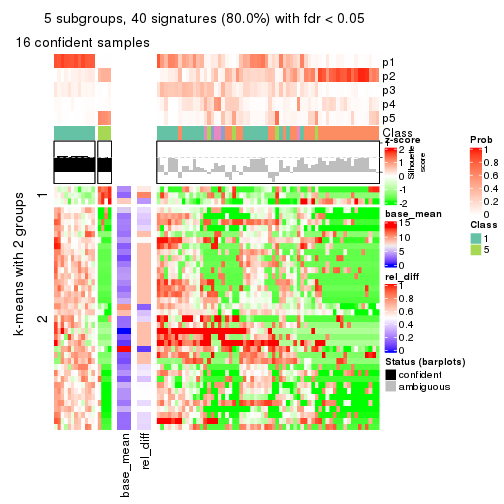
get_signatures(res, k = 6)

Signature heatmaps where rows are not scaled:
get_signatures(res, k = 2, scale_rows = FALSE)
get_signatures(res, k = 3, scale_rows = FALSE)

get_signatures(res, k = 4, scale_rows = FALSE)

get_signatures(res, k = 5, scale_rows = FALSE)
get_signatures(res, k = 6, scale_rows = FALSE)

Compare the overlap of signatures from different k:
compare_signatures(res)
get_signature() returns a data frame invisibly. TO get the list of signatures, the function
call should be assigned to a variable explicitly. In following code, if plot argument is set
to FALSE, no heatmap is plotted while only the differential analysis is performed.
# code only for demonstration
tb = get_signature(res, k = ..., plot = FALSE)
An example of the output of tb is:
#> which_row fdr mean_1 mean_2 scaled_mean_1 scaled_mean_2 km
#> 1 38 0.042760348 8.373488 9.131774 -0.5533452 0.5164555 1
#> 2 40 0.018707592 7.106213 8.469186 -0.6173731 0.5762149 1
#> 3 55 0.019134737 10.221463 11.207825 -0.6159697 0.5749050 1
#> 4 59 0.006059896 5.921854 7.869574 -0.6899429 0.6439467 1
#> 5 60 0.018055526 8.928898 10.211722 -0.6204761 0.5791110 1
#> 6 98 0.009384629 15.714769 14.887706 0.6635654 -0.6193277 2
...
The columns in tb are:
which_row: row indices corresponding to the input matrix.fdr: FDR for the differential test. mean_x: The mean value in group x.scaled_mean_x: The mean value in group x after rows are scaled.km: Row groups if k-means clustering is applied to rows.UMAP plot which shows how samples are separated.
dimension_reduction(res, k = 2, method = "UMAP")
dimension_reduction(res, k = 3, method = "UMAP")
dimension_reduction(res, k = 4, method = "UMAP")
dimension_reduction(res, k = 5, method = "UMAP")
dimension_reduction(res, k = 6, method = "UMAP")
Following heatmap shows how subgroups are split when increasing k:
collect_classes(res)
If matrix rows can be associated to genes, consider to use functional_enrichment(res,
...) to perform function enrichment for the signature genes. See this vignette for more detailed explanations.
The object with results only for a single top-value method and a single partition method can be extracted as:
res = res_list["CV", "kmeans"]
# you can also extract it by
# res = res_list["CV:kmeans"]
A summary of res and all the functions that can be applied to it:
res
#> A 'ConsensusPartition' object with k = 2, 3, 4, 5, 6.
#> On a matrix with 50 rows and 78 columns.
#> Top rows (5, 10, 15, 20, 25) are extracted by 'CV' method.
#> Subgroups are detected by 'kmeans' method.
#> Performed in total 1250 partitions by row resampling.
#> Best k for subgroups seems to be 2.
#>
#> Following methods can be applied to this 'ConsensusPartition' object:
#> [1] "cola_report" "collect_classes" "collect_plots"
#> [4] "collect_stats" "colnames" "compare_signatures"
#> [7] "consensus_heatmap" "dimension_reduction" "functional_enrichment"
#> [10] "get_anno_col" "get_anno" "get_classes"
#> [13] "get_consensus" "get_matrix" "get_membership"
#> [16] "get_param" "get_signatures" "get_stats"
#> [19] "is_best_k" "is_stable_k" "membership_heatmap"
#> [22] "ncol" "nrow" "plot_ecdf"
#> [25] "rownames" "select_partition_number" "show"
#> [28] "suggest_best_k" "test_to_known_factors"
collect_plots() function collects all the plots made from res for all k (number of partitions)
into one single page to provide an easy and fast comparison between different k.
collect_plots(res)

The plots are:
k and the heatmap of
predicted classes for each k.k.k.k.All the plots in panels can be made by individual functions and they are plotted later in this section.
select_partition_number() produces several plots showing different
statistics for choosing “optimized” k. There are following statistics:
k;k, the area increased is defined as \(A_k - A_{k-1}\).The detailed explanations of these statistics can be found in the cola vignette.
Generally speaking, lower PAC score, higher mean silhouette score or higher
concordance corresponds to better partition. Rand index and Jaccard index
measure how similar the current partition is compared to partition with k-1.
If they are too similar, we won't accept k is better than k-1.
select_partition_number(res)
The numeric values for all these statistics can be obtained by get_stats().
get_stats(res)
#> k 1-PAC mean_silhouette concordance area_increased Rand Jaccard
#> 2 2 0.355 0.762 0.860 0.4899 0.499 0.499
#> 3 3 0.286 0.444 0.700 0.3025 0.865 0.742
#> 4 4 0.362 0.340 0.604 0.1279 0.838 0.631
#> 5 5 0.425 0.326 0.539 0.0735 0.889 0.659
#> 6 6 0.501 0.296 0.570 0.0517 0.872 0.544
suggest_best_k() suggests the best \(k\) based on these statistics. The rules are as follows:
suggest_best_k(res)
#> [1] 2
Following shows the table of the partitions (You need to click the show/hide
code output link to see it). The membership matrix (columns with name p*)
is inferred by
clue::cl_consensus()
function with the SE method. Basically the value in the membership matrix
represents the probability to belong to a certain group. The finall class
label for an item is determined with the group with highest probability it
belongs to.
In get_classes() function, the entropy is calculated from the membership
matrix and the silhouette score is calculated from the consensus matrix.
cbind(get_classes(res, k = 2), get_membership(res, k = 2))
#> class entropy silhouette p1 p2
#> SRR764980 2 0.2603 0.8184 0.044 0.956
#> SRR764981 2 0.8661 0.6454 0.288 0.712
#> SRR764982 2 0.5737 0.8397 0.136 0.864
#> SRR764983 1 0.3431 0.8537 0.936 0.064
#> SRR764984 2 0.9460 0.5093 0.364 0.636
#> SRR764985 2 0.5294 0.8488 0.120 0.880
#> SRR764986 2 0.2236 0.8212 0.036 0.964
#> SRR764987 2 0.4690 0.8449 0.100 0.900
#> SRR764988 1 0.8386 0.6003 0.732 0.268
#> SRR764989 1 0.1184 0.8706 0.984 0.016
#> SRR764990 2 0.4690 0.8449 0.100 0.900
#> SRR764991 1 0.8327 0.6593 0.736 0.264
#> SRR764992 2 0.4690 0.8449 0.100 0.900
#> SRR764993 1 0.8207 0.6852 0.744 0.256
#> SRR764994 1 0.3584 0.8541 0.932 0.068
#> SRR764995 2 0.5946 0.8285 0.144 0.856
#> SRR764996 2 0.9795 0.2311 0.416 0.584
#> SRR764997 1 0.3114 0.8664 0.944 0.056
#> SRR764998 2 0.6973 0.6997 0.188 0.812
#> SRR764999 1 0.6623 0.7817 0.828 0.172
#> SRR765000 1 0.7602 0.7248 0.780 0.220
#> SRR765001 2 0.1843 0.8408 0.028 0.972
#> SRR765002 2 0.3431 0.8392 0.064 0.936
#> SRR765003 1 0.9881 0.2601 0.564 0.436
#> SRR765004 2 0.9866 0.0918 0.432 0.568
#> SRR765005 1 0.8386 0.6586 0.732 0.268
#> SRR765006 2 0.4690 0.8449 0.100 0.900
#> SRR765007 2 0.6973 0.8280 0.188 0.812
#> SRR765008 2 0.0672 0.8334 0.008 0.992
#> SRR765009 2 0.5294 0.8495 0.120 0.880
#> SRR765010 2 0.2948 0.8394 0.052 0.948
#> SRR765011 1 0.4161 0.8569 0.916 0.084
#> SRR765012 1 0.1184 0.8706 0.984 0.016
#> SRR765013 2 0.5519 0.8402 0.128 0.872
#> SRR765014 1 0.8144 0.6824 0.748 0.252
#> SRR765015 1 0.2603 0.8682 0.956 0.044
#> SRR765016 1 0.3431 0.8537 0.936 0.064
#> SRR765017 1 0.2236 0.8691 0.964 0.036
#> SRR765018 1 0.4298 0.8553 0.912 0.088
#> SRR765020 1 0.1184 0.8706 0.984 0.016
#> SRR765021 1 0.2423 0.8691 0.960 0.040
#> SRR765022 1 0.4431 0.8445 0.908 0.092
#> SRR765023 1 0.2603 0.8698 0.956 0.044
#> SRR765024 1 0.3584 0.8543 0.932 0.068
#> SRR765025 2 0.1843 0.8408 0.028 0.972
#> SRR765026 1 0.3431 0.8537 0.936 0.064
#> SRR765027 1 0.1184 0.8706 0.984 0.016
#> SRR765028 2 0.5737 0.8397 0.136 0.864
#> SRR765029 2 0.9954 0.2702 0.460 0.540
#> SRR765030 1 0.4022 0.8538 0.920 0.080
#> SRR765031 1 0.2603 0.8682 0.956 0.044
#> SRR765032 1 0.5178 0.8309 0.884 0.116
#> SRR765033 2 0.4431 0.8255 0.092 0.908
#> SRR765034 1 0.2423 0.8681 0.960 0.040
#> SRR765035 2 0.3584 0.8400 0.068 0.932
#> SRR765036 2 0.9996 -0.0172 0.488 0.512
#> SRR765037 2 0.5737 0.7984 0.136 0.864
#> SRR765038 2 0.4690 0.8449 0.100 0.900
#> SRR765039 1 0.5294 0.8401 0.880 0.120
#> SRR765040 1 0.7528 0.7383 0.784 0.216
#> SRR765041 2 0.1633 0.8398 0.024 0.976
#> SRR765042 1 0.2948 0.8610 0.948 0.052
#> SRR765043 1 0.3431 0.8537 0.936 0.064
#> SRR765044 2 0.5059 0.8494 0.112 0.888
#> SRR765045 1 0.2423 0.8705 0.960 0.040
#> SRR765046 2 0.0672 0.8334 0.008 0.992
#> SRR765047 1 0.4939 0.8400 0.892 0.108
#> SRR765048 1 0.1184 0.8706 0.984 0.016
#> SRR765049 2 0.5737 0.8397 0.136 0.864
#> SRR765050 2 0.0672 0.8334 0.008 0.992
#> SRR765051 1 0.1414 0.8711 0.980 0.020
#> SRR765052 1 0.9963 0.0291 0.536 0.464
#> SRR765053 1 0.8713 0.5984 0.708 0.292
#> SRR765054 1 0.3431 0.8537 0.936 0.064
#> SRR765055 1 0.2603 0.8694 0.956 0.044
#> SRR765056 1 0.3114 0.8660 0.944 0.056
#> SRR765057 2 0.9795 0.4591 0.416 0.584
#> SRR765058 1 0.3114 0.8660 0.944 0.056
cbind(get_classes(res, k = 3), get_membership(res, k = 3))
#> class entropy silhouette p1 p2 p3
#> SRR764980 3 0.6521 -0.2119 0.004 0.496 0.500
#> SRR764981 2 0.9278 0.2256 0.196 0.516 0.288
#> SRR764982 2 0.6157 0.5590 0.092 0.780 0.128
#> SRR764983 1 0.3192 0.6656 0.888 0.000 0.112
#> SRR764984 2 0.9302 -0.0457 0.240 0.524 0.236
#> SRR764985 2 0.6262 0.3016 0.020 0.696 0.284
#> SRR764986 2 0.5497 0.4786 0.000 0.708 0.292
#> SRR764987 2 0.1751 0.6051 0.028 0.960 0.012
#> SRR764988 1 0.8901 0.3064 0.572 0.232 0.196
#> SRR764989 1 0.2280 0.6815 0.940 0.008 0.052
#> SRR764990 2 0.3850 0.5763 0.028 0.884 0.088
#> SRR764991 1 0.9472 0.2129 0.492 0.288 0.220
#> SRR764992 2 0.1399 0.6050 0.028 0.968 0.004
#> SRR764993 3 0.9088 -0.0218 0.396 0.140 0.464
#> SRR764994 1 0.4931 0.6184 0.784 0.004 0.212
#> SRR764995 2 0.4015 0.5636 0.096 0.876 0.028
#> SRR764996 3 0.7316 0.4101 0.112 0.184 0.704
#> SRR764997 1 0.6792 0.6169 0.744 0.132 0.124
#> SRR764998 2 0.8445 0.0503 0.088 0.488 0.424
#> SRR764999 1 0.8934 0.3747 0.568 0.196 0.236
#> SRR765000 1 0.9411 0.2461 0.508 0.252 0.240
#> SRR765001 2 0.4921 0.5622 0.020 0.816 0.164
#> SRR765002 2 0.4782 0.5688 0.016 0.820 0.164
#> SRR765003 2 0.9989 -0.3220 0.336 0.352 0.312
#> SRR765004 3 0.9751 0.2377 0.252 0.308 0.440
#> SRR765005 1 0.9189 0.1467 0.500 0.336 0.164
#> SRR765006 2 0.3590 0.5970 0.028 0.896 0.076
#> SRR765007 2 0.8665 0.1526 0.108 0.508 0.384
#> SRR765008 2 0.5404 0.5024 0.004 0.740 0.256
#> SRR765009 2 0.4609 0.5723 0.028 0.844 0.128
#> SRR765010 2 0.6935 0.5403 0.096 0.728 0.176
#> SRR765011 1 0.5455 0.6505 0.788 0.028 0.184
#> SRR765012 1 0.3377 0.6727 0.896 0.012 0.092
#> SRR765013 2 0.5357 0.5783 0.064 0.820 0.116
#> SRR765014 1 0.9849 -0.0599 0.408 0.260 0.332
#> SRR765015 1 0.5889 0.6473 0.796 0.108 0.096
#> SRR765016 1 0.2878 0.6687 0.904 0.000 0.096
#> SRR765017 1 0.5004 0.6794 0.840 0.088 0.072
#> SRR765018 1 0.7145 0.3347 0.536 0.024 0.440
#> SRR765020 1 0.2384 0.6824 0.936 0.008 0.056
#> SRR765021 1 0.5506 0.6588 0.816 0.092 0.092
#> SRR765022 1 0.6783 0.5707 0.736 0.088 0.176
#> SRR765023 1 0.5243 0.6733 0.828 0.100 0.072
#> SRR765024 1 0.3267 0.6580 0.884 0.000 0.116
#> SRR765025 2 0.5036 0.5578 0.020 0.808 0.172
#> SRR765026 1 0.5560 0.5075 0.700 0.000 0.300
#> SRR765027 1 0.2301 0.6799 0.936 0.004 0.060
#> SRR765028 2 0.6309 0.5550 0.100 0.772 0.128
#> SRR765029 2 0.9616 0.0355 0.296 0.468 0.236
#> SRR765030 1 0.6879 0.3232 0.556 0.016 0.428
#> SRR765031 1 0.6112 0.6412 0.784 0.108 0.108
#> SRR765032 1 0.6421 0.3220 0.572 0.004 0.424
#> SRR765033 2 0.7484 -0.0908 0.036 0.504 0.460
#> SRR765034 1 0.5897 0.6384 0.792 0.076 0.132
#> SRR765035 2 0.5223 0.5650 0.024 0.800 0.176
#> SRR765036 3 0.8171 0.4593 0.184 0.172 0.644
#> SRR765037 3 0.7366 0.1988 0.036 0.400 0.564
#> SRR765038 2 0.2050 0.6025 0.028 0.952 0.020
#> SRR765039 1 0.7346 0.3119 0.536 0.032 0.432
#> SRR765040 1 0.8199 0.0959 0.488 0.072 0.440
#> SRR765041 2 0.5220 0.5598 0.012 0.780 0.208
#> SRR765042 1 0.2590 0.6833 0.924 0.004 0.072
#> SRR765043 1 0.3482 0.6533 0.872 0.000 0.128
#> SRR765044 2 0.3539 0.5825 0.012 0.888 0.100
#> SRR765045 1 0.3539 0.6803 0.888 0.100 0.012
#> SRR765046 2 0.5443 0.5000 0.004 0.736 0.260
#> SRR765047 1 0.6104 0.4649 0.648 0.004 0.348
#> SRR765048 1 0.0661 0.6886 0.988 0.004 0.008
#> SRR765049 2 0.6176 0.5583 0.100 0.780 0.120
#> SRR765050 2 0.5517 0.4996 0.004 0.728 0.268
#> SRR765051 1 0.1832 0.6938 0.956 0.036 0.008
#> SRR765052 2 0.9379 -0.1168 0.348 0.472 0.180
#> SRR765053 3 0.9574 0.1620 0.312 0.220 0.468
#> SRR765054 1 0.4172 0.6445 0.840 0.004 0.156
#> SRR765055 1 0.4665 0.6762 0.852 0.100 0.048
#> SRR765056 1 0.6181 0.6398 0.780 0.116 0.104
#> SRR765057 3 0.9698 0.2449 0.256 0.288 0.456
#> SRR765058 1 0.6184 0.6527 0.780 0.108 0.112
cbind(get_classes(res, k = 4), get_membership(res, k = 4))
#> class entropy silhouette p1 p2 p3 p4
#> SRR764980 4 0.429 0.3666 0.004 0.164 0.028 0.804
#> SRR764981 2 0.872 0.1426 0.204 0.520 0.152 0.124
#> SRR764982 2 0.158 0.5000 0.000 0.948 0.048 0.004
#> SRR764983 1 0.332 0.5329 0.884 0.024 0.076 0.016
#> SRR764984 3 0.791 0.4275 0.108 0.284 0.548 0.060
#> SRR764985 2 0.849 0.0682 0.060 0.416 0.140 0.384
#> SRR764986 4 0.540 0.2238 0.004 0.384 0.012 0.600
#> SRR764987 2 0.521 0.5102 0.000 0.756 0.140 0.104
#> SRR764988 1 0.859 -0.0729 0.368 0.300 0.304 0.028
#> SRR764989 1 0.540 0.5256 0.752 0.112 0.132 0.004
#> SRR764990 2 0.675 0.4345 0.000 0.584 0.288 0.128
#> SRR764991 3 0.798 0.4835 0.276 0.144 0.536 0.044
#> SRR764992 2 0.544 0.5114 0.000 0.732 0.176 0.092
#> SRR764993 3 0.784 0.3366 0.172 0.020 0.508 0.300
#> SRR764994 1 0.471 0.4553 0.800 0.008 0.132 0.060
#> SRR764995 2 0.667 0.4716 0.052 0.688 0.176 0.084
#> SRR764996 4 0.578 0.3422 0.048 0.028 0.200 0.724
#> SRR764997 1 0.688 0.1558 0.496 0.064 0.424 0.016
#> SRR764998 4 0.774 0.2940 0.036 0.184 0.204 0.576
#> SRR764999 3 0.751 0.3636 0.332 0.068 0.544 0.056
#> SRR765000 3 0.742 0.3632 0.296 0.112 0.564 0.028
#> SRR765001 2 0.741 0.0793 0.032 0.496 0.080 0.392
#> SRR765002 2 0.664 0.1253 0.000 0.520 0.088 0.392
#> SRR765003 3 0.905 0.3051 0.172 0.104 0.444 0.280
#> SRR765004 4 0.814 0.1969 0.156 0.072 0.208 0.564
#> SRR765005 3 0.873 0.5073 0.284 0.140 0.480 0.096
#> SRR765006 2 0.499 0.5219 0.000 0.744 0.208 0.048
#> SRR765007 2 0.732 0.1344 0.060 0.596 0.068 0.276
#> SRR765008 4 0.545 0.2119 0.004 0.400 0.012 0.584
#> SRR765009 2 0.772 0.4460 0.064 0.592 0.232 0.112
#> SRR765010 2 0.534 0.2787 0.024 0.732 0.024 0.220
#> SRR765011 1 0.562 0.4596 0.688 0.000 0.248 0.064
#> SRR765012 1 0.598 0.4952 0.704 0.132 0.160 0.004
#> SRR765013 2 0.180 0.5086 0.000 0.944 0.040 0.016
#> SRR765014 3 0.880 0.5024 0.192 0.144 0.516 0.148
#> SRR765015 1 0.577 0.3168 0.592 0.028 0.376 0.004
#> SRR765016 1 0.196 0.5496 0.944 0.024 0.024 0.008
#> SRR765017 1 0.580 0.4566 0.624 0.024 0.340 0.012
#> SRR765018 1 0.688 0.2457 0.596 0.004 0.264 0.136
#> SRR765020 1 0.587 0.5237 0.720 0.112 0.160 0.008
#> SRR765021 1 0.613 0.3501 0.600 0.052 0.344 0.004
#> SRR765022 1 0.771 0.2044 0.496 0.140 0.344 0.020
#> SRR765023 1 0.535 0.4556 0.644 0.008 0.336 0.012
#> SRR765024 1 0.166 0.5385 0.944 0.000 0.052 0.004
#> SRR765025 2 0.747 0.0610 0.032 0.488 0.084 0.396
#> SRR765026 1 0.607 0.3646 0.696 0.004 0.168 0.132
#> SRR765027 1 0.549 0.5215 0.752 0.128 0.112 0.008
#> SRR765028 2 0.168 0.4993 0.004 0.948 0.044 0.004
#> SRR765029 2 0.819 -0.0757 0.132 0.508 0.304 0.056
#> SRR765030 1 0.688 0.2364 0.596 0.000 0.208 0.196
#> SRR765031 1 0.662 0.2479 0.528 0.056 0.404 0.012
#> SRR765032 1 0.819 0.2697 0.556 0.072 0.220 0.152
#> SRR765033 4 0.871 0.1672 0.084 0.236 0.184 0.496
#> SRR765034 1 0.697 0.3262 0.564 0.108 0.320 0.008
#> SRR765035 2 0.759 0.3087 0.000 0.480 0.268 0.252
#> SRR765036 4 0.854 -0.0065 0.164 0.052 0.376 0.408
#> SRR765037 4 0.887 0.1704 0.080 0.204 0.252 0.464
#> SRR765038 2 0.514 0.5181 0.000 0.756 0.160 0.084
#> SRR765039 1 0.707 0.1159 0.548 0.000 0.296 0.156
#> SRR765040 1 0.928 0.0440 0.444 0.140 0.188 0.228
#> SRR765041 2 0.816 0.1304 0.028 0.444 0.172 0.356
#> SRR765042 1 0.227 0.5557 0.912 0.000 0.084 0.004
#> SRR765043 1 0.329 0.5268 0.888 0.024 0.068 0.020
#> SRR765044 2 0.735 0.4568 0.044 0.628 0.188 0.140
#> SRR765045 1 0.448 0.4841 0.748 0.008 0.240 0.004
#> SRR765046 4 0.533 0.2116 0.004 0.400 0.008 0.588
#> SRR765047 1 0.591 0.3651 0.696 0.000 0.180 0.124
#> SRR765048 1 0.403 0.5518 0.836 0.072 0.092 0.000
#> SRR765049 2 0.140 0.5013 0.004 0.956 0.040 0.000
#> SRR765050 4 0.571 0.2220 0.004 0.384 0.024 0.588
#> SRR765051 1 0.354 0.5470 0.852 0.028 0.120 0.000
#> SRR765052 3 0.875 0.4252 0.200 0.300 0.440 0.060
#> SRR765053 3 0.834 0.4392 0.156 0.076 0.540 0.228
#> SRR765054 1 0.366 0.4967 0.836 0.000 0.144 0.020
#> SRR765055 1 0.557 0.4657 0.656 0.016 0.312 0.016
#> SRR765056 1 0.591 0.2878 0.572 0.032 0.392 0.004
#> SRR765057 2 0.894 -0.1147 0.068 0.428 0.268 0.236
#> SRR765058 1 0.558 0.3857 0.580 0.008 0.400 0.012
cbind(get_classes(res, k = 5), get_membership(res, k = 5))
#> class entropy silhouette p1 p2 p3 p4 p5
#> SRR764980 2 0.542 0.25335 0.000 0.624 0.004 0.296 0.076
#> SRR764981 5 0.882 0.16014 0.176 0.100 0.092 0.176 0.456
#> SRR764982 5 0.218 0.44300 0.024 0.020 0.032 0.000 0.924
#> SRR764983 1 0.348 0.53138 0.856 0.028 0.072 0.044 0.000
#> SRR764984 3 0.733 0.36871 0.060 0.056 0.596 0.096 0.192
#> SRR764985 4 0.781 -0.05651 0.004 0.200 0.076 0.440 0.280
#> SRR764986 2 0.445 0.59522 0.000 0.704 0.000 0.036 0.260
#> SRR764987 5 0.663 0.36066 0.000 0.156 0.176 0.060 0.608
#> SRR764988 1 0.838 -0.02116 0.332 0.036 0.316 0.048 0.268
#> SRR764989 1 0.501 0.52599 0.772 0.016 0.108 0.032 0.072
#> SRR764990 5 0.769 0.31814 0.000 0.156 0.324 0.092 0.428
#> SRR764991 3 0.660 0.50032 0.176 0.040 0.656 0.056 0.072
#> SRR764992 5 0.698 0.36517 0.000 0.168 0.204 0.064 0.564
#> SRR764993 3 0.866 0.27634 0.148 0.168 0.408 0.248 0.028
#> SRR764994 1 0.579 0.29808 0.660 0.020 0.080 0.232 0.008
#> SRR764995 5 0.740 0.33031 0.028 0.124 0.280 0.044 0.524
#> SRR764996 4 0.585 0.15546 0.008 0.356 0.044 0.572 0.020
#> SRR764997 3 0.582 -0.20482 0.452 0.024 0.488 0.008 0.028
#> SRR764998 2 0.777 0.38815 0.020 0.544 0.148 0.152 0.136
#> SRR764999 3 0.713 0.39089 0.248 0.028 0.564 0.124 0.036
#> SRR765000 3 0.669 0.35768 0.232 0.048 0.620 0.036 0.064
#> SRR765001 2 0.668 0.32996 0.008 0.460 0.056 0.052 0.424
#> SRR765002 2 0.620 0.38206 0.000 0.508 0.084 0.020 0.388
#> SRR765003 3 0.915 0.21357 0.124 0.212 0.404 0.168 0.092
#> SRR765004 2 0.684 0.32403 0.084 0.636 0.180 0.064 0.036
#> SRR765005 3 0.921 0.31704 0.236 0.104 0.368 0.204 0.088
#> SRR765006 5 0.609 0.44019 0.000 0.080 0.188 0.072 0.660
#> SRR765007 5 0.775 0.09401 0.084 0.108 0.028 0.272 0.508
#> SRR765008 2 0.396 0.60646 0.000 0.732 0.008 0.004 0.256
#> SRR765009 5 0.793 0.34231 0.000 0.140 0.196 0.204 0.460
#> SRR765010 5 0.568 0.06944 0.040 0.240 0.016 0.032 0.672
#> SRR765011 1 0.675 0.43703 0.616 0.056 0.224 0.080 0.024
#> SRR765012 1 0.575 0.49035 0.712 0.016 0.136 0.032 0.104
#> SRR765013 5 0.271 0.43597 0.012 0.040 0.044 0.004 0.900
#> SRR765014 3 0.862 0.34311 0.140 0.084 0.460 0.232 0.084
#> SRR765015 1 0.475 0.30225 0.556 0.004 0.428 0.000 0.012
#> SRR765016 1 0.165 0.55582 0.944 0.004 0.028 0.024 0.000
#> SRR765017 1 0.664 0.46204 0.592 0.052 0.280 0.036 0.040
#> SRR765018 1 0.648 -0.03102 0.440 0.004 0.160 0.396 0.000
#> SRR765020 1 0.543 0.52915 0.744 0.032 0.132 0.028 0.064
#> SRR765021 1 0.540 0.36601 0.588 0.004 0.360 0.008 0.040
#> SRR765022 1 0.749 0.15456 0.424 0.024 0.400 0.056 0.096
#> SRR765023 1 0.629 0.39495 0.560 0.032 0.332 0.072 0.004
#> SRR765024 1 0.241 0.53851 0.884 0.000 0.008 0.108 0.000
#> SRR765025 2 0.640 0.41319 0.008 0.512 0.036 0.056 0.388
#> SRR765026 1 0.569 -0.02758 0.528 0.012 0.044 0.412 0.004
#> SRR765027 1 0.478 0.52923 0.788 0.016 0.092 0.028 0.076
#> SRR765028 5 0.218 0.44116 0.028 0.020 0.028 0.000 0.924
#> SRR765029 5 0.799 0.12085 0.124 0.084 0.212 0.052 0.528
#> SRR765030 4 0.563 0.11305 0.424 0.004 0.064 0.508 0.000
#> SRR765031 1 0.595 0.23427 0.488 0.020 0.440 0.004 0.048
#> SRR765032 4 0.756 0.18319 0.352 0.052 0.124 0.452 0.020
#> SRR765033 4 0.678 0.27766 0.012 0.168 0.040 0.604 0.176
#> SRR765034 1 0.605 0.32434 0.524 0.008 0.392 0.012 0.064
#> SRR765035 5 0.790 0.00184 0.000 0.320 0.216 0.084 0.380
#> SRR765036 4 0.531 0.35255 0.044 0.060 0.140 0.744 0.012
#> SRR765037 4 0.667 0.33702 0.016 0.156 0.060 0.640 0.128
#> SRR765038 5 0.605 0.39869 0.000 0.116 0.160 0.056 0.668
#> SRR765039 4 0.727 0.21289 0.336 0.036 0.172 0.452 0.004
#> SRR765040 4 0.847 0.24756 0.360 0.048 0.076 0.364 0.152
#> SRR765041 2 0.770 0.20201 0.000 0.412 0.196 0.072 0.320
#> SRR765042 1 0.240 0.55723 0.904 0.004 0.024 0.068 0.000
#> SRR765043 1 0.312 0.48326 0.844 0.004 0.016 0.136 0.000
#> SRR765044 5 0.784 0.33088 0.000 0.140 0.164 0.224 0.472
#> SRR765045 1 0.402 0.48265 0.736 0.000 0.248 0.012 0.004
#> SRR765046 2 0.377 0.60353 0.000 0.728 0.004 0.000 0.268
#> SRR765047 1 0.621 -0.07453 0.484 0.020 0.052 0.432 0.012
#> SRR765048 1 0.253 0.56528 0.892 0.000 0.076 0.000 0.032
#> SRR765049 5 0.227 0.44822 0.024 0.024 0.032 0.000 0.920
#> SRR765050 2 0.429 0.60220 0.000 0.740 0.012 0.020 0.228
#> SRR765051 1 0.415 0.53972 0.784 0.000 0.160 0.048 0.008
#> SRR765052 3 0.840 0.32861 0.120 0.084 0.492 0.084 0.220
#> SRR765053 3 0.689 0.23890 0.092 0.016 0.460 0.404 0.028
#> SRR765054 1 0.554 0.44493 0.692 0.028 0.096 0.184 0.000
#> SRR765055 1 0.606 0.46546 0.620 0.028 0.288 0.028 0.036
#> SRR765056 1 0.457 0.27419 0.544 0.000 0.448 0.004 0.004
#> SRR765057 5 0.908 0.04352 0.080 0.104 0.224 0.200 0.392
#> SRR765058 1 0.651 0.27337 0.472 0.032 0.416 0.076 0.004
cbind(get_classes(res, k = 6), get_membership(res, k = 6))
#> class entropy silhouette p1 p2 p3 p4 p5 p6
#> SRR764980 2 0.4741 0.08443 0.000 0.552 0.000 0.024 0.016 0.408
#> SRR764981 5 0.8998 0.03982 0.164 0.072 0.068 0.132 0.384 0.180
#> SRR764982 5 0.0806 0.46904 0.000 0.008 0.020 0.000 0.972 0.000
#> SRR764983 1 0.2366 0.52358 0.904 0.004 0.040 0.040 0.000 0.012
#> SRR764984 3 0.7086 -0.31218 0.012 0.028 0.456 0.336 0.128 0.040
#> SRR764985 6 0.6629 0.23467 0.000 0.104 0.016 0.116 0.192 0.572
#> SRR764986 2 0.3432 0.61157 0.000 0.828 0.000 0.024 0.108 0.040
#> SRR764987 5 0.7537 0.34553 0.000 0.216 0.104 0.144 0.484 0.052
#> SRR764988 3 0.7267 0.31315 0.180 0.012 0.460 0.064 0.272 0.012
#> SRR764989 1 0.6262 0.31887 0.608 0.020 0.232 0.032 0.088 0.020
#> SRR764990 4 0.7930 0.06313 0.000 0.112 0.152 0.384 0.296 0.056
#> SRR764991 3 0.6051 0.14230 0.064 0.036 0.616 0.248 0.020 0.016
#> SRR764992 5 0.7697 0.27424 0.000 0.180 0.112 0.212 0.452 0.044
#> SRR764993 3 0.7219 0.22347 0.048 0.080 0.520 0.144 0.000 0.208
#> SRR764994 1 0.6468 0.38552 0.612 0.020 0.088 0.120 0.004 0.156
#> SRR764995 5 0.7884 0.22790 0.008 0.204 0.236 0.096 0.420 0.036
#> SRR764996 6 0.6027 0.20311 0.012 0.316 0.008 0.148 0.000 0.516
#> SRR764997 3 0.4168 0.48414 0.216 0.016 0.740 0.008 0.016 0.004
#> SRR764998 2 0.6848 0.17025 0.016 0.500 0.024 0.324 0.048 0.088
#> SRR764999 3 0.6244 0.23409 0.108 0.012 0.600 0.228 0.012 0.040
#> SRR765000 3 0.5489 0.39185 0.072 0.028 0.736 0.072 0.060 0.032
#> SRR765001 2 0.6642 0.37008 0.016 0.560 0.020 0.048 0.260 0.096
#> SRR765002 2 0.5669 0.44458 0.000 0.624 0.020 0.148 0.200 0.008
#> SRR765003 4 0.7118 0.31151 0.080 0.164 0.060 0.596 0.048 0.052
#> SRR765004 2 0.5892 0.30502 0.036 0.616 0.252 0.056 0.000 0.040
#> SRR765005 4 0.7581 0.38207 0.100 0.032 0.176 0.544 0.056 0.092
#> SRR765006 5 0.6015 0.36987 0.000 0.048 0.096 0.144 0.660 0.052
#> SRR765007 5 0.6940 0.00653 0.072 0.040 0.016 0.048 0.496 0.328
#> SRR765008 2 0.2504 0.61654 0.000 0.856 0.004 0.000 0.136 0.004
#> SRR765009 5 0.7812 0.07259 0.000 0.100 0.048 0.252 0.416 0.184
#> SRR765010 5 0.6145 -0.02842 0.016 0.344 0.012 0.024 0.532 0.072
#> SRR765011 1 0.6304 0.37588 0.572 0.020 0.136 0.236 0.000 0.036
#> SRR765012 1 0.6861 0.22392 0.540 0.020 0.260 0.040 0.116 0.024
#> SRR765013 5 0.3300 0.47428 0.000 0.080 0.032 0.024 0.852 0.012
#> SRR765014 4 0.7341 0.34960 0.076 0.012 0.224 0.528 0.052 0.108
#> SRR765015 3 0.3983 0.36950 0.348 0.004 0.640 0.008 0.000 0.000
#> SRR765016 1 0.1862 0.52124 0.928 0.008 0.044 0.016 0.000 0.004
#> SRR765017 1 0.7123 0.23025 0.492 0.020 0.268 0.164 0.032 0.024
#> SRR765018 1 0.7628 0.15559 0.388 0.016 0.220 0.116 0.000 0.260
#> SRR765020 1 0.5929 0.41174 0.672 0.020 0.160 0.044 0.084 0.020
#> SRR765021 3 0.5220 0.29659 0.384 0.004 0.544 0.012 0.056 0.000
#> SRR765022 3 0.6019 0.39361 0.228 0.012 0.628 0.028 0.076 0.028
#> SRR765023 1 0.6316 0.27811 0.516 0.004 0.276 0.172 0.000 0.032
#> SRR765024 1 0.3133 0.51761 0.852 0.000 0.064 0.016 0.000 0.068
#> SRR765025 2 0.6376 0.42223 0.016 0.588 0.016 0.040 0.244 0.096
#> SRR765026 1 0.7033 0.29233 0.536 0.028 0.076 0.144 0.004 0.212
#> SRR765027 1 0.6338 0.33566 0.612 0.020 0.216 0.048 0.088 0.016
#> SRR765028 5 0.0820 0.47067 0.000 0.012 0.016 0.000 0.972 0.000
#> SRR765029 5 0.7608 0.03187 0.048 0.072 0.284 0.084 0.480 0.032
#> SRR765030 1 0.7446 0.08452 0.400 0.020 0.112 0.144 0.000 0.324
#> SRR765031 3 0.4922 0.45376 0.252 0.012 0.672 0.008 0.052 0.004
#> SRR765032 1 0.8069 0.08930 0.416 0.028 0.092 0.152 0.036 0.276
#> SRR765033 6 0.6003 0.44924 0.016 0.092 0.028 0.052 0.136 0.676
#> SRR765034 3 0.5482 0.33218 0.336 0.000 0.560 0.008 0.088 0.008
#> SRR765035 4 0.7238 0.11689 0.000 0.288 0.048 0.392 0.252 0.020
#> SRR765036 6 0.5837 0.37249 0.060 0.020 0.044 0.228 0.008 0.640
#> SRR765037 6 0.5346 0.46401 0.016 0.028 0.032 0.120 0.076 0.728
#> SRR765038 5 0.6665 0.36641 0.000 0.140 0.092 0.136 0.596 0.036
#> SRR765039 6 0.8066 0.02067 0.280 0.036 0.100 0.272 0.004 0.308
#> SRR765040 1 0.8630 -0.06280 0.372 0.036 0.084 0.104 0.124 0.280
#> SRR765041 2 0.8054 0.07240 0.008 0.360 0.044 0.308 0.184 0.096
#> SRR765042 1 0.4395 0.48570 0.776 0.012 0.120 0.044 0.000 0.048
#> SRR765043 1 0.3276 0.51506 0.856 0.008 0.028 0.056 0.000 0.052
#> SRR765044 5 0.8111 0.24496 0.000 0.164 0.044 0.172 0.364 0.256
#> SRR765045 1 0.5023 0.30052 0.628 0.000 0.296 0.044 0.000 0.032
#> SRR765046 2 0.2320 0.61587 0.000 0.864 0.000 0.000 0.132 0.004
#> SRR765047 1 0.7127 0.25129 0.484 0.024 0.084 0.140 0.000 0.268
#> SRR765048 1 0.4090 0.43880 0.780 0.008 0.136 0.012 0.064 0.000
#> SRR765049 5 0.1364 0.47600 0.000 0.020 0.012 0.016 0.952 0.000
#> SRR765050 2 0.3546 0.61362 0.000 0.828 0.020 0.024 0.112 0.016
#> SRR765051 1 0.4621 0.38679 0.692 0.000 0.244 0.020 0.004 0.040
#> SRR765052 4 0.8081 0.30250 0.072 0.036 0.324 0.364 0.176 0.028
#> SRR765053 3 0.7026 -0.11049 0.036 0.004 0.396 0.276 0.008 0.280
#> SRR765054 1 0.4657 0.50975 0.752 0.004 0.044 0.100 0.000 0.100
#> SRR765055 1 0.6072 0.31115 0.568 0.000 0.256 0.140 0.024 0.012
#> SRR765056 3 0.3672 0.42141 0.304 0.000 0.688 0.008 0.000 0.000
#> SRR765057 3 0.7212 0.02769 0.012 0.040 0.380 0.012 0.356 0.200
#> SRR765058 1 0.6399 0.13749 0.420 0.000 0.364 0.188 0.000 0.028
Heatmaps for the consensus matrix. It visualizes the probability of two samples to be in a same group.
consensus_heatmap(res, k = 2)
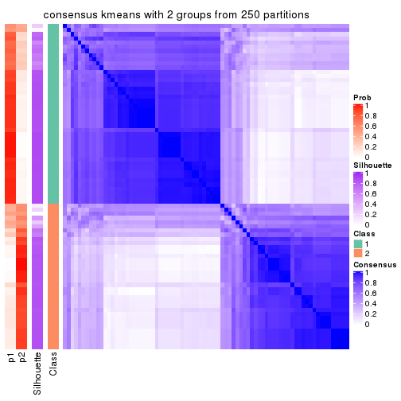
consensus_heatmap(res, k = 3)
consensus_heatmap(res, k = 4)
consensus_heatmap(res, k = 5)
consensus_heatmap(res, k = 6)
Heatmaps for the membership of samples in all partitions to see how consistent they are:
membership_heatmap(res, k = 2)
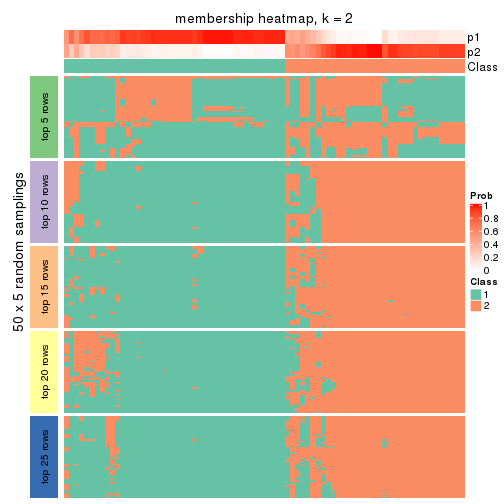
membership_heatmap(res, k = 3)
membership_heatmap(res, k = 4)
membership_heatmap(res, k = 5)
membership_heatmap(res, k = 6)
As soon as we have had the classes for columns, we can look for signatures which are significantly different between classes which can be candidate marks for certain classes. Following are the heatmaps for signatures.
Signature heatmaps where rows are scaled:
get_signatures(res, k = 2)
get_signatures(res, k = 3)
get_signatures(res, k = 4)
get_signatures(res, k = 5)
get_signatures(res, k = 6)
Signature heatmaps where rows are not scaled:
get_signatures(res, k = 2, scale_rows = FALSE)
get_signatures(res, k = 3, scale_rows = FALSE)
get_signatures(res, k = 4, scale_rows = FALSE)
get_signatures(res, k = 5, scale_rows = FALSE)
get_signatures(res, k = 6, scale_rows = FALSE)
Compare the overlap of signatures from different k:
compare_signatures(res)
get_signature() returns a data frame invisibly. TO get the list of signatures, the function
call should be assigned to a variable explicitly. In following code, if plot argument is set
to FALSE, no heatmap is plotted while only the differential analysis is performed.
# code only for demonstration
tb = get_signature(res, k = ..., plot = FALSE)
An example of the output of tb is:
#> which_row fdr mean_1 mean_2 scaled_mean_1 scaled_mean_2 km
#> 1 38 0.042760348 8.373488 9.131774 -0.5533452 0.5164555 1
#> 2 40 0.018707592 7.106213 8.469186 -0.6173731 0.5762149 1
#> 3 55 0.019134737 10.221463 11.207825 -0.6159697 0.5749050 1
#> 4 59 0.006059896 5.921854 7.869574 -0.6899429 0.6439467 1
#> 5 60 0.018055526 8.928898 10.211722 -0.6204761 0.5791110 1
#> 6 98 0.009384629 15.714769 14.887706 0.6635654 -0.6193277 2
...
The columns in tb are:
which_row: row indices corresponding to the input matrix.fdr: FDR for the differential test. mean_x: The mean value in group x.scaled_mean_x: The mean value in group x after rows are scaled.km: Row groups if k-means clustering is applied to rows.UMAP plot which shows how samples are separated.
dimension_reduction(res, k = 2, method = "UMAP")
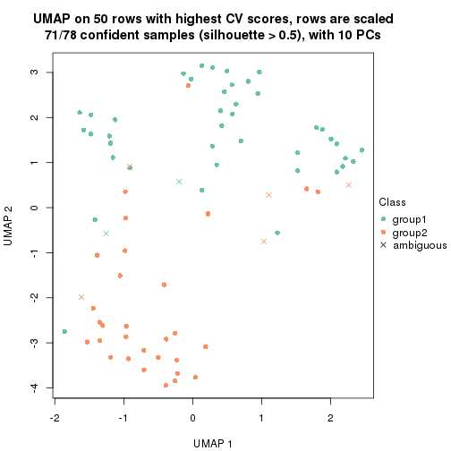
dimension_reduction(res, k = 3, method = "UMAP")
dimension_reduction(res, k = 4, method = "UMAP")
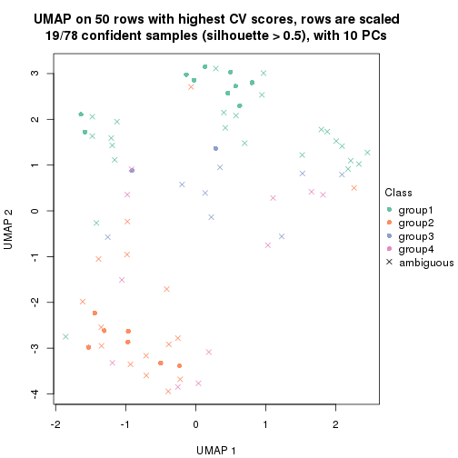
dimension_reduction(res, k = 5, method = "UMAP")
dimension_reduction(res, k = 6, method = "UMAP")
Following heatmap shows how subgroups are split when increasing k:
collect_classes(res)
If matrix rows can be associated to genes, consider to use functional_enrichment(res,
...) to perform function enrichment for the signature genes. See this vignette for more detailed explanations.
The object with results only for a single top-value method and a single partition method can be extracted as:
res = res_list["CV", "skmeans"]
# you can also extract it by
# res = res_list["CV:skmeans"]
A summary of res and all the functions that can be applied to it:
res
#> A 'ConsensusPartition' object with k = 2, 3, 4, 5, 6.
#> On a matrix with 50 rows and 78 columns.
#> Top rows (5, 10, 15, 20, 25) are extracted by 'CV' method.
#> Subgroups are detected by 'skmeans' method.
#> Performed in total 1250 partitions by row resampling.
#> Best k for subgroups seems to be 2.
#>
#> Following methods can be applied to this 'ConsensusPartition' object:
#> [1] "cola_report" "collect_classes" "collect_plots"
#> [4] "collect_stats" "colnames" "compare_signatures"
#> [7] "consensus_heatmap" "dimension_reduction" "functional_enrichment"
#> [10] "get_anno_col" "get_anno" "get_classes"
#> [13] "get_consensus" "get_matrix" "get_membership"
#> [16] "get_param" "get_signatures" "get_stats"
#> [19] "is_best_k" "is_stable_k" "membership_heatmap"
#> [22] "ncol" "nrow" "plot_ecdf"
#> [25] "rownames" "select_partition_number" "show"
#> [28] "suggest_best_k" "test_to_known_factors"
collect_plots() function collects all the plots made from res for all k (number of partitions)
into one single page to provide an easy and fast comparison between different k.
collect_plots(res)
The plots are:
k and the heatmap of
predicted classes for each k.k.k.k.All the plots in panels can be made by individual functions and they are plotted later in this section.
select_partition_number() produces several plots showing different
statistics for choosing “optimized” k. There are following statistics:
k;k, the area increased is defined as \(A_k - A_{k-1}\).The detailed explanations of these statistics can be found in the cola vignette.
Generally speaking, lower PAC score, higher mean silhouette score or higher
concordance corresponds to better partition. Rand index and Jaccard index
measure how similar the current partition is compared to partition with k-1.
If they are too similar, we won't accept k is better than k-1.
select_partition_number(res)
The numeric values for all these statistics can be obtained by get_stats().
get_stats(res)
#> k 1-PAC mean_silhouette concordance area_increased Rand Jaccard
#> 2 2 0.561 0.797 0.902 0.5047 0.494 0.494
#> 3 3 0.373 0.581 0.765 0.2936 0.825 0.658
#> 4 4 0.431 0.314 0.616 0.1291 0.835 0.587
#> 5 5 0.486 0.362 0.572 0.0727 0.786 0.393
#> 6 6 0.545 0.402 0.594 0.0445 0.897 0.573
suggest_best_k() suggests the best \(k\) based on these statistics. The rules are as follows:
suggest_best_k(res)
#> [1] 2
Following shows the table of the partitions (You need to click the show/hide
code output link to see it). The membership matrix (columns with name p*)
is inferred by
clue::cl_consensus()
function with the SE method. Basically the value in the membership matrix
represents the probability to belong to a certain group. The finall class
label for an item is determined with the group with highest probability it
belongs to.
In get_classes() function, the entropy is calculated from the membership
matrix and the silhouette score is calculated from the consensus matrix.
cbind(get_classes(res, k = 2), get_membership(res, k = 2))
#> class entropy silhouette p1 p2
#> SRR764980 2 0.2423 0.8713 0.040 0.960
#> SRR764981 2 0.6712 0.7876 0.176 0.824
#> SRR764982 2 0.0376 0.8734 0.004 0.996
#> SRR764983 1 0.0376 0.9036 0.996 0.004
#> SRR764984 2 0.8327 0.6080 0.264 0.736
#> SRR764985 2 0.0000 0.8735 0.000 1.000
#> SRR764986 2 0.2423 0.8713 0.040 0.960
#> SRR764987 2 0.0376 0.8734 0.004 0.996
#> SRR764988 1 0.9866 0.2515 0.568 0.432
#> SRR764989 1 0.2423 0.9008 0.960 0.040
#> SRR764990 2 0.0376 0.8734 0.004 0.996
#> SRR764991 1 0.8555 0.6504 0.720 0.280
#> SRR764992 2 0.0376 0.8734 0.004 0.996
#> SRR764993 1 0.8386 0.6635 0.732 0.268
#> SRR764994 1 0.0376 0.9036 0.996 0.004
#> SRR764995 2 0.6343 0.7471 0.160 0.840
#> SRR764996 2 0.9248 0.5535 0.340 0.660
#> SRR764997 1 0.3431 0.8931 0.936 0.064
#> SRR764998 2 0.6048 0.8059 0.148 0.852
#> SRR764999 1 0.6801 0.7919 0.820 0.180
#> SRR765000 1 0.8207 0.6875 0.744 0.256
#> SRR765001 2 0.2423 0.8713 0.040 0.960
#> SRR765002 2 0.0376 0.8734 0.004 0.996
#> SRR765003 2 0.9833 0.2412 0.424 0.576
#> SRR765004 2 0.9427 0.5166 0.360 0.640
#> SRR765005 1 0.9754 0.3642 0.592 0.408
#> SRR765006 2 0.0376 0.8734 0.004 0.996
#> SRR765007 2 0.2423 0.8713 0.040 0.960
#> SRR765008 2 0.2423 0.8713 0.040 0.960
#> SRR765009 2 0.0000 0.8735 0.000 1.000
#> SRR765010 2 0.2423 0.8713 0.040 0.960
#> SRR765011 1 0.0000 0.9042 1.000 0.000
#> SRR765012 1 0.2423 0.9008 0.960 0.040
#> SRR765013 2 0.0376 0.8734 0.004 0.996
#> SRR765014 1 0.9732 0.3643 0.596 0.404
#> SRR765015 1 0.2423 0.9008 0.960 0.040
#> SRR765016 1 0.0376 0.9036 0.996 0.004
#> SRR765017 1 0.2423 0.9008 0.960 0.040
#> SRR765018 1 0.0376 0.9036 0.996 0.004
#> SRR765020 1 0.0000 0.9042 1.000 0.000
#> SRR765021 1 0.2423 0.9008 0.960 0.040
#> SRR765022 1 0.6048 0.8288 0.852 0.148
#> SRR765023 1 0.2423 0.9008 0.960 0.040
#> SRR765024 1 0.0376 0.9036 0.996 0.004
#> SRR765025 2 0.2423 0.8713 0.040 0.960
#> SRR765026 1 0.0938 0.9016 0.988 0.012
#> SRR765027 1 0.0000 0.9042 1.000 0.000
#> SRR765028 2 0.0376 0.8734 0.004 0.996
#> SRR765029 2 0.8763 0.5729 0.296 0.704
#> SRR765030 1 0.0376 0.9036 0.996 0.004
#> SRR765031 1 0.2423 0.9008 0.960 0.040
#> SRR765032 1 0.6343 0.7532 0.840 0.160
#> SRR765033 2 0.2603 0.8706 0.044 0.956
#> SRR765034 1 0.2778 0.8985 0.952 0.048
#> SRR765035 2 0.0376 0.8734 0.004 0.996
#> SRR765036 2 0.9552 0.4718 0.376 0.624
#> SRR765037 2 0.2948 0.8687 0.052 0.948
#> SRR765038 2 0.0376 0.8734 0.004 0.996
#> SRR765039 1 0.3584 0.8699 0.932 0.068
#> SRR765040 1 0.6438 0.7685 0.836 0.164
#> SRR765041 2 0.2423 0.8713 0.040 0.960
#> SRR765042 1 0.0376 0.9036 0.996 0.004
#> SRR765043 1 0.0376 0.9036 0.996 0.004
#> SRR765044 2 0.0000 0.8735 0.000 1.000
#> SRR765045 1 0.2423 0.9008 0.960 0.040
#> SRR765046 2 0.2423 0.8713 0.040 0.960
#> SRR765047 1 0.0376 0.9036 0.996 0.004
#> SRR765048 1 0.0000 0.9042 1.000 0.000
#> SRR765049 2 0.0376 0.8734 0.004 0.996
#> SRR765050 2 0.2423 0.8713 0.040 0.960
#> SRR765051 1 0.0000 0.9042 1.000 0.000
#> SRR765052 2 0.9775 0.2822 0.412 0.588
#> SRR765053 2 0.9988 0.0154 0.480 0.520
#> SRR765054 1 0.0376 0.9036 0.996 0.004
#> SRR765055 1 0.2423 0.9008 0.960 0.040
#> SRR765056 1 0.2423 0.9008 0.960 0.040
#> SRR765057 2 0.7453 0.7079 0.212 0.788
#> SRR765058 1 0.2423 0.9008 0.960 0.040
cbind(get_classes(res, k = 3), get_membership(res, k = 3))
#> class entropy silhouette p1 p2 p3
#> SRR764980 3 0.6180 -0.04305 0.000 0.416 0.584
#> SRR764981 2 0.8435 0.42728 0.132 0.600 0.268
#> SRR764982 2 0.2636 0.74257 0.048 0.932 0.020
#> SRR764983 1 0.4399 0.71583 0.812 0.000 0.188
#> SRR764984 2 0.7951 0.42812 0.260 0.636 0.104
#> SRR764985 2 0.5905 0.31225 0.000 0.648 0.352
#> SRR764986 2 0.4887 0.69067 0.000 0.772 0.228
#> SRR764987 2 0.0000 0.74753 0.000 1.000 0.000
#> SRR764988 1 0.8222 0.30707 0.592 0.308 0.100
#> SRR764989 1 0.2537 0.75286 0.920 0.000 0.080
#> SRR764990 2 0.1031 0.74608 0.000 0.976 0.024
#> SRR764991 1 0.8408 0.33995 0.596 0.280 0.124
#> SRR764992 2 0.0592 0.74720 0.000 0.988 0.012
#> SRR764993 3 0.8937 0.12820 0.428 0.124 0.448
#> SRR764994 1 0.6274 0.24610 0.544 0.000 0.456
#> SRR764995 2 0.4805 0.63044 0.176 0.812 0.012
#> SRR764996 3 0.5067 0.59013 0.052 0.116 0.832
#> SRR764997 1 0.4569 0.70666 0.860 0.068 0.072
#> SRR764998 2 0.7402 0.52262 0.052 0.624 0.324
#> SRR764999 1 0.8673 0.33706 0.588 0.160 0.252
#> SRR765000 1 0.8008 0.47622 0.656 0.192 0.152
#> SRR765001 2 0.3551 0.72411 0.000 0.868 0.132
#> SRR765002 2 0.2537 0.73980 0.000 0.920 0.080
#> SRR765003 2 0.9706 0.00122 0.276 0.456 0.268
#> SRR765004 2 0.9944 0.08009 0.296 0.384 0.320
#> SRR765005 1 0.9305 0.08691 0.456 0.380 0.164
#> SRR765006 2 0.0592 0.74750 0.000 0.988 0.012
#> SRR765007 2 0.7379 0.27888 0.040 0.584 0.376
#> SRR765008 2 0.4504 0.70638 0.000 0.804 0.196
#> SRR765009 2 0.1643 0.74368 0.000 0.956 0.044
#> SRR765010 2 0.4742 0.73336 0.048 0.848 0.104
#> SRR765011 1 0.3879 0.72649 0.848 0.000 0.152
#> SRR765012 1 0.2711 0.75247 0.912 0.000 0.088
#> SRR765013 2 0.2339 0.74308 0.048 0.940 0.012
#> SRR765014 3 0.9328 0.49823 0.248 0.232 0.520
#> SRR765015 1 0.3369 0.72990 0.908 0.040 0.052
#> SRR765016 1 0.4399 0.71583 0.812 0.000 0.188
#> SRR765017 1 0.1289 0.75704 0.968 0.000 0.032
#> SRR765018 3 0.4645 0.62934 0.176 0.008 0.816
#> SRR765020 1 0.3412 0.74517 0.876 0.000 0.124
#> SRR765021 1 0.2066 0.73532 0.940 0.000 0.060
#> SRR765022 1 0.5965 0.62897 0.792 0.100 0.108
#> SRR765023 1 0.4676 0.72780 0.848 0.040 0.112
#> SRR765024 1 0.5650 0.55241 0.688 0.000 0.312
#> SRR765025 2 0.3551 0.72411 0.000 0.868 0.132
#> SRR765026 3 0.5178 0.57940 0.256 0.000 0.744
#> SRR765027 1 0.3116 0.74889 0.892 0.000 0.108
#> SRR765028 2 0.2636 0.74257 0.048 0.932 0.020
#> SRR765029 2 0.8476 0.37314 0.332 0.560 0.108
#> SRR765030 3 0.5016 0.59486 0.240 0.000 0.760
#> SRR765031 1 0.2261 0.72835 0.932 0.000 0.068
#> SRR765032 3 0.4796 0.61339 0.220 0.000 0.780
#> SRR765033 3 0.6154 0.14312 0.000 0.408 0.592
#> SRR765034 1 0.2845 0.72707 0.920 0.012 0.068
#> SRR765035 2 0.2625 0.73993 0.000 0.916 0.084
#> SRR765036 3 0.5740 0.64935 0.096 0.100 0.804
#> SRR765037 3 0.6062 0.26837 0.000 0.384 0.616
#> SRR765038 2 0.0424 0.74692 0.000 0.992 0.008
#> SRR765039 3 0.6124 0.61982 0.220 0.036 0.744
#> SRR765040 3 0.7694 0.52283 0.292 0.076 0.632
#> SRR765041 2 0.4235 0.71384 0.000 0.824 0.176
#> SRR765042 1 0.4121 0.72573 0.832 0.000 0.168
#> SRR765043 1 0.5327 0.62344 0.728 0.000 0.272
#> SRR765044 2 0.1529 0.74301 0.000 0.960 0.040
#> SRR765045 1 0.3155 0.75162 0.916 0.040 0.044
#> SRR765046 2 0.4504 0.70638 0.000 0.804 0.196
#> SRR765047 3 0.5831 0.54190 0.284 0.008 0.708
#> SRR765048 1 0.3412 0.74485 0.876 0.000 0.124
#> SRR765049 2 0.2636 0.74257 0.048 0.932 0.020
#> SRR765050 2 0.4555 0.70470 0.000 0.800 0.200
#> SRR765051 1 0.3340 0.74870 0.880 0.000 0.120
#> SRR765052 2 0.7080 0.27137 0.412 0.564 0.024
#> SRR765053 3 0.8268 0.51706 0.228 0.144 0.628
#> SRR765054 1 0.5178 0.65061 0.744 0.000 0.256
#> SRR765055 1 0.3042 0.74875 0.920 0.040 0.040
#> SRR765056 1 0.3669 0.72491 0.896 0.040 0.064
#> SRR765057 2 0.9241 0.12388 0.164 0.484 0.352
#> SRR765058 1 0.4602 0.71223 0.852 0.040 0.108
cbind(get_classes(res, k = 4), get_membership(res, k = 4))
#> class entropy silhouette p1 p2 p3 p4
#> SRR764980 4 0.6025 0.3833 0.140 0.172 0.000 0.688
#> SRR764981 2 0.7981 0.1334 0.308 0.484 0.020 0.188
#> SRR764982 2 0.4874 0.5017 0.028 0.804 0.048 0.120
#> SRR764983 1 0.4830 0.1197 0.608 0.000 0.392 0.000
#> SRR764984 2 0.8189 0.1888 0.064 0.524 0.284 0.128
#> SRR764985 2 0.6928 -0.0748 0.156 0.576 0.000 0.268
#> SRR764986 2 0.5290 0.2885 0.008 0.516 0.000 0.476
#> SRR764987 2 0.0188 0.5451 0.000 0.996 0.000 0.004
#> SRR764988 3 0.6771 0.2775 0.024 0.236 0.644 0.096
#> SRR764989 3 0.5735 0.2846 0.392 0.000 0.576 0.032
#> SRR764990 2 0.3013 0.5086 0.032 0.888 0.000 0.080
#> SRR764991 3 0.7465 0.2425 0.064 0.240 0.608 0.088
#> SRR764992 2 0.1767 0.5339 0.012 0.944 0.000 0.044
#> SRR764993 3 0.7829 0.0206 0.192 0.020 0.524 0.264
#> SRR764994 1 0.4888 0.3968 0.740 0.000 0.224 0.036
#> SRR764995 2 0.4018 0.4610 0.004 0.812 0.168 0.016
#> SRR764996 4 0.4936 0.4765 0.280 0.020 0.000 0.700
#> SRR764997 3 0.2246 0.5112 0.004 0.052 0.928 0.016
#> SRR764998 4 0.6801 0.0244 0.124 0.308 0.000 0.568
#> SRR764999 3 0.8278 0.2809 0.200 0.132 0.564 0.104
#> SRR765000 3 0.6283 0.3988 0.068 0.108 0.732 0.092
#> SRR765001 2 0.4697 0.3914 0.000 0.644 0.000 0.356
#> SRR765002 2 0.4477 0.4263 0.000 0.688 0.000 0.312
#> SRR765003 4 0.9356 0.1509 0.300 0.256 0.092 0.352
#> SRR765004 4 0.7652 0.2289 0.020 0.156 0.288 0.536
#> SRR765005 2 0.9539 -0.1512 0.332 0.340 0.188 0.140
#> SRR765006 2 0.2820 0.5380 0.020 0.904 0.008 0.068
#> SRR765007 2 0.7495 -0.0853 0.192 0.468 0.000 0.340
#> SRR765008 2 0.4999 0.2811 0.000 0.508 0.000 0.492
#> SRR765009 2 0.2282 0.5394 0.024 0.924 0.000 0.052
#> SRR765010 2 0.6172 0.4105 0.012 0.600 0.040 0.348
#> SRR765011 3 0.6081 0.1488 0.472 0.000 0.484 0.044
#> SRR765012 3 0.6243 0.2740 0.392 0.000 0.548 0.060
#> SRR765013 2 0.3586 0.5251 0.012 0.872 0.040 0.076
#> SRR765014 1 0.8462 -0.0380 0.508 0.252 0.064 0.176
#> SRR765015 3 0.2224 0.5197 0.032 0.040 0.928 0.000
#> SRR765016 1 0.4925 0.0887 0.572 0.000 0.428 0.000
#> SRR765017 3 0.4990 0.3860 0.352 0.000 0.640 0.008
#> SRR765018 1 0.6323 0.2867 0.640 0.000 0.112 0.248
#> SRR765020 3 0.5696 0.1778 0.480 0.000 0.496 0.024
#> SRR765021 3 0.1637 0.5156 0.060 0.000 0.940 0.000
#> SRR765022 3 0.4750 0.4594 0.060 0.056 0.824 0.060
#> SRR765023 3 0.6141 0.2936 0.428 0.040 0.528 0.004
#> SRR765024 1 0.5099 0.1975 0.612 0.000 0.380 0.008
#> SRR765025 2 0.4804 0.3747 0.000 0.616 0.000 0.384
#> SRR765026 1 0.4483 0.5141 0.808 0.000 0.104 0.088
#> SRR765027 3 0.6137 0.1546 0.448 0.000 0.504 0.048
#> SRR765028 2 0.4792 0.5042 0.028 0.808 0.044 0.120
#> SRR765029 2 0.8424 0.1381 0.028 0.428 0.304 0.240
#> SRR765030 1 0.5384 0.4402 0.728 0.000 0.076 0.196
#> SRR765031 3 0.0937 0.5163 0.012 0.000 0.976 0.012
#> SRR765032 1 0.4864 0.4606 0.768 0.000 0.060 0.172
#> SRR765033 4 0.7396 0.4112 0.216 0.268 0.000 0.516
#> SRR765034 3 0.2363 0.5076 0.056 0.000 0.920 0.024
#> SRR765035 2 0.4837 0.4104 0.004 0.648 0.000 0.348
#> SRR765036 4 0.7097 0.2661 0.432 0.060 0.028 0.480
#> SRR765037 4 0.7659 0.4237 0.296 0.244 0.000 0.460
#> SRR765038 2 0.0469 0.5454 0.000 0.988 0.000 0.012
#> SRR765039 1 0.5932 0.4768 0.728 0.024 0.080 0.168
#> SRR765040 1 0.6981 0.3395 0.632 0.036 0.088 0.244
#> SRR765041 2 0.4941 0.3358 0.000 0.564 0.000 0.436
#> SRR765042 1 0.4967 0.0552 0.548 0.000 0.452 0.000
#> SRR765043 1 0.5007 0.2388 0.636 0.000 0.356 0.008
#> SRR765044 2 0.2644 0.5278 0.032 0.908 0.000 0.060
#> SRR765045 3 0.5677 0.3728 0.332 0.040 0.628 0.000
#> SRR765046 2 0.4992 0.2927 0.000 0.524 0.000 0.476
#> SRR765047 1 0.5058 0.5169 0.768 0.000 0.104 0.128
#> SRR765048 3 0.4989 0.1358 0.472 0.000 0.528 0.000
#> SRR765049 2 0.4562 0.5116 0.028 0.824 0.044 0.104
#> SRR765050 2 0.4999 0.2811 0.000 0.508 0.000 0.492
#> SRR765051 3 0.5000 0.0465 0.496 0.000 0.504 0.000
#> SRR765052 2 0.8577 0.1623 0.104 0.492 0.292 0.112
#> SRR765053 1 0.9525 -0.2358 0.340 0.120 0.224 0.316
#> SRR765054 1 0.4564 0.2485 0.672 0.000 0.328 0.000
#> SRR765055 3 0.4661 0.3973 0.348 0.000 0.652 0.000
#> SRR765056 3 0.1585 0.5152 0.004 0.040 0.952 0.004
#> SRR765057 4 0.9668 0.1553 0.128 0.288 0.284 0.300
#> SRR765058 3 0.6198 0.3480 0.392 0.040 0.560 0.008
cbind(get_classes(res, k = 5), get_membership(res, k = 5))
#> class entropy silhouette p1 p2 p3 p4 p5
#> SRR764980 5 0.506 0.137049 0.000 0.040 0.004 0.336 0.620
#> SRR764981 2 0.850 0.207891 0.100 0.388 0.116 0.344 0.052
#> SRR764982 2 0.598 0.441465 0.004 0.672 0.120 0.168 0.036
#> SRR764983 1 0.302 0.591504 0.884 0.000 0.040 0.032 0.044
#> SRR764984 2 0.715 0.232516 0.000 0.476 0.344 0.072 0.108
#> SRR764985 4 0.624 0.167140 0.000 0.444 0.012 0.444 0.100
#> SRR764986 5 0.380 0.617401 0.000 0.300 0.000 0.000 0.700
#> SRR764987 2 0.212 0.449370 0.000 0.900 0.004 0.000 0.096
#> SRR764988 3 0.834 0.388715 0.140 0.140 0.508 0.160 0.052
#> SRR764989 1 0.579 0.359053 0.612 0.004 0.280 0.100 0.004
#> SRR764990 2 0.506 0.421573 0.000 0.744 0.068 0.040 0.148
#> SRR764991 3 0.757 0.411093 0.084 0.196 0.576 0.052 0.092
#> SRR764992 2 0.294 0.466433 0.000 0.872 0.024 0.008 0.096
#> SRR764993 3 0.773 0.259144 0.088 0.008 0.488 0.256 0.160
#> SRR764994 1 0.568 0.410954 0.644 0.000 0.032 0.264 0.060
#> SRR764995 2 0.459 0.411692 0.000 0.740 0.172 0.000 0.088
#> SRR764996 4 0.490 0.190142 0.012 0.000 0.008 0.528 0.452
#> SRR764997 3 0.479 0.617320 0.188 0.048 0.744 0.012 0.008
#> SRR764998 5 0.445 0.492132 0.020 0.100 0.024 0.048 0.808
#> SRR764999 3 0.866 0.353036 0.116 0.112 0.488 0.172 0.112
#> SRR765000 3 0.628 0.579763 0.116 0.100 0.692 0.064 0.028
#> SRR765001 5 0.426 0.475126 0.000 0.440 0.000 0.000 0.560
#> SRR765002 2 0.511 -0.314397 0.028 0.520 0.004 0.000 0.448
#> SRR765003 5 0.919 -0.116533 0.172 0.212 0.100 0.116 0.400
#> SRR765004 5 0.565 0.382505 0.036 0.044 0.228 0.012 0.680
#> SRR765005 2 0.975 -0.108728 0.260 0.280 0.148 0.148 0.164
#> SRR765006 2 0.359 0.484196 0.000 0.852 0.048 0.036 0.064
#> SRR765007 4 0.687 -0.008749 0.016 0.348 0.080 0.516 0.040
#> SRR765008 5 0.364 0.619474 0.000 0.272 0.000 0.000 0.728
#> SRR765009 2 0.508 0.435326 0.000 0.744 0.032 0.128 0.096
#> SRR765010 2 0.699 -0.208502 0.012 0.468 0.052 0.076 0.392
#> SRR765011 1 0.520 0.467072 0.724 0.000 0.172 0.032 0.072
#> SRR765012 1 0.662 0.276089 0.536 0.016 0.296 0.148 0.004
#> SRR765013 2 0.549 0.444866 0.000 0.708 0.088 0.164 0.040
#> SRR765014 4 0.952 0.200031 0.124 0.276 0.108 0.300 0.192
#> SRR765015 3 0.458 0.557295 0.268 0.040 0.692 0.000 0.000
#> SRR765016 1 0.226 0.591832 0.908 0.000 0.064 0.028 0.000
#> SRR765017 1 0.575 0.368956 0.620 0.000 0.292 0.028 0.060
#> SRR765018 4 0.737 -0.011132 0.380 0.000 0.096 0.424 0.100
#> SRR765020 1 0.565 0.473099 0.696 0.000 0.172 0.084 0.048
#> SRR765021 3 0.420 0.504886 0.320 0.004 0.672 0.004 0.000
#> SRR765022 3 0.542 0.546805 0.156 0.036 0.732 0.060 0.016
#> SRR765023 1 0.575 0.407693 0.668 0.000 0.212 0.036 0.084
#> SRR765024 1 0.299 0.590927 0.868 0.000 0.072 0.060 0.000
#> SRR765025 5 0.417 0.518435 0.000 0.396 0.000 0.000 0.604
#> SRR765026 1 0.564 0.232654 0.544 0.000 0.028 0.396 0.032
#> SRR765027 1 0.573 0.397095 0.628 0.004 0.260 0.104 0.004
#> SRR765028 2 0.605 0.439049 0.004 0.668 0.120 0.168 0.040
#> SRR765029 2 0.896 0.187379 0.060 0.360 0.308 0.140 0.132
#> SRR765030 1 0.555 0.082059 0.476 0.000 0.016 0.472 0.036
#> SRR765031 3 0.400 0.606206 0.208 0.004 0.768 0.012 0.008
#> SRR765032 1 0.639 0.158729 0.468 0.000 0.020 0.412 0.100
#> SRR765033 4 0.701 0.299523 0.008 0.200 0.012 0.476 0.304
#> SRR765034 3 0.580 0.499512 0.248 0.008 0.624 0.120 0.000
#> SRR765035 5 0.603 0.160057 0.028 0.464 0.036 0.008 0.464
#> SRR765036 4 0.601 0.489265 0.044 0.048 0.044 0.700 0.164
#> SRR765037 4 0.611 0.454656 0.000 0.232 0.024 0.620 0.124
#> SRR765038 2 0.164 0.467192 0.000 0.932 0.004 0.000 0.064
#> SRR765039 1 0.716 0.092367 0.468 0.016 0.056 0.380 0.080
#> SRR765040 4 0.643 0.154225 0.356 0.060 0.056 0.528 0.000
#> SRR765041 5 0.452 0.543145 0.000 0.336 0.020 0.000 0.644
#> SRR765042 1 0.327 0.584885 0.852 0.000 0.100 0.044 0.004
#> SRR765043 1 0.347 0.579359 0.832 0.000 0.036 0.128 0.004
#> SRR765044 2 0.489 0.415514 0.000 0.740 0.020 0.172 0.068
#> SRR765045 1 0.438 0.389081 0.688 0.000 0.292 0.016 0.004
#> SRR765046 5 0.380 0.617401 0.000 0.300 0.000 0.000 0.700
#> SRR765047 1 0.584 0.198278 0.528 0.000 0.012 0.392 0.068
#> SRR765048 1 0.269 0.557231 0.844 0.000 0.156 0.000 0.000
#> SRR765049 2 0.558 0.452047 0.004 0.700 0.108 0.164 0.024
#> SRR765050 5 0.353 0.619896 0.000 0.256 0.000 0.000 0.744
#> SRR765051 1 0.398 0.557435 0.784 0.000 0.164 0.052 0.000
#> SRR765052 2 0.806 0.221583 0.080 0.480 0.276 0.040 0.124
#> SRR765053 4 0.636 0.326839 0.020 0.092 0.240 0.624 0.024
#> SRR765054 1 0.385 0.581401 0.820 0.000 0.008 0.104 0.068
#> SRR765055 1 0.524 0.368014 0.672 0.000 0.256 0.016 0.056
#> SRR765056 3 0.459 0.593521 0.228 0.040 0.724 0.008 0.000
#> SRR765057 3 0.827 -0.000619 0.012 0.172 0.372 0.336 0.108
#> SRR765058 1 0.720 0.163070 0.520 0.008 0.300 0.068 0.104
cbind(get_classes(res, k = 6), get_membership(res, k = 6))
#> class entropy silhouette p1 p2 p3 p4 p5 p6
#> SRR764980 2 0.5992 0.25535 0.000 0.576 0.012 0.024 0.128 0.260
#> SRR764981 5 0.7401 0.37365 0.128 0.136 0.012 0.128 0.548 0.048
#> SRR764982 5 0.5977 0.58073 0.000 0.200 0.024 0.220 0.556 0.000
#> SRR764983 1 0.3681 0.60363 0.836 0.000 0.044 0.016 0.044 0.060
#> SRR764984 4 0.5912 0.28272 0.000 0.032 0.240 0.616 0.028 0.084
#> SRR764985 6 0.7675 -0.00893 0.000 0.116 0.012 0.300 0.248 0.324
#> SRR764986 2 0.1636 0.67745 0.000 0.936 0.000 0.036 0.004 0.024
#> SRR764987 4 0.4673 0.34569 0.000 0.264 0.000 0.660 0.072 0.004
#> SRR764988 3 0.6634 0.15336 0.072 0.024 0.496 0.076 0.332 0.000
#> SRR764989 1 0.5854 0.35453 0.568 0.000 0.224 0.000 0.188 0.020
#> SRR764990 4 0.2894 0.42573 0.000 0.104 0.004 0.860 0.020 0.012
#> SRR764991 3 0.7175 0.20822 0.068 0.024 0.432 0.384 0.044 0.048
#> SRR764992 4 0.4310 0.39215 0.000 0.224 0.004 0.716 0.052 0.004
#> SRR764993 3 0.7614 0.23210 0.096 0.108 0.496 0.004 0.076 0.220
#> SRR764994 1 0.5069 0.13702 0.580 0.000 0.036 0.016 0.008 0.360
#> SRR764995 4 0.6744 0.33785 0.000 0.260 0.152 0.512 0.064 0.012
#> SRR764996 6 0.6717 0.16347 0.008 0.344 0.016 0.028 0.140 0.464
#> SRR764997 3 0.3079 0.63768 0.092 0.000 0.848 0.052 0.000 0.008
#> SRR764998 2 0.5344 0.51917 0.008 0.688 0.016 0.196 0.064 0.028
#> SRR764999 3 0.7560 0.34818 0.080 0.008 0.460 0.228 0.028 0.196
#> SRR765000 3 0.5726 0.53866 0.048 0.008 0.688 0.140 0.024 0.092
#> SRR765001 2 0.4136 0.54536 0.000 0.748 0.000 0.192 0.020 0.040
#> SRR765002 2 0.4460 0.44565 0.000 0.700 0.040 0.240 0.020 0.000
#> SRR765003 4 0.9243 0.10775 0.124 0.208 0.100 0.356 0.124 0.088
#> SRR765004 2 0.4579 0.47588 0.004 0.704 0.240 0.016 0.024 0.012
#> SRR765005 4 0.7896 0.21602 0.164 0.024 0.108 0.512 0.116 0.076
#> SRR765006 4 0.6785 0.17904 0.000 0.224 0.028 0.516 0.196 0.036
#> SRR765007 5 0.5927 0.38198 0.044 0.060 0.008 0.092 0.688 0.108
#> SRR765008 2 0.0146 0.67827 0.000 0.996 0.000 0.004 0.000 0.000
#> SRR765009 4 0.7190 0.30583 0.000 0.216 0.012 0.480 0.184 0.108
#> SRR765010 2 0.5964 0.10328 0.000 0.548 0.000 0.136 0.284 0.032
#> SRR765011 1 0.6116 0.47279 0.604 0.000 0.236 0.020 0.072 0.068
#> SRR765012 1 0.5953 0.32864 0.540 0.000 0.172 0.000 0.268 0.020
#> SRR765013 5 0.5747 0.50626 0.000 0.200 0.000 0.300 0.500 0.000
#> SRR765014 4 0.7497 0.06516 0.136 0.000 0.044 0.476 0.108 0.236
#> SRR765015 3 0.3770 0.59737 0.176 0.000 0.776 0.040 0.004 0.004
#> SRR765016 1 0.2794 0.60018 0.860 0.000 0.080 0.000 0.000 0.060
#> SRR765017 1 0.6419 0.41869 0.552 0.004 0.268 0.032 0.124 0.020
#> SRR765018 6 0.5000 0.37211 0.264 0.048 0.036 0.000 0.000 0.652
#> SRR765020 1 0.5061 0.53010 0.696 0.000 0.084 0.016 0.188 0.016
#> SRR765021 3 0.4245 0.51761 0.256 0.000 0.696 0.000 0.044 0.004
#> SRR765022 3 0.6095 0.50384 0.136 0.012 0.644 0.020 0.152 0.036
#> SRR765023 1 0.6464 0.43778 0.576 0.000 0.236 0.024 0.084 0.080
#> SRR765024 1 0.3727 0.57660 0.784 0.000 0.088 0.000 0.000 0.128
#> SRR765025 2 0.3350 0.60042 0.000 0.824 0.000 0.124 0.012 0.040
#> SRR765026 6 0.4230 0.22172 0.400 0.000 0.008 0.000 0.008 0.584
#> SRR765027 1 0.5974 0.38492 0.576 0.000 0.204 0.004 0.192 0.024
#> SRR765028 5 0.5978 0.58130 0.000 0.204 0.024 0.216 0.556 0.000
#> SRR765029 5 0.6943 0.48079 0.004 0.216 0.172 0.084 0.516 0.008
#> SRR765030 6 0.3489 0.36637 0.288 0.000 0.000 0.000 0.004 0.708
#> SRR765031 3 0.3029 0.62592 0.120 0.000 0.840 0.000 0.036 0.004
#> SRR765032 1 0.6802 -0.12963 0.404 0.000 0.032 0.020 0.164 0.380
#> SRR765033 6 0.7358 0.28775 0.000 0.168 0.012 0.140 0.220 0.460
#> SRR765034 3 0.4787 0.53400 0.184 0.000 0.672 0.000 0.144 0.000
#> SRR765035 2 0.5874 0.32523 0.000 0.612 0.068 0.232 0.084 0.004
#> SRR765036 6 0.6512 0.43472 0.024 0.036 0.048 0.088 0.176 0.628
#> SRR765037 6 0.6921 0.33435 0.000 0.056 0.036 0.148 0.232 0.528
#> SRR765038 4 0.5118 0.34344 0.000 0.228 0.008 0.652 0.108 0.004
#> SRR765039 6 0.5583 0.38704 0.236 0.000 0.000 0.092 0.048 0.624
#> SRR765040 6 0.7286 0.31353 0.276 0.020 0.040 0.012 0.212 0.440
#> SRR765041 2 0.4521 0.56563 0.000 0.688 0.004 0.256 0.012 0.040
#> SRR765042 1 0.4686 0.58950 0.752 0.000 0.084 0.008 0.040 0.116
#> SRR765043 1 0.3236 0.48720 0.796 0.000 0.024 0.000 0.000 0.180
#> SRR765044 4 0.7053 0.34853 0.000 0.224 0.008 0.496 0.144 0.128
#> SRR765045 1 0.4607 0.45118 0.628 0.000 0.328 0.000 0.020 0.024
#> SRR765046 2 0.1010 0.67671 0.000 0.960 0.000 0.036 0.004 0.000
#> SRR765047 6 0.4387 0.20367 0.392 0.008 0.016 0.000 0.000 0.584
#> SRR765048 1 0.2308 0.60074 0.880 0.000 0.108 0.000 0.008 0.004
#> SRR765049 5 0.6096 0.51443 0.000 0.184 0.020 0.288 0.508 0.000
#> SRR765050 2 0.0603 0.67692 0.000 0.980 0.004 0.016 0.000 0.000
#> SRR765051 1 0.4132 0.55969 0.748 0.000 0.180 0.000 0.008 0.064
#> SRR765052 4 0.7216 0.27490 0.084 0.036 0.188 0.568 0.092 0.032
#> SRR765053 6 0.5791 0.31494 0.000 0.000 0.216 0.084 0.080 0.620
#> SRR765054 1 0.4779 0.47449 0.692 0.000 0.008 0.020 0.048 0.232
#> SRR765055 1 0.5717 0.45455 0.624 0.000 0.248 0.020 0.076 0.032
#> SRR765056 3 0.3859 0.60876 0.168 0.000 0.776 0.040 0.000 0.016
#> SRR765057 5 0.7700 0.21385 0.000 0.056 0.308 0.108 0.412 0.116
#> SRR765058 1 0.6883 0.32427 0.500 0.000 0.300 0.032 0.092 0.076
Heatmaps for the consensus matrix. It visualizes the probability of two samples to be in a same group.
consensus_heatmap(res, k = 2)

consensus_heatmap(res, k = 3)
consensus_heatmap(res, k = 4)
consensus_heatmap(res, k = 5)
consensus_heatmap(res, k = 6)
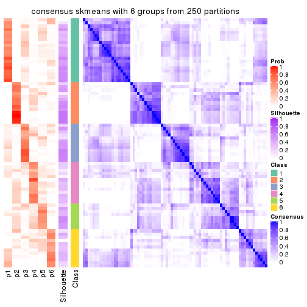
Heatmaps for the membership of samples in all partitions to see how consistent they are:
membership_heatmap(res, k = 2)
membership_heatmap(res, k = 3)
membership_heatmap(res, k = 4)
membership_heatmap(res, k = 5)
membership_heatmap(res, k = 6)
As soon as we have had the classes for columns, we can look for signatures which are significantly different between classes which can be candidate marks for certain classes. Following are the heatmaps for signatures.
Signature heatmaps where rows are scaled:
get_signatures(res, k = 2)
get_signatures(res, k = 3)
get_signatures(res, k = 4)
get_signatures(res, k = 5)

get_signatures(res, k = 6)
Signature heatmaps where rows are not scaled:
get_signatures(res, k = 2, scale_rows = FALSE)
get_signatures(res, k = 3, scale_rows = FALSE)
get_signatures(res, k = 4, scale_rows = FALSE)
get_signatures(res, k = 5, scale_rows = FALSE)
get_signatures(res, k = 6, scale_rows = FALSE)
Compare the overlap of signatures from different k:
compare_signatures(res)
get_signature() returns a data frame invisibly. TO get the list of signatures, the function
call should be assigned to a variable explicitly. In following code, if plot argument is set
to FALSE, no heatmap is plotted while only the differential analysis is performed.
# code only for demonstration
tb = get_signature(res, k = ..., plot = FALSE)
An example of the output of tb is:
#> which_row fdr mean_1 mean_2 scaled_mean_1 scaled_mean_2 km
#> 1 38 0.042760348 8.373488 9.131774 -0.5533452 0.5164555 1
#> 2 40 0.018707592 7.106213 8.469186 -0.6173731 0.5762149 1
#> 3 55 0.019134737 10.221463 11.207825 -0.6159697 0.5749050 1
#> 4 59 0.006059896 5.921854 7.869574 -0.6899429 0.6439467 1
#> 5 60 0.018055526 8.928898 10.211722 -0.6204761 0.5791110 1
#> 6 98 0.009384629 15.714769 14.887706 0.6635654 -0.6193277 2
...
The columns in tb are:
which_row: row indices corresponding to the input matrix.fdr: FDR for the differential test. mean_x: The mean value in group x.scaled_mean_x: The mean value in group x after rows are scaled.km: Row groups if k-means clustering is applied to rows.UMAP plot which shows how samples are separated.
dimension_reduction(res, k = 2, method = "UMAP")

dimension_reduction(res, k = 3, method = "UMAP")
dimension_reduction(res, k = 4, method = "UMAP")
dimension_reduction(res, k = 5, method = "UMAP")
dimension_reduction(res, k = 6, method = "UMAP")
Following heatmap shows how subgroups are split when increasing k:
collect_classes(res)
If matrix rows can be associated to genes, consider to use functional_enrichment(res,
...) to perform function enrichment for the signature genes. See this vignette for more detailed explanations.
The object with results only for a single top-value method and a single partition method can be extracted as:
res = res_list["CV", "pam"]
# you can also extract it by
# res = res_list["CV:pam"]
A summary of res and all the functions that can be applied to it:
res
#> A 'ConsensusPartition' object with k = 2, 3, 4, 5, 6.
#> On a matrix with 50 rows and 78 columns.
#> Top rows (5, 10, 15, 20, 25) are extracted by 'CV' method.
#> Subgroups are detected by 'pam' method.
#> Performed in total 1250 partitions by row resampling.
#> Best k for subgroups seems to be 2.
#>
#> Following methods can be applied to this 'ConsensusPartition' object:
#> [1] "cola_report" "collect_classes" "collect_plots"
#> [4] "collect_stats" "colnames" "compare_signatures"
#> [7] "consensus_heatmap" "dimension_reduction" "functional_enrichment"
#> [10] "get_anno_col" "get_anno" "get_classes"
#> [13] "get_consensus" "get_matrix" "get_membership"
#> [16] "get_param" "get_signatures" "get_stats"
#> [19] "is_best_k" "is_stable_k" "membership_heatmap"
#> [22] "ncol" "nrow" "plot_ecdf"
#> [25] "rownames" "select_partition_number" "show"
#> [28] "suggest_best_k" "test_to_known_factors"
collect_plots() function collects all the plots made from res for all k (number of partitions)
into one single page to provide an easy and fast comparison between different k.
collect_plots(res)
The plots are:
k and the heatmap of
predicted classes for each k.k.k.k.All the plots in panels can be made by individual functions and they are plotted later in this section.
select_partition_number() produces several plots showing different
statistics for choosing “optimized” k. There are following statistics:
k;k, the area increased is defined as \(A_k - A_{k-1}\).The detailed explanations of these statistics can be found in the cola vignette.
Generally speaking, lower PAC score, higher mean silhouette score or higher
concordance corresponds to better partition. Rand index and Jaccard index
measure how similar the current partition is compared to partition with k-1.
If they are too similar, we won't accept k is better than k-1.
select_partition_number(res)
The numeric values for all these statistics can be obtained by get_stats().
get_stats(res)
#> k 1-PAC mean_silhouette concordance area_increased Rand Jaccard
#> 2 2 0.378 0.777 0.879 0.4669 0.534 0.534
#> 3 3 0.301 0.447 0.685 0.3230 0.782 0.617
#> 4 4 0.362 0.383 0.647 0.1566 0.846 0.632
#> 5 5 0.455 0.343 0.630 0.0799 0.796 0.437
#> 6 6 0.513 0.398 0.651 0.0551 0.862 0.500
suggest_best_k() suggests the best \(k\) based on these statistics. The rules are as follows:
suggest_best_k(res)
#> [1] 2
Following shows the table of the partitions (You need to click the show/hide
code output link to see it). The membership matrix (columns with name p*)
is inferred by
clue::cl_consensus()
function with the SE method. Basically the value in the membership matrix
represents the probability to belong to a certain group. The finall class
label for an item is determined with the group with highest probability it
belongs to.
In get_classes() function, the entropy is calculated from the membership
matrix and the silhouette score is calculated from the consensus matrix.
cbind(get_classes(res, k = 2), get_membership(res, k = 2))
#> class entropy silhouette p1 p2
#> SRR764980 2 0.6973 0.7989 0.188 0.812
#> SRR764981 1 0.8661 0.5297 0.712 0.288
#> SRR764982 2 0.4298 0.8554 0.088 0.912
#> SRR764983 1 0.0000 0.8753 1.000 0.000
#> SRR764984 2 0.9881 0.1964 0.436 0.564
#> SRR764985 2 0.3733 0.8453 0.072 0.928
#> SRR764986 2 0.6973 0.7989 0.188 0.812
#> SRR764987 2 0.1843 0.8492 0.028 0.972
#> SRR764988 1 0.8443 0.6853 0.728 0.272
#> SRR764989 1 0.0000 0.8753 1.000 0.000
#> SRR764990 2 0.3431 0.8584 0.064 0.936
#> SRR764991 1 0.9323 0.5500 0.652 0.348
#> SRR764992 2 0.2043 0.8507 0.032 0.968
#> SRR764993 1 0.7376 0.7712 0.792 0.208
#> SRR764994 1 0.0000 0.8753 1.000 0.000
#> SRR764995 2 0.6712 0.8094 0.176 0.824
#> SRR764996 1 0.8443 0.6181 0.728 0.272
#> SRR764997 1 0.3431 0.8637 0.936 0.064
#> SRR764998 2 0.9909 0.1598 0.444 0.556
#> SRR764999 1 0.5629 0.8240 0.868 0.132
#> SRR765000 1 0.6247 0.8057 0.844 0.156
#> SRR765001 2 0.4298 0.8531 0.088 0.912
#> SRR765002 2 0.0000 0.8335 0.000 1.000
#> SRR765003 1 0.9775 0.4218 0.588 0.412
#> SRR765004 1 0.6973 0.7444 0.812 0.188
#> SRR765005 1 0.8608 0.6824 0.716 0.284
#> SRR765006 2 0.4562 0.8527 0.096 0.904
#> SRR765007 2 0.8327 0.7569 0.264 0.736
#> SRR765008 2 0.4562 0.8377 0.096 0.904
#> SRR765009 2 0.9170 0.6268 0.332 0.668
#> SRR765010 2 0.6048 0.8386 0.148 0.852
#> SRR765011 1 0.0000 0.8753 1.000 0.000
#> SRR765012 1 0.0000 0.8753 1.000 0.000
#> SRR765013 2 0.2778 0.8545 0.048 0.952
#> SRR765014 1 0.8713 0.6544 0.708 0.292
#> SRR765015 1 0.2603 0.8689 0.956 0.044
#> SRR765016 1 0.0000 0.8753 1.000 0.000
#> SRR765017 1 0.2603 0.8689 0.956 0.044
#> SRR765018 1 0.0672 0.8742 0.992 0.008
#> SRR765020 1 0.0000 0.8753 1.000 0.000
#> SRR765021 1 0.2603 0.8689 0.956 0.044
#> SRR765022 1 0.4022 0.8580 0.920 0.080
#> SRR765023 1 0.2603 0.8689 0.956 0.044
#> SRR765024 1 0.0000 0.8753 1.000 0.000
#> SRR765025 2 0.4298 0.8531 0.088 0.912
#> SRR765026 1 0.0000 0.8753 1.000 0.000
#> SRR765027 1 0.0000 0.8753 1.000 0.000
#> SRR765028 2 0.4815 0.8500 0.104 0.896
#> SRR765029 1 0.9427 0.5285 0.640 0.360
#> SRR765030 1 0.0000 0.8753 1.000 0.000
#> SRR765031 1 0.2603 0.8689 0.956 0.044
#> SRR765032 1 0.0000 0.8753 1.000 0.000
#> SRR765033 2 0.9323 0.6001 0.348 0.652
#> SRR765034 1 0.2603 0.8689 0.956 0.044
#> SRR765035 2 0.5294 0.8206 0.120 0.880
#> SRR765036 1 0.8081 0.6422 0.752 0.248
#> SRR765037 1 0.9896 0.0331 0.560 0.440
#> SRR765038 2 0.2043 0.8507 0.032 0.968
#> SRR765039 1 0.2043 0.8654 0.968 0.032
#> SRR765040 1 0.1414 0.8708 0.980 0.020
#> SRR765041 2 0.5294 0.8230 0.120 0.880
#> SRR765042 1 0.0000 0.8753 1.000 0.000
#> SRR765043 1 0.0000 0.8753 1.000 0.000
#> SRR765044 2 0.4939 0.8539 0.108 0.892
#> SRR765045 1 0.2603 0.8689 0.956 0.044
#> SRR765046 2 0.4562 0.8377 0.096 0.904
#> SRR765047 1 0.0000 0.8753 1.000 0.000
#> SRR765048 1 0.0000 0.8753 1.000 0.000
#> SRR765049 2 0.3114 0.8556 0.056 0.944
#> SRR765050 2 0.7883 0.7516 0.236 0.764
#> SRR765051 1 0.0000 0.8753 1.000 0.000
#> SRR765052 1 0.9170 0.5229 0.668 0.332
#> SRR765053 1 0.5737 0.8208 0.864 0.136
#> SRR765054 1 0.0000 0.8753 1.000 0.000
#> SRR765055 1 0.2603 0.8689 0.956 0.044
#> SRR765056 1 0.2603 0.8689 0.956 0.044
#> SRR765057 1 0.9460 0.4563 0.636 0.364
#> SRR765058 1 0.2603 0.8689 0.956 0.044
cbind(get_classes(res, k = 3), get_membership(res, k = 3))
#> class entropy silhouette p1 p2 p3
#> SRR764980 2 0.4453 0.49493 0.012 0.836 0.152
#> SRR764981 1 0.8543 0.40465 0.604 0.160 0.236
#> SRR764982 3 0.7175 0.16843 0.032 0.376 0.592
#> SRR764983 1 0.2165 0.76483 0.936 0.000 0.064
#> SRR764984 3 0.8512 0.12765 0.340 0.108 0.552
#> SRR764985 3 0.8938 0.15226 0.124 0.432 0.444
#> SRR764986 2 0.0592 0.57127 0.012 0.988 0.000
#> SRR764987 3 0.6307 0.07564 0.000 0.488 0.512
#> SRR764988 1 0.6954 0.46326 0.620 0.028 0.352
#> SRR764989 1 0.1289 0.77366 0.968 0.000 0.032
#> SRR764990 3 0.6398 0.13615 0.004 0.416 0.580
#> SRR764991 1 0.7979 0.30588 0.500 0.060 0.440
#> SRR764992 3 0.6295 0.09693 0.000 0.472 0.528
#> SRR764993 3 0.8464 -0.43654 0.448 0.088 0.464
#> SRR764994 1 0.3038 0.76909 0.896 0.000 0.104
#> SRR764995 2 0.9193 -0.19131 0.156 0.480 0.364
#> SRR764996 2 0.9466 0.07561 0.188 0.456 0.356
#> SRR764997 1 0.4796 0.70104 0.780 0.000 0.220
#> SRR764998 2 0.8984 0.24769 0.212 0.564 0.224
#> SRR764999 1 0.6577 0.52060 0.572 0.008 0.420
#> SRR765000 1 0.6345 0.53070 0.596 0.004 0.400
#> SRR765001 2 0.2625 0.54547 0.000 0.916 0.084
#> SRR765002 2 0.4842 0.36874 0.000 0.776 0.224
#> SRR765003 3 0.9722 0.05712 0.312 0.244 0.444
#> SRR765004 2 0.9387 0.14633 0.272 0.508 0.220
#> SRR765005 1 0.5899 0.62131 0.736 0.020 0.244
#> SRR765006 3 0.7968 0.15642 0.068 0.372 0.560
#> SRR765007 3 0.9667 0.24061 0.268 0.268 0.464
#> SRR765008 2 0.0424 0.57154 0.000 0.992 0.008
#> SRR765009 3 0.9800 0.24257 0.300 0.268 0.432
#> SRR765010 2 0.5263 0.47169 0.060 0.824 0.116
#> SRR765011 1 0.5202 0.73313 0.820 0.044 0.136
#> SRR765012 1 0.2796 0.76299 0.908 0.000 0.092
#> SRR765013 3 0.6299 0.08375 0.000 0.476 0.524
#> SRR765014 3 0.6126 -0.06493 0.352 0.004 0.644
#> SRR765015 1 0.4291 0.72193 0.820 0.000 0.180
#> SRR765016 1 0.1529 0.77351 0.960 0.000 0.040
#> SRR765017 1 0.2625 0.77294 0.916 0.000 0.084
#> SRR765018 1 0.5785 0.62474 0.668 0.000 0.332
#> SRR765020 1 0.2066 0.76685 0.940 0.000 0.060
#> SRR765021 1 0.3619 0.74275 0.864 0.000 0.136
#> SRR765022 1 0.5560 0.68128 0.700 0.000 0.300
#> SRR765023 1 0.3482 0.75106 0.872 0.000 0.128
#> SRR765024 1 0.0592 0.77571 0.988 0.000 0.012
#> SRR765025 2 0.2448 0.54925 0.000 0.924 0.076
#> SRR765026 1 0.4796 0.70166 0.780 0.000 0.220
#> SRR765027 1 0.0424 0.77457 0.992 0.000 0.008
#> SRR765028 3 0.9049 0.16737 0.136 0.400 0.464
#> SRR765029 1 0.9623 0.12190 0.464 0.232 0.304
#> SRR765030 1 0.4974 0.69326 0.764 0.000 0.236
#> SRR765031 1 0.4887 0.70563 0.772 0.000 0.228
#> SRR765032 1 0.6662 0.65828 0.716 0.052 0.232
#> SRR765033 3 0.8427 0.15092 0.148 0.240 0.612
#> SRR765034 1 0.4452 0.71708 0.808 0.000 0.192
#> SRR765035 2 0.8179 0.11275 0.072 0.504 0.424
#> SRR765036 3 0.8665 -0.17292 0.412 0.104 0.484
#> SRR765037 3 0.8269 0.19595 0.316 0.100 0.584
#> SRR765038 3 0.6305 0.08186 0.000 0.484 0.516
#> SRR765039 1 0.5529 0.64169 0.704 0.000 0.296
#> SRR765040 1 0.5553 0.66940 0.724 0.004 0.272
#> SRR765041 2 0.6576 0.46622 0.068 0.740 0.192
#> SRR765042 1 0.0000 0.77381 1.000 0.000 0.000
#> SRR765043 1 0.1643 0.77390 0.956 0.000 0.044
#> SRR765044 2 0.8140 -0.18677 0.068 0.476 0.456
#> SRR765045 1 0.1163 0.77448 0.972 0.000 0.028
#> SRR765046 2 0.0000 0.56960 0.000 1.000 0.000
#> SRR765047 1 0.3816 0.73978 0.852 0.000 0.148
#> SRR765048 1 0.0237 0.77374 0.996 0.000 0.004
#> SRR765049 3 0.8460 0.14487 0.088 0.440 0.472
#> SRR765050 2 0.3998 0.53902 0.060 0.884 0.056
#> SRR765051 1 0.1411 0.77863 0.964 0.000 0.036
#> SRR765052 1 0.7940 0.23113 0.524 0.060 0.416
#> SRR765053 1 0.6299 0.44354 0.524 0.000 0.476
#> SRR765054 1 0.3192 0.75251 0.888 0.000 0.112
#> SRR765055 1 0.2878 0.77194 0.904 0.000 0.096
#> SRR765056 1 0.4399 0.71802 0.812 0.000 0.188
#> SRR765057 3 0.7820 -0.00991 0.400 0.056 0.544
#> SRR765058 1 0.5016 0.74242 0.760 0.000 0.240
cbind(get_classes(res, k = 4), get_membership(res, k = 4))
#> class entropy silhouette p1 p2 p3 p4
#> SRR764980 4 0.3857 0.6282 0.004 0.044 0.104 0.848
#> SRR764981 1 0.8440 -0.0983 0.444 0.124 0.364 0.068
#> SRR764982 2 0.6488 0.5807 0.000 0.604 0.292 0.104
#> SRR764983 1 0.3037 0.5413 0.888 0.076 0.036 0.000
#> SRR764984 3 0.8192 0.4338 0.200 0.296 0.476 0.028
#> SRR764985 2 0.7144 0.5760 0.044 0.648 0.128 0.180
#> SRR764986 4 0.0524 0.6784 0.000 0.008 0.004 0.988
#> SRR764987 2 0.4675 0.6097 0.000 0.736 0.020 0.244
#> SRR764988 3 0.6859 0.1697 0.380 0.108 0.512 0.000
#> SRR764989 1 0.3768 0.4720 0.808 0.008 0.184 0.000
#> SRR764990 2 0.5116 0.6346 0.012 0.768 0.052 0.168
#> SRR764991 3 0.8348 0.3710 0.296 0.228 0.448 0.028
#> SRR764992 2 0.4327 0.6269 0.000 0.768 0.016 0.216
#> SRR764993 3 0.7395 0.3391 0.248 0.060 0.608 0.084
#> SRR764994 1 0.2805 0.5318 0.888 0.012 0.100 0.000
#> SRR764995 2 0.7786 0.5414 0.128 0.588 0.060 0.224
#> SRR764996 4 0.8817 0.0725 0.160 0.080 0.324 0.436
#> SRR764997 1 0.5132 0.1270 0.548 0.004 0.448 0.000
#> SRR764998 4 0.8156 0.4368 0.108 0.156 0.152 0.584
#> SRR764999 3 0.7352 0.3441 0.328 0.176 0.496 0.000
#> SRR765000 3 0.7321 0.3325 0.328 0.172 0.500 0.000
#> SRR765001 4 0.2973 0.6096 0.000 0.144 0.000 0.856
#> SRR765002 4 0.4761 0.0368 0.000 0.372 0.000 0.628
#> SRR765003 3 0.9924 0.1993 0.208 0.284 0.288 0.220
#> SRR765004 4 0.6964 0.3179 0.192 0.004 0.200 0.604
#> SRR765005 1 0.6624 0.2070 0.632 0.232 0.132 0.004
#> SRR765006 2 0.6068 0.6228 0.032 0.732 0.104 0.132
#> SRR765007 2 0.8295 0.3832 0.104 0.460 0.364 0.072
#> SRR765008 4 0.0188 0.6792 0.000 0.004 0.000 0.996
#> SRR765009 2 0.7810 0.4427 0.168 0.596 0.176 0.060
#> SRR765010 4 0.6231 0.4499 0.016 0.172 0.112 0.700
#> SRR765011 1 0.6049 0.4718 0.740 0.092 0.124 0.044
#> SRR765012 1 0.4673 0.3540 0.700 0.008 0.292 0.000
#> SRR765013 2 0.7049 0.5648 0.000 0.572 0.192 0.236
#> SRR765014 2 0.7817 -0.3570 0.212 0.416 0.368 0.004
#> SRR765015 1 0.5105 0.1506 0.564 0.004 0.432 0.000
#> SRR765016 1 0.1820 0.5543 0.944 0.020 0.036 0.000
#> SRR765017 1 0.5750 0.4595 0.696 0.088 0.216 0.000
#> SRR765018 1 0.5773 0.2331 0.592 0.028 0.376 0.004
#> SRR765020 1 0.3820 0.5400 0.848 0.064 0.088 0.000
#> SRR765021 1 0.5060 0.1747 0.584 0.004 0.412 0.000
#> SRR765022 3 0.5517 0.0650 0.412 0.020 0.568 0.000
#> SRR765023 1 0.5809 0.4740 0.692 0.092 0.216 0.000
#> SRR765024 1 0.0895 0.5550 0.976 0.004 0.020 0.000
#> SRR765025 4 0.2647 0.6327 0.000 0.120 0.000 0.880
#> SRR765026 1 0.5166 0.3590 0.688 0.020 0.288 0.004
#> SRR765027 1 0.1824 0.5431 0.936 0.004 0.060 0.000
#> SRR765028 2 0.7412 0.5801 0.016 0.568 0.260 0.156
#> SRR765029 3 0.8714 0.3088 0.236 0.108 0.508 0.148
#> SRR765030 1 0.4706 0.4174 0.732 0.020 0.248 0.000
#> SRR765031 1 0.5147 0.1039 0.536 0.004 0.460 0.000
#> SRR765032 1 0.6362 0.3221 0.616 0.096 0.288 0.000
#> SRR765033 3 0.8795 -0.0954 0.080 0.372 0.400 0.148
#> SRR765034 1 0.5126 0.1313 0.552 0.004 0.444 0.000
#> SRR765035 2 0.7979 0.2049 0.024 0.452 0.156 0.368
#> SRR765036 3 0.9110 0.1556 0.312 0.196 0.404 0.088
#> SRR765037 3 0.8160 0.2293 0.244 0.296 0.444 0.016
#> SRR765038 2 0.3945 0.6263 0.000 0.780 0.004 0.216
#> SRR765039 1 0.5527 0.2613 0.616 0.028 0.356 0.000
#> SRR765040 1 0.5594 0.3322 0.672 0.040 0.284 0.004
#> SRR765041 4 0.6847 0.4777 0.044 0.220 0.080 0.656
#> SRR765042 1 0.0524 0.5550 0.988 0.004 0.008 0.000
#> SRR765043 1 0.1398 0.5515 0.956 0.004 0.040 0.000
#> SRR765044 2 0.7211 0.5994 0.076 0.636 0.068 0.220
#> SRR765045 1 0.2760 0.5163 0.872 0.000 0.128 0.000
#> SRR765046 4 0.0336 0.6780 0.000 0.008 0.000 0.992
#> SRR765047 1 0.4059 0.4602 0.788 0.012 0.200 0.000
#> SRR765048 1 0.0657 0.5549 0.984 0.004 0.012 0.000
#> SRR765049 2 0.6594 0.5982 0.000 0.624 0.228 0.148
#> SRR765050 4 0.2329 0.6758 0.024 0.024 0.020 0.932
#> SRR765051 1 0.3172 0.4946 0.840 0.000 0.160 0.000
#> SRR765052 1 0.8134 -0.3237 0.392 0.312 0.288 0.008
#> SRR765053 3 0.6674 0.2810 0.316 0.096 0.584 0.004
#> SRR765054 1 0.4662 0.4961 0.796 0.092 0.112 0.000
#> SRR765055 1 0.6307 0.3759 0.620 0.092 0.288 0.000
#> SRR765056 1 0.6031 0.1223 0.564 0.048 0.388 0.000
#> SRR765057 3 0.6031 0.3432 0.128 0.156 0.708 0.008
#> SRR765058 1 0.7172 0.1513 0.484 0.140 0.376 0.000
cbind(get_classes(res, k = 5), get_membership(res, k = 5))
#> class entropy silhouette p1 p2 p3 p4 p5
#> SRR764980 2 0.5709 0.5403 0.072 0.692 0.000 0.176 0.060
#> SRR764981 4 0.7677 0.0293 0.404 0.056 0.040 0.412 0.088
#> SRR764982 4 0.6233 -0.0572 0.004 0.024 0.068 0.516 0.388
#> SRR764983 1 0.4133 0.5790 0.744 0.012 0.232 0.012 0.000
#> SRR764984 3 0.7367 0.2857 0.044 0.008 0.500 0.184 0.264
#> SRR764985 5 0.6150 0.2761 0.120 0.032 0.000 0.220 0.628
#> SRR764986 2 0.2411 0.6519 0.000 0.884 0.000 0.008 0.108
#> SRR764987 5 0.2585 0.5093 0.000 0.064 0.004 0.036 0.896
#> SRR764988 3 0.6672 0.3561 0.124 0.004 0.624 0.172 0.076
#> SRR764989 3 0.4528 -0.1652 0.444 0.000 0.548 0.008 0.000
#> SRR764990 5 0.3031 0.4921 0.008 0.048 0.020 0.036 0.888
#> SRR764991 3 0.5798 0.4445 0.044 0.000 0.648 0.060 0.248
#> SRR764992 5 0.1365 0.5188 0.000 0.040 0.004 0.004 0.952
#> SRR764993 3 0.6733 0.4139 0.180 0.024 0.604 0.172 0.020
#> SRR764994 1 0.5252 0.5666 0.632 0.000 0.292 0.076 0.000
#> SRR764995 5 0.3882 0.4316 0.000 0.044 0.168 0.000 0.788
#> SRR764996 2 0.7779 -0.0473 0.320 0.356 0.032 0.280 0.012
#> SRR764997 3 0.0798 0.5526 0.008 0.000 0.976 0.016 0.000
#> SRR764998 2 0.6736 0.4541 0.080 0.660 0.128 0.036 0.096
#> SRR764999 3 0.7202 0.4194 0.088 0.004 0.568 0.180 0.160
#> SRR765000 3 0.6259 0.4502 0.032 0.004 0.640 0.168 0.156
#> SRR765001 2 0.5657 0.5223 0.044 0.636 0.000 0.040 0.280
#> SRR765002 5 0.5113 0.1757 0.000 0.380 0.000 0.044 0.576
#> SRR765003 1 0.9762 -0.1460 0.304 0.220 0.152 0.160 0.164
#> SRR765004 2 0.5322 0.3993 0.060 0.612 0.324 0.004 0.000
#> SRR765005 1 0.7313 0.4042 0.584 0.028 0.192 0.068 0.128
#> SRR765006 5 0.4748 0.4088 0.000 0.024 0.036 0.208 0.732
#> SRR765007 4 0.5633 0.1857 0.100 0.016 0.008 0.688 0.188
#> SRR765008 2 0.2020 0.6516 0.000 0.900 0.000 0.000 0.100
#> SRR765009 5 0.7757 0.1463 0.160 0.044 0.032 0.280 0.484
#> SRR765010 2 0.7577 0.3473 0.016 0.496 0.044 0.228 0.216
#> SRR765011 1 0.5846 0.5107 0.672 0.044 0.192 0.092 0.000
#> SRR765012 3 0.4642 0.1784 0.308 0.000 0.660 0.032 0.000
#> SRR765013 5 0.6035 0.1476 0.000 0.048 0.044 0.340 0.568
#> SRR765014 5 0.9045 -0.1289 0.320 0.052 0.160 0.144 0.324
#> SRR765015 3 0.0609 0.5425 0.020 0.000 0.980 0.000 0.000
#> SRR765016 1 0.3928 0.5768 0.700 0.000 0.296 0.004 0.000
#> SRR765017 3 0.5830 -0.0471 0.428 0.036 0.504 0.032 0.000
#> SRR765018 1 0.6362 0.3923 0.580 0.008 0.188 0.220 0.004
#> SRR765020 1 0.4604 0.5143 0.680 0.016 0.292 0.012 0.000
#> SRR765021 3 0.1608 0.5217 0.072 0.000 0.928 0.000 0.000
#> SRR765022 3 0.2825 0.5373 0.124 0.000 0.860 0.016 0.000
#> SRR765023 1 0.6015 0.2413 0.536 0.044 0.380 0.040 0.000
#> SRR765024 1 0.4029 0.5598 0.680 0.000 0.316 0.004 0.000
#> SRR765025 2 0.5704 0.5556 0.044 0.668 0.000 0.064 0.224
#> SRR765026 1 0.4858 0.5691 0.740 0.008 0.140 0.112 0.000
#> SRR765027 1 0.4446 0.4610 0.592 0.000 0.400 0.008 0.000
#> SRR765028 4 0.6413 -0.1152 0.004 0.032 0.068 0.480 0.416
#> SRR765029 3 0.7562 0.1539 0.012 0.132 0.524 0.244 0.088
#> SRR765030 1 0.4932 0.5675 0.744 0.008 0.128 0.116 0.004
#> SRR765031 3 0.0912 0.5527 0.016 0.000 0.972 0.012 0.000
#> SRR765032 1 0.4055 0.4255 0.800 0.048 0.012 0.140 0.000
#> SRR765033 4 0.8112 0.1430 0.228 0.052 0.032 0.444 0.244
#> SRR765034 3 0.0955 0.5426 0.028 0.000 0.968 0.004 0.000
#> SRR765035 5 0.8316 0.2335 0.032 0.240 0.132 0.128 0.468
#> SRR765036 1 0.7199 -0.1444 0.500 0.032 0.032 0.340 0.096
#> SRR765037 4 0.7759 0.2064 0.344 0.012 0.044 0.396 0.204
#> SRR765038 5 0.2153 0.5157 0.000 0.044 0.000 0.040 0.916
#> SRR765039 1 0.4945 0.4331 0.732 0.008 0.040 0.200 0.020
#> SRR765040 1 0.6423 0.4397 0.564 0.004 0.172 0.252 0.008
#> SRR765041 2 0.7029 0.4139 0.016 0.552 0.068 0.076 0.288
#> SRR765042 1 0.4196 0.5322 0.640 0.000 0.356 0.004 0.000
#> SRR765043 1 0.3949 0.5733 0.696 0.000 0.300 0.004 0.000
#> SRR765044 5 0.5139 0.4123 0.124 0.040 0.000 0.092 0.744
#> SRR765045 3 0.4307 -0.3408 0.496 0.000 0.504 0.000 0.000
#> SRR765046 2 0.2127 0.6515 0.000 0.892 0.000 0.000 0.108
#> SRR765047 1 0.3882 0.5891 0.788 0.000 0.168 0.044 0.000
#> SRR765048 1 0.4182 0.5358 0.644 0.000 0.352 0.004 0.000
#> SRR765049 5 0.5861 -0.0318 0.000 0.020 0.052 0.440 0.488
#> SRR765050 2 0.2005 0.6481 0.012 0.932 0.012 0.004 0.040
#> SRR765051 3 0.4305 -0.2811 0.488 0.000 0.512 0.000 0.000
#> SRR765052 3 0.7070 0.3802 0.064 0.040 0.564 0.052 0.280
#> SRR765053 3 0.8039 0.0685 0.336 0.008 0.344 0.248 0.064
#> SRR765054 1 0.5244 0.5625 0.720 0.044 0.180 0.056 0.000
#> SRR765055 3 0.5958 0.1309 0.384 0.044 0.536 0.036 0.000
#> SRR765056 3 0.1818 0.5468 0.024 0.000 0.932 0.000 0.044
#> SRR765057 3 0.7188 0.0880 0.068 0.004 0.488 0.336 0.104
#> SRR765058 3 0.6636 0.3719 0.264 0.044 0.604 0.040 0.048
cbind(get_classes(res, k = 6), get_membership(res, k = 6))
#> class entropy silhouette p1 p2 p3 p4 p5 p6
#> SRR764980 2 0.4401 0.5531 0.000 0.740 0.008 0.192 0.028 0.032
#> SRR764981 4 0.8461 0.1569 0.312 0.044 0.048 0.320 0.064 0.212
#> SRR764982 6 0.5166 0.6559 0.000 0.000 0.064 0.052 0.212 0.672
#> SRR764983 1 0.2290 0.5635 0.904 0.004 0.024 0.008 0.000 0.060
#> SRR764984 3 0.6145 0.4545 0.008 0.004 0.568 0.224 0.176 0.020
#> SRR764985 5 0.5388 0.3117 0.000 0.020 0.008 0.392 0.532 0.048
#> SRR764986 2 0.1745 0.6551 0.000 0.920 0.000 0.012 0.068 0.000
#> SRR764987 5 0.1930 0.4966 0.000 0.036 0.000 0.000 0.916 0.048
#> SRR764988 3 0.7104 0.3195 0.152 0.000 0.552 0.064 0.072 0.160
#> SRR764989 1 0.3867 0.5124 0.688 0.000 0.296 0.004 0.000 0.012
#> SRR764990 5 0.3364 0.4932 0.004 0.048 0.020 0.044 0.860 0.024
#> SRR764991 3 0.5195 0.5593 0.020 0.000 0.692 0.084 0.184 0.020
#> SRR764992 5 0.0862 0.5230 0.000 0.016 0.000 0.008 0.972 0.004
#> SRR764993 3 0.6063 0.4163 0.044 0.016 0.612 0.252 0.016 0.060
#> SRR764994 1 0.4490 0.4687 0.700 0.000 0.104 0.196 0.000 0.000
#> SRR764995 5 0.2946 0.4483 0.000 0.012 0.160 0.000 0.824 0.004
#> SRR764996 4 0.5703 0.3901 0.076 0.220 0.024 0.648 0.004 0.028
#> SRR764997 3 0.1663 0.6318 0.088 0.000 0.912 0.000 0.000 0.000
#> SRR764998 2 0.7177 0.4030 0.052 0.604 0.120 0.048 0.092 0.084
#> SRR764999 3 0.6413 0.4510 0.040 0.000 0.568 0.216 0.156 0.020
#> SRR765000 3 0.5868 0.5103 0.020 0.000 0.620 0.196 0.144 0.020
#> SRR765001 2 0.6379 0.4545 0.000 0.528 0.000 0.088 0.280 0.104
#> SRR765002 5 0.4610 0.1853 0.000 0.388 0.000 0.000 0.568 0.044
#> SRR765003 4 0.9814 0.2070 0.156 0.184 0.120 0.244 0.116 0.180
#> SRR765004 2 0.5349 0.3766 0.048 0.612 0.288 0.052 0.000 0.000
#> SRR765005 1 0.7690 0.1229 0.464 0.032 0.112 0.248 0.132 0.012
#> SRR765006 5 0.4800 0.1973 0.000 0.000 0.028 0.032 0.636 0.304
#> SRR765007 6 0.7097 0.3337 0.084 0.012 0.024 0.308 0.084 0.488
#> SRR765008 2 0.1387 0.6552 0.000 0.932 0.000 0.000 0.068 0.000
#> SRR765009 5 0.7856 0.0594 0.028 0.044 0.024 0.300 0.336 0.268
#> SRR765010 2 0.7378 0.3466 0.044 0.420 0.000 0.044 0.204 0.288
#> SRR765011 1 0.6521 0.3186 0.584 0.012 0.104 0.128 0.000 0.172
#> SRR765012 1 0.4663 0.1670 0.492 0.000 0.472 0.004 0.000 0.032
#> SRR765013 5 0.4900 -0.2201 0.000 0.012 0.044 0.000 0.572 0.372
#> SRR765014 4 0.8506 0.2614 0.104 0.008 0.116 0.348 0.284 0.140
#> SRR765015 3 0.1204 0.6414 0.056 0.000 0.944 0.000 0.000 0.000
#> SRR765016 1 0.1204 0.5870 0.944 0.000 0.056 0.000 0.000 0.000
#> SRR765017 1 0.5764 0.4114 0.580 0.024 0.296 0.012 0.000 0.088
#> SRR765018 4 0.5193 0.2822 0.344 0.000 0.104 0.552 0.000 0.000
#> SRR765020 1 0.2768 0.5717 0.880 0.008 0.044 0.008 0.000 0.060
#> SRR765021 3 0.2823 0.5272 0.204 0.000 0.796 0.000 0.000 0.000
#> SRR765022 3 0.3563 0.5914 0.100 0.000 0.808 0.088 0.000 0.004
#> SRR765023 1 0.7890 0.1867 0.436 0.012 0.268 0.112 0.044 0.128
#> SRR765024 1 0.3514 0.5691 0.804 0.000 0.108 0.088 0.000 0.000
#> SRR765025 2 0.6480 0.4927 0.000 0.548 0.000 0.088 0.204 0.160
#> SRR765026 1 0.4675 0.1273 0.592 0.000 0.044 0.360 0.000 0.004
#> SRR765027 1 0.3056 0.5790 0.820 0.000 0.160 0.008 0.000 0.012
#> SRR765028 6 0.4469 0.6396 0.000 0.004 0.052 0.000 0.276 0.668
#> SRR765029 3 0.7047 0.0631 0.036 0.072 0.460 0.000 0.100 0.332
#> SRR765030 4 0.5093 0.0641 0.468 0.004 0.040 0.476 0.000 0.012
#> SRR765031 3 0.1327 0.6415 0.064 0.000 0.936 0.000 0.000 0.000
#> SRR765032 1 0.6312 -0.1349 0.440 0.012 0.020 0.392 0.000 0.136
#> SRR765033 4 0.4691 0.2464 0.000 0.044 0.012 0.748 0.144 0.052
#> SRR765034 3 0.2178 0.5939 0.132 0.000 0.868 0.000 0.000 0.000
#> SRR765035 5 0.7860 0.1996 0.008 0.200 0.148 0.044 0.464 0.136
#> SRR765036 4 0.3767 0.5129 0.104 0.008 0.020 0.824 0.012 0.032
#> SRR765037 4 0.2985 0.4472 0.024 0.004 0.020 0.876 0.064 0.012
#> SRR765038 5 0.1895 0.5004 0.000 0.016 0.000 0.000 0.912 0.072
#> SRR765039 4 0.4596 0.3190 0.340 0.000 0.036 0.616 0.008 0.000
#> SRR765040 4 0.5903 0.1394 0.412 0.000 0.096 0.460 0.000 0.032
#> SRR765041 2 0.8476 0.2319 0.012 0.380 0.080 0.132 0.248 0.148
#> SRR765042 1 0.2311 0.5901 0.880 0.000 0.104 0.016 0.000 0.000
#> SRR765043 1 0.3159 0.5692 0.840 0.004 0.072 0.084 0.000 0.000
#> SRR765044 5 0.4307 0.4052 0.004 0.012 0.000 0.320 0.652 0.012
#> SRR765045 1 0.4694 0.4856 0.636 0.000 0.308 0.012 0.044 0.000
#> SRR765046 2 0.1531 0.6553 0.000 0.928 0.000 0.004 0.068 0.000
#> SRR765047 1 0.4580 0.2357 0.612 0.000 0.052 0.336 0.000 0.000
#> SRR765048 1 0.2212 0.5907 0.880 0.000 0.112 0.008 0.000 0.000
#> SRR765049 6 0.5102 0.5670 0.000 0.000 0.064 0.012 0.348 0.576
#> SRR765050 2 0.1038 0.6467 0.004 0.968 0.004 0.004 0.016 0.004
#> SRR765051 1 0.5042 0.4551 0.592 0.000 0.308 0.100 0.000 0.000
#> SRR765052 3 0.7470 0.3939 0.068 0.048 0.520 0.060 0.252 0.052
#> SRR765053 4 0.6032 0.2998 0.092 0.000 0.268 0.580 0.052 0.008
#> SRR765054 1 0.5252 0.3849 0.680 0.012 0.016 0.164 0.000 0.128
#> SRR765055 1 0.6819 0.1462 0.436 0.012 0.360 0.064 0.000 0.128
#> SRR765056 3 0.2376 0.6399 0.068 0.000 0.888 0.000 0.044 0.000
#> SRR765057 3 0.6637 0.1199 0.004 0.000 0.496 0.128 0.076 0.296
#> SRR765058 3 0.7018 0.3900 0.196 0.012 0.564 0.056 0.044 0.128
Heatmaps for the consensus matrix. It visualizes the probability of two samples to be in a same group.
consensus_heatmap(res, k = 2)
consensus_heatmap(res, k = 3)
consensus_heatmap(res, k = 4)
consensus_heatmap(res, k = 5)
consensus_heatmap(res, k = 6)
Heatmaps for the membership of samples in all partitions to see how consistent they are:
membership_heatmap(res, k = 2)
membership_heatmap(res, k = 3)
membership_heatmap(res, k = 4)

membership_heatmap(res, k = 5)
membership_heatmap(res, k = 6)
As soon as we have had the classes for columns, we can look for signatures which are significantly different between classes which can be candidate marks for certain classes. Following are the heatmaps for signatures.
Signature heatmaps where rows are scaled:
get_signatures(res, k = 2)
get_signatures(res, k = 3)
get_signatures(res, k = 4)
get_signatures(res, k = 5)
get_signatures(res, k = 6)

Signature heatmaps where rows are not scaled:
get_signatures(res, k = 2, scale_rows = FALSE)
get_signatures(res, k = 3, scale_rows = FALSE)
get_signatures(res, k = 4, scale_rows = FALSE)
get_signatures(res, k = 5, scale_rows = FALSE)
get_signatures(res, k = 6, scale_rows = FALSE)
Compare the overlap of signatures from different k:
compare_signatures(res)
get_signature() returns a data frame invisibly. TO get the list of signatures, the function
call should be assigned to a variable explicitly. In following code, if plot argument is set
to FALSE, no heatmap is plotted while only the differential analysis is performed.
# code only for demonstration
tb = get_signature(res, k = ..., plot = FALSE)
An example of the output of tb is:
#> which_row fdr mean_1 mean_2 scaled_mean_1 scaled_mean_2 km
#> 1 38 0.042760348 8.373488 9.131774 -0.5533452 0.5164555 1
#> 2 40 0.018707592 7.106213 8.469186 -0.6173731 0.5762149 1
#> 3 55 0.019134737 10.221463 11.207825 -0.6159697 0.5749050 1
#> 4 59 0.006059896 5.921854 7.869574 -0.6899429 0.6439467 1
#> 5 60 0.018055526 8.928898 10.211722 -0.6204761 0.5791110 1
#> 6 98 0.009384629 15.714769 14.887706 0.6635654 -0.6193277 2
...
The columns in tb are:
which_row: row indices corresponding to the input matrix.fdr: FDR for the differential test. mean_x: The mean value in group x.scaled_mean_x: The mean value in group x after rows are scaled.km: Row groups if k-means clustering is applied to rows.UMAP plot which shows how samples are separated.
dimension_reduction(res, k = 2, method = "UMAP")
dimension_reduction(res, k = 3, method = "UMAP")
dimension_reduction(res, k = 4, method = "UMAP")
dimension_reduction(res, k = 5, method = "UMAP")
dimension_reduction(res, k = 6, method = "UMAP")
Following heatmap shows how subgroups are split when increasing k:
collect_classes(res)
If matrix rows can be associated to genes, consider to use functional_enrichment(res,
...) to perform function enrichment for the signature genes. See this vignette for more detailed explanations.
The object with results only for a single top-value method and a single partition method can be extracted as:
res = res_list["CV", "mclust"]
# you can also extract it by
# res = res_list["CV:mclust"]
A summary of res and all the functions that can be applied to it:
res
#> A 'ConsensusPartition' object with k = 2, 3, 4, 5, 6.
#> On a matrix with 50 rows and 78 columns.
#> Top rows (5, 10, 15, 20, 25) are extracted by 'CV' method.
#> Subgroups are detected by 'mclust' method.
#> Performed in total 1250 partitions by row resampling.
#> Best k for subgroups seems to be 4.
#>
#> Following methods can be applied to this 'ConsensusPartition' object:
#> [1] "cola_report" "collect_classes" "collect_plots"
#> [4] "collect_stats" "colnames" "compare_signatures"
#> [7] "consensus_heatmap" "dimension_reduction" "functional_enrichment"
#> [10] "get_anno_col" "get_anno" "get_classes"
#> [13] "get_consensus" "get_matrix" "get_membership"
#> [16] "get_param" "get_signatures" "get_stats"
#> [19] "is_best_k" "is_stable_k" "membership_heatmap"
#> [22] "ncol" "nrow" "plot_ecdf"
#> [25] "rownames" "select_partition_number" "show"
#> [28] "suggest_best_k" "test_to_known_factors"
collect_plots() function collects all the plots made from res for all k (number of partitions)
into one single page to provide an easy and fast comparison between different k.
collect_plots(res)
The plots are:
k and the heatmap of
predicted classes for each k.k.k.k.All the plots in panels can be made by individual functions and they are plotted later in this section.
select_partition_number() produces several plots showing different
statistics for choosing “optimized” k. There are following statistics:
k;k, the area increased is defined as \(A_k - A_{k-1}\).The detailed explanations of these statistics can be found in the cola vignette.
Generally speaking, lower PAC score, higher mean silhouette score or higher
concordance corresponds to better partition. Rand index and Jaccard index
measure how similar the current partition is compared to partition with k-1.
If they are too similar, we won't accept k is better than k-1.
select_partition_number(res)
The numeric values for all these statistics can be obtained by get_stats().
get_stats(res)
#> k 1-PAC mean_silhouette concordance area_increased Rand Jaccard
#> 2 2 0.0796 0.651 0.737 0.4183 0.494 0.494
#> 3 3 0.1325 0.163 0.563 0.4215 0.647 0.469
#> 4 4 0.2577 0.367 0.635 0.1337 0.694 0.435
#> 5 5 0.3343 0.312 0.532 0.0984 0.885 0.650
#> 6 6 0.4117 0.293 0.530 0.0676 0.877 0.566
suggest_best_k() suggests the best \(k\) based on these statistics. The rules are as follows:
suggest_best_k(res)
#> [1] 4
Following shows the table of the partitions (You need to click the show/hide
code output link to see it). The membership matrix (columns with name p*)
is inferred by
clue::cl_consensus()
function with the SE method. Basically the value in the membership matrix
represents the probability to belong to a certain group. The finall class
label for an item is determined with the group with highest probability it
belongs to.
In get_classes() function, the entropy is calculated from the membership
matrix and the silhouette score is calculated from the consensus matrix.
cbind(get_classes(res, k = 2), get_membership(res, k = 2))
#> class entropy silhouette p1 p2
#> SRR764980 2 0.482 0.77638 0.104 0.896
#> SRR764981 2 0.866 0.59236 0.288 0.712
#> SRR764982 2 0.388 0.78535 0.076 0.924
#> SRR764983 1 0.904 0.73961 0.680 0.320
#> SRR764984 2 0.992 0.14933 0.448 0.552
#> SRR764985 2 0.518 0.78339 0.116 0.884
#> SRR764986 2 0.388 0.77426 0.076 0.924
#> SRR764987 2 0.469 0.76955 0.100 0.900
#> SRR764988 1 0.993 0.36622 0.548 0.452
#> SRR764989 1 0.895 0.75310 0.688 0.312
#> SRR764990 2 0.584 0.77889 0.140 0.860
#> SRR764991 1 0.949 0.55505 0.632 0.368
#> SRR764992 2 0.506 0.77591 0.112 0.888
#> SRR764993 1 1.000 0.37773 0.500 0.500
#> SRR764994 1 0.850 0.76037 0.724 0.276
#> SRR764995 2 0.808 0.67489 0.248 0.752
#> SRR764996 2 0.913 0.43428 0.328 0.672
#> SRR764997 1 0.541 0.74133 0.876 0.124
#> SRR764998 2 0.760 0.69885 0.220 0.780
#> SRR764999 1 0.861 0.69118 0.716 0.284
#> SRR765000 1 0.949 0.55153 0.632 0.368
#> SRR765001 2 0.518 0.76719 0.116 0.884
#> SRR765002 2 0.242 0.77819 0.040 0.960
#> SRR765003 2 0.909 0.33525 0.324 0.676
#> SRR765004 2 0.866 0.55833 0.288 0.712
#> SRR765005 1 0.995 0.36774 0.540 0.460
#> SRR765006 2 0.541 0.77825 0.124 0.876
#> SRR765007 2 0.482 0.77583 0.104 0.896
#> SRR765008 2 0.327 0.76408 0.060 0.940
#> SRR765009 2 0.574 0.78015 0.136 0.864
#> SRR765010 2 0.482 0.78629 0.104 0.896
#> SRR765011 1 0.909 0.70778 0.676 0.324
#> SRR765012 1 0.821 0.75996 0.744 0.256
#> SRR765013 2 0.402 0.78000 0.080 0.920
#> SRR765014 1 1.000 0.30244 0.508 0.492
#> SRR765015 1 0.278 0.69586 0.952 0.048
#> SRR765016 1 0.781 0.75795 0.768 0.232
#> SRR765017 1 0.689 0.75177 0.816 0.184
#> SRR765018 1 0.895 0.68499 0.688 0.312
#> SRR765020 1 0.821 0.76080 0.744 0.256
#> SRR765021 1 0.541 0.69966 0.876 0.124
#> SRR765022 1 0.936 0.70723 0.648 0.352
#> SRR765023 1 0.802 0.74488 0.756 0.244
#> SRR765024 1 0.469 0.70966 0.900 0.100
#> SRR765025 2 0.541 0.76964 0.124 0.876
#> SRR765026 1 0.921 0.70928 0.664 0.336
#> SRR765027 1 0.891 0.75439 0.692 0.308
#> SRR765028 2 0.358 0.78362 0.068 0.932
#> SRR765029 2 0.939 0.37887 0.356 0.644
#> SRR765030 1 0.952 0.67520 0.628 0.372
#> SRR765031 1 0.482 0.73179 0.896 0.104
#> SRR765032 1 0.998 0.43030 0.528 0.472
#> SRR765033 2 0.584 0.77210 0.140 0.860
#> SRR765034 1 0.680 0.72491 0.820 0.180
#> SRR765035 2 0.402 0.78369 0.080 0.920
#> SRR765036 2 0.987 0.18910 0.432 0.568
#> SRR765037 2 0.775 0.68063 0.228 0.772
#> SRR765038 2 0.456 0.77183 0.096 0.904
#> SRR765039 1 0.932 0.62958 0.652 0.348
#> SRR765040 2 1.000 -0.43322 0.492 0.508
#> SRR765041 2 0.518 0.78717 0.116 0.884
#> SRR765042 1 0.482 0.71373 0.896 0.104
#> SRR765043 1 0.814 0.76145 0.748 0.252
#> SRR765044 2 0.605 0.77109 0.148 0.852
#> SRR765045 1 0.518 0.74806 0.884 0.116
#> SRR765046 2 0.327 0.76408 0.060 0.940
#> SRR765047 1 0.895 0.69059 0.688 0.312
#> SRR765048 1 0.541 0.69966 0.876 0.124
#> SRR765049 2 0.373 0.78506 0.072 0.928
#> SRR765050 2 0.430 0.77828 0.088 0.912
#> SRR765051 1 0.494 0.70741 0.892 0.108
#> SRR765052 2 0.998 -0.00823 0.476 0.524
#> SRR765053 1 0.983 0.44433 0.576 0.424
#> SRR765054 1 0.900 0.73019 0.684 0.316
#> SRR765055 1 0.662 0.75453 0.828 0.172
#> SRR765056 1 0.278 0.70138 0.952 0.048
#> SRR765057 2 0.895 0.54969 0.312 0.688
#> SRR765058 1 0.788 0.74876 0.764 0.236
cbind(get_classes(res, k = 3), get_membership(res, k = 3))
#> class entropy silhouette p1 p2 p3
#> SRR764980 1 0.994 -0.34802 0.384 0.292 0.324
#> SRR764981 1 0.876 -0.21200 0.520 0.360 0.120
#> SRR764982 2 0.743 0.62336 0.212 0.688 0.100
#> SRR764983 1 0.455 0.00575 0.800 0.000 0.200
#> SRR764984 1 0.875 0.27300 0.564 0.292 0.144
#> SRR764985 2 0.877 0.44785 0.412 0.476 0.112
#> SRR764986 2 0.931 0.56563 0.200 0.512 0.288
#> SRR764987 2 0.290 0.66688 0.048 0.924 0.028
#> SRR764988 3 0.947 0.00885 0.356 0.188 0.456
#> SRR764989 1 0.625 -0.40856 0.620 0.004 0.376
#> SRR764990 2 0.674 0.64994 0.240 0.708 0.052
#> SRR764991 1 0.778 0.20841 0.676 0.164 0.160
#> SRR764992 2 0.355 0.68616 0.080 0.896 0.024
#> SRR764993 1 0.702 0.36933 0.728 0.156 0.116
#> SRR764994 1 0.628 -0.24530 0.680 0.016 0.304
#> SRR764995 2 0.648 0.48572 0.224 0.728 0.048
#> SRR764996 1 0.939 -0.10618 0.484 0.188 0.328
#> SRR764997 1 0.699 -0.58278 0.556 0.020 0.424
#> SRR764998 1 0.971 -0.25931 0.444 0.316 0.240
#> SRR764999 1 0.729 0.06981 0.696 0.092 0.212
#> SRR765000 1 0.747 0.12951 0.684 0.100 0.216
#> SRR765001 2 0.609 0.70074 0.144 0.780 0.076
#> SRR765002 2 0.728 0.65728 0.136 0.712 0.152
#> SRR765003 1 0.903 0.01863 0.532 0.308 0.160
#> SRR765004 1 0.958 -0.17828 0.480 0.260 0.260
#> SRR765005 1 0.865 0.29563 0.576 0.284 0.140
#> SRR765006 2 0.547 0.70199 0.168 0.796 0.036
#> SRR765007 1 0.919 -0.32981 0.464 0.384 0.152
#> SRR765008 2 0.916 0.57890 0.188 0.532 0.280
#> SRR765009 2 0.725 0.62700 0.300 0.648 0.052
#> SRR765010 2 0.773 0.65585 0.228 0.664 0.108
#> SRR765011 1 0.533 0.19492 0.820 0.060 0.120
#> SRR765012 1 0.614 -0.46732 0.596 0.000 0.404
#> SRR765013 2 0.632 0.65352 0.120 0.772 0.108
#> SRR765014 1 0.820 0.31328 0.620 0.260 0.120
#> SRR765015 3 0.681 0.71347 0.468 0.012 0.520
#> SRR765016 1 0.579 -0.37616 0.668 0.000 0.332
#> SRR765017 1 0.688 -0.59255 0.556 0.016 0.428
#> SRR765018 1 0.279 0.30355 0.928 0.044 0.028
#> SRR765020 1 0.606 -0.46306 0.616 0.000 0.384
#> SRR765021 3 0.626 0.71327 0.448 0.000 0.552
#> SRR765022 1 0.676 -0.00745 0.712 0.056 0.232
#> SRR765023 1 0.586 -0.07831 0.748 0.024 0.228
#> SRR765024 1 0.620 -0.61140 0.576 0.000 0.424
#> SRR765025 2 0.696 0.69929 0.184 0.724 0.092
#> SRR765026 1 0.501 0.19752 0.804 0.016 0.180
#> SRR765027 1 0.604 -0.41546 0.620 0.000 0.380
#> SRR765028 2 0.725 0.63566 0.196 0.704 0.100
#> SRR765029 1 0.945 0.19672 0.492 0.212 0.296
#> SRR765030 1 0.321 0.31077 0.912 0.028 0.060
#> SRR765031 3 0.682 0.69330 0.480 0.012 0.508
#> SRR765032 1 0.687 0.31600 0.700 0.056 0.244
#> SRR765033 1 0.897 -0.39384 0.464 0.408 0.128
#> SRR765034 3 0.695 0.67463 0.472 0.016 0.512
#> SRR765035 2 0.906 0.47722 0.348 0.504 0.148
#> SRR765036 1 0.857 -0.01549 0.584 0.280 0.136
#> SRR765037 1 0.884 -0.26151 0.520 0.352 0.128
#> SRR765038 2 0.315 0.66306 0.048 0.916 0.036
#> SRR765039 1 0.415 0.34087 0.876 0.080 0.044
#> SRR765040 1 0.659 0.35587 0.752 0.092 0.156
#> SRR765041 2 0.796 0.58539 0.336 0.588 0.076
#> SRR765042 1 0.621 -0.66489 0.572 0.000 0.428
#> SRR765043 1 0.581 -0.35376 0.664 0.000 0.336
#> SRR765044 2 0.612 0.68751 0.220 0.744 0.036
#> SRR765045 1 0.686 -0.64307 0.564 0.016 0.420
#> SRR765046 2 0.898 0.58178 0.168 0.548 0.284
#> SRR765047 1 0.311 0.29399 0.916 0.028 0.056
#> SRR765048 1 0.631 -0.69309 0.512 0.000 0.488
#> SRR765049 2 0.604 0.67142 0.108 0.788 0.104
#> SRR765050 2 0.978 0.51611 0.280 0.440 0.280
#> SRR765051 1 0.646 -0.66567 0.556 0.004 0.440
#> SRR765052 1 0.849 0.28110 0.592 0.276 0.132
#> SRR765053 1 0.519 0.36154 0.828 0.112 0.060
#> SRR765054 1 0.296 0.17297 0.900 0.000 0.100
#> SRR765055 1 0.666 -0.60023 0.588 0.012 0.400
#> SRR765056 3 0.682 0.71502 0.472 0.012 0.516
#> SRR765057 1 0.928 -0.05416 0.500 0.320 0.180
#> SRR765058 1 0.594 -0.02717 0.760 0.036 0.204
cbind(get_classes(res, k = 4), get_membership(res, k = 4))
#> class entropy silhouette p1 p2 p3 p4
#> SRR764980 3 0.7319 -0.2554 0.012 0.108 0.464 0.416
#> SRR764981 3 0.6618 0.3278 0.076 0.200 0.680 0.044
#> SRR764982 2 0.6664 0.4279 0.000 0.580 0.308 0.112
#> SRR764983 1 0.5925 0.4621 0.648 0.000 0.284 0.068
#> SRR764984 1 0.9109 -0.2083 0.348 0.304 0.284 0.064
#> SRR764985 2 0.7119 0.0615 0.000 0.444 0.428 0.128
#> SRR764986 4 0.7301 0.5232 0.000 0.356 0.160 0.484
#> SRR764987 2 0.0804 0.4949 0.000 0.980 0.008 0.012
#> SRR764988 1 0.8182 0.2388 0.548 0.220 0.172 0.060
#> SRR764989 1 0.5271 0.5867 0.700 0.008 0.268 0.024
#> SRR764990 2 0.5606 0.4285 0.008 0.724 0.200 0.068
#> SRR764991 1 0.8832 0.0519 0.448 0.208 0.276 0.068
#> SRR764992 2 0.2855 0.5083 0.004 0.904 0.052 0.040
#> SRR764993 3 0.8539 0.3741 0.300 0.056 0.468 0.176
#> SRR764994 1 0.5050 0.5105 0.704 0.000 0.268 0.028
#> SRR764995 2 0.3983 0.4049 0.144 0.828 0.008 0.020
#> SRR764996 3 0.6684 0.1066 0.044 0.028 0.568 0.360
#> SRR764997 1 0.5038 0.6047 0.780 0.012 0.148 0.060
#> SRR764998 4 0.8226 0.2581 0.040 0.156 0.336 0.468
#> SRR764999 1 0.8091 0.2520 0.540 0.124 0.272 0.064
#> SRR765000 1 0.8485 0.1935 0.500 0.128 0.288 0.084
#> SRR765001 2 0.4489 0.3939 0.004 0.804 0.048 0.144
#> SRR765002 2 0.5967 -0.0384 0.004 0.644 0.056 0.296
#> SRR765003 3 0.9546 0.2771 0.180 0.160 0.388 0.272
#> SRR765004 4 0.8052 0.0639 0.076 0.076 0.388 0.460
#> SRR765005 1 0.8947 -0.2700 0.368 0.212 0.356 0.064
#> SRR765006 2 0.3386 0.5205 0.012 0.868 0.108 0.012
#> SRR765007 3 0.5734 0.1055 0.008 0.272 0.676 0.044
#> SRR765008 4 0.6214 0.5307 0.000 0.360 0.064 0.576
#> SRR765009 2 0.7546 0.3185 0.048 0.580 0.272 0.100
#> SRR765010 2 0.7526 0.4199 0.036 0.588 0.244 0.132
#> SRR765011 1 0.8060 0.1597 0.476 0.044 0.356 0.124
#> SRR765012 1 0.4955 0.5915 0.708 0.000 0.268 0.024
#> SRR765013 2 0.6850 0.4456 0.068 0.684 0.160 0.088
#> SRR765014 3 0.9006 0.2979 0.332 0.248 0.360 0.060
#> SRR765015 1 0.2965 0.6304 0.892 0.000 0.036 0.072
#> SRR765016 1 0.4004 0.6067 0.812 0.000 0.164 0.024
#> SRR765017 1 0.4141 0.6438 0.832 0.004 0.112 0.052
#> SRR765018 3 0.6930 0.0931 0.448 0.044 0.476 0.032
#> SRR765020 1 0.5070 0.6204 0.748 0.000 0.192 0.060
#> SRR765021 1 0.2845 0.6308 0.896 0.000 0.028 0.076
#> SRR765022 1 0.7384 0.3301 0.564 0.068 0.316 0.052
#> SRR765023 1 0.7323 0.4821 0.640 0.084 0.196 0.080
#> SRR765024 1 0.3142 0.5983 0.860 0.000 0.132 0.008
#> SRR765025 2 0.5288 0.3186 0.004 0.740 0.060 0.196
#> SRR765026 3 0.5535 0.1239 0.420 0.000 0.560 0.020
#> SRR765027 1 0.4955 0.5925 0.708 0.004 0.272 0.016
#> SRR765028 2 0.6544 0.4342 0.000 0.604 0.284 0.112
#> SRR765029 3 0.9368 0.3562 0.284 0.212 0.392 0.112
#> SRR765030 3 0.7339 0.3627 0.308 0.048 0.572 0.072
#> SRR765031 1 0.3621 0.6364 0.860 0.000 0.072 0.068
#> SRR765032 3 0.7152 0.4403 0.252 0.080 0.620 0.048
#> SRR765033 3 0.7516 0.1347 0.008 0.316 0.512 0.164
#> SRR765034 1 0.3088 0.6490 0.888 0.000 0.060 0.052
#> SRR765035 2 0.8417 -0.1479 0.028 0.436 0.284 0.252
#> SRR765036 3 0.7604 0.4108 0.084 0.184 0.624 0.108
#> SRR765037 3 0.7825 0.3214 0.052 0.244 0.572 0.132
#> SRR765038 2 0.0336 0.4929 0.000 0.992 0.000 0.008
#> SRR765039 3 0.6935 0.3893 0.308 0.056 0.596 0.040
#> SRR765040 3 0.5367 0.4747 0.184 0.040 0.752 0.024
#> SRR765041 2 0.7698 0.2377 0.024 0.548 0.264 0.164
#> SRR765042 1 0.1975 0.6510 0.936 0.000 0.048 0.016
#> SRR765043 1 0.4464 0.5688 0.768 0.000 0.208 0.024
#> SRR765044 2 0.5031 0.4320 0.040 0.772 0.172 0.016
#> SRR765045 1 0.3840 0.6408 0.860 0.076 0.052 0.012
#> SRR765046 4 0.6179 0.5003 0.000 0.392 0.056 0.552
#> SRR765047 3 0.7321 0.3650 0.304 0.048 0.576 0.072
#> SRR765048 1 0.1297 0.6429 0.964 0.000 0.020 0.016
#> SRR765049 2 0.5673 0.4729 0.004 0.712 0.208 0.076
#> SRR765050 4 0.7050 0.5509 0.000 0.264 0.172 0.564
#> SRR765051 1 0.1229 0.6453 0.968 0.004 0.020 0.008
#> SRR765052 2 0.9077 -0.3254 0.296 0.336 0.308 0.060
#> SRR765053 3 0.7684 0.2046 0.380 0.152 0.456 0.012
#> SRR765054 1 0.6376 0.2521 0.536 0.000 0.396 0.068
#> SRR765055 1 0.2871 0.6480 0.896 0.000 0.032 0.072
#> SRR765056 1 0.4717 0.6234 0.824 0.068 0.040 0.068
#> SRR765057 3 0.8002 0.2121 0.116 0.260 0.556 0.068
#> SRR765058 1 0.7059 0.4929 0.664 0.096 0.176 0.064
cbind(get_classes(res, k = 5), get_membership(res, k = 5))
#> class entropy silhouette p1 p2 p3 p4 p5
#> SRR764980 2 0.5882 0.1284 0.000 0.504 0.044 0.424 0.028
#> SRR764981 4 0.7684 0.2349 0.032 0.064 0.096 0.456 0.352
#> SRR764982 5 0.3400 0.4361 0.004 0.036 0.052 0.040 0.868
#> SRR764983 1 0.5571 0.4453 0.624 0.000 0.096 0.276 0.004
#> SRR764984 3 0.9279 0.6574 0.240 0.088 0.372 0.152 0.148
#> SRR764985 4 0.7629 0.0222 0.000 0.216 0.108 0.496 0.180
#> SRR764986 2 0.4866 0.4885 0.000 0.728 0.004 0.168 0.100
#> SRR764987 5 0.6605 0.4517 0.000 0.212 0.160 0.040 0.588
#> SRR764988 1 0.8294 0.0617 0.448 0.012 0.204 0.152 0.184
#> SRR764989 1 0.6453 0.4816 0.648 0.004 0.088 0.164 0.096
#> SRR764990 5 0.7850 0.3753 0.004 0.136 0.284 0.120 0.456
#> SRR764991 3 0.8701 0.6620 0.324 0.060 0.372 0.164 0.080
#> SRR764992 5 0.7056 0.4594 0.000 0.212 0.188 0.056 0.544
#> SRR764993 4 0.8473 0.1088 0.140 0.208 0.172 0.452 0.028
#> SRR764994 1 0.4439 0.4726 0.712 0.004 0.020 0.260 0.004
#> SRR764995 5 0.7283 0.3986 0.088 0.192 0.180 0.000 0.540
#> SRR764996 4 0.5456 0.0151 0.000 0.388 0.048 0.556 0.008
#> SRR764997 1 0.5821 0.3632 0.624 0.008 0.264 0.100 0.004
#> SRR764998 2 0.7300 0.2467 0.016 0.524 0.124 0.284 0.052
#> SRR764999 1 0.7564 -0.3722 0.472 0.040 0.292 0.180 0.016
#> SRR765000 3 0.8424 0.5790 0.352 0.072 0.356 0.184 0.036
#> SRR765001 5 0.6638 0.1816 0.000 0.424 0.128 0.020 0.428
#> SRR765002 2 0.6523 0.1710 0.000 0.580 0.076 0.068 0.276
#> SRR765003 4 0.8604 0.0478 0.100 0.280 0.236 0.360 0.024
#> SRR765004 2 0.7350 0.1730 0.028 0.504 0.104 0.320 0.044
#> SRR765005 4 0.9223 -0.3842 0.284 0.092 0.244 0.300 0.080
#> SRR765006 5 0.7081 0.4707 0.004 0.140 0.180 0.092 0.584
#> SRR765007 4 0.7170 0.2288 0.004 0.076 0.088 0.472 0.360
#> SRR765008 2 0.2848 0.4888 0.000 0.868 0.000 0.028 0.104
#> SRR765009 5 0.8793 0.1964 0.020 0.160 0.192 0.300 0.328
#> SRR765010 5 0.5156 0.4107 0.036 0.088 0.048 0.052 0.776
#> SRR765011 1 0.7644 0.0415 0.364 0.056 0.220 0.360 0.000
#> SRR765012 1 0.6643 0.4617 0.636 0.004 0.116 0.144 0.100
#> SRR765013 5 0.3810 0.4814 0.036 0.052 0.008 0.056 0.848
#> SRR765014 4 0.8751 -0.1921 0.252 0.072 0.240 0.380 0.056
#> SRR765015 1 0.3967 0.4804 0.724 0.000 0.264 0.012 0.000
#> SRR765016 1 0.3871 0.5571 0.808 0.000 0.056 0.132 0.004
#> SRR765017 1 0.5906 0.4955 0.676 0.004 0.180 0.104 0.036
#> SRR765018 4 0.6159 0.0629 0.420 0.004 0.088 0.480 0.008
#> SRR765020 1 0.5876 0.5427 0.696 0.000 0.092 0.120 0.092
#> SRR765021 1 0.3551 0.5155 0.772 0.000 0.220 0.008 0.000
#> SRR765022 1 0.7763 0.1537 0.504 0.020 0.192 0.220 0.064
#> SRR765023 1 0.6120 0.3154 0.564 0.000 0.240 0.196 0.000
#> SRR765024 1 0.3124 0.5321 0.844 0.004 0.016 0.136 0.000
#> SRR765025 2 0.6873 -0.1399 0.000 0.496 0.128 0.040 0.336
#> SRR765026 4 0.5881 0.2314 0.348 0.004 0.068 0.568 0.012
#> SRR765027 1 0.6241 0.4850 0.660 0.004 0.068 0.176 0.092
#> SRR765028 5 0.3174 0.4411 0.004 0.040 0.044 0.032 0.880
#> SRR765029 5 0.9535 -0.3206 0.200 0.084 0.160 0.268 0.288
#> SRR765030 4 0.5352 0.3501 0.240 0.020 0.064 0.676 0.000
#> SRR765031 1 0.5146 0.4413 0.680 0.004 0.248 0.064 0.004
#> SRR765032 4 0.6081 0.4061 0.156 0.020 0.052 0.692 0.080
#> SRR765033 4 0.7484 0.1579 0.004 0.180 0.140 0.544 0.132
#> SRR765034 1 0.4708 0.5107 0.732 0.004 0.216 0.032 0.016
#> SRR765035 2 0.8749 0.2109 0.024 0.392 0.164 0.220 0.200
#> SRR765036 4 0.6182 0.3566 0.044 0.176 0.072 0.680 0.028
#> SRR765037 4 0.6546 0.2735 0.004 0.148 0.156 0.632 0.060
#> SRR765038 5 0.6553 0.4557 0.000 0.204 0.160 0.040 0.596
#> SRR765039 4 0.6376 0.3554 0.220 0.020 0.120 0.624 0.016
#> SRR765040 4 0.7855 0.3096 0.168 0.040 0.084 0.544 0.164
#> SRR765041 5 0.8778 0.0896 0.016 0.284 0.256 0.144 0.300
#> SRR765042 1 0.2654 0.5882 0.888 0.000 0.048 0.064 0.000
#> SRR765043 1 0.3768 0.5472 0.808 0.004 0.028 0.156 0.004
#> SRR765044 5 0.8313 0.2677 0.004 0.216 0.132 0.260 0.388
#> SRR765045 1 0.3838 0.5128 0.804 0.004 0.148 0.044 0.000
#> SRR765046 2 0.2920 0.4672 0.000 0.852 0.000 0.016 0.132
#> SRR765047 4 0.5320 0.3729 0.240 0.016 0.068 0.676 0.000
#> SRR765048 1 0.1646 0.5768 0.944 0.004 0.032 0.020 0.000
#> SRR765049 5 0.3284 0.4766 0.000 0.080 0.028 0.028 0.864
#> SRR765050 2 0.5411 0.5118 0.000 0.724 0.044 0.120 0.112
#> SRR765051 1 0.0854 0.5763 0.976 0.004 0.008 0.012 0.000
#> SRR765052 3 0.9512 0.5435 0.240 0.076 0.304 0.200 0.180
#> SRR765053 4 0.8075 -0.1727 0.300 0.048 0.172 0.440 0.040
#> SRR765054 1 0.6417 0.2305 0.488 0.000 0.160 0.348 0.004
#> SRR765055 1 0.3861 0.5519 0.804 0.000 0.128 0.068 0.000
#> SRR765056 1 0.4437 0.3976 0.664 0.000 0.316 0.020 0.000
#> SRR765057 5 0.8301 -0.1730 0.076 0.072 0.092 0.340 0.420
#> SRR765058 1 0.6450 0.2876 0.588 0.024 0.196 0.192 0.000
cbind(get_classes(res, k = 6), get_membership(res, k = 6))
#> class entropy silhouette p1 p2 p3 p4 p5 p6
#> SRR764980 2 0.543 -0.10945 0.000 0.516 0.016 0.056 0.008 0.404
#> SRR764981 5 0.865 -0.13606 0.044 0.060 0.144 0.104 0.336 0.312
#> SRR764982 5 0.172 0.45772 0.000 0.016 0.008 0.016 0.940 0.020
#> SRR764983 1 0.520 0.15156 0.532 0.004 0.412 0.024 0.012 0.016
#> SRR764984 4 0.640 0.46171 0.176 0.040 0.028 0.636 0.088 0.032
#> SRR764985 6 0.495 0.29371 0.000 0.228 0.004 0.024 0.064 0.680
#> SRR764986 2 0.422 0.42938 0.000 0.792 0.008 0.040 0.088 0.072
#> SRR764987 5 0.746 0.30601 0.000 0.208 0.048 0.112 0.496 0.136
#> SRR764988 1 0.797 0.16854 0.464 0.008 0.148 0.152 0.172 0.056
#> SRR764989 1 0.498 0.53340 0.752 0.000 0.088 0.040 0.072 0.048
#> SRR764990 4 0.823 -0.20745 0.012 0.108 0.060 0.340 0.336 0.144
#> SRR764991 4 0.593 0.34639 0.280 0.012 0.032 0.604 0.040 0.032
#> SRR764992 5 0.785 0.28585 0.000 0.200 0.052 0.172 0.444 0.132
#> SRR764993 6 0.889 -0.10646 0.152 0.200 0.152 0.188 0.004 0.304
#> SRR764994 1 0.512 0.34821 0.668 0.000 0.240 0.040 0.008 0.044
#> SRR764995 5 0.741 0.27849 0.036 0.184 0.000 0.244 0.460 0.076
#> SRR764996 6 0.638 0.16273 0.024 0.364 0.060 0.060 0.000 0.492
#> SRR764997 1 0.520 0.47698 0.664 0.000 0.080 0.224 0.004 0.028
#> SRR764998 2 0.716 0.22732 0.020 0.524 0.060 0.272 0.052 0.072
#> SRR764999 1 0.578 -0.06072 0.456 0.008 0.044 0.452 0.004 0.036
#> SRR765000 4 0.670 0.15137 0.340 0.032 0.068 0.504 0.016 0.040
#> SRR765001 2 0.769 0.00612 0.000 0.420 0.088 0.064 0.300 0.128
#> SRR765002 2 0.573 0.35112 0.000 0.636 0.008 0.048 0.212 0.096
#> SRR765003 4 0.842 0.10808 0.092 0.264 0.152 0.372 0.008 0.112
#> SRR765004 2 0.721 0.12921 0.036 0.544 0.076 0.192 0.012 0.140
#> SRR765005 4 0.824 0.35765 0.248 0.036 0.092 0.424 0.044 0.156
#> SRR765006 5 0.727 0.35342 0.000 0.148 0.052 0.152 0.536 0.112
#> SRR765007 5 0.771 -0.17841 0.012 0.080 0.080 0.072 0.384 0.372
#> SRR765008 2 0.190 0.48537 0.000 0.908 0.004 0.000 0.084 0.004
#> SRR765009 6 0.784 -0.04203 0.012 0.124 0.008 0.240 0.244 0.372
#> SRR765010 5 0.553 0.37666 0.000 0.080 0.096 0.020 0.700 0.104
#> SRR765011 3 0.733 0.22697 0.292 0.056 0.460 0.132 0.000 0.060
#> SRR765012 1 0.545 0.53191 0.716 0.000 0.100 0.076 0.068 0.040
#> SRR765013 5 0.312 0.46047 0.000 0.064 0.044 0.016 0.864 0.012
#> SRR765014 4 0.882 0.30241 0.232 0.048 0.204 0.336 0.040 0.140
#> SRR765015 1 0.443 0.48539 0.692 0.000 0.052 0.248 0.000 0.008
#> SRR765016 1 0.415 0.35524 0.652 0.004 0.328 0.008 0.008 0.000
#> SRR765017 1 0.590 0.51823 0.664 0.012 0.128 0.144 0.024 0.028
#> SRR765018 1 0.712 -0.35983 0.408 0.008 0.356 0.080 0.004 0.144
#> SRR765020 1 0.534 0.47305 0.660 0.000 0.228 0.020 0.072 0.020
#> SRR765021 1 0.367 0.54660 0.788 0.000 0.044 0.160 0.000 0.008
#> SRR765022 1 0.714 0.41473 0.576 0.012 0.136 0.140 0.084 0.052
#> SRR765023 1 0.580 0.16410 0.472 0.008 0.376 0.144 0.000 0.000
#> SRR765024 1 0.429 0.41199 0.736 0.000 0.200 0.012 0.004 0.048
#> SRR765025 2 0.753 0.12426 0.004 0.496 0.088 0.064 0.232 0.116
#> SRR765026 3 0.694 0.52773 0.264 0.004 0.464 0.040 0.012 0.216
#> SRR765027 1 0.493 0.53332 0.756 0.000 0.088 0.040 0.068 0.048
#> SRR765028 5 0.142 0.45939 0.000 0.016 0.004 0.012 0.952 0.016
#> SRR765029 5 0.946 -0.17213 0.220 0.108 0.164 0.116 0.304 0.088
#> SRR765030 3 0.686 0.51427 0.160 0.016 0.464 0.032 0.008 0.320
#> SRR765031 1 0.487 0.48256 0.680 0.000 0.068 0.232 0.004 0.016
#> SRR765032 3 0.689 0.44322 0.092 0.012 0.544 0.056 0.036 0.260
#> SRR765033 6 0.627 0.36523 0.008 0.180 0.056 0.096 0.028 0.632
#> SRR765034 1 0.442 0.55382 0.744 0.000 0.080 0.160 0.008 0.008
#> SRR765035 2 0.783 0.21295 0.028 0.432 0.024 0.292 0.112 0.112
#> SRR765036 6 0.728 0.21731 0.040 0.120 0.208 0.092 0.008 0.532
#> SRR765037 6 0.486 0.42169 0.020 0.120 0.024 0.056 0.020 0.760
#> SRR765038 5 0.737 0.30979 0.000 0.208 0.048 0.108 0.508 0.128
#> SRR765039 3 0.788 0.40326 0.224 0.008 0.292 0.208 0.000 0.268
#> SRR765040 3 0.917 0.36166 0.236 0.036 0.264 0.080 0.164 0.220
#> SRR765041 4 0.842 -0.11908 0.008 0.240 0.112 0.368 0.196 0.076
#> SRR765042 1 0.314 0.55900 0.844 0.004 0.100 0.048 0.000 0.004
#> SRR765043 1 0.469 0.40758 0.676 0.000 0.268 0.016 0.020 0.020
#> SRR765044 6 0.785 -0.18868 0.016 0.232 0.008 0.104 0.296 0.344
#> SRR765045 1 0.449 0.53908 0.720 0.000 0.144 0.132 0.004 0.000
#> SRR765046 2 0.215 0.48792 0.000 0.888 0.004 0.000 0.104 0.004
#> SRR765047 3 0.659 0.57866 0.208 0.004 0.500 0.028 0.008 0.252
#> SRR765048 1 0.261 0.55201 0.852 0.000 0.136 0.008 0.004 0.000
#> SRR765049 5 0.246 0.45403 0.000 0.084 0.004 0.016 0.888 0.008
#> SRR765050 2 0.439 0.44644 0.004 0.784 0.004 0.084 0.072 0.052
#> SRR765051 1 0.245 0.54640 0.872 0.000 0.112 0.012 0.004 0.000
#> SRR765052 4 0.723 0.45140 0.184 0.044 0.048 0.568 0.116 0.040
#> SRR765053 4 0.822 0.05742 0.296 0.052 0.116 0.356 0.008 0.172
#> SRR765054 3 0.559 0.21323 0.420 0.004 0.496 0.048 0.004 0.028
#> SRR765055 1 0.433 0.50729 0.704 0.000 0.220 0.076 0.000 0.000
#> SRR765056 1 0.409 0.48968 0.708 0.000 0.036 0.252 0.000 0.004
#> SRR765057 5 0.942 -0.03394 0.104 0.096 0.156 0.120 0.332 0.192
#> SRR765058 1 0.609 0.24172 0.496 0.008 0.332 0.152 0.000 0.012
Heatmaps for the consensus matrix. It visualizes the probability of two samples to be in a same group.
consensus_heatmap(res, k = 2)
consensus_heatmap(res, k = 3)
consensus_heatmap(res, k = 4)
consensus_heatmap(res, k = 5)
consensus_heatmap(res, k = 6)
Heatmaps for the membership of samples in all partitions to see how consistent they are:
membership_heatmap(res, k = 2)
membership_heatmap(res, k = 3)
membership_heatmap(res, k = 4)
membership_heatmap(res, k = 5)
membership_heatmap(res, k = 6)
As soon as we have had the classes for columns, we can look for signatures which are significantly different between classes which can be candidate marks for certain classes. Following are the heatmaps for signatures.
Signature heatmaps where rows are scaled:
get_signatures(res, k = 2)

get_signatures(res, k = 3)
get_signatures(res, k = 4)
get_signatures(res, k = 5)
get_signatures(res, k = 6)
Signature heatmaps where rows are not scaled:
get_signatures(res, k = 2, scale_rows = FALSE)
get_signatures(res, k = 3, scale_rows = FALSE)
get_signatures(res, k = 4, scale_rows = FALSE)
get_signatures(res, k = 5, scale_rows = FALSE)
get_signatures(res, k = 6, scale_rows = FALSE)
Compare the overlap of signatures from different k:
compare_signatures(res)
get_signature() returns a data frame invisibly. TO get the list of signatures, the function
call should be assigned to a variable explicitly. In following code, if plot argument is set
to FALSE, no heatmap is plotted while only the differential analysis is performed.
# code only for demonstration
tb = get_signature(res, k = ..., plot = FALSE)
An example of the output of tb is:
#> which_row fdr mean_1 mean_2 scaled_mean_1 scaled_mean_2 km
#> 1 38 0.042760348 8.373488 9.131774 -0.5533452 0.5164555 1
#> 2 40 0.018707592 7.106213 8.469186 -0.6173731 0.5762149 1
#> 3 55 0.019134737 10.221463 11.207825 -0.6159697 0.5749050 1
#> 4 59 0.006059896 5.921854 7.869574 -0.6899429 0.6439467 1
#> 5 60 0.018055526 8.928898 10.211722 -0.6204761 0.5791110 1
#> 6 98 0.009384629 15.714769 14.887706 0.6635654 -0.6193277 2
...
The columns in tb are:
which_row: row indices corresponding to the input matrix.fdr: FDR for the differential test. mean_x: The mean value in group x.scaled_mean_x: The mean value in group x after rows are scaled.km: Row groups if k-means clustering is applied to rows.UMAP plot which shows how samples are separated.
dimension_reduction(res, k = 2, method = "UMAP")
dimension_reduction(res, k = 3, method = "UMAP")
dimension_reduction(res, k = 4, method = "UMAP")
dimension_reduction(res, k = 5, method = "UMAP")
dimension_reduction(res, k = 6, method = "UMAP")
Following heatmap shows how subgroups are split when increasing k:
collect_classes(res)
If matrix rows can be associated to genes, consider to use functional_enrichment(res,
...) to perform function enrichment for the signature genes. See this vignette for more detailed explanations.
The object with results only for a single top-value method and a single partition method can be extracted as:
res = res_list["CV", "NMF"]
# you can also extract it by
# res = res_list["CV:NMF"]
A summary of res and all the functions that can be applied to it:
res
#> A 'ConsensusPartition' object with k = 2, 3, 4, 5, 6.
#> On a matrix with 50 rows and 78 columns.
#> Top rows (5, 10, 15, 20, 25) are extracted by 'CV' method.
#> Subgroups are detected by 'NMF' method.
#> Performed in total 1250 partitions by row resampling.
#> Best k for subgroups seems to be 2.
#>
#> Following methods can be applied to this 'ConsensusPartition' object:
#> [1] "cola_report" "collect_classes" "collect_plots"
#> [4] "collect_stats" "colnames" "compare_signatures"
#> [7] "consensus_heatmap" "dimension_reduction" "functional_enrichment"
#> [10] "get_anno_col" "get_anno" "get_classes"
#> [13] "get_consensus" "get_matrix" "get_membership"
#> [16] "get_param" "get_signatures" "get_stats"
#> [19] "is_best_k" "is_stable_k" "membership_heatmap"
#> [22] "ncol" "nrow" "plot_ecdf"
#> [25] "rownames" "select_partition_number" "show"
#> [28] "suggest_best_k" "test_to_known_factors"
collect_plots() function collects all the plots made from res for all k (number of partitions)
into one single page to provide an easy and fast comparison between different k.
collect_plots(res)
The plots are:
k and the heatmap of
predicted classes for each k.k.k.k.All the plots in panels can be made by individual functions and they are plotted later in this section.
select_partition_number() produces several plots showing different
statistics for choosing “optimized” k. There are following statistics:
k;k, the area increased is defined as \(A_k - A_{k-1}\).The detailed explanations of these statistics can be found in the cola vignette.
Generally speaking, lower PAC score, higher mean silhouette score or higher
concordance corresponds to better partition. Rand index and Jaccard index
measure how similar the current partition is compared to partition with k-1.
If they are too similar, we won't accept k is better than k-1.
select_partition_number(res)
The numeric values for all these statistics can be obtained by get_stats().
get_stats(res)
#> k 1-PAC mean_silhouette concordance area_increased Rand Jaccard
#> 2 2 0.0789 0.556 0.771 0.4445 0.601 0.601
#> 3 3 0.1081 0.414 0.676 0.3800 0.738 0.584
#> 4 4 0.2092 0.347 0.598 0.1531 0.874 0.706
#> 5 5 0.2843 0.306 0.556 0.0690 0.890 0.691
#> 6 6 0.3488 0.225 0.523 0.0514 0.849 0.519
suggest_best_k() suggests the best \(k\) based on these statistics. The rules are as follows:
suggest_best_k(res)
#> [1] 2
Following shows the table of the partitions (You need to click the show/hide
code output link to see it). The membership matrix (columns with name p*)
is inferred by
clue::cl_consensus()
function with the SE method. Basically the value in the membership matrix
represents the probability to belong to a certain group. The finall class
label for an item is determined with the group with highest probability it
belongs to.
In get_classes() function, the entropy is calculated from the membership
matrix and the silhouette score is calculated from the consensus matrix.
cbind(get_classes(res, k = 2), get_membership(res, k = 2))
#> class entropy silhouette p1 p2
#> SRR764980 2 0.456 0.7186 0.096 0.904
#> SRR764981 1 0.973 0.3304 0.596 0.404
#> SRR764982 1 0.980 0.3071 0.584 0.416
#> SRR764983 1 0.443 0.7292 0.908 0.092
#> SRR764984 1 0.311 0.7263 0.944 0.056
#> SRR764985 2 0.781 0.6908 0.232 0.768
#> SRR764986 2 0.327 0.7053 0.060 0.940
#> SRR764987 1 0.983 0.2576 0.576 0.424
#> SRR764988 1 0.689 0.6802 0.816 0.184
#> SRR764989 1 0.402 0.7036 0.920 0.080
#> SRR764990 1 0.895 0.5319 0.688 0.312
#> SRR764991 1 0.358 0.7237 0.932 0.068
#> SRR764992 1 0.929 0.4843 0.656 0.344
#> SRR764993 1 0.987 0.1156 0.568 0.432
#> SRR764994 1 0.730 0.6792 0.796 0.204
#> SRR764995 1 0.625 0.6932 0.844 0.156
#> SRR764996 2 0.706 0.7007 0.192 0.808
#> SRR764997 1 0.327 0.7175 0.940 0.060
#> SRR764998 2 0.952 0.4902 0.372 0.628
#> SRR764999 1 0.416 0.7279 0.916 0.084
#> SRR765000 1 0.388 0.7245 0.924 0.076
#> SRR765001 2 0.625 0.7034 0.156 0.844
#> SRR765002 2 0.808 0.6607 0.248 0.752
#> SRR765003 1 0.973 0.2814 0.596 0.404
#> SRR765004 2 0.913 0.5474 0.328 0.672
#> SRR765005 1 0.821 0.6010 0.744 0.256
#> SRR765006 1 0.929 0.4863 0.656 0.344
#> SRR765007 2 0.943 0.4457 0.360 0.640
#> SRR765008 2 0.343 0.7042 0.064 0.936
#> SRR765009 1 0.980 0.2522 0.584 0.416
#> SRR765010 2 0.781 0.5872 0.232 0.768
#> SRR765011 1 0.722 0.6543 0.800 0.200
#> SRR765012 1 0.506 0.6982 0.888 0.112
#> SRR765013 1 0.949 0.4032 0.632 0.368
#> SRR765014 1 0.827 0.5765 0.740 0.260
#> SRR765015 1 0.118 0.7180 0.984 0.016
#> SRR765016 1 0.469 0.7264 0.900 0.100
#> SRR765017 1 0.456 0.7280 0.904 0.096
#> SRR765018 1 0.921 0.4537 0.664 0.336
#> SRR765020 1 0.482 0.7229 0.896 0.104
#> SRR765021 1 0.278 0.7252 0.952 0.048
#> SRR765022 1 0.430 0.7159 0.912 0.088
#> SRR765023 1 0.506 0.7080 0.888 0.112
#> SRR765024 1 0.671 0.6931 0.824 0.176
#> SRR765025 2 0.563 0.7002 0.132 0.868
#> SRR765026 1 0.997 0.0512 0.532 0.468
#> SRR765027 1 0.456 0.7023 0.904 0.096
#> SRR765028 1 0.980 0.3062 0.584 0.416
#> SRR765029 1 0.876 0.5632 0.704 0.296
#> SRR765030 1 0.999 -0.1166 0.516 0.484
#> SRR765031 1 0.278 0.7181 0.952 0.048
#> SRR765032 2 0.932 0.5545 0.348 0.652
#> SRR765033 2 0.584 0.7192 0.140 0.860
#> SRR765034 1 0.295 0.7149 0.948 0.052
#> SRR765035 1 1.000 -0.0601 0.504 0.496
#> SRR765036 2 0.969 0.4364 0.396 0.604
#> SRR765037 2 0.814 0.6718 0.252 0.748
#> SRR765038 1 0.929 0.4813 0.656 0.344
#> SRR765039 1 0.971 0.2891 0.600 0.400
#> SRR765040 1 0.998 0.0733 0.524 0.476
#> SRR765041 2 0.998 0.0371 0.476 0.524
#> SRR765042 1 0.456 0.7223 0.904 0.096
#> SRR765043 1 0.529 0.7232 0.880 0.120
#> SRR765044 2 0.998 0.2831 0.476 0.524
#> SRR765045 1 0.343 0.7228 0.936 0.064
#> SRR765046 2 0.327 0.7061 0.060 0.940
#> SRR765047 2 0.985 0.3711 0.428 0.572
#> SRR765048 1 0.388 0.7293 0.924 0.076
#> SRR765049 1 0.978 0.3130 0.588 0.412
#> SRR765050 2 0.416 0.7144 0.084 0.916
#> SRR765051 1 0.443 0.7223 0.908 0.092
#> SRR765052 1 0.327 0.7283 0.940 0.060
#> SRR765053 1 0.795 0.5878 0.760 0.240
#> SRR765054 1 0.541 0.7117 0.876 0.124
#> SRR765055 1 0.358 0.7265 0.932 0.068
#> SRR765056 1 0.141 0.7215 0.980 0.020
#> SRR765057 1 1.000 0.0719 0.512 0.488
#> SRR765058 1 0.518 0.7098 0.884 0.116
cbind(get_classes(res, k = 3), get_membership(res, k = 3))
#> class entropy silhouette p1 p2 p3
#> SRR764980 3 0.374 0.5931 0.036 0.072 0.892
#> SRR764981 2 0.843 0.4701 0.208 0.620 0.172
#> SRR764982 2 0.563 0.5750 0.132 0.804 0.064
#> SRR764983 1 0.424 0.5819 0.824 0.176 0.000
#> SRR764984 1 0.445 0.6145 0.856 0.112 0.032
#> SRR764985 3 0.673 0.5514 0.120 0.132 0.748
#> SRR764986 3 0.412 0.5837 0.024 0.108 0.868
#> SRR764987 2 0.966 0.3578 0.332 0.444 0.224
#> SRR764988 2 0.738 0.2660 0.404 0.560 0.036
#> SRR764989 1 0.664 0.0807 0.544 0.448 0.008
#> SRR764990 1 0.808 0.3853 0.632 0.252 0.116
#> SRR764991 1 0.323 0.6186 0.908 0.072 0.020
#> SRR764992 1 0.888 0.2305 0.564 0.268 0.168
#> SRR764993 1 0.926 0.0370 0.464 0.160 0.376
#> SRR764994 1 0.666 0.5644 0.752 0.116 0.132
#> SRR764995 1 0.659 0.5047 0.728 0.216 0.056
#> SRR764996 3 0.533 0.5918 0.120 0.060 0.820
#> SRR764997 1 0.599 0.4725 0.716 0.268 0.016
#> SRR764998 3 0.883 0.3536 0.288 0.152 0.560
#> SRR764999 1 0.412 0.6149 0.876 0.084 0.040
#> SRR765000 1 0.625 0.5080 0.732 0.232 0.036
#> SRR765001 3 0.765 0.5050 0.108 0.220 0.672
#> SRR765002 3 0.875 0.4218 0.228 0.184 0.588
#> SRR765003 1 0.926 0.2181 0.528 0.220 0.252
#> SRR765004 3 0.887 0.3566 0.224 0.200 0.576
#> SRR765005 1 0.781 0.4535 0.672 0.184 0.144
#> SRR765006 2 0.942 0.2803 0.364 0.456 0.180
#> SRR765007 2 0.833 0.1850 0.096 0.564 0.340
#> SRR765008 3 0.505 0.5636 0.024 0.164 0.812
#> SRR765009 1 0.981 -0.1426 0.388 0.372 0.240
#> SRR765010 2 0.749 -0.0886 0.036 0.496 0.468
#> SRR765011 1 0.526 0.5859 0.828 0.088 0.084
#> SRR765012 2 0.649 0.1735 0.456 0.540 0.004
#> SRR765013 2 0.575 0.5823 0.180 0.780 0.040
#> SRR765014 1 0.756 0.4643 0.692 0.144 0.164
#> SRR765015 1 0.507 0.5335 0.772 0.224 0.004
#> SRR765016 1 0.434 0.6097 0.848 0.136 0.016
#> SRR765017 1 0.619 0.5247 0.744 0.216 0.040
#> SRR765018 1 0.777 0.4205 0.640 0.088 0.272
#> SRR765020 1 0.610 0.3985 0.672 0.320 0.008
#> SRR765021 1 0.546 0.5476 0.768 0.216 0.016
#> SRR765022 1 0.676 0.3064 0.620 0.360 0.020
#> SRR765023 1 0.245 0.6121 0.936 0.052 0.012
#> SRR765024 1 0.632 0.5779 0.772 0.124 0.104
#> SRR765025 3 0.683 0.5472 0.080 0.192 0.728
#> SRR765026 3 0.982 0.0795 0.360 0.244 0.396
#> SRR765027 2 0.707 0.0249 0.484 0.496 0.020
#> SRR765028 2 0.590 0.5707 0.132 0.792 0.076
#> SRR765029 2 0.762 0.4947 0.272 0.648 0.080
#> SRR765030 1 0.846 -0.0829 0.472 0.088 0.440
#> SRR765031 1 0.654 0.4389 0.672 0.304 0.024
#> SRR765032 3 0.898 0.3577 0.228 0.208 0.564
#> SRR765033 3 0.530 0.5762 0.068 0.108 0.824
#> SRR765034 1 0.615 0.3570 0.640 0.356 0.004
#> SRR765035 1 0.976 -0.1335 0.388 0.228 0.384
#> SRR765036 3 0.853 0.3233 0.360 0.104 0.536
#> SRR765037 3 0.673 0.5553 0.124 0.128 0.748
#> SRR765038 2 0.912 0.3271 0.340 0.504 0.156
#> SRR765039 1 0.908 0.2383 0.540 0.180 0.280
#> SRR765040 2 0.984 0.3308 0.280 0.424 0.296
#> SRR765041 1 0.970 -0.0973 0.396 0.216 0.388
#> SRR765042 1 0.428 0.5970 0.856 0.124 0.020
#> SRR765043 1 0.566 0.5898 0.796 0.152 0.052
#> SRR765044 3 0.981 0.0791 0.376 0.240 0.384
#> SRR765045 1 0.294 0.6176 0.916 0.072 0.012
#> SRR765046 3 0.517 0.5653 0.036 0.148 0.816
#> SRR765047 3 0.820 0.1356 0.436 0.072 0.492
#> SRR765048 1 0.369 0.6015 0.860 0.140 0.000
#> SRR765049 2 0.631 0.5796 0.148 0.768 0.084
#> SRR765050 3 0.511 0.5719 0.036 0.144 0.820
#> SRR765051 1 0.331 0.6224 0.908 0.064 0.028
#> SRR765052 1 0.538 0.5499 0.788 0.188 0.024
#> SRR765053 1 0.783 0.4109 0.656 0.112 0.232
#> SRR765054 1 0.453 0.6125 0.860 0.088 0.052
#> SRR765055 1 0.428 0.6088 0.852 0.132 0.016
#> SRR765056 1 0.509 0.5623 0.804 0.176 0.020
#> SRR765057 2 0.965 0.4102 0.272 0.468 0.260
#> SRR765058 1 0.313 0.6146 0.916 0.032 0.052
cbind(get_classes(res, k = 4), get_membership(res, k = 4))
#> class entropy silhouette p1 p2 p3 p4
#> SRR764980 4 0.517 0.3761 0.020 0.024 0.212 0.744
#> SRR764981 2 0.797 0.3838 0.096 0.584 0.216 0.104
#> SRR764982 2 0.411 0.5353 0.052 0.852 0.024 0.072
#> SRR764983 1 0.474 0.5700 0.788 0.160 0.044 0.008
#> SRR764984 1 0.542 0.5786 0.748 0.032 0.188 0.032
#> SRR764985 3 0.705 0.0664 0.020 0.068 0.460 0.452
#> SRR764986 4 0.252 0.5182 0.016 0.032 0.028 0.924
#> SRR764987 2 0.945 0.3130 0.196 0.428 0.196 0.180
#> SRR764988 2 0.786 0.3426 0.316 0.524 0.116 0.044
#> SRR764989 2 0.625 -0.0135 0.476 0.476 0.044 0.004
#> SRR764990 1 0.874 0.1455 0.504 0.148 0.240 0.108
#> SRR764991 1 0.407 0.5954 0.828 0.016 0.140 0.016
#> SRR764992 1 0.923 0.0908 0.456 0.204 0.200 0.140
#> SRR764993 1 0.907 0.1695 0.432 0.084 0.244 0.240
#> SRR764994 1 0.682 0.4931 0.668 0.044 0.196 0.092
#> SRR764995 1 0.746 0.4899 0.636 0.104 0.180 0.080
#> SRR764996 4 0.693 0.2458 0.080 0.024 0.300 0.596
#> SRR764997 1 0.707 0.4681 0.620 0.160 0.204 0.016
#> SRR764998 4 0.873 0.1146 0.268 0.052 0.240 0.440
#> SRR764999 1 0.495 0.5813 0.800 0.036 0.124 0.040
#> SRR765000 1 0.730 0.4643 0.608 0.124 0.236 0.032
#> SRR765001 4 0.628 0.3984 0.044 0.124 0.108 0.724
#> SRR765002 4 0.793 0.3603 0.136 0.100 0.160 0.604
#> SRR765003 1 0.915 -0.0747 0.392 0.080 0.296 0.232
#> SRR765004 4 0.808 0.3367 0.140 0.112 0.156 0.592
#> SRR765005 1 0.738 0.0595 0.484 0.060 0.412 0.044
#> SRR765006 2 0.955 0.1898 0.228 0.368 0.276 0.128
#> SRR765007 2 0.824 0.1750 0.060 0.532 0.252 0.156
#> SRR765008 4 0.312 0.5252 0.024 0.044 0.032 0.900
#> SRR765009 3 0.948 0.2291 0.208 0.232 0.412 0.148
#> SRR765010 2 0.644 -0.0280 0.016 0.484 0.036 0.464
#> SRR765011 1 0.699 0.4790 0.668 0.060 0.176 0.096
#> SRR765012 2 0.578 0.4359 0.292 0.660 0.040 0.008
#> SRR765013 2 0.404 0.5283 0.056 0.856 0.024 0.064
#> SRR765014 1 0.699 0.0946 0.484 0.048 0.436 0.032
#> SRR765015 1 0.603 0.5240 0.700 0.164 0.132 0.004
#> SRR765016 1 0.471 0.5880 0.812 0.068 0.104 0.016
#> SRR765017 1 0.693 0.4894 0.664 0.148 0.152 0.036
#> SRR765018 1 0.808 0.1931 0.500 0.044 0.320 0.136
#> SRR765020 1 0.665 0.2837 0.568 0.328 0.104 0.000
#> SRR765021 1 0.561 0.5389 0.736 0.140 0.120 0.004
#> SRR765022 1 0.747 0.4227 0.576 0.240 0.164 0.020
#> SRR765023 1 0.441 0.5441 0.808 0.044 0.144 0.004
#> SRR765024 1 0.651 0.4701 0.664 0.060 0.240 0.036
#> SRR765025 4 0.602 0.4108 0.048 0.120 0.088 0.744
#> SRR765026 3 0.924 0.4112 0.300 0.092 0.388 0.220
#> SRR765027 2 0.713 0.2214 0.380 0.512 0.096 0.012
#> SRR765028 2 0.425 0.5284 0.044 0.844 0.028 0.084
#> SRR765029 2 0.704 0.4944 0.168 0.668 0.064 0.100
#> SRR765030 1 0.805 -0.2574 0.404 0.012 0.372 0.212
#> SRR765031 1 0.764 0.4312 0.576 0.156 0.236 0.032
#> SRR765032 3 0.950 0.2262 0.176 0.156 0.396 0.272
#> SRR765033 4 0.654 0.1132 0.016 0.060 0.324 0.600
#> SRR765034 1 0.664 0.3606 0.584 0.320 0.092 0.004
#> SRR765035 4 0.965 0.0366 0.260 0.140 0.244 0.356
#> SRR765036 3 0.865 0.3268 0.292 0.036 0.400 0.272
#> SRR765037 3 0.702 0.2101 0.060 0.028 0.528 0.384
#> SRR765038 2 0.868 0.3781 0.164 0.532 0.168 0.136
#> SRR765039 3 0.793 0.2489 0.364 0.040 0.480 0.116
#> SRR765040 2 0.960 0.1410 0.164 0.384 0.260 0.192
#> SRR765041 4 0.949 -0.1067 0.328 0.128 0.196 0.348
#> SRR765042 1 0.551 0.4949 0.724 0.048 0.216 0.012
#> SRR765043 1 0.597 0.5651 0.744 0.068 0.136 0.052
#> SRR765044 3 0.795 0.4188 0.188 0.080 0.592 0.140
#> SRR765045 1 0.471 0.6009 0.804 0.072 0.116 0.008
#> SRR765046 4 0.253 0.5265 0.024 0.032 0.020 0.924
#> SRR765047 1 0.833 -0.3919 0.368 0.016 0.348 0.268
#> SRR765048 1 0.390 0.5863 0.848 0.096 0.052 0.004
#> SRR765049 2 0.482 0.5284 0.056 0.820 0.056 0.068
#> SRR765050 4 0.419 0.5157 0.056 0.040 0.052 0.852
#> SRR765051 1 0.366 0.5947 0.872 0.036 0.072 0.020
#> SRR765052 1 0.696 0.4392 0.632 0.128 0.220 0.020
#> SRR765053 1 0.707 0.2628 0.504 0.028 0.408 0.060
#> SRR765054 1 0.474 0.5161 0.744 0.028 0.228 0.000
#> SRR765055 1 0.598 0.5647 0.736 0.064 0.156 0.044
#> SRR765056 1 0.621 0.5340 0.704 0.120 0.160 0.016
#> SRR765057 2 0.915 0.2910 0.204 0.464 0.204 0.128
#> SRR765058 1 0.521 0.5746 0.768 0.032 0.168 0.032
cbind(get_classes(res, k = 5), get_membership(res, k = 5))
#> class entropy silhouette p1 p2 p3 p4 p5
#> SRR764980 2 0.509 0.1473 0.004 0.588 0.380 0.020 0.008
#> SRR764981 5 0.789 0.3412 0.064 0.064 0.244 0.104 0.524
#> SRR764982 5 0.327 0.5219 0.040 0.040 0.020 0.020 0.880
#> SRR764983 1 0.621 0.4957 0.664 0.016 0.032 0.176 0.112
#> SRR764984 1 0.607 0.4648 0.648 0.016 0.072 0.236 0.028
#> SRR764985 3 0.591 0.3051 0.016 0.240 0.656 0.024 0.064
#> SRR764986 2 0.294 0.5555 0.004 0.884 0.072 0.028 0.012
#> SRR764987 5 0.967 0.1096 0.192 0.140 0.136 0.212 0.320
#> SRR764988 5 0.790 0.3030 0.240 0.044 0.044 0.176 0.496
#> SRR764989 1 0.646 0.1967 0.496 0.000 0.012 0.136 0.356
#> SRR764990 4 0.822 0.4112 0.352 0.060 0.088 0.416 0.084
#> SRR764991 1 0.410 0.5273 0.804 0.004 0.044 0.136 0.012
#> SRR764992 4 0.919 0.4106 0.276 0.104 0.112 0.368 0.140
#> SRR764993 1 0.861 0.2525 0.456 0.164 0.172 0.168 0.040
#> SRR764994 1 0.807 0.3110 0.512 0.088 0.136 0.220 0.044
#> SRR764995 1 0.703 0.4385 0.624 0.052 0.064 0.184 0.076
#> SRR764996 3 0.746 0.1539 0.080 0.364 0.452 0.092 0.012
#> SRR764997 1 0.608 0.5022 0.688 0.016 0.060 0.164 0.072
#> SRR764998 2 0.815 -0.2210 0.160 0.440 0.084 0.292 0.024
#> SRR764999 1 0.589 0.4836 0.700 0.032 0.080 0.164 0.024
#> SRR765000 1 0.649 0.4777 0.644 0.024 0.080 0.204 0.048
#> SRR765001 2 0.693 0.4370 0.040 0.644 0.136 0.100 0.080
#> SRR765002 2 0.767 0.3370 0.120 0.576 0.084 0.168 0.052
#> SRR765003 4 0.871 0.4460 0.240 0.240 0.076 0.392 0.052
#> SRR765004 2 0.778 0.2648 0.184 0.544 0.044 0.164 0.064
#> SRR765005 4 0.781 0.3854 0.320 0.048 0.192 0.424 0.016
#> SRR765006 5 0.952 0.1721 0.160 0.116 0.156 0.216 0.352
#> SRR765007 5 0.683 0.1915 0.012 0.056 0.380 0.060 0.492
#> SRR765008 2 0.242 0.5767 0.000 0.912 0.020 0.044 0.024
#> SRR765009 3 0.947 -0.0736 0.168 0.084 0.312 0.268 0.168
#> SRR765010 5 0.711 -0.0586 0.016 0.412 0.116 0.028 0.428
#> SRR765011 1 0.717 0.2840 0.576 0.076 0.084 0.240 0.024
#> SRR765012 5 0.531 0.3454 0.308 0.000 0.004 0.064 0.624
#> SRR765013 5 0.435 0.5079 0.040 0.048 0.024 0.064 0.824
#> SRR765014 3 0.763 -0.1824 0.280 0.012 0.380 0.304 0.024
#> SRR765015 1 0.504 0.5330 0.748 0.004 0.020 0.128 0.100
#> SRR765016 1 0.587 0.4792 0.716 0.032 0.076 0.136 0.040
#> SRR765017 1 0.652 0.1490 0.520 0.028 0.008 0.364 0.080
#> SRR765018 1 0.772 0.1405 0.440 0.056 0.344 0.140 0.020
#> SRR765020 1 0.719 0.0791 0.460 0.004 0.020 0.252 0.264
#> SRR765021 1 0.574 0.5147 0.708 0.024 0.028 0.168 0.072
#> SRR765022 1 0.708 0.4208 0.576 0.016 0.044 0.200 0.164
#> SRR765023 1 0.612 0.2923 0.592 0.008 0.084 0.300 0.016
#> SRR765024 1 0.649 0.4143 0.648 0.028 0.132 0.164 0.028
#> SRR765025 2 0.621 0.4814 0.032 0.700 0.112 0.060 0.096
#> SRR765026 3 0.838 0.2276 0.196 0.096 0.476 0.188 0.044
#> SRR765027 5 0.683 0.1210 0.332 0.000 0.024 0.160 0.484
#> SRR765028 5 0.365 0.5202 0.048 0.048 0.016 0.028 0.860
#> SRR765029 5 0.703 0.4190 0.192 0.088 0.016 0.100 0.604
#> SRR765030 3 0.714 0.1278 0.392 0.100 0.444 0.060 0.004
#> SRR765031 1 0.722 0.4789 0.588 0.020 0.080 0.196 0.116
#> SRR765032 3 0.850 0.3466 0.136 0.168 0.500 0.120 0.076
#> SRR765033 3 0.597 0.0704 0.008 0.388 0.536 0.016 0.052
#> SRR765034 1 0.641 0.4323 0.584 0.008 0.020 0.112 0.276
#> SRR765035 4 0.867 0.2437 0.172 0.348 0.072 0.348 0.060
#> SRR765036 3 0.685 0.3940 0.208 0.092 0.612 0.072 0.016
#> SRR765037 3 0.595 0.3730 0.032 0.204 0.680 0.056 0.028
#> SRR765038 5 0.891 0.2356 0.140 0.108 0.112 0.188 0.452
#> SRR765039 3 0.801 -0.0247 0.236 0.052 0.424 0.268 0.020
#> SRR765040 5 0.924 0.0486 0.216 0.084 0.296 0.096 0.308
#> SRR765041 2 0.854 -0.3055 0.176 0.352 0.076 0.352 0.044
#> SRR765042 1 0.631 0.1800 0.576 0.004 0.096 0.300 0.024
#> SRR765043 1 0.633 0.4891 0.676 0.028 0.100 0.152 0.044
#> SRR765044 3 0.823 0.3367 0.124 0.100 0.528 0.172 0.076
#> SRR765045 1 0.387 0.5290 0.800 0.000 0.060 0.140 0.000
#> SRR765046 2 0.210 0.5784 0.008 0.932 0.024 0.016 0.020
#> SRR765047 1 0.813 -0.1954 0.384 0.160 0.356 0.080 0.020
#> SRR765048 1 0.453 0.4600 0.764 0.004 0.016 0.176 0.040
#> SRR765049 5 0.491 0.5087 0.056 0.040 0.076 0.036 0.792
#> SRR765050 2 0.386 0.5728 0.016 0.848 0.064 0.032 0.040
#> SRR765051 1 0.450 0.4927 0.784 0.016 0.052 0.140 0.008
#> SRR765052 1 0.677 -0.1233 0.444 0.004 0.052 0.428 0.072
#> SRR765053 1 0.753 0.0932 0.436 0.032 0.368 0.136 0.028
#> SRR765054 1 0.655 0.3421 0.572 0.000 0.216 0.188 0.024
#> SRR765055 1 0.626 0.3422 0.620 0.044 0.032 0.272 0.032
#> SRR765056 1 0.449 0.5365 0.792 0.012 0.024 0.132 0.040
#> SRR765057 5 0.870 0.2274 0.220 0.068 0.228 0.068 0.416
#> SRR765058 1 0.604 0.4372 0.648 0.020 0.096 0.224 0.012
cbind(get_classes(res, k = 6), get_membership(res, k = 6))
#> class entropy silhouette p1 p2 p3 p4 p5 p6
#> SRR764980 2 0.525 0.1605 0.016 0.540 0.004 0.028 0.012 0.400
#> SRR764981 5 0.796 0.1343 0.108 0.044 0.068 0.084 0.508 0.188
#> SRR764982 5 0.403 0.2622 0.008 0.040 0.056 0.072 0.816 0.008
#> SRR764983 3 0.687 0.3133 0.260 0.004 0.536 0.096 0.072 0.032
#> SRR764984 3 0.673 0.3294 0.224 0.012 0.556 0.148 0.024 0.036
#> SRR764985 6 0.599 0.3762 0.040 0.160 0.024 0.060 0.040 0.676
#> SRR764986 2 0.341 0.5860 0.004 0.840 0.000 0.040 0.028 0.088
#> SRR764987 5 0.930 -0.2605 0.120 0.088 0.288 0.108 0.288 0.108
#> SRR764988 5 0.799 0.1960 0.116 0.032 0.248 0.140 0.440 0.024
#> SRR764989 5 0.684 -0.0544 0.188 0.004 0.364 0.052 0.392 0.000
#> SRR764990 1 0.728 0.2788 0.560 0.036 0.144 0.156 0.080 0.024
#> SRR764991 3 0.465 0.4618 0.184 0.008 0.736 0.044 0.012 0.016
#> SRR764992 1 0.842 0.1304 0.460 0.072 0.196 0.084 0.124 0.064
#> SRR764993 3 0.817 0.2291 0.096 0.124 0.488 0.156 0.028 0.108
#> SRR764994 3 0.843 0.1260 0.260 0.036 0.372 0.156 0.028 0.148
#> SRR764995 3 0.618 0.4291 0.060 0.024 0.680 0.116 0.064 0.056
#> SRR764996 6 0.798 0.2451 0.116 0.276 0.052 0.120 0.012 0.424
#> SRR764997 3 0.517 0.4835 0.052 0.000 0.728 0.116 0.080 0.024
#> SRR764998 2 0.761 0.0279 0.352 0.404 0.044 0.116 0.012 0.072
#> SRR764999 3 0.668 0.3456 0.252 0.024 0.564 0.080 0.012 0.068
#> SRR765000 3 0.464 0.4715 0.008 0.012 0.768 0.120 0.040 0.052
#> SRR765001 2 0.677 0.4923 0.040 0.636 0.044 0.076 0.084 0.120
#> SRR765002 2 0.723 0.3857 0.124 0.592 0.080 0.116 0.040 0.048
#> SRR765003 1 0.799 0.2024 0.456 0.208 0.088 0.180 0.020 0.048
#> SRR765004 2 0.745 0.3358 0.104 0.544 0.168 0.124 0.036 0.024
#> SRR765005 1 0.664 0.3419 0.608 0.036 0.092 0.108 0.004 0.152
#> SRR765006 4 0.940 0.0000 0.084 0.072 0.160 0.280 0.244 0.160
#> SRR765007 5 0.653 0.1314 0.044 0.060 0.004 0.040 0.504 0.348
#> SRR765008 2 0.298 0.6015 0.020 0.864 0.000 0.060 0.056 0.000
#> SRR765009 1 0.925 -0.2291 0.276 0.052 0.080 0.236 0.140 0.216
#> SRR765010 5 0.652 -0.1062 0.008 0.400 0.020 0.044 0.456 0.072
#> SRR765011 1 0.800 0.0661 0.368 0.076 0.344 0.132 0.012 0.068
#> SRR765012 5 0.529 0.3237 0.128 0.000 0.148 0.036 0.684 0.004
#> SRR765013 5 0.368 0.3119 0.040 0.028 0.028 0.044 0.848 0.012
#> SRR765014 1 0.718 0.1773 0.484 0.012 0.128 0.076 0.016 0.284
#> SRR765015 3 0.437 0.5001 0.088 0.000 0.788 0.036 0.068 0.020
#> SRR765016 3 0.659 0.2044 0.352 0.016 0.500 0.052 0.020 0.060
#> SRR765017 1 0.727 0.1311 0.460 0.044 0.320 0.096 0.076 0.004
#> SRR765018 3 0.829 0.0357 0.244 0.068 0.348 0.072 0.012 0.256
#> SRR765020 1 0.688 0.1750 0.440 0.000 0.184 0.064 0.308 0.004
#> SRR765021 3 0.509 0.4755 0.120 0.016 0.736 0.052 0.072 0.004
#> SRR765022 3 0.666 0.3964 0.132 0.012 0.604 0.104 0.132 0.016
#> SRR765023 1 0.599 0.1147 0.544 0.000 0.320 0.080 0.004 0.052
#> SRR765024 1 0.787 0.0227 0.348 0.020 0.348 0.076 0.024 0.184
#> SRR765025 2 0.644 0.4868 0.032 0.648 0.016 0.108 0.096 0.100
#> SRR765026 6 0.793 0.1323 0.360 0.076 0.084 0.052 0.040 0.388
#> SRR765027 5 0.679 0.1319 0.308 0.008 0.168 0.044 0.468 0.004
#> SRR765028 5 0.406 0.2380 0.012 0.056 0.036 0.080 0.812 0.004
#> SRR765029 5 0.762 0.1887 0.068 0.112 0.176 0.108 0.524 0.012
#> SRR765030 6 0.781 0.2165 0.188 0.064 0.288 0.048 0.008 0.404
#> SRR765031 3 0.508 0.4857 0.040 0.000 0.744 0.096 0.056 0.064
#> SRR765032 6 0.897 0.3012 0.164 0.080 0.108 0.128 0.108 0.412
#> SRR765033 6 0.651 0.2683 0.016 0.240 0.020 0.092 0.048 0.584
#> SRR765034 3 0.533 0.3926 0.096 0.000 0.616 0.020 0.268 0.000
#> SRR765035 1 0.801 0.0373 0.408 0.268 0.040 0.200 0.048 0.036
#> SRR765036 6 0.718 0.3761 0.100 0.084 0.176 0.060 0.012 0.568
#> SRR765037 6 0.464 0.4233 0.036 0.104 0.040 0.028 0.012 0.780
#> SRR765038 5 0.911 -0.5240 0.160 0.080 0.140 0.220 0.344 0.056
#> SRR765039 1 0.692 -0.0969 0.432 0.052 0.048 0.048 0.016 0.404
#> SRR765040 5 0.880 -0.1022 0.036 0.064 0.204 0.104 0.300 0.292
#> SRR765041 1 0.704 0.1330 0.496 0.312 0.028 0.100 0.032 0.032
#> SRR765042 1 0.607 0.1427 0.552 0.000 0.316 0.052 0.016 0.064
#> SRR765043 3 0.775 0.2547 0.296 0.012 0.444 0.072 0.076 0.100
#> SRR765044 6 0.735 0.0600 0.052 0.028 0.132 0.196 0.048 0.544
#> SRR765045 3 0.519 0.4342 0.216 0.000 0.680 0.044 0.012 0.048
#> SRR765046 2 0.278 0.6082 0.008 0.892 0.008 0.024 0.028 0.040
#> SRR765047 6 0.835 0.3329 0.136 0.152 0.240 0.064 0.012 0.396
#> SRR765048 3 0.616 0.1572 0.400 0.000 0.476 0.044 0.060 0.020
#> SRR765049 5 0.496 0.2479 0.016 0.040 0.064 0.076 0.768 0.036
#> SRR765050 2 0.534 0.5767 0.048 0.744 0.020 0.088 0.048 0.052
#> SRR765051 3 0.665 0.2360 0.360 0.004 0.476 0.056 0.020 0.084
#> SRR765052 1 0.738 0.1787 0.412 0.000 0.308 0.172 0.088 0.020
#> SRR765053 3 0.714 0.1141 0.100 0.008 0.452 0.092 0.016 0.332
#> SRR765054 1 0.694 0.0331 0.456 0.004 0.296 0.036 0.016 0.192
#> SRR765055 1 0.759 -0.0600 0.388 0.044 0.384 0.108 0.032 0.044
#> SRR765056 3 0.393 0.5113 0.064 0.012 0.828 0.044 0.040 0.012
#> SRR765057 5 0.867 0.0460 0.024 0.052 0.248 0.156 0.340 0.180
#> SRR765058 3 0.699 0.2231 0.324 0.028 0.488 0.080 0.012 0.068
Heatmaps for the consensus matrix. It visualizes the probability of two samples to be in a same group.
consensus_heatmap(res, k = 2)
consensus_heatmap(res, k = 3)
consensus_heatmap(res, k = 4)
consensus_heatmap(res, k = 5)
consensus_heatmap(res, k = 6)
Heatmaps for the membership of samples in all partitions to see how consistent they are:
membership_heatmap(res, k = 2)
membership_heatmap(res, k = 3)
membership_heatmap(res, k = 4)
membership_heatmap(res, k = 5)
membership_heatmap(res, k = 6)
As soon as we have had the classes for columns, we can look for signatures which are significantly different between classes which can be candidate marks for certain classes. Following are the heatmaps for signatures.
Signature heatmaps where rows are scaled:
get_signatures(res, k = 2)
get_signatures(res, k = 3)
get_signatures(res, k = 4)
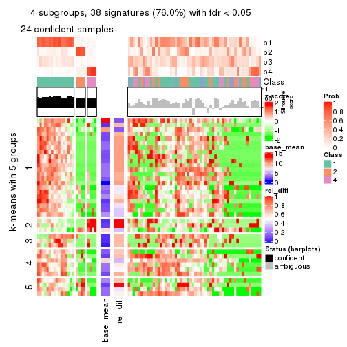
get_signatures(res, k = 5)
get_signatures(res, k = 6)
Signature heatmaps where rows are not scaled:
get_signatures(res, k = 2, scale_rows = FALSE)

get_signatures(res, k = 3, scale_rows = FALSE)
get_signatures(res, k = 4, scale_rows = FALSE)
get_signatures(res, k = 5, scale_rows = FALSE)

get_signatures(res, k = 6, scale_rows = FALSE)
Compare the overlap of signatures from different k:
compare_signatures(res)
get_signature() returns a data frame invisibly. TO get the list of signatures, the function
call should be assigned to a variable explicitly. In following code, if plot argument is set
to FALSE, no heatmap is plotted while only the differential analysis is performed.
# code only for demonstration
tb = get_signature(res, k = ..., plot = FALSE)
An example of the output of tb is:
#> which_row fdr mean_1 mean_2 scaled_mean_1 scaled_mean_2 km
#> 1 38 0.042760348 8.373488 9.131774 -0.5533452 0.5164555 1
#> 2 40 0.018707592 7.106213 8.469186 -0.6173731 0.5762149 1
#> 3 55 0.019134737 10.221463 11.207825 -0.6159697 0.5749050 1
#> 4 59 0.006059896 5.921854 7.869574 -0.6899429 0.6439467 1
#> 5 60 0.018055526 8.928898 10.211722 -0.6204761 0.5791110 1
#> 6 98 0.009384629 15.714769 14.887706 0.6635654 -0.6193277 2
...
The columns in tb are:
which_row: row indices corresponding to the input matrix.fdr: FDR for the differential test. mean_x: The mean value in group x.scaled_mean_x: The mean value in group x after rows are scaled.km: Row groups if k-means clustering is applied to rows.UMAP plot which shows how samples are separated.
dimension_reduction(res, k = 2, method = "UMAP")
dimension_reduction(res, k = 3, method = "UMAP")
dimension_reduction(res, k = 4, method = "UMAP")
dimension_reduction(res, k = 5, method = "UMAP")
dimension_reduction(res, k = 6, method = "UMAP")
Following heatmap shows how subgroups are split when increasing k:
collect_classes(res)
If matrix rows can be associated to genes, consider to use functional_enrichment(res,
...) to perform function enrichment for the signature genes. See this vignette for more detailed explanations.
The object with results only for a single top-value method and a single partition method can be extracted as:
res = res_list["MAD", "hclust"]
# you can also extract it by
# res = res_list["MAD:hclust"]
A summary of res and all the functions that can be applied to it:
res
#> A 'ConsensusPartition' object with k = 2, 3, 4, 5, 6.
#> On a matrix with 50 rows and 78 columns.
#> Top rows (5, 10, 15, 20, 25) are extracted by 'MAD' method.
#> Subgroups are detected by 'hclust' method.
#> Performed in total 1250 partitions by row resampling.
#> Best k for subgroups seems to be 2.
#>
#> Following methods can be applied to this 'ConsensusPartition' object:
#> [1] "cola_report" "collect_classes" "collect_plots"
#> [4] "collect_stats" "colnames" "compare_signatures"
#> [7] "consensus_heatmap" "dimension_reduction" "functional_enrichment"
#> [10] "get_anno_col" "get_anno" "get_classes"
#> [13] "get_consensus" "get_matrix" "get_membership"
#> [16] "get_param" "get_signatures" "get_stats"
#> [19] "is_best_k" "is_stable_k" "membership_heatmap"
#> [22] "ncol" "nrow" "plot_ecdf"
#> [25] "rownames" "select_partition_number" "show"
#> [28] "suggest_best_k" "test_to_known_factors"
collect_plots() function collects all the plots made from res for all k (number of partitions)
into one single page to provide an easy and fast comparison between different k.
collect_plots(res)
The plots are:
k and the heatmap of
predicted classes for each k.k.k.k.All the plots in panels can be made by individual functions and they are plotted later in this section.
select_partition_number() produces several plots showing different
statistics for choosing “optimized” k. There are following statistics:
k;k, the area increased is defined as \(A_k - A_{k-1}\).The detailed explanations of these statistics can be found in the cola vignette.
Generally speaking, lower PAC score, higher mean silhouette score or higher
concordance corresponds to better partition. Rand index and Jaccard index
measure how similar the current partition is compared to partition with k-1.
If they are too similar, we won't accept k is better than k-1.
select_partition_number(res)
The numeric values for all these statistics can be obtained by get_stats().
get_stats(res)
#> k 1-PAC mean_silhouette concordance area_increased Rand Jaccard
#> 2 2 0.121 0.653 0.811 0.4636 0.494 0.494
#> 3 3 0.239 0.479 0.731 0.3111 0.857 0.732
#> 4 4 0.374 0.427 0.692 0.1313 0.910 0.798
#> 5 5 0.456 0.458 0.664 0.0555 0.981 0.948
#> 6 6 0.503 0.370 0.646 0.0435 0.943 0.844
suggest_best_k() suggests the best \(k\) based on these statistics. The rules are as follows:
suggest_best_k(res)
#> [1] 2
Following shows the table of the partitions (You need to click the show/hide
code output link to see it). The membership matrix (columns with name p*)
is inferred by
clue::cl_consensus()
function with the SE method. Basically the value in the membership matrix
represents the probability to belong to a certain group. The finall class
label for an item is determined with the group with highest probability it
belongs to.
In get_classes() function, the entropy is calculated from the membership
matrix and the silhouette score is calculated from the consensus matrix.
cbind(get_classes(res, k = 2), get_membership(res, k = 2))
#> class entropy silhouette p1 p2
#> SRR764980 2 0.6438 0.7578 0.164 0.836
#> SRR764981 2 0.9732 0.3503 0.404 0.596
#> SRR764982 2 0.4022 0.7536 0.080 0.920
#> SRR764983 1 0.0000 0.7505 1.000 0.000
#> SRR764984 1 0.9460 0.4715 0.636 0.364
#> SRR764985 2 0.6438 0.7578 0.164 0.836
#> SRR764986 2 0.4161 0.7688 0.084 0.916
#> SRR764987 2 0.4161 0.7688 0.084 0.916
#> SRR764988 2 0.9358 0.4087 0.352 0.648
#> SRR764989 1 0.7056 0.7456 0.808 0.192
#> SRR764990 2 0.9881 0.2681 0.436 0.564
#> SRR764991 1 0.9491 0.4938 0.632 0.368
#> SRR764992 2 0.7815 0.6943 0.232 0.768
#> SRR764993 2 0.6712 0.7058 0.176 0.824
#> SRR764994 1 0.4562 0.7892 0.904 0.096
#> SRR764995 2 0.4815 0.7714 0.104 0.896
#> SRR764996 2 0.9044 0.5808 0.320 0.680
#> SRR764997 2 0.9866 0.1986 0.432 0.568
#> SRR764998 1 0.9635 0.3520 0.612 0.388
#> SRR764999 1 0.7745 0.7143 0.772 0.228
#> SRR765000 2 0.9087 0.5106 0.324 0.676
#> SRR765001 2 0.5408 0.7691 0.124 0.876
#> SRR765002 2 0.4161 0.7688 0.084 0.916
#> SRR765003 1 0.7528 0.6519 0.784 0.216
#> SRR765004 2 0.5408 0.7361 0.124 0.876
#> SRR765005 1 0.8713 0.6329 0.708 0.292
#> SRR765006 2 0.3431 0.7509 0.064 0.936
#> SRR765007 2 0.7883 0.6826 0.236 0.764
#> SRR765008 2 0.2603 0.7531 0.044 0.956
#> SRR765009 2 0.2778 0.7543 0.048 0.952
#> SRR765010 2 0.5408 0.7691 0.124 0.876
#> SRR765011 1 0.2423 0.7384 0.960 0.040
#> SRR765012 1 0.7056 0.7456 0.808 0.192
#> SRR765013 2 0.4431 0.7688 0.092 0.908
#> SRR765014 1 0.7056 0.6961 0.808 0.192
#> SRR765015 1 0.8081 0.6821 0.752 0.248
#> SRR765016 1 0.4298 0.7900 0.912 0.088
#> SRR765017 1 0.9248 0.5228 0.660 0.340
#> SRR765018 1 0.8443 0.6518 0.728 0.272
#> SRR765020 1 0.4161 0.7384 0.916 0.084
#> SRR765021 1 0.8207 0.6715 0.744 0.256
#> SRR765022 1 0.9988 0.2761 0.520 0.480
#> SRR765023 1 0.0938 0.7566 0.988 0.012
#> SRR765024 1 0.4298 0.7900 0.912 0.088
#> SRR765025 2 0.2603 0.7531 0.044 0.956
#> SRR765026 1 0.7056 0.7449 0.808 0.192
#> SRR765027 1 0.4298 0.7900 0.912 0.088
#> SRR765028 2 0.2778 0.7543 0.048 0.952
#> SRR765029 2 0.2778 0.7543 0.048 0.952
#> SRR765030 1 0.9933 0.2258 0.548 0.452
#> SRR765031 2 0.9866 0.1986 0.432 0.568
#> SRR765032 1 0.8713 0.5832 0.708 0.292
#> SRR765033 2 0.8016 0.6447 0.244 0.756
#> SRR765034 1 0.8081 0.6821 0.752 0.248
#> SRR765035 2 0.4431 0.7700 0.092 0.908
#> SRR765036 2 0.9954 0.2253 0.460 0.540
#> SRR765037 2 0.6887 0.7045 0.184 0.816
#> SRR765038 2 0.4690 0.7712 0.100 0.900
#> SRR765039 1 0.4298 0.7901 0.912 0.088
#> SRR765040 2 0.9087 0.5669 0.324 0.676
#> SRR765041 2 0.9795 0.3030 0.416 0.584
#> SRR765042 1 0.4298 0.7900 0.912 0.088
#> SRR765043 1 0.4298 0.7900 0.912 0.088
#> SRR765044 2 0.5946 0.7493 0.144 0.856
#> SRR765045 1 0.4562 0.7897 0.904 0.096
#> SRR765046 2 0.4161 0.7688 0.084 0.916
#> SRR765047 1 0.4298 0.7903 0.912 0.088
#> SRR765048 1 0.4298 0.7900 0.912 0.088
#> SRR765049 2 0.7674 0.7088 0.224 0.776
#> SRR765050 2 0.2603 0.7531 0.044 0.956
#> SRR765051 1 0.4431 0.7901 0.908 0.092
#> SRR765052 1 1.0000 0.0103 0.504 0.496
#> SRR765053 1 0.8763 0.6143 0.704 0.296
#> SRR765054 1 0.0000 0.7505 1.000 0.000
#> SRR765055 1 0.0672 0.7552 0.992 0.008
#> SRR765056 1 0.8081 0.6821 0.752 0.248
#> SRR765057 2 0.7056 0.7007 0.192 0.808
#> SRR765058 1 0.0938 0.7566 0.988 0.012
cbind(get_classes(res, k = 3), get_membership(res, k = 3))
#> class entropy silhouette p1 p2 p3
#> SRR764980 2 0.5756 0.4691 0.028 0.764 0.208
#> SRR764981 2 0.9579 -0.2008 0.368 0.432 0.200
#> SRR764982 2 0.6336 0.4689 0.064 0.756 0.180
#> SRR764983 1 0.2625 0.6984 0.916 0.000 0.084
#> SRR764984 1 0.8179 0.4417 0.640 0.208 0.152
#> SRR764985 2 0.5708 0.4703 0.028 0.768 0.204
#> SRR764986 2 0.0892 0.6150 0.000 0.980 0.020
#> SRR764987 2 0.1411 0.6141 0.000 0.964 0.036
#> SRR764988 3 0.9531 0.5211 0.324 0.208 0.468
#> SRR764989 1 0.4196 0.6767 0.864 0.024 0.112
#> SRR764990 2 0.9696 -0.0726 0.220 0.420 0.360
#> SRR764991 1 0.8287 0.4330 0.616 0.256 0.128
#> SRR764992 2 0.7101 0.4042 0.068 0.692 0.240
#> SRR764993 3 0.9160 0.5322 0.156 0.352 0.492
#> SRR764994 1 0.1453 0.7187 0.968 0.024 0.008
#> SRR764995 2 0.2902 0.5843 0.016 0.920 0.064
#> SRR764996 2 0.9596 -0.1409 0.212 0.452 0.336
#> SRR764997 1 0.9638 -0.3493 0.460 0.232 0.308
#> SRR764998 1 0.9714 0.1141 0.452 0.256 0.292
#> SRR764999 1 0.6363 0.6367 0.768 0.096 0.136
#> SRR765000 3 0.9914 0.5853 0.328 0.280 0.392
#> SRR765001 2 0.2902 0.6021 0.016 0.920 0.064
#> SRR765002 2 0.0000 0.6139 0.000 1.000 0.000
#> SRR765003 1 0.8155 0.4313 0.580 0.088 0.332
#> SRR765004 3 0.8937 0.4620 0.124 0.428 0.448
#> SRR765005 1 0.7745 0.5296 0.648 0.092 0.260
#> SRR765006 2 0.6678 0.4368 0.064 0.728 0.208
#> SRR765007 2 0.7085 0.3933 0.096 0.716 0.188
#> SRR765008 2 0.7587 0.1667 0.072 0.640 0.288
#> SRR765009 2 0.6586 0.4180 0.056 0.728 0.216
#> SRR765010 2 0.2804 0.6033 0.016 0.924 0.060
#> SRR765011 1 0.3879 0.6752 0.848 0.000 0.152
#> SRR765012 1 0.4196 0.6767 0.864 0.024 0.112
#> SRR765013 2 0.0983 0.6161 0.004 0.980 0.016
#> SRR765014 1 0.6264 0.5822 0.716 0.028 0.256
#> SRR765015 1 0.5892 0.6168 0.796 0.100 0.104
#> SRR765016 1 0.1031 0.7185 0.976 0.024 0.000
#> SRR765017 1 0.9178 0.3431 0.540 0.220 0.240
#> SRR765018 1 0.6693 0.5841 0.748 0.104 0.148
#> SRR765020 1 0.5060 0.6745 0.836 0.064 0.100
#> SRR765021 1 0.6037 0.6110 0.788 0.100 0.112
#> SRR765022 1 0.9322 0.1557 0.504 0.192 0.304
#> SRR765023 1 0.3112 0.6972 0.900 0.004 0.096
#> SRR765024 1 0.1031 0.7185 0.976 0.024 0.000
#> SRR765025 2 0.5524 0.5154 0.040 0.796 0.164
#> SRR765026 1 0.4280 0.6738 0.856 0.020 0.124
#> SRR765027 1 0.1031 0.7185 0.976 0.024 0.000
#> SRR765028 2 0.5581 0.5076 0.040 0.792 0.168
#> SRR765029 2 0.5466 0.5188 0.040 0.800 0.160
#> SRR765030 1 0.8652 0.1243 0.492 0.104 0.404
#> SRR765031 1 0.9638 -0.3493 0.460 0.232 0.308
#> SRR765032 1 0.8055 0.3721 0.612 0.096 0.292
#> SRR765033 3 0.9579 0.5762 0.200 0.368 0.432
#> SRR765034 1 0.5892 0.6168 0.796 0.100 0.104
#> SRR765035 2 0.5998 0.5081 0.084 0.788 0.128
#> SRR765036 1 0.9853 -0.1771 0.388 0.252 0.360
#> SRR765037 3 0.9172 0.6306 0.180 0.296 0.524
#> SRR765038 2 0.2063 0.6146 0.008 0.948 0.044
#> SRR765039 1 0.1315 0.7181 0.972 0.020 0.008
#> SRR765040 2 0.8392 0.1375 0.236 0.616 0.148
#> SRR765041 2 0.9408 -0.0413 0.316 0.488 0.196
#> SRR765042 1 0.1031 0.7185 0.976 0.024 0.000
#> SRR765043 1 0.1031 0.7185 0.976 0.024 0.000
#> SRR765044 2 0.6039 0.4456 0.108 0.788 0.104
#> SRR765045 1 0.1289 0.7181 0.968 0.032 0.000
#> SRR765046 2 0.0592 0.6145 0.000 0.988 0.012
#> SRR765047 1 0.1129 0.7184 0.976 0.020 0.004
#> SRR765048 1 0.1031 0.7185 0.976 0.024 0.000
#> SRR765049 2 0.6258 0.4918 0.052 0.752 0.196
#> SRR765050 2 0.5637 0.5054 0.040 0.788 0.172
#> SRR765051 1 0.1267 0.7185 0.972 0.024 0.004
#> SRR765052 1 0.9964 -0.1071 0.372 0.328 0.300
#> SRR765053 1 0.6721 0.5716 0.748 0.136 0.116
#> SRR765054 1 0.2625 0.6984 0.916 0.000 0.084
#> SRR765055 1 0.2772 0.7003 0.916 0.004 0.080
#> SRR765056 1 0.5892 0.6168 0.796 0.100 0.104
#> SRR765057 3 0.9342 0.6440 0.180 0.336 0.484
#> SRR765058 1 0.3112 0.6972 0.900 0.004 0.096
cbind(get_classes(res, k = 4), get_membership(res, k = 4))
#> class entropy silhouette p1 p2 p3 p4
#> SRR764980 2 0.5913 0.5514 0.000 0.696 0.180 0.124
#> SRR764981 1 0.9412 -0.3946 0.348 0.344 0.124 0.184
#> SRR764982 2 0.6328 0.5875 0.016 0.660 0.252 0.072
#> SRR764983 1 0.3196 0.5568 0.856 0.000 0.008 0.136
#> SRR764984 1 0.8329 0.0529 0.544 0.092 0.236 0.128
#> SRR764985 2 0.5874 0.5524 0.000 0.700 0.176 0.124
#> SRR764986 2 0.1584 0.6841 0.000 0.952 0.036 0.012
#> SRR764987 2 0.1888 0.6844 0.000 0.940 0.044 0.016
#> SRR764988 3 0.7686 0.4167 0.220 0.044 0.588 0.148
#> SRR764989 1 0.2831 0.5813 0.876 0.004 0.000 0.120
#> SRR764990 2 0.9426 -0.2068 0.168 0.376 0.140 0.316
#> SRR764991 1 0.7770 0.0362 0.600 0.196 0.064 0.140
#> SRR764992 2 0.7007 0.4602 0.016 0.596 0.108 0.280
#> SRR764993 3 0.8693 0.4422 0.108 0.172 0.520 0.200
#> SRR764994 1 0.0657 0.6323 0.984 0.004 0.000 0.012
#> SRR764995 2 0.2521 0.6645 0.000 0.912 0.024 0.064
#> SRR764996 2 0.9541 -0.1692 0.136 0.348 0.196 0.320
#> SRR764997 3 0.7748 0.3921 0.348 0.064 0.516 0.072
#> SRR764998 4 0.9277 0.4583 0.328 0.220 0.092 0.360
#> SRR764999 1 0.6347 0.3730 0.708 0.052 0.064 0.176
#> SRR765000 3 0.7624 0.5254 0.212 0.092 0.612 0.084
#> SRR765001 2 0.3850 0.6587 0.000 0.840 0.044 0.116
#> SRR765002 2 0.0524 0.6809 0.000 0.988 0.004 0.008
#> SRR765003 4 0.7322 0.3654 0.376 0.020 0.096 0.508
#> SRR765004 3 0.6608 0.4583 0.052 0.212 0.676 0.060
#> SRR765005 1 0.7123 -0.0172 0.580 0.052 0.052 0.316
#> SRR765006 2 0.5881 0.5669 0.000 0.676 0.240 0.084
#> SRR765007 2 0.6945 0.4739 0.072 0.652 0.056 0.220
#> SRR765008 2 0.6711 0.1537 0.028 0.476 0.460 0.036
#> SRR765009 2 0.6850 0.5227 0.024 0.612 0.284 0.080
#> SRR765010 2 0.3877 0.6606 0.000 0.840 0.048 0.112
#> SRR765011 1 0.4464 0.4857 0.768 0.000 0.024 0.208
#> SRR765012 1 0.2944 0.5776 0.868 0.004 0.000 0.128
#> SRR765013 2 0.1811 0.6850 0.004 0.948 0.028 0.020
#> SRR765014 1 0.6275 0.0902 0.596 0.000 0.076 0.328
#> SRR765015 1 0.5102 0.4389 0.716 0.016 0.256 0.012
#> SRR765016 1 0.0188 0.6333 0.996 0.004 0.000 0.000
#> SRR765017 1 0.8170 -0.2101 0.496 0.196 0.032 0.276
#> SRR765018 1 0.5384 0.4740 0.744 0.020 0.196 0.040
#> SRR765020 1 0.5274 0.4698 0.768 0.064 0.016 0.152
#> SRR765021 1 0.4644 0.5059 0.784 0.020 0.180 0.016
#> SRR765022 1 0.8885 -0.0248 0.476 0.108 0.264 0.152
#> SRR765023 1 0.3498 0.5378 0.832 0.000 0.008 0.160
#> SRR765024 1 0.0188 0.6333 0.996 0.004 0.000 0.000
#> SRR765025 2 0.4501 0.6293 0.000 0.764 0.212 0.024
#> SRR765026 1 0.3289 0.5710 0.852 0.004 0.004 0.140
#> SRR765027 1 0.0188 0.6333 0.996 0.004 0.000 0.000
#> SRR765028 2 0.4808 0.6204 0.000 0.736 0.236 0.028
#> SRR765029 2 0.5160 0.6352 0.000 0.748 0.180 0.072
#> SRR765030 1 0.8347 -0.1784 0.456 0.028 0.252 0.264
#> SRR765031 3 0.7748 0.3921 0.348 0.064 0.516 0.072
#> SRR765032 1 0.8739 -0.2524 0.468 0.076 0.172 0.284
#> SRR765033 3 0.8049 0.4762 0.104 0.172 0.592 0.132
#> SRR765034 1 0.5321 0.4322 0.708 0.016 0.256 0.020
#> SRR765035 2 0.6182 0.6280 0.044 0.724 0.156 0.076
#> SRR765036 4 0.9698 0.2909 0.232 0.144 0.300 0.324
#> SRR765037 3 0.6646 0.5515 0.096 0.116 0.708 0.080
#> SRR765038 2 0.2667 0.6842 0.008 0.912 0.060 0.020
#> SRR765039 1 0.0712 0.6336 0.984 0.004 0.008 0.004
#> SRR765040 2 0.8468 0.3025 0.140 0.556 0.160 0.144
#> SRR765041 2 0.8828 -0.2132 0.272 0.436 0.060 0.232
#> SRR765042 1 0.0188 0.6333 0.996 0.004 0.000 0.000
#> SRR765043 1 0.0188 0.6333 0.996 0.004 0.000 0.000
#> SRR765044 2 0.6077 0.5590 0.044 0.736 0.136 0.084
#> SRR765045 1 0.0469 0.6325 0.988 0.012 0.000 0.000
#> SRR765046 2 0.1174 0.6824 0.000 0.968 0.012 0.020
#> SRR765047 1 0.0564 0.6336 0.988 0.004 0.004 0.004
#> SRR765048 1 0.0188 0.6333 0.996 0.004 0.000 0.000
#> SRR765049 2 0.6641 0.5427 0.012 0.644 0.112 0.232
#> SRR765050 2 0.5240 0.6325 0.000 0.740 0.188 0.072
#> SRR765051 1 0.0895 0.6307 0.976 0.004 0.020 0.000
#> SRR765052 1 0.8743 -0.4421 0.336 0.292 0.036 0.336
#> SRR765053 1 0.5997 0.3712 0.660 0.032 0.284 0.024
#> SRR765054 1 0.3196 0.5568 0.856 0.000 0.008 0.136
#> SRR765055 1 0.3196 0.5551 0.856 0.000 0.008 0.136
#> SRR765056 1 0.5321 0.4322 0.708 0.016 0.256 0.020
#> SRR765057 3 0.6437 0.5497 0.108 0.168 0.696 0.028
#> SRR765058 1 0.3958 0.5329 0.816 0.000 0.024 0.160
cbind(get_classes(res, k = 5), get_membership(res, k = 5))
#> class entropy silhouette p1 p2 p3 p4 p5
#> SRR764980 2 0.6344 0.4537 0.000 0.648 0.140 0.072 0.140
#> SRR764981 1 0.9415 -0.3464 0.324 0.256 0.076 0.176 0.168
#> SRR764982 2 0.6498 0.5785 0.008 0.608 0.200 0.024 0.160
#> SRR764983 1 0.3047 0.6382 0.832 0.000 0.004 0.160 0.004
#> SRR764984 1 0.7969 0.3192 0.524 0.076 0.216 0.136 0.048
#> SRR764985 2 0.6306 0.4560 0.000 0.652 0.140 0.072 0.136
#> SRR764986 2 0.1710 0.6402 0.000 0.940 0.016 0.004 0.040
#> SRR764987 2 0.1948 0.6427 0.000 0.932 0.036 0.008 0.024
#> SRR764988 3 0.7098 0.4388 0.204 0.004 0.552 0.188 0.052
#> SRR764989 1 0.2642 0.6615 0.880 0.000 0.008 0.008 0.104
#> SRR764990 4 0.9016 0.3071 0.108 0.320 0.092 0.356 0.124
#> SRR764991 1 0.7290 0.2861 0.576 0.184 0.032 0.164 0.044
#> SRR764992 2 0.7400 0.2818 0.012 0.556 0.104 0.216 0.112
#> SRR764993 3 0.7769 0.3133 0.060 0.104 0.508 0.048 0.280
#> SRR764994 1 0.0609 0.6954 0.980 0.000 0.000 0.020 0.000
#> SRR764995 2 0.2408 0.6065 0.000 0.892 0.004 0.008 0.096
#> SRR764996 4 0.8867 0.2895 0.036 0.280 0.104 0.316 0.264
#> SRR764997 3 0.5673 0.4582 0.332 0.016 0.604 0.016 0.032
#> SRR764998 4 0.8321 0.4135 0.244 0.200 0.044 0.448 0.064
#> SRR764999 1 0.5923 0.5097 0.676 0.040 0.028 0.216 0.040
#> SRR765000 3 0.5632 0.5267 0.188 0.032 0.708 0.028 0.044
#> SRR765001 2 0.4015 0.6045 0.000 0.828 0.056 0.068 0.048
#> SRR765002 2 0.0451 0.6387 0.000 0.988 0.000 0.008 0.004
#> SRR765003 4 0.6682 0.2474 0.256 0.008 0.040 0.584 0.112
#> SRR765004 3 0.6840 0.3867 0.036 0.132 0.608 0.024 0.200
#> SRR765005 1 0.6255 0.1717 0.516 0.036 0.024 0.400 0.024
#> SRR765006 2 0.6843 0.5356 0.000 0.572 0.072 0.116 0.240
#> SRR765007 2 0.6890 0.2236 0.028 0.588 0.020 0.164 0.200
#> SRR765008 2 0.7384 0.1120 0.028 0.388 0.364 0.004 0.216
#> SRR765009 2 0.6759 0.4969 0.024 0.516 0.164 0.000 0.296
#> SRR765010 2 0.4090 0.6062 0.000 0.824 0.056 0.064 0.056
#> SRR765011 1 0.4767 0.5826 0.732 0.000 0.004 0.180 0.084
#> SRR765012 1 0.2856 0.6593 0.872 0.000 0.008 0.016 0.104
#> SRR765013 2 0.1728 0.6402 0.000 0.940 0.004 0.020 0.036
#> SRR765014 1 0.5637 0.1916 0.508 0.000 0.056 0.428 0.008
#> SRR765015 1 0.4558 0.5052 0.712 0.000 0.252 0.020 0.016
#> SRR765016 1 0.0000 0.6956 1.000 0.000 0.000 0.000 0.000
#> SRR765017 1 0.8137 -0.0271 0.448 0.144 0.008 0.248 0.152
#> SRR765018 1 0.4457 0.5480 0.740 0.000 0.208 0.048 0.004
#> SRR765020 1 0.4820 0.5730 0.740 0.056 0.008 0.188 0.008
#> SRR765021 1 0.3866 0.5674 0.780 0.000 0.192 0.024 0.004
#> SRR765022 1 0.8090 0.1087 0.472 0.080 0.292 0.048 0.108
#> SRR765023 1 0.3123 0.6293 0.812 0.000 0.004 0.184 0.000
#> SRR765024 1 0.0000 0.6956 1.000 0.000 0.000 0.000 0.000
#> SRR765025 2 0.5040 0.6229 0.000 0.724 0.132 0.008 0.136
#> SRR765026 1 0.3241 0.6554 0.856 0.000 0.012 0.028 0.104
#> SRR765027 1 0.0000 0.6956 1.000 0.000 0.000 0.000 0.000
#> SRR765028 2 0.5327 0.6044 0.000 0.664 0.120 0.000 0.216
#> SRR765029 2 0.4914 0.6095 0.000 0.676 0.064 0.000 0.260
#> SRR765030 1 0.8485 -0.0961 0.372 0.004 0.216 0.232 0.176
#> SRR765031 3 0.5673 0.4582 0.332 0.016 0.604 0.016 0.032
#> SRR765032 1 0.8652 -0.0653 0.416 0.076 0.108 0.300 0.100
#> SRR765033 3 0.7671 0.4106 0.092 0.136 0.592 0.092 0.088
#> SRR765034 1 0.4727 0.4994 0.704 0.000 0.252 0.028 0.016
#> SRR765035 2 0.6005 0.6054 0.004 0.656 0.084 0.040 0.216
#> SRR765036 4 0.8689 0.2577 0.112 0.096 0.180 0.480 0.132
#> SRR765037 3 0.7202 0.4912 0.080 0.056 0.628 0.128 0.108
#> SRR765038 2 0.2753 0.6478 0.000 0.856 0.008 0.000 0.136
#> SRR765039 1 0.0451 0.6963 0.988 0.000 0.008 0.004 0.000
#> SRR765040 2 0.8546 0.1452 0.088 0.452 0.092 0.100 0.268
#> SRR765041 2 0.8623 -0.3265 0.188 0.380 0.024 0.284 0.124
#> SRR765042 1 0.0000 0.6956 1.000 0.000 0.000 0.000 0.000
#> SRR765043 1 0.0000 0.6956 1.000 0.000 0.000 0.000 0.000
#> SRR765044 2 0.5892 0.4831 0.000 0.680 0.056 0.168 0.096
#> SRR765045 1 0.0290 0.6959 0.992 0.000 0.000 0.000 0.008
#> SRR765046 2 0.1124 0.6389 0.000 0.960 0.000 0.004 0.036
#> SRR765047 1 0.0324 0.6962 0.992 0.000 0.004 0.004 0.000
#> SRR765048 1 0.0000 0.6956 1.000 0.000 0.000 0.000 0.000
#> SRR765049 2 0.7024 0.4068 0.000 0.572 0.088 0.140 0.200
#> SRR765050 2 0.5098 0.6207 0.000 0.696 0.092 0.004 0.208
#> SRR765051 1 0.0671 0.6952 0.980 0.000 0.004 0.000 0.016
#> SRR765052 1 0.8779 -0.3855 0.292 0.204 0.008 0.264 0.232
#> SRR765053 1 0.5500 0.4477 0.656 0.012 0.276 0.028 0.028
#> SRR765054 1 0.3047 0.6382 0.832 0.000 0.004 0.160 0.004
#> SRR765055 1 0.3047 0.6372 0.832 0.000 0.004 0.160 0.004
#> SRR765056 1 0.4727 0.4994 0.704 0.000 0.252 0.028 0.016
#> SRR765057 3 0.6571 0.4955 0.088 0.120 0.668 0.024 0.100
#> SRR765058 1 0.3612 0.6260 0.796 0.000 0.004 0.184 0.016
cbind(get_classes(res, k = 6), get_membership(res, k = 6))
#> class entropy silhouette p1 p2 p3 p4 p5 p6
#> SRR764980 5 0.6191 0.3551 0.000 0.140 0.032 0.176 0.616 0.036
#> SRR764981 1 0.9268 -0.3742 0.316 0.100 0.060 0.168 0.232 0.124
#> SRR764982 5 0.6318 0.2299 0.004 0.284 0.132 0.004 0.536 0.040
#> SRR764983 1 0.3640 0.5942 0.784 0.000 0.024 0.016 0.000 0.176
#> SRR764984 1 0.7821 0.1732 0.464 0.016 0.248 0.136 0.052 0.084
#> SRR764985 5 0.6095 0.3648 0.000 0.132 0.032 0.172 0.628 0.036
#> SRR764986 5 0.1644 0.5642 0.000 0.052 0.000 0.012 0.932 0.004
#> SRR764987 5 0.2183 0.5630 0.000 0.052 0.020 0.012 0.912 0.004
#> SRR764988 3 0.7454 0.3891 0.188 0.088 0.492 0.036 0.004 0.192
#> SRR764989 1 0.2773 0.6391 0.876 0.044 0.008 0.068 0.000 0.004
#> SRR764990 4 0.6953 0.1941 0.076 0.032 0.040 0.556 0.252 0.044
#> SRR764991 1 0.7453 0.1669 0.536 0.016 0.040 0.172 0.128 0.108
#> SRR764992 5 0.6995 0.3126 0.000 0.052 0.072 0.108 0.540 0.228
#> SRR764993 3 0.8039 -0.0185 0.044 0.292 0.392 0.180 0.072 0.020
#> SRR764994 1 0.0622 0.6826 0.980 0.000 0.008 0.000 0.000 0.012
#> SRR764995 5 0.2544 0.5266 0.000 0.004 0.000 0.140 0.852 0.004
#> SRR764996 4 0.8308 -0.2017 0.012 0.212 0.060 0.412 0.156 0.148
#> SRR764997 3 0.4701 0.4651 0.288 0.032 0.660 0.004 0.008 0.008
#> SRR764998 4 0.8751 -0.0961 0.188 0.092 0.028 0.332 0.088 0.272
#> SRR764999 1 0.6459 0.3916 0.620 0.016 0.044 0.120 0.028 0.172
#> SRR765000 3 0.4562 0.4885 0.148 0.052 0.760 0.016 0.012 0.012
#> SRR765001 5 0.3857 0.5495 0.000 0.020 0.040 0.040 0.824 0.076
#> SRR765002 5 0.0508 0.5705 0.000 0.012 0.000 0.004 0.984 0.000
#> SRR765003 6 0.4948 0.2738 0.164 0.008 0.024 0.072 0.008 0.724
#> SRR765004 2 0.6362 -0.2116 0.016 0.508 0.360 0.068 0.024 0.024
#> SRR765005 1 0.6995 -0.0216 0.460 0.008 0.028 0.160 0.028 0.316
#> SRR765006 5 0.6938 0.1737 0.000 0.304 0.056 0.028 0.480 0.132
#> SRR765007 5 0.6796 0.2478 0.004 0.092 0.036 0.220 0.568 0.080
#> SRR765008 2 0.6558 0.3591 0.008 0.476 0.204 0.004 0.288 0.020
#> SRR765009 2 0.5339 -0.0600 0.008 0.552 0.056 0.004 0.372 0.008
#> SRR765010 5 0.3884 0.5519 0.000 0.024 0.040 0.040 0.824 0.072
#> SRR765011 1 0.5688 0.4754 0.652 0.012 0.064 0.072 0.000 0.200
#> SRR765012 1 0.2985 0.6369 0.868 0.044 0.008 0.068 0.000 0.012
#> SRR765013 5 0.1666 0.5716 0.000 0.036 0.000 0.020 0.936 0.008
#> SRR765014 1 0.6545 0.0282 0.448 0.008 0.056 0.112 0.000 0.376
#> SRR765015 1 0.3895 0.4917 0.696 0.000 0.284 0.016 0.000 0.004
#> SRR765016 1 0.0000 0.6833 1.000 0.000 0.000 0.000 0.000 0.000
#> SRR765017 4 0.6456 0.1562 0.404 0.028 0.012 0.464 0.036 0.056
#> SRR765018 1 0.4417 0.5334 0.720 0.004 0.220 0.032 0.000 0.024
#> SRR765020 1 0.4863 0.5268 0.708 0.000 0.008 0.104 0.012 0.168
#> SRR765021 1 0.3388 0.5580 0.764 0.004 0.224 0.004 0.000 0.004
#> SRR765022 1 0.7623 0.0502 0.452 0.052 0.280 0.156 0.040 0.020
#> SRR765023 1 0.3691 0.5870 0.768 0.000 0.004 0.036 0.000 0.192
#> SRR765024 1 0.0000 0.6833 1.000 0.000 0.000 0.000 0.000 0.000
#> SRR765025 5 0.4960 0.3007 0.000 0.300 0.048 0.008 0.632 0.012
#> SRR765026 1 0.3263 0.6327 0.856 0.044 0.012 0.068 0.000 0.020
#> SRR765027 1 0.0000 0.6833 1.000 0.000 0.000 0.000 0.000 0.000
#> SRR765028 5 0.4923 0.2226 0.000 0.400 0.048 0.000 0.544 0.008
#> SRR765029 5 0.4172 0.2680 0.000 0.424 0.008 0.000 0.564 0.004
#> SRR765030 1 0.7779 -0.1924 0.360 0.108 0.184 0.316 0.000 0.032
#> SRR765031 3 0.4701 0.4651 0.288 0.032 0.660 0.004 0.008 0.008
#> SRR765032 1 0.8118 -0.0891 0.384 0.212 0.064 0.112 0.000 0.228
#> SRR765033 3 0.8483 0.2164 0.080 0.200 0.456 0.072 0.108 0.084
#> SRR765034 1 0.4097 0.4855 0.688 0.000 0.284 0.016 0.000 0.012
#> SRR765035 5 0.4985 0.2756 0.000 0.392 0.008 0.004 0.552 0.044
#> SRR765036 6 0.8951 0.2347 0.076 0.144 0.100 0.224 0.076 0.380
#> SRR765037 3 0.8058 0.2900 0.072 0.224 0.472 0.060 0.040 0.132
#> SRR765038 5 0.3319 0.5297 0.000 0.176 0.004 0.004 0.800 0.016
#> SRR765039 1 0.0405 0.6842 0.988 0.000 0.008 0.000 0.000 0.004
#> SRR765040 5 0.9074 0.0381 0.056 0.104 0.168 0.172 0.376 0.124
#> SRR765041 4 0.7995 0.2529 0.156 0.060 0.008 0.396 0.296 0.084
#> SRR765042 1 0.0000 0.6833 1.000 0.000 0.000 0.000 0.000 0.000
#> SRR765043 1 0.0000 0.6833 1.000 0.000 0.000 0.000 0.000 0.000
#> SRR765044 5 0.5974 0.3533 0.000 0.044 0.056 0.060 0.644 0.196
#> SRR765045 1 0.0260 0.6833 0.992 0.000 0.008 0.000 0.000 0.000
#> SRR765046 5 0.1138 0.5719 0.000 0.012 0.000 0.024 0.960 0.004
#> SRR765047 1 0.0291 0.6838 0.992 0.000 0.004 0.000 0.000 0.004
#> SRR765048 1 0.0000 0.6833 1.000 0.000 0.000 0.000 0.000 0.000
#> SRR765049 5 0.7399 0.3360 0.000 0.144 0.060 0.184 0.516 0.096
#> SRR765050 5 0.4296 0.2958 0.000 0.372 0.004 0.008 0.608 0.008
#> SRR765051 1 0.0603 0.6825 0.980 0.000 0.004 0.016 0.000 0.000
#> SRR765052 4 0.8107 0.2045 0.244 0.048 0.064 0.456 0.132 0.056
#> SRR765053 1 0.4947 0.4291 0.632 0.008 0.312 0.024 0.008 0.016
#> SRR765054 1 0.3640 0.5942 0.784 0.000 0.024 0.016 0.000 0.176
#> SRR765055 1 0.3376 0.5971 0.792 0.000 0.004 0.024 0.000 0.180
#> SRR765056 1 0.4097 0.4855 0.688 0.000 0.284 0.016 0.000 0.012
#> SRR765057 3 0.7600 0.2076 0.076 0.284 0.476 0.060 0.084 0.020
#> SRR765058 1 0.3946 0.5824 0.752 0.000 0.004 0.052 0.000 0.192
Heatmaps for the consensus matrix. It visualizes the probability of two samples to be in a same group.
consensus_heatmap(res, k = 2)
consensus_heatmap(res, k = 3)
consensus_heatmap(res, k = 4)
consensus_heatmap(res, k = 5)
consensus_heatmap(res, k = 6)
Heatmaps for the membership of samples in all partitions to see how consistent they are:
membership_heatmap(res, k = 2)
membership_heatmap(res, k = 3)
membership_heatmap(res, k = 4)
membership_heatmap(res, k = 5)
membership_heatmap(res, k = 6)
As soon as we have had the classes for columns, we can look for signatures which are significantly different between classes which can be candidate marks for certain classes. Following are the heatmaps for signatures.
Signature heatmaps where rows are scaled:
get_signatures(res, k = 2)
get_signatures(res, k = 3)
get_signatures(res, k = 4)
get_signatures(res, k = 5)
get_signatures(res, k = 6)
Signature heatmaps where rows are not scaled:
get_signatures(res, k = 2, scale_rows = FALSE)
get_signatures(res, k = 3, scale_rows = FALSE)
get_signatures(res, k = 4, scale_rows = FALSE)
get_signatures(res, k = 5, scale_rows = FALSE)
get_signatures(res, k = 6, scale_rows = FALSE)
Compare the overlap of signatures from different k:
compare_signatures(res)
get_signature() returns a data frame invisibly. TO get the list of signatures, the function
call should be assigned to a variable explicitly. In following code, if plot argument is set
to FALSE, no heatmap is plotted while only the differential analysis is performed.
# code only for demonstration
tb = get_signature(res, k = ..., plot = FALSE)
An example of the output of tb is:
#> which_row fdr mean_1 mean_2 scaled_mean_1 scaled_mean_2 km
#> 1 38 0.042760348 8.373488 9.131774 -0.5533452 0.5164555 1
#> 2 40 0.018707592 7.106213 8.469186 -0.6173731 0.5762149 1
#> 3 55 0.019134737 10.221463 11.207825 -0.6159697 0.5749050 1
#> 4 59 0.006059896 5.921854 7.869574 -0.6899429 0.6439467 1
#> 5 60 0.018055526 8.928898 10.211722 -0.6204761 0.5791110 1
#> 6 98 0.009384629 15.714769 14.887706 0.6635654 -0.6193277 2
...
The columns in tb are:
which_row: row indices corresponding to the input matrix.fdr: FDR for the differential test. mean_x: The mean value in group x.scaled_mean_x: The mean value in group x after rows are scaled.km: Row groups if k-means clustering is applied to rows.UMAP plot which shows how samples are separated.
dimension_reduction(res, k = 2, method = "UMAP")
dimension_reduction(res, k = 3, method = "UMAP")
dimension_reduction(res, k = 4, method = "UMAP")
dimension_reduction(res, k = 5, method = "UMAP")
dimension_reduction(res, k = 6, method = "UMAP")
Following heatmap shows how subgroups are split when increasing k:
collect_classes(res)
If matrix rows can be associated to genes, consider to use functional_enrichment(res,
...) to perform function enrichment for the signature genes. See this vignette for more detailed explanations.
The object with results only for a single top-value method and a single partition method can be extracted as:
res = res_list["MAD", "kmeans"]
# you can also extract it by
# res = res_list["MAD:kmeans"]
A summary of res and all the functions that can be applied to it:
res
#> A 'ConsensusPartition' object with k = 2, 3, 4, 5, 6.
#> On a matrix with 50 rows and 78 columns.
#> Top rows (5, 10, 15, 20, 25) are extracted by 'MAD' method.
#> Subgroups are detected by 'kmeans' method.
#> Performed in total 1250 partitions by row resampling.
#> Best k for subgroups seems to be 2.
#>
#> Following methods can be applied to this 'ConsensusPartition' object:
#> [1] "cola_report" "collect_classes" "collect_plots"
#> [4] "collect_stats" "colnames" "compare_signatures"
#> [7] "consensus_heatmap" "dimension_reduction" "functional_enrichment"
#> [10] "get_anno_col" "get_anno" "get_classes"
#> [13] "get_consensus" "get_matrix" "get_membership"
#> [16] "get_param" "get_signatures" "get_stats"
#> [19] "is_best_k" "is_stable_k" "membership_heatmap"
#> [22] "ncol" "nrow" "plot_ecdf"
#> [25] "rownames" "select_partition_number" "show"
#> [28] "suggest_best_k" "test_to_known_factors"
collect_plots() function collects all the plots made from res for all k (number of partitions)
into one single page to provide an easy and fast comparison between different k.
collect_plots(res)
The plots are:
k and the heatmap of
predicted classes for each k.k.k.k.All the plots in panels can be made by individual functions and they are plotted later in this section.
select_partition_number() produces several plots showing different
statistics for choosing “optimized” k. There are following statistics:
k;k, the area increased is defined as \(A_k - A_{k-1}\).The detailed explanations of these statistics can be found in the cola vignette.
Generally speaking, lower PAC score, higher mean silhouette score or higher
concordance corresponds to better partition. Rand index and Jaccard index
measure how similar the current partition is compared to partition with k-1.
If they are too similar, we won't accept k is better than k-1.
select_partition_number(res)
The numeric values for all these statistics can be obtained by get_stats().
get_stats(res)
#> k 1-PAC mean_silhouette concordance area_increased Rand Jaccard
#> 2 2 0.655 0.832 0.928 0.4878 0.510 0.510
#> 3 3 0.442 0.649 0.771 0.2936 0.899 0.804
#> 4 4 0.469 0.495 0.725 0.1271 0.936 0.850
#> 5 5 0.497 0.354 0.649 0.0716 0.847 0.608
#> 6 6 0.538 0.382 0.625 0.0475 0.918 0.700
suggest_best_k() suggests the best \(k\) based on these statistics. The rules are as follows:
suggest_best_k(res)
#> [1] 2
Following shows the table of the partitions (You need to click the show/hide
code output link to see it). The membership matrix (columns with name p*)
is inferred by
clue::cl_consensus()
function with the SE method. Basically the value in the membership matrix
represents the probability to belong to a certain group. The finall class
label for an item is determined with the group with highest probability it
belongs to.
In get_classes() function, the entropy is calculated from the membership
matrix and the silhouette score is calculated from the consensus matrix.
cbind(get_classes(res, k = 2), get_membership(res, k = 2))
#> class entropy silhouette p1 p2
#> SRR764980 2 0.0672 0.90362 0.008 0.992
#> SRR764981 1 0.8207 0.64057 0.744 0.256
#> SRR764982 2 0.0000 0.90078 0.000 1.000
#> SRR764983 1 0.0000 0.93055 1.000 0.000
#> SRR764984 1 0.5408 0.82555 0.876 0.124
#> SRR764985 2 0.0672 0.90362 0.008 0.992
#> SRR764986 2 0.0672 0.90362 0.008 0.992
#> SRR764987 2 0.0672 0.90362 0.008 0.992
#> SRR764988 1 0.7950 0.68467 0.760 0.240
#> SRR764989 1 0.0000 0.93055 1.000 0.000
#> SRR764990 2 0.8861 0.57725 0.304 0.696
#> SRR764991 1 0.3584 0.88419 0.932 0.068
#> SRR764992 2 0.0672 0.90362 0.008 0.992
#> SRR764993 2 0.9286 0.51010 0.344 0.656
#> SRR764994 1 0.0000 0.93055 1.000 0.000
#> SRR764995 2 0.2423 0.88647 0.040 0.960
#> SRR764996 2 0.9044 0.56584 0.320 0.680
#> SRR764997 1 0.0376 0.92796 0.996 0.004
#> SRR764998 1 0.8608 0.58983 0.716 0.284
#> SRR764999 1 0.0000 0.93055 1.000 0.000
#> SRR765000 1 0.5946 0.81401 0.856 0.144
#> SRR765001 2 0.0672 0.90362 0.008 0.992
#> SRR765002 2 0.0672 0.90362 0.008 0.992
#> SRR765003 1 0.4022 0.87634 0.920 0.080
#> SRR765004 1 1.0000 -0.05706 0.504 0.496
#> SRR765005 1 0.0938 0.92428 0.988 0.012
#> SRR765006 2 0.0000 0.90078 0.000 1.000
#> SRR765007 2 0.2043 0.89278 0.032 0.968
#> SRR765008 2 0.0000 0.90078 0.000 1.000
#> SRR765009 2 0.4815 0.83999 0.104 0.896
#> SRR765010 2 0.0672 0.90362 0.008 0.992
#> SRR765011 1 0.0000 0.93055 1.000 0.000
#> SRR765012 1 0.0000 0.93055 1.000 0.000
#> SRR765013 2 0.0672 0.90362 0.008 0.992
#> SRR765014 1 0.0000 0.93055 1.000 0.000
#> SRR765015 1 0.0000 0.93055 1.000 0.000
#> SRR765016 1 0.0000 0.93055 1.000 0.000
#> SRR765017 1 0.3274 0.88935 0.940 0.060
#> SRR765018 1 0.0000 0.93055 1.000 0.000
#> SRR765020 1 0.0000 0.93055 1.000 0.000
#> SRR765021 1 0.0000 0.93055 1.000 0.000
#> SRR765022 1 0.4815 0.85392 0.896 0.104
#> SRR765023 1 0.0000 0.93055 1.000 0.000
#> SRR765024 1 0.0000 0.93055 1.000 0.000
#> SRR765025 2 0.0000 0.90078 0.000 1.000
#> SRR765026 1 0.0000 0.93055 1.000 0.000
#> SRR765027 1 0.0000 0.93055 1.000 0.000
#> SRR765028 2 0.0000 0.90078 0.000 1.000
#> SRR765029 2 0.0000 0.90078 0.000 1.000
#> SRR765030 1 0.0000 0.93055 1.000 0.000
#> SRR765031 1 0.0376 0.92796 0.996 0.004
#> SRR765032 1 0.2603 0.90463 0.956 0.044
#> SRR765033 2 0.7883 0.68909 0.236 0.764
#> SRR765034 1 0.3733 0.88018 0.928 0.072
#> SRR765035 2 0.3879 0.86159 0.076 0.924
#> SRR765036 1 0.9881 0.17552 0.564 0.436
#> SRR765037 2 0.9552 0.40033 0.376 0.624
#> SRR765038 2 0.0672 0.90362 0.008 0.992
#> SRR765039 1 0.0000 0.93055 1.000 0.000
#> SRR765040 2 0.8386 0.64546 0.268 0.732
#> SRR765041 2 0.4815 0.84217 0.104 0.896
#> SRR765042 1 0.0000 0.93055 1.000 0.000
#> SRR765043 1 0.0000 0.93055 1.000 0.000
#> SRR765044 2 0.0672 0.90362 0.008 0.992
#> SRR765045 1 0.0000 0.93055 1.000 0.000
#> SRR765046 2 0.0672 0.90362 0.008 0.992
#> SRR765047 1 0.0000 0.93055 1.000 0.000
#> SRR765048 1 0.0000 0.93055 1.000 0.000
#> SRR765049 2 0.0672 0.90362 0.008 0.992
#> SRR765050 2 0.0000 0.90078 0.000 1.000
#> SRR765051 1 0.0000 0.93055 1.000 0.000
#> SRR765052 1 0.9460 0.40247 0.636 0.364
#> SRR765053 1 0.0000 0.93055 1.000 0.000
#> SRR765054 1 0.0000 0.93055 1.000 0.000
#> SRR765055 1 0.0000 0.93055 1.000 0.000
#> SRR765056 1 0.0000 0.93055 1.000 0.000
#> SRR765057 2 1.0000 0.00079 0.496 0.504
#> SRR765058 1 0.0000 0.93055 1.000 0.000
cbind(get_classes(res, k = 3), get_membership(res, k = 3))
#> class entropy silhouette p1 p2 p3
#> SRR764980 2 0.3816 0.7346 0.000 0.852 0.148
#> SRR764981 1 0.8482 0.3028 0.616 0.200 0.184
#> SRR764982 2 0.4452 0.7830 0.000 0.808 0.192
#> SRR764983 1 0.3941 0.6988 0.844 0.000 0.156
#> SRR764984 1 0.7309 0.2965 0.552 0.032 0.416
#> SRR764985 2 0.3686 0.7420 0.000 0.860 0.140
#> SRR764986 2 0.0892 0.8280 0.000 0.980 0.020
#> SRR764987 2 0.0747 0.8311 0.000 0.984 0.016
#> SRR764988 1 0.8737 -0.1686 0.464 0.108 0.428
#> SRR764989 1 0.1860 0.7522 0.948 0.000 0.052
#> SRR764990 3 0.8991 0.3527 0.132 0.392 0.476
#> SRR764991 1 0.6447 0.6381 0.744 0.060 0.196
#> SRR764992 2 0.3038 0.7940 0.000 0.896 0.104
#> SRR764993 3 0.9245 0.4883 0.176 0.320 0.504
#> SRR764994 1 0.0000 0.7579 1.000 0.000 0.000
#> SRR764995 2 0.1337 0.8282 0.012 0.972 0.016
#> SRR764996 3 0.8737 0.5561 0.124 0.340 0.536
#> SRR764997 1 0.5327 0.5644 0.728 0.000 0.272
#> SRR764998 3 0.9264 0.3394 0.292 0.192 0.516
#> SRR764999 1 0.4002 0.7184 0.840 0.000 0.160
#> SRR765000 1 0.7123 0.3290 0.604 0.032 0.364
#> SRR765001 2 0.1289 0.8289 0.000 0.968 0.032
#> SRR765002 2 0.0237 0.8283 0.000 0.996 0.004
#> SRR765003 1 0.7841 0.4133 0.576 0.064 0.360
#> SRR765004 3 0.8578 0.6471 0.224 0.172 0.604
#> SRR765005 1 0.6264 0.6017 0.724 0.032 0.244
#> SRR765006 2 0.4755 0.7816 0.008 0.808 0.184
#> SRR765007 2 0.4068 0.7627 0.016 0.864 0.120
#> SRR765008 2 0.5254 0.6372 0.000 0.736 0.264
#> SRR765009 2 0.5698 0.7226 0.012 0.736 0.252
#> SRR765010 2 0.1031 0.8297 0.000 0.976 0.024
#> SRR765011 1 0.4842 0.6577 0.776 0.000 0.224
#> SRR765012 1 0.2448 0.7485 0.924 0.000 0.076
#> SRR765013 2 0.0424 0.8292 0.000 0.992 0.008
#> SRR765014 1 0.5882 0.5466 0.652 0.000 0.348
#> SRR765015 1 0.2448 0.7386 0.924 0.000 0.076
#> SRR765016 1 0.0000 0.7579 1.000 0.000 0.000
#> SRR765017 1 0.6794 0.5429 0.648 0.028 0.324
#> SRR765018 1 0.3941 0.6919 0.844 0.000 0.156
#> SRR765020 1 0.4750 0.6747 0.784 0.000 0.216
#> SRR765021 1 0.2537 0.7411 0.920 0.000 0.080
#> SRR765022 1 0.7424 0.3458 0.592 0.044 0.364
#> SRR765023 1 0.4178 0.6910 0.828 0.000 0.172
#> SRR765024 1 0.0424 0.7584 0.992 0.000 0.008
#> SRR765025 2 0.3340 0.8014 0.000 0.880 0.120
#> SRR765026 1 0.2165 0.7511 0.936 0.000 0.064
#> SRR765027 1 0.0747 0.7587 0.984 0.000 0.016
#> SRR765028 2 0.3879 0.7962 0.000 0.848 0.152
#> SRR765029 2 0.4346 0.7834 0.000 0.816 0.184
#> SRR765030 1 0.5254 0.6154 0.736 0.000 0.264
#> SRR765031 1 0.5254 0.5784 0.736 0.000 0.264
#> SRR765032 1 0.6811 0.3952 0.580 0.016 0.404
#> SRR765033 3 0.8343 0.5953 0.132 0.256 0.612
#> SRR765034 1 0.6229 0.6357 0.764 0.064 0.172
#> SRR765035 2 0.5728 0.7399 0.032 0.772 0.196
#> SRR765036 3 0.7821 0.5499 0.176 0.152 0.672
#> SRR765037 3 0.8950 0.6396 0.216 0.216 0.568
#> SRR765038 2 0.1411 0.8268 0.000 0.964 0.036
#> SRR765039 1 0.1753 0.7567 0.952 0.000 0.048
#> SRR765040 2 0.7213 0.4102 0.212 0.700 0.088
#> SRR765041 2 0.7507 0.3915 0.068 0.644 0.288
#> SRR765042 1 0.0592 0.7586 0.988 0.000 0.012
#> SRR765043 1 0.0237 0.7582 0.996 0.000 0.004
#> SRR765044 2 0.3272 0.7951 0.004 0.892 0.104
#> SRR765045 1 0.0000 0.7579 1.000 0.000 0.000
#> SRR765046 2 0.0000 0.8283 0.000 1.000 0.000
#> SRR765047 1 0.0424 0.7584 0.992 0.000 0.008
#> SRR765048 1 0.0000 0.7579 1.000 0.000 0.000
#> SRR765049 2 0.4291 0.7328 0.000 0.820 0.180
#> SRR765050 2 0.4291 0.7825 0.000 0.820 0.180
#> SRR765051 1 0.0237 0.7582 0.996 0.000 0.004
#> SRR765052 1 0.9764 -0.0988 0.436 0.252 0.312
#> SRR765053 1 0.5138 0.5954 0.748 0.000 0.252
#> SRR765054 1 0.4002 0.6970 0.840 0.000 0.160
#> SRR765055 1 0.3941 0.6988 0.844 0.000 0.156
#> SRR765056 1 0.2625 0.7367 0.916 0.000 0.084
#> SRR765057 3 0.9272 0.6369 0.240 0.232 0.528
#> SRR765058 1 0.4235 0.6911 0.824 0.000 0.176
cbind(get_classes(res, k = 4), get_membership(res, k = 4))
#> class entropy silhouette p1 p2 p3 p4
#> SRR764980 2 0.4804 0.62466 0.000 0.780 0.148 0.072
#> SRR764981 1 0.9053 -0.18001 0.468 0.172 0.120 0.240
#> SRR764982 2 0.6570 0.66281 0.000 0.632 0.204 0.164
#> SRR764983 1 0.3751 0.55982 0.800 0.000 0.004 0.196
#> SRR764984 1 0.8639 -0.05745 0.372 0.036 0.352 0.240
#> SRR764985 2 0.4415 0.63914 0.000 0.804 0.140 0.056
#> SRR764986 2 0.1820 0.73002 0.000 0.944 0.020 0.036
#> SRR764987 2 0.1624 0.74380 0.000 0.952 0.020 0.028
#> SRR764988 3 0.7193 0.37652 0.252 0.044 0.616 0.088
#> SRR764989 1 0.2596 0.63487 0.908 0.000 0.024 0.068
#> SRR764990 4 0.8589 0.28608 0.068 0.308 0.156 0.468
#> SRR764991 1 0.7334 0.22595 0.584 0.052 0.072 0.292
#> SRR764992 2 0.4307 0.64493 0.000 0.808 0.048 0.144
#> SRR764993 3 0.7395 0.47803 0.092 0.172 0.644 0.092
#> SRR764994 1 0.0524 0.65728 0.988 0.000 0.004 0.008
#> SRR764995 2 0.2319 0.73943 0.000 0.924 0.040 0.036
#> SRR764996 3 0.8499 0.12390 0.028 0.276 0.412 0.284
#> SRR764997 1 0.6559 0.09013 0.468 0.000 0.456 0.076
#> SRR764998 4 0.8531 0.48183 0.192 0.132 0.132 0.544
#> SRR764999 1 0.5867 0.44546 0.688 0.000 0.096 0.216
#> SRR765000 3 0.6602 0.32147 0.276 0.008 0.620 0.096
#> SRR765001 2 0.1913 0.73524 0.000 0.940 0.020 0.040
#> SRR765002 2 0.0000 0.73636 0.000 1.000 0.000 0.000
#> SRR765003 4 0.7435 0.39959 0.300 0.040 0.092 0.568
#> SRR765004 3 0.5882 0.58002 0.064 0.112 0.756 0.068
#> SRR765005 1 0.6038 -0.06849 0.532 0.000 0.044 0.424
#> SRR765006 2 0.7109 0.61488 0.004 0.584 0.224 0.188
#> SRR765007 2 0.5506 0.62107 0.004 0.744 0.116 0.136
#> SRR765008 2 0.6189 0.42551 0.000 0.568 0.372 0.060
#> SRR765009 2 0.7469 0.57903 0.012 0.556 0.252 0.180
#> SRR765010 2 0.2670 0.74053 0.000 0.904 0.024 0.072
#> SRR765011 1 0.4428 0.48413 0.720 0.000 0.004 0.276
#> SRR765012 1 0.3342 0.62415 0.868 0.000 0.032 0.100
#> SRR765013 2 0.1677 0.74087 0.000 0.948 0.012 0.040
#> SRR765014 1 0.6044 0.04118 0.528 0.000 0.044 0.428
#> SRR765015 1 0.4499 0.58027 0.792 0.000 0.160 0.048
#> SRR765016 1 0.0524 0.65699 0.988 0.000 0.004 0.008
#> SRR765017 1 0.6644 0.13942 0.536 0.016 0.052 0.396
#> SRR765018 1 0.5339 0.49416 0.688 0.000 0.272 0.040
#> SRR765020 1 0.4382 0.46130 0.704 0.000 0.000 0.296
#> SRR765021 1 0.4452 0.58504 0.796 0.000 0.156 0.048
#> SRR765022 1 0.8070 0.05405 0.440 0.048 0.400 0.112
#> SRR765023 1 0.3801 0.54110 0.780 0.000 0.000 0.220
#> SRR765024 1 0.0188 0.65723 0.996 0.000 0.004 0.000
#> SRR765025 2 0.4638 0.70300 0.000 0.788 0.152 0.060
#> SRR765026 1 0.2521 0.63696 0.912 0.000 0.024 0.064
#> SRR765027 1 0.1209 0.65203 0.964 0.000 0.004 0.032
#> SRR765028 2 0.6104 0.67669 0.000 0.680 0.180 0.140
#> SRR765029 2 0.6653 0.65182 0.000 0.624 0.180 0.196
#> SRR765030 1 0.6027 0.44817 0.684 0.000 0.192 0.124
#> SRR765031 1 0.6595 0.16412 0.492 0.000 0.428 0.080
#> SRR765032 1 0.7598 0.00664 0.492 0.008 0.168 0.332
#> SRR765033 3 0.5576 0.57063 0.024 0.160 0.752 0.064
#> SRR765034 1 0.7330 0.37138 0.564 0.028 0.308 0.100
#> SRR765035 2 0.7524 0.61233 0.024 0.576 0.160 0.240
#> SRR765036 3 0.8050 0.00162 0.044 0.116 0.424 0.416
#> SRR765037 3 0.5092 0.58169 0.036 0.096 0.800 0.068
#> SRR765038 2 0.3107 0.73491 0.000 0.884 0.036 0.080
#> SRR765039 1 0.1807 0.64936 0.940 0.000 0.008 0.052
#> SRR765040 2 0.8772 0.31212 0.116 0.488 0.128 0.268
#> SRR765041 2 0.7603 0.17357 0.048 0.480 0.072 0.400
#> SRR765042 1 0.0921 0.65296 0.972 0.000 0.000 0.028
#> SRR765043 1 0.0188 0.65701 0.996 0.000 0.000 0.004
#> SRR765044 2 0.5842 0.58469 0.000 0.704 0.168 0.128
#> SRR765045 1 0.0524 0.65717 0.988 0.000 0.004 0.008
#> SRR765046 2 0.1004 0.73455 0.000 0.972 0.004 0.024
#> SRR765047 1 0.0376 0.65721 0.992 0.000 0.004 0.004
#> SRR765048 1 0.0376 0.65721 0.992 0.000 0.004 0.004
#> SRR765049 2 0.5690 0.62331 0.000 0.708 0.096 0.196
#> SRR765050 2 0.6115 0.68232 0.000 0.680 0.172 0.148
#> SRR765051 1 0.0469 0.65747 0.988 0.000 0.000 0.012
#> SRR765052 4 0.8308 0.45454 0.276 0.144 0.064 0.516
#> SRR765053 1 0.6646 0.17188 0.488 0.000 0.428 0.084
#> SRR765054 1 0.3751 0.55982 0.800 0.000 0.004 0.196
#> SRR765055 1 0.3528 0.55972 0.808 0.000 0.000 0.192
#> SRR765056 1 0.5142 0.55406 0.744 0.000 0.192 0.064
#> SRR765057 3 0.5568 0.58654 0.052 0.180 0.744 0.024
#> SRR765058 1 0.3908 0.54684 0.784 0.000 0.004 0.212
cbind(get_classes(res, k = 5), get_membership(res, k = 5))
#> class entropy silhouette p1 p2 p3 p4 p5
#> SRR764980 2 0.5286 0.42241 0.000 0.728 0.076 0.044 0.152
#> SRR764981 1 0.9401 -0.27734 0.368 0.112 0.176 0.216 0.128
#> SRR764982 5 0.5557 0.35506 0.000 0.464 0.068 0.000 0.468
#> SRR764983 1 0.4164 0.51173 0.728 0.000 0.008 0.252 0.012
#> SRR764984 3 0.8266 0.08213 0.296 0.008 0.348 0.260 0.088
#> SRR764985 2 0.5081 0.43113 0.000 0.748 0.076 0.044 0.132
#> SRR764986 2 0.1952 0.52862 0.000 0.912 0.000 0.004 0.084
#> SRR764987 2 0.1943 0.52355 0.000 0.924 0.020 0.000 0.056
#> SRR764988 3 0.6575 0.44940 0.204 0.024 0.640 0.064 0.068
#> SRR764989 1 0.3163 0.65609 0.876 0.000 0.036 0.052 0.036
#> SRR764990 4 0.7192 0.25583 0.004 0.204 0.044 0.524 0.224
#> SRR764991 1 0.8326 -0.11609 0.432 0.048 0.120 0.312 0.088
#> SRR764992 2 0.5058 0.39884 0.000 0.748 0.048 0.140 0.064
#> SRR764993 3 0.7890 0.28760 0.056 0.068 0.504 0.096 0.276
#> SRR764994 1 0.0771 0.68502 0.976 0.000 0.000 0.020 0.004
#> SRR764995 2 0.3455 0.48056 0.000 0.860 0.060 0.040 0.040
#> SRR764996 4 0.8882 0.21551 0.028 0.184 0.172 0.364 0.252
#> SRR764997 3 0.5363 0.30333 0.408 0.000 0.548 0.020 0.024
#> SRR764998 4 0.5631 0.45979 0.060 0.072 0.040 0.748 0.080
#> SRR764999 1 0.6709 0.23008 0.548 0.000 0.140 0.276 0.036
#> SRR765000 3 0.5330 0.47002 0.248 0.000 0.668 0.012 0.072
#> SRR765001 2 0.2166 0.54053 0.000 0.912 0.012 0.004 0.072
#> SRR765002 2 0.0162 0.53753 0.000 0.996 0.000 0.000 0.004
#> SRR765003 4 0.6722 0.42094 0.152 0.008 0.140 0.628 0.072
#> SRR765004 3 0.6682 0.34699 0.016 0.032 0.576 0.096 0.280
#> SRR765005 4 0.7039 0.32278 0.352 0.000 0.068 0.480 0.100
#> SRR765006 2 0.6905 -0.37557 0.004 0.436 0.136 0.024 0.400
#> SRR765007 2 0.5597 0.34507 0.000 0.696 0.032 0.112 0.160
#> SRR765008 5 0.7377 0.21138 0.000 0.356 0.204 0.040 0.400
#> SRR765009 5 0.6217 0.40721 0.012 0.376 0.072 0.012 0.528
#> SRR765010 2 0.2295 0.54058 0.000 0.900 0.008 0.004 0.088
#> SRR765011 1 0.5103 0.37774 0.616 0.000 0.016 0.344 0.024
#> SRR765012 1 0.3931 0.63220 0.832 0.000 0.040 0.072 0.056
#> SRR765013 2 0.1792 0.49888 0.000 0.916 0.000 0.000 0.084
#> SRR765014 4 0.5803 0.24528 0.348 0.000 0.060 0.572 0.020
#> SRR765015 1 0.3642 0.49632 0.760 0.000 0.232 0.008 0.000
#> SRR765016 1 0.0671 0.68541 0.980 0.000 0.000 0.016 0.004
#> SRR765017 4 0.7912 0.22253 0.336 0.024 0.044 0.408 0.188
#> SRR765018 1 0.4617 0.36644 0.668 0.000 0.304 0.024 0.004
#> SRR765020 1 0.5315 0.25195 0.532 0.000 0.020 0.428 0.020
#> SRR765021 1 0.3875 0.49567 0.756 0.000 0.228 0.012 0.004
#> SRR765022 1 0.7832 -0.19724 0.404 0.024 0.384 0.068 0.120
#> SRR765023 1 0.4924 0.45251 0.644 0.000 0.020 0.320 0.016
#> SRR765024 1 0.0290 0.68510 0.992 0.000 0.000 0.008 0.000
#> SRR765025 2 0.4575 -0.03857 0.000 0.648 0.024 0.000 0.328
#> SRR765026 1 0.3241 0.65882 0.872 0.000 0.036 0.040 0.052
#> SRR765027 1 0.1282 0.68141 0.952 0.000 0.004 0.044 0.000
#> SRR765028 2 0.4738 -0.42859 0.000 0.520 0.016 0.000 0.464
#> SRR765029 5 0.4704 0.36588 0.004 0.480 0.008 0.000 0.508
#> SRR765030 1 0.7005 0.28106 0.564 0.000 0.168 0.200 0.068
#> SRR765031 3 0.5241 0.26423 0.436 0.000 0.528 0.020 0.016
#> SRR765032 4 0.7664 0.14543 0.352 0.004 0.112 0.428 0.104
#> SRR765033 3 0.7041 0.35205 0.008 0.084 0.568 0.092 0.248
#> SRR765034 1 0.6176 -0.07002 0.488 0.016 0.428 0.056 0.012
#> SRR765035 5 0.6081 0.37140 0.028 0.436 0.020 0.024 0.492
#> SRR765036 4 0.7829 0.21251 0.028 0.048 0.320 0.448 0.156
#> SRR765037 3 0.5288 0.40261 0.020 0.032 0.736 0.044 0.168
#> SRR765038 2 0.3074 0.35592 0.000 0.804 0.000 0.000 0.196
#> SRR765039 1 0.2834 0.66420 0.888 0.000 0.040 0.060 0.012
#> SRR765040 2 0.8910 -0.07049 0.064 0.404 0.176 0.108 0.248
#> SRR765041 5 0.7382 -0.00667 0.008 0.328 0.012 0.324 0.328
#> SRR765042 1 0.1988 0.67500 0.928 0.000 0.016 0.048 0.008
#> SRR765043 1 0.0290 0.68568 0.992 0.000 0.000 0.008 0.000
#> SRR765044 2 0.6378 0.19819 0.000 0.628 0.208 0.068 0.096
#> SRR765045 1 0.0451 0.68593 0.988 0.000 0.008 0.000 0.004
#> SRR765046 2 0.0963 0.54322 0.000 0.964 0.000 0.000 0.036
#> SRR765047 1 0.1074 0.68493 0.968 0.000 0.016 0.012 0.004
#> SRR765048 1 0.0727 0.68480 0.980 0.000 0.004 0.012 0.004
#> SRR765049 2 0.6169 0.29303 0.000 0.652 0.052 0.120 0.176
#> SRR765050 2 0.4794 -0.31256 0.000 0.520 0.012 0.004 0.464
#> SRR765051 1 0.1356 0.68357 0.956 0.000 0.012 0.028 0.004
#> SRR765052 4 0.8902 0.28774 0.120 0.100 0.092 0.388 0.300
#> SRR765053 3 0.5229 0.21327 0.432 0.000 0.528 0.036 0.004
#> SRR765054 1 0.4394 0.50293 0.716 0.000 0.016 0.256 0.012
#> SRR765055 1 0.4190 0.50849 0.724 0.000 0.008 0.256 0.012
#> SRR765056 1 0.4546 0.41244 0.688 0.000 0.284 0.020 0.008
#> SRR765057 3 0.7163 0.39295 0.040 0.104 0.584 0.044 0.228
#> SRR765058 1 0.4858 0.45691 0.656 0.000 0.024 0.308 0.012
cbind(get_classes(res, k = 6), get_membership(res, k = 6))
#> class entropy silhouette p1 p2 p3 p4 p5 p6
#> SRR764980 2 0.5739 0.4729 0.000 0.684 0.052 0.036 0.116 0.112
#> SRR764981 6 0.8925 0.2002 0.300 0.100 0.100 0.064 0.104 0.332
#> SRR764982 5 0.5042 0.6452 0.000 0.332 0.068 0.004 0.592 0.004
#> SRR764983 1 0.4341 0.3677 0.620 0.000 0.012 0.356 0.004 0.008
#> SRR764984 3 0.7872 0.1154 0.200 0.008 0.376 0.068 0.044 0.304
#> SRR764985 2 0.5617 0.4841 0.000 0.696 0.052 0.036 0.108 0.108
#> SRR764986 2 0.2296 0.5738 0.000 0.900 0.004 0.004 0.068 0.024
#> SRR764987 2 0.3479 0.5048 0.000 0.808 0.012 0.004 0.152 0.024
#> SRR764988 3 0.5835 0.4668 0.168 0.004 0.668 0.076 0.060 0.024
#> SRR764989 1 0.3350 0.6206 0.844 0.000 0.004 0.044 0.024 0.084
#> SRR764990 6 0.6691 0.1595 0.000 0.116 0.024 0.184 0.100 0.576
#> SRR764991 6 0.7751 0.1718 0.372 0.044 0.068 0.088 0.036 0.392
#> SRR764992 2 0.6226 0.4328 0.000 0.644 0.060 0.120 0.048 0.128
#> SRR764993 3 0.8234 0.1591 0.020 0.036 0.388 0.132 0.268 0.156
#> SRR764994 1 0.0837 0.6831 0.972 0.000 0.004 0.020 0.000 0.004
#> SRR764995 2 0.4457 0.4889 0.000 0.772 0.056 0.004 0.076 0.092
#> SRR764996 6 0.8586 -0.0712 0.012 0.144 0.120 0.272 0.100 0.352
#> SRR764997 3 0.4594 0.4747 0.300 0.000 0.656 0.016 0.012 0.016
#> SRR764998 4 0.6274 0.1654 0.036 0.044 0.024 0.560 0.024 0.312
#> SRR764999 1 0.7132 0.0855 0.516 0.000 0.116 0.168 0.020 0.180
#> SRR765000 3 0.4465 0.4920 0.180 0.000 0.744 0.012 0.040 0.024
#> SRR765001 2 0.2228 0.5859 0.000 0.916 0.012 0.024 0.032 0.016
#> SRR765002 2 0.0935 0.5769 0.000 0.964 0.000 0.000 0.032 0.004
#> SRR765003 4 0.7521 0.1714 0.076 0.008 0.140 0.504 0.056 0.216
#> SRR765004 3 0.7706 0.1841 0.004 0.032 0.404 0.192 0.284 0.084
#> SRR765005 6 0.7451 0.1085 0.268 0.000 0.044 0.256 0.040 0.392
#> SRR765006 5 0.6110 0.5674 0.000 0.268 0.128 0.024 0.564 0.016
#> SRR765007 2 0.6015 0.4349 0.000 0.644 0.044 0.044 0.084 0.184
#> SRR765008 5 0.7266 0.3092 0.000 0.320 0.136 0.064 0.440 0.040
#> SRR765009 5 0.5562 0.6411 0.004 0.280 0.072 0.008 0.612 0.024
#> SRR765010 2 0.2787 0.5773 0.000 0.880 0.012 0.020 0.072 0.016
#> SRR765011 1 0.6467 0.1191 0.488 0.000 0.024 0.328 0.020 0.140
#> SRR765012 1 0.4318 0.5675 0.784 0.000 0.016 0.056 0.032 0.112
#> SRR765013 2 0.2831 0.5146 0.000 0.840 0.000 0.000 0.136 0.024
#> SRR765014 4 0.5369 0.3050 0.260 0.000 0.032 0.632 0.004 0.072
#> SRR765015 1 0.4031 0.2626 0.652 0.000 0.332 0.000 0.008 0.008
#> SRR765016 1 0.0862 0.6831 0.972 0.000 0.004 0.016 0.000 0.008
#> SRR765017 6 0.6742 0.0446 0.228 0.000 0.008 0.172 0.072 0.520
#> SRR765018 1 0.4973 0.0819 0.564 0.000 0.384 0.028 0.004 0.020
#> SRR765020 1 0.6122 -0.0631 0.400 0.000 0.004 0.396 0.004 0.196
#> SRR765021 1 0.4267 0.2891 0.660 0.000 0.312 0.004 0.008 0.016
#> SRR765022 3 0.7899 0.3714 0.292 0.016 0.428 0.052 0.124 0.088
#> SRR765023 1 0.4310 0.3268 0.576 0.000 0.004 0.404 0.000 0.016
#> SRR765024 1 0.0436 0.6834 0.988 0.000 0.004 0.004 0.000 0.004
#> SRR765025 2 0.4593 -0.2054 0.000 0.636 0.020 0.012 0.324 0.008
#> SRR765026 1 0.3659 0.6209 0.832 0.000 0.008 0.056 0.036 0.068
#> SRR765027 1 0.1168 0.6763 0.956 0.000 0.000 0.016 0.000 0.028
#> SRR765028 5 0.4026 0.6521 0.000 0.376 0.012 0.000 0.612 0.000
#> SRR765029 5 0.4106 0.6804 0.000 0.312 0.000 0.004 0.664 0.020
#> SRR765030 1 0.7174 0.1576 0.520 0.000 0.120 0.136 0.028 0.196
#> SRR765031 3 0.4154 0.4582 0.324 0.000 0.652 0.004 0.020 0.000
#> SRR765032 4 0.6621 0.2863 0.228 0.000 0.084 0.572 0.080 0.036
#> SRR765033 3 0.7813 0.2881 0.012 0.076 0.492 0.112 0.208 0.100
#> SRR765034 3 0.5572 0.2973 0.392 0.004 0.520 0.020 0.004 0.060
#> SRR765035 5 0.5599 0.6354 0.012 0.284 0.000 0.056 0.608 0.040
#> SRR765036 4 0.8168 0.0344 0.008 0.048 0.172 0.388 0.124 0.260
#> SRR765037 3 0.6703 0.2871 0.008 0.020 0.584 0.112 0.192 0.084
#> SRR765038 2 0.3521 0.2949 0.000 0.724 0.000 0.004 0.268 0.004
#> SRR765039 1 0.2001 0.6578 0.912 0.000 0.012 0.008 0.000 0.068
#> SRR765040 2 0.8761 -0.0568 0.036 0.328 0.156 0.040 0.212 0.228
#> SRR765041 6 0.7543 0.2355 0.028 0.172 0.008 0.088 0.236 0.468
#> SRR765042 1 0.1320 0.6762 0.948 0.000 0.000 0.016 0.000 0.036
#> SRR765043 1 0.0260 0.6836 0.992 0.000 0.000 0.000 0.000 0.008
#> SRR765044 2 0.7438 0.1101 0.000 0.508 0.148 0.056 0.188 0.100
#> SRR765045 1 0.0665 0.6840 0.980 0.000 0.008 0.004 0.000 0.008
#> SRR765046 2 0.0458 0.5865 0.000 0.984 0.000 0.000 0.000 0.016
#> SRR765047 1 0.1434 0.6823 0.948 0.000 0.012 0.028 0.000 0.012
#> SRR765048 1 0.0520 0.6834 0.984 0.000 0.008 0.008 0.000 0.000
#> SRR765049 2 0.6919 0.3394 0.000 0.556 0.060 0.052 0.136 0.196
#> SRR765050 5 0.5074 0.4664 0.000 0.460 0.008 0.012 0.488 0.032
#> SRR765051 1 0.0993 0.6815 0.964 0.000 0.000 0.024 0.000 0.012
#> SRR765052 6 0.6533 0.2556 0.084 0.024 0.040 0.064 0.148 0.640
#> SRR765053 3 0.4274 0.4281 0.336 0.000 0.636 0.000 0.004 0.024
#> SRR765054 1 0.4418 0.3594 0.604 0.000 0.012 0.368 0.000 0.016
#> SRR765055 1 0.4353 0.3660 0.616 0.000 0.008 0.360 0.004 0.012
#> SRR765056 1 0.4464 0.0991 0.580 0.000 0.392 0.000 0.008 0.020
#> SRR765057 3 0.8020 0.3011 0.032 0.092 0.452 0.092 0.268 0.064
#> SRR765058 1 0.4546 0.3310 0.580 0.000 0.012 0.388 0.000 0.020
Heatmaps for the consensus matrix. It visualizes the probability of two samples to be in a same group.
consensus_heatmap(res, k = 2)
consensus_heatmap(res, k = 3)
consensus_heatmap(res, k = 4)
consensus_heatmap(res, k = 5)
consensus_heatmap(res, k = 6)
Heatmaps for the membership of samples in all partitions to see how consistent they are:
membership_heatmap(res, k = 2)
membership_heatmap(res, k = 3)
membership_heatmap(res, k = 4)
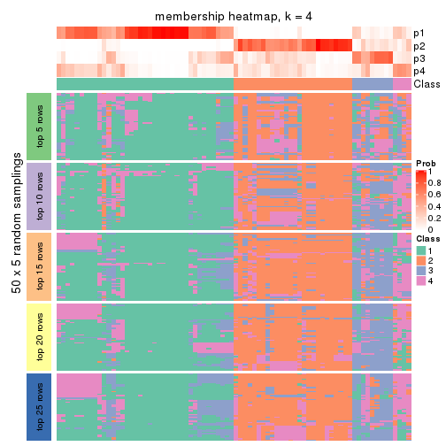
membership_heatmap(res, k = 5)
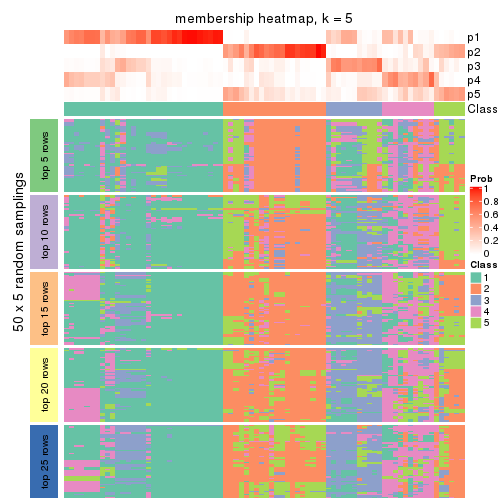
membership_heatmap(res, k = 6)
As soon as we have had the classes for columns, we can look for signatures which are significantly different between classes which can be candidate marks for certain classes. Following are the heatmaps for signatures.
Signature heatmaps where rows are scaled:
get_signatures(res, k = 2)
get_signatures(res, k = 3)
get_signatures(res, k = 4)
get_signatures(res, k = 5)
get_signatures(res, k = 6)
Signature heatmaps where rows are not scaled:
get_signatures(res, k = 2, scale_rows = FALSE)

get_signatures(res, k = 3, scale_rows = FALSE)
get_signatures(res, k = 4, scale_rows = FALSE)
get_signatures(res, k = 5, scale_rows = FALSE)
get_signatures(res, k = 6, scale_rows = FALSE)

Compare the overlap of signatures from different k:
compare_signatures(res)
get_signature() returns a data frame invisibly. TO get the list of signatures, the function
call should be assigned to a variable explicitly. In following code, if plot argument is set
to FALSE, no heatmap is plotted while only the differential analysis is performed.
# code only for demonstration
tb = get_signature(res, k = ..., plot = FALSE)
An example of the output of tb is:
#> which_row fdr mean_1 mean_2 scaled_mean_1 scaled_mean_2 km
#> 1 38 0.042760348 8.373488 9.131774 -0.5533452 0.5164555 1
#> 2 40 0.018707592 7.106213 8.469186 -0.6173731 0.5762149 1
#> 3 55 0.019134737 10.221463 11.207825 -0.6159697 0.5749050 1
#> 4 59 0.006059896 5.921854 7.869574 -0.6899429 0.6439467 1
#> 5 60 0.018055526 8.928898 10.211722 -0.6204761 0.5791110 1
#> 6 98 0.009384629 15.714769 14.887706 0.6635654 -0.6193277 2
...
The columns in tb are:
which_row: row indices corresponding to the input matrix.fdr: FDR for the differential test. mean_x: The mean value in group x.scaled_mean_x: The mean value in group x after rows are scaled.km: Row groups if k-means clustering is applied to rows.UMAP plot which shows how samples are separated.
dimension_reduction(res, k = 2, method = "UMAP")
dimension_reduction(res, k = 3, method = "UMAP")
dimension_reduction(res, k = 4, method = "UMAP")
dimension_reduction(res, k = 5, method = "UMAP")
dimension_reduction(res, k = 6, method = "UMAP")
Following heatmap shows how subgroups are split when increasing k:
collect_classes(res)
If matrix rows can be associated to genes, consider to use functional_enrichment(res,
...) to perform function enrichment for the signature genes. See this vignette for more detailed explanations.
The object with results only for a single top-value method and a single partition method can be extracted as:
res = res_list["MAD", "skmeans"]
# you can also extract it by
# res = res_list["MAD:skmeans"]
A summary of res and all the functions that can be applied to it:
res
#> A 'ConsensusPartition' object with k = 2, 3, 4, 5, 6.
#> On a matrix with 50 rows and 78 columns.
#> Top rows (5, 10, 15, 20, 25) are extracted by 'MAD' method.
#> Subgroups are detected by 'skmeans' method.
#> Performed in total 1250 partitions by row resampling.
#> Best k for subgroups seems to be 2.
#>
#> Following methods can be applied to this 'ConsensusPartition' object:
#> [1] "cola_report" "collect_classes" "collect_plots"
#> [4] "collect_stats" "colnames" "compare_signatures"
#> [7] "consensus_heatmap" "dimension_reduction" "functional_enrichment"
#> [10] "get_anno_col" "get_anno" "get_classes"
#> [13] "get_consensus" "get_matrix" "get_membership"
#> [16] "get_param" "get_signatures" "get_stats"
#> [19] "is_best_k" "is_stable_k" "membership_heatmap"
#> [22] "ncol" "nrow" "plot_ecdf"
#> [25] "rownames" "select_partition_number" "show"
#> [28] "suggest_best_k" "test_to_known_factors"
collect_plots() function collects all the plots made from res for all k (number of partitions)
into one single page to provide an easy and fast comparison between different k.
collect_plots(res)
The plots are:
k and the heatmap of
predicted classes for each k.k.k.k.All the plots in panels can be made by individual functions and they are plotted later in this section.
select_partition_number() produces several plots showing different
statistics for choosing “optimized” k. There are following statistics:
k;k, the area increased is defined as \(A_k - A_{k-1}\).The detailed explanations of these statistics can be found in the cola vignette.
Generally speaking, lower PAC score, higher mean silhouette score or higher
concordance corresponds to better partition. Rand index and Jaccard index
measure how similar the current partition is compared to partition with k-1.
If they are too similar, we won't accept k is better than k-1.
select_partition_number(res)
The numeric values for all these statistics can be obtained by get_stats().
get_stats(res)
#> k 1-PAC mean_silhouette concordance area_increased Rand Jaccard
#> 2 2 0.631 0.851 0.934 0.5014 0.499 0.499
#> 3 3 0.480 0.621 0.813 0.2838 0.833 0.675
#> 4 4 0.519 0.529 0.732 0.1252 0.917 0.778
#> 5 5 0.546 0.486 0.699 0.0722 0.908 0.708
#> 6 6 0.591 0.434 0.661 0.0471 0.907 0.637
suggest_best_k() suggests the best \(k\) based on these statistics. The rules are as follows:
suggest_best_k(res)
#> [1] 2
Following shows the table of the partitions (You need to click the show/hide
code output link to see it). The membership matrix (columns with name p*)
is inferred by
clue::cl_consensus()
function with the SE method. Basically the value in the membership matrix
represents the probability to belong to a certain group. The finall class
label for an item is determined with the group with highest probability it
belongs to.
In get_classes() function, the entropy is calculated from the membership
matrix and the silhouette score is calculated from the consensus matrix.
cbind(get_classes(res, k = 2), get_membership(res, k = 2))
#> class entropy silhouette p1 p2
#> SRR764980 2 0.0000 0.920 0.000 1.000
#> SRR764981 1 0.9775 0.281 0.588 0.412
#> SRR764982 2 0.0000 0.920 0.000 1.000
#> SRR764983 1 0.0000 0.930 1.000 0.000
#> SRR764984 1 0.9209 0.476 0.664 0.336
#> SRR764985 2 0.0000 0.920 0.000 1.000
#> SRR764986 2 0.0000 0.920 0.000 1.000
#> SRR764987 2 0.0000 0.920 0.000 1.000
#> SRR764988 1 0.8327 0.650 0.736 0.264
#> SRR764989 1 0.0000 0.930 1.000 0.000
#> SRR764990 2 0.5059 0.845 0.112 0.888
#> SRR764991 1 0.4815 0.856 0.896 0.104
#> SRR764992 2 0.0000 0.920 0.000 1.000
#> SRR764993 2 0.8813 0.601 0.300 0.700
#> SRR764994 1 0.0000 0.930 1.000 0.000
#> SRR764995 2 0.3274 0.884 0.060 0.940
#> SRR764996 2 0.3733 0.879 0.072 0.928
#> SRR764997 1 0.0000 0.930 1.000 0.000
#> SRR764998 1 0.9954 0.163 0.540 0.460
#> SRR764999 1 0.0000 0.930 1.000 0.000
#> SRR765000 1 0.8207 0.652 0.744 0.256
#> SRR765001 2 0.0000 0.920 0.000 1.000
#> SRR765002 2 0.0000 0.920 0.000 1.000
#> SRR765003 1 0.6623 0.788 0.828 0.172
#> SRR765004 2 0.8267 0.666 0.260 0.740
#> SRR765005 1 0.5737 0.826 0.864 0.136
#> SRR765006 2 0.0000 0.920 0.000 1.000
#> SRR765007 2 0.0000 0.920 0.000 1.000
#> SRR765008 2 0.0000 0.920 0.000 1.000
#> SRR765009 2 0.3584 0.882 0.068 0.932
#> SRR765010 2 0.0000 0.920 0.000 1.000
#> SRR765011 1 0.0000 0.930 1.000 0.000
#> SRR765012 1 0.0000 0.930 1.000 0.000
#> SRR765013 2 0.0000 0.920 0.000 1.000
#> SRR765014 1 0.0000 0.930 1.000 0.000
#> SRR765015 1 0.0000 0.930 1.000 0.000
#> SRR765016 1 0.0000 0.930 1.000 0.000
#> SRR765017 1 0.5629 0.823 0.868 0.132
#> SRR765018 1 0.0000 0.930 1.000 0.000
#> SRR765020 1 0.0000 0.930 1.000 0.000
#> SRR765021 1 0.0000 0.930 1.000 0.000
#> SRR765022 1 0.5519 0.834 0.872 0.128
#> SRR765023 1 0.0000 0.930 1.000 0.000
#> SRR765024 1 0.0000 0.930 1.000 0.000
#> SRR765025 2 0.0000 0.920 0.000 1.000
#> SRR765026 1 0.0000 0.930 1.000 0.000
#> SRR765027 1 0.0000 0.930 1.000 0.000
#> SRR765028 2 0.0000 0.920 0.000 1.000
#> SRR765029 2 0.0000 0.920 0.000 1.000
#> SRR765030 1 0.0672 0.926 0.992 0.008
#> SRR765031 1 0.1184 0.921 0.984 0.016
#> SRR765032 1 0.5737 0.821 0.864 0.136
#> SRR765033 2 0.3114 0.891 0.056 0.944
#> SRR765034 1 0.3584 0.885 0.932 0.068
#> SRR765035 2 0.3584 0.882 0.068 0.932
#> SRR765036 2 0.9087 0.549 0.324 0.676
#> SRR765037 2 0.6247 0.799 0.156 0.844
#> SRR765038 2 0.0000 0.920 0.000 1.000
#> SRR765039 1 0.0000 0.930 1.000 0.000
#> SRR765040 2 0.7815 0.703 0.232 0.768
#> SRR765041 2 0.0000 0.920 0.000 1.000
#> SRR765042 1 0.0000 0.930 1.000 0.000
#> SRR765043 1 0.0000 0.930 1.000 0.000
#> SRR765044 2 0.0000 0.920 0.000 1.000
#> SRR765045 1 0.0000 0.930 1.000 0.000
#> SRR765046 2 0.0000 0.920 0.000 1.000
#> SRR765047 1 0.0000 0.930 1.000 0.000
#> SRR765048 1 0.0000 0.930 1.000 0.000
#> SRR765049 2 0.0000 0.920 0.000 1.000
#> SRR765050 2 0.0000 0.920 0.000 1.000
#> SRR765051 1 0.0000 0.930 1.000 0.000
#> SRR765052 2 0.9896 0.237 0.440 0.560
#> SRR765053 1 0.1843 0.913 0.972 0.028
#> SRR765054 1 0.0000 0.930 1.000 0.000
#> SRR765055 1 0.0000 0.930 1.000 0.000
#> SRR765056 1 0.0000 0.930 1.000 0.000
#> SRR765057 2 0.9286 0.483 0.344 0.656
#> SRR765058 1 0.0000 0.930 1.000 0.000
cbind(get_classes(res, k = 3), get_membership(res, k = 3))
#> class entropy silhouette p1 p2 p3
#> SRR764980 2 0.3752 0.75370 0.000 0.856 0.144
#> SRR764981 1 0.9037 0.00862 0.472 0.392 0.136
#> SRR764982 2 0.4452 0.76621 0.000 0.808 0.192
#> SRR764983 1 0.2625 0.76377 0.916 0.000 0.084
#> SRR764984 3 0.8891 0.48651 0.340 0.136 0.524
#> SRR764985 2 0.3752 0.75370 0.000 0.856 0.144
#> SRR764986 2 0.0237 0.83040 0.000 0.996 0.004
#> SRR764987 2 0.0000 0.83080 0.000 1.000 0.000
#> SRR764988 3 0.4682 0.61253 0.192 0.004 0.804
#> SRR764989 1 0.0000 0.77827 1.000 0.000 0.000
#> SRR764990 2 0.8728 0.35101 0.144 0.568 0.288
#> SRR764991 1 0.6144 0.60125 0.780 0.132 0.088
#> SRR764992 2 0.1643 0.81734 0.000 0.956 0.044
#> SRR764993 3 0.8925 -0.00286 0.124 0.412 0.464
#> SRR764994 1 0.0000 0.77827 1.000 0.000 0.000
#> SRR764995 2 0.0237 0.83018 0.000 0.996 0.004
#> SRR764996 2 0.7590 0.50100 0.080 0.652 0.268
#> SRR764997 3 0.6274 0.42183 0.456 0.000 0.544
#> SRR764998 1 0.9768 0.13020 0.440 0.264 0.296
#> SRR764999 1 0.3459 0.72925 0.892 0.012 0.096
#> SRR765000 3 0.7140 0.57135 0.328 0.040 0.632
#> SRR765001 2 0.0000 0.83080 0.000 1.000 0.000
#> SRR765002 2 0.0000 0.83080 0.000 1.000 0.000
#> SRR765003 1 0.8427 0.45653 0.620 0.172 0.208
#> SRR765004 3 0.5455 0.46975 0.020 0.204 0.776
#> SRR765005 1 0.7504 0.50858 0.688 0.200 0.112
#> SRR765006 2 0.4796 0.75157 0.000 0.780 0.220
#> SRR765007 2 0.1753 0.81840 0.000 0.952 0.048
#> SRR765008 2 0.5016 0.72891 0.000 0.760 0.240
#> SRR765009 2 0.4452 0.76642 0.000 0.808 0.192
#> SRR765010 2 0.0000 0.83080 0.000 1.000 0.000
#> SRR765011 1 0.2878 0.75963 0.904 0.000 0.096
#> SRR765012 1 0.0424 0.77648 0.992 0.008 0.000
#> SRR765013 2 0.0000 0.83080 0.000 1.000 0.000
#> SRR765014 1 0.4702 0.67581 0.788 0.000 0.212
#> SRR765015 1 0.6192 -0.14713 0.580 0.000 0.420
#> SRR765016 1 0.0000 0.77827 1.000 0.000 0.000
#> SRR765017 1 0.4731 0.72337 0.840 0.032 0.128
#> SRR765018 1 0.6192 -0.14546 0.580 0.000 0.420
#> SRR765020 1 0.2878 0.75963 0.904 0.000 0.096
#> SRR765021 1 0.6026 -0.00130 0.624 0.000 0.376
#> SRR765022 3 0.7114 0.50609 0.388 0.028 0.584
#> SRR765023 1 0.2878 0.75963 0.904 0.000 0.096
#> SRR765024 1 0.0000 0.77827 1.000 0.000 0.000
#> SRR765025 2 0.4399 0.76870 0.000 0.812 0.188
#> SRR765026 1 0.1643 0.75550 0.956 0.000 0.044
#> SRR765027 1 0.0000 0.77827 1.000 0.000 0.000
#> SRR765028 2 0.4399 0.76870 0.000 0.812 0.188
#> SRR765029 2 0.4399 0.76870 0.000 0.812 0.188
#> SRR765030 1 0.3619 0.71268 0.864 0.000 0.136
#> SRR765031 3 0.6274 0.42183 0.456 0.000 0.544
#> SRR765032 1 0.6828 0.48455 0.656 0.032 0.312
#> SRR765033 3 0.5633 0.45208 0.024 0.208 0.768
#> SRR765034 3 0.8920 0.43688 0.408 0.124 0.468
#> SRR765035 2 0.5178 0.76728 0.028 0.808 0.164
#> SRR765036 3 0.9613 0.24089 0.228 0.308 0.464
#> SRR765037 3 0.4744 0.54560 0.028 0.136 0.836
#> SRR765038 2 0.0000 0.83080 0.000 1.000 0.000
#> SRR765039 1 0.0747 0.76869 0.984 0.000 0.016
#> SRR765040 2 0.5581 0.64241 0.168 0.792 0.040
#> SRR765041 2 0.2772 0.79980 0.004 0.916 0.080
#> SRR765042 1 0.0000 0.77827 1.000 0.000 0.000
#> SRR765043 1 0.0000 0.77827 1.000 0.000 0.000
#> SRR765044 2 0.1643 0.81691 0.000 0.956 0.044
#> SRR765045 1 0.0000 0.77827 1.000 0.000 0.000
#> SRR765046 2 0.0000 0.83080 0.000 1.000 0.000
#> SRR765047 1 0.0000 0.77827 1.000 0.000 0.000
#> SRR765048 1 0.0000 0.77827 1.000 0.000 0.000
#> SRR765049 2 0.3752 0.75416 0.000 0.856 0.144
#> SRR765050 2 0.4399 0.76870 0.000 0.812 0.188
#> SRR765051 1 0.0000 0.77827 1.000 0.000 0.000
#> SRR765052 2 0.8924 0.14899 0.336 0.524 0.140
#> SRR765053 3 0.6280 0.41332 0.460 0.000 0.540
#> SRR765054 1 0.2711 0.76249 0.912 0.000 0.088
#> SRR765055 1 0.2878 0.75963 0.904 0.000 0.096
#> SRR765056 1 0.6192 -0.14713 0.580 0.000 0.420
#> SRR765057 3 0.5677 0.57664 0.072 0.124 0.804
#> SRR765058 1 0.2878 0.75963 0.904 0.000 0.096
cbind(get_classes(res, k = 4), get_membership(res, k = 4))
#> class entropy silhouette p1 p2 p3 p4
#> SRR764980 2 0.4581 0.68352 0.000 0.800 0.080 0.120
#> SRR764981 1 0.7935 -0.00094 0.520 0.300 0.036 0.144
#> SRR764982 2 0.4818 0.74371 0.000 0.748 0.216 0.036
#> SRR764983 1 0.4699 0.42602 0.676 0.000 0.004 0.320
#> SRR764984 3 0.8918 0.29267 0.252 0.072 0.444 0.232
#> SRR764985 2 0.4411 0.69371 0.000 0.812 0.080 0.108
#> SRR764986 2 0.0524 0.79667 0.000 0.988 0.004 0.008
#> SRR764987 2 0.0657 0.79715 0.000 0.984 0.004 0.012
#> SRR764988 3 0.4851 0.57592 0.104 0.004 0.792 0.100
#> SRR764989 1 0.1211 0.67393 0.960 0.000 0.000 0.040
#> SRR764990 4 0.6087 0.38753 0.004 0.352 0.048 0.596
#> SRR764991 1 0.7538 0.29004 0.612 0.104 0.064 0.220
#> SRR764992 2 0.2412 0.76521 0.000 0.908 0.008 0.084
#> SRR764993 3 0.8833 0.14627 0.072 0.288 0.448 0.192
#> SRR764994 1 0.0336 0.68091 0.992 0.000 0.000 0.008
#> SRR764995 2 0.0921 0.79722 0.000 0.972 0.000 0.028
#> SRR764996 2 0.8049 -0.09236 0.020 0.420 0.176 0.384
#> SRR764997 3 0.6326 0.58073 0.264 0.000 0.632 0.104
#> SRR764998 4 0.5706 0.52954 0.064 0.172 0.024 0.740
#> SRR764999 1 0.5569 0.37547 0.676 0.004 0.040 0.280
#> SRR765000 3 0.5586 0.58714 0.152 0.004 0.736 0.108
#> SRR765001 2 0.0524 0.79627 0.000 0.988 0.008 0.004
#> SRR765002 2 0.0188 0.79626 0.000 0.996 0.004 0.000
#> SRR765003 4 0.6780 0.46057 0.200 0.056 0.072 0.672
#> SRR765004 3 0.5615 0.38681 0.000 0.096 0.716 0.188
#> SRR765005 1 0.6464 0.16840 0.568 0.040 0.020 0.372
#> SRR765006 2 0.5582 0.72323 0.000 0.724 0.168 0.108
#> SRR765007 2 0.3497 0.73379 0.000 0.860 0.036 0.104
#> SRR765008 2 0.6316 0.60557 0.000 0.596 0.324 0.080
#> SRR765009 2 0.5156 0.73161 0.000 0.720 0.236 0.044
#> SRR765010 2 0.0188 0.79616 0.000 0.996 0.000 0.004
#> SRR765011 1 0.4991 0.33170 0.608 0.000 0.004 0.388
#> SRR765012 1 0.3693 0.59529 0.856 0.000 0.072 0.072
#> SRR765013 2 0.0336 0.79539 0.000 0.992 0.000 0.008
#> SRR765014 4 0.5807 0.05590 0.424 0.004 0.024 0.548
#> SRR765015 1 0.5161 -0.18403 0.520 0.000 0.476 0.004
#> SRR765016 1 0.0000 0.68133 1.000 0.000 0.000 0.000
#> SRR765017 1 0.5604 0.12751 0.504 0.020 0.000 0.476
#> SRR765018 1 0.5151 -0.09800 0.532 0.000 0.464 0.004
#> SRR765020 1 0.4898 0.31739 0.584 0.000 0.000 0.416
#> SRR765021 1 0.5150 0.06908 0.596 0.000 0.396 0.008
#> SRR765022 3 0.6984 0.48674 0.292 0.028 0.600 0.080
#> SRR765023 1 0.4697 0.38063 0.644 0.000 0.000 0.356
#> SRR765024 1 0.0188 0.68103 0.996 0.000 0.000 0.004
#> SRR765025 2 0.4599 0.74769 0.000 0.760 0.212 0.028
#> SRR765026 1 0.0657 0.68097 0.984 0.000 0.004 0.012
#> SRR765027 1 0.1118 0.67509 0.964 0.000 0.000 0.036
#> SRR765028 2 0.4745 0.74575 0.000 0.756 0.208 0.036
#> SRR765029 2 0.4914 0.74400 0.000 0.748 0.208 0.044
#> SRR765030 1 0.5650 0.49749 0.716 0.000 0.104 0.180
#> SRR765031 3 0.6375 0.57767 0.272 0.000 0.624 0.104
#> SRR765032 4 0.7483 0.19671 0.360 0.000 0.184 0.456
#> SRR765033 3 0.5066 0.43201 0.000 0.088 0.764 0.148
#> SRR765034 3 0.7735 0.52407 0.300 0.028 0.532 0.140
#> SRR765035 2 0.5556 0.73332 0.000 0.720 0.188 0.092
#> SRR765036 4 0.6158 0.34726 0.008 0.128 0.168 0.696
#> SRR765037 3 0.4671 0.47782 0.000 0.028 0.752 0.220
#> SRR765038 2 0.1004 0.79563 0.000 0.972 0.004 0.024
#> SRR765039 1 0.1389 0.66937 0.952 0.000 0.000 0.048
#> SRR765040 2 0.6490 0.62427 0.056 0.700 0.068 0.176
#> SRR765041 2 0.3688 0.67958 0.000 0.792 0.000 0.208
#> SRR765042 1 0.1118 0.67461 0.964 0.000 0.000 0.036
#> SRR765043 1 0.0817 0.67798 0.976 0.000 0.000 0.024
#> SRR765044 2 0.4286 0.73025 0.000 0.812 0.052 0.136
#> SRR765045 1 0.0524 0.67995 0.988 0.000 0.004 0.008
#> SRR765046 2 0.0188 0.79616 0.000 0.996 0.000 0.004
#> SRR765047 1 0.0672 0.67916 0.984 0.000 0.008 0.008
#> SRR765048 1 0.0336 0.68091 0.992 0.000 0.000 0.008
#> SRR765049 2 0.4547 0.70003 0.000 0.804 0.092 0.104
#> SRR765050 2 0.4793 0.74716 0.000 0.756 0.204 0.040
#> SRR765051 1 0.0336 0.68127 0.992 0.000 0.000 0.008
#> SRR765052 4 0.7709 0.42094 0.208 0.320 0.004 0.468
#> SRR765053 3 0.6452 0.57512 0.268 0.000 0.620 0.112
#> SRR765054 1 0.4720 0.42549 0.672 0.000 0.004 0.324
#> SRR765055 1 0.4741 0.41614 0.668 0.000 0.004 0.328
#> SRR765056 3 0.5861 0.20884 0.480 0.000 0.488 0.032
#> SRR765057 3 0.5097 0.46255 0.016 0.052 0.776 0.156
#> SRR765058 1 0.4855 0.39222 0.644 0.000 0.004 0.352
cbind(get_classes(res, k = 5), get_membership(res, k = 5))
#> class entropy silhouette p1 p2 p3 p4 p5
#> SRR764980 2 0.4552 0.44343 0.000 0.716 0.004 0.040 0.240
#> SRR764981 1 0.9168 -0.10488 0.396 0.208 0.080 0.136 0.180
#> SRR764982 2 0.4769 0.54968 0.000 0.588 0.016 0.004 0.392
#> SRR764983 1 0.5003 0.14256 0.544 0.000 0.032 0.424 0.000
#> SRR764984 3 0.8410 0.28260 0.152 0.052 0.476 0.224 0.096
#> SRR764985 2 0.4438 0.46983 0.000 0.732 0.004 0.040 0.224
#> SRR764986 2 0.0963 0.69513 0.000 0.964 0.000 0.000 0.036
#> SRR764987 2 0.1043 0.70188 0.000 0.960 0.000 0.000 0.040
#> SRR764988 3 0.5019 0.41467 0.040 0.004 0.760 0.072 0.124
#> SRR764989 1 0.1894 0.62868 0.920 0.000 0.000 0.072 0.008
#> SRR764990 4 0.6298 0.22922 0.000 0.268 0.012 0.568 0.152
#> SRR764991 1 0.8037 0.19836 0.548 0.116 0.124 0.152 0.060
#> SRR764992 2 0.3835 0.63514 0.000 0.836 0.036 0.080 0.048
#> SRR764993 5 0.7659 0.59799 0.004 0.152 0.192 0.132 0.520
#> SRR764994 1 0.0880 0.66651 0.968 0.000 0.032 0.000 0.000
#> SRR764995 2 0.2390 0.69119 0.000 0.896 0.084 0.000 0.020
#> SRR764996 5 0.7235 0.32215 0.012 0.252 0.012 0.268 0.456
#> SRR764997 3 0.3123 0.70548 0.160 0.000 0.828 0.000 0.012
#> SRR764998 4 0.4250 0.42744 0.024 0.088 0.004 0.812 0.072
#> SRR764999 1 0.6950 0.19931 0.528 0.000 0.156 0.272 0.044
#> SRR765000 3 0.3410 0.62254 0.092 0.000 0.840 0.000 0.068
#> SRR765001 2 0.1082 0.69950 0.000 0.964 0.008 0.000 0.028
#> SRR765002 2 0.0404 0.69926 0.000 0.988 0.000 0.000 0.012
#> SRR765003 4 0.6225 0.46836 0.096 0.020 0.172 0.672 0.040
#> SRR765004 5 0.6795 0.63957 0.000 0.060 0.204 0.152 0.584
#> SRR765005 1 0.7126 0.00484 0.456 0.016 0.080 0.396 0.052
#> SRR765006 2 0.6397 0.53103 0.000 0.564 0.072 0.052 0.312
#> SRR765007 2 0.4024 0.54813 0.000 0.752 0.000 0.028 0.220
#> SRR765008 5 0.4403 0.16108 0.000 0.316 0.012 0.004 0.668
#> SRR765009 2 0.5083 0.40789 0.000 0.492 0.020 0.008 0.480
#> SRR765010 2 0.1557 0.70258 0.000 0.940 0.008 0.000 0.052
#> SRR765011 1 0.5793 -0.05770 0.460 0.000 0.076 0.460 0.004
#> SRR765012 1 0.3670 0.54153 0.820 0.000 0.000 0.112 0.068
#> SRR765013 2 0.1043 0.70110 0.000 0.960 0.000 0.000 0.040
#> SRR765014 4 0.4782 0.41745 0.236 0.000 0.048 0.708 0.008
#> SRR765015 3 0.4182 0.60233 0.400 0.000 0.600 0.000 0.000
#> SRR765016 1 0.0794 0.66681 0.972 0.000 0.028 0.000 0.000
#> SRR765017 4 0.6137 0.24760 0.356 0.016 0.016 0.556 0.056
#> SRR765018 3 0.4392 0.58722 0.380 0.000 0.612 0.008 0.000
#> SRR765020 4 0.5488 0.04021 0.448 0.000 0.052 0.496 0.004
#> SRR765021 3 0.4522 0.52334 0.440 0.000 0.552 0.008 0.000
#> SRR765022 3 0.6662 0.54002 0.228 0.004 0.600 0.056 0.112
#> SRR765023 1 0.4897 0.07697 0.516 0.000 0.024 0.460 0.000
#> SRR765024 1 0.0880 0.66651 0.968 0.000 0.032 0.000 0.000
#> SRR765025 2 0.4225 0.55400 0.000 0.632 0.004 0.000 0.364
#> SRR765026 1 0.1990 0.63208 0.920 0.000 0.004 0.068 0.008
#> SRR765027 1 0.0451 0.66235 0.988 0.000 0.000 0.008 0.004
#> SRR765028 2 0.4696 0.54333 0.000 0.584 0.004 0.012 0.400
#> SRR765029 2 0.4752 0.52563 0.000 0.556 0.004 0.012 0.428
#> SRR765030 1 0.6325 0.38119 0.652 0.000 0.088 0.156 0.104
#> SRR765031 3 0.3123 0.70548 0.160 0.000 0.828 0.000 0.012
#> SRR765032 4 0.6303 0.42576 0.204 0.000 0.068 0.636 0.092
#> SRR765033 5 0.6282 0.60523 0.000 0.068 0.296 0.052 0.584
#> SRR765034 3 0.3044 0.69114 0.148 0.008 0.840 0.004 0.000
#> SRR765035 2 0.5757 0.52726 0.000 0.560 0.000 0.104 0.336
#> SRR765036 4 0.7617 -0.13237 0.004 0.080 0.140 0.444 0.332
#> SRR765037 5 0.6174 0.52841 0.000 0.024 0.360 0.080 0.536
#> SRR765038 2 0.2077 0.70332 0.000 0.908 0.000 0.008 0.084
#> SRR765039 1 0.0880 0.65405 0.968 0.000 0.000 0.032 0.000
#> SRR765040 2 0.6572 0.50445 0.040 0.620 0.244 0.036 0.060
#> SRR765041 2 0.5768 0.50573 0.000 0.640 0.008 0.212 0.140
#> SRR765042 1 0.0324 0.66342 0.992 0.000 0.000 0.004 0.004
#> SRR765043 1 0.0000 0.66470 1.000 0.000 0.000 0.000 0.000
#> SRR765044 2 0.5369 0.56975 0.000 0.732 0.124 0.060 0.084
#> SRR765045 1 0.0880 0.66651 0.968 0.000 0.032 0.000 0.000
#> SRR765046 2 0.0404 0.70009 0.000 0.988 0.000 0.000 0.012
#> SRR765047 1 0.1121 0.66171 0.956 0.000 0.044 0.000 0.000
#> SRR765048 1 0.0880 0.66651 0.968 0.000 0.032 0.000 0.000
#> SRR765049 2 0.4786 0.60919 0.000 0.776 0.052 0.072 0.100
#> SRR765050 2 0.4383 0.53962 0.000 0.572 0.004 0.000 0.424
#> SRR765051 1 0.0992 0.66699 0.968 0.000 0.024 0.008 0.000
#> SRR765052 4 0.9125 0.25579 0.148 0.268 0.080 0.376 0.128
#> SRR765053 3 0.2583 0.69412 0.132 0.000 0.864 0.000 0.004
#> SRR765054 1 0.5009 0.13489 0.540 0.000 0.032 0.428 0.000
#> SRR765055 1 0.4942 0.12793 0.540 0.000 0.028 0.432 0.000
#> SRR765056 3 0.3838 0.70500 0.280 0.000 0.716 0.004 0.000
#> SRR765057 5 0.6003 0.61307 0.004 0.052 0.280 0.044 0.620
#> SRR765058 1 0.5049 0.03888 0.484 0.000 0.032 0.484 0.000
cbind(get_classes(res, k = 6), get_membership(res, k = 6))
#> class entropy silhouette p1 p2 p3 p4 p5 p6
#> SRR764980 2 0.4207 0.48674 0.000 0.720 0.000 0.028 0.020 0.232
#> SRR764981 1 0.8859 -0.15970 0.316 0.224 0.016 0.188 0.080 0.176
#> SRR764982 5 0.4299 0.58627 0.000 0.356 0.012 0.000 0.620 0.012
#> SRR764983 1 0.4570 -0.16060 0.528 0.000 0.036 0.436 0.000 0.000
#> SRR764984 3 0.8849 0.13554 0.088 0.048 0.376 0.240 0.140 0.108
#> SRR764985 2 0.4227 0.50916 0.000 0.732 0.000 0.028 0.028 0.212
#> SRR764986 2 0.0547 0.63024 0.000 0.980 0.000 0.000 0.000 0.020
#> SRR764987 2 0.1926 0.61095 0.000 0.912 0.000 0.000 0.068 0.020
#> SRR764988 3 0.6088 0.38782 0.028 0.000 0.640 0.068 0.092 0.172
#> SRR764989 1 0.3406 0.58821 0.840 0.000 0.016 0.036 0.012 0.096
#> SRR764990 4 0.7176 0.02252 0.000 0.196 0.004 0.448 0.244 0.108
#> SRR764991 1 0.9091 -0.10638 0.372 0.104 0.080 0.212 0.140 0.092
#> SRR764992 2 0.4775 0.52356 0.000 0.744 0.008 0.064 0.132 0.052
#> SRR764993 6 0.6154 0.59009 0.008 0.104 0.152 0.004 0.100 0.632
#> SRR764994 1 0.0964 0.66640 0.968 0.000 0.016 0.012 0.000 0.004
#> SRR764995 2 0.4128 0.50114 0.000 0.772 0.140 0.004 0.072 0.012
#> SRR764996 6 0.5925 0.46911 0.000 0.204 0.000 0.124 0.064 0.608
#> SRR764997 3 0.2527 0.69269 0.108 0.000 0.868 0.000 0.000 0.024
#> SRR764998 4 0.5042 0.28537 0.008 0.060 0.004 0.724 0.052 0.152
#> SRR764999 1 0.8343 -0.07619 0.380 0.000 0.112 0.228 0.112 0.168
#> SRR765000 3 0.3629 0.63202 0.076 0.000 0.828 0.004 0.028 0.064
#> SRR765001 2 0.1151 0.63227 0.000 0.956 0.000 0.000 0.032 0.012
#> SRR765002 2 0.0458 0.62738 0.000 0.984 0.000 0.000 0.016 0.000
#> SRR765003 4 0.6370 0.29251 0.072 0.000 0.064 0.640 0.112 0.112
#> SRR765004 6 0.4873 0.66002 0.000 0.056 0.112 0.000 0.104 0.728
#> SRR765005 4 0.7327 0.13054 0.316 0.000 0.020 0.424 0.136 0.104
#> SRR765006 5 0.6020 0.54090 0.000 0.340 0.032 0.060 0.540 0.028
#> SRR765007 2 0.4372 0.50550 0.000 0.728 0.000 0.008 0.080 0.184
#> SRR765008 5 0.6383 -0.00224 0.000 0.276 0.012 0.000 0.360 0.352
#> SRR765009 5 0.5071 0.55463 0.000 0.340 0.004 0.000 0.576 0.080
#> SRR765010 2 0.1802 0.62220 0.000 0.916 0.000 0.000 0.072 0.012
#> SRR765011 4 0.5401 0.29281 0.408 0.000 0.076 0.504 0.004 0.008
#> SRR765012 1 0.4099 0.54206 0.788 0.000 0.016 0.036 0.024 0.136
#> SRR765013 2 0.1910 0.58538 0.000 0.892 0.000 0.000 0.108 0.000
#> SRR765014 4 0.4498 0.48876 0.152 0.000 0.032 0.744 0.000 0.072
#> SRR765015 3 0.3634 0.60696 0.356 0.000 0.644 0.000 0.000 0.000
#> SRR765016 1 0.0458 0.66836 0.984 0.000 0.016 0.000 0.000 0.000
#> SRR765017 4 0.7753 0.39734 0.192 0.004 0.064 0.468 0.192 0.080
#> SRR765018 3 0.4443 0.57294 0.348 0.000 0.620 0.016 0.000 0.016
#> SRR765020 4 0.5030 0.38811 0.344 0.000 0.064 0.584 0.004 0.004
#> SRR765021 3 0.3907 0.52126 0.408 0.000 0.588 0.004 0.000 0.000
#> SRR765022 3 0.6998 0.46401 0.124 0.000 0.568 0.048 0.112 0.148
#> SRR765023 4 0.4893 0.25317 0.440 0.000 0.012 0.512 0.000 0.036
#> SRR765024 1 0.0790 0.66441 0.968 0.000 0.032 0.000 0.000 0.000
#> SRR765025 2 0.4275 -0.30148 0.000 0.592 0.004 0.000 0.388 0.016
#> SRR765026 1 0.3011 0.60080 0.852 0.000 0.000 0.036 0.012 0.100
#> SRR765027 1 0.0551 0.66551 0.984 0.000 0.004 0.008 0.004 0.000
#> SRR765028 5 0.3841 0.59537 0.000 0.380 0.004 0.000 0.616 0.000
#> SRR765029 5 0.3547 0.61517 0.000 0.332 0.000 0.000 0.668 0.000
#> SRR765030 1 0.6609 0.24411 0.556 0.000 0.024 0.116 0.064 0.240
#> SRR765031 3 0.2358 0.69278 0.108 0.000 0.876 0.000 0.000 0.016
#> SRR765032 4 0.6994 0.43148 0.168 0.000 0.024 0.516 0.072 0.220
#> SRR765033 6 0.6531 0.58719 0.000 0.052 0.160 0.012 0.232 0.544
#> SRR765034 3 0.2458 0.67194 0.084 0.016 0.888 0.008 0.000 0.004
#> SRR765035 5 0.4872 0.58398 0.000 0.336 0.000 0.008 0.600 0.056
#> SRR765036 6 0.5926 0.33528 0.000 0.056 0.036 0.396 0.016 0.496
#> SRR765037 6 0.6397 0.60271 0.000 0.024 0.220 0.064 0.104 0.588
#> SRR765038 2 0.3198 0.36180 0.000 0.740 0.000 0.000 0.260 0.000
#> SRR765039 1 0.1890 0.64116 0.924 0.000 0.024 0.044 0.008 0.000
#> SRR765040 2 0.6749 0.09757 0.012 0.488 0.268 0.012 0.200 0.020
#> SRR765041 2 0.6872 0.04680 0.000 0.388 0.004 0.212 0.348 0.048
#> SRR765042 1 0.0964 0.65995 0.968 0.000 0.016 0.012 0.004 0.000
#> SRR765043 1 0.0603 0.66774 0.980 0.000 0.016 0.004 0.000 0.000
#> SRR765044 2 0.6137 0.36544 0.000 0.652 0.032 0.108 0.096 0.112
#> SRR765045 1 0.1296 0.66221 0.952 0.000 0.032 0.012 0.000 0.004
#> SRR765046 2 0.0146 0.63108 0.000 0.996 0.000 0.000 0.004 0.000
#> SRR765047 1 0.1370 0.66116 0.948 0.000 0.036 0.012 0.000 0.004
#> SRR765048 1 0.1296 0.66221 0.952 0.000 0.032 0.012 0.000 0.004
#> SRR765049 2 0.6091 0.44552 0.000 0.640 0.048 0.044 0.180 0.088
#> SRR765050 5 0.4177 0.47073 0.000 0.468 0.000 0.000 0.520 0.012
#> SRR765051 1 0.1844 0.65504 0.928 0.000 0.016 0.016 0.000 0.040
#> SRR765052 5 0.8275 -0.17027 0.056 0.072 0.096 0.316 0.396 0.064
#> SRR765053 3 0.2062 0.68452 0.088 0.000 0.900 0.000 0.008 0.004
#> SRR765054 1 0.4644 -0.16470 0.524 0.000 0.032 0.440 0.000 0.004
#> SRR765055 1 0.4520 -0.18121 0.520 0.000 0.032 0.448 0.000 0.000
#> SRR765056 3 0.2902 0.69359 0.196 0.000 0.800 0.000 0.000 0.004
#> SRR765057 6 0.6290 0.62040 0.000 0.044 0.192 0.004 0.204 0.556
#> SRR765058 4 0.5365 0.20344 0.444 0.000 0.036 0.480 0.000 0.040
Heatmaps for the consensus matrix. It visualizes the probability of two samples to be in a same group.
consensus_heatmap(res, k = 2)
consensus_heatmap(res, k = 3)
consensus_heatmap(res, k = 4)
consensus_heatmap(res, k = 5)
consensus_heatmap(res, k = 6)
Heatmaps for the membership of samples in all partitions to see how consistent they are:
membership_heatmap(res, k = 2)
membership_heatmap(res, k = 3)
membership_heatmap(res, k = 4)

membership_heatmap(res, k = 5)
membership_heatmap(res, k = 6)
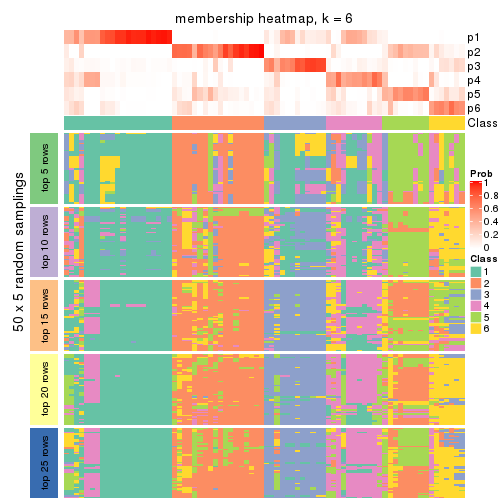
As soon as we have had the classes for columns, we can look for signatures which are significantly different between classes which can be candidate marks for certain classes. Following are the heatmaps for signatures.
Signature heatmaps where rows are scaled:
get_signatures(res, k = 2)
get_signatures(res, k = 3)
get_signatures(res, k = 4)
get_signatures(res, k = 5)
get_signatures(res, k = 6)
Signature heatmaps where rows are not scaled:
get_signatures(res, k = 2, scale_rows = FALSE)
get_signatures(res, k = 3, scale_rows = FALSE)
get_signatures(res, k = 4, scale_rows = FALSE)
get_signatures(res, k = 5, scale_rows = FALSE)
get_signatures(res, k = 6, scale_rows = FALSE)
Compare the overlap of signatures from different k:
compare_signatures(res)
get_signature() returns a data frame invisibly. TO get the list of signatures, the function
call should be assigned to a variable explicitly. In following code, if plot argument is set
to FALSE, no heatmap is plotted while only the differential analysis is performed.
# code only for demonstration
tb = get_signature(res, k = ..., plot = FALSE)
An example of the output of tb is:
#> which_row fdr mean_1 mean_2 scaled_mean_1 scaled_mean_2 km
#> 1 38 0.042760348 8.373488 9.131774 -0.5533452 0.5164555 1
#> 2 40 0.018707592 7.106213 8.469186 -0.6173731 0.5762149 1
#> 3 55 0.019134737 10.221463 11.207825 -0.6159697 0.5749050 1
#> 4 59 0.006059896 5.921854 7.869574 -0.6899429 0.6439467 1
#> 5 60 0.018055526 8.928898 10.211722 -0.6204761 0.5791110 1
#> 6 98 0.009384629 15.714769 14.887706 0.6635654 -0.6193277 2
...
The columns in tb are:
which_row: row indices corresponding to the input matrix.fdr: FDR for the differential test. mean_x: The mean value in group x.scaled_mean_x: The mean value in group x after rows are scaled.km: Row groups if k-means clustering is applied to rows.UMAP plot which shows how samples are separated.
dimension_reduction(res, k = 2, method = "UMAP")
dimension_reduction(res, k = 3, method = "UMAP")
dimension_reduction(res, k = 4, method = "UMAP")
dimension_reduction(res, k = 5, method = "UMAP")
dimension_reduction(res, k = 6, method = "UMAP")
Following heatmap shows how subgroups are split when increasing k:
collect_classes(res)
If matrix rows can be associated to genes, consider to use functional_enrichment(res,
...) to perform function enrichment for the signature genes. See this vignette for more detailed explanations.
The object with results only for a single top-value method and a single partition method can be extracted as:
res = res_list["MAD", "pam"]
# you can also extract it by
# res = res_list["MAD:pam"]
A summary of res and all the functions that can be applied to it:
res
#> A 'ConsensusPartition' object with k = 2, 3, 4, 5, 6.
#> On a matrix with 50 rows and 78 columns.
#> Top rows (5, 10, 15, 20, 25) are extracted by 'MAD' method.
#> Subgroups are detected by 'pam' method.
#> Performed in total 1250 partitions by row resampling.
#> Best k for subgroups seems to be 2.
#>
#> Following methods can be applied to this 'ConsensusPartition' object:
#> [1] "cola_report" "collect_classes" "collect_plots"
#> [4] "collect_stats" "colnames" "compare_signatures"
#> [7] "consensus_heatmap" "dimension_reduction" "functional_enrichment"
#> [10] "get_anno_col" "get_anno" "get_classes"
#> [13] "get_consensus" "get_matrix" "get_membership"
#> [16] "get_param" "get_signatures" "get_stats"
#> [19] "is_best_k" "is_stable_k" "membership_heatmap"
#> [22] "ncol" "nrow" "plot_ecdf"
#> [25] "rownames" "select_partition_number" "show"
#> [28] "suggest_best_k" "test_to_known_factors"
collect_plots() function collects all the plots made from res for all k (number of partitions)
into one single page to provide an easy and fast comparison between different k.
collect_plots(res)
The plots are:
k and the heatmap of
predicted classes for each k.k.k.k.All the plots in panels can be made by individual functions and they are plotted later in this section.
select_partition_number() produces several plots showing different
statistics for choosing “optimized” k. There are following statistics:
k;k, the area increased is defined as \(A_k - A_{k-1}\).The detailed explanations of these statistics can be found in the cola vignette.
Generally speaking, lower PAC score, higher mean silhouette score or higher
concordance corresponds to better partition. Rand index and Jaccard index
measure how similar the current partition is compared to partition with k-1.
If they are too similar, we won't accept k is better than k-1.
select_partition_number(res)
The numeric values for all these statistics can be obtained by get_stats().
get_stats(res)
#> k 1-PAC mean_silhouette concordance area_increased Rand Jaccard
#> 2 2 0.612 0.824 0.925 0.4611 0.541 0.541
#> 3 3 0.452 0.664 0.807 0.3777 0.768 0.583
#> 4 4 0.463 0.569 0.737 0.1164 0.916 0.766
#> 5 5 0.504 0.383 0.652 0.0862 0.889 0.636
#> 6 6 0.564 0.484 0.703 0.0391 0.894 0.583
suggest_best_k() suggests the best \(k\) based on these statistics. The rules are as follows:
suggest_best_k(res)
#> [1] 2
Following shows the table of the partitions (You need to click the show/hide
code output link to see it). The membership matrix (columns with name p*)
is inferred by
clue::cl_consensus()
function with the SE method. Basically the value in the membership matrix
represents the probability to belong to a certain group. The finall class
label for an item is determined with the group with highest probability it
belongs to.
In get_classes() function, the entropy is calculated from the membership
matrix and the silhouette score is calculated from the consensus matrix.
cbind(get_classes(res, k = 2), get_membership(res, k = 2))
#> class entropy silhouette p1 p2
#> SRR764980 2 0.0000 0.890044 0.000 1.000
#> SRR764981 1 0.7950 0.677580 0.760 0.240
#> SRR764982 2 0.8144 0.680999 0.252 0.748
#> SRR764983 1 0.0000 0.928301 1.000 0.000
#> SRR764984 1 0.0376 0.925520 0.996 0.004
#> SRR764985 2 0.0000 0.890044 0.000 1.000
#> SRR764986 2 0.0000 0.890044 0.000 1.000
#> SRR764987 2 0.0000 0.890044 0.000 1.000
#> SRR764988 1 0.5408 0.820934 0.876 0.124
#> SRR764989 1 0.0000 0.928301 1.000 0.000
#> SRR764990 1 0.9933 0.171107 0.548 0.452
#> SRR764991 1 0.3274 0.882527 0.940 0.060
#> SRR764992 2 0.0000 0.890044 0.000 1.000
#> SRR764993 1 0.9963 0.000533 0.536 0.464
#> SRR764994 1 0.0000 0.928301 1.000 0.000
#> SRR764995 2 0.1843 0.880005 0.028 0.972
#> SRR764996 2 0.9795 0.278590 0.416 0.584
#> SRR764997 1 0.0000 0.928301 1.000 0.000
#> SRR764998 1 0.8016 0.670059 0.756 0.244
#> SRR764999 1 0.0000 0.928301 1.000 0.000
#> SRR765000 1 0.0000 0.928301 1.000 0.000
#> SRR765001 2 0.0000 0.890044 0.000 1.000
#> SRR765002 2 0.0000 0.890044 0.000 1.000
#> SRR765003 1 0.3733 0.870905 0.928 0.072
#> SRR765004 1 0.6712 0.765021 0.824 0.176
#> SRR765005 1 0.0000 0.928301 1.000 0.000
#> SRR765006 2 0.5946 0.812742 0.144 0.856
#> SRR765007 2 0.2948 0.868420 0.052 0.948
#> SRR765008 2 0.0000 0.890044 0.000 1.000
#> SRR765009 2 0.8955 0.595736 0.312 0.688
#> SRR765010 2 0.0000 0.890044 0.000 1.000
#> SRR765011 1 0.0000 0.928301 1.000 0.000
#> SRR765012 1 0.0000 0.928301 1.000 0.000
#> SRR765013 2 0.0000 0.890044 0.000 1.000
#> SRR765014 1 0.0000 0.928301 1.000 0.000
#> SRR765015 1 0.0000 0.928301 1.000 0.000
#> SRR765016 1 0.0000 0.928301 1.000 0.000
#> SRR765017 1 0.0376 0.925599 0.996 0.004
#> SRR765018 1 0.0000 0.928301 1.000 0.000
#> SRR765020 1 0.0000 0.928301 1.000 0.000
#> SRR765021 1 0.0000 0.928301 1.000 0.000
#> SRR765022 1 0.0000 0.928301 1.000 0.000
#> SRR765023 1 0.0000 0.928301 1.000 0.000
#> SRR765024 1 0.0000 0.928301 1.000 0.000
#> SRR765025 2 0.0000 0.890044 0.000 1.000
#> SRR765026 1 0.0000 0.928301 1.000 0.000
#> SRR765027 1 0.0000 0.928301 1.000 0.000
#> SRR765028 2 0.0672 0.887757 0.008 0.992
#> SRR765029 2 0.5178 0.836603 0.116 0.884
#> SRR765030 1 0.0000 0.928301 1.000 0.000
#> SRR765031 1 0.0000 0.928301 1.000 0.000
#> SRR765032 1 0.0000 0.928301 1.000 0.000
#> SRR765033 1 0.9358 0.458972 0.648 0.352
#> SRR765034 1 0.0000 0.928301 1.000 0.000
#> SRR765035 2 0.5946 0.808880 0.144 0.856
#> SRR765036 1 0.8608 0.604730 0.716 0.284
#> SRR765037 1 0.8861 0.561779 0.696 0.304
#> SRR765038 2 0.0000 0.890044 0.000 1.000
#> SRR765039 1 0.0000 0.928301 1.000 0.000
#> SRR765040 2 0.9993 0.124042 0.484 0.516
#> SRR765041 2 0.9580 0.400196 0.380 0.620
#> SRR765042 1 0.0000 0.928301 1.000 0.000
#> SRR765043 1 0.0000 0.928301 1.000 0.000
#> SRR765044 2 0.0000 0.890044 0.000 1.000
#> SRR765045 1 0.0000 0.928301 1.000 0.000
#> SRR765046 2 0.0000 0.890044 0.000 1.000
#> SRR765047 1 0.0000 0.928301 1.000 0.000
#> SRR765048 1 0.0000 0.928301 1.000 0.000
#> SRR765049 2 0.6247 0.798179 0.156 0.844
#> SRR765050 2 0.5294 0.825976 0.120 0.880
#> SRR765051 1 0.0000 0.928301 1.000 0.000
#> SRR765052 1 0.2043 0.905583 0.968 0.032
#> SRR765053 1 0.0000 0.928301 1.000 0.000
#> SRR765054 1 0.0000 0.928301 1.000 0.000
#> SRR765055 1 0.0000 0.928301 1.000 0.000
#> SRR765056 1 0.0000 0.928301 1.000 0.000
#> SRR765057 1 0.9661 0.364306 0.608 0.392
#> SRR765058 1 0.0000 0.928301 1.000 0.000
cbind(get_classes(res, k = 3), get_membership(res, k = 3))
#> class entropy silhouette p1 p2 p3
#> SRR764980 2 0.1289 0.7762 0.000 0.968 0.032
#> SRR764981 1 0.9399 0.0654 0.500 0.208 0.292
#> SRR764982 3 0.7492 0.0112 0.052 0.340 0.608
#> SRR764983 1 0.1031 0.8412 0.976 0.000 0.024
#> SRR764984 3 0.6460 0.4433 0.440 0.004 0.556
#> SRR764985 2 0.1289 0.7762 0.000 0.968 0.032
#> SRR764986 2 0.0000 0.7808 0.000 1.000 0.000
#> SRR764987 2 0.0000 0.7808 0.000 1.000 0.000
#> SRR764988 3 0.5598 0.6816 0.148 0.052 0.800
#> SRR764989 1 0.2356 0.8556 0.928 0.000 0.072
#> SRR764990 2 0.9028 0.0662 0.432 0.436 0.132
#> SRR764991 1 0.5551 0.6677 0.760 0.016 0.224
#> SRR764992 2 0.1289 0.7776 0.000 0.968 0.032
#> SRR764993 3 0.8001 0.4602 0.136 0.212 0.652
#> SRR764994 1 0.2261 0.8561 0.932 0.000 0.068
#> SRR764995 2 0.3009 0.7533 0.028 0.920 0.052
#> SRR764996 2 0.9145 0.2464 0.240 0.544 0.216
#> SRR764997 3 0.5810 0.6507 0.336 0.000 0.664
#> SRR764998 1 0.8944 0.1846 0.568 0.228 0.204
#> SRR764999 1 0.4842 0.6826 0.776 0.000 0.224
#> SRR765000 3 0.4654 0.6905 0.208 0.000 0.792
#> SRR765001 2 0.0000 0.7808 0.000 1.000 0.000
#> SRR765002 2 0.0000 0.7808 0.000 1.000 0.000
#> SRR765003 1 0.7400 0.3274 0.664 0.072 0.264
#> SRR765004 3 0.4477 0.6089 0.068 0.068 0.864
#> SRR765005 1 0.2537 0.8534 0.920 0.000 0.080
#> SRR765006 2 0.5968 0.6377 0.000 0.636 0.364
#> SRR765007 2 0.3181 0.7615 0.024 0.912 0.064
#> SRR765008 2 0.5760 0.6488 0.000 0.672 0.328
#> SRR765009 2 0.8513 0.5597 0.116 0.568 0.316
#> SRR765010 2 0.0000 0.7808 0.000 1.000 0.000
#> SRR765011 1 0.0747 0.8391 0.984 0.000 0.016
#> SRR765012 1 0.4452 0.7318 0.808 0.000 0.192
#> SRR765013 2 0.0747 0.7804 0.000 0.984 0.016
#> SRR765014 1 0.1529 0.8379 0.960 0.000 0.040
#> SRR765015 3 0.6126 0.5744 0.400 0.000 0.600
#> SRR765016 1 0.2356 0.8556 0.928 0.000 0.072
#> SRR765017 1 0.1765 0.8453 0.956 0.004 0.040
#> SRR765018 3 0.6295 0.4221 0.472 0.000 0.528
#> SRR765020 1 0.0747 0.8371 0.984 0.000 0.016
#> SRR765021 3 0.6309 0.3362 0.496 0.000 0.504
#> SRR765022 3 0.5016 0.6884 0.240 0.000 0.760
#> SRR765023 1 0.0892 0.8381 0.980 0.000 0.020
#> SRR765024 1 0.2448 0.8543 0.924 0.000 0.076
#> SRR765025 2 0.4931 0.7028 0.000 0.768 0.232
#> SRR765026 1 0.2356 0.8555 0.928 0.000 0.072
#> SRR765027 1 0.2261 0.8565 0.932 0.000 0.068
#> SRR765028 2 0.5929 0.6575 0.004 0.676 0.320
#> SRR765029 2 0.6969 0.5821 0.024 0.596 0.380
#> SRR765030 1 0.2711 0.8528 0.912 0.000 0.088
#> SRR765031 3 0.5785 0.6534 0.332 0.000 0.668
#> SRR765032 1 0.3879 0.7198 0.848 0.000 0.152
#> SRR765033 3 0.5085 0.6396 0.092 0.072 0.836
#> SRR765034 3 0.5678 0.6581 0.316 0.000 0.684
#> SRR765035 2 0.8077 0.6020 0.176 0.652 0.172
#> SRR765036 3 0.9651 0.3467 0.348 0.216 0.436
#> SRR765037 3 0.4035 0.5867 0.040 0.080 0.880
#> SRR765038 2 0.1163 0.7795 0.000 0.972 0.028
#> SRR765039 1 0.3038 0.8427 0.896 0.000 0.104
#> SRR765040 2 0.9723 -0.0881 0.348 0.424 0.228
#> SRR765041 2 0.8590 0.3171 0.320 0.560 0.120
#> SRR765042 1 0.2261 0.8568 0.932 0.000 0.068
#> SRR765043 1 0.2711 0.8509 0.912 0.000 0.088
#> SRR765044 2 0.4062 0.7037 0.000 0.836 0.164
#> SRR765045 1 0.2625 0.8512 0.916 0.000 0.084
#> SRR765046 2 0.0000 0.7808 0.000 1.000 0.000
#> SRR765047 1 0.2356 0.8555 0.928 0.000 0.072
#> SRR765048 1 0.2959 0.8394 0.900 0.000 0.100
#> SRR765049 2 0.6203 0.6524 0.056 0.760 0.184
#> SRR765050 2 0.5138 0.6976 0.000 0.748 0.252
#> SRR765051 1 0.2066 0.8557 0.940 0.000 0.060
#> SRR765052 1 0.6138 0.6457 0.768 0.060 0.172
#> SRR765053 3 0.5650 0.6600 0.312 0.000 0.688
#> SRR765054 1 0.0592 0.8373 0.988 0.000 0.012
#> SRR765055 1 0.0892 0.8390 0.980 0.000 0.020
#> SRR765056 3 0.5882 0.6388 0.348 0.000 0.652
#> SRR765057 3 0.4146 0.5783 0.044 0.080 0.876
#> SRR765058 1 0.1643 0.8309 0.956 0.000 0.044
cbind(get_classes(res, k = 4), get_membership(res, k = 4))
#> class entropy silhouette p1 p2 p3 p4
#> SRR764980 2 0.3521 0.6909 0.000 0.864 0.052 0.084
#> SRR764981 1 0.7488 0.1283 0.528 0.172 0.292 0.008
#> SRR764982 4 0.8030 0.4631 0.020 0.204 0.292 0.484
#> SRR764983 1 0.5327 0.6616 0.720 0.000 0.060 0.220
#> SRR764984 3 0.5013 0.5458 0.348 0.004 0.644 0.004
#> SRR764985 2 0.2761 0.6994 0.000 0.904 0.048 0.048
#> SRR764986 2 0.1398 0.7316 0.000 0.956 0.004 0.040
#> SRR764987 2 0.1474 0.7208 0.000 0.948 0.000 0.052
#> SRR764988 3 0.4666 0.6471 0.100 0.052 0.820 0.028
#> SRR764989 1 0.1792 0.7508 0.932 0.000 0.068 0.000
#> SRR764990 4 0.9632 0.0405 0.236 0.300 0.132 0.332
#> SRR764991 1 0.4890 0.5525 0.736 0.024 0.236 0.004
#> SRR764992 2 0.1722 0.7227 0.000 0.944 0.048 0.008
#> SRR764993 3 0.8631 0.0818 0.076 0.156 0.480 0.288
#> SRR764994 1 0.0895 0.7548 0.976 0.000 0.020 0.004
#> SRR764995 2 0.2011 0.6895 0.000 0.920 0.080 0.000
#> SRR764996 1 0.9705 -0.0955 0.344 0.284 0.216 0.156
#> SRR764997 3 0.4222 0.6845 0.272 0.000 0.728 0.000
#> SRR764998 1 0.8412 0.3638 0.424 0.040 0.176 0.360
#> SRR764999 1 0.3539 0.6477 0.820 0.000 0.176 0.004
#> SRR765000 3 0.3545 0.6933 0.164 0.000 0.828 0.008
#> SRR765001 2 0.1004 0.7329 0.000 0.972 0.004 0.024
#> SRR765002 2 0.0000 0.7291 0.000 1.000 0.000 0.000
#> SRR765003 1 0.7538 0.4101 0.492 0.000 0.260 0.248
#> SRR765004 3 0.6073 0.4926 0.056 0.020 0.684 0.240
#> SRR765005 1 0.3471 0.7184 0.868 0.000 0.060 0.072
#> SRR765006 4 0.7517 0.5446 0.000 0.304 0.212 0.484
#> SRR765007 2 0.3652 0.6798 0.028 0.876 0.040 0.056
#> SRR765008 2 0.6735 -0.2411 0.000 0.516 0.096 0.388
#> SRR765009 4 0.7864 0.5312 0.092 0.320 0.060 0.528
#> SRR765010 2 0.1637 0.7305 0.000 0.940 0.000 0.060
#> SRR765011 1 0.3439 0.7341 0.868 0.000 0.048 0.084
#> SRR765012 1 0.3610 0.6319 0.800 0.000 0.200 0.000
#> SRR765013 2 0.2408 0.6738 0.000 0.896 0.000 0.104
#> SRR765014 1 0.5386 0.6579 0.708 0.000 0.056 0.236
#> SRR765015 3 0.4624 0.6204 0.340 0.000 0.660 0.000
#> SRR765016 1 0.1305 0.7528 0.960 0.000 0.036 0.004
#> SRR765017 1 0.4261 0.7225 0.820 0.000 0.068 0.112
#> SRR765018 3 0.4977 0.3981 0.460 0.000 0.540 0.000
#> SRR765020 1 0.5566 0.6672 0.704 0.000 0.072 0.224
#> SRR765021 3 0.4907 0.4297 0.420 0.000 0.580 0.000
#> SRR765022 3 0.5710 0.6988 0.192 0.000 0.708 0.100
#> SRR765023 1 0.5123 0.6603 0.724 0.000 0.044 0.232
#> SRR765024 1 0.1302 0.7517 0.956 0.000 0.044 0.000
#> SRR765025 2 0.5955 0.0731 0.000 0.616 0.056 0.328
#> SRR765026 1 0.1474 0.7504 0.948 0.000 0.052 0.000
#> SRR765027 1 0.1824 0.7520 0.936 0.000 0.060 0.004
#> SRR765028 4 0.6421 0.5543 0.004 0.352 0.068 0.576
#> SRR765029 4 0.6468 0.6064 0.008 0.272 0.088 0.632
#> SRR765030 1 0.1452 0.7550 0.956 0.000 0.036 0.008
#> SRR765031 3 0.3801 0.7081 0.220 0.000 0.780 0.000
#> SRR765032 1 0.6106 0.5540 0.592 0.000 0.060 0.348
#> SRR765033 3 0.6708 0.5412 0.064 0.068 0.684 0.184
#> SRR765034 3 0.3400 0.7089 0.180 0.000 0.820 0.000
#> SRR765035 4 0.6637 0.5428 0.104 0.324 0.000 0.572
#> SRR765036 3 0.8750 0.2923 0.200 0.100 0.508 0.192
#> SRR765037 3 0.5567 0.5878 0.064 0.060 0.776 0.100
#> SRR765038 2 0.2921 0.6380 0.000 0.860 0.000 0.140
#> SRR765039 1 0.2011 0.7415 0.920 0.000 0.080 0.000
#> SRR765040 3 0.9406 -0.0315 0.272 0.284 0.348 0.096
#> SRR765041 2 0.9049 -0.1562 0.244 0.392 0.068 0.296
#> SRR765042 1 0.0817 0.7561 0.976 0.000 0.024 0.000
#> SRR765043 1 0.1489 0.7504 0.952 0.000 0.044 0.004
#> SRR765044 2 0.4372 0.4453 0.000 0.728 0.268 0.004
#> SRR765045 1 0.1661 0.7498 0.944 0.000 0.052 0.004
#> SRR765046 2 0.1004 0.7329 0.000 0.972 0.004 0.024
#> SRR765047 1 0.1004 0.7549 0.972 0.000 0.024 0.004
#> SRR765048 1 0.1576 0.7472 0.948 0.000 0.048 0.004
#> SRR765049 2 0.6436 0.4258 0.024 0.680 0.208 0.088
#> SRR765050 4 0.6090 0.4763 0.000 0.384 0.052 0.564
#> SRR765051 1 0.0707 0.7548 0.980 0.000 0.020 0.000
#> SRR765052 1 0.7191 0.3913 0.612 0.060 0.264 0.064
#> SRR765053 3 0.3400 0.7085 0.180 0.000 0.820 0.000
#> SRR765054 1 0.5123 0.6616 0.724 0.000 0.044 0.232
#> SRR765055 1 0.5235 0.6571 0.716 0.000 0.048 0.236
#> SRR765056 3 0.4304 0.6759 0.284 0.000 0.716 0.000
#> SRR765057 3 0.6421 0.4882 0.044 0.060 0.688 0.208
#> SRR765058 1 0.5203 0.6584 0.720 0.000 0.048 0.232
cbind(get_classes(res, k = 5), get_membership(res, k = 5))
#> class entropy silhouette p1 p2 p3 p4 p5
#> SRR764980 2 0.4254 0.68453 0.000 0.768 0.020 0.188 0.024
#> SRR764981 4 0.6635 0.28240 0.076 0.116 0.132 0.656 0.020
#> SRR764982 5 0.4634 0.66834 0.016 0.064 0.116 0.016 0.788
#> SRR764983 1 0.1915 0.37253 0.928 0.000 0.040 0.032 0.000
#> SRR764984 3 0.5198 0.63906 0.140 0.004 0.712 0.140 0.004
#> SRR764985 2 0.4424 0.70349 0.000 0.772 0.020 0.164 0.044
#> SRR764986 2 0.1668 0.76612 0.000 0.940 0.000 0.032 0.028
#> SRR764987 2 0.2329 0.75145 0.000 0.876 0.000 0.000 0.124
#> SRR764988 3 0.4061 0.65866 0.040 0.000 0.824 0.064 0.072
#> SRR764989 4 0.5773 0.36541 0.436 0.000 0.088 0.476 0.000
#> SRR764990 1 0.8170 -0.07701 0.384 0.120 0.028 0.372 0.096
#> SRR764991 4 0.6651 0.37888 0.192 0.024 0.204 0.576 0.004
#> SRR764992 2 0.3536 0.75988 0.004 0.860 0.060 0.040 0.036
#> SRR764993 3 0.8681 -0.01200 0.084 0.088 0.376 0.108 0.344
#> SRR764994 1 0.4653 -0.34431 0.516 0.000 0.012 0.472 0.000
#> SRR764995 2 0.2676 0.75139 0.000 0.884 0.080 0.000 0.036
#> SRR764996 4 0.7785 -0.06812 0.032 0.160 0.196 0.536 0.076
#> SRR764997 3 0.3266 0.69057 0.200 0.000 0.796 0.004 0.000
#> SRR764998 1 0.6853 0.21675 0.640 0.036 0.080 0.168 0.076
#> SRR764999 1 0.6569 -0.27668 0.436 0.000 0.176 0.384 0.004
#> SRR765000 3 0.4411 0.69148 0.112 0.000 0.796 0.044 0.048
#> SRR765001 2 0.1605 0.76860 0.000 0.944 0.004 0.040 0.012
#> SRR765002 2 0.0963 0.76508 0.000 0.964 0.000 0.000 0.036
#> SRR765003 1 0.5630 0.24766 0.660 0.000 0.212 0.116 0.012
#> SRR765004 3 0.6283 0.49219 0.008 0.012 0.600 0.132 0.248
#> SRR765005 4 0.4901 0.38006 0.296 0.000 0.020 0.664 0.020
#> SRR765006 5 0.4074 0.69167 0.000 0.036 0.092 0.052 0.820
#> SRR765007 2 0.4972 0.67880 0.004 0.768 0.056 0.060 0.112
#> SRR765008 5 0.6139 0.28567 0.004 0.380 0.020 0.068 0.528
#> SRR765009 5 0.3569 0.66836 0.000 0.152 0.004 0.028 0.816
#> SRR765010 2 0.2679 0.76285 0.000 0.892 0.004 0.048 0.056
#> SRR765011 1 0.4752 -0.14661 0.568 0.000 0.020 0.412 0.000
#> SRR765012 4 0.6469 0.38024 0.336 0.000 0.196 0.468 0.000
#> SRR765013 2 0.3109 0.67858 0.000 0.800 0.000 0.000 0.200
#> SRR765014 1 0.1386 0.38226 0.952 0.000 0.016 0.032 0.000
#> SRR765015 3 0.3766 0.63867 0.268 0.000 0.728 0.004 0.000
#> SRR765016 1 0.5230 -0.33389 0.504 0.000 0.044 0.452 0.000
#> SRR765017 4 0.6065 0.23355 0.412 0.000 0.048 0.504 0.036
#> SRR765018 3 0.4886 0.48354 0.372 0.000 0.596 0.032 0.000
#> SRR765020 1 0.3882 0.28880 0.788 0.000 0.044 0.168 0.000
#> SRR765021 3 0.4339 0.50569 0.336 0.000 0.652 0.012 0.000
#> SRR765022 3 0.5007 0.68499 0.104 0.000 0.756 0.040 0.100
#> SRR765023 1 0.1168 0.37770 0.960 0.000 0.008 0.032 0.000
#> SRR765024 1 0.5457 -0.35004 0.480 0.000 0.060 0.460 0.000
#> SRR765025 2 0.5125 0.02570 0.000 0.544 0.000 0.040 0.416
#> SRR765026 4 0.5112 0.36066 0.468 0.000 0.036 0.496 0.000
#> SRR765027 4 0.5555 0.36177 0.452 0.000 0.068 0.480 0.000
#> SRR765028 5 0.2020 0.70563 0.000 0.100 0.000 0.000 0.900
#> SRR765029 5 0.1377 0.71589 0.000 0.020 0.020 0.004 0.956
#> SRR765030 1 0.5232 -0.37507 0.492 0.000 0.028 0.472 0.008
#> SRR765031 3 0.2648 0.70168 0.152 0.000 0.848 0.000 0.000
#> SRR765032 1 0.2972 0.33780 0.864 0.000 0.024 0.004 0.108
#> SRR765033 3 0.7140 0.52797 0.024 0.056 0.596 0.160 0.164
#> SRR765034 3 0.2654 0.69656 0.084 0.000 0.884 0.032 0.000
#> SRR765035 5 0.3340 0.67160 0.096 0.044 0.000 0.008 0.852
#> SRR765036 3 0.8472 0.13810 0.264 0.084 0.344 0.288 0.020
#> SRR765037 3 0.5427 0.59059 0.016 0.004 0.704 0.172 0.104
#> SRR765038 2 0.3838 0.58734 0.000 0.716 0.000 0.004 0.280
#> SRR765039 4 0.5574 0.39634 0.416 0.000 0.072 0.512 0.000
#> SRR765040 3 0.9154 -0.00733 0.064 0.256 0.352 0.208 0.120
#> SRR765041 5 0.7811 0.26233 0.028 0.264 0.024 0.264 0.420
#> SRR765042 4 0.4900 0.34513 0.464 0.000 0.024 0.512 0.000
#> SRR765043 4 0.5049 0.28615 0.484 0.000 0.032 0.484 0.000
#> SRR765044 2 0.6108 0.50283 0.000 0.648 0.208 0.088 0.056
#> SRR765045 1 0.5546 -0.32948 0.496 0.000 0.068 0.436 0.000
#> SRR765046 2 0.0798 0.76831 0.000 0.976 0.000 0.016 0.008
#> SRR765047 1 0.4549 -0.33379 0.528 0.000 0.008 0.464 0.000
#> SRR765048 1 0.5344 -0.32625 0.500 0.000 0.052 0.448 0.000
#> SRR765049 2 0.6878 0.53986 0.000 0.600 0.140 0.156 0.104
#> SRR765050 5 0.4192 0.60262 0.000 0.232 0.000 0.032 0.736
#> SRR765051 1 0.4907 -0.38660 0.492 0.000 0.024 0.484 0.000
#> SRR765052 4 0.7343 0.27925 0.192 0.000 0.204 0.524 0.080
#> SRR765053 3 0.3165 0.70399 0.116 0.000 0.848 0.036 0.000
#> SRR765054 1 0.0912 0.38636 0.972 0.000 0.016 0.012 0.000
#> SRR765055 1 0.1106 0.38282 0.964 0.000 0.024 0.012 0.000
#> SRR765056 3 0.3333 0.68606 0.208 0.000 0.788 0.004 0.000
#> SRR765057 3 0.6875 0.48326 0.004 0.056 0.588 0.188 0.164
#> SRR765058 1 0.0671 0.38658 0.980 0.000 0.016 0.004 0.000
cbind(get_classes(res, k = 6), get_membership(res, k = 6))
#> class entropy silhouette p1 p2 p3 p4 p5 p6
#> SRR764980 6 0.4524 -0.2578 0.000 0.404 0.000 0.036 0.000 0.560
#> SRR764981 1 0.7738 0.3210 0.532 0.104 0.112 0.124 0.016 0.112
#> SRR764982 5 0.5999 0.5438 0.012 0.052 0.104 0.044 0.684 0.104
#> SRR764983 1 0.4534 -0.5534 0.492 0.000 0.032 0.476 0.000 0.000
#> SRR764984 3 0.4592 0.5800 0.096 0.004 0.772 0.064 0.008 0.056
#> SRR764985 2 0.4797 0.0327 0.000 0.500 0.000 0.024 0.016 0.460
#> SRR764986 2 0.3514 0.5794 0.000 0.768 0.000 0.020 0.004 0.208
#> SRR764987 2 0.2048 0.6475 0.000 0.880 0.000 0.000 0.120 0.000
#> SRR764988 3 0.3972 0.6211 0.028 0.000 0.816 0.028 0.044 0.084
#> SRR764989 1 0.3492 0.6814 0.824 0.000 0.112 0.012 0.048 0.004
#> SRR764990 4 0.7408 0.0149 0.036 0.084 0.044 0.544 0.080 0.212
#> SRR764991 1 0.6681 0.4300 0.548 0.020 0.248 0.132 0.008 0.044
#> SRR764992 2 0.4718 0.6024 0.004 0.768 0.036 0.104 0.024 0.064
#> SRR764993 6 0.7959 0.0677 0.028 0.072 0.316 0.020 0.208 0.356
#> SRR764994 1 0.0692 0.7063 0.976 0.000 0.004 0.020 0.000 0.000
#> SRR764995 2 0.2821 0.5630 0.000 0.832 0.152 0.000 0.016 0.000
#> SRR764996 6 0.8077 0.2760 0.208 0.092 0.076 0.160 0.012 0.452
#> SRR764997 3 0.2520 0.6615 0.152 0.000 0.844 0.004 0.000 0.000
#> SRR764998 4 0.5062 0.4453 0.104 0.028 0.020 0.752 0.024 0.072
#> SRR764999 1 0.5045 0.5213 0.696 0.000 0.200 0.052 0.008 0.044
#> SRR765000 3 0.3822 0.6559 0.124 0.000 0.804 0.016 0.008 0.048
#> SRR765001 2 0.4251 0.6112 0.000 0.748 0.000 0.092 0.008 0.152
#> SRR765002 2 0.0458 0.6399 0.000 0.984 0.000 0.000 0.016 0.000
#> SRR765003 4 0.6143 0.5507 0.200 0.000 0.120 0.608 0.012 0.060
#> SRR765004 3 0.7304 0.2953 0.032 0.008 0.500 0.068 0.156 0.236
#> SRR765005 1 0.5520 0.4882 0.640 0.000 0.048 0.252 0.028 0.032
#> SRR765006 5 0.4066 0.6140 0.000 0.020 0.064 0.028 0.808 0.080
#> SRR765007 2 0.4142 0.5955 0.044 0.812 0.040 0.008 0.080 0.016
#> SRR765008 5 0.6830 0.2544 0.000 0.332 0.016 0.020 0.384 0.248
#> SRR765009 5 0.3633 0.5870 0.004 0.176 0.004 0.000 0.784 0.032
#> SRR765010 2 0.5035 0.6025 0.000 0.704 0.000 0.092 0.048 0.156
#> SRR765011 1 0.4377 0.3515 0.644 0.000 0.044 0.312 0.000 0.000
#> SRR765012 1 0.4821 0.5822 0.680 0.000 0.244 0.024 0.048 0.004
#> SRR765013 2 0.2597 0.6056 0.000 0.824 0.000 0.000 0.176 0.000
#> SRR765014 4 0.4395 0.5890 0.404 0.000 0.028 0.568 0.000 0.000
#> SRR765015 3 0.3221 0.5975 0.264 0.000 0.736 0.000 0.000 0.000
#> SRR765016 1 0.1010 0.7045 0.960 0.000 0.036 0.004 0.000 0.000
#> SRR765017 1 0.6082 0.3577 0.548 0.000 0.076 0.320 0.032 0.024
#> SRR765018 3 0.4181 0.4731 0.384 0.000 0.600 0.004 0.000 0.012
#> SRR765020 4 0.4835 0.5232 0.336 0.000 0.072 0.592 0.000 0.000
#> SRR765021 3 0.4105 0.4701 0.332 0.000 0.648 0.016 0.000 0.004
#> SRR765022 3 0.3113 0.6428 0.048 0.000 0.844 0.008 0.100 0.000
#> SRR765023 4 0.4715 0.5655 0.416 0.000 0.048 0.536 0.000 0.000
#> SRR765024 1 0.1672 0.7086 0.932 0.000 0.048 0.016 0.000 0.004
#> SRR765025 2 0.6588 -0.0696 0.000 0.372 0.000 0.024 0.296 0.308
#> SRR765026 1 0.3044 0.6824 0.860 0.000 0.036 0.028 0.076 0.000
#> SRR765027 1 0.1625 0.7100 0.928 0.000 0.060 0.012 0.000 0.000
#> SRR765028 5 0.3020 0.6454 0.000 0.076 0.000 0.000 0.844 0.080
#> SRR765029 5 0.1887 0.6536 0.000 0.016 0.012 0.000 0.924 0.048
#> SRR765030 1 0.2231 0.7085 0.908 0.000 0.028 0.048 0.000 0.016
#> SRR765031 3 0.1958 0.6687 0.100 0.000 0.896 0.004 0.000 0.000
#> SRR765032 4 0.6103 0.5846 0.244 0.000 0.044 0.592 0.104 0.016
#> SRR765033 3 0.6878 0.3835 0.048 0.052 0.532 0.008 0.080 0.280
#> SRR765034 3 0.0865 0.6567 0.036 0.000 0.964 0.000 0.000 0.000
#> SRR765035 5 0.2831 0.6173 0.044 0.048 0.000 0.024 0.880 0.004
#> SRR765036 4 0.7397 -0.2614 0.040 0.040 0.220 0.356 0.000 0.344
#> SRR765037 3 0.5384 0.4689 0.032 0.004 0.636 0.012 0.044 0.272
#> SRR765038 2 0.3175 0.5422 0.000 0.744 0.000 0.000 0.256 0.000
#> SRR765039 1 0.1867 0.7077 0.916 0.000 0.064 0.020 0.000 0.000
#> SRR765040 3 0.8411 -0.1424 0.244 0.164 0.384 0.016 0.136 0.056
#> SRR765041 5 0.8431 0.1263 0.092 0.184 0.016 0.220 0.400 0.088
#> SRR765042 1 0.1003 0.7126 0.964 0.000 0.016 0.020 0.000 0.000
#> SRR765043 1 0.1003 0.7106 0.964 0.000 0.020 0.016 0.000 0.000
#> SRR765044 2 0.5528 0.4049 0.000 0.680 0.160 0.032 0.024 0.104
#> SRR765045 1 0.1901 0.6957 0.912 0.000 0.076 0.008 0.000 0.004
#> SRR765046 2 0.2070 0.6389 0.000 0.896 0.000 0.012 0.000 0.092
#> SRR765047 1 0.0993 0.7020 0.964 0.000 0.012 0.024 0.000 0.000
#> SRR765048 1 0.1367 0.7042 0.944 0.000 0.044 0.012 0.000 0.000
#> SRR765049 2 0.6597 0.2272 0.000 0.524 0.072 0.044 0.052 0.308
#> SRR765050 5 0.4891 0.5340 0.000 0.156 0.000 0.024 0.704 0.116
#> SRR765051 1 0.2288 0.7004 0.896 0.000 0.072 0.028 0.000 0.004
#> SRR765052 1 0.7811 0.1823 0.376 0.000 0.200 0.296 0.076 0.052
#> SRR765053 3 0.2152 0.6525 0.068 0.000 0.904 0.004 0.000 0.024
#> SRR765054 4 0.4456 0.5517 0.456 0.000 0.020 0.520 0.000 0.004
#> SRR765055 4 0.4399 0.5366 0.460 0.000 0.024 0.516 0.000 0.000
#> SRR765056 3 0.2092 0.6685 0.124 0.000 0.876 0.000 0.000 0.000
#> SRR765057 3 0.6786 0.3507 0.032 0.056 0.540 0.012 0.080 0.280
#> SRR765058 4 0.4381 0.5623 0.440 0.000 0.024 0.536 0.000 0.000
Heatmaps for the consensus matrix. It visualizes the probability of two samples to be in a same group.
consensus_heatmap(res, k = 2)
consensus_heatmap(res, k = 3)
consensus_heatmap(res, k = 4)
consensus_heatmap(res, k = 5)
consensus_heatmap(res, k = 6)
Heatmaps for the membership of samples in all partitions to see how consistent they are:
membership_heatmap(res, k = 2)
membership_heatmap(res, k = 3)
membership_heatmap(res, k = 4)
membership_heatmap(res, k = 5)
membership_heatmap(res, k = 6)
As soon as we have had the classes for columns, we can look for signatures which are significantly different between classes which can be candidate marks for certain classes. Following are the heatmaps for signatures.
Signature heatmaps where rows are scaled:
get_signatures(res, k = 2)
get_signatures(res, k = 3)

get_signatures(res, k = 4)
get_signatures(res, k = 5)
get_signatures(res, k = 6)
Signature heatmaps where rows are not scaled:
get_signatures(res, k = 2, scale_rows = FALSE)

get_signatures(res, k = 3, scale_rows = FALSE)
get_signatures(res, k = 4, scale_rows = FALSE)
get_signatures(res, k = 5, scale_rows = FALSE)
get_signatures(res, k = 6, scale_rows = FALSE)
Compare the overlap of signatures from different k:
compare_signatures(res)
get_signature() returns a data frame invisibly. TO get the list of signatures, the function
call should be assigned to a variable explicitly. In following code, if plot argument is set
to FALSE, no heatmap is plotted while only the differential analysis is performed.
# code only for demonstration
tb = get_signature(res, k = ..., plot = FALSE)
An example of the output of tb is:
#> which_row fdr mean_1 mean_2 scaled_mean_1 scaled_mean_2 km
#> 1 38 0.042760348 8.373488 9.131774 -0.5533452 0.5164555 1
#> 2 40 0.018707592 7.106213 8.469186 -0.6173731 0.5762149 1
#> 3 55 0.019134737 10.221463 11.207825 -0.6159697 0.5749050 1
#> 4 59 0.006059896 5.921854 7.869574 -0.6899429 0.6439467 1
#> 5 60 0.018055526 8.928898 10.211722 -0.6204761 0.5791110 1
#> 6 98 0.009384629 15.714769 14.887706 0.6635654 -0.6193277 2
...
The columns in tb are:
which_row: row indices corresponding to the input matrix.fdr: FDR for the differential test. mean_x: The mean value in group x.scaled_mean_x: The mean value in group x after rows are scaled.km: Row groups if k-means clustering is applied to rows.UMAP plot which shows how samples are separated.
dimension_reduction(res, k = 2, method = "UMAP")
dimension_reduction(res, k = 3, method = "UMAP")
dimension_reduction(res, k = 4, method = "UMAP")
dimension_reduction(res, k = 5, method = "UMAP")
dimension_reduction(res, k = 6, method = "UMAP")
Following heatmap shows how subgroups are split when increasing k:
collect_classes(res)
If matrix rows can be associated to genes, consider to use functional_enrichment(res,
...) to perform function enrichment for the signature genes. See this vignette for more detailed explanations.
The object with results only for a single top-value method and a single partition method can be extracted as:
res = res_list["MAD", "mclust"]
# you can also extract it by
# res = res_list["MAD:mclust"]
A summary of res and all the functions that can be applied to it:
res
#> A 'ConsensusPartition' object with k = 2, 3, 4, 5, 6.
#> On a matrix with 50 rows and 78 columns.
#> Top rows (5, 10, 15, 20, 25) are extracted by 'MAD' method.
#> Subgroups are detected by 'mclust' method.
#> Performed in total 1250 partitions by row resampling.
#> Best k for subgroups seems to be 2.
#>
#> Following methods can be applied to this 'ConsensusPartition' object:
#> [1] "cola_report" "collect_classes" "collect_plots"
#> [4] "collect_stats" "colnames" "compare_signatures"
#> [7] "consensus_heatmap" "dimension_reduction" "functional_enrichment"
#> [10] "get_anno_col" "get_anno" "get_classes"
#> [13] "get_consensus" "get_matrix" "get_membership"
#> [16] "get_param" "get_signatures" "get_stats"
#> [19] "is_best_k" "is_stable_k" "membership_heatmap"
#> [22] "ncol" "nrow" "plot_ecdf"
#> [25] "rownames" "select_partition_number" "show"
#> [28] "suggest_best_k" "test_to_known_factors"
collect_plots() function collects all the plots made from res for all k (number of partitions)
into one single page to provide an easy and fast comparison between different k.
collect_plots(res)
The plots are:
k and the heatmap of
predicted classes for each k.k.k.k.All the plots in panels can be made by individual functions and they are plotted later in this section.
select_partition_number() produces several plots showing different
statistics for choosing “optimized” k. There are following statistics:
k;k, the area increased is defined as \(A_k - A_{k-1}\).The detailed explanations of these statistics can be found in the cola vignette.
Generally speaking, lower PAC score, higher mean silhouette score or higher
concordance corresponds to better partition. Rand index and Jaccard index
measure how similar the current partition is compared to partition with k-1.
If they are too similar, we won't accept k is better than k-1.
select_partition_number(res)
The numeric values for all these statistics can be obtained by get_stats().
get_stats(res)
#> k 1-PAC mean_silhouette concordance area_increased Rand Jaccard
#> 2 2 0.218 0.617 0.825 0.4544 0.494 0.494
#> 3 3 0.278 0.502 0.732 0.3356 0.760 0.568
#> 4 4 0.354 0.468 0.660 0.1548 0.855 0.644
#> 5 5 0.414 0.391 0.621 0.0653 0.903 0.689
#> 6 6 0.515 0.378 0.629 0.0557 0.949 0.804
suggest_best_k() suggests the best \(k\) based on these statistics. The rules are as follows:
suggest_best_k(res)
#> [1] 2
Following shows the table of the partitions (You need to click the show/hide
code output link to see it). The membership matrix (columns with name p*)
is inferred by
clue::cl_consensus()
function with the SE method. Basically the value in the membership matrix
represents the probability to belong to a certain group. The finall class
label for an item is determined with the group with highest probability it
belongs to.
In get_classes() function, the entropy is calculated from the membership
matrix and the silhouette score is calculated from the consensus matrix.
cbind(get_classes(res, k = 2), get_membership(res, k = 2))
#> class entropy silhouette p1 p2
#> SRR764980 2 0.1414 0.7505 0.020 0.980
#> SRR764981 2 0.9754 0.2085 0.408 0.592
#> SRR764982 2 0.7139 0.6776 0.196 0.804
#> SRR764983 1 0.6343 0.7552 0.840 0.160
#> SRR764984 1 0.9833 0.3304 0.576 0.424
#> SRR764985 2 0.1414 0.7505 0.020 0.980
#> SRR764986 2 0.0000 0.7442 0.000 1.000
#> SRR764987 2 0.1414 0.7505 0.020 0.980
#> SRR764988 1 0.9286 0.5069 0.656 0.344
#> SRR764989 1 0.0938 0.7682 0.988 0.012
#> SRR764990 2 0.8499 0.5242 0.276 0.724
#> SRR764991 2 0.9944 0.0237 0.456 0.544
#> SRR764992 2 0.2778 0.7480 0.048 0.952
#> SRR764993 2 0.9209 0.4928 0.336 0.664
#> SRR764994 1 0.0672 0.7665 0.992 0.008
#> SRR764995 2 0.1184 0.7495 0.016 0.984
#> SRR764996 2 0.8207 0.5650 0.256 0.744
#> SRR764997 1 0.8386 0.6503 0.732 0.268
#> SRR764998 2 0.9775 0.1758 0.412 0.588
#> SRR764999 1 0.7745 0.6868 0.772 0.228
#> SRR765000 1 0.9580 0.4341 0.620 0.380
#> SRR765001 2 0.0000 0.7442 0.000 1.000
#> SRR765002 2 0.0000 0.7442 0.000 1.000
#> SRR765003 2 0.9881 0.0933 0.436 0.564
#> SRR765004 2 0.9933 0.1608 0.452 0.548
#> SRR765005 1 1.0000 0.1026 0.500 0.500
#> SRR765006 2 0.6973 0.6811 0.188 0.812
#> SRR765007 2 0.1184 0.7476 0.016 0.984
#> SRR765008 2 0.7602 0.6547 0.220 0.780
#> SRR765009 2 0.7139 0.6766 0.196 0.804
#> SRR765010 2 0.0000 0.7442 0.000 1.000
#> SRR765011 1 0.9427 0.4993 0.640 0.360
#> SRR765012 1 0.4298 0.7722 0.912 0.088
#> SRR765013 2 0.0000 0.7442 0.000 1.000
#> SRR765014 1 0.8207 0.6728 0.744 0.256
#> SRR765015 1 0.2778 0.7772 0.952 0.048
#> SRR765016 1 0.0938 0.7680 0.988 0.012
#> SRR765017 2 0.9944 0.0122 0.456 0.544
#> SRR765018 1 0.4431 0.7763 0.908 0.092
#> SRR765020 1 0.9358 0.5161 0.648 0.352
#> SRR765021 1 0.2948 0.7778 0.948 0.052
#> SRR765022 1 0.8386 0.6557 0.732 0.268
#> SRR765023 1 0.6343 0.7540 0.840 0.160
#> SRR765024 1 0.0000 0.7611 1.000 0.000
#> SRR765025 2 0.6801 0.6830 0.180 0.820
#> SRR765026 1 0.1184 0.7693 0.984 0.016
#> SRR765027 1 0.0000 0.7611 1.000 0.000
#> SRR765028 2 0.6887 0.6825 0.184 0.816
#> SRR765029 2 0.6887 0.6825 0.184 0.816
#> SRR765030 1 0.8661 0.6208 0.712 0.288
#> SRR765031 1 0.8144 0.6707 0.748 0.252
#> SRR765032 1 0.8813 0.6092 0.700 0.300
#> SRR765033 2 0.9850 0.2495 0.428 0.572
#> SRR765034 1 0.8016 0.6119 0.756 0.244
#> SRR765035 2 0.7528 0.6601 0.216 0.784
#> SRR765036 2 0.9393 0.3499 0.356 0.644
#> SRR765037 1 1.0000 0.0251 0.504 0.496
#> SRR765038 2 0.0376 0.7459 0.004 0.996
#> SRR765039 1 0.1843 0.7728 0.972 0.028
#> SRR765040 2 0.4161 0.7356 0.084 0.916
#> SRR765041 2 0.5294 0.7131 0.120 0.880
#> SRR765042 1 0.2236 0.7754 0.964 0.036
#> SRR765043 1 0.0000 0.7611 1.000 0.000
#> SRR765044 2 0.1414 0.7501 0.020 0.980
#> SRR765045 1 0.0376 0.7639 0.996 0.004
#> SRR765046 2 0.0000 0.7442 0.000 1.000
#> SRR765047 1 0.0000 0.7611 1.000 0.000
#> SRR765048 1 0.0000 0.7611 1.000 0.000
#> SRR765049 2 0.2043 0.7504 0.032 0.968
#> SRR765050 2 0.6801 0.6830 0.180 0.820
#> SRR765051 1 0.1184 0.7699 0.984 0.016
#> SRR765052 2 0.8608 0.5122 0.284 0.716
#> SRR765053 1 0.7950 0.6920 0.760 0.240
#> SRR765054 1 0.6343 0.7540 0.840 0.160
#> SRR765055 1 0.5946 0.7604 0.856 0.144
#> SRR765056 1 0.3431 0.7780 0.936 0.064
#> SRR765057 1 0.9977 0.1242 0.528 0.472
#> SRR765058 1 0.5842 0.7616 0.860 0.140
cbind(get_classes(res, k = 3), get_membership(res, k = 3))
#> class entropy silhouette p1 p2 p3
#> SRR764980 2 0.5810 0.5166 0.000 0.664 0.336
#> SRR764981 1 0.9985 -0.3709 0.360 0.324 0.316
#> SRR764982 2 0.6888 0.4731 0.016 0.552 0.432
#> SRR764983 1 0.5988 0.5858 0.688 0.008 0.304
#> SRR764984 1 0.8538 0.1935 0.520 0.100 0.380
#> SRR764985 2 0.5560 0.5828 0.000 0.700 0.300
#> SRR764986 2 0.2356 0.7192 0.000 0.928 0.072
#> SRR764987 2 0.3918 0.7238 0.012 0.868 0.120
#> SRR764988 3 0.7471 0.0631 0.448 0.036 0.516
#> SRR764989 1 0.2846 0.6642 0.924 0.020 0.056
#> SRR764990 3 0.9043 0.2972 0.136 0.396 0.468
#> SRR764991 1 0.8700 0.2656 0.552 0.128 0.320
#> SRR764992 2 0.5726 0.6375 0.024 0.760 0.216
#> SRR764993 3 0.7885 0.4883 0.128 0.212 0.660
#> SRR764994 1 0.1163 0.6789 0.972 0.000 0.028
#> SRR764995 2 0.2152 0.7253 0.016 0.948 0.036
#> SRR764996 3 0.8010 0.2496 0.068 0.384 0.548
#> SRR764997 1 0.6345 0.3872 0.596 0.004 0.400
#> SRR764998 3 0.9489 0.4424 0.228 0.280 0.492
#> SRR764999 1 0.7056 0.4784 0.656 0.044 0.300
#> SRR765000 3 0.8271 0.1899 0.400 0.080 0.520
#> SRR765001 2 0.1031 0.7140 0.000 0.976 0.024
#> SRR765002 2 0.0000 0.7039 0.000 1.000 0.000
#> SRR765003 3 0.9570 0.1809 0.348 0.204 0.448
#> SRR765004 3 0.5285 0.5041 0.064 0.112 0.824
#> SRR765005 1 0.8703 0.2616 0.544 0.124 0.332
#> SRR765006 2 0.7446 0.6167 0.076 0.664 0.260
#> SRR765007 2 0.4465 0.6640 0.004 0.820 0.176
#> SRR765008 3 0.6969 -0.1097 0.024 0.380 0.596
#> SRR765009 2 0.7346 0.4348 0.032 0.536 0.432
#> SRR765010 2 0.0747 0.7122 0.000 0.984 0.016
#> SRR765011 1 0.8117 0.4047 0.552 0.076 0.372
#> SRR765012 1 0.3832 0.6672 0.880 0.020 0.100
#> SRR765013 2 0.0237 0.7058 0.000 0.996 0.004
#> SRR765014 1 0.7581 0.3810 0.548 0.044 0.408
#> SRR765015 1 0.2796 0.6765 0.908 0.000 0.092
#> SRR765016 1 0.1031 0.6784 0.976 0.000 0.024
#> SRR765017 1 0.9067 0.1454 0.476 0.140 0.384
#> SRR765018 1 0.4629 0.6455 0.808 0.004 0.188
#> SRR765020 1 0.7660 0.4815 0.612 0.064 0.324
#> SRR765021 1 0.2625 0.6788 0.916 0.000 0.084
#> SRR765022 1 0.7895 0.1666 0.508 0.056 0.436
#> SRR765023 1 0.6195 0.5904 0.704 0.020 0.276
#> SRR765024 1 0.0892 0.6764 0.980 0.000 0.020
#> SRR765025 2 0.5884 0.6375 0.012 0.716 0.272
#> SRR765026 1 0.3141 0.6591 0.912 0.020 0.068
#> SRR765027 1 0.0237 0.6769 0.996 0.000 0.004
#> SRR765028 2 0.6062 0.6354 0.016 0.708 0.276
#> SRR765029 2 0.6978 0.5982 0.032 0.632 0.336
#> SRR765030 1 0.7756 0.3453 0.564 0.056 0.380
#> SRR765031 1 0.6357 0.4826 0.652 0.012 0.336
#> SRR765032 3 0.7729 -0.1231 0.436 0.048 0.516
#> SRR765033 3 0.5961 0.5105 0.076 0.136 0.788
#> SRR765034 1 0.5911 0.6246 0.784 0.060 0.156
#> SRR765035 2 0.8109 0.5443 0.116 0.628 0.256
#> SRR765036 3 0.8286 0.4921 0.140 0.236 0.624
#> SRR765037 3 0.6910 0.5302 0.144 0.120 0.736
#> SRR765038 2 0.1989 0.7277 0.004 0.948 0.048
#> SRR765039 1 0.1529 0.6858 0.960 0.000 0.040
#> SRR765040 2 0.8292 0.3876 0.124 0.612 0.264
#> SRR765041 2 0.8372 0.1725 0.108 0.580 0.312
#> SRR765042 1 0.1453 0.6860 0.968 0.008 0.024
#> SRR765043 1 0.0000 0.6778 1.000 0.000 0.000
#> SRR765044 2 0.4465 0.7019 0.004 0.820 0.176
#> SRR765045 1 0.0892 0.6764 0.980 0.000 0.020
#> SRR765046 2 0.1411 0.7216 0.000 0.964 0.036
#> SRR765047 1 0.0000 0.6778 1.000 0.000 0.000
#> SRR765048 1 0.0892 0.6764 0.980 0.000 0.020
#> SRR765049 2 0.5982 0.6194 0.028 0.744 0.228
#> SRR765050 2 0.6357 0.6280 0.020 0.684 0.296
#> SRR765051 1 0.0000 0.6778 1.000 0.000 0.000
#> SRR765052 1 0.9972 -0.2872 0.368 0.304 0.328
#> SRR765053 1 0.6255 0.5160 0.668 0.012 0.320
#> SRR765054 1 0.6047 0.5775 0.680 0.008 0.312
#> SRR765055 1 0.5502 0.6146 0.744 0.008 0.248
#> SRR765056 1 0.3038 0.6777 0.896 0.000 0.104
#> SRR765057 3 0.5944 0.5173 0.088 0.120 0.792
#> SRR765058 1 0.5502 0.6153 0.744 0.008 0.248
cbind(get_classes(res, k = 4), get_membership(res, k = 4))
#> class entropy silhouette p1 p2 p3 p4
#> SRR764980 2 0.6729 0.4507 0.000 0.588 0.284 0.128
#> SRR764981 4 0.9825 0.3933 0.264 0.172 0.240 0.324
#> SRR764982 3 0.6214 -0.2992 0.000 0.468 0.480 0.052
#> SRR764983 1 0.5007 0.4142 0.636 0.000 0.008 0.356
#> SRR764984 1 0.8590 -0.0299 0.440 0.044 0.300 0.216
#> SRR764985 2 0.6477 0.4883 0.000 0.620 0.264 0.116
#> SRR764986 2 0.3390 0.6498 0.000 0.852 0.132 0.016
#> SRR764987 2 0.3037 0.6746 0.000 0.888 0.076 0.036
#> SRR764988 3 0.7192 0.0616 0.388 0.000 0.472 0.140
#> SRR764989 1 0.2830 0.6794 0.900 0.000 0.040 0.060
#> SRR764990 4 0.8278 0.3427 0.040 0.272 0.192 0.496
#> SRR764991 4 0.8470 0.4768 0.320 0.048 0.176 0.456
#> SRR764992 2 0.6780 0.5325 0.004 0.620 0.152 0.224
#> SRR764993 3 0.7036 0.4538 0.108 0.088 0.680 0.124
#> SRR764994 1 0.0921 0.7097 0.972 0.000 0.000 0.028
#> SRR764995 2 0.1837 0.6757 0.000 0.944 0.028 0.028
#> SRR764996 4 0.8294 0.1574 0.024 0.212 0.344 0.420
#> SRR764997 1 0.6911 0.2305 0.504 0.000 0.384 0.112
#> SRR764998 4 0.7390 0.5219 0.084 0.100 0.172 0.644
#> SRR764999 1 0.6415 0.5074 0.672 0.016 0.096 0.216
#> SRR765000 3 0.6214 0.3045 0.272 0.000 0.636 0.092
#> SRR765001 2 0.2413 0.6593 0.000 0.916 0.064 0.020
#> SRR765002 2 0.0524 0.6627 0.000 0.988 0.004 0.008
#> SRR765003 4 0.7020 0.5796 0.184 0.036 0.128 0.652
#> SRR765004 3 0.5461 0.4663 0.104 0.016 0.764 0.116
#> SRR765005 4 0.7255 0.5550 0.272 0.024 0.116 0.588
#> SRR765006 2 0.7674 0.3468 0.080 0.548 0.312 0.060
#> SRR765007 2 0.5346 0.5956 0.000 0.732 0.192 0.076
#> SRR765008 3 0.4446 0.3365 0.000 0.196 0.776 0.028
#> SRR765009 3 0.5923 -0.1248 0.000 0.376 0.580 0.044
#> SRR765010 2 0.1042 0.6652 0.000 0.972 0.020 0.008
#> SRR765011 4 0.5345 0.4481 0.292 0.012 0.016 0.680
#> SRR765012 1 0.3674 0.6746 0.852 0.000 0.044 0.104
#> SRR765013 2 0.0779 0.6649 0.000 0.980 0.016 0.004
#> SRR765014 4 0.7133 0.1164 0.436 0.008 0.100 0.456
#> SRR765015 1 0.3959 0.6762 0.840 0.000 0.068 0.092
#> SRR765016 1 0.0469 0.7087 0.988 0.000 0.000 0.012
#> SRR765017 4 0.8339 0.5620 0.160 0.124 0.148 0.568
#> SRR765018 1 0.5352 0.6181 0.740 0.000 0.168 0.092
#> SRR765020 4 0.5453 0.2911 0.360 0.012 0.008 0.620
#> SRR765021 1 0.3474 0.6889 0.868 0.000 0.064 0.068
#> SRR765022 1 0.7944 0.2900 0.512 0.032 0.304 0.152
#> SRR765023 1 0.5161 0.1811 0.520 0.000 0.004 0.476
#> SRR765024 1 0.0707 0.7086 0.980 0.000 0.000 0.020
#> SRR765025 2 0.5731 0.3731 0.000 0.544 0.428 0.028
#> SRR765026 1 0.3439 0.6441 0.868 0.000 0.084 0.048
#> SRR765027 1 0.0592 0.7089 0.984 0.000 0.000 0.016
#> SRR765028 2 0.5548 0.3883 0.000 0.588 0.388 0.024
#> SRR765029 2 0.5917 0.3194 0.000 0.520 0.444 0.036
#> SRR765030 1 0.7694 -0.0531 0.452 0.000 0.296 0.252
#> SRR765031 1 0.6986 0.3392 0.552 0.008 0.336 0.104
#> SRR765032 1 0.7772 -0.1616 0.392 0.000 0.240 0.368
#> SRR765033 3 0.5909 0.5123 0.068 0.072 0.756 0.104
#> SRR765034 1 0.5253 0.6352 0.768 0.008 0.092 0.132
#> SRR765035 2 0.8220 0.3634 0.100 0.540 0.264 0.096
#> SRR765036 4 0.7768 0.3743 0.076 0.064 0.336 0.524
#> SRR765037 3 0.5327 0.4671 0.128 0.012 0.768 0.092
#> SRR765038 2 0.2300 0.6772 0.000 0.924 0.028 0.048
#> SRR765039 1 0.1557 0.7101 0.944 0.000 0.000 0.056
#> SRR765040 2 0.8361 0.3964 0.056 0.520 0.208 0.216
#> SRR765041 2 0.8432 0.1858 0.040 0.456 0.196 0.308
#> SRR765042 1 0.1211 0.7088 0.960 0.000 0.000 0.040
#> SRR765043 1 0.0469 0.7090 0.988 0.000 0.000 0.012
#> SRR765044 2 0.6154 0.5633 0.004 0.684 0.192 0.120
#> SRR765045 1 0.0000 0.7099 1.000 0.000 0.000 0.000
#> SRR765046 2 0.2761 0.6769 0.000 0.904 0.048 0.048
#> SRR765047 1 0.0336 0.7101 0.992 0.000 0.000 0.008
#> SRR765048 1 0.0336 0.7101 0.992 0.000 0.000 0.008
#> SRR765049 2 0.6321 0.5974 0.024 0.704 0.116 0.156
#> SRR765050 2 0.6060 0.3554 0.000 0.516 0.440 0.044
#> SRR765051 1 0.0921 0.7101 0.972 0.000 0.000 0.028
#> SRR765052 4 0.8801 0.4604 0.112 0.184 0.196 0.508
#> SRR765053 1 0.6104 0.5454 0.664 0.000 0.232 0.104
#> SRR765054 1 0.5028 0.3752 0.596 0.000 0.004 0.400
#> SRR765055 1 0.4741 0.4517 0.668 0.000 0.004 0.328
#> SRR765056 1 0.3972 0.6717 0.840 0.000 0.080 0.080
#> SRR765057 3 0.5108 0.5280 0.064 0.040 0.800 0.096
#> SRR765058 1 0.5099 0.3981 0.612 0.000 0.008 0.380
cbind(get_classes(res, k = 5), get_membership(res, k = 5))
#> class entropy silhouette p1 p2 p3 p4 p5
#> SRR764980 2 0.6139 0.4453 0.000 0.652 0.064 0.088 0.196
#> SRR764981 4 0.8942 0.3412 0.276 0.088 0.108 0.400 0.128
#> SRR764982 5 0.3866 0.4580 0.008 0.060 0.056 0.032 0.844
#> SRR764983 1 0.5099 0.3459 0.608 0.040 0.004 0.348 0.000
#> SRR764984 1 0.8112 0.1154 0.464 0.040 0.240 0.204 0.052
#> SRR764985 2 0.6249 0.4687 0.000 0.632 0.060 0.088 0.220
#> SRR764986 2 0.4433 0.5856 0.000 0.696 0.008 0.016 0.280
#> SRR764987 5 0.5548 -0.4454 0.000 0.456 0.036 0.016 0.492
#> SRR764988 3 0.6716 0.3265 0.312 0.020 0.560 0.048 0.060
#> SRR764989 1 0.3766 0.6131 0.832 0.004 0.016 0.112 0.036
#> SRR764990 4 0.6921 0.4007 0.024 0.216 0.068 0.608 0.084
#> SRR764991 4 0.7132 0.3828 0.296 0.036 0.096 0.540 0.032
#> SRR764992 2 0.7547 0.3529 0.008 0.456 0.040 0.224 0.272
#> SRR764993 3 0.8882 0.4500 0.044 0.204 0.384 0.120 0.248
#> SRR764994 1 0.1106 0.6870 0.964 0.000 0.024 0.012 0.000
#> SRR764995 5 0.6111 -0.4041 0.032 0.412 0.000 0.056 0.500
#> SRR764996 4 0.7919 0.1137 0.008 0.332 0.208 0.388 0.064
#> SRR764997 3 0.6824 0.1025 0.380 0.012 0.492 0.068 0.048
#> SRR764998 4 0.6107 0.4387 0.044 0.172 0.096 0.676 0.012
#> SRR764999 1 0.6474 0.2687 0.540 0.000 0.148 0.296 0.016
#> SRR765000 3 0.7220 0.3898 0.220 0.040 0.584 0.048 0.108
#> SRR765001 2 0.4585 0.5896 0.000 0.628 0.020 0.000 0.352
#> SRR765002 2 0.4161 0.5741 0.000 0.608 0.000 0.000 0.392
#> SRR765003 4 0.7622 0.4478 0.152 0.068 0.176 0.564 0.040
#> SRR765004 3 0.7767 0.5416 0.000 0.184 0.484 0.128 0.204
#> SRR765005 4 0.5844 0.4844 0.232 0.028 0.052 0.668 0.020
#> SRR765006 5 0.4374 0.4055 0.036 0.024 0.128 0.012 0.800
#> SRR765007 2 0.6086 0.4963 0.000 0.588 0.012 0.124 0.276
#> SRR765008 5 0.7145 -0.0195 0.000 0.260 0.244 0.028 0.468
#> SRR765009 5 0.5568 0.4240 0.000 0.116 0.088 0.076 0.720
#> SRR765010 2 0.4557 0.5620 0.000 0.584 0.012 0.000 0.404
#> SRR765011 4 0.5967 0.1847 0.400 0.028 0.052 0.520 0.000
#> SRR765012 1 0.3801 0.6128 0.812 0.000 0.008 0.140 0.040
#> SRR765013 2 0.4273 0.5175 0.000 0.552 0.000 0.000 0.448
#> SRR765014 4 0.6081 0.2085 0.392 0.056 0.032 0.520 0.000
#> SRR765015 1 0.3742 0.6346 0.792 0.012 0.184 0.012 0.000
#> SRR765016 1 0.0992 0.6859 0.968 0.000 0.008 0.024 0.000
#> SRR765017 4 0.6307 0.5148 0.224 0.112 0.012 0.628 0.024
#> SRR765018 1 0.4906 0.5424 0.664 0.008 0.292 0.036 0.000
#> SRR765020 4 0.5221 0.1702 0.372 0.036 0.008 0.584 0.000
#> SRR765021 1 0.3793 0.6466 0.800 0.016 0.168 0.016 0.000
#> SRR765022 1 0.8136 0.0777 0.416 0.016 0.324 0.120 0.124
#> SRR765023 1 0.5390 0.2143 0.532 0.040 0.008 0.420 0.000
#> SRR765024 1 0.0854 0.6865 0.976 0.004 0.008 0.012 0.000
#> SRR765025 5 0.4656 0.2955 0.000 0.256 0.040 0.004 0.700
#> SRR765026 1 0.3577 0.6257 0.832 0.004 0.004 0.124 0.036
#> SRR765027 1 0.0798 0.6853 0.976 0.000 0.008 0.016 0.000
#> SRR765028 5 0.2069 0.4262 0.000 0.076 0.012 0.000 0.912
#> SRR765029 5 0.2266 0.4603 0.000 0.016 0.008 0.064 0.912
#> SRR765030 1 0.8234 -0.1036 0.424 0.052 0.156 0.316 0.052
#> SRR765031 1 0.6553 0.0608 0.472 0.012 0.420 0.028 0.068
#> SRR765032 4 0.7581 0.2665 0.316 0.052 0.080 0.500 0.052
#> SRR765033 3 0.7829 0.5270 0.008 0.204 0.472 0.080 0.236
#> SRR765034 1 0.5028 0.5872 0.708 0.012 0.212 0.068 0.000
#> SRR765035 5 0.6662 0.2834 0.108 0.128 0.004 0.124 0.636
#> SRR765036 4 0.7926 0.1929 0.052 0.184 0.296 0.444 0.024
#> SRR765037 3 0.6983 0.5496 0.044 0.156 0.632 0.056 0.112
#> SRR765038 5 0.4961 -0.4695 0.000 0.456 0.004 0.020 0.520
#> SRR765039 1 0.2700 0.6730 0.884 0.004 0.024 0.088 0.000
#> SRR765040 5 0.7611 0.2692 0.028 0.044 0.220 0.188 0.520
#> SRR765041 4 0.7997 0.0753 0.052 0.260 0.024 0.444 0.220
#> SRR765042 1 0.1988 0.6840 0.928 0.008 0.016 0.048 0.000
#> SRR765043 1 0.0798 0.6876 0.976 0.000 0.008 0.016 0.000
#> SRR765044 5 0.7190 -0.0387 0.000 0.328 0.212 0.028 0.432
#> SRR765045 1 0.0324 0.6880 0.992 0.004 0.000 0.004 0.000
#> SRR765046 2 0.4644 0.5927 0.000 0.604 0.004 0.012 0.380
#> SRR765047 1 0.0566 0.6890 0.984 0.004 0.000 0.012 0.000
#> SRR765048 1 0.0566 0.6892 0.984 0.004 0.000 0.012 0.000
#> SRR765049 2 0.7785 0.3972 0.020 0.428 0.056 0.148 0.348
#> SRR765050 5 0.4843 0.3630 0.000 0.196 0.012 0.064 0.728
#> SRR765051 1 0.1153 0.6879 0.964 0.004 0.008 0.024 0.000
#> SRR765052 4 0.7347 0.4512 0.128 0.076 0.048 0.608 0.140
#> SRR765053 1 0.5456 0.4370 0.588 0.008 0.356 0.044 0.004
#> SRR765054 1 0.5298 0.2758 0.556 0.044 0.004 0.396 0.000
#> SRR765055 1 0.5001 0.3612 0.620 0.036 0.004 0.340 0.000
#> SRR765056 1 0.3634 0.6345 0.796 0.012 0.184 0.008 0.000
#> SRR765057 3 0.7655 0.5577 0.020 0.168 0.512 0.060 0.240
#> SRR765058 1 0.5232 0.3147 0.580 0.036 0.008 0.376 0.000
cbind(get_classes(res, k = 6), get_membership(res, k = 6))
#> class entropy silhouette p1 p2 p3 p4 p5 p6
#> SRR764980 2 0.6809 0.4104 0.000 0.588 0.116 0.060 0.160 0.076
#> SRR764981 4 0.8267 0.2131 0.316 0.036 0.088 0.388 0.108 0.064
#> SRR764982 5 0.5847 0.5823 0.000 0.244 0.120 0.024 0.600 0.012
#> SRR764983 1 0.5607 0.3159 0.592 0.000 0.000 0.132 0.020 0.256
#> SRR764984 1 0.8242 -0.3564 0.348 0.016 0.208 0.216 0.016 0.196
#> SRR764985 2 0.6780 0.4117 0.000 0.592 0.116 0.060 0.156 0.076
#> SRR764986 2 0.3350 0.5447 0.000 0.828 0.040 0.008 0.120 0.004
#> SRR764987 2 0.4412 0.4007 0.000 0.720 0.048 0.008 0.216 0.008
#> SRR764988 3 0.8179 -0.5088 0.284 0.032 0.336 0.040 0.052 0.256
#> SRR764989 1 0.3675 0.5007 0.804 0.000 0.000 0.008 0.092 0.096
#> SRR764990 4 0.5203 0.4158 0.000 0.076 0.060 0.740 0.060 0.064
#> SRR764991 4 0.6400 0.3266 0.272 0.012 0.040 0.576 0.032 0.068
#> SRR764992 2 0.6115 0.3515 0.012 0.608 0.036 0.256 0.056 0.032
#> SRR764993 3 0.5041 0.5130 0.000 0.056 0.724 0.008 0.132 0.080
#> SRR764994 1 0.2205 0.5768 0.896 0.000 0.004 0.004 0.008 0.088
#> SRR764995 2 0.3858 0.4330 0.000 0.760 0.032 0.012 0.196 0.000
#> SRR764996 4 0.8186 0.0478 0.004 0.152 0.280 0.348 0.040 0.176
#> SRR764997 6 0.7082 0.8835 0.296 0.000 0.240 0.028 0.028 0.408
#> SRR764998 4 0.6324 0.4305 0.028 0.080 0.060 0.628 0.012 0.192
#> SRR764999 1 0.6904 0.1498 0.508 0.000 0.064 0.208 0.016 0.204
#> SRR765000 3 0.7404 -0.3463 0.124 0.000 0.428 0.044 0.080 0.324
#> SRR765001 2 0.1672 0.5919 0.000 0.932 0.016 0.004 0.048 0.000
#> SRR765002 2 0.0790 0.5903 0.000 0.968 0.000 0.000 0.032 0.000
#> SRR765003 4 0.6158 0.4414 0.104 0.004 0.008 0.584 0.048 0.252
#> SRR765004 3 0.3389 0.5737 0.000 0.024 0.856 0.040 0.048 0.032
#> SRR765005 4 0.5322 0.4210 0.196 0.000 0.016 0.676 0.024 0.088
#> SRR765006 5 0.6317 0.5286 0.000 0.316 0.048 0.020 0.532 0.084
#> SRR765007 2 0.5004 0.4798 0.000 0.704 0.036 0.176 0.080 0.004
#> SRR765008 3 0.6170 0.0685 0.000 0.172 0.448 0.012 0.364 0.004
#> SRR765009 5 0.5649 0.5355 0.000 0.244 0.084 0.024 0.628 0.020
#> SRR765010 2 0.1686 0.5799 0.000 0.924 0.012 0.000 0.064 0.000
#> SRR765011 4 0.6995 0.3020 0.320 0.000 0.024 0.392 0.024 0.240
#> SRR765012 1 0.4855 0.4942 0.744 0.000 0.008 0.060 0.080 0.108
#> SRR765013 2 0.1814 0.5505 0.000 0.900 0.000 0.000 0.100 0.000
#> SRR765014 4 0.7162 0.3239 0.292 0.000 0.060 0.384 0.008 0.256
#> SRR765015 1 0.3800 0.4144 0.764 0.000 0.036 0.000 0.008 0.192
#> SRR765016 1 0.1477 0.5858 0.940 0.000 0.000 0.004 0.008 0.048
#> SRR765017 4 0.5428 0.5135 0.132 0.004 0.016 0.684 0.020 0.144
#> SRR765018 1 0.5710 0.0865 0.592 0.000 0.140 0.008 0.012 0.248
#> SRR765020 4 0.6456 0.3329 0.292 0.000 0.000 0.436 0.024 0.248
#> SRR765021 1 0.3830 0.4090 0.760 0.000 0.036 0.000 0.008 0.196
#> SRR765022 1 0.7904 -0.2637 0.428 0.000 0.164 0.044 0.168 0.196
#> SRR765023 1 0.6034 0.1696 0.500 0.000 0.000 0.176 0.016 0.308
#> SRR765024 1 0.0972 0.5928 0.964 0.000 0.000 0.000 0.008 0.028
#> SRR765025 2 0.5492 -0.2720 0.000 0.472 0.128 0.000 0.400 0.000
#> SRR765026 1 0.3018 0.5316 0.856 0.000 0.004 0.004 0.080 0.056
#> SRR765027 1 0.1606 0.5861 0.932 0.000 0.000 0.004 0.008 0.056
#> SRR765028 5 0.5077 0.5614 0.000 0.344 0.092 0.000 0.564 0.000
#> SRR765029 5 0.4140 0.6080 0.000 0.280 0.024 0.008 0.688 0.000
#> SRR765030 1 0.7732 0.0271 0.444 0.000 0.160 0.236 0.048 0.112
#> SRR765031 6 0.7255 0.8862 0.336 0.004 0.248 0.020 0.036 0.356
#> SRR765032 4 0.8909 0.2668 0.236 0.016 0.140 0.268 0.088 0.252
#> SRR765033 3 0.4659 0.5779 0.000 0.052 0.764 0.060 0.108 0.016
#> SRR765034 1 0.4819 0.3080 0.704 0.000 0.080 0.028 0.000 0.188
#> SRR765035 5 0.6647 0.3583 0.056 0.400 0.008 0.048 0.452 0.036
#> SRR765036 4 0.7379 0.1977 0.012 0.040 0.212 0.460 0.032 0.244
#> SRR765037 3 0.4633 0.5508 0.000 0.036 0.768 0.024 0.068 0.104
#> SRR765038 2 0.3800 0.4414 0.000 0.764 0.000 0.036 0.192 0.008
#> SRR765039 1 0.1720 0.5935 0.928 0.000 0.000 0.032 0.000 0.040
#> SRR765040 5 0.8553 0.3439 0.016 0.248 0.096 0.172 0.372 0.096
#> SRR765041 4 0.5847 0.2288 0.016 0.196 0.016 0.632 0.132 0.008
#> SRR765042 1 0.2208 0.5883 0.912 0.000 0.008 0.016 0.012 0.052
#> SRR765043 1 0.1036 0.5940 0.964 0.000 0.000 0.004 0.008 0.024
#> SRR765044 2 0.6847 0.0651 0.000 0.568 0.092 0.052 0.204 0.084
#> SRR765045 1 0.0713 0.5944 0.972 0.000 0.000 0.000 0.000 0.028
#> SRR765046 2 0.1461 0.5972 0.000 0.940 0.000 0.016 0.044 0.000
#> SRR765047 1 0.1219 0.5870 0.948 0.000 0.004 0.000 0.000 0.048
#> SRR765048 1 0.0806 0.5964 0.972 0.000 0.000 0.008 0.000 0.020
#> SRR765049 2 0.6139 0.3832 0.020 0.636 0.040 0.196 0.092 0.016
#> SRR765050 5 0.4915 0.3746 0.000 0.380 0.048 0.004 0.564 0.004
#> SRR765051 1 0.2312 0.5840 0.876 0.000 0.000 0.012 0.000 0.112
#> SRR765052 4 0.6339 0.4467 0.188 0.024 0.008 0.608 0.136 0.036
#> SRR765053 1 0.6100 -0.2382 0.520 0.000 0.212 0.020 0.000 0.248
#> SRR765054 1 0.5888 0.2502 0.532 0.000 0.000 0.144 0.020 0.304
#> SRR765055 1 0.5394 0.3573 0.620 0.000 0.000 0.128 0.016 0.236
#> SRR765056 1 0.3974 0.3745 0.740 0.000 0.036 0.000 0.008 0.216
#> SRR765057 3 0.4241 0.5904 0.024 0.036 0.796 0.012 0.116 0.016
#> SRR765058 1 0.5718 0.3087 0.544 0.000 0.000 0.144 0.012 0.300
Heatmaps for the consensus matrix. It visualizes the probability of two samples to be in a same group.
consensus_heatmap(res, k = 2)
consensus_heatmap(res, k = 3)
consensus_heatmap(res, k = 4)
consensus_heatmap(res, k = 5)
consensus_heatmap(res, k = 6)
Heatmaps for the membership of samples in all partitions to see how consistent they are:
membership_heatmap(res, k = 2)
membership_heatmap(res, k = 3)
membership_heatmap(res, k = 4)
membership_heatmap(res, k = 5)
membership_heatmap(res, k = 6)
As soon as we have had the classes for columns, we can look for signatures which are significantly different between classes which can be candidate marks for certain classes. Following are the heatmaps for signatures.
Signature heatmaps where rows are scaled:
get_signatures(res, k = 2)
get_signatures(res, k = 3)
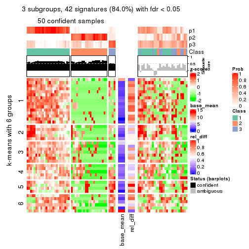
get_signatures(res, k = 4)
get_signatures(res, k = 5)
get_signatures(res, k = 6)
Signature heatmaps where rows are not scaled:
get_signatures(res, k = 2, scale_rows = FALSE)
get_signatures(res, k = 3, scale_rows = FALSE)
get_signatures(res, k = 4, scale_rows = FALSE)
get_signatures(res, k = 5, scale_rows = FALSE)
get_signatures(res, k = 6, scale_rows = FALSE)
Compare the overlap of signatures from different k:
compare_signatures(res)
get_signature() returns a data frame invisibly. TO get the list of signatures, the function
call should be assigned to a variable explicitly. In following code, if plot argument is set
to FALSE, no heatmap is plotted while only the differential analysis is performed.
# code only for demonstration
tb = get_signature(res, k = ..., plot = FALSE)
An example of the output of tb is:
#> which_row fdr mean_1 mean_2 scaled_mean_1 scaled_mean_2 km
#> 1 38 0.042760348 8.373488 9.131774 -0.5533452 0.5164555 1
#> 2 40 0.018707592 7.106213 8.469186 -0.6173731 0.5762149 1
#> 3 55 0.019134737 10.221463 11.207825 -0.6159697 0.5749050 1
#> 4 59 0.006059896 5.921854 7.869574 -0.6899429 0.6439467 1
#> 5 60 0.018055526 8.928898 10.211722 -0.6204761 0.5791110 1
#> 6 98 0.009384629 15.714769 14.887706 0.6635654 -0.6193277 2
...
The columns in tb are:
which_row: row indices corresponding to the input matrix.fdr: FDR for the differential test. mean_x: The mean value in group x.scaled_mean_x: The mean value in group x after rows are scaled.km: Row groups if k-means clustering is applied to rows.UMAP plot which shows how samples are separated.
dimension_reduction(res, k = 2, method = "UMAP")
dimension_reduction(res, k = 3, method = "UMAP")
dimension_reduction(res, k = 4, method = "UMAP")

dimension_reduction(res, k = 5, method = "UMAP")
dimension_reduction(res, k = 6, method = "UMAP")
Following heatmap shows how subgroups are split when increasing k:
collect_classes(res)

If matrix rows can be associated to genes, consider to use functional_enrichment(res,
...) to perform function enrichment for the signature genes. See this vignette for more detailed explanations.
The object with results only for a single top-value method and a single partition method can be extracted as:
res = res_list["MAD", "NMF"]
# you can also extract it by
# res = res_list["MAD:NMF"]
A summary of res and all the functions that can be applied to it:
res
#> A 'ConsensusPartition' object with k = 2, 3, 4, 5, 6.
#> On a matrix with 50 rows and 78 columns.
#> Top rows (5, 10, 15, 20, 25) are extracted by 'MAD' method.
#> Subgroups are detected by 'NMF' method.
#> Performed in total 1250 partitions by row resampling.
#> Best k for subgroups seems to be 2.
#>
#> Following methods can be applied to this 'ConsensusPartition' object:
#> [1] "cola_report" "collect_classes" "collect_plots"
#> [4] "collect_stats" "colnames" "compare_signatures"
#> [7] "consensus_heatmap" "dimension_reduction" "functional_enrichment"
#> [10] "get_anno_col" "get_anno" "get_classes"
#> [13] "get_consensus" "get_matrix" "get_membership"
#> [16] "get_param" "get_signatures" "get_stats"
#> [19] "is_best_k" "is_stable_k" "membership_heatmap"
#> [22] "ncol" "nrow" "plot_ecdf"
#> [25] "rownames" "select_partition_number" "show"
#> [28] "suggest_best_k" "test_to_known_factors"
collect_plots() function collects all the plots made from res for all k (number of partitions)
into one single page to provide an easy and fast comparison between different k.
collect_plots(res)
The plots are:
k and the heatmap of
predicted classes for each k.k.k.k.All the plots in panels can be made by individual functions and they are plotted later in this section.
select_partition_number() produces several plots showing different
statistics for choosing “optimized” k. There are following statistics:
k;k, the area increased is defined as \(A_k - A_{k-1}\).The detailed explanations of these statistics can be found in the cola vignette.
Generally speaking, lower PAC score, higher mean silhouette score or higher
concordance corresponds to better partition. Rand index and Jaccard index
measure how similar the current partition is compared to partition with k-1.
If they are too similar, we won't accept k is better than k-1.
select_partition_number(res)
The numeric values for all these statistics can be obtained by get_stats().
get_stats(res)
#> k 1-PAC mean_silhouette concordance area_increased Rand Jaccard
#> 2 2 0.0330 0.618 0.769 0.4501 0.541 0.541
#> 3 3 0.0637 0.342 0.632 0.3558 0.843 0.725
#> 4 4 0.1259 0.363 0.576 0.1377 0.811 0.601
#> 5 5 0.1955 0.363 0.533 0.0697 0.931 0.793
#> 6 6 0.3051 0.306 0.510 0.0525 0.926 0.759
suggest_best_k() suggests the best \(k\) based on these statistics. The rules are as follows:
suggest_best_k(res)
#> [1] 2
Following shows the table of the partitions (You need to click the show/hide
code output link to see it). The membership matrix (columns with name p*)
is inferred by
clue::cl_consensus()
function with the SE method. Basically the value in the membership matrix
represents the probability to belong to a certain group. The finall class
label for an item is determined with the group with highest probability it
belongs to.
In get_classes() function, the entropy is calculated from the membership
matrix and the silhouette score is calculated from the consensus matrix.
cbind(get_classes(res, k = 2), get_membership(res, k = 2))
#> class entropy silhouette p1 p2
#> SRR764980 2 0.949 0.6021 0.368 0.632
#> SRR764981 1 0.745 0.7121 0.788 0.212
#> SRR764982 2 0.653 0.6993 0.168 0.832
#> SRR764983 1 0.518 0.7562 0.884 0.116
#> SRR764984 1 0.775 0.6926 0.772 0.228
#> SRR764985 2 0.963 0.5766 0.388 0.612
#> SRR764986 2 0.973 0.5598 0.404 0.596
#> SRR764987 2 0.943 0.5969 0.360 0.640
#> SRR764988 2 0.949 0.4875 0.368 0.632
#> SRR764989 1 0.563 0.7504 0.868 0.132
#> SRR764990 1 0.529 0.7189 0.880 0.120
#> SRR764991 1 0.416 0.7620 0.916 0.084
#> SRR764992 1 0.891 0.4994 0.692 0.308
#> SRR764993 2 0.839 0.7009 0.268 0.732
#> SRR764994 1 0.625 0.7506 0.844 0.156
#> SRR764995 1 0.900 0.5385 0.684 0.316
#> SRR764996 1 0.992 -0.1018 0.552 0.448
#> SRR764997 2 0.946 0.5027 0.364 0.636
#> SRR764998 1 0.634 0.7009 0.840 0.160
#> SRR764999 1 0.584 0.7467 0.860 0.140
#> SRR765000 2 0.821 0.6391 0.256 0.744
#> SRR765001 2 0.939 0.6028 0.356 0.644
#> SRR765002 2 0.955 0.5913 0.376 0.624
#> SRR765003 1 0.662 0.7177 0.828 0.172
#> SRR765004 2 0.689 0.7084 0.184 0.816
#> SRR765005 1 0.373 0.7493 0.928 0.072
#> SRR765006 2 0.814 0.6421 0.252 0.748
#> SRR765007 1 0.966 0.1381 0.608 0.392
#> SRR765008 2 0.595 0.7021 0.144 0.856
#> SRR765009 2 0.781 0.6999 0.232 0.768
#> SRR765010 2 0.921 0.6209 0.336 0.664
#> SRR765011 1 0.402 0.7498 0.920 0.080
#> SRR765012 1 0.574 0.7517 0.864 0.136
#> SRR765013 2 0.961 0.5751 0.384 0.616
#> SRR765014 1 0.518 0.7361 0.884 0.116
#> SRR765015 1 0.802 0.6649 0.756 0.244
#> SRR765016 1 0.634 0.7414 0.840 0.160
#> SRR765017 1 0.358 0.7528 0.932 0.068
#> SRR765018 1 0.917 0.4977 0.668 0.332
#> SRR765020 1 0.278 0.7558 0.952 0.048
#> SRR765021 1 0.738 0.7070 0.792 0.208
#> SRR765022 1 0.921 0.4803 0.664 0.336
#> SRR765023 1 0.224 0.7470 0.964 0.036
#> SRR765024 1 0.595 0.7477 0.856 0.144
#> SRR765025 2 0.584 0.7006 0.140 0.860
#> SRR765026 1 0.574 0.7383 0.864 0.136
#> SRR765027 1 0.552 0.7542 0.872 0.128
#> SRR765028 2 0.653 0.6996 0.168 0.832
#> SRR765029 2 0.871 0.6403 0.292 0.708
#> SRR765030 1 0.722 0.6475 0.800 0.200
#> SRR765031 2 0.990 0.2373 0.440 0.560
#> SRR765032 1 0.850 0.5097 0.724 0.276
#> SRR765033 2 0.722 0.6833 0.200 0.800
#> SRR765034 1 0.827 0.6705 0.740 0.260
#> SRR765035 1 0.961 0.2606 0.616 0.384
#> SRR765036 1 0.913 0.4822 0.672 0.328
#> SRR765037 2 0.722 0.7095 0.200 0.800
#> SRR765038 2 0.969 0.4783 0.396 0.604
#> SRR765039 1 0.430 0.7631 0.912 0.088
#> SRR765040 1 0.955 0.4319 0.624 0.376
#> SRR765041 1 0.625 0.7007 0.844 0.156
#> SRR765042 1 0.358 0.7589 0.932 0.068
#> SRR765043 1 0.456 0.7606 0.904 0.096
#> SRR765044 2 0.917 0.5712 0.332 0.668
#> SRR765045 1 0.518 0.7572 0.884 0.116
#> SRR765046 1 0.995 -0.1716 0.540 0.460
#> SRR765047 1 0.615 0.7576 0.848 0.152
#> SRR765048 1 0.358 0.7629 0.932 0.068
#> SRR765049 1 0.983 0.0848 0.576 0.424
#> SRR765050 2 0.714 0.6965 0.196 0.804
#> SRR765051 1 0.343 0.7619 0.936 0.064
#> SRR765052 1 0.563 0.7478 0.868 0.132
#> SRR765053 1 0.996 0.0566 0.536 0.464
#> SRR765054 1 0.311 0.7591 0.944 0.056
#> SRR765055 1 0.373 0.7613 0.928 0.072
#> SRR765056 1 0.900 0.5655 0.684 0.316
#> SRR765057 2 0.760 0.7111 0.220 0.780
#> SRR765058 1 0.311 0.7580 0.944 0.056
cbind(get_classes(res, k = 3), get_membership(res, k = 3))
#> class entropy silhouette p1 p2 p3
#> SRR764980 2 0.848 0.34513 0.200 0.616 0.184
#> SRR764981 1 0.855 0.42235 0.584 0.132 0.284
#> SRR764982 2 0.823 0.01131 0.080 0.536 0.384
#> SRR764983 1 0.558 0.61900 0.788 0.036 0.176
#> SRR764984 1 0.927 0.07195 0.528 0.232 0.240
#> SRR764985 2 0.880 0.33027 0.212 0.584 0.204
#> SRR764986 2 0.884 0.29697 0.216 0.580 0.204
#> SRR764987 3 0.959 0.12912 0.200 0.380 0.420
#> SRR764988 2 0.962 -0.15810 0.220 0.456 0.324
#> SRR764989 1 0.684 0.53242 0.676 0.040 0.284
#> SRR764990 1 0.681 0.56826 0.732 0.084 0.184
#> SRR764991 1 0.560 0.63905 0.800 0.052 0.148
#> SRR764992 1 0.942 0.10298 0.484 0.196 0.320
#> SRR764993 2 0.808 0.30049 0.136 0.644 0.220
#> SRR764994 1 0.672 0.56170 0.724 0.064 0.212
#> SRR764995 3 0.902 0.27306 0.384 0.136 0.480
#> SRR764996 2 0.961 0.10467 0.368 0.428 0.204
#> SRR764997 2 0.973 -0.32497 0.228 0.420 0.352
#> SRR764998 1 0.677 0.56282 0.744 0.112 0.144
#> SRR764999 1 0.694 0.55246 0.712 0.072 0.216
#> SRR765000 2 0.888 -0.12306 0.128 0.508 0.364
#> SRR765001 2 0.942 0.20834 0.216 0.500 0.284
#> SRR765002 2 0.959 0.21145 0.240 0.476 0.284
#> SRR765003 1 0.694 0.52509 0.672 0.044 0.284
#> SRR765004 2 0.547 0.35753 0.052 0.808 0.140
#> SRR765005 1 0.470 0.63295 0.812 0.008 0.180
#> SRR765006 3 0.834 -0.00155 0.080 0.452 0.468
#> SRR765007 2 0.988 0.09195 0.368 0.372 0.260
#> SRR765008 2 0.401 0.35818 0.036 0.880 0.084
#> SRR765009 2 0.837 0.13667 0.116 0.592 0.292
#> SRR765010 2 0.952 0.16608 0.192 0.440 0.368
#> SRR765011 1 0.528 0.63123 0.796 0.024 0.180
#> SRR765012 1 0.589 0.62833 0.780 0.052 0.168
#> SRR765013 2 0.959 0.16453 0.208 0.448 0.344
#> SRR765014 1 0.616 0.58743 0.756 0.048 0.196
#> SRR765015 1 0.892 0.11975 0.544 0.152 0.304
#> SRR765016 1 0.599 0.60344 0.756 0.036 0.208
#> SRR765017 1 0.481 0.62132 0.804 0.008 0.188
#> SRR765018 1 0.951 0.07651 0.492 0.256 0.252
#> SRR765020 1 0.410 0.64462 0.852 0.008 0.140
#> SRR765021 1 0.837 0.37551 0.612 0.136 0.252
#> SRR765022 1 0.984 -0.16019 0.424 0.280 0.296
#> SRR765023 1 0.327 0.64294 0.904 0.016 0.080
#> SRR765024 1 0.601 0.61454 0.748 0.032 0.220
#> SRR765025 2 0.406 0.35752 0.032 0.876 0.092
#> SRR765026 1 0.538 0.63344 0.820 0.068 0.112
#> SRR765027 1 0.625 0.60800 0.744 0.044 0.212
#> SRR765028 2 0.786 0.09558 0.064 0.572 0.364
#> SRR765029 2 0.887 -0.05243 0.120 0.472 0.408
#> SRR765030 1 0.759 0.52747 0.680 0.208 0.112
#> SRR765031 3 0.948 0.37397 0.240 0.264 0.496
#> SRR765032 1 0.791 0.49451 0.656 0.220 0.124
#> SRR765033 2 0.625 0.38123 0.084 0.772 0.144
#> SRR765034 1 0.909 -0.01011 0.484 0.144 0.372
#> SRR765035 1 0.976 -0.04602 0.440 0.300 0.260
#> SRR765036 1 0.935 0.23014 0.516 0.232 0.252
#> SRR765037 2 0.714 0.23416 0.084 0.704 0.212
#> SRR765038 3 0.935 0.06455 0.204 0.288 0.508
#> SRR765039 1 0.529 0.64331 0.812 0.040 0.148
#> SRR765040 3 0.857 0.37698 0.328 0.116 0.556
#> SRR765041 1 0.733 0.52569 0.692 0.092 0.216
#> SRR765042 1 0.448 0.63263 0.840 0.016 0.144
#> SRR765043 1 0.459 0.64173 0.848 0.032 0.120
#> SRR765044 3 0.927 0.17232 0.160 0.384 0.456
#> SRR765045 1 0.551 0.62300 0.800 0.044 0.156
#> SRR765046 2 0.975 0.15338 0.340 0.424 0.236
#> SRR765047 1 0.568 0.63296 0.804 0.124 0.072
#> SRR765048 1 0.355 0.64806 0.900 0.036 0.064
#> SRR765049 1 0.998 -0.27618 0.364 0.332 0.304
#> SRR765050 2 0.670 0.30135 0.092 0.744 0.164
#> SRR765051 1 0.341 0.65100 0.900 0.020 0.080
#> SRR765052 1 0.658 0.48564 0.652 0.020 0.328
#> SRR765053 3 0.997 0.29999 0.340 0.296 0.364
#> SRR765054 1 0.266 0.64759 0.932 0.024 0.044
#> SRR765055 1 0.447 0.65464 0.864 0.060 0.076
#> SRR765056 1 0.950 -0.09546 0.472 0.204 0.324
#> SRR765057 2 0.596 0.35677 0.076 0.788 0.136
#> SRR765058 1 0.399 0.65064 0.884 0.052 0.064
cbind(get_classes(res, k = 4), get_membership(res, k = 4))
#> class entropy silhouette p1 p2 p3 p4
#> SRR764980 4 0.441 0.39826 0.072 0.044 0.044 0.840
#> SRR764981 1 0.840 0.27872 0.484 0.084 0.324 0.108
#> SRR764982 2 0.736 0.35778 0.020 0.580 0.260 0.140
#> SRR764983 1 0.755 0.49242 0.588 0.088 0.264 0.060
#> SRR764984 3 0.879 0.31161 0.324 0.088 0.444 0.144
#> SRR764985 4 0.519 0.39675 0.076 0.060 0.064 0.800
#> SRR764986 4 0.724 0.35226 0.104 0.164 0.076 0.656
#> SRR764987 3 0.915 -0.05137 0.072 0.252 0.360 0.316
#> SRR764988 3 0.864 0.30666 0.112 0.196 0.528 0.164
#> SRR764989 1 0.749 0.49308 0.620 0.164 0.168 0.048
#> SRR764990 1 0.598 0.57117 0.704 0.040 0.036 0.220
#> SRR764991 1 0.595 0.57909 0.724 0.032 0.184 0.060
#> SRR764992 1 0.928 0.02525 0.380 0.088 0.260 0.272
#> SRR764993 4 0.854 0.16085 0.080 0.236 0.168 0.516
#> SRR764994 1 0.757 0.42681 0.564 0.064 0.300 0.072
#> SRR764995 2 0.972 -0.14861 0.220 0.316 0.312 0.152
#> SRR764996 4 0.815 0.27834 0.252 0.088 0.108 0.552
#> SRR764997 3 0.839 0.30433 0.092 0.220 0.544 0.144
#> SRR764998 1 0.689 0.48999 0.636 0.068 0.044 0.252
#> SRR764999 1 0.726 0.47991 0.644 0.076 0.196 0.084
#> SRR765000 3 0.823 0.25183 0.048 0.216 0.528 0.208
#> SRR765001 4 0.848 0.28708 0.108 0.120 0.244 0.528
#> SRR765002 4 0.869 0.29435 0.108 0.200 0.172 0.520
#> SRR765003 1 0.821 0.37508 0.536 0.092 0.272 0.100
#> SRR765004 4 0.838 0.16961 0.048 0.228 0.220 0.504
#> SRR765005 1 0.454 0.63082 0.828 0.036 0.096 0.040
#> SRR765006 2 0.700 0.37968 0.036 0.640 0.224 0.100
#> SRR765007 4 0.876 0.29696 0.220 0.212 0.080 0.488
#> SRR765008 4 0.783 -0.01001 0.020 0.372 0.148 0.460
#> SRR765009 2 0.864 0.32254 0.112 0.528 0.164 0.196
#> SRR765010 4 0.891 0.22181 0.104 0.244 0.172 0.480
#> SRR765011 1 0.703 0.51088 0.616 0.048 0.272 0.064
#> SRR765012 1 0.756 0.53412 0.624 0.140 0.172 0.064
#> SRR765013 4 0.823 0.13615 0.096 0.380 0.072 0.452
#> SRR765014 1 0.611 0.58524 0.728 0.036 0.148 0.088
#> SRR765015 3 0.702 0.46023 0.248 0.064 0.632 0.056
#> SRR765016 1 0.637 0.54661 0.668 0.060 0.244 0.028
#> SRR765017 1 0.592 0.60639 0.752 0.084 0.052 0.112
#> SRR765018 3 0.811 0.22760 0.392 0.080 0.452 0.076
#> SRR765020 1 0.451 0.63304 0.836 0.044 0.056 0.064
#> SRR765021 3 0.806 0.07543 0.420 0.088 0.428 0.064
#> SRR765022 1 0.917 -0.21705 0.376 0.152 0.356 0.116
#> SRR765023 1 0.352 0.62491 0.880 0.028 0.028 0.064
#> SRR765024 1 0.674 0.56703 0.664 0.064 0.220 0.052
#> SRR765025 2 0.706 0.03628 0.024 0.492 0.064 0.420
#> SRR765026 1 0.450 0.63168 0.824 0.108 0.020 0.048
#> SRR765027 1 0.624 0.59885 0.728 0.060 0.140 0.072
#> SRR765028 2 0.536 0.45343 0.032 0.776 0.060 0.132
#> SRR765029 2 0.644 0.45927 0.092 0.720 0.120 0.068
#> SRR765030 1 0.705 0.48694 0.644 0.072 0.060 0.224
#> SRR765031 3 0.810 0.27131 0.088 0.304 0.524 0.084
#> SRR765032 1 0.799 0.43483 0.592 0.156 0.084 0.168
#> SRR765033 4 0.864 0.19728 0.068 0.228 0.212 0.492
#> SRR765034 3 0.754 0.40972 0.260 0.064 0.592 0.084
#> SRR765035 1 0.752 0.01394 0.444 0.436 0.028 0.092
#> SRR765036 1 0.887 -0.00266 0.368 0.056 0.220 0.356
#> SRR765037 3 0.831 -0.04693 0.024 0.216 0.416 0.344
#> SRR765038 2 0.853 0.17801 0.084 0.508 0.144 0.264
#> SRR765039 1 0.556 0.62323 0.776 0.048 0.092 0.084
#> SRR765040 3 0.900 0.18170 0.184 0.280 0.444 0.092
#> SRR765041 1 0.633 0.57347 0.708 0.120 0.028 0.144
#> SRR765042 1 0.512 0.62433 0.804 0.060 0.068 0.068
#> SRR765043 1 0.510 0.61923 0.792 0.024 0.116 0.068
#> SRR765044 3 0.757 0.27016 0.056 0.140 0.616 0.188
#> SRR765045 1 0.724 0.54418 0.636 0.144 0.180 0.040
#> SRR765046 4 0.829 0.31949 0.208 0.132 0.100 0.560
#> SRR765047 1 0.693 0.56032 0.688 0.124 0.100 0.088
#> SRR765048 1 0.536 0.59959 0.748 0.036 0.192 0.024
#> SRR765049 4 0.921 0.21972 0.200 0.140 0.200 0.460
#> SRR765050 2 0.749 0.23769 0.112 0.564 0.032 0.292
#> SRR765051 1 0.464 0.63015 0.828 0.048 0.076 0.048
#> SRR765052 1 0.849 0.30894 0.508 0.240 0.188 0.064
#> SRR765053 3 0.756 0.46551 0.132 0.116 0.640 0.112
#> SRR765054 1 0.478 0.62447 0.816 0.032 0.096 0.056
#> SRR765055 1 0.541 0.62797 0.788 0.068 0.072 0.072
#> SRR765056 3 0.840 0.43931 0.224 0.180 0.528 0.068
#> SRR765057 4 0.817 0.12804 0.020 0.276 0.240 0.464
#> SRR765058 1 0.545 0.61898 0.780 0.044 0.104 0.072
cbind(get_classes(res, k = 5), get_membership(res, k = 5))
#> class entropy silhouette p1 p2 p3 p4 p5
#> SRR764980 2 0.677 -0.0918 0.036 0.528 0.048 0.352 0.036
#> SRR764981 1 0.877 0.2650 0.460 0.104 0.208 0.132 0.096
#> SRR764982 5 0.689 0.2218 0.004 0.224 0.264 0.012 0.496
#> SRR764983 1 0.728 0.5664 0.588 0.060 0.220 0.076 0.056
#> SRR764984 3 0.882 0.3059 0.260 0.148 0.404 0.140 0.048
#> SRR764985 4 0.701 0.0579 0.040 0.420 0.064 0.448 0.028
#> SRR764986 2 0.614 0.3271 0.100 0.704 0.024 0.096 0.076
#> SRR764987 3 0.885 0.1018 0.064 0.292 0.388 0.104 0.152
#> SRR764988 3 0.861 0.2291 0.076 0.152 0.484 0.172 0.116
#> SRR764989 1 0.656 0.5693 0.664 0.028 0.140 0.060 0.108
#> SRR764990 1 0.702 0.5385 0.588 0.108 0.020 0.228 0.056
#> SRR764991 1 0.591 0.6473 0.724 0.060 0.096 0.088 0.032
#> SRR764992 2 0.821 0.1145 0.240 0.448 0.192 0.104 0.016
#> SRR764993 4 0.904 0.3168 0.084 0.176 0.176 0.428 0.136
#> SRR764994 1 0.712 0.5605 0.616 0.056 0.184 0.088 0.056
#> SRR764995 5 0.965 -0.0334 0.168 0.212 0.240 0.096 0.284
#> SRR764996 4 0.747 0.1850 0.164 0.252 0.040 0.520 0.024
#> SRR764997 3 0.826 0.2669 0.072 0.096 0.516 0.196 0.120
#> SRR764998 1 0.692 0.4209 0.520 0.092 0.020 0.336 0.032
#> SRR764999 1 0.747 0.5330 0.596 0.092 0.116 0.152 0.044
#> SRR765000 3 0.822 0.2978 0.044 0.148 0.512 0.120 0.176
#> SRR765001 2 0.584 0.3152 0.064 0.688 0.192 0.044 0.012
#> SRR765002 2 0.759 0.3449 0.112 0.600 0.104 0.072 0.112
#> SRR765003 1 0.845 0.3864 0.464 0.128 0.156 0.216 0.036
#> SRR765004 4 0.873 0.3303 0.040 0.204 0.172 0.432 0.152
#> SRR765005 1 0.564 0.6589 0.744 0.088 0.040 0.084 0.044
#> SRR765006 5 0.610 0.3061 0.004 0.080 0.200 0.056 0.660
#> SRR765007 2 0.838 0.2257 0.180 0.476 0.040 0.200 0.104
#> SRR765008 2 0.826 -0.0987 0.004 0.380 0.136 0.176 0.304
#> SRR765009 5 0.831 0.2996 0.128 0.188 0.120 0.056 0.508
#> SRR765010 2 0.693 0.3089 0.056 0.636 0.124 0.040 0.144
#> SRR765011 1 0.765 0.5091 0.576 0.064 0.156 0.144 0.060
#> SRR765012 1 0.662 0.5949 0.660 0.024 0.140 0.100 0.076
#> SRR765013 2 0.781 0.2290 0.092 0.492 0.036 0.084 0.296
#> SRR765014 1 0.729 0.5701 0.584 0.108 0.084 0.200 0.024
#> SRR765015 3 0.673 0.4363 0.236 0.048 0.612 0.028 0.076
#> SRR765016 1 0.636 0.5972 0.668 0.056 0.184 0.056 0.036
#> SRR765017 1 0.591 0.6292 0.724 0.052 0.036 0.100 0.088
#> SRR765018 3 0.824 0.3444 0.300 0.120 0.452 0.072 0.056
#> SRR765020 1 0.543 0.6626 0.760 0.048 0.072 0.080 0.040
#> SRR765021 3 0.779 0.2216 0.348 0.048 0.456 0.088 0.060
#> SRR765022 1 0.880 -0.2704 0.360 0.088 0.332 0.152 0.068
#> SRR765023 1 0.394 0.6572 0.812 0.024 0.020 0.140 0.004
#> SRR765024 1 0.659 0.6070 0.660 0.064 0.172 0.056 0.048
#> SRR765025 2 0.679 0.0154 0.004 0.492 0.048 0.084 0.372
#> SRR765026 1 0.453 0.6668 0.812 0.048 0.040 0.024 0.076
#> SRR765027 1 0.597 0.6253 0.720 0.064 0.112 0.036 0.068
#> SRR765028 5 0.524 0.3500 0.012 0.176 0.064 0.020 0.728
#> SRR765029 5 0.639 0.4161 0.100 0.084 0.108 0.024 0.684
#> SRR765030 1 0.705 0.5336 0.620 0.112 0.056 0.172 0.040
#> SRR765031 3 0.791 0.3456 0.052 0.104 0.552 0.116 0.176
#> SRR765032 1 0.789 0.4017 0.492 0.080 0.072 0.296 0.060
#> SRR765033 2 0.894 -0.1732 0.028 0.320 0.172 0.296 0.184
#> SRR765034 3 0.731 0.4395 0.200 0.080 0.588 0.100 0.032
#> SRR765035 5 0.779 0.0296 0.380 0.080 0.020 0.108 0.412
#> SRR765036 4 0.801 0.1488 0.236 0.076 0.136 0.508 0.044
#> SRR765037 3 0.860 -0.1659 0.016 0.164 0.348 0.316 0.156
#> SRR765038 5 0.806 0.0902 0.092 0.324 0.084 0.048 0.452
#> SRR765039 1 0.539 0.6529 0.764 0.072 0.056 0.040 0.068
#> SRR765040 3 0.908 0.0490 0.116 0.116 0.356 0.100 0.312
#> SRR765041 1 0.728 0.5074 0.584 0.112 0.012 0.128 0.164
#> SRR765042 1 0.468 0.6583 0.808 0.040 0.060 0.048 0.044
#> SRR765043 1 0.502 0.6533 0.780 0.048 0.100 0.044 0.028
#> SRR765044 3 0.770 0.3054 0.020 0.200 0.540 0.136 0.104
#> SRR765045 1 0.658 0.5890 0.652 0.036 0.184 0.052 0.076
#> SRR765046 2 0.714 0.3089 0.208 0.600 0.036 0.088 0.068
#> SRR765047 1 0.687 0.6020 0.660 0.100 0.100 0.060 0.080
#> SRR765048 1 0.390 0.6684 0.836 0.032 0.092 0.032 0.008
#> SRR765049 2 0.934 0.1964 0.120 0.388 0.132 0.204 0.156
#> SRR765050 5 0.720 0.1450 0.088 0.324 0.032 0.040 0.516
#> SRR765051 1 0.486 0.6613 0.788 0.032 0.064 0.092 0.024
#> SRR765052 1 0.865 0.2379 0.440 0.084 0.136 0.080 0.260
#> SRR765053 3 0.691 0.4551 0.108 0.092 0.656 0.088 0.056
#> SRR765054 1 0.497 0.6544 0.760 0.040 0.060 0.136 0.004
#> SRR765055 1 0.572 0.6698 0.744 0.060 0.052 0.076 0.068
#> SRR765056 3 0.757 0.4390 0.164 0.080 0.592 0.072 0.092
#> SRR765057 4 0.876 0.2275 0.016 0.224 0.212 0.364 0.184
#> SRR765058 1 0.578 0.6359 0.692 0.016 0.084 0.184 0.024
cbind(get_classes(res, k = 6), get_membership(res, k = 6))
#> class entropy silhouette p1 p2 p3 p4 p5 p6
#> SRR764980 2 0.330 0.3404 0.016 0.868 0.048 0.024 0.020 0.024
#> SRR764981 1 0.848 0.0774 0.348 0.072 0.272 0.048 0.040 0.220
#> SRR764982 5 0.713 0.3433 0.000 0.088 0.216 0.100 0.536 0.060
#> SRR764983 1 0.743 0.4461 0.548 0.036 0.196 0.060 0.052 0.108
#> SRR764984 3 0.865 0.2546 0.200 0.140 0.400 0.132 0.020 0.108
#> SRR764985 2 0.472 0.3369 0.016 0.780 0.064 0.068 0.016 0.056
#> SRR764986 2 0.621 0.3019 0.060 0.684 0.060 0.048 0.108 0.040
#> SRR764987 3 0.826 0.1240 0.036 0.276 0.412 0.048 0.100 0.128
#> SRR764988 3 0.732 0.3512 0.032 0.100 0.572 0.156 0.096 0.044
#> SRR764989 1 0.696 0.4811 0.572 0.056 0.204 0.012 0.052 0.104
#> SRR764990 1 0.713 0.4117 0.584 0.148 0.016 0.108 0.052 0.092
#> SRR764991 1 0.674 0.4308 0.596 0.064 0.196 0.064 0.008 0.072
#> SRR764992 4 0.830 0.1474 0.144 0.232 0.124 0.424 0.028 0.048
#> SRR764993 2 0.848 0.1069 0.052 0.444 0.172 0.056 0.164 0.112
#> SRR764994 1 0.791 0.2316 0.452 0.048 0.244 0.172 0.036 0.048
#> SRR764995 6 0.864 0.5318 0.128 0.152 0.184 0.012 0.132 0.392
#> SRR764996 2 0.792 0.0425 0.140 0.408 0.076 0.308 0.016 0.052
#> SRR764997 3 0.780 0.2372 0.056 0.172 0.528 0.056 0.064 0.124
#> SRR764998 1 0.686 0.1985 0.484 0.168 0.016 0.292 0.012 0.028
#> SRR764999 1 0.699 0.0857 0.468 0.040 0.152 0.312 0.012 0.016
#> SRR765000 3 0.845 0.1894 0.036 0.104 0.452 0.088 0.160 0.160
#> SRR765001 2 0.747 0.0954 0.012 0.424 0.096 0.352 0.052 0.064
#> SRR765002 2 0.821 0.2822 0.052 0.504 0.132 0.112 0.112 0.088
#> SRR765003 4 0.757 0.2384 0.256 0.052 0.116 0.492 0.020 0.064
#> SRR765004 2 0.801 0.0442 0.012 0.424 0.248 0.088 0.176 0.052
#> SRR765005 1 0.625 0.4535 0.628 0.044 0.032 0.220 0.044 0.032
#> SRR765006 5 0.700 0.1606 0.012 0.044 0.168 0.052 0.568 0.156
#> SRR765007 2 0.870 0.2000 0.124 0.424 0.044 0.184 0.128 0.096
#> SRR765008 5 0.704 0.1705 0.004 0.380 0.128 0.016 0.408 0.064
#> SRR765009 5 0.768 0.3860 0.060 0.164 0.120 0.024 0.532 0.100
#> SRR765010 2 0.796 0.1626 0.008 0.392 0.064 0.292 0.180 0.064
#> SRR765011 1 0.816 0.2403 0.464 0.084 0.148 0.136 0.012 0.156
#> SRR765012 1 0.762 0.4429 0.528 0.072 0.220 0.068 0.060 0.052
#> SRR765013 2 0.808 0.1681 0.048 0.444 0.080 0.060 0.280 0.088
#> SRR765014 1 0.709 0.3094 0.528 0.076 0.072 0.268 0.016 0.040
#> SRR765015 3 0.540 0.3544 0.156 0.056 0.712 0.036 0.016 0.024
#> SRR765016 1 0.687 0.4636 0.544 0.068 0.264 0.044 0.008 0.072
#> SRR765017 1 0.578 0.5210 0.708 0.056 0.036 0.020 0.076 0.104
#> SRR765018 3 0.824 0.2555 0.196 0.084 0.476 0.120 0.048 0.076
#> SRR765020 1 0.446 0.5653 0.804 0.044 0.056 0.024 0.024 0.048
#> SRR765021 3 0.737 0.2499 0.256 0.100 0.500 0.008 0.044 0.092
#> SRR765022 3 0.832 0.1809 0.312 0.092 0.384 0.056 0.040 0.116
#> SRR765023 1 0.530 0.5045 0.704 0.048 0.016 0.180 0.012 0.040
#> SRR765024 1 0.676 0.5210 0.612 0.048 0.176 0.056 0.024 0.084
#> SRR765025 5 0.673 0.2425 0.016 0.388 0.068 0.020 0.456 0.052
#> SRR765026 1 0.604 0.5465 0.704 0.060 0.056 0.052 0.056 0.072
#> SRR765027 1 0.623 0.5353 0.660 0.040 0.152 0.024 0.040 0.084
#> SRR765028 5 0.429 0.4565 0.004 0.088 0.028 0.028 0.800 0.052
#> SRR765029 5 0.575 0.4309 0.040 0.044 0.116 0.032 0.712 0.056
#> SRR765030 1 0.723 0.4191 0.584 0.160 0.080 0.088 0.032 0.056
#> SRR765031 3 0.872 -0.1857 0.056 0.096 0.428 0.100 0.136 0.184
#> SRR765032 1 0.788 0.2496 0.488 0.072 0.052 0.240 0.100 0.048
#> SRR765033 2 0.872 0.0558 0.020 0.328 0.188 0.220 0.192 0.052
#> SRR765034 3 0.597 0.3258 0.156 0.044 0.668 0.092 0.012 0.028
#> SRR765035 5 0.783 0.1234 0.288 0.080 0.036 0.064 0.460 0.072
#> SRR765036 2 0.914 -0.2166 0.204 0.260 0.160 0.248 0.024 0.104
#> SRR765037 3 0.769 0.2316 0.012 0.204 0.480 0.040 0.176 0.088
#> SRR765038 5 0.802 0.1151 0.016 0.256 0.068 0.124 0.444 0.092
#> SRR765039 1 0.599 0.5421 0.700 0.064 0.092 0.028 0.048 0.068
#> SRR765040 6 0.836 0.5141 0.068 0.056 0.276 0.056 0.136 0.408
#> SRR765041 1 0.724 0.3701 0.564 0.088 0.012 0.080 0.180 0.076
#> SRR765042 1 0.476 0.5706 0.780 0.040 0.052 0.020 0.024 0.084
#> SRR765043 1 0.479 0.5672 0.752 0.020 0.124 0.008 0.016 0.080
#> SRR765044 3 0.779 0.1689 0.020 0.164 0.472 0.088 0.036 0.220
#> SRR765045 1 0.735 0.4903 0.588 0.056 0.120 0.048 0.104 0.084
#> SRR765046 2 0.800 0.2615 0.180 0.512 0.048 0.088 0.092 0.080
#> SRR765047 1 0.686 0.4476 0.604 0.024 0.108 0.140 0.100 0.024
#> SRR765048 1 0.590 0.5272 0.676 0.036 0.152 0.092 0.020 0.024
#> SRR765049 2 0.837 0.1837 0.044 0.424 0.060 0.252 0.128 0.092
#> SRR765050 5 0.628 0.4091 0.060 0.200 0.044 0.024 0.636 0.036
#> SRR765051 1 0.648 0.4977 0.644 0.044 0.064 0.160 0.056 0.032
#> SRR765052 1 0.871 0.0345 0.420 0.068 0.084 0.080 0.144 0.204
#> SRR765053 3 0.641 0.3557 0.088 0.068 0.664 0.064 0.020 0.096
#> SRR765054 1 0.555 0.5032 0.688 0.040 0.100 0.152 0.012 0.008
#> SRR765055 1 0.612 0.5577 0.696 0.052 0.084 0.052 0.068 0.048
#> SRR765056 3 0.668 0.3229 0.128 0.052 0.644 0.072 0.048 0.056
#> SRR765057 3 0.838 0.0555 0.028 0.272 0.340 0.060 0.240 0.060
#> SRR765058 1 0.627 0.5009 0.660 0.056 0.076 0.148 0.036 0.024
Heatmaps for the consensus matrix. It visualizes the probability of two samples to be in a same group.
consensus_heatmap(res, k = 2)
consensus_heatmap(res, k = 3)
consensus_heatmap(res, k = 4)
consensus_heatmap(res, k = 5)
consensus_heatmap(res, k = 6)
Heatmaps for the membership of samples in all partitions to see how consistent they are:
membership_heatmap(res, k = 2)
membership_heatmap(res, k = 3)
membership_heatmap(res, k = 4)
membership_heatmap(res, k = 5)
membership_heatmap(res, k = 6)
As soon as we have had the classes for columns, we can look for signatures which are significantly different between classes which can be candidate marks for certain classes. Following are the heatmaps for signatures.
Signature heatmaps where rows are scaled:
get_signatures(res, k = 2)
get_signatures(res, k = 3)

get_signatures(res, k = 4)

get_signatures(res, k = 5)

get_signatures(res, k = 6)
Signature heatmaps where rows are not scaled:
get_signatures(res, k = 2, scale_rows = FALSE)
get_signatures(res, k = 3, scale_rows = FALSE)

get_signatures(res, k = 4, scale_rows = FALSE)

get_signatures(res, k = 5, scale_rows = FALSE)

get_signatures(res, k = 6, scale_rows = FALSE)
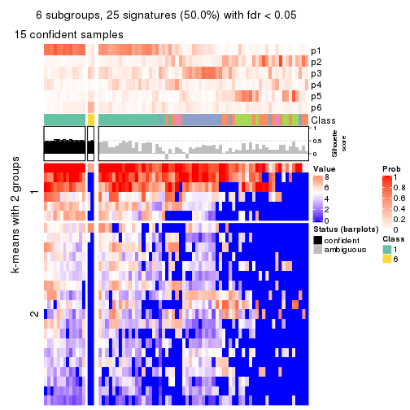
Compare the overlap of signatures from different k:
compare_signatures(res)
get_signature() returns a data frame invisibly. TO get the list of signatures, the function
call should be assigned to a variable explicitly. In following code, if plot argument is set
to FALSE, no heatmap is plotted while only the differential analysis is performed.
# code only for demonstration
tb = get_signature(res, k = ..., plot = FALSE)
An example of the output of tb is:
#> which_row fdr mean_1 mean_2 scaled_mean_1 scaled_mean_2 km
#> 1 38 0.042760348 8.373488 9.131774 -0.5533452 0.5164555 1
#> 2 40 0.018707592 7.106213 8.469186 -0.6173731 0.5762149 1
#> 3 55 0.019134737 10.221463 11.207825 -0.6159697 0.5749050 1
#> 4 59 0.006059896 5.921854 7.869574 -0.6899429 0.6439467 1
#> 5 60 0.018055526 8.928898 10.211722 -0.6204761 0.5791110 1
#> 6 98 0.009384629 15.714769 14.887706 0.6635654 -0.6193277 2
...
The columns in tb are:
which_row: row indices corresponding to the input matrix.fdr: FDR for the differential test. mean_x: The mean value in group x.scaled_mean_x: The mean value in group x after rows are scaled.km: Row groups if k-means clustering is applied to rows.UMAP plot which shows how samples are separated.
dimension_reduction(res, k = 2, method = "UMAP")
dimension_reduction(res, k = 3, method = "UMAP")
dimension_reduction(res, k = 4, method = "UMAP")
dimension_reduction(res, k = 5, method = "UMAP")
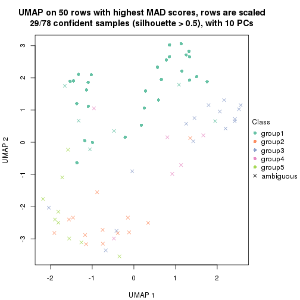
dimension_reduction(res, k = 6, method = "UMAP")
Following heatmap shows how subgroups are split when increasing k:
collect_classes(res)
If matrix rows can be associated to genes, consider to use functional_enrichment(res,
...) to perform function enrichment for the signature genes. See this vignette for more detailed explanations.
The object with results only for a single top-value method and a single partition method can be extracted as:
res = res_list["ATC", "hclust"]
# you can also extract it by
# res = res_list["ATC:hclust"]
A summary of res and all the functions that can be applied to it:
res
#> A 'ConsensusPartition' object with k = 2, 3, 4, 5, 6.
#> On a matrix with 50 rows and 78 columns.
#> Top rows (5, 10, 15, 20, 25) are extracted by 'ATC' method.
#> Subgroups are detected by 'hclust' method.
#> Performed in total 1250 partitions by row resampling.
#> Best k for subgroups seems to be 2.
#>
#> Following methods can be applied to this 'ConsensusPartition' object:
#> [1] "cola_report" "collect_classes" "collect_plots"
#> [4] "collect_stats" "colnames" "compare_signatures"
#> [7] "consensus_heatmap" "dimension_reduction" "functional_enrichment"
#> [10] "get_anno_col" "get_anno" "get_classes"
#> [13] "get_consensus" "get_matrix" "get_membership"
#> [16] "get_param" "get_signatures" "get_stats"
#> [19] "is_best_k" "is_stable_k" "membership_heatmap"
#> [22] "ncol" "nrow" "plot_ecdf"
#> [25] "rownames" "select_partition_number" "show"
#> [28] "suggest_best_k" "test_to_known_factors"
collect_plots() function collects all the plots made from res for all k (number of partitions)
into one single page to provide an easy and fast comparison between different k.
collect_plots(res)
The plots are:
k and the heatmap of
predicted classes for each k.k.k.k.All the plots in panels can be made by individual functions and they are plotted later in this section.
select_partition_number() produces several plots showing different
statistics for choosing “optimized” k. There are following statistics:
k;k, the area increased is defined as \(A_k - A_{k-1}\).The detailed explanations of these statistics can be found in the cola vignette.
Generally speaking, lower PAC score, higher mean silhouette score or higher
concordance corresponds to better partition. Rand index and Jaccard index
measure how similar the current partition is compared to partition with k-1.
If they are too similar, we won't accept k is better than k-1.
select_partition_number(res)
The numeric values for all these statistics can be obtained by get_stats().
get_stats(res)
#> k 1-PAC mean_silhouette concordance area_increased Rand Jaccard
#> 2 2 0.445 0.762 0.885 0.4789 0.505 0.505
#> 3 3 0.418 0.553 0.766 0.2520 0.921 0.846
#> 4 4 0.460 0.538 0.727 0.1045 0.914 0.804
#> 5 5 0.495 0.483 0.683 0.0663 0.934 0.830
#> 6 6 0.522 0.461 0.667 0.0394 0.964 0.899
suggest_best_k() suggests the best \(k\) based on these statistics. The rules are as follows:
suggest_best_k(res)
#> [1] 2
Following shows the table of the partitions (You need to click the show/hide
code output link to see it). The membership matrix (columns with name p*)
is inferred by
clue::cl_consensus()
function with the SE method. Basically the value in the membership matrix
represents the probability to belong to a certain group. The finall class
label for an item is determined with the group with highest probability it
belongs to.
In get_classes() function, the entropy is calculated from the membership
matrix and the silhouette score is calculated from the consensus matrix.
cbind(get_classes(res, k = 2), get_membership(res, k = 2))
#> class entropy silhouette p1 p2
#> SRR764980 2 0.0672 0.8616 0.008 0.992
#> SRR764981 1 0.8081 0.7161 0.752 0.248
#> SRR764982 2 0.0000 0.8617 0.000 1.000
#> SRR764983 1 0.0000 0.8640 1.000 0.000
#> SRR764984 2 0.9795 0.2834 0.416 0.584
#> SRR764985 2 0.0000 0.8617 0.000 1.000
#> SRR764986 2 0.0000 0.8617 0.000 1.000
#> SRR764987 2 0.0000 0.8617 0.000 1.000
#> SRR764988 1 0.8386 0.6746 0.732 0.268
#> SRR764989 1 0.1184 0.8682 0.984 0.016
#> SRR764990 1 0.8813 0.6216 0.700 0.300
#> SRR764991 1 0.7219 0.7667 0.800 0.200
#> SRR764992 2 0.2948 0.8483 0.052 0.948
#> SRR764993 2 0.4431 0.8252 0.092 0.908
#> SRR764994 1 0.1184 0.8693 0.984 0.016
#> SRR764995 2 0.0000 0.8617 0.000 1.000
#> SRR764996 1 0.4161 0.8427 0.916 0.084
#> SRR764997 1 0.9963 0.1525 0.536 0.464
#> SRR764998 1 0.0938 0.8671 0.988 0.012
#> SRR764999 1 0.6343 0.8002 0.840 0.160
#> SRR765000 2 0.8081 0.6650 0.248 0.752
#> SRR765001 2 0.0000 0.8617 0.000 1.000
#> SRR765002 2 0.0000 0.8617 0.000 1.000
#> SRR765003 1 0.4022 0.8458 0.920 0.080
#> SRR765004 2 0.9087 0.5452 0.324 0.676
#> SRR765005 1 0.2948 0.8655 0.948 0.052
#> SRR765006 2 0.0376 0.8617 0.004 0.996
#> SRR765007 1 0.8909 0.6010 0.692 0.308
#> SRR765008 2 0.3114 0.8399 0.056 0.944
#> SRR765009 2 0.0672 0.8611 0.008 0.992
#> SRR765010 2 0.0672 0.8616 0.008 0.992
#> SRR765011 1 0.2603 0.8588 0.956 0.044
#> SRR765012 1 0.2603 0.8676 0.956 0.044
#> SRR765013 2 0.1184 0.8601 0.016 0.984
#> SRR765014 1 0.0000 0.8640 1.000 0.000
#> SRR765015 1 0.6887 0.7834 0.816 0.184
#> SRR765016 1 0.1184 0.8682 0.984 0.016
#> SRR765017 1 0.7376 0.7395 0.792 0.208
#> SRR765018 1 0.9323 0.5398 0.652 0.348
#> SRR765020 1 0.0000 0.8640 1.000 0.000
#> SRR765021 1 0.7815 0.7307 0.768 0.232
#> SRR765022 1 0.8207 0.7016 0.744 0.256
#> SRR765023 1 0.0000 0.8640 1.000 0.000
#> SRR765024 1 0.1633 0.8694 0.976 0.024
#> SRR765025 2 0.0000 0.8617 0.000 1.000
#> SRR765026 1 0.0938 0.8684 0.988 0.012
#> SRR765027 1 0.2236 0.8684 0.964 0.036
#> SRR765028 2 0.0000 0.8617 0.000 1.000
#> SRR765029 2 0.4022 0.8338 0.080 0.920
#> SRR765030 1 0.4562 0.8425 0.904 0.096
#> SRR765031 2 0.9983 0.0376 0.476 0.524
#> SRR765032 1 0.0000 0.8640 1.000 0.000
#> SRR765033 2 0.8861 0.5777 0.304 0.696
#> SRR765034 1 0.7950 0.7203 0.760 0.240
#> SRR765035 2 0.7299 0.7194 0.204 0.796
#> SRR765036 1 0.1633 0.8666 0.976 0.024
#> SRR765037 2 0.9129 0.5155 0.328 0.672
#> SRR765038 2 0.0000 0.8617 0.000 1.000
#> SRR765039 1 0.3431 0.8619 0.936 0.064
#> SRR765040 2 0.5408 0.8011 0.124 0.876
#> SRR765041 2 0.9522 0.4088 0.372 0.628
#> SRR765042 1 0.2236 0.8684 0.964 0.036
#> SRR765043 1 0.0938 0.8679 0.988 0.012
#> SRR765044 2 0.0672 0.8616 0.008 0.992
#> SRR765045 1 0.1414 0.8688 0.980 0.020
#> SRR765046 2 0.0000 0.8617 0.000 1.000
#> SRR765047 1 0.0938 0.8679 0.988 0.012
#> SRR765048 1 0.1414 0.8688 0.980 0.020
#> SRR765049 2 0.0000 0.8617 0.000 1.000
#> SRR765050 2 0.7139 0.7285 0.196 0.804
#> SRR765051 1 0.2603 0.8666 0.956 0.044
#> SRR765052 2 0.9710 0.3396 0.400 0.600
#> SRR765053 1 0.9710 0.3967 0.600 0.400
#> SRR765054 1 0.0000 0.8640 1.000 0.000
#> SRR765055 1 0.0000 0.8640 1.000 0.000
#> SRR765056 1 0.6801 0.7871 0.820 0.180
#> SRR765057 1 0.9963 0.1728 0.536 0.464
#> SRR765058 1 0.0000 0.8640 1.000 0.000
cbind(get_classes(res, k = 3), get_membership(res, k = 3))
#> class entropy silhouette p1 p2 p3
#> SRR764980 2 0.1753 0.7120 0.000 0.952 0.048
#> SRR764981 1 0.8304 0.3368 0.624 0.144 0.232
#> SRR764982 2 0.3686 0.7091 0.000 0.860 0.140
#> SRR764983 1 0.1031 0.7634 0.976 0.000 0.024
#> SRR764984 2 0.9850 -0.4041 0.252 0.392 0.356
#> SRR764985 2 0.0237 0.7218 0.000 0.996 0.004
#> SRR764986 2 0.0000 0.7224 0.000 1.000 0.000
#> SRR764987 2 0.0424 0.7218 0.000 0.992 0.008
#> SRR764988 1 0.7773 0.3192 0.612 0.072 0.316
#> SRR764989 1 0.1031 0.7660 0.976 0.000 0.024
#> SRR764990 1 0.9252 -0.0848 0.448 0.156 0.396
#> SRR764991 1 0.6108 0.5842 0.732 0.028 0.240
#> SRR764992 2 0.3989 0.6495 0.012 0.864 0.124
#> SRR764993 2 0.7074 0.1727 0.020 0.500 0.480
#> SRR764994 1 0.1964 0.7667 0.944 0.000 0.056
#> SRR764995 2 0.0747 0.7180 0.000 0.984 0.016
#> SRR764996 1 0.6566 0.4316 0.612 0.012 0.376
#> SRR764997 3 0.9187 0.4210 0.412 0.148 0.440
#> SRR764998 1 0.4842 0.6613 0.776 0.000 0.224
#> SRR764999 1 0.5619 0.6235 0.744 0.012 0.244
#> SRR765000 3 0.8677 0.4689 0.144 0.280 0.576
#> SRR765001 2 0.0000 0.7224 0.000 1.000 0.000
#> SRR765002 2 0.3686 0.7091 0.000 0.860 0.140
#> SRR765003 1 0.6482 0.5187 0.680 0.024 0.296
#> SRR765004 3 0.9053 0.5464 0.220 0.224 0.556
#> SRR765005 1 0.4413 0.7358 0.832 0.008 0.160
#> SRR765006 2 0.4110 0.7069 0.004 0.844 0.152
#> SRR765007 1 0.9329 -0.1301 0.436 0.164 0.400
#> SRR765008 2 0.6449 0.5974 0.056 0.740 0.204
#> SRR765009 2 0.4121 0.7031 0.000 0.832 0.168
#> SRR765010 2 0.4291 0.6938 0.000 0.820 0.180
#> SRR765011 1 0.2796 0.7407 0.908 0.000 0.092
#> SRR765012 1 0.1878 0.7670 0.952 0.004 0.044
#> SRR765013 2 0.4645 0.6896 0.008 0.816 0.176
#> SRR765014 1 0.3551 0.7184 0.868 0.000 0.132
#> SRR765015 1 0.6247 0.5960 0.744 0.044 0.212
#> SRR765016 1 0.0592 0.7676 0.988 0.000 0.012
#> SRR765017 1 0.5737 0.5263 0.732 0.012 0.256
#> SRR765018 1 0.8937 0.0417 0.540 0.152 0.308
#> SRR765020 1 0.1031 0.7634 0.976 0.000 0.024
#> SRR765021 1 0.6735 0.5099 0.696 0.044 0.260
#> SRR765022 1 0.7159 0.4423 0.660 0.052 0.288
#> SRR765023 1 0.1163 0.7636 0.972 0.000 0.028
#> SRR765024 1 0.1399 0.7696 0.968 0.004 0.028
#> SRR765025 2 0.0237 0.7218 0.000 0.996 0.004
#> SRR765026 1 0.1753 0.7671 0.952 0.000 0.048
#> SRR765027 1 0.1647 0.7673 0.960 0.004 0.036
#> SRR765028 2 0.0237 0.7214 0.000 0.996 0.004
#> SRR765029 2 0.6704 0.4190 0.016 0.608 0.376
#> SRR765030 1 0.5070 0.6658 0.772 0.004 0.224
#> SRR765031 3 0.9696 0.5260 0.360 0.220 0.420
#> SRR765032 1 0.1411 0.7625 0.964 0.000 0.036
#> SRR765033 3 0.8714 0.0749 0.108 0.408 0.484
#> SRR765034 1 0.6869 0.4871 0.688 0.048 0.264
#> SRR765035 2 0.7905 0.1322 0.056 0.500 0.444
#> SRR765036 1 0.5216 0.6231 0.740 0.000 0.260
#> SRR765037 3 0.9424 0.3777 0.188 0.340 0.472
#> SRR765038 2 0.0237 0.7218 0.000 0.996 0.004
#> SRR765039 1 0.3445 0.7528 0.896 0.016 0.088
#> SRR765040 2 0.5576 0.5454 0.084 0.812 0.104
#> SRR765041 2 0.9823 -0.3382 0.244 0.392 0.364
#> SRR765042 1 0.1765 0.7667 0.956 0.004 0.040
#> SRR765043 1 0.1267 0.7692 0.972 0.004 0.024
#> SRR765044 2 0.4291 0.6938 0.000 0.820 0.180
#> SRR765045 1 0.1289 0.7671 0.968 0.000 0.032
#> SRR765046 2 0.0424 0.7206 0.000 0.992 0.008
#> SRR765047 1 0.1129 0.7683 0.976 0.004 0.020
#> SRR765048 1 0.1289 0.7671 0.968 0.000 0.032
#> SRR765049 2 0.3752 0.7097 0.000 0.856 0.144
#> SRR765050 2 0.7740 0.1655 0.048 0.508 0.444
#> SRR765051 1 0.2200 0.7644 0.940 0.004 0.056
#> SRR765052 2 0.9829 -0.3087 0.248 0.400 0.352
#> SRR765053 1 0.9315 -0.1801 0.520 0.220 0.260
#> SRR765054 1 0.1031 0.7634 0.976 0.000 0.024
#> SRR765055 1 0.1031 0.7634 0.976 0.000 0.024
#> SRR765056 1 0.6142 0.6019 0.748 0.040 0.212
#> SRR765057 3 0.9577 0.4347 0.400 0.196 0.404
#> SRR765058 1 0.1289 0.7633 0.968 0.000 0.032
cbind(get_classes(res, k = 4), get_membership(res, k = 4))
#> class entropy silhouette p1 p2 p3 p4
#> SRR764980 2 0.2313 0.7309 0.000 0.924 0.032 0.044
#> SRR764981 1 0.8237 0.1488 0.532 0.080 0.116 0.272
#> SRR764982 2 0.4646 0.7316 0.000 0.796 0.120 0.084
#> SRR764983 1 0.1059 0.7565 0.972 0.000 0.012 0.016
#> SRR764984 4 0.9632 0.0248 0.200 0.320 0.148 0.332
#> SRR764985 2 0.0336 0.7509 0.000 0.992 0.008 0.000
#> SRR764986 2 0.0188 0.7525 0.000 0.996 0.004 0.000
#> SRR764987 2 0.0469 0.7512 0.000 0.988 0.012 0.000
#> SRR764988 1 0.7879 0.0504 0.496 0.024 0.324 0.156
#> SRR764989 1 0.1151 0.7625 0.968 0.000 0.024 0.008
#> SRR764990 4 0.7499 0.3461 0.212 0.072 0.096 0.620
#> SRR764991 1 0.6515 0.5326 0.664 0.008 0.156 0.172
#> SRR764992 2 0.4312 0.6345 0.000 0.812 0.056 0.132
#> SRR764993 3 0.6751 0.0626 0.008 0.304 0.592 0.096
#> SRR764994 1 0.2521 0.7545 0.912 0.000 0.024 0.064
#> SRR764995 2 0.2060 0.7311 0.000 0.932 0.052 0.016
#> SRR764996 4 0.6393 0.2720 0.384 0.008 0.052 0.556
#> SRR764997 3 0.7419 0.3603 0.348 0.044 0.536 0.072
#> SRR764998 1 0.5558 0.3906 0.640 0.000 0.036 0.324
#> SRR764999 1 0.6141 0.5616 0.680 0.004 0.108 0.208
#> SRR765000 3 0.6436 0.4112 0.108 0.124 0.716 0.052
#> SRR765001 2 0.0188 0.7525 0.000 0.996 0.004 0.000
#> SRR765002 2 0.4646 0.7316 0.000 0.796 0.120 0.084
#> SRR765003 4 0.5681 0.2580 0.396 0.008 0.016 0.580
#> SRR765004 3 0.7019 0.3972 0.152 0.084 0.676 0.088
#> SRR765005 1 0.4609 0.7072 0.788 0.000 0.056 0.156
#> SRR765006 2 0.5199 0.7274 0.004 0.764 0.144 0.088
#> SRR765007 4 0.6998 0.3564 0.168 0.088 0.072 0.672
#> SRR765008 2 0.6075 0.6145 0.056 0.700 0.216 0.028
#> SRR765009 2 0.5031 0.7248 0.000 0.768 0.140 0.092
#> SRR765010 2 0.5325 0.7106 0.000 0.744 0.160 0.096
#> SRR765011 1 0.3606 0.6597 0.844 0.000 0.024 0.132
#> SRR765012 1 0.2131 0.7646 0.932 0.000 0.036 0.032
#> SRR765013 2 0.5575 0.7079 0.004 0.736 0.156 0.104
#> SRR765014 1 0.4175 0.5925 0.776 0.000 0.012 0.212
#> SRR765015 1 0.5348 0.5979 0.720 0.004 0.228 0.048
#> SRR765016 1 0.0779 0.7653 0.980 0.000 0.016 0.004
#> SRR765017 1 0.5595 0.5088 0.696 0.008 0.252 0.044
#> SRR765018 1 0.8756 0.0857 0.496 0.092 0.176 0.236
#> SRR765020 1 0.1059 0.7565 0.972 0.000 0.012 0.016
#> SRR765021 1 0.6560 0.4938 0.652 0.008 0.212 0.128
#> SRR765022 1 0.6999 0.4214 0.616 0.016 0.240 0.128
#> SRR765023 1 0.1174 0.7561 0.968 0.000 0.012 0.020
#> SRR765024 1 0.1406 0.7678 0.960 0.000 0.024 0.016
#> SRR765025 2 0.0336 0.7509 0.000 0.992 0.008 0.000
#> SRR765026 1 0.2174 0.7587 0.928 0.000 0.020 0.052
#> SRR765027 1 0.2032 0.7639 0.936 0.000 0.028 0.036
#> SRR765028 2 0.0921 0.7471 0.000 0.972 0.028 0.000
#> SRR765029 2 0.6984 0.3183 0.004 0.488 0.408 0.100
#> SRR765030 1 0.5877 0.4795 0.656 0.000 0.068 0.276
#> SRR765031 3 0.8902 0.2902 0.280 0.088 0.456 0.176
#> SRR765032 1 0.1767 0.7512 0.944 0.000 0.012 0.044
#> SRR765033 4 0.8867 0.0605 0.056 0.308 0.232 0.404
#> SRR765034 1 0.6638 0.4718 0.640 0.008 0.228 0.124
#> SRR765035 2 0.8574 0.1043 0.032 0.384 0.340 0.244
#> SRR765036 1 0.6087 0.1190 0.540 0.000 0.048 0.412
#> SRR765037 3 0.9606 0.1085 0.164 0.228 0.392 0.216
#> SRR765038 2 0.0336 0.7509 0.000 0.992 0.008 0.000
#> SRR765039 1 0.3474 0.7466 0.868 0.000 0.064 0.068
#> SRR765040 2 0.7255 0.4682 0.060 0.652 0.144 0.144
#> SRR765041 2 0.9891 -0.2878 0.196 0.316 0.256 0.232
#> SRR765042 1 0.2131 0.7641 0.932 0.000 0.032 0.036
#> SRR765043 1 0.1297 0.7656 0.964 0.000 0.016 0.020
#> SRR765044 2 0.5325 0.7106 0.000 0.744 0.160 0.096
#> SRR765045 1 0.1488 0.7659 0.956 0.000 0.032 0.012
#> SRR765046 2 0.1059 0.7520 0.000 0.972 0.016 0.012
#> SRR765047 1 0.1297 0.7649 0.964 0.000 0.016 0.020
#> SRR765048 1 0.1488 0.7659 0.956 0.000 0.032 0.012
#> SRR765049 2 0.4513 0.7348 0.000 0.804 0.120 0.076
#> SRR765050 2 0.8532 0.1371 0.032 0.396 0.340 0.232
#> SRR765051 1 0.2300 0.7626 0.924 0.000 0.048 0.028
#> SRR765052 4 0.9079 0.1258 0.124 0.292 0.144 0.440
#> SRR765053 1 0.9100 -0.0997 0.476 0.140 0.204 0.180
#> SRR765054 1 0.1059 0.7565 0.972 0.000 0.012 0.016
#> SRR765055 1 0.1059 0.7565 0.972 0.000 0.012 0.016
#> SRR765056 1 0.5315 0.6030 0.724 0.004 0.224 0.048
#> SRR765057 3 0.8053 0.3271 0.340 0.056 0.496 0.108
#> SRR765058 1 0.1388 0.7554 0.960 0.000 0.012 0.028
cbind(get_classes(res, k = 5), get_membership(res, k = 5))
#> class entropy silhouette p1 p2 p3 p4 p5
#> SRR764980 2 0.2783 0.663007 0.000 0.868 0.012 0.004 NA
#> SRR764981 1 0.9062 -0.147522 0.396 0.060 0.144 0.196 NA
#> SRR764982 2 0.4098 0.666439 0.000 0.780 0.156 0.000 NA
#> SRR764983 1 0.1211 0.698357 0.960 0.000 0.000 0.016 NA
#> SRR764984 2 0.9668 -0.389268 0.132 0.268 0.256 0.228 NA
#> SRR764985 2 0.0771 0.703922 0.000 0.976 0.004 0.000 NA
#> SRR764986 2 0.0290 0.708172 0.000 0.992 0.008 0.000 NA
#> SRR764987 2 0.0898 0.703388 0.000 0.972 0.008 0.000 NA
#> SRR764988 1 0.7956 -0.000623 0.440 0.004 0.288 0.136 NA
#> SRR764989 1 0.1278 0.710310 0.960 0.000 0.020 0.004 NA
#> SRR764990 4 0.8015 0.362712 0.124 0.040 0.076 0.484 NA
#> SRR764991 1 0.5745 0.487023 0.620 0.000 0.252 0.124 NA
#> SRR764992 2 0.5057 0.503530 0.000 0.688 0.024 0.036 NA
#> SRR764993 3 0.6532 0.277518 0.004 0.216 0.576 0.016 NA
#> SRR764994 1 0.2464 0.698956 0.904 0.000 0.048 0.044 NA
#> SRR764995 2 0.2873 0.649839 0.000 0.860 0.020 0.000 NA
#> SRR764996 4 0.6464 0.560558 0.280 0.004 0.052 0.588 NA
#> SRR764997 3 0.7196 0.180012 0.256 0.012 0.544 0.136 NA
#> SRR764998 1 0.5810 -0.120269 0.552 0.000 0.036 0.376 NA
#> SRR764999 1 0.5782 0.501416 0.656 0.004 0.188 0.144 NA
#> SRR765000 3 0.5721 0.343614 0.040 0.056 0.740 0.068 NA
#> SRR765001 2 0.0290 0.708172 0.000 0.992 0.008 0.000 NA
#> SRR765002 2 0.4098 0.666439 0.000 0.780 0.156 0.000 NA
#> SRR765003 4 0.3797 0.575392 0.232 0.000 0.004 0.756 NA
#> SRR765004 3 0.7162 0.239439 0.056 0.028 0.592 0.124 NA
#> SRR765005 1 0.4718 0.636929 0.756 0.000 0.092 0.140 NA
#> SRR765006 2 0.4779 0.658509 0.004 0.736 0.164 0.000 NA
#> SRR765007 4 0.7072 0.363283 0.072 0.056 0.048 0.600 NA
#> SRR765008 2 0.5877 0.559610 0.000 0.680 0.172 0.056 NA
#> SRR765009 2 0.4637 0.656428 0.000 0.748 0.160 0.004 NA
#> SRR765010 2 0.4918 0.622554 0.000 0.708 0.192 0.000 NA
#> SRR765011 1 0.3837 0.588158 0.800 0.000 0.012 0.164 NA
#> SRR765012 1 0.2555 0.711558 0.904 0.000 0.052 0.028 NA
#> SRR765013 2 0.5221 0.618657 0.004 0.704 0.180 0.004 NA
#> SRR765014 1 0.4516 0.344312 0.704 0.000 0.008 0.264 NA
#> SRR765015 1 0.5235 0.504966 0.620 0.000 0.312 0.068 NA
#> SRR765016 1 0.0703 0.713578 0.976 0.000 0.024 0.000 NA
#> SRR765017 1 0.6660 0.395991 0.600 0.000 0.220 0.100 NA
#> SRR765018 1 0.8542 0.111639 0.428 0.072 0.280 0.156 NA
#> SRR765020 1 0.1211 0.698357 0.960 0.000 0.000 0.016 NA
#> SRR765021 1 0.6142 0.421320 0.548 0.000 0.348 0.080 NA
#> SRR765022 1 0.5975 0.390287 0.532 0.000 0.384 0.060 NA
#> SRR765023 1 0.1310 0.697418 0.956 0.000 0.000 0.020 NA
#> SRR765024 1 0.1408 0.716687 0.948 0.000 0.044 0.000 NA
#> SRR765025 2 0.0771 0.703922 0.000 0.976 0.004 0.000 NA
#> SRR765026 1 0.2157 0.703669 0.920 0.000 0.040 0.036 NA
#> SRR765027 1 0.2591 0.710058 0.904 0.000 0.044 0.032 NA
#> SRR765028 2 0.1469 0.699821 0.000 0.948 0.016 0.000 NA
#> SRR765029 2 0.6794 0.130210 0.004 0.432 0.428 0.032 NA
#> SRR765030 1 0.6238 0.295169 0.576 0.000 0.096 0.300 NA
#> SRR765031 3 0.7937 0.236149 0.196 0.064 0.536 0.144 NA
#> SRR765032 1 0.1901 0.686506 0.932 0.000 0.004 0.040 NA
#> SRR765033 3 0.8901 0.272560 0.012 0.256 0.268 0.228 NA
#> SRR765034 1 0.5981 0.412432 0.540 0.000 0.368 0.076 NA
#> SRR765035 3 0.8092 0.168841 0.024 0.332 0.400 0.060 NA
#> SRR765036 4 0.5404 0.349436 0.436 0.000 0.024 0.520 NA
#> SRR765037 3 0.8088 0.378469 0.140 0.168 0.532 0.048 NA
#> SRR765038 2 0.0771 0.703922 0.000 0.976 0.004 0.000 NA
#> SRR765039 1 0.4151 0.677569 0.808 0.000 0.116 0.048 NA
#> SRR765040 2 0.6897 0.226247 0.004 0.504 0.088 0.056 NA
#> SRR765041 3 0.9711 0.298342 0.100 0.252 0.264 0.192 NA
#> SRR765042 1 0.2536 0.710292 0.904 0.000 0.052 0.032 NA
#> SRR765043 1 0.1243 0.713079 0.960 0.000 0.028 0.004 NA
#> SRR765044 2 0.4918 0.622554 0.000 0.708 0.192 0.000 NA
#> SRR765045 1 0.1205 0.714734 0.956 0.000 0.040 0.004 NA
#> SRR765046 2 0.1282 0.706660 0.000 0.952 0.004 0.000 NA
#> SRR765047 1 0.1579 0.713273 0.944 0.000 0.032 0.024 NA
#> SRR765048 1 0.1205 0.714734 0.956 0.000 0.040 0.004 NA
#> SRR765049 2 0.4017 0.671018 0.000 0.788 0.148 0.000 NA
#> SRR765050 3 0.8007 0.138896 0.024 0.344 0.396 0.052 NA
#> SRR765051 1 0.2359 0.707848 0.904 0.000 0.060 0.036 NA
#> SRR765052 2 0.9767 -0.365466 0.100 0.236 0.220 0.232 NA
#> SRR765053 1 0.8603 -0.124190 0.372 0.112 0.356 0.084 NA
#> SRR765054 1 0.1211 0.698357 0.960 0.000 0.000 0.016 NA
#> SRR765055 1 0.1211 0.698357 0.960 0.000 0.000 0.016 NA
#> SRR765056 1 0.4565 0.553103 0.664 0.000 0.308 0.028 NA
#> SRR765057 3 0.6549 0.124653 0.256 0.016 0.608 0.068 NA
#> SRR765058 1 0.1471 0.696221 0.952 0.000 0.004 0.020 NA
cbind(get_classes(res, k = 6), get_membership(res, k = 6))
#> class entropy silhouette p1 p2 p3 p4 p5 p6
#> SRR764980 5 0.3127 0.5196 0.000 0.056 0.004 0.000 0.840 0.100
#> SRR764981 1 0.8895 -0.1184 0.360 0.248 0.088 0.116 0.044 0.144
#> SRR764982 5 0.4031 0.6409 0.000 0.188 0.060 0.000 0.748 0.004
#> SRR764983 1 0.1542 0.7097 0.944 0.016 0.000 0.024 0.000 0.016
#> SRR764984 2 0.8564 0.3889 0.124 0.424 0.088 0.184 0.152 0.028
#> SRR764985 5 0.1049 0.6240 0.000 0.008 0.000 0.000 0.960 0.032
#> SRR764986 5 0.0790 0.6446 0.000 0.032 0.000 0.000 0.968 0.000
#> SRR764987 5 0.1116 0.6213 0.000 0.008 0.004 0.000 0.960 0.028
#> SRR764988 1 0.8180 -0.0653 0.408 0.156 0.224 0.096 0.000 0.116
#> SRR764989 1 0.1140 0.7218 0.964 0.008 0.008 0.008 0.000 0.012
#> SRR764990 4 0.7418 0.1990 0.044 0.284 0.016 0.428 0.020 0.208
#> SRR764991 1 0.6008 0.5091 0.608 0.216 0.076 0.096 0.000 0.004
#> SRR764992 5 0.5904 -0.0685 0.000 0.184 0.008 0.012 0.572 0.224
#> SRR764993 3 0.6813 -0.1017 0.000 0.160 0.548 0.012 0.168 0.112
#> SRR764994 1 0.2535 0.7132 0.892 0.048 0.008 0.048 0.000 0.004
#> SRR764995 5 0.4018 0.3403 0.000 0.044 0.024 0.000 0.772 0.160
#> SRR764996 4 0.6402 0.4460 0.176 0.088 0.024 0.608 0.000 0.104
#> SRR764997 3 0.7784 0.2476 0.232 0.248 0.396 0.072 0.000 0.052
#> SRR764998 1 0.5658 -0.1075 0.488 0.084 0.000 0.404 0.000 0.024
#> SRR764999 1 0.5969 0.5227 0.632 0.176 0.048 0.132 0.004 0.008
#> SRR765000 3 0.4719 0.3127 0.032 0.172 0.736 0.000 0.020 0.040
#> SRR765001 5 0.0790 0.6446 0.000 0.032 0.000 0.000 0.968 0.000
#> SRR765002 5 0.4092 0.6377 0.000 0.196 0.060 0.000 0.740 0.004
#> SRR765003 4 0.4815 0.4506 0.132 0.048 0.004 0.736 0.000 0.080
#> SRR765004 3 0.6328 0.2748 0.036 0.172 0.640 0.048 0.016 0.088
#> SRR765005 1 0.4734 0.6447 0.732 0.112 0.024 0.128 0.000 0.004
#> SRR765006 5 0.5110 0.6115 0.004 0.208 0.056 0.000 0.684 0.048
#> SRR765007 4 0.6556 0.2371 0.000 0.236 0.020 0.524 0.028 0.192
#> SRR765008 5 0.4771 0.4698 0.000 0.064 0.264 0.000 0.660 0.012
#> SRR765009 5 0.4536 0.6229 0.000 0.188 0.076 0.000 0.720 0.016
#> SRR765010 5 0.4631 0.5750 0.000 0.288 0.052 0.000 0.652 0.008
#> SRR765011 1 0.4632 0.5567 0.732 0.016 0.020 0.184 0.000 0.048
#> SRR765012 1 0.2265 0.7238 0.912 0.032 0.024 0.028 0.000 0.004
#> SRR765013 5 0.5143 0.5620 0.004 0.280 0.048 0.004 0.640 0.024
#> SRR765014 1 0.4555 0.3993 0.672 0.040 0.000 0.272 0.000 0.016
#> SRR765015 1 0.5855 0.4922 0.620 0.140 0.180 0.060 0.000 0.000
#> SRR765016 1 0.0520 0.7250 0.984 0.008 0.008 0.000 0.000 0.000
#> SRR765017 1 0.6732 0.4006 0.588 0.132 0.156 0.040 0.000 0.084
#> SRR765018 1 0.7634 0.0979 0.428 0.284 0.124 0.136 0.020 0.008
#> SRR765020 1 0.1542 0.7097 0.944 0.016 0.000 0.024 0.000 0.016
#> SRR765021 1 0.6680 0.3876 0.548 0.196 0.176 0.064 0.000 0.016
#> SRR765022 1 0.6713 0.3226 0.524 0.184 0.228 0.044 0.000 0.020
#> SRR765023 1 0.1622 0.7087 0.940 0.016 0.000 0.028 0.000 0.016
#> SRR765024 1 0.1261 0.7279 0.956 0.028 0.008 0.004 0.000 0.004
#> SRR765025 5 0.0972 0.6232 0.000 0.008 0.000 0.000 0.964 0.028
#> SRR765026 1 0.2263 0.7174 0.908 0.036 0.008 0.044 0.000 0.004
#> SRR765027 1 0.2244 0.7226 0.912 0.036 0.016 0.032 0.000 0.004
#> SRR765028 5 0.2197 0.5939 0.000 0.044 0.000 0.000 0.900 0.056
#> SRR765029 5 0.7451 -0.1434 0.000 0.212 0.316 0.016 0.372 0.084
#> SRR765030 1 0.6666 0.2203 0.488 0.092 0.060 0.336 0.000 0.024
#> SRR765031 2 0.7648 -0.2832 0.192 0.340 0.332 0.120 0.000 0.016
#> SRR765032 1 0.2283 0.6952 0.904 0.020 0.000 0.056 0.000 0.020
#> SRR765033 2 0.6849 0.3391 0.008 0.576 0.024 0.148 0.164 0.080
#> SRR765034 1 0.6705 0.3720 0.540 0.196 0.188 0.060 0.000 0.016
#> SRR765035 2 0.4255 0.4069 0.020 0.704 0.016 0.000 0.256 0.004
#> SRR765036 4 0.5474 0.2701 0.392 0.024 0.020 0.532 0.000 0.032
#> SRR765037 2 0.7264 0.2984 0.128 0.544 0.168 0.012 0.120 0.028
#> SRR765038 5 0.0972 0.6232 0.000 0.008 0.000 0.000 0.964 0.028
#> SRR765039 1 0.3849 0.6934 0.812 0.096 0.052 0.036 0.000 0.004
#> SRR765040 6 0.6986 0.0000 0.000 0.096 0.072 0.032 0.352 0.448
#> SRR765041 2 0.8595 0.3598 0.088 0.452 0.112 0.064 0.176 0.108
#> SRR765042 1 0.2307 0.7221 0.908 0.044 0.016 0.028 0.000 0.004
#> SRR765043 1 0.1570 0.7247 0.944 0.028 0.004 0.008 0.000 0.016
#> SRR765044 5 0.4631 0.5750 0.000 0.288 0.052 0.000 0.652 0.008
#> SRR765045 1 0.0972 0.7261 0.964 0.028 0.008 0.000 0.000 0.000
#> SRR765046 5 0.1693 0.6260 0.000 0.020 0.004 0.000 0.932 0.044
#> SRR765047 1 0.1642 0.7252 0.936 0.032 0.004 0.028 0.000 0.000
#> SRR765048 1 0.0972 0.7261 0.964 0.028 0.008 0.000 0.000 0.000
#> SRR765049 5 0.4108 0.6414 0.000 0.152 0.060 0.000 0.768 0.020
#> SRR765050 2 0.4321 0.3894 0.020 0.692 0.016 0.000 0.268 0.004
#> SRR765051 1 0.2351 0.7198 0.904 0.028 0.036 0.032 0.000 0.000
#> SRR765052 2 0.7516 0.4121 0.088 0.560 0.024 0.136 0.112 0.080
#> SRR765053 1 0.8235 -0.1267 0.360 0.332 0.148 0.068 0.064 0.028
#> SRR765054 1 0.1542 0.7097 0.944 0.016 0.000 0.024 0.000 0.016
#> SRR765055 1 0.1542 0.7097 0.944 0.016 0.000 0.024 0.000 0.016
#> SRR765056 1 0.5197 0.5513 0.664 0.140 0.176 0.020 0.000 0.000
#> SRR765057 3 0.7320 0.2487 0.252 0.192 0.460 0.040 0.000 0.056
#> SRR765058 1 0.1718 0.7075 0.936 0.020 0.000 0.024 0.000 0.020
Heatmaps for the consensus matrix. It visualizes the probability of two samples to be in a same group.
consensus_heatmap(res, k = 2)
consensus_heatmap(res, k = 3)
consensus_heatmap(res, k = 4)
consensus_heatmap(res, k = 5)
consensus_heatmap(res, k = 6)
Heatmaps for the membership of samples in all partitions to see how consistent they are:
membership_heatmap(res, k = 2)
membership_heatmap(res, k = 3)

membership_heatmap(res, k = 4)
membership_heatmap(res, k = 5)
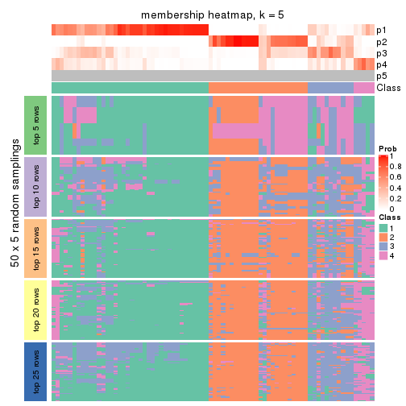
membership_heatmap(res, k = 6)
As soon as we have had the classes for columns, we can look for signatures which are significantly different between classes which can be candidate marks for certain classes. Following are the heatmaps for signatures.
Signature heatmaps where rows are scaled:
get_signatures(res, k = 2)
get_signatures(res, k = 3)
get_signatures(res, k = 4)
get_signatures(res, k = 5)
get_signatures(res, k = 6)
Signature heatmaps where rows are not scaled:
get_signatures(res, k = 2, scale_rows = FALSE)
get_signatures(res, k = 3, scale_rows = FALSE)
get_signatures(res, k = 4, scale_rows = FALSE)
get_signatures(res, k = 5, scale_rows = FALSE)
get_signatures(res, k = 6, scale_rows = FALSE)
Compare the overlap of signatures from different k:
compare_signatures(res)
get_signature() returns a data frame invisibly. TO get the list of signatures, the function
call should be assigned to a variable explicitly. In following code, if plot argument is set
to FALSE, no heatmap is plotted while only the differential analysis is performed.
# code only for demonstration
tb = get_signature(res, k = ..., plot = FALSE)
An example of the output of tb is:
#> which_row fdr mean_1 mean_2 scaled_mean_1 scaled_mean_2 km
#> 1 38 0.042760348 8.373488 9.131774 -0.5533452 0.5164555 1
#> 2 40 0.018707592 7.106213 8.469186 -0.6173731 0.5762149 1
#> 3 55 0.019134737 10.221463 11.207825 -0.6159697 0.5749050 1
#> 4 59 0.006059896 5.921854 7.869574 -0.6899429 0.6439467 1
#> 5 60 0.018055526 8.928898 10.211722 -0.6204761 0.5791110 1
#> 6 98 0.009384629 15.714769 14.887706 0.6635654 -0.6193277 2
...
The columns in tb are:
which_row: row indices corresponding to the input matrix.fdr: FDR for the differential test. mean_x: The mean value in group x.scaled_mean_x: The mean value in group x after rows are scaled.km: Row groups if k-means clustering is applied to rows.UMAP plot which shows how samples are separated.
dimension_reduction(res, k = 2, method = "UMAP")
dimension_reduction(res, k = 3, method = "UMAP")
dimension_reduction(res, k = 4, method = "UMAP")
dimension_reduction(res, k = 5, method = "UMAP")
dimension_reduction(res, k = 6, method = "UMAP")
Following heatmap shows how subgroups are split when increasing k:
collect_classes(res)
If matrix rows can be associated to genes, consider to use functional_enrichment(res,
...) to perform function enrichment for the signature genes. See this vignette for more detailed explanations.
The object with results only for a single top-value method and a single partition method can be extracted as:
res = res_list["ATC", "kmeans"]
# you can also extract it by
# res = res_list["ATC:kmeans"]
A summary of res and all the functions that can be applied to it:
res
#> A 'ConsensusPartition' object with k = 2, 3, 4, 5, 6.
#> On a matrix with 50 rows and 78 columns.
#> Top rows (5, 10, 15, 20, 25) are extracted by 'ATC' method.
#> Subgroups are detected by 'kmeans' method.
#> Performed in total 1250 partitions by row resampling.
#> Best k for subgroups seems to be 2.
#>
#> Following methods can be applied to this 'ConsensusPartition' object:
#> [1] "cola_report" "collect_classes" "collect_plots"
#> [4] "collect_stats" "colnames" "compare_signatures"
#> [7] "consensus_heatmap" "dimension_reduction" "functional_enrichment"
#> [10] "get_anno_col" "get_anno" "get_classes"
#> [13] "get_consensus" "get_matrix" "get_membership"
#> [16] "get_param" "get_signatures" "get_stats"
#> [19] "is_best_k" "is_stable_k" "membership_heatmap"
#> [22] "ncol" "nrow" "plot_ecdf"
#> [25] "rownames" "select_partition_number" "show"
#> [28] "suggest_best_k" "test_to_known_factors"
collect_plots() function collects all the plots made from res for all k (number of partitions)
into one single page to provide an easy and fast comparison between different k.
collect_plots(res)
The plots are:
k and the heatmap of
predicted classes for each k.k.k.k.All the plots in panels can be made by individual functions and they are plotted later in this section.
select_partition_number() produces several plots showing different
statistics for choosing “optimized” k. There are following statistics:
k;k, the area increased is defined as \(A_k - A_{k-1}\).The detailed explanations of these statistics can be found in the cola vignette.
Generally speaking, lower PAC score, higher mean silhouette score or higher
concordance corresponds to better partition. Rand index and Jaccard index
measure how similar the current partition is compared to partition with k-1.
If they are too similar, we won't accept k is better than k-1.
select_partition_number(res)
The numeric values for all these statistics can be obtained by get_stats().
get_stats(res)
#> k 1-PAC mean_silhouette concordance area_increased Rand Jaccard
#> 2 2 0.851 0.872 0.950 0.4808 0.520 0.520
#> 3 3 0.515 0.633 0.822 0.3501 0.775 0.589
#> 4 4 0.532 0.575 0.763 0.1187 0.866 0.646
#> 5 5 0.546 0.494 0.685 0.0628 0.931 0.760
#> 6 6 0.577 0.448 0.627 0.0396 0.920 0.690
suggest_best_k() suggests the best \(k\) based on these statistics. The rules are as follows:
suggest_best_k(res)
#> [1] 2
Following shows the table of the partitions (You need to click the show/hide
code output link to see it). The membership matrix (columns with name p*)
is inferred by
clue::cl_consensus()
function with the SE method. Basically the value in the membership matrix
represents the probability to belong to a certain group. The finall class
label for an item is determined with the group with highest probability it
belongs to.
In get_classes() function, the entropy is calculated from the membership
matrix and the silhouette score is calculated from the consensus matrix.
cbind(get_classes(res, k = 2), get_membership(res, k = 2))
#> class entropy silhouette p1 p2
#> SRR764980 2 0.0000 0.9354 0.000 1.000
#> SRR764981 1 0.3584 0.8978 0.932 0.068
#> SRR764982 2 0.0000 0.9354 0.000 1.000
#> SRR764983 1 0.0000 0.9502 1.000 0.000
#> SRR764984 2 0.0000 0.9354 0.000 1.000
#> SRR764985 2 0.0000 0.9354 0.000 1.000
#> SRR764986 2 0.0000 0.9354 0.000 1.000
#> SRR764987 2 0.0000 0.9354 0.000 1.000
#> SRR764988 1 0.0000 0.9502 1.000 0.000
#> SRR764989 1 0.0000 0.9502 1.000 0.000
#> SRR764990 1 0.8016 0.6708 0.756 0.244
#> SRR764991 1 0.0000 0.9502 1.000 0.000
#> SRR764992 2 0.0000 0.9354 0.000 1.000
#> SRR764993 2 0.4562 0.8588 0.096 0.904
#> SRR764994 1 0.0000 0.9502 1.000 0.000
#> SRR764995 2 0.0000 0.9354 0.000 1.000
#> SRR764996 1 0.3274 0.9073 0.940 0.060
#> SRR764997 1 0.2236 0.9261 0.964 0.036
#> SRR764998 1 0.0000 0.9502 1.000 0.000
#> SRR764999 1 0.0000 0.9502 1.000 0.000
#> SRR765000 2 0.9754 0.3166 0.408 0.592
#> SRR765001 2 0.0000 0.9354 0.000 1.000
#> SRR765002 2 0.0000 0.9354 0.000 1.000
#> SRR765003 1 0.2603 0.9196 0.956 0.044
#> SRR765004 1 0.9710 0.3117 0.600 0.400
#> SRR765005 1 0.0000 0.9502 1.000 0.000
#> SRR765006 2 0.0000 0.9354 0.000 1.000
#> SRR765007 2 0.9993 0.0507 0.484 0.516
#> SRR765008 2 0.0000 0.9354 0.000 1.000
#> SRR765009 2 0.0000 0.9354 0.000 1.000
#> SRR765010 2 0.0000 0.9354 0.000 1.000
#> SRR765011 1 0.0000 0.9502 1.000 0.000
#> SRR765012 1 0.0000 0.9502 1.000 0.000
#> SRR765013 2 0.0000 0.9354 0.000 1.000
#> SRR765014 1 0.0000 0.9502 1.000 0.000
#> SRR765015 1 0.0000 0.9502 1.000 0.000
#> SRR765016 1 0.0000 0.9502 1.000 0.000
#> SRR765017 1 0.2603 0.9182 0.956 0.044
#> SRR765018 1 0.4562 0.8704 0.904 0.096
#> SRR765020 1 0.0000 0.9502 1.000 0.000
#> SRR765021 1 0.0000 0.9502 1.000 0.000
#> SRR765022 1 0.0000 0.9502 1.000 0.000
#> SRR765023 1 0.0000 0.9502 1.000 0.000
#> SRR765024 1 0.0000 0.9502 1.000 0.000
#> SRR765025 2 0.0000 0.9354 0.000 1.000
#> SRR765026 1 0.0000 0.9502 1.000 0.000
#> SRR765027 1 0.0000 0.9502 1.000 0.000
#> SRR765028 2 0.0000 0.9354 0.000 1.000
#> SRR765029 2 0.0000 0.9354 0.000 1.000
#> SRR765030 1 0.3733 0.8936 0.928 0.072
#> SRR765031 1 0.6148 0.8059 0.848 0.152
#> SRR765032 1 0.0000 0.9502 1.000 0.000
#> SRR765033 2 0.3584 0.8851 0.068 0.932
#> SRR765034 1 0.0000 0.9502 1.000 0.000
#> SRR765035 2 0.6712 0.7660 0.176 0.824
#> SRR765036 1 0.0376 0.9479 0.996 0.004
#> SRR765037 1 0.9933 0.1419 0.548 0.452
#> SRR765038 2 0.0000 0.9354 0.000 1.000
#> SRR765039 1 0.0000 0.9502 1.000 0.000
#> SRR765040 2 0.2778 0.9031 0.048 0.952
#> SRR765041 2 0.9896 0.2287 0.440 0.560
#> SRR765042 1 0.0000 0.9502 1.000 0.000
#> SRR765043 1 0.0000 0.9502 1.000 0.000
#> SRR765044 2 0.0000 0.9354 0.000 1.000
#> SRR765045 1 0.0000 0.9502 1.000 0.000
#> SRR765046 2 0.0000 0.9354 0.000 1.000
#> SRR765047 1 0.0000 0.9502 1.000 0.000
#> SRR765048 1 0.0000 0.9502 1.000 0.000
#> SRR765049 2 0.0000 0.9354 0.000 1.000
#> SRR765050 2 0.2423 0.9090 0.040 0.960
#> SRR765051 1 0.0000 0.9502 1.000 0.000
#> SRR765052 1 0.9993 0.0252 0.516 0.484
#> SRR765053 1 0.0376 0.9480 0.996 0.004
#> SRR765054 1 0.0000 0.9502 1.000 0.000
#> SRR765055 1 0.0000 0.9502 1.000 0.000
#> SRR765056 1 0.0000 0.9502 1.000 0.000
#> SRR765057 1 0.0672 0.9457 0.992 0.008
#> SRR765058 1 0.0000 0.9502 1.000 0.000
cbind(get_classes(res, k = 3), get_membership(res, k = 3))
#> class entropy silhouette p1 p2 p3
#> SRR764980 2 0.0424 0.8880 0.000 0.992 0.008
#> SRR764981 3 0.6460 0.1647 0.440 0.004 0.556
#> SRR764982 2 0.1643 0.8875 0.000 0.956 0.044
#> SRR764983 1 0.0237 0.7787 0.996 0.000 0.004
#> SRR764984 3 0.4931 0.5039 0.000 0.232 0.768
#> SRR764985 2 0.0000 0.8891 0.000 1.000 0.000
#> SRR764986 2 0.0237 0.8893 0.000 0.996 0.004
#> SRR764987 2 0.0000 0.8891 0.000 1.000 0.000
#> SRR764988 1 0.5988 0.3921 0.632 0.000 0.368
#> SRR764989 1 0.1753 0.7715 0.952 0.000 0.048
#> SRR764990 3 0.5355 0.6253 0.160 0.036 0.804
#> SRR764991 1 0.6235 0.2149 0.564 0.000 0.436
#> SRR764992 2 0.4121 0.7722 0.000 0.832 0.168
#> SRR764993 3 0.7395 -0.1496 0.032 0.476 0.492
#> SRR764994 1 0.2261 0.7624 0.932 0.000 0.068
#> SRR764995 2 0.0424 0.8885 0.000 0.992 0.008
#> SRR764996 3 0.6260 0.0734 0.448 0.000 0.552
#> SRR764997 3 0.5363 0.5429 0.276 0.000 0.724
#> SRR764998 1 0.5810 0.4399 0.664 0.000 0.336
#> SRR764999 1 0.6309 0.0196 0.500 0.000 0.500
#> SRR765000 3 0.7180 0.6319 0.116 0.168 0.716
#> SRR765001 2 0.0237 0.8893 0.000 0.996 0.004
#> SRR765002 2 0.2878 0.8772 0.000 0.904 0.096
#> SRR765003 1 0.6280 0.2154 0.540 0.000 0.460
#> SRR765004 3 0.7226 0.5887 0.236 0.076 0.688
#> SRR765005 1 0.5706 0.4977 0.680 0.000 0.320
#> SRR765006 2 0.2625 0.8817 0.000 0.916 0.084
#> SRR765007 3 0.4652 0.6639 0.080 0.064 0.856
#> SRR765008 2 0.4172 0.8395 0.004 0.840 0.156
#> SRR765009 2 0.3192 0.8717 0.000 0.888 0.112
#> SRR765010 2 0.3551 0.8643 0.000 0.868 0.132
#> SRR765011 1 0.1411 0.7673 0.964 0.000 0.036
#> SRR765012 1 0.2066 0.7695 0.940 0.000 0.060
#> SRR765013 2 0.3686 0.8598 0.000 0.860 0.140
#> SRR765014 1 0.3412 0.6995 0.876 0.000 0.124
#> SRR765015 1 0.5905 0.3995 0.648 0.000 0.352
#> SRR765016 1 0.1529 0.7740 0.960 0.000 0.040
#> SRR765017 1 0.5178 0.5829 0.744 0.000 0.256
#> SRR765018 3 0.5497 0.5182 0.292 0.000 0.708
#> SRR765020 1 0.0237 0.7787 0.996 0.000 0.004
#> SRR765021 1 0.6274 0.1147 0.544 0.000 0.456
#> SRR765022 1 0.6267 0.1308 0.548 0.000 0.452
#> SRR765023 1 0.0592 0.7767 0.988 0.000 0.012
#> SRR765024 1 0.1643 0.7728 0.956 0.000 0.044
#> SRR765025 2 0.0000 0.8891 0.000 1.000 0.000
#> SRR765026 1 0.1289 0.7769 0.968 0.000 0.032
#> SRR765027 1 0.1964 0.7686 0.944 0.000 0.056
#> SRR765028 2 0.0237 0.8893 0.000 0.996 0.004
#> SRR765029 2 0.5560 0.6770 0.000 0.700 0.300
#> SRR765030 1 0.6079 0.3555 0.612 0.000 0.388
#> SRR765031 3 0.4346 0.6314 0.184 0.000 0.816
#> SRR765032 1 0.0592 0.7767 0.988 0.000 0.012
#> SRR765033 3 0.5443 0.4590 0.004 0.260 0.736
#> SRR765034 3 0.6305 0.0340 0.484 0.000 0.516
#> SRR765035 3 0.6096 0.4282 0.016 0.280 0.704
#> SRR765036 1 0.6204 0.2571 0.576 0.000 0.424
#> SRR765037 3 0.3742 0.6743 0.072 0.036 0.892
#> SRR765038 2 0.0000 0.8891 0.000 1.000 0.000
#> SRR765039 1 0.5678 0.5215 0.684 0.000 0.316
#> SRR765040 2 0.5810 0.5153 0.000 0.664 0.336
#> SRR765041 3 0.4652 0.6789 0.064 0.080 0.856
#> SRR765042 1 0.2356 0.7614 0.928 0.000 0.072
#> SRR765043 1 0.0237 0.7795 0.996 0.000 0.004
#> SRR765044 2 0.3752 0.8601 0.000 0.856 0.144
#> SRR765045 1 0.0892 0.7780 0.980 0.000 0.020
#> SRR765046 2 0.0000 0.8891 0.000 1.000 0.000
#> SRR765047 1 0.0237 0.7795 0.996 0.000 0.004
#> SRR765048 1 0.0424 0.7797 0.992 0.000 0.008
#> SRR765049 2 0.3551 0.8641 0.000 0.868 0.132
#> SRR765050 2 0.6625 0.3255 0.008 0.552 0.440
#> SRR765051 1 0.0237 0.7795 0.996 0.000 0.004
#> SRR765052 3 0.4558 0.6594 0.044 0.100 0.856
#> SRR765053 3 0.3816 0.6480 0.148 0.000 0.852
#> SRR765054 1 0.0592 0.7767 0.988 0.000 0.012
#> SRR765055 1 0.0237 0.7787 0.996 0.000 0.004
#> SRR765056 1 0.5363 0.5557 0.724 0.000 0.276
#> SRR765057 3 0.6045 0.3597 0.380 0.000 0.620
#> SRR765058 1 0.0592 0.7767 0.988 0.000 0.012
cbind(get_classes(res, k = 4), get_membership(res, k = 4))
#> class entropy silhouette p1 p2 p3 p4
#> SRR764980 2 0.1406 0.8303 0.000 0.960 0.016 0.024
#> SRR764981 3 0.7751 0.4007 0.304 0.004 0.468 0.224
#> SRR764982 2 0.2450 0.8232 0.000 0.912 0.016 0.072
#> SRR764983 1 0.0376 0.7730 0.992 0.000 0.004 0.004
#> SRR764984 4 0.7519 0.3605 0.000 0.184 0.392 0.424
#> SRR764985 2 0.1182 0.8308 0.000 0.968 0.016 0.016
#> SRR764986 2 0.0000 0.8305 0.000 1.000 0.000 0.000
#> SRR764987 2 0.1182 0.8308 0.000 0.968 0.016 0.016
#> SRR764988 3 0.6878 0.2782 0.424 0.000 0.472 0.104
#> SRR764989 1 0.2799 0.7364 0.884 0.000 0.108 0.008
#> SRR764990 4 0.4756 0.5370 0.020 0.008 0.216 0.756
#> SRR764991 3 0.7044 0.1325 0.428 0.000 0.452 0.120
#> SRR764992 2 0.4799 0.6056 0.000 0.744 0.032 0.224
#> SRR764993 3 0.7369 -0.0308 0.004 0.256 0.544 0.196
#> SRR764994 1 0.2830 0.7556 0.900 0.000 0.060 0.040
#> SRR764995 2 0.0469 0.8285 0.000 0.988 0.000 0.012
#> SRR764996 4 0.7067 0.3076 0.288 0.000 0.160 0.552
#> SRR764997 3 0.3088 0.5232 0.060 0.000 0.888 0.052
#> SRR764998 1 0.6114 0.2163 0.524 0.000 0.048 0.428
#> SRR764999 1 0.7841 -0.0976 0.400 0.000 0.276 0.324
#> SRR765000 3 0.5868 0.2974 0.024 0.076 0.732 0.168
#> SRR765001 2 0.0000 0.8305 0.000 1.000 0.000 0.000
#> SRR765002 2 0.4055 0.7971 0.000 0.832 0.060 0.108
#> SRR765003 4 0.6229 0.2985 0.284 0.000 0.088 0.628
#> SRR765004 3 0.5930 0.4567 0.076 0.020 0.720 0.184
#> SRR765005 1 0.6976 0.3708 0.544 0.000 0.136 0.320
#> SRR765006 2 0.3486 0.8133 0.000 0.864 0.044 0.092
#> SRR765007 4 0.5012 0.5567 0.008 0.032 0.212 0.748
#> SRR765008 2 0.5971 0.7124 0.004 0.704 0.168 0.124
#> SRR765009 2 0.4938 0.7793 0.000 0.772 0.080 0.148
#> SRR765010 2 0.4804 0.7677 0.000 0.776 0.064 0.160
#> SRR765011 1 0.3271 0.6861 0.856 0.000 0.012 0.132
#> SRR765012 1 0.3743 0.6950 0.824 0.000 0.160 0.016
#> SRR765013 2 0.5212 0.7466 0.000 0.740 0.068 0.192
#> SRR765014 1 0.4008 0.5985 0.756 0.000 0.000 0.244
#> SRR765015 3 0.5055 0.4854 0.368 0.000 0.624 0.008
#> SRR765016 1 0.2918 0.7309 0.876 0.000 0.116 0.008
#> SRR765017 1 0.5993 0.3287 0.628 0.000 0.308 0.064
#> SRR765018 3 0.4181 0.5664 0.128 0.000 0.820 0.052
#> SRR765020 1 0.0376 0.7730 0.992 0.000 0.004 0.004
#> SRR765021 3 0.4630 0.5906 0.252 0.000 0.732 0.016
#> SRR765022 3 0.5108 0.5627 0.308 0.000 0.672 0.020
#> SRR765023 1 0.1022 0.7654 0.968 0.000 0.000 0.032
#> SRR765024 1 0.3032 0.7270 0.868 0.000 0.124 0.008
#> SRR765025 2 0.1182 0.8308 0.000 0.968 0.016 0.016
#> SRR765026 1 0.1798 0.7713 0.944 0.000 0.040 0.016
#> SRR765027 1 0.3217 0.7215 0.860 0.000 0.128 0.012
#> SRR765028 2 0.0672 0.8295 0.000 0.984 0.008 0.008
#> SRR765029 2 0.7723 0.1910 0.000 0.420 0.348 0.232
#> SRR765030 1 0.7614 0.1075 0.468 0.000 0.232 0.300
#> SRR765031 3 0.4332 0.4195 0.032 0.000 0.792 0.176
#> SRR765032 1 0.1022 0.7654 0.968 0.000 0.000 0.032
#> SRR765033 4 0.7054 0.4943 0.000 0.144 0.320 0.536
#> SRR765034 3 0.4319 0.5975 0.228 0.000 0.760 0.012
#> SRR765035 4 0.6537 0.5115 0.000 0.164 0.200 0.636
#> SRR765036 1 0.6499 0.2153 0.524 0.000 0.076 0.400
#> SRR765037 3 0.5543 0.2304 0.044 0.004 0.688 0.264
#> SRR765038 2 0.0657 0.8305 0.000 0.984 0.012 0.004
#> SRR765039 1 0.6712 0.1233 0.552 0.000 0.344 0.104
#> SRR765040 2 0.6974 0.2525 0.000 0.564 0.284 0.152
#> SRR765041 4 0.5636 0.4861 0.016 0.024 0.288 0.672
#> SRR765042 1 0.3606 0.7095 0.844 0.000 0.132 0.024
#> SRR765043 1 0.0817 0.7727 0.976 0.000 0.024 0.000
#> SRR765044 2 0.4937 0.7616 0.000 0.764 0.064 0.172
#> SRR765045 1 0.2401 0.7470 0.904 0.000 0.092 0.004
#> SRR765046 2 0.0804 0.8329 0.000 0.980 0.012 0.008
#> SRR765047 1 0.0895 0.7739 0.976 0.000 0.020 0.004
#> SRR765048 1 0.1722 0.7663 0.944 0.000 0.048 0.008
#> SRR765049 2 0.5417 0.7552 0.000 0.732 0.088 0.180
#> SRR765050 4 0.7706 0.0563 0.000 0.364 0.224 0.412
#> SRR765051 1 0.0779 0.7738 0.980 0.000 0.016 0.004
#> SRR765052 4 0.4944 0.5599 0.004 0.032 0.220 0.744
#> SRR765053 3 0.5109 0.3637 0.060 0.000 0.744 0.196
#> SRR765054 1 0.0921 0.7662 0.972 0.000 0.000 0.028
#> SRR765055 1 0.0376 0.7730 0.992 0.000 0.004 0.004
#> SRR765056 3 0.5105 0.3491 0.432 0.000 0.564 0.004
#> SRR765057 3 0.4188 0.5639 0.148 0.000 0.812 0.040
#> SRR765058 1 0.1022 0.7654 0.968 0.000 0.000 0.032
cbind(get_classes(res, k = 5), get_membership(res, k = 5))
#> class entropy silhouette p1 p2 p3 p4 p5
#> SRR764980 2 0.1571 0.7192 0.000 0.936 0.000 0.004 0.060
#> SRR764981 3 0.7543 0.3923 0.192 0.000 0.520 0.132 0.156
#> SRR764982 2 0.3647 0.6802 0.000 0.764 0.004 0.004 0.228
#> SRR764983 1 0.0981 0.7301 0.972 0.000 0.008 0.008 0.012
#> SRR764984 5 0.7517 0.3627 0.000 0.104 0.228 0.160 0.508
#> SRR764985 2 0.1043 0.7284 0.000 0.960 0.000 0.000 0.040
#> SRR764986 2 0.1121 0.7297 0.000 0.956 0.000 0.000 0.044
#> SRR764987 2 0.0609 0.7271 0.000 0.980 0.000 0.000 0.020
#> SRR764988 3 0.6959 0.4093 0.276 0.000 0.532 0.140 0.052
#> SRR764989 1 0.4197 0.6799 0.752 0.000 0.212 0.032 0.004
#> SRR764990 4 0.6120 0.2162 0.000 0.004 0.140 0.556 0.300
#> SRR764991 3 0.7139 0.2634 0.296 0.000 0.484 0.180 0.040
#> SRR764992 2 0.5946 0.2704 0.000 0.616 0.008 0.148 0.228
#> SRR764993 5 0.7235 0.3046 0.000 0.180 0.336 0.040 0.444
#> SRR764994 1 0.5443 0.6624 0.696 0.000 0.152 0.136 0.016
#> SRR764995 2 0.2116 0.7135 0.000 0.912 0.004 0.008 0.076
#> SRR764996 4 0.5736 0.4268 0.172 0.000 0.068 0.692 0.068
#> SRR764997 3 0.3997 0.4827 0.004 0.000 0.804 0.076 0.116
#> SRR764998 4 0.5429 0.2168 0.424 0.000 0.036 0.528 0.012
#> SRR764999 4 0.7551 0.2801 0.288 0.000 0.268 0.400 0.044
#> SRR765000 3 0.6345 0.1592 0.004 0.056 0.600 0.064 0.276
#> SRR765001 2 0.1121 0.7297 0.000 0.956 0.000 0.000 0.044
#> SRR765002 2 0.3906 0.6440 0.000 0.704 0.000 0.004 0.292
#> SRR765003 4 0.4304 0.4387 0.112 0.000 0.060 0.800 0.028
#> SRR765004 3 0.6415 0.2729 0.008 0.028 0.588 0.096 0.280
#> SRR765005 1 0.7116 0.1640 0.404 0.000 0.220 0.356 0.020
#> SRR765006 2 0.4296 0.6491 0.000 0.692 0.008 0.008 0.292
#> SRR765007 4 0.5806 0.1621 0.000 0.004 0.096 0.568 0.332
#> SRR765008 2 0.5322 0.5416 0.000 0.672 0.140 0.000 0.188
#> SRR765009 2 0.3983 0.5937 0.000 0.660 0.000 0.000 0.340
#> SRR765010 2 0.4235 0.5296 0.000 0.576 0.000 0.000 0.424
#> SRR765011 1 0.3209 0.5930 0.812 0.000 0.000 0.180 0.008
#> SRR765012 1 0.5217 0.5846 0.648 0.000 0.288 0.056 0.008
#> SRR765013 2 0.4745 0.4994 0.000 0.560 0.004 0.012 0.424
#> SRR765014 1 0.4127 0.3391 0.680 0.000 0.000 0.312 0.008
#> SRR765015 3 0.3690 0.5611 0.224 0.000 0.764 0.012 0.000
#> SRR765016 1 0.4228 0.6780 0.748 0.000 0.216 0.032 0.004
#> SRR765017 1 0.6725 0.1824 0.484 0.000 0.380 0.080 0.056
#> SRR765018 3 0.3472 0.5996 0.076 0.000 0.856 0.036 0.032
#> SRR765020 1 0.0981 0.7301 0.972 0.000 0.008 0.008 0.012
#> SRR765021 3 0.3001 0.6068 0.144 0.000 0.844 0.004 0.008
#> SRR765022 3 0.3205 0.5970 0.176 0.000 0.816 0.004 0.004
#> SRR765023 1 0.1331 0.7137 0.952 0.000 0.000 0.040 0.008
#> SRR765024 1 0.4717 0.6463 0.704 0.000 0.244 0.048 0.004
#> SRR765025 2 0.0609 0.7271 0.000 0.980 0.000 0.000 0.020
#> SRR765026 1 0.4447 0.7154 0.768 0.000 0.136 0.092 0.004
#> SRR765027 1 0.4649 0.6475 0.708 0.000 0.244 0.044 0.004
#> SRR765028 2 0.1197 0.7270 0.000 0.952 0.000 0.000 0.048
#> SRR765029 5 0.7586 0.2245 0.000 0.300 0.200 0.064 0.436
#> SRR765030 1 0.7756 -0.1634 0.384 0.000 0.236 0.316 0.064
#> SRR765031 3 0.5513 0.3438 0.000 0.000 0.652 0.180 0.168
#> SRR765032 1 0.1522 0.7098 0.944 0.000 0.000 0.044 0.012
#> SRR765033 5 0.7061 0.2435 0.000 0.060 0.124 0.312 0.504
#> SRR765034 3 0.2339 0.6116 0.100 0.000 0.892 0.004 0.004
#> SRR765035 5 0.7074 0.2790 0.000 0.080 0.092 0.340 0.488
#> SRR765036 4 0.6084 0.2338 0.432 0.000 0.048 0.484 0.036
#> SRR765037 3 0.6826 0.0770 0.032 0.000 0.488 0.136 0.344
#> SRR765038 2 0.0671 0.7308 0.000 0.980 0.000 0.004 0.016
#> SRR765039 3 0.6945 0.0720 0.376 0.000 0.456 0.128 0.040
#> SRR765040 2 0.7843 -0.1347 0.000 0.440 0.140 0.132 0.288
#> SRR765041 4 0.6743 0.0122 0.000 0.004 0.216 0.420 0.360
#> SRR765042 1 0.5240 0.6084 0.664 0.000 0.252 0.080 0.004
#> SRR765043 1 0.1864 0.7473 0.924 0.000 0.068 0.004 0.004
#> SRR765044 2 0.4390 0.5119 0.000 0.568 0.000 0.004 0.428
#> SRR765045 1 0.4046 0.7023 0.780 0.000 0.180 0.032 0.008
#> SRR765046 2 0.1443 0.7310 0.000 0.948 0.004 0.004 0.044
#> SRR765047 1 0.2787 0.7462 0.880 0.000 0.088 0.028 0.004
#> SRR765048 1 0.3142 0.7348 0.856 0.000 0.108 0.032 0.004
#> SRR765049 2 0.4196 0.5737 0.000 0.640 0.004 0.000 0.356
#> SRR765050 5 0.7076 0.4429 0.000 0.220 0.060 0.176 0.544
#> SRR765051 1 0.3559 0.7457 0.836 0.000 0.096 0.064 0.004
#> SRR765052 4 0.6274 0.2002 0.000 0.004 0.152 0.528 0.316
#> SRR765053 3 0.5419 0.4091 0.020 0.000 0.696 0.100 0.184
#> SRR765054 1 0.1251 0.7147 0.956 0.000 0.000 0.036 0.008
#> SRR765055 1 0.0968 0.7265 0.972 0.000 0.004 0.012 0.012
#> SRR765056 3 0.4829 0.4317 0.300 0.000 0.660 0.036 0.004
#> SRR765057 3 0.4846 0.5441 0.084 0.000 0.768 0.040 0.108
#> SRR765058 1 0.1597 0.7066 0.940 0.000 0.000 0.048 0.012
cbind(get_classes(res, k = 6), get_membership(res, k = 6))
#> class entropy silhouette p1 p2 p3 p4 p5 p6
#> SRR764980 5 0.2069 0.7017 0.000 0.068 0.000 0.004 0.908 0.020
#> SRR764981 3 0.6957 0.3760 0.080 0.148 0.580 0.116 0.000 0.076
#> SRR764982 5 0.4130 0.6767 0.000 0.240 0.000 0.008 0.716 0.036
#> SRR764983 1 0.1226 0.5791 0.952 0.004 0.040 0.004 0.000 0.000
#> SRR764984 2 0.6800 0.4406 0.000 0.596 0.140 0.068 0.080 0.116
#> SRR764985 5 0.1261 0.7198 0.000 0.024 0.000 0.000 0.952 0.024
#> SRR764986 5 0.1334 0.7233 0.000 0.032 0.000 0.000 0.948 0.020
#> SRR764987 5 0.0858 0.7167 0.000 0.004 0.000 0.000 0.968 0.028
#> SRR764988 3 0.7023 0.3583 0.176 0.028 0.544 0.136 0.000 0.116
#> SRR764989 1 0.4486 0.4776 0.584 0.004 0.388 0.020 0.000 0.004
#> SRR764990 2 0.6533 0.5124 0.012 0.424 0.060 0.412 0.000 0.092
#> SRR764991 3 0.6456 0.2916 0.212 0.016 0.560 0.168 0.000 0.044
#> SRR764992 5 0.5614 0.2363 0.000 0.320 0.004 0.072 0.572 0.032
#> SRR764993 6 0.6659 0.4591 0.000 0.180 0.116 0.008 0.136 0.560
#> SRR764994 1 0.5885 0.3691 0.496 0.000 0.296 0.204 0.000 0.004
#> SRR764995 5 0.2862 0.6901 0.000 0.080 0.000 0.008 0.864 0.048
#> SRR764996 4 0.5662 0.4442 0.116 0.076 0.028 0.692 0.000 0.088
#> SRR764997 3 0.5116 0.0333 0.000 0.044 0.588 0.028 0.000 0.340
#> SRR764998 4 0.5209 0.4945 0.364 0.020 0.024 0.572 0.000 0.020
#> SRR764999 4 0.7147 0.4396 0.232 0.028 0.284 0.420 0.000 0.036
#> SRR765000 6 0.5707 0.3910 0.000 0.084 0.308 0.004 0.032 0.572
#> SRR765001 5 0.1334 0.7233 0.000 0.032 0.000 0.000 0.948 0.020
#> SRR765002 5 0.4268 0.6612 0.000 0.272 0.000 0.004 0.684 0.040
#> SRR765003 4 0.4802 0.4347 0.084 0.032 0.052 0.764 0.000 0.068
#> SRR765004 6 0.5625 0.3101 0.004 0.056 0.328 0.044 0.000 0.568
#> SRR765005 3 0.7082 -0.1552 0.316 0.032 0.320 0.316 0.000 0.016
#> SRR765006 5 0.4959 0.6142 0.000 0.352 0.000 0.012 0.584 0.052
#> SRR765007 2 0.6173 0.5198 0.000 0.440 0.040 0.404 0.000 0.116
#> SRR765008 5 0.6068 0.5381 0.000 0.144 0.080 0.008 0.628 0.140
#> SRR765009 5 0.4962 0.5980 0.000 0.332 0.000 0.008 0.596 0.064
#> SRR765010 5 0.4654 0.5405 0.000 0.452 0.000 0.004 0.512 0.032
#> SRR765011 1 0.3110 0.3380 0.792 0.000 0.000 0.196 0.000 0.012
#> SRR765012 3 0.4808 -0.2418 0.416 0.004 0.540 0.036 0.000 0.004
#> SRR765013 5 0.5030 0.5045 0.000 0.456 0.000 0.004 0.480 0.060
#> SRR765014 1 0.3878 -0.0562 0.644 0.000 0.004 0.348 0.000 0.004
#> SRR765015 3 0.2523 0.5487 0.068 0.004 0.888 0.004 0.000 0.036
#> SRR765016 1 0.4512 0.4640 0.572 0.004 0.400 0.020 0.000 0.004
#> SRR765017 3 0.6911 -0.0507 0.360 0.020 0.424 0.048 0.000 0.148
#> SRR765018 3 0.3748 0.4910 0.020 0.024 0.804 0.012 0.000 0.140
#> SRR765020 1 0.1226 0.5791 0.952 0.004 0.040 0.004 0.000 0.000
#> SRR765021 3 0.2796 0.5311 0.044 0.008 0.868 0.000 0.000 0.080
#> SRR765022 3 0.3047 0.5382 0.060 0.008 0.852 0.000 0.000 0.080
#> SRR765023 1 0.1444 0.5281 0.928 0.000 0.000 0.072 0.000 0.000
#> SRR765024 1 0.4886 0.3193 0.480 0.000 0.468 0.048 0.000 0.004
#> SRR765025 5 0.0891 0.7167 0.000 0.008 0.000 0.000 0.968 0.024
#> SRR765026 1 0.5130 0.5019 0.612 0.000 0.252 0.136 0.000 0.000
#> SRR765027 1 0.4791 0.3576 0.496 0.004 0.464 0.032 0.000 0.004
#> SRR765028 5 0.1390 0.7173 0.000 0.032 0.000 0.004 0.948 0.016
#> SRR765029 6 0.6731 0.3522 0.000 0.220 0.068 0.008 0.184 0.520
#> SRR765030 4 0.8178 0.3213 0.296 0.084 0.228 0.316 0.000 0.076
#> SRR765031 3 0.6554 -0.1643 0.004 0.092 0.416 0.080 0.000 0.408
#> SRR765032 1 0.1700 0.5203 0.916 0.000 0.000 0.080 0.000 0.004
#> SRR765033 2 0.6069 0.5651 0.000 0.616 0.060 0.200 0.012 0.112
#> SRR765034 3 0.3010 0.5005 0.032 0.004 0.848 0.004 0.000 0.112
#> SRR765035 2 0.6284 0.5162 0.000 0.612 0.040 0.136 0.036 0.176
#> SRR765036 4 0.6098 0.5258 0.368 0.016 0.048 0.508 0.000 0.060
#> SRR765037 3 0.7483 -0.1875 0.020 0.308 0.360 0.072 0.000 0.240
#> SRR765038 5 0.0508 0.7222 0.000 0.004 0.000 0.000 0.984 0.012
#> SRR765039 3 0.5621 0.3476 0.204 0.024 0.652 0.096 0.000 0.024
#> SRR765040 6 0.7764 0.1974 0.000 0.116 0.068 0.096 0.332 0.388
#> SRR765041 2 0.6921 0.4965 0.000 0.500 0.100 0.204 0.004 0.192
#> SRR765042 1 0.5289 0.3345 0.472 0.004 0.448 0.072 0.000 0.004
#> SRR765043 1 0.2805 0.6142 0.812 0.004 0.184 0.000 0.000 0.000
#> SRR765044 5 0.4761 0.5157 0.000 0.468 0.000 0.008 0.492 0.032
#> SRR765045 1 0.4399 0.4923 0.592 0.004 0.384 0.016 0.000 0.004
#> SRR765046 5 0.2146 0.7211 0.000 0.060 0.000 0.008 0.908 0.024
#> SRR765047 1 0.4002 0.5804 0.744 0.000 0.188 0.068 0.000 0.000
#> SRR765048 1 0.4032 0.5962 0.704 0.004 0.268 0.020 0.000 0.004
#> SRR765049 5 0.5102 0.5825 0.000 0.348 0.000 0.012 0.576 0.064
#> SRR765050 2 0.6221 0.3360 0.000 0.628 0.028 0.060 0.132 0.152
#> SRR765051 1 0.4518 0.5835 0.696 0.000 0.200 0.104 0.000 0.000
#> SRR765052 2 0.6507 0.5704 0.000 0.484 0.100 0.336 0.004 0.076
#> SRR765053 3 0.5762 0.2649 0.004 0.136 0.640 0.052 0.000 0.168
#> SRR765054 1 0.1297 0.5399 0.948 0.000 0.012 0.040 0.000 0.000
#> SRR765055 1 0.1003 0.5709 0.964 0.004 0.028 0.004 0.000 0.000
#> SRR765056 3 0.3442 0.5271 0.124 0.004 0.824 0.016 0.000 0.032
#> SRR765057 3 0.5600 0.2173 0.048 0.032 0.612 0.024 0.000 0.284
#> SRR765058 1 0.1753 0.5141 0.912 0.000 0.000 0.084 0.000 0.004
Heatmaps for the consensus matrix. It visualizes the probability of two samples to be in a same group.
consensus_heatmap(res, k = 2)
consensus_heatmap(res, k = 3)
consensus_heatmap(res, k = 4)
consensus_heatmap(res, k = 5)
consensus_heatmap(res, k = 6)
Heatmaps for the membership of samples in all partitions to see how consistent they are:
membership_heatmap(res, k = 2)
membership_heatmap(res, k = 3)
membership_heatmap(res, k = 4)
membership_heatmap(res, k = 5)
membership_heatmap(res, k = 6)
As soon as we have had the classes for columns, we can look for signatures which are significantly different between classes which can be candidate marks for certain classes. Following are the heatmaps for signatures.
Signature heatmaps where rows are scaled:
get_signatures(res, k = 2)
get_signatures(res, k = 3)
get_signatures(res, k = 4)
get_signatures(res, k = 5)
get_signatures(res, k = 6)
Signature heatmaps where rows are not scaled:
get_signatures(res, k = 2, scale_rows = FALSE)
get_signatures(res, k = 3, scale_rows = FALSE)
get_signatures(res, k = 4, scale_rows = FALSE)
get_signatures(res, k = 5, scale_rows = FALSE)
get_signatures(res, k = 6, scale_rows = FALSE)

Compare the overlap of signatures from different k:
compare_signatures(res)

get_signature() returns a data frame invisibly. TO get the list of signatures, the function
call should be assigned to a variable explicitly. In following code, if plot argument is set
to FALSE, no heatmap is plotted while only the differential analysis is performed.
# code only for demonstration
tb = get_signature(res, k = ..., plot = FALSE)
An example of the output of tb is:
#> which_row fdr mean_1 mean_2 scaled_mean_1 scaled_mean_2 km
#> 1 38 0.042760348 8.373488 9.131774 -0.5533452 0.5164555 1
#> 2 40 0.018707592 7.106213 8.469186 -0.6173731 0.5762149 1
#> 3 55 0.019134737 10.221463 11.207825 -0.6159697 0.5749050 1
#> 4 59 0.006059896 5.921854 7.869574 -0.6899429 0.6439467 1
#> 5 60 0.018055526 8.928898 10.211722 -0.6204761 0.5791110 1
#> 6 98 0.009384629 15.714769 14.887706 0.6635654 -0.6193277 2
...
The columns in tb are:
which_row: row indices corresponding to the input matrix.fdr: FDR for the differential test. mean_x: The mean value in group x.scaled_mean_x: The mean value in group x after rows are scaled.km: Row groups if k-means clustering is applied to rows.UMAP plot which shows how samples are separated.
dimension_reduction(res, k = 2, method = "UMAP")
dimension_reduction(res, k = 3, method = "UMAP")
dimension_reduction(res, k = 4, method = "UMAP")
dimension_reduction(res, k = 5, method = "UMAP")
dimension_reduction(res, k = 6, method = "UMAP")
Following heatmap shows how subgroups are split when increasing k:
collect_classes(res)
If matrix rows can be associated to genes, consider to use functional_enrichment(res,
...) to perform function enrichment for the signature genes. See this vignette for more detailed explanations.
The object with results only for a single top-value method and a single partition method can be extracted as:
res = res_list["ATC", "skmeans"]
# you can also extract it by
# res = res_list["ATC:skmeans"]
A summary of res and all the functions that can be applied to it:
res
#> A 'ConsensusPartition' object with k = 2, 3, 4, 5, 6.
#> On a matrix with 50 rows and 78 columns.
#> Top rows (5, 10, 15, 20, 25) are extracted by 'ATC' method.
#> Subgroups are detected by 'skmeans' method.
#> Performed in total 1250 partitions by row resampling.
#> Best k for subgroups seems to be 2.
#>
#> Following methods can be applied to this 'ConsensusPartition' object:
#> [1] "cola_report" "collect_classes" "collect_plots"
#> [4] "collect_stats" "colnames" "compare_signatures"
#> [7] "consensus_heatmap" "dimension_reduction" "functional_enrichment"
#> [10] "get_anno_col" "get_anno" "get_classes"
#> [13] "get_consensus" "get_matrix" "get_membership"
#> [16] "get_param" "get_signatures" "get_stats"
#> [19] "is_best_k" "is_stable_k" "membership_heatmap"
#> [22] "ncol" "nrow" "plot_ecdf"
#> [25] "rownames" "select_partition_number" "show"
#> [28] "suggest_best_k" "test_to_known_factors"
collect_plots() function collects all the plots made from res for all k (number of partitions)
into one single page to provide an easy and fast comparison between different k.
collect_plots(res)
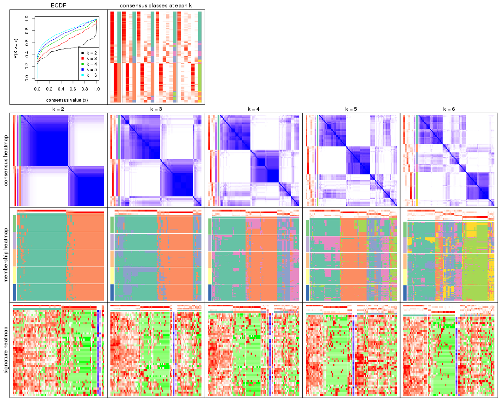
The plots are:
k and the heatmap of
predicted classes for each k.k.k.k.All the plots in panels can be made by individual functions and they are plotted later in this section.
select_partition_number() produces several plots showing different
statistics for choosing “optimized” k. There are following statistics:
k;k, the area increased is defined as \(A_k - A_{k-1}\).The detailed explanations of these statistics can be found in the cola vignette.
Generally speaking, lower PAC score, higher mean silhouette score or higher
concordance corresponds to better partition. Rand index and Jaccard index
measure how similar the current partition is compared to partition with k-1.
If they are too similar, we won't accept k is better than k-1.
select_partition_number(res)
The numeric values for all these statistics can be obtained by get_stats().
get_stats(res)
#> k 1-PAC mean_silhouette concordance area_increased Rand Jaccard
#> 2 2 0.766 0.907 0.957 0.4983 0.502 0.502
#> 3 3 0.556 0.590 0.800 0.2693 0.899 0.800
#> 4 4 0.582 0.612 0.796 0.1209 0.855 0.661
#> 5 5 0.582 0.532 0.721 0.0656 0.922 0.752
#> 6 6 0.609 0.536 0.698 0.0435 0.950 0.807
suggest_best_k() suggests the best \(k\) based on these statistics. The rules are as follows:
suggest_best_k(res)
#> [1] 2
Following shows the table of the partitions (You need to click the show/hide
code output link to see it). The membership matrix (columns with name p*)
is inferred by
clue::cl_consensus()
function with the SE method. Basically the value in the membership matrix
represents the probability to belong to a certain group. The finall class
label for an item is determined with the group with highest probability it
belongs to.
In get_classes() function, the entropy is calculated from the membership
matrix and the silhouette score is calculated from the consensus matrix.
cbind(get_classes(res, k = 2), get_membership(res, k = 2))
#> class entropy silhouette p1 p2
#> SRR764980 2 0.0000 0.948 0.000 1.000
#> SRR764981 1 0.7139 0.765 0.804 0.196
#> SRR764982 2 0.0000 0.948 0.000 1.000
#> SRR764983 1 0.0000 0.958 1.000 0.000
#> SRR764984 2 0.0000 0.948 0.000 1.000
#> SRR764985 2 0.0000 0.948 0.000 1.000
#> SRR764986 2 0.0000 0.948 0.000 1.000
#> SRR764987 2 0.0000 0.948 0.000 1.000
#> SRR764988 1 0.0938 0.952 0.988 0.012
#> SRR764989 1 0.0000 0.958 1.000 0.000
#> SRR764990 2 0.9358 0.469 0.352 0.648
#> SRR764991 1 0.1184 0.949 0.984 0.016
#> SRR764992 2 0.0000 0.948 0.000 1.000
#> SRR764993 2 0.2236 0.924 0.036 0.964
#> SRR764994 1 0.0000 0.958 1.000 0.000
#> SRR764995 2 0.0000 0.948 0.000 1.000
#> SRR764996 1 0.6973 0.773 0.812 0.188
#> SRR764997 1 0.6712 0.792 0.824 0.176
#> SRR764998 1 0.0376 0.956 0.996 0.004
#> SRR764999 1 0.0000 0.958 1.000 0.000
#> SRR765000 2 0.6801 0.780 0.180 0.820
#> SRR765001 2 0.0000 0.948 0.000 1.000
#> SRR765002 2 0.0000 0.948 0.000 1.000
#> SRR765003 1 0.4431 0.889 0.908 0.092
#> SRR765004 2 0.9896 0.230 0.440 0.560
#> SRR765005 1 0.0000 0.958 1.000 0.000
#> SRR765006 2 0.0000 0.948 0.000 1.000
#> SRR765007 2 0.7299 0.750 0.204 0.796
#> SRR765008 2 0.0000 0.948 0.000 1.000
#> SRR765009 2 0.0000 0.948 0.000 1.000
#> SRR765010 2 0.0000 0.948 0.000 1.000
#> SRR765011 1 0.0000 0.958 1.000 0.000
#> SRR765012 1 0.0000 0.958 1.000 0.000
#> SRR765013 2 0.0000 0.948 0.000 1.000
#> SRR765014 1 0.0000 0.958 1.000 0.000
#> SRR765015 1 0.0000 0.958 1.000 0.000
#> SRR765016 1 0.0000 0.958 1.000 0.000
#> SRR765017 1 0.2423 0.931 0.960 0.040
#> SRR765018 1 0.7815 0.716 0.768 0.232
#> SRR765020 1 0.0000 0.958 1.000 0.000
#> SRR765021 1 0.0000 0.958 1.000 0.000
#> SRR765022 1 0.2603 0.930 0.956 0.044
#> SRR765023 1 0.0000 0.958 1.000 0.000
#> SRR765024 1 0.0000 0.958 1.000 0.000
#> SRR765025 2 0.0000 0.948 0.000 1.000
#> SRR765026 1 0.0000 0.958 1.000 0.000
#> SRR765027 1 0.0000 0.958 1.000 0.000
#> SRR765028 2 0.0000 0.948 0.000 1.000
#> SRR765029 2 0.0000 0.948 0.000 1.000
#> SRR765030 1 0.5294 0.857 0.880 0.120
#> SRR765031 1 0.8955 0.569 0.688 0.312
#> SRR765032 1 0.0000 0.958 1.000 0.000
#> SRR765033 2 0.0000 0.948 0.000 1.000
#> SRR765034 1 0.0000 0.958 1.000 0.000
#> SRR765035 2 0.1414 0.936 0.020 0.980
#> SRR765036 1 0.1414 0.947 0.980 0.020
#> SRR765037 2 0.6247 0.812 0.156 0.844
#> SRR765038 2 0.0000 0.948 0.000 1.000
#> SRR765039 1 0.0000 0.958 1.000 0.000
#> SRR765040 2 0.0000 0.948 0.000 1.000
#> SRR765041 2 0.3879 0.893 0.076 0.924
#> SRR765042 1 0.0000 0.958 1.000 0.000
#> SRR765043 1 0.0000 0.958 1.000 0.000
#> SRR765044 2 0.0000 0.948 0.000 1.000
#> SRR765045 1 0.0000 0.958 1.000 0.000
#> SRR765046 2 0.0000 0.948 0.000 1.000
#> SRR765047 1 0.0000 0.958 1.000 0.000
#> SRR765048 1 0.0000 0.958 1.000 0.000
#> SRR765049 2 0.0000 0.948 0.000 1.000
#> SRR765050 2 0.0000 0.948 0.000 1.000
#> SRR765051 1 0.0000 0.958 1.000 0.000
#> SRR765052 2 0.6438 0.798 0.164 0.836
#> SRR765053 1 0.7674 0.728 0.776 0.224
#> SRR765054 1 0.0000 0.958 1.000 0.000
#> SRR765055 1 0.0000 0.958 1.000 0.000
#> SRR765056 1 0.0000 0.958 1.000 0.000
#> SRR765057 1 0.2043 0.939 0.968 0.032
#> SRR765058 1 0.0000 0.958 1.000 0.000
cbind(get_classes(res, k = 3), get_membership(res, k = 3))
#> class entropy silhouette p1 p2 p3
#> SRR764980 2 0.0237 0.8759 0.000 0.996 0.004
#> SRR764981 1 0.8853 -0.1102 0.568 0.168 0.264
#> SRR764982 2 0.0000 0.8760 0.000 1.000 0.000
#> SRR764983 1 0.0424 0.7251 0.992 0.000 0.008
#> SRR764984 2 0.0237 0.8759 0.000 0.996 0.004
#> SRR764985 2 0.0237 0.8759 0.000 0.996 0.004
#> SRR764986 2 0.0000 0.8760 0.000 1.000 0.000
#> SRR764987 2 0.0237 0.8759 0.000 0.996 0.004
#> SRR764988 1 0.5958 0.3032 0.692 0.008 0.300
#> SRR764989 1 0.0592 0.7230 0.988 0.000 0.012
#> SRR764990 2 0.9616 -0.0326 0.204 0.420 0.376
#> SRR764991 1 0.4978 0.6199 0.780 0.004 0.216
#> SRR764992 2 0.0000 0.8760 0.000 1.000 0.000
#> SRR764993 2 0.6209 0.3824 0.004 0.628 0.368
#> SRR764994 1 0.1860 0.7250 0.948 0.000 0.052
#> SRR764995 2 0.0000 0.8760 0.000 1.000 0.000
#> SRR764996 3 0.7186 -0.2906 0.476 0.024 0.500
#> SRR764997 3 0.6521 0.5041 0.340 0.016 0.644
#> SRR764998 1 0.5733 0.5152 0.676 0.000 0.324
#> SRR764999 1 0.5785 0.5082 0.668 0.000 0.332
#> SRR765000 3 0.8144 0.2336 0.076 0.380 0.544
#> SRR765001 2 0.0000 0.8760 0.000 1.000 0.000
#> SRR765002 2 0.0237 0.8759 0.000 0.996 0.004
#> SRR765003 1 0.7580 0.4213 0.604 0.056 0.340
#> SRR765004 3 0.8730 0.2525 0.112 0.388 0.500
#> SRR765005 1 0.4931 0.6130 0.768 0.000 0.232
#> SRR765006 2 0.0000 0.8760 0.000 1.000 0.000
#> SRR765007 2 0.8355 0.2495 0.084 0.508 0.408
#> SRR765008 2 0.3412 0.7822 0.000 0.876 0.124
#> SRR765009 2 0.0424 0.8753 0.000 0.992 0.008
#> SRR765010 2 0.0237 0.8759 0.000 0.996 0.004
#> SRR765011 1 0.4002 0.6761 0.840 0.000 0.160
#> SRR765012 1 0.0000 0.7262 1.000 0.000 0.000
#> SRR765013 2 0.0237 0.8759 0.000 0.996 0.004
#> SRR765014 1 0.5465 0.5504 0.712 0.000 0.288
#> SRR765015 1 0.6299 -0.2441 0.524 0.000 0.476
#> SRR765016 1 0.0592 0.7230 0.988 0.000 0.012
#> SRR765017 1 0.5850 0.4568 0.772 0.040 0.188
#> SRR765018 3 0.7289 0.2531 0.468 0.028 0.504
#> SRR765020 1 0.0000 0.7262 1.000 0.000 0.000
#> SRR765021 1 0.6307 -0.2703 0.512 0.000 0.488
#> SRR765022 1 0.6305 -0.2608 0.516 0.000 0.484
#> SRR765023 1 0.3412 0.6956 0.876 0.000 0.124
#> SRR765024 1 0.0424 0.7251 0.992 0.000 0.008
#> SRR765025 2 0.0237 0.8759 0.000 0.996 0.004
#> SRR765026 1 0.1643 0.7259 0.956 0.000 0.044
#> SRR765027 1 0.0424 0.7251 0.992 0.000 0.008
#> SRR765028 2 0.0000 0.8760 0.000 1.000 0.000
#> SRR765029 2 0.4121 0.7285 0.000 0.832 0.168
#> SRR765030 1 0.8338 0.2489 0.516 0.084 0.400
#> SRR765031 3 0.8616 0.5389 0.264 0.148 0.588
#> SRR765032 1 0.3267 0.7002 0.884 0.000 0.116
#> SRR765033 2 0.3686 0.7866 0.000 0.860 0.140
#> SRR765034 1 0.6309 -0.2950 0.504 0.000 0.496
#> SRR765035 2 0.5220 0.7026 0.012 0.780 0.208
#> SRR765036 1 0.6180 0.3794 0.584 0.000 0.416
#> SRR765037 2 0.9270 0.0860 0.200 0.520 0.280
#> SRR765038 2 0.0237 0.8759 0.000 0.996 0.004
#> SRR765039 1 0.0424 0.7251 0.992 0.000 0.008
#> SRR765040 2 0.2261 0.8351 0.000 0.932 0.068
#> SRR765041 2 0.5988 0.6907 0.056 0.776 0.168
#> SRR765042 1 0.0424 0.7251 0.992 0.000 0.008
#> SRR765043 1 0.0747 0.7272 0.984 0.000 0.016
#> SRR765044 2 0.0237 0.8759 0.000 0.996 0.004
#> SRR765045 1 0.0592 0.7230 0.988 0.000 0.012
#> SRR765046 2 0.0237 0.8759 0.000 0.996 0.004
#> SRR765047 1 0.1643 0.7259 0.956 0.000 0.044
#> SRR765048 1 0.0424 0.7251 0.992 0.000 0.008
#> SRR765049 2 0.0424 0.8753 0.000 0.992 0.008
#> SRR765050 2 0.2261 0.8397 0.000 0.932 0.068
#> SRR765051 1 0.1643 0.7266 0.956 0.000 0.044
#> SRR765052 2 0.7831 0.4680 0.088 0.632 0.280
#> SRR765053 3 0.8684 0.4140 0.392 0.108 0.500
#> SRR765054 1 0.3038 0.7053 0.896 0.000 0.104
#> SRR765055 1 0.1163 0.7272 0.972 0.000 0.028
#> SRR765056 1 0.5178 0.3768 0.744 0.000 0.256
#> SRR765057 3 0.6008 0.4997 0.332 0.004 0.664
#> SRR765058 1 0.3686 0.6862 0.860 0.000 0.140
cbind(get_classes(res, k = 4), get_membership(res, k = 4))
#> class entropy silhouette p1 p2 p3 p4
#> SRR764980 2 0.0000 0.865 0.000 1.000 0.000 0.000
#> SRR764981 1 0.8621 -0.158 0.456 0.048 0.256 0.240
#> SRR764982 2 0.0000 0.865 0.000 1.000 0.000 0.000
#> SRR764983 1 0.0779 0.774 0.980 0.000 0.004 0.016
#> SRR764984 2 0.3205 0.846 0.000 0.872 0.024 0.104
#> SRR764985 2 0.0000 0.865 0.000 1.000 0.000 0.000
#> SRR764986 2 0.0000 0.865 0.000 1.000 0.000 0.000
#> SRR764987 2 0.0000 0.865 0.000 1.000 0.000 0.000
#> SRR764988 1 0.6478 0.140 0.576 0.000 0.336 0.088
#> SRR764989 1 0.0927 0.768 0.976 0.000 0.016 0.008
#> SRR764990 4 0.4219 0.373 0.012 0.072 0.076 0.840
#> SRR764991 1 0.5279 0.571 0.736 0.000 0.072 0.192
#> SRR764992 2 0.2593 0.806 0.000 0.892 0.004 0.104
#> SRR764993 2 0.6887 0.193 0.000 0.452 0.444 0.104
#> SRR764994 1 0.3606 0.712 0.840 0.000 0.020 0.140
#> SRR764995 2 0.0000 0.865 0.000 1.000 0.000 0.000
#> SRR764996 4 0.6028 0.522 0.280 0.000 0.076 0.644
#> SRR764997 3 0.3801 0.584 0.064 0.004 0.856 0.076
#> SRR764998 4 0.4776 0.418 0.376 0.000 0.000 0.624
#> SRR764999 1 0.5685 -0.200 0.516 0.000 0.024 0.460
#> SRR765000 3 0.4113 0.514 0.004 0.128 0.828 0.040
#> SRR765001 2 0.0000 0.865 0.000 1.000 0.000 0.000
#> SRR765002 2 0.3205 0.846 0.000 0.872 0.024 0.104
#> SRR765003 4 0.5492 0.558 0.244 0.036 0.012 0.708
#> SRR765004 3 0.6570 0.475 0.052 0.172 0.696 0.080
#> SRR765005 1 0.5070 0.191 0.620 0.000 0.008 0.372
#> SRR765006 2 0.1211 0.860 0.000 0.960 0.000 0.040
#> SRR765007 4 0.5788 0.264 0.000 0.228 0.084 0.688
#> SRR765008 2 0.4332 0.787 0.000 0.800 0.160 0.040
#> SRR765009 2 0.3205 0.846 0.000 0.872 0.024 0.104
#> SRR765010 2 0.3205 0.846 0.000 0.872 0.024 0.104
#> SRR765011 1 0.3873 0.624 0.772 0.000 0.000 0.228
#> SRR765012 1 0.1182 0.771 0.968 0.000 0.016 0.016
#> SRR765013 2 0.3205 0.846 0.000 0.872 0.024 0.104
#> SRR765014 4 0.5000 0.156 0.496 0.000 0.000 0.504
#> SRR765015 3 0.5257 0.414 0.444 0.000 0.548 0.008
#> SRR765016 1 0.1059 0.767 0.972 0.000 0.016 0.012
#> SRR765017 1 0.5417 0.493 0.732 0.000 0.180 0.088
#> SRR765018 3 0.6810 0.478 0.380 0.008 0.532 0.080
#> SRR765020 1 0.0779 0.774 0.980 0.000 0.004 0.016
#> SRR765021 3 0.5028 0.471 0.400 0.000 0.596 0.004
#> SRR765022 3 0.5329 0.436 0.420 0.000 0.568 0.012
#> SRR765023 1 0.2760 0.729 0.872 0.000 0.000 0.128
#> SRR765024 1 0.0592 0.770 0.984 0.000 0.016 0.000
#> SRR765025 2 0.0000 0.865 0.000 1.000 0.000 0.000
#> SRR765026 1 0.2401 0.759 0.904 0.000 0.004 0.092
#> SRR765027 1 0.1256 0.765 0.964 0.000 0.008 0.028
#> SRR765028 2 0.0000 0.865 0.000 1.000 0.000 0.000
#> SRR765029 2 0.5820 0.657 0.000 0.684 0.232 0.084
#> SRR765030 1 0.6888 -0.147 0.448 0.000 0.104 0.448
#> SRR765031 3 0.4715 0.507 0.028 0.016 0.788 0.168
#> SRR765032 1 0.2814 0.726 0.868 0.000 0.000 0.132
#> SRR765033 2 0.6906 0.523 0.000 0.580 0.156 0.264
#> SRR765034 3 0.4585 0.561 0.332 0.000 0.668 0.000
#> SRR765035 2 0.6508 0.470 0.000 0.600 0.104 0.296
#> SRR765036 4 0.5982 0.320 0.436 0.000 0.040 0.524
#> SRR765037 3 0.8711 0.289 0.100 0.176 0.512 0.212
#> SRR765038 2 0.0000 0.865 0.000 1.000 0.000 0.000
#> SRR765039 1 0.3552 0.684 0.848 0.000 0.024 0.128
#> SRR765040 2 0.2742 0.822 0.000 0.900 0.076 0.024
#> SRR765041 2 0.7838 0.213 0.044 0.456 0.096 0.404
#> SRR765042 1 0.1635 0.758 0.948 0.000 0.008 0.044
#> SRR765043 1 0.1022 0.771 0.968 0.000 0.000 0.032
#> SRR765044 2 0.3205 0.846 0.000 0.872 0.024 0.104
#> SRR765045 1 0.0336 0.772 0.992 0.000 0.008 0.000
#> SRR765046 2 0.0000 0.865 0.000 1.000 0.000 0.000
#> SRR765047 1 0.1940 0.759 0.924 0.000 0.000 0.076
#> SRR765048 1 0.0188 0.773 0.996 0.000 0.004 0.000
#> SRR765049 2 0.3497 0.839 0.000 0.852 0.024 0.124
#> SRR765050 2 0.4292 0.804 0.000 0.820 0.080 0.100
#> SRR765051 1 0.2011 0.759 0.920 0.000 0.000 0.080
#> SRR765052 4 0.5047 0.309 0.000 0.316 0.016 0.668
#> SRR765053 3 0.5910 0.491 0.072 0.016 0.712 0.200
#> SRR765054 1 0.2704 0.732 0.876 0.000 0.000 0.124
#> SRR765055 1 0.1557 0.768 0.944 0.000 0.000 0.056
#> SRR765056 1 0.4761 0.142 0.628 0.000 0.372 0.000
#> SRR765057 3 0.1940 0.592 0.076 0.000 0.924 0.000
#> SRR765058 1 0.3172 0.696 0.840 0.000 0.000 0.160
cbind(get_classes(res, k = 5), get_membership(res, k = 5))
#> class entropy silhouette p1 p2 p3 p4 p5
#> SRR764980 2 0.0162 0.8368 0.000 0.996 0.000 0.000 0.004
#> SRR764981 5 0.7410 -0.1881 0.340 0.000 0.232 0.036 0.392
#> SRR764982 2 0.1851 0.8341 0.000 0.912 0.000 0.000 0.088
#> SRR764983 1 0.1740 0.6703 0.932 0.000 0.000 0.056 0.012
#> SRR764984 2 0.3074 0.8049 0.000 0.804 0.000 0.000 0.196
#> SRR764985 2 0.0162 0.8380 0.000 0.996 0.000 0.000 0.004
#> SRR764986 2 0.0290 0.8372 0.000 0.992 0.000 0.000 0.008
#> SRR764987 2 0.0000 0.8373 0.000 1.000 0.000 0.000 0.000
#> SRR764988 1 0.7226 0.1919 0.544 0.004 0.216 0.064 0.172
#> SRR764989 1 0.0912 0.6635 0.972 0.000 0.012 0.000 0.016
#> SRR764990 5 0.5437 0.4160 0.000 0.012 0.052 0.328 0.608
#> SRR764991 1 0.5379 0.3541 0.640 0.000 0.036 0.296 0.028
#> SRR764992 2 0.3163 0.6608 0.000 0.824 0.000 0.012 0.164
#> SRR764993 3 0.6985 -0.0999 0.000 0.384 0.420 0.024 0.172
#> SRR764994 1 0.4401 0.3765 0.656 0.000 0.016 0.328 0.000
#> SRR764995 2 0.0703 0.8330 0.000 0.976 0.000 0.000 0.024
#> SRR764996 4 0.4427 0.6193 0.172 0.000 0.020 0.768 0.040
#> SRR764997 3 0.4339 0.4261 0.056 0.000 0.808 0.060 0.076
#> SRR764998 4 0.5452 0.6513 0.292 0.000 0.000 0.616 0.092
#> SRR764999 4 0.4642 0.6267 0.328 0.000 0.020 0.648 0.004
#> SRR765000 3 0.5188 0.3080 0.004 0.104 0.716 0.008 0.168
#> SRR765001 2 0.0290 0.8372 0.000 0.992 0.000 0.000 0.008
#> SRR765002 2 0.2852 0.8114 0.000 0.828 0.000 0.000 0.172
#> SRR765003 4 0.5616 0.3608 0.112 0.008 0.000 0.648 0.232
#> SRR765004 3 0.8098 0.2268 0.092 0.172 0.540 0.124 0.072
#> SRR765005 1 0.5506 0.1134 0.584 0.000 0.004 0.344 0.068
#> SRR765006 2 0.2890 0.8196 0.000 0.836 0.004 0.000 0.160
#> SRR765007 5 0.6683 0.4764 0.000 0.116 0.040 0.308 0.536
#> SRR765008 2 0.3875 0.7364 0.000 0.792 0.160 0.000 0.048
#> SRR765009 2 0.2966 0.8060 0.000 0.816 0.000 0.000 0.184
#> SRR765010 2 0.3109 0.8022 0.000 0.800 0.000 0.000 0.200
#> SRR765011 1 0.4617 0.0914 0.552 0.000 0.000 0.436 0.012
#> SRR765012 1 0.1538 0.6699 0.948 0.000 0.008 0.036 0.008
#> SRR765013 2 0.3074 0.8011 0.000 0.804 0.000 0.000 0.196
#> SRR765014 4 0.5028 0.4669 0.400 0.000 0.000 0.564 0.036
#> SRR765015 3 0.4948 0.3849 0.436 0.000 0.536 0.000 0.028
#> SRR765016 1 0.1186 0.6598 0.964 0.000 0.008 0.020 0.008
#> SRR765017 1 0.5506 0.4278 0.724 0.000 0.076 0.120 0.080
#> SRR765018 3 0.6400 0.4398 0.324 0.000 0.552 0.040 0.084
#> SRR765020 1 0.1670 0.6709 0.936 0.000 0.000 0.052 0.012
#> SRR765021 3 0.5396 0.4499 0.352 0.000 0.592 0.012 0.044
#> SRR765022 3 0.5455 0.4343 0.372 0.000 0.572 0.012 0.044
#> SRR765023 1 0.4306 0.3726 0.660 0.000 0.000 0.328 0.012
#> SRR765024 1 0.0912 0.6645 0.972 0.000 0.012 0.000 0.016
#> SRR765025 2 0.0000 0.8373 0.000 1.000 0.000 0.000 0.000
#> SRR765026 1 0.4394 0.5283 0.716 0.000 0.016 0.256 0.012
#> SRR765027 1 0.2087 0.6441 0.928 0.000 0.020 0.032 0.020
#> SRR765028 2 0.0703 0.8330 0.000 0.976 0.000 0.000 0.024
#> SRR765029 2 0.7244 0.3961 0.000 0.544 0.212 0.092 0.152
#> SRR765030 4 0.6914 0.3780 0.288 0.000 0.136 0.528 0.048
#> SRR765031 3 0.4789 0.3477 0.020 0.000 0.756 0.144 0.080
#> SRR765032 1 0.4371 0.3352 0.644 0.000 0.000 0.344 0.012
#> SRR765033 5 0.7630 0.2377 0.000 0.376 0.128 0.100 0.396
#> SRR765034 3 0.4305 0.4736 0.296 0.000 0.688 0.004 0.012
#> SRR765035 5 0.7722 0.2962 0.000 0.304 0.072 0.208 0.416
#> SRR765036 4 0.5346 0.6520 0.316 0.000 0.008 0.620 0.056
#> SRR765037 3 0.8869 -0.0460 0.064 0.104 0.356 0.148 0.328
#> SRR765038 2 0.0000 0.8373 0.000 1.000 0.000 0.000 0.000
#> SRR765039 1 0.4103 0.5535 0.812 0.000 0.020 0.068 0.100
#> SRR765040 2 0.4242 0.6888 0.000 0.812 0.068 0.040 0.080
#> SRR765041 5 0.6121 0.4401 0.020 0.196 0.000 0.160 0.624
#> SRR765042 1 0.2005 0.6389 0.924 0.000 0.004 0.056 0.016
#> SRR765043 1 0.2179 0.6526 0.888 0.000 0.000 0.112 0.000
#> SRR765044 2 0.3143 0.8016 0.000 0.796 0.000 0.000 0.204
#> SRR765045 1 0.0703 0.6736 0.976 0.000 0.000 0.024 0.000
#> SRR765046 2 0.0510 0.8374 0.000 0.984 0.000 0.000 0.016
#> SRR765047 1 0.3210 0.5794 0.788 0.000 0.000 0.212 0.000
#> SRR765048 1 0.0703 0.6736 0.976 0.000 0.000 0.024 0.000
#> SRR765049 2 0.3143 0.7963 0.000 0.796 0.000 0.000 0.204
#> SRR765050 2 0.7060 0.0453 0.000 0.444 0.052 0.120 0.384
#> SRR765051 1 0.3242 0.5717 0.784 0.000 0.000 0.216 0.000
#> SRR765052 5 0.5784 0.4911 0.000 0.144 0.000 0.252 0.604
#> SRR765053 3 0.6060 0.2992 0.024 0.004 0.652 0.144 0.176
#> SRR765054 1 0.4251 0.3964 0.672 0.000 0.000 0.316 0.012
#> SRR765055 1 0.2909 0.6343 0.848 0.000 0.000 0.140 0.012
#> SRR765056 1 0.4592 0.2143 0.644 0.000 0.332 0.000 0.024
#> SRR765057 3 0.2906 0.4554 0.080 0.000 0.880 0.012 0.028
#> SRR765058 1 0.4430 0.2914 0.628 0.000 0.000 0.360 0.012
cbind(get_classes(res, k = 6), get_membership(res, k = 6))
#> class entropy silhouette p1 p2 p3 p4 p5 p6
#> SRR764980 5 0.1116 0.7893 0.000 0.028 0.008 0.000 0.960 0.004
#> SRR764981 3 0.7278 0.3037 0.112 0.260 0.504 0.076 0.008 0.040
#> SRR764982 5 0.2520 0.7886 0.000 0.152 0.000 0.000 0.844 0.004
#> SRR764983 1 0.1956 0.7047 0.908 0.008 0.080 0.004 0.000 0.000
#> SRR764984 5 0.3512 0.7437 0.000 0.272 0.000 0.000 0.720 0.008
#> SRR764985 5 0.0000 0.8028 0.000 0.000 0.000 0.000 1.000 0.000
#> SRR764986 5 0.0146 0.8032 0.000 0.004 0.000 0.000 0.996 0.000
#> SRR764987 5 0.0146 0.8027 0.000 0.000 0.000 0.000 0.996 0.004
#> SRR764988 3 0.7751 0.2571 0.284 0.100 0.392 0.036 0.000 0.188
#> SRR764989 1 0.3509 0.6611 0.788 0.000 0.180 0.016 0.000 0.016
#> SRR764990 2 0.6341 0.3590 0.012 0.528 0.076 0.328 0.008 0.048
#> SRR764991 1 0.5878 0.2969 0.600 0.000 0.080 0.240 0.000 0.080
#> SRR764992 5 0.4121 0.5199 0.000 0.208 0.008 0.028 0.744 0.012
#> SRR764993 6 0.7552 0.1581 0.000 0.184 0.088 0.028 0.300 0.400
#> SRR764994 1 0.3473 0.4993 0.780 0.000 0.004 0.192 0.000 0.024
#> SRR764995 5 0.0858 0.7939 0.000 0.028 0.004 0.000 0.968 0.000
#> SRR764996 4 0.3351 0.4674 0.120 0.024 0.000 0.828 0.000 0.028
#> SRR764997 6 0.4486 0.2508 0.008 0.012 0.340 0.012 0.000 0.628
#> SRR764998 4 0.5454 0.6088 0.320 0.048 0.020 0.592 0.000 0.020
#> SRR764999 4 0.4561 0.5692 0.404 0.008 0.000 0.564 0.000 0.024
#> SRR765000 6 0.6093 0.3784 0.000 0.088 0.320 0.000 0.064 0.528
#> SRR765001 5 0.0146 0.8032 0.000 0.004 0.000 0.000 0.996 0.000
#> SRR765002 5 0.3271 0.7582 0.000 0.232 0.000 0.000 0.760 0.008
#> SRR765003 4 0.5588 0.2535 0.084 0.184 0.020 0.676 0.008 0.028
#> SRR765004 6 0.5681 0.4040 0.020 0.012 0.164 0.016 0.120 0.668
#> SRR765005 1 0.6817 0.0949 0.532 0.044 0.092 0.268 0.000 0.064
#> SRR765006 5 0.3894 0.7327 0.000 0.268 0.004 0.000 0.708 0.020
#> SRR765007 2 0.6830 0.3764 0.000 0.484 0.060 0.336 0.064 0.056
#> SRR765008 5 0.4795 0.7072 0.000 0.092 0.112 0.000 0.736 0.060
#> SRR765009 5 0.3323 0.7567 0.000 0.240 0.000 0.000 0.752 0.008
#> SRR765010 5 0.3695 0.7370 0.000 0.272 0.000 0.000 0.712 0.016
#> SRR765011 1 0.4070 0.2812 0.672 0.008 0.008 0.308 0.000 0.004
#> SRR765012 1 0.3672 0.6605 0.780 0.000 0.176 0.036 0.000 0.008
#> SRR765013 5 0.3710 0.7245 0.000 0.292 0.000 0.000 0.696 0.012
#> SRR765014 4 0.4602 0.3948 0.484 0.028 0.004 0.484 0.000 0.000
#> SRR765015 3 0.3980 0.5484 0.168 0.000 0.760 0.004 0.000 0.068
#> SRR765016 1 0.3549 0.6729 0.808 0.000 0.140 0.020 0.000 0.032
#> SRR765017 1 0.6455 0.3501 0.528 0.024 0.172 0.020 0.000 0.256
#> SRR765018 3 0.4977 0.4779 0.080 0.048 0.760 0.044 0.004 0.064
#> SRR765020 1 0.2222 0.7050 0.896 0.008 0.084 0.012 0.000 0.000
#> SRR765021 3 0.2019 0.5472 0.088 0.000 0.900 0.000 0.000 0.012
#> SRR765022 3 0.2053 0.5566 0.108 0.000 0.888 0.000 0.000 0.004
#> SRR765023 1 0.3030 0.5522 0.816 0.008 0.008 0.168 0.000 0.000
#> SRR765024 1 0.2810 0.6849 0.832 0.000 0.156 0.008 0.000 0.004
#> SRR765025 5 0.0000 0.8028 0.000 0.000 0.000 0.000 1.000 0.000
#> SRR765026 1 0.3717 0.5725 0.776 0.000 0.064 0.160 0.000 0.000
#> SRR765027 1 0.4031 0.6559 0.768 0.000 0.168 0.036 0.000 0.028
#> SRR765028 5 0.0692 0.7973 0.000 0.020 0.004 0.000 0.976 0.000
#> SRR765029 5 0.6318 0.2257 0.000 0.092 0.052 0.008 0.480 0.368
#> SRR765030 4 0.7053 0.3718 0.348 0.040 0.160 0.420 0.000 0.032
#> SRR765031 6 0.6343 0.2489 0.004 0.032 0.284 0.172 0.000 0.508
#> SRR765032 1 0.3166 0.5316 0.800 0.008 0.008 0.184 0.000 0.000
#> SRR765033 2 0.7566 0.3045 0.000 0.456 0.044 0.092 0.244 0.164
#> SRR765034 3 0.4394 0.4675 0.108 0.000 0.736 0.008 0.000 0.148
#> SRR765035 2 0.7048 0.3503 0.000 0.452 0.008 0.072 0.204 0.264
#> SRR765036 4 0.4593 0.6060 0.332 0.024 0.004 0.628 0.000 0.012
#> SRR765037 6 0.8700 -0.0315 0.056 0.236 0.108 0.172 0.048 0.380
#> SRR765038 5 0.0000 0.8028 0.000 0.000 0.000 0.000 1.000 0.000
#> SRR765039 1 0.6129 0.5159 0.628 0.056 0.204 0.044 0.000 0.068
#> SRR765040 5 0.4474 0.6153 0.000 0.052 0.024 0.052 0.784 0.088
#> SRR765041 2 0.6234 0.3828 0.000 0.568 0.004 0.052 0.148 0.228
#> SRR765042 1 0.4738 0.6303 0.740 0.008 0.148 0.040 0.000 0.064
#> SRR765043 1 0.1649 0.6915 0.932 0.000 0.036 0.032 0.000 0.000
#> SRR765044 5 0.3608 0.7405 0.000 0.272 0.000 0.000 0.716 0.012
#> SRR765045 1 0.1897 0.7036 0.908 0.000 0.084 0.004 0.000 0.004
#> SRR765046 5 0.0260 0.8018 0.000 0.008 0.000 0.000 0.992 0.000
#> SRR765047 1 0.1471 0.6570 0.932 0.000 0.004 0.064 0.000 0.000
#> SRR765048 1 0.2339 0.7030 0.896 0.000 0.072 0.020 0.000 0.012
#> SRR765049 5 0.3670 0.7504 0.000 0.240 0.000 0.000 0.736 0.024
#> SRR765050 2 0.6866 0.3121 0.000 0.432 0.008 0.040 0.268 0.252
#> SRR765051 1 0.1908 0.6360 0.900 0.000 0.000 0.096 0.000 0.004
#> SRR765052 2 0.5349 0.4251 0.000 0.660 0.012 0.224 0.076 0.028
#> SRR765053 3 0.7212 0.0454 0.012 0.104 0.472 0.188 0.000 0.224
#> SRR765054 1 0.2958 0.5618 0.824 0.008 0.008 0.160 0.000 0.000
#> SRR765055 1 0.2063 0.6713 0.912 0.008 0.020 0.060 0.000 0.000
#> SRR765056 3 0.4938 0.4343 0.356 0.000 0.568 0.000 0.000 0.076
#> SRR765057 3 0.4833 -0.0207 0.036 0.000 0.556 0.012 0.000 0.396
#> SRR765058 1 0.3410 0.4823 0.768 0.008 0.008 0.216 0.000 0.000
Heatmaps for the consensus matrix. It visualizes the probability of two samples to be in a same group.
consensus_heatmap(res, k = 2)
consensus_heatmap(res, k = 3)
consensus_heatmap(res, k = 4)
consensus_heatmap(res, k = 5)
consensus_heatmap(res, k = 6)
Heatmaps for the membership of samples in all partitions to see how consistent they are:
membership_heatmap(res, k = 2)
membership_heatmap(res, k = 3)
membership_heatmap(res, k = 4)
membership_heatmap(res, k = 5)
membership_heatmap(res, k = 6)
As soon as we have had the classes for columns, we can look for signatures which are significantly different between classes which can be candidate marks for certain classes. Following are the heatmaps for signatures.
Signature heatmaps where rows are scaled:
get_signatures(res, k = 2)
get_signatures(res, k = 3)
get_signatures(res, k = 4)
get_signatures(res, k = 5)
get_signatures(res, k = 6)
Signature heatmaps where rows are not scaled:
get_signatures(res, k = 2, scale_rows = FALSE)
get_signatures(res, k = 3, scale_rows = FALSE)
get_signatures(res, k = 4, scale_rows = FALSE)
get_signatures(res, k = 5, scale_rows = FALSE)
get_signatures(res, k = 6, scale_rows = FALSE)
Compare the overlap of signatures from different k:
compare_signatures(res)
get_signature() returns a data frame invisibly. TO get the list of signatures, the function
call should be assigned to a variable explicitly. In following code, if plot argument is set
to FALSE, no heatmap is plotted while only the differential analysis is performed.
# code only for demonstration
tb = get_signature(res, k = ..., plot = FALSE)
An example of the output of tb is:
#> which_row fdr mean_1 mean_2 scaled_mean_1 scaled_mean_2 km
#> 1 38 0.042760348 8.373488 9.131774 -0.5533452 0.5164555 1
#> 2 40 0.018707592 7.106213 8.469186 -0.6173731 0.5762149 1
#> 3 55 0.019134737 10.221463 11.207825 -0.6159697 0.5749050 1
#> 4 59 0.006059896 5.921854 7.869574 -0.6899429 0.6439467 1
#> 5 60 0.018055526 8.928898 10.211722 -0.6204761 0.5791110 1
#> 6 98 0.009384629 15.714769 14.887706 0.6635654 -0.6193277 2
...
The columns in tb are:
which_row: row indices corresponding to the input matrix.fdr: FDR for the differential test. mean_x: The mean value in group x.scaled_mean_x: The mean value in group x after rows are scaled.km: Row groups if k-means clustering is applied to rows.UMAP plot which shows how samples are separated.
dimension_reduction(res, k = 2, method = "UMAP")

dimension_reduction(res, k = 3, method = "UMAP")
dimension_reduction(res, k = 4, method = "UMAP")
dimension_reduction(res, k = 5, method = "UMAP")
dimension_reduction(res, k = 6, method = "UMAP")
Following heatmap shows how subgroups are split when increasing k:
collect_classes(res)
If matrix rows can be associated to genes, consider to use functional_enrichment(res,
...) to perform function enrichment for the signature genes. See this vignette for more detailed explanations.
The object with results only for a single top-value method and a single partition method can be extracted as:
res = res_list["ATC", "pam"]
# you can also extract it by
# res = res_list["ATC:pam"]
A summary of res and all the functions that can be applied to it:
res
#> A 'ConsensusPartition' object with k = 2, 3, 4, 5, 6.
#> On a matrix with 50 rows and 78 columns.
#> Top rows (5, 10, 15, 20, 25) are extracted by 'ATC' method.
#> Subgroups are detected by 'pam' method.
#> Performed in total 1250 partitions by row resampling.
#> Best k for subgroups seems to be 2.
#>
#> Following methods can be applied to this 'ConsensusPartition' object:
#> [1] "cola_report" "collect_classes" "collect_plots"
#> [4] "collect_stats" "colnames" "compare_signatures"
#> [7] "consensus_heatmap" "dimension_reduction" "functional_enrichment"
#> [10] "get_anno_col" "get_anno" "get_classes"
#> [13] "get_consensus" "get_matrix" "get_membership"
#> [16] "get_param" "get_signatures" "get_stats"
#> [19] "is_best_k" "is_stable_k" "membership_heatmap"
#> [22] "ncol" "nrow" "plot_ecdf"
#> [25] "rownames" "select_partition_number" "show"
#> [28] "suggest_best_k" "test_to_known_factors"
collect_plots() function collects all the plots made from res for all k (number of partitions)
into one single page to provide an easy and fast comparison between different k.
collect_plots(res)
The plots are:
k and the heatmap of
predicted classes for each k.k.k.k.All the plots in panels can be made by individual functions and they are plotted later in this section.
select_partition_number() produces several plots showing different
statistics for choosing “optimized” k. There are following statistics:
k;k, the area increased is defined as \(A_k - A_{k-1}\).The detailed explanations of these statistics can be found in the cola vignette.
Generally speaking, lower PAC score, higher mean silhouette score or higher
concordance corresponds to better partition. Rand index and Jaccard index
measure how similar the current partition is compared to partition with k-1.
If they are too similar, we won't accept k is better than k-1.
select_partition_number(res)
The numeric values for all these statistics can be obtained by get_stats().
get_stats(res)
#> k 1-PAC mean_silhouette concordance area_increased Rand Jaccard
#> 2 2 0.723 0.874 0.944 0.4574 0.541 0.541
#> 3 3 0.402 0.615 0.802 0.3952 0.724 0.522
#> 4 4 0.513 0.573 0.774 0.1446 0.816 0.526
#> 5 5 0.531 0.462 0.701 0.0713 0.944 0.790
#> 6 6 0.556 0.449 0.673 0.0425 0.873 0.512
suggest_best_k() suggests the best \(k\) based on these statistics. The rules are as follows:
suggest_best_k(res)
#> [1] 2
Following shows the table of the partitions (You need to click the show/hide
code output link to see it). The membership matrix (columns with name p*)
is inferred by
clue::cl_consensus()
function with the SE method. Basically the value in the membership matrix
represents the probability to belong to a certain group. The finall class
label for an item is determined with the group with highest probability it
belongs to.
In get_classes() function, the entropy is calculated from the membership
matrix and the silhouette score is calculated from the consensus matrix.
cbind(get_classes(res, k = 2), get_membership(res, k = 2))
#> class entropy silhouette p1 p2
#> SRR764980 2 0.0000 0.919 0.000 1.000
#> SRR764981 1 0.2603 0.919 0.956 0.044
#> SRR764982 2 0.0000 0.919 0.000 1.000
#> SRR764983 1 0.0000 0.948 1.000 0.000
#> SRR764984 2 0.9087 0.550 0.324 0.676
#> SRR764985 2 0.0000 0.919 0.000 1.000
#> SRR764986 2 0.0000 0.919 0.000 1.000
#> SRR764987 2 0.0000 0.919 0.000 1.000
#> SRR764988 1 0.0000 0.948 1.000 0.000
#> SRR764989 1 0.0000 0.948 1.000 0.000
#> SRR764990 1 0.7056 0.757 0.808 0.192
#> SRR764991 1 0.1414 0.938 0.980 0.020
#> SRR764992 2 0.0000 0.919 0.000 1.000
#> SRR764993 2 0.8608 0.635 0.284 0.716
#> SRR764994 1 0.0000 0.948 1.000 0.000
#> SRR764995 2 0.0000 0.919 0.000 1.000
#> SRR764996 1 0.2236 0.928 0.964 0.036
#> SRR764997 1 0.0672 0.945 0.992 0.008
#> SRR764998 1 0.0376 0.947 0.996 0.004
#> SRR764999 1 0.0938 0.943 0.988 0.012
#> SRR765000 1 0.9710 0.310 0.600 0.400
#> SRR765001 2 0.0000 0.919 0.000 1.000
#> SRR765002 2 0.0000 0.919 0.000 1.000
#> SRR765003 1 0.1633 0.936 0.976 0.024
#> SRR765004 1 0.7950 0.682 0.760 0.240
#> SRR765005 1 0.0376 0.947 0.996 0.004
#> SRR765006 2 0.0000 0.919 0.000 1.000
#> SRR765007 1 0.9209 0.493 0.664 0.336
#> SRR765008 2 0.0000 0.919 0.000 1.000
#> SRR765009 2 0.0000 0.919 0.000 1.000
#> SRR765010 2 0.0000 0.919 0.000 1.000
#> SRR765011 1 0.0000 0.948 1.000 0.000
#> SRR765012 1 0.0000 0.948 1.000 0.000
#> SRR765013 2 0.1633 0.906 0.024 0.976
#> SRR765014 1 0.0000 0.948 1.000 0.000
#> SRR765015 1 0.0000 0.948 1.000 0.000
#> SRR765016 1 0.0000 0.948 1.000 0.000
#> SRR765017 1 0.0000 0.948 1.000 0.000
#> SRR765018 1 0.5059 0.853 0.888 0.112
#> SRR765020 1 0.0000 0.948 1.000 0.000
#> SRR765021 1 0.0000 0.948 1.000 0.000
#> SRR765022 1 0.0000 0.948 1.000 0.000
#> SRR765023 1 0.0000 0.948 1.000 0.000
#> SRR765024 1 0.0000 0.948 1.000 0.000
#> SRR765025 2 0.0000 0.919 0.000 1.000
#> SRR765026 1 0.0000 0.948 1.000 0.000
#> SRR765027 1 0.0000 0.948 1.000 0.000
#> SRR765028 2 0.0000 0.919 0.000 1.000
#> SRR765029 2 0.5059 0.842 0.112 0.888
#> SRR765030 1 0.2236 0.926 0.964 0.036
#> SRR765031 1 0.2236 0.926 0.964 0.036
#> SRR765032 1 0.0000 0.948 1.000 0.000
#> SRR765033 2 0.7674 0.724 0.224 0.776
#> SRR765034 1 0.0000 0.948 1.000 0.000
#> SRR765035 2 0.9815 0.309 0.420 0.580
#> SRR765036 1 0.0672 0.945 0.992 0.008
#> SRR765037 1 0.6623 0.785 0.828 0.172
#> SRR765038 2 0.0000 0.919 0.000 1.000
#> SRR765039 1 0.0000 0.948 1.000 0.000
#> SRR765040 2 0.9209 0.531 0.336 0.664
#> SRR765041 1 0.8555 0.607 0.720 0.280
#> SRR765042 1 0.0000 0.948 1.000 0.000
#> SRR765043 1 0.0000 0.948 1.000 0.000
#> SRR765044 2 0.0672 0.915 0.008 0.992
#> SRR765045 1 0.0000 0.948 1.000 0.000
#> SRR765046 2 0.0000 0.919 0.000 1.000
#> SRR765047 1 0.0000 0.948 1.000 0.000
#> SRR765048 1 0.0000 0.948 1.000 0.000
#> SRR765049 2 0.0672 0.915 0.008 0.992
#> SRR765050 2 0.7745 0.716 0.228 0.772
#> SRR765051 1 0.0000 0.948 1.000 0.000
#> SRR765052 1 0.9552 0.381 0.624 0.376
#> SRR765053 1 0.1184 0.941 0.984 0.016
#> SRR765054 1 0.0000 0.948 1.000 0.000
#> SRR765055 1 0.0000 0.948 1.000 0.000
#> SRR765056 1 0.0000 0.948 1.000 0.000
#> SRR765057 1 0.0938 0.943 0.988 0.012
#> SRR765058 1 0.0000 0.948 1.000 0.000
cbind(get_classes(res, k = 3), get_membership(res, k = 3))
#> class entropy silhouette p1 p2 p3
#> SRR764980 2 0.0592 0.8184 0.000 0.988 0.012
#> SRR764981 3 0.5785 0.4484 0.332 0.000 0.668
#> SRR764982 2 0.2448 0.8076 0.000 0.924 0.076
#> SRR764983 1 0.0237 0.7717 0.996 0.000 0.004
#> SRR764984 3 0.3043 0.5939 0.008 0.084 0.908
#> SRR764985 2 0.0000 0.8195 0.000 1.000 0.000
#> SRR764986 2 0.0000 0.8195 0.000 1.000 0.000
#> SRR764987 2 0.0000 0.8195 0.000 1.000 0.000
#> SRR764988 1 0.6154 0.4374 0.592 0.000 0.408
#> SRR764989 1 0.4002 0.7763 0.840 0.000 0.160
#> SRR764990 3 0.5619 0.5829 0.244 0.012 0.744
#> SRR764991 1 0.6286 0.3039 0.536 0.000 0.464
#> SRR764992 2 0.4178 0.7688 0.000 0.828 0.172
#> SRR764993 3 0.6414 0.3866 0.036 0.248 0.716
#> SRR764994 1 0.4178 0.7630 0.828 0.000 0.172
#> SRR764995 2 0.0424 0.8176 0.000 0.992 0.008
#> SRR764996 1 0.6244 0.2846 0.560 0.000 0.440
#> SRR764997 3 0.5216 0.5379 0.260 0.000 0.740
#> SRR764998 1 0.3879 0.7180 0.848 0.000 0.152
#> SRR764999 3 0.6168 0.1944 0.412 0.000 0.588
#> SRR765000 3 0.4379 0.6619 0.072 0.060 0.868
#> SRR765001 2 0.0000 0.8195 0.000 1.000 0.000
#> SRR765002 2 0.5178 0.7320 0.000 0.744 0.256
#> SRR765003 1 0.5497 0.6012 0.708 0.000 0.292
#> SRR765004 3 0.6506 0.5551 0.236 0.044 0.720
#> SRR765005 1 0.5098 0.7255 0.752 0.000 0.248
#> SRR765006 2 0.4504 0.7708 0.000 0.804 0.196
#> SRR765007 3 0.5243 0.6378 0.072 0.100 0.828
#> SRR765008 2 0.5621 0.6884 0.000 0.692 0.308
#> SRR765009 2 0.6008 0.6374 0.000 0.628 0.372
#> SRR765010 2 0.5859 0.6674 0.000 0.656 0.344
#> SRR765011 1 0.0237 0.7729 0.996 0.000 0.004
#> SRR765012 1 0.5291 0.6873 0.732 0.000 0.268
#> SRR765013 2 0.6204 0.5571 0.000 0.576 0.424
#> SRR765014 1 0.1163 0.7665 0.972 0.000 0.028
#> SRR765015 3 0.6302 -0.0723 0.480 0.000 0.520
#> SRR765016 1 0.3816 0.7804 0.852 0.000 0.148
#> SRR765017 1 0.4702 0.6635 0.788 0.000 0.212
#> SRR765018 3 0.4178 0.6362 0.172 0.000 0.828
#> SRR765020 1 0.0000 0.7720 1.000 0.000 0.000
#> SRR765021 3 0.5882 0.3954 0.348 0.000 0.652
#> SRR765022 3 0.5810 0.4288 0.336 0.000 0.664
#> SRR765023 1 0.0000 0.7720 1.000 0.000 0.000
#> SRR765024 1 0.4291 0.7656 0.820 0.000 0.180
#> SRR765025 2 0.0000 0.8195 0.000 1.000 0.000
#> SRR765026 1 0.3116 0.7914 0.892 0.000 0.108
#> SRR765027 1 0.4291 0.7668 0.820 0.000 0.180
#> SRR765028 2 0.0000 0.8195 0.000 1.000 0.000
#> SRR765029 3 0.6836 -0.1686 0.016 0.412 0.572
#> SRR765030 1 0.6295 -0.0199 0.528 0.000 0.472
#> SRR765031 3 0.4931 0.5919 0.232 0.000 0.768
#> SRR765032 1 0.0000 0.7720 1.000 0.000 0.000
#> SRR765033 3 0.6770 0.3702 0.044 0.264 0.692
#> SRR765034 3 0.6079 0.2921 0.388 0.000 0.612
#> SRR765035 3 0.4937 0.5317 0.028 0.148 0.824
#> SRR765036 1 0.5650 0.5990 0.688 0.000 0.312
#> SRR765037 3 0.3412 0.6472 0.124 0.000 0.876
#> SRR765038 2 0.0000 0.8195 0.000 1.000 0.000
#> SRR765039 1 0.5968 0.5150 0.636 0.000 0.364
#> SRR765040 2 0.6912 0.1858 0.016 0.540 0.444
#> SRR765041 3 0.3921 0.6580 0.080 0.036 0.884
#> SRR765042 1 0.4291 0.7655 0.820 0.000 0.180
#> SRR765043 1 0.2356 0.7900 0.928 0.000 0.072
#> SRR765044 2 0.6045 0.6273 0.000 0.620 0.380
#> SRR765045 1 0.3267 0.7892 0.884 0.000 0.116
#> SRR765046 2 0.0000 0.8195 0.000 1.000 0.000
#> SRR765047 1 0.2261 0.7884 0.932 0.000 0.068
#> SRR765048 1 0.2959 0.7908 0.900 0.000 0.100
#> SRR765049 2 0.6026 0.6259 0.000 0.624 0.376
#> SRR765050 3 0.6008 0.0775 0.004 0.332 0.664
#> SRR765051 1 0.3879 0.7791 0.848 0.000 0.152
#> SRR765052 3 0.4848 0.6149 0.128 0.036 0.836
#> SRR765053 3 0.3482 0.6464 0.128 0.000 0.872
#> SRR765054 1 0.0000 0.7720 1.000 0.000 0.000
#> SRR765055 1 0.0000 0.7720 1.000 0.000 0.000
#> SRR765056 1 0.6308 0.1467 0.508 0.000 0.492
#> SRR765057 3 0.5591 0.4907 0.304 0.000 0.696
#> SRR765058 1 0.0000 0.7720 1.000 0.000 0.000
cbind(get_classes(res, k = 4), get_membership(res, k = 4))
#> class entropy silhouette p1 p2 p3 p4
#> SRR764980 2 0.1389 0.79588 0.000 0.952 0.000 0.048
#> SRR764981 3 0.5792 0.65361 0.168 0.000 0.708 0.124
#> SRR764982 2 0.4356 0.43585 0.000 0.708 0.000 0.292
#> SRR764983 1 0.0188 0.75392 0.996 0.000 0.004 0.000
#> SRR764984 4 0.5417 0.32739 0.004 0.012 0.388 0.596
#> SRR764985 2 0.0000 0.82276 0.000 1.000 0.000 0.000
#> SRR764986 2 0.0469 0.81991 0.000 0.988 0.000 0.012
#> SRR764987 2 0.0000 0.82276 0.000 1.000 0.000 0.000
#> SRR764988 3 0.5021 0.51433 0.240 0.000 0.724 0.036
#> SRR764989 1 0.4454 0.66000 0.692 0.000 0.308 0.000
#> SRR764990 4 0.6386 0.13242 0.072 0.000 0.376 0.552
#> SRR764991 3 0.6418 0.58255 0.216 0.000 0.644 0.140
#> SRR764992 2 0.4936 0.39567 0.000 0.652 0.008 0.340
#> SRR764993 4 0.7054 0.43454 0.000 0.144 0.320 0.536
#> SRR764994 1 0.4908 0.65593 0.692 0.000 0.292 0.016
#> SRR764995 2 0.1474 0.79407 0.000 0.948 0.000 0.052
#> SRR764996 1 0.7663 0.04667 0.408 0.000 0.380 0.212
#> SRR764997 3 0.0524 0.74581 0.008 0.000 0.988 0.004
#> SRR764998 1 0.4150 0.72856 0.824 0.000 0.056 0.120
#> SRR764999 3 0.5637 0.61878 0.168 0.000 0.720 0.112
#> SRR765000 3 0.6097 0.19537 0.000 0.056 0.580 0.364
#> SRR765001 2 0.0469 0.81991 0.000 0.988 0.000 0.012
#> SRR765002 4 0.5000 0.07709 0.000 0.496 0.000 0.504
#> SRR765003 1 0.6819 0.54313 0.604 0.000 0.188 0.208
#> SRR765004 3 0.5664 0.59396 0.056 0.036 0.752 0.156
#> SRR765005 1 0.6359 0.64572 0.648 0.000 0.220 0.132
#> SRR765006 4 0.4996 0.08513 0.000 0.484 0.000 0.516
#> SRR765007 4 0.6090 0.40029 0.044 0.024 0.260 0.672
#> SRR765008 2 0.7212 0.00562 0.000 0.516 0.160 0.324
#> SRR765009 4 0.4761 0.38721 0.000 0.372 0.000 0.628
#> SRR765010 4 0.4643 0.40129 0.000 0.344 0.000 0.656
#> SRR765011 1 0.2522 0.71867 0.908 0.000 0.076 0.016
#> SRR765012 3 0.5257 -0.16387 0.444 0.000 0.548 0.008
#> SRR765013 4 0.4103 0.49102 0.000 0.256 0.000 0.744
#> SRR765014 1 0.1109 0.74952 0.968 0.000 0.004 0.028
#> SRR765015 3 0.1637 0.75305 0.060 0.000 0.940 0.000
#> SRR765016 1 0.4454 0.65859 0.692 0.000 0.308 0.000
#> SRR765017 1 0.5723 0.26884 0.580 0.000 0.388 0.032
#> SRR765018 3 0.3658 0.65626 0.020 0.000 0.836 0.144
#> SRR765020 1 0.0188 0.75392 0.996 0.000 0.004 0.000
#> SRR765021 3 0.1004 0.75306 0.024 0.000 0.972 0.004
#> SRR765022 3 0.1545 0.75504 0.040 0.000 0.952 0.008
#> SRR765023 1 0.0592 0.75132 0.984 0.000 0.000 0.016
#> SRR765024 1 0.4950 0.55856 0.620 0.000 0.376 0.004
#> SRR765025 2 0.0000 0.82276 0.000 1.000 0.000 0.000
#> SRR765026 1 0.4436 0.75026 0.800 0.000 0.148 0.052
#> SRR765027 1 0.5522 0.64893 0.668 0.000 0.288 0.044
#> SRR765028 2 0.0188 0.82168 0.000 0.996 0.000 0.004
#> SRR765029 4 0.6581 0.50592 0.000 0.232 0.144 0.624
#> SRR765030 3 0.7342 0.13018 0.412 0.000 0.432 0.156
#> SRR765031 3 0.0779 0.74156 0.004 0.000 0.980 0.016
#> SRR765032 1 0.0779 0.75128 0.980 0.000 0.004 0.016
#> SRR765033 4 0.4937 0.57091 0.000 0.064 0.172 0.764
#> SRR765034 3 0.0779 0.74878 0.016 0.000 0.980 0.004
#> SRR765035 4 0.5479 0.55822 0.012 0.056 0.196 0.736
#> SRR765036 1 0.6274 0.55461 0.620 0.000 0.292 0.088
#> SRR765037 3 0.2760 0.67100 0.000 0.000 0.872 0.128
#> SRR765038 2 0.0000 0.82276 0.000 1.000 0.000 0.000
#> SRR765039 3 0.5947 0.40968 0.312 0.000 0.628 0.060
#> SRR765040 2 0.7896 0.04965 0.012 0.480 0.296 0.212
#> SRR765041 4 0.5886 0.23868 0.024 0.008 0.400 0.568
#> SRR765042 1 0.5475 0.62624 0.656 0.000 0.308 0.036
#> SRR765043 1 0.2469 0.76113 0.892 0.000 0.108 0.000
#> SRR765044 4 0.4500 0.44182 0.000 0.316 0.000 0.684
#> SRR765045 1 0.4222 0.69834 0.728 0.000 0.272 0.000
#> SRR765046 2 0.0469 0.82034 0.000 0.988 0.000 0.012
#> SRR765047 1 0.2704 0.75874 0.876 0.000 0.124 0.000
#> SRR765048 1 0.3710 0.73828 0.804 0.000 0.192 0.004
#> SRR765049 4 0.4643 0.42473 0.000 0.344 0.000 0.656
#> SRR765050 4 0.3308 0.55719 0.000 0.092 0.036 0.872
#> SRR765051 1 0.4382 0.67466 0.704 0.000 0.296 0.000
#> SRR765052 4 0.6113 0.29089 0.040 0.008 0.364 0.588
#> SRR765053 3 0.1792 0.71690 0.000 0.000 0.932 0.068
#> SRR765054 1 0.0592 0.75132 0.984 0.000 0.000 0.016
#> SRR765055 1 0.0779 0.75264 0.980 0.000 0.004 0.016
#> SRR765056 3 0.1557 0.75372 0.056 0.000 0.944 0.000
#> SRR765057 3 0.1557 0.75372 0.056 0.000 0.944 0.000
#> SRR765058 1 0.1004 0.75048 0.972 0.000 0.004 0.024
cbind(get_classes(res, k = 5), get_membership(res, k = 5))
#> class entropy silhouette p1 p2 p3 p4 p5
#> SRR764980 2 0.1121 0.7654 0.000 0.956 0.000 0.000 0.044
#> SRR764981 3 0.6735 0.3153 0.128 0.000 0.552 0.276 0.044
#> SRR764982 2 0.4210 0.1142 0.000 0.588 0.000 0.000 0.412
#> SRR764983 1 0.1197 0.6480 0.952 0.000 0.000 0.048 0.000
#> SRR764984 3 0.7058 -0.3055 0.000 0.008 0.340 0.336 0.316
#> SRR764985 2 0.0162 0.7841 0.000 0.996 0.000 0.000 0.004
#> SRR764986 2 0.1341 0.7671 0.000 0.944 0.000 0.000 0.056
#> SRR764987 2 0.0000 0.7844 0.000 1.000 0.000 0.000 0.000
#> SRR764988 3 0.5605 0.4189 0.192 0.000 0.640 0.168 0.000
#> SRR764989 1 0.6085 0.5840 0.572 0.000 0.216 0.212 0.000
#> SRR764990 4 0.6875 0.3372 0.028 0.000 0.200 0.524 0.248
#> SRR764991 3 0.6822 0.3483 0.176 0.000 0.556 0.228 0.040
#> SRR764992 2 0.5594 0.3336 0.000 0.608 0.000 0.108 0.284
#> SRR764993 5 0.7838 0.2217 0.000 0.140 0.332 0.120 0.408
#> SRR764994 1 0.6282 0.4987 0.536 0.000 0.248 0.216 0.000
#> SRR764995 2 0.2171 0.7526 0.000 0.912 0.000 0.024 0.064
#> SRR764996 4 0.7456 0.1319 0.304 0.000 0.192 0.448 0.056
#> SRR764997 3 0.0451 0.6543 0.004 0.000 0.988 0.008 0.000
#> SRR764998 1 0.5330 0.3424 0.560 0.000 0.028 0.396 0.016
#> SRR764999 3 0.5946 0.3597 0.148 0.000 0.616 0.228 0.008
#> SRR765000 3 0.6102 0.3849 0.000 0.052 0.660 0.120 0.168
#> SRR765001 2 0.1121 0.7725 0.000 0.956 0.000 0.000 0.044
#> SRR765002 5 0.4114 0.4454 0.000 0.376 0.000 0.000 0.624
#> SRR765003 4 0.4393 0.1175 0.208 0.000 0.032 0.748 0.012
#> SRR765004 3 0.6071 0.5110 0.052 0.040 0.708 0.132 0.068
#> SRR765005 4 0.5165 -0.4436 0.448 0.000 0.040 0.512 0.000
#> SRR765006 5 0.4009 0.4940 0.000 0.312 0.000 0.004 0.684
#> SRR765007 5 0.6906 -0.1869 0.000 0.020 0.176 0.356 0.448
#> SRR765008 2 0.6458 -0.1698 0.000 0.464 0.160 0.004 0.372
#> SRR765009 5 0.5448 0.5354 0.000 0.340 0.000 0.076 0.584
#> SRR765010 5 0.3231 0.6282 0.000 0.196 0.000 0.004 0.800
#> SRR765011 1 0.3631 0.4828 0.788 0.000 0.008 0.196 0.008
#> SRR765012 3 0.6515 -0.1459 0.328 0.000 0.464 0.208 0.000
#> SRR765013 5 0.2773 0.6410 0.000 0.164 0.000 0.000 0.836
#> SRR765014 1 0.2722 0.5744 0.868 0.000 0.004 0.120 0.008
#> SRR765015 3 0.0566 0.6564 0.004 0.000 0.984 0.012 0.000
#> SRR765016 1 0.6132 0.5812 0.564 0.000 0.212 0.224 0.000
#> SRR765017 1 0.6553 0.3081 0.432 0.000 0.204 0.364 0.000
#> SRR765018 3 0.3202 0.6015 0.004 0.000 0.860 0.056 0.080
#> SRR765020 1 0.1270 0.6489 0.948 0.000 0.000 0.052 0.000
#> SRR765021 3 0.1012 0.6581 0.012 0.000 0.968 0.020 0.000
#> SRR765022 3 0.1444 0.6558 0.012 0.000 0.948 0.040 0.000
#> SRR765023 1 0.1041 0.6297 0.964 0.000 0.000 0.032 0.004
#> SRR765024 1 0.6343 0.5309 0.516 0.000 0.284 0.200 0.000
#> SRR765025 2 0.0000 0.7844 0.000 1.000 0.000 0.000 0.000
#> SRR765026 1 0.5203 0.5562 0.608 0.000 0.060 0.332 0.000
#> SRR765027 1 0.5876 0.4855 0.512 0.000 0.104 0.384 0.000
#> SRR765028 2 0.0566 0.7825 0.000 0.984 0.000 0.004 0.012
#> SRR765029 5 0.6825 0.5301 0.000 0.144 0.156 0.096 0.604
#> SRR765030 3 0.7768 -0.0333 0.336 0.000 0.376 0.220 0.068
#> SRR765031 3 0.2694 0.6236 0.004 0.000 0.864 0.128 0.004
#> SRR765032 1 0.1168 0.6279 0.960 0.000 0.000 0.032 0.008
#> SRR765033 5 0.6566 0.1920 0.000 0.048 0.108 0.268 0.576
#> SRR765034 3 0.0324 0.6531 0.004 0.000 0.992 0.004 0.000
#> SRR765035 4 0.6926 -0.1501 0.008 0.056 0.072 0.432 0.432
#> SRR765036 1 0.6372 0.3362 0.540 0.000 0.200 0.256 0.004
#> SRR765037 3 0.3966 0.5735 0.000 0.000 0.796 0.132 0.072
#> SRR765038 2 0.0000 0.7844 0.000 1.000 0.000 0.000 0.000
#> SRR765039 3 0.7004 0.0658 0.284 0.000 0.392 0.316 0.008
#> SRR765040 2 0.7672 0.1155 0.012 0.452 0.332 0.072 0.132
#> SRR765041 4 0.6651 0.2202 0.000 0.000 0.248 0.440 0.312
#> SRR765042 1 0.5884 0.5248 0.536 0.000 0.112 0.352 0.000
#> SRR765043 1 0.4017 0.6549 0.788 0.000 0.064 0.148 0.000
#> SRR765044 5 0.3333 0.6297 0.000 0.208 0.000 0.004 0.788
#> SRR765045 1 0.6014 0.5751 0.576 0.000 0.252 0.172 0.000
#> SRR765046 2 0.1341 0.7700 0.000 0.944 0.000 0.000 0.056
#> SRR765047 1 0.5167 0.6312 0.684 0.000 0.116 0.200 0.000
#> SRR765048 1 0.5250 0.6303 0.668 0.000 0.108 0.224 0.000
#> SRR765049 5 0.4442 0.5998 0.000 0.284 0.000 0.028 0.688
#> SRR765050 5 0.5616 0.4035 0.004 0.068 0.016 0.264 0.648
#> SRR765051 1 0.6062 0.5365 0.564 0.000 0.268 0.168 0.000
#> SRR765052 4 0.6339 0.3278 0.004 0.000 0.204 0.548 0.244
#> SRR765053 3 0.1956 0.6292 0.000 0.000 0.916 0.076 0.008
#> SRR765054 1 0.1168 0.6279 0.960 0.000 0.000 0.032 0.008
#> SRR765055 1 0.0898 0.6364 0.972 0.000 0.000 0.020 0.008
#> SRR765056 3 0.1121 0.6543 0.044 0.000 0.956 0.000 0.000
#> SRR765057 3 0.1121 0.6543 0.044 0.000 0.956 0.000 0.000
#> SRR765058 1 0.2017 0.6043 0.912 0.000 0.000 0.080 0.008
cbind(get_classes(res, k = 6), get_membership(res, k = 6))
#> class entropy silhouette p1 p2 p3 p4 p5 p6
#> SRR764980 2 0.1575 0.7576 0.000 0.936 0.000 0.000 0.032 0.032
#> SRR764981 3 0.6332 0.0557 0.364 0.000 0.376 0.000 0.012 0.248
#> SRR764982 5 0.4089 0.2528 0.000 0.468 0.000 0.000 0.524 0.008
#> SRR764983 1 0.3847 -0.3518 0.544 0.000 0.000 0.456 0.000 0.000
#> SRR764984 6 0.7389 0.4270 0.108 0.012 0.292 0.000 0.176 0.412
#> SRR764985 2 0.0260 0.7848 0.000 0.992 0.000 0.000 0.008 0.000
#> SRR764986 2 0.1700 0.7578 0.000 0.916 0.000 0.000 0.080 0.004
#> SRR764987 2 0.0000 0.7857 0.000 1.000 0.000 0.000 0.000 0.000
#> SRR764988 3 0.4630 0.3211 0.372 0.000 0.580 0.000 0.000 0.048
#> SRR764989 1 0.3395 0.5213 0.812 0.000 0.136 0.048 0.000 0.004
#> SRR764990 6 0.3949 0.5541 0.136 0.000 0.016 0.020 0.032 0.796
#> SRR764991 3 0.6514 0.3656 0.264 0.000 0.540 0.100 0.008 0.088
#> SRR764992 2 0.5150 0.3350 0.004 0.588 0.000 0.000 0.096 0.312
#> SRR764993 3 0.7845 -0.2139 0.000 0.140 0.316 0.016 0.292 0.236
#> SRR764994 1 0.6390 0.3196 0.500 0.000 0.236 0.236 0.008 0.020
#> SRR764995 2 0.3176 0.7388 0.004 0.860 0.000 0.036 0.060 0.040
#> SRR764996 4 0.7078 0.0606 0.088 0.000 0.132 0.480 0.020 0.280
#> SRR764997 3 0.1321 0.6803 0.020 0.000 0.952 0.004 0.000 0.024
#> SRR764998 4 0.6607 0.2903 0.384 0.000 0.016 0.392 0.016 0.192
#> SRR764999 3 0.6613 0.2857 0.084 0.000 0.540 0.212 0.004 0.160
#> SRR765000 3 0.6642 0.3428 0.000 0.052 0.592 0.052 0.144 0.160
#> SRR765001 2 0.1411 0.7681 0.000 0.936 0.000 0.000 0.060 0.004
#> SRR765002 5 0.3852 0.5903 0.000 0.324 0.000 0.000 0.664 0.012
#> SRR765003 1 0.6957 -0.0374 0.380 0.000 0.012 0.308 0.032 0.268
#> SRR765004 3 0.7240 0.4240 0.120 0.044 0.600 0.084 0.084 0.068
#> SRR765005 1 0.4666 0.3751 0.724 0.000 0.024 0.092 0.000 0.160
#> SRR765006 5 0.4624 0.6335 0.004 0.184 0.000 0.032 0.728 0.052
#> SRR765007 6 0.5819 0.4038 0.048 0.016 0.044 0.008 0.272 0.612
#> SRR765008 2 0.5923 -0.2665 0.000 0.460 0.072 0.040 0.424 0.004
#> SRR765009 5 0.5440 0.5465 0.000 0.348 0.000 0.000 0.520 0.132
#> SRR765010 5 0.2752 0.6578 0.000 0.108 0.000 0.000 0.856 0.036
#> SRR765011 4 0.4196 0.5214 0.240 0.000 0.008 0.712 0.000 0.040
#> SRR765012 1 0.4385 0.2596 0.540 0.000 0.440 0.012 0.000 0.008
#> SRR765013 5 0.2784 0.6609 0.000 0.124 0.000 0.000 0.848 0.028
#> SRR765014 4 0.4086 0.6226 0.300 0.000 0.000 0.676 0.012 0.012
#> SRR765015 3 0.0713 0.6801 0.028 0.000 0.972 0.000 0.000 0.000
#> SRR765016 1 0.2442 0.5315 0.852 0.000 0.144 0.004 0.000 0.000
#> SRR765017 1 0.6374 0.3608 0.616 0.000 0.132 0.160 0.048 0.044
#> SRR765018 3 0.3481 0.6225 0.028 0.000 0.828 0.004 0.028 0.112
#> SRR765020 1 0.3847 -0.3544 0.544 0.000 0.000 0.456 0.000 0.000
#> SRR765021 3 0.1549 0.6793 0.044 0.000 0.936 0.000 0.000 0.020
#> SRR765022 3 0.2277 0.6667 0.076 0.000 0.892 0.000 0.000 0.032
#> SRR765023 4 0.3647 0.6344 0.360 0.000 0.000 0.640 0.000 0.000
#> SRR765024 1 0.3613 0.5269 0.772 0.000 0.196 0.024 0.000 0.008
#> SRR765025 2 0.0000 0.7857 0.000 1.000 0.000 0.000 0.000 0.000
#> SRR765026 1 0.5182 0.3005 0.648 0.000 0.036 0.264 0.008 0.044
#> SRR765027 1 0.2201 0.4663 0.896 0.000 0.028 0.000 0.000 0.076
#> SRR765028 2 0.1478 0.7750 0.004 0.944 0.000 0.032 0.020 0.000
#> SRR765029 5 0.6203 0.3585 0.000 0.072 0.144 0.052 0.648 0.084
#> SRR765030 6 0.7815 -0.0228 0.236 0.000 0.276 0.172 0.008 0.308
#> SRR765031 3 0.2462 0.6431 0.004 0.000 0.860 0.004 0.000 0.132
#> SRR765032 4 0.3634 0.6364 0.356 0.000 0.000 0.644 0.000 0.000
#> SRR765033 6 0.6364 0.1637 0.004 0.052 0.076 0.012 0.360 0.496
#> SRR765034 3 0.0363 0.6764 0.012 0.000 0.988 0.000 0.000 0.000
#> SRR765035 6 0.6312 0.3887 0.012 0.008 0.044 0.112 0.240 0.584
#> SRR765036 4 0.7507 0.2977 0.272 0.000 0.152 0.428 0.020 0.128
#> SRR765037 3 0.4983 0.4186 0.012 0.000 0.652 0.052 0.012 0.272
#> SRR765038 2 0.0146 0.7859 0.000 0.996 0.000 0.000 0.000 0.004
#> SRR765039 1 0.5296 0.1008 0.564 0.000 0.308 0.000 0.000 0.128
#> SRR765040 2 0.8089 0.0704 0.004 0.408 0.260 0.072 0.104 0.152
#> SRR765041 6 0.6951 0.5331 0.108 0.000 0.116 0.044 0.164 0.568
#> SRR765042 1 0.1720 0.4887 0.928 0.000 0.032 0.000 0.000 0.040
#> SRR765043 1 0.4176 0.3486 0.720 0.000 0.068 0.212 0.000 0.000
#> SRR765044 5 0.3240 0.6709 0.000 0.148 0.000 0.000 0.812 0.040
#> SRR765045 1 0.3658 0.5023 0.752 0.000 0.216 0.032 0.000 0.000
#> SRR765046 2 0.2039 0.7501 0.000 0.904 0.000 0.000 0.076 0.020
#> SRR765047 1 0.4843 0.4033 0.668 0.000 0.112 0.216 0.000 0.004
#> SRR765048 1 0.2897 0.5035 0.852 0.000 0.088 0.060 0.000 0.000
#> SRR765049 5 0.4719 0.6393 0.000 0.272 0.000 0.000 0.644 0.084
#> SRR765050 5 0.5581 -0.0527 0.004 0.012 0.008 0.064 0.508 0.404
#> SRR765051 1 0.5365 0.4050 0.580 0.000 0.256 0.164 0.000 0.000
#> SRR765052 6 0.5984 0.5664 0.120 0.000 0.120 0.048 0.048 0.664
#> SRR765053 3 0.2196 0.6410 0.004 0.000 0.884 0.004 0.000 0.108
#> SRR765054 4 0.3659 0.6304 0.364 0.000 0.000 0.636 0.000 0.000
#> SRR765055 4 0.3782 0.5665 0.412 0.000 0.000 0.588 0.000 0.000
#> SRR765056 3 0.1204 0.6761 0.056 0.000 0.944 0.000 0.000 0.000
#> SRR765057 3 0.2340 0.6683 0.056 0.000 0.896 0.004 0.000 0.044
#> SRR765058 4 0.3515 0.6422 0.324 0.000 0.000 0.676 0.000 0.000
Heatmaps for the consensus matrix. It visualizes the probability of two samples to be in a same group.
consensus_heatmap(res, k = 2)
consensus_heatmap(res, k = 3)
consensus_heatmap(res, k = 4)
consensus_heatmap(res, k = 5)
consensus_heatmap(res, k = 6)
Heatmaps for the membership of samples in all partitions to see how consistent they are:
membership_heatmap(res, k = 2)
membership_heatmap(res, k = 3)
membership_heatmap(res, k = 4)
membership_heatmap(res, k = 5)
membership_heatmap(res, k = 6)
As soon as we have had the classes for columns, we can look for signatures which are significantly different between classes which can be candidate marks for certain classes. Following are the heatmaps for signatures.
Signature heatmaps where rows are scaled:
get_signatures(res, k = 2)
get_signatures(res, k = 3)
get_signatures(res, k = 4)
get_signatures(res, k = 5)
get_signatures(res, k = 6)
Signature heatmaps where rows are not scaled:
get_signatures(res, k = 2, scale_rows = FALSE)
get_signatures(res, k = 3, scale_rows = FALSE)
get_signatures(res, k = 4, scale_rows = FALSE)
get_signatures(res, k = 5, scale_rows = FALSE)
get_signatures(res, k = 6, scale_rows = FALSE)
Compare the overlap of signatures from different k:
compare_signatures(res)
get_signature() returns a data frame invisibly. TO get the list of signatures, the function
call should be assigned to a variable explicitly. In following code, if plot argument is set
to FALSE, no heatmap is plotted while only the differential analysis is performed.
# code only for demonstration
tb = get_signature(res, k = ..., plot = FALSE)
An example of the output of tb is:
#> which_row fdr mean_1 mean_2 scaled_mean_1 scaled_mean_2 km
#> 1 38 0.042760348 8.373488 9.131774 -0.5533452 0.5164555 1
#> 2 40 0.018707592 7.106213 8.469186 -0.6173731 0.5762149 1
#> 3 55 0.019134737 10.221463 11.207825 -0.6159697 0.5749050 1
#> 4 59 0.006059896 5.921854 7.869574 -0.6899429 0.6439467 1
#> 5 60 0.018055526 8.928898 10.211722 -0.6204761 0.5791110 1
#> 6 98 0.009384629 15.714769 14.887706 0.6635654 -0.6193277 2
...
The columns in tb are:
which_row: row indices corresponding to the input matrix.fdr: FDR for the differential test. mean_x: The mean value in group x.scaled_mean_x: The mean value in group x after rows are scaled.km: Row groups if k-means clustering is applied to rows.UMAP plot which shows how samples are separated.
dimension_reduction(res, k = 2, method = "UMAP")
dimension_reduction(res, k = 3, method = "UMAP")
dimension_reduction(res, k = 4, method = "UMAP")
dimension_reduction(res, k = 5, method = "UMAP")
dimension_reduction(res, k = 6, method = "UMAP")
Following heatmap shows how subgroups are split when increasing k:
collect_classes(res)
If matrix rows can be associated to genes, consider to use functional_enrichment(res,
...) to perform function enrichment for the signature genes. See this vignette for more detailed explanations.
The object with results only for a single top-value method and a single partition method can be extracted as:
res = res_list["ATC", "mclust"]
# you can also extract it by
# res = res_list["ATC:mclust"]
A summary of res and all the functions that can be applied to it:
res
#> A 'ConsensusPartition' object with k = 2, 3, 4, 5, 6.
#> On a matrix with 50 rows and 78 columns.
#> Top rows (5, 10, 15, 20, 25) are extracted by 'ATC' method.
#> Subgroups are detected by 'mclust' method.
#> Performed in total 1250 partitions by row resampling.
#> Best k for subgroups seems to be 3.
#>
#> Following methods can be applied to this 'ConsensusPartition' object:
#> [1] "cola_report" "collect_classes" "collect_plots"
#> [4] "collect_stats" "colnames" "compare_signatures"
#> [7] "consensus_heatmap" "dimension_reduction" "functional_enrichment"
#> [10] "get_anno_col" "get_anno" "get_classes"
#> [13] "get_consensus" "get_matrix" "get_membership"
#> [16] "get_param" "get_signatures" "get_stats"
#> [19] "is_best_k" "is_stable_k" "membership_heatmap"
#> [22] "ncol" "nrow" "plot_ecdf"
#> [25] "rownames" "select_partition_number" "show"
#> [28] "suggest_best_k" "test_to_known_factors"
collect_plots() function collects all the plots made from res for all k (number of partitions)
into one single page to provide an easy and fast comparison between different k.
collect_plots(res)
The plots are:
k and the heatmap of
predicted classes for each k.k.k.k.All the plots in panels can be made by individual functions and they are plotted later in this section.
select_partition_number() produces several plots showing different
statistics for choosing “optimized” k. There are following statistics:
k;k, the area increased is defined as \(A_k - A_{k-1}\).The detailed explanations of these statistics can be found in the cola vignette.
Generally speaking, lower PAC score, higher mean silhouette score or higher
concordance corresponds to better partition. Rand index and Jaccard index
measure how similar the current partition is compared to partition with k-1.
If they are too similar, we won't accept k is better than k-1.
select_partition_number(res)
The numeric values for all these statistics can be obtained by get_stats().
get_stats(res)
#> k 1-PAC mean_silhouette concordance area_increased Rand Jaccard
#> 2 2 0.563 0.838 0.917 0.4072 0.601 0.601
#> 3 3 0.367 0.608 0.795 0.5497 0.719 0.539
#> 4 4 0.413 0.499 0.708 0.1198 0.927 0.793
#> 5 5 0.479 0.504 0.699 0.0501 0.906 0.734
#> 6 6 0.524 0.359 0.620 0.0632 0.833 0.518
suggest_best_k() suggests the best \(k\) based on these statistics. The rules are as follows:
suggest_best_k(res)
#> [1] 3
Following shows the table of the partitions (You need to click the show/hide
code output link to see it). The membership matrix (columns with name p*)
is inferred by
clue::cl_consensus()
function with the SE method. Basically the value in the membership matrix
represents the probability to belong to a certain group. The finall class
label for an item is determined with the group with highest probability it
belongs to.
In get_classes() function, the entropy is calculated from the membership
matrix and the silhouette score is calculated from the consensus matrix.
cbind(get_classes(res, k = 2), get_membership(res, k = 2))
#> class entropy silhouette p1 p2
#> SRR764980 2 0.2236 0.8901 0.036 0.964
#> SRR764981 1 0.6247 0.8232 0.844 0.156
#> SRR764982 2 0.2948 0.8874 0.052 0.948
#> SRR764983 1 0.0000 0.9132 1.000 0.000
#> SRR764984 1 0.8016 0.7195 0.756 0.244
#> SRR764985 2 0.0000 0.8818 0.000 1.000
#> SRR764986 2 0.0000 0.8818 0.000 1.000
#> SRR764987 2 0.5059 0.8652 0.112 0.888
#> SRR764988 1 0.2043 0.9109 0.968 0.032
#> SRR764989 1 0.0000 0.9132 1.000 0.000
#> SRR764990 1 0.7883 0.7322 0.764 0.236
#> SRR764991 1 0.0672 0.9135 0.992 0.008
#> SRR764992 2 0.9358 0.4793 0.352 0.648
#> SRR764993 1 0.8499 0.6384 0.724 0.276
#> SRR764994 1 0.0672 0.9137 0.992 0.008
#> SRR764995 2 0.4431 0.8721 0.092 0.908
#> SRR764996 1 0.3584 0.8959 0.932 0.068
#> SRR764997 1 0.2043 0.9103 0.968 0.032
#> SRR764998 1 0.4431 0.8776 0.908 0.092
#> SRR764999 1 0.1414 0.9130 0.980 0.020
#> SRR765000 1 0.5294 0.8535 0.880 0.120
#> SRR765001 2 0.0000 0.8818 0.000 1.000
#> SRR765002 2 0.0000 0.8818 0.000 1.000
#> SRR765003 1 0.5059 0.8649 0.888 0.112
#> SRR765004 1 0.4022 0.8853 0.920 0.080
#> SRR765005 1 0.2236 0.9088 0.964 0.036
#> SRR765006 2 0.4431 0.8708 0.092 0.908
#> SRR765007 1 0.8144 0.7086 0.748 0.252
#> SRR765008 2 0.8499 0.6502 0.276 0.724
#> SRR765009 2 0.5294 0.8562 0.120 0.880
#> SRR765010 2 0.1414 0.8881 0.020 0.980
#> SRR765011 1 0.0376 0.9136 0.996 0.004
#> SRR765012 1 0.0000 0.9132 1.000 0.000
#> SRR765013 2 0.4431 0.8714 0.092 0.908
#> SRR765014 1 0.2948 0.9014 0.948 0.052
#> SRR765015 1 0.0376 0.9134 0.996 0.004
#> SRR765016 1 0.0000 0.9132 1.000 0.000
#> SRR765017 1 0.3274 0.8911 0.940 0.060
#> SRR765018 1 0.2423 0.9074 0.960 0.040
#> SRR765020 1 0.0000 0.9132 1.000 0.000
#> SRR765021 1 0.0938 0.9133 0.988 0.012
#> SRR765022 1 0.0938 0.9137 0.988 0.012
#> SRR765023 1 0.0000 0.9132 1.000 0.000
#> SRR765024 1 0.0000 0.9132 1.000 0.000
#> SRR765025 2 0.0000 0.8818 0.000 1.000
#> SRR765026 1 0.0000 0.9132 1.000 0.000
#> SRR765027 1 0.0000 0.9132 1.000 0.000
#> SRR765028 2 0.1633 0.8884 0.024 0.976
#> SRR765029 1 0.9491 0.4284 0.632 0.368
#> SRR765030 1 0.4161 0.8824 0.916 0.084
#> SRR765031 1 0.3584 0.8926 0.932 0.068
#> SRR765032 1 0.0000 0.9132 1.000 0.000
#> SRR765033 1 0.9209 0.5511 0.664 0.336
#> SRR765034 1 0.0376 0.9134 0.996 0.004
#> SRR765035 1 0.9491 0.4770 0.632 0.368
#> SRR765036 1 0.2423 0.9080 0.960 0.040
#> SRR765037 1 0.4298 0.8815 0.912 0.088
#> SRR765038 2 0.0000 0.8818 0.000 1.000
#> SRR765039 1 0.3431 0.8934 0.936 0.064
#> SRR765040 1 0.9491 0.4544 0.632 0.368
#> SRR765041 1 0.7453 0.7657 0.788 0.212
#> SRR765042 1 0.0672 0.9131 0.992 0.008
#> SRR765043 1 0.0000 0.9132 1.000 0.000
#> SRR765044 2 0.2236 0.8900 0.036 0.964
#> SRR765045 1 0.0000 0.9132 1.000 0.000
#> SRR765046 2 0.4939 0.8633 0.108 0.892
#> SRR765047 1 0.0000 0.9132 1.000 0.000
#> SRR765048 1 0.0000 0.9132 1.000 0.000
#> SRR765049 2 0.6148 0.8214 0.152 0.848
#> SRR765050 2 1.0000 -0.0611 0.496 0.504
#> SRR765051 1 0.0000 0.9132 1.000 0.000
#> SRR765052 1 0.8909 0.6056 0.692 0.308
#> SRR765053 1 0.3733 0.8924 0.928 0.072
#> SRR765054 1 0.0000 0.9132 1.000 0.000
#> SRR765055 1 0.0000 0.9132 1.000 0.000
#> SRR765056 1 0.0376 0.9134 0.996 0.004
#> SRR765057 1 0.2778 0.9045 0.952 0.048
#> SRR765058 1 0.0000 0.9132 1.000 0.000
cbind(get_classes(res, k = 3), get_membership(res, k = 3))
#> class entropy silhouette p1 p2 p3
#> SRR764980 2 0.2356 0.83646 0.000 0.928 0.072
#> SRR764981 3 0.6171 0.69659 0.144 0.080 0.776
#> SRR764982 2 0.4002 0.82648 0.000 0.840 0.160
#> SRR764983 1 0.1411 0.76474 0.964 0.000 0.036
#> SRR764984 3 0.3933 0.67392 0.028 0.092 0.880
#> SRR764985 2 0.0000 0.82904 0.000 1.000 0.000
#> SRR764986 2 0.0000 0.82904 0.000 1.000 0.000
#> SRR764987 2 0.3752 0.80095 0.000 0.856 0.144
#> SRR764988 1 0.6442 0.00038 0.564 0.004 0.432
#> SRR764989 1 0.0424 0.76207 0.992 0.000 0.008
#> SRR764990 3 0.2229 0.67315 0.012 0.044 0.944
#> SRR764991 1 0.6291 -0.11243 0.532 0.000 0.468
#> SRR764992 2 0.6302 0.14864 0.000 0.520 0.480
#> SRR764993 3 0.7327 0.67037 0.132 0.160 0.708
#> SRR764994 1 0.4750 0.62501 0.784 0.000 0.216
#> SRR764995 2 0.3038 0.81946 0.000 0.896 0.104
#> SRR764996 3 0.4974 0.61308 0.236 0.000 0.764
#> SRR764997 3 0.5810 0.54748 0.336 0.000 0.664
#> SRR764998 3 0.6172 0.53808 0.308 0.012 0.680
#> SRR764999 3 0.6260 0.31941 0.448 0.000 0.552
#> SRR765000 3 0.7058 0.65836 0.212 0.080 0.708
#> SRR765001 2 0.0000 0.82904 0.000 1.000 0.000
#> SRR765002 2 0.3340 0.82383 0.000 0.880 0.120
#> SRR765003 3 0.5020 0.64540 0.192 0.012 0.796
#> SRR765004 3 0.6434 0.50974 0.380 0.008 0.612
#> SRR765005 1 0.6280 -0.00219 0.540 0.000 0.460
#> SRR765006 2 0.5016 0.77419 0.000 0.760 0.240
#> SRR765007 3 0.2384 0.66708 0.008 0.056 0.936
#> SRR765008 2 0.7378 0.58720 0.052 0.628 0.320
#> SRR765009 2 0.5431 0.74175 0.000 0.716 0.284
#> SRR765010 2 0.4121 0.82373 0.000 0.832 0.168
#> SRR765011 1 0.3752 0.70319 0.856 0.000 0.144
#> SRR765012 1 0.1529 0.76234 0.960 0.000 0.040
#> SRR765013 2 0.5291 0.74860 0.000 0.732 0.268
#> SRR765014 1 0.6309 -0.07265 0.504 0.000 0.496
#> SRR765015 1 0.5706 0.43287 0.680 0.000 0.320
#> SRR765016 1 0.0000 0.75944 1.000 0.000 0.000
#> SRR765017 1 0.4964 0.68415 0.836 0.048 0.116
#> SRR765018 3 0.5733 0.52776 0.324 0.000 0.676
#> SRR765020 1 0.1163 0.76580 0.972 0.000 0.028
#> SRR765021 1 0.6291 0.01079 0.532 0.000 0.468
#> SRR765022 1 0.6280 0.08600 0.540 0.000 0.460
#> SRR765023 1 0.2356 0.75785 0.928 0.000 0.072
#> SRR765024 1 0.0237 0.76059 0.996 0.000 0.004
#> SRR765025 2 0.0000 0.82904 0.000 1.000 0.000
#> SRR765026 1 0.2448 0.74386 0.924 0.000 0.076
#> SRR765027 1 0.2356 0.75749 0.928 0.000 0.072
#> SRR765028 2 0.1411 0.83048 0.000 0.964 0.036
#> SRR765029 3 0.7782 0.55461 0.100 0.248 0.652
#> SRR765030 3 0.6267 0.09600 0.452 0.000 0.548
#> SRR765031 3 0.4842 0.64802 0.224 0.000 0.776
#> SRR765032 1 0.2537 0.75559 0.920 0.000 0.080
#> SRR765033 3 0.4782 0.59929 0.016 0.164 0.820
#> SRR765034 1 0.6307 -0.07362 0.512 0.000 0.488
#> SRR765035 3 0.6291 0.66034 0.080 0.152 0.768
#> SRR765036 3 0.6026 0.41192 0.376 0.000 0.624
#> SRR765037 3 0.6507 0.62479 0.284 0.028 0.688
#> SRR765038 2 0.0000 0.82904 0.000 1.000 0.000
#> SRR765039 1 0.6984 0.15013 0.560 0.020 0.420
#> SRR765040 3 0.7084 0.46138 0.036 0.336 0.628
#> SRR765041 3 0.7807 0.67676 0.184 0.144 0.672
#> SRR765042 1 0.2796 0.74875 0.908 0.000 0.092
#> SRR765043 1 0.0592 0.75881 0.988 0.000 0.012
#> SRR765044 2 0.4452 0.81665 0.000 0.808 0.192
#> SRR765045 1 0.0000 0.75944 1.000 0.000 0.000
#> SRR765046 2 0.3412 0.81625 0.000 0.876 0.124
#> SRR765047 1 0.0892 0.76478 0.980 0.000 0.020
#> SRR765048 1 0.0000 0.75944 1.000 0.000 0.000
#> SRR765049 2 0.5706 0.68901 0.000 0.680 0.320
#> SRR765050 3 0.7694 0.48657 0.076 0.292 0.632
#> SRR765051 1 0.2066 0.76286 0.940 0.000 0.060
#> SRR765052 3 0.5393 0.68401 0.072 0.108 0.820
#> SRR765053 3 0.5365 0.62541 0.252 0.004 0.744
#> SRR765054 1 0.2356 0.75785 0.928 0.000 0.072
#> SRR765055 1 0.1031 0.76245 0.976 0.000 0.024
#> SRR765056 1 0.5291 0.53055 0.732 0.000 0.268
#> SRR765057 3 0.6501 0.55732 0.316 0.020 0.664
#> SRR765058 1 0.2625 0.75341 0.916 0.000 0.084
cbind(get_classes(res, k = 4), get_membership(res, k = 4))
#> class entropy silhouette p1 p2 p3 p4
#> SRR764980 2 0.1890 0.827088 0.000 0.936 0.008 0.056
#> SRR764981 4 0.8374 -0.003690 0.240 0.044 0.220 0.496
#> SRR764982 2 0.4786 0.807437 0.000 0.788 0.108 0.104
#> SRR764983 1 0.2593 0.717961 0.892 0.000 0.104 0.004
#> SRR764984 4 0.6166 0.200359 0.008 0.184 0.116 0.692
#> SRR764985 2 0.0000 0.823889 0.000 1.000 0.000 0.000
#> SRR764986 2 0.0188 0.823643 0.000 0.996 0.004 0.000
#> SRR764987 2 0.3229 0.803837 0.000 0.880 0.048 0.072
#> SRR764988 1 0.7304 0.283198 0.532 0.000 0.208 0.260
#> SRR764989 1 0.2281 0.731998 0.904 0.000 0.096 0.000
#> SRR764990 4 0.3977 0.301206 0.012 0.084 0.052 0.852
#> SRR764991 1 0.7239 0.288719 0.544 0.000 0.208 0.248
#> SRR764992 2 0.5712 0.367680 0.000 0.584 0.032 0.384
#> SRR764993 3 0.7620 0.295449 0.040 0.100 0.540 0.320
#> SRR764994 1 0.4740 0.654686 0.788 0.000 0.080 0.132
#> SRR764995 2 0.2919 0.808700 0.000 0.896 0.044 0.060
#> SRR764996 4 0.6706 0.209797 0.288 0.000 0.124 0.588
#> SRR764997 3 0.7028 0.581339 0.160 0.000 0.560 0.280
#> SRR764998 4 0.6587 0.265584 0.304 0.008 0.084 0.604
#> SRR764999 4 0.7175 -0.009537 0.404 0.000 0.136 0.460
#> SRR765000 3 0.6674 0.565271 0.096 0.004 0.584 0.316
#> SRR765001 2 0.0188 0.823643 0.000 0.996 0.004 0.000
#> SRR765002 2 0.4130 0.804671 0.000 0.828 0.108 0.064
#> SRR765003 4 0.5763 0.304456 0.156 0.020 0.084 0.740
#> SRR765004 3 0.6734 0.564717 0.072 0.008 0.524 0.396
#> SRR765005 1 0.7175 0.129427 0.496 0.000 0.144 0.360
#> SRR765006 2 0.5568 0.761139 0.000 0.728 0.120 0.152
#> SRR765007 4 0.3974 0.306114 0.016 0.092 0.040 0.852
#> SRR765008 2 0.6689 0.612969 0.000 0.620 0.196 0.184
#> SRR765009 2 0.5897 0.757490 0.000 0.700 0.136 0.164
#> SRR765010 2 0.4956 0.797409 0.000 0.776 0.116 0.108
#> SRR765011 1 0.4804 0.648297 0.780 0.000 0.072 0.148
#> SRR765012 1 0.3806 0.723528 0.824 0.000 0.156 0.020
#> SRR765013 2 0.5963 0.718307 0.000 0.688 0.116 0.196
#> SRR765014 4 0.7069 0.154420 0.408 0.000 0.124 0.468
#> SRR765015 1 0.6135 0.538479 0.608 0.000 0.324 0.068
#> SRR765016 1 0.2345 0.731291 0.900 0.000 0.100 0.000
#> SRR765017 1 0.6585 0.496154 0.632 0.000 0.180 0.188
#> SRR765018 1 0.8709 -0.184698 0.408 0.044 0.236 0.312
#> SRR765020 1 0.3166 0.723054 0.868 0.000 0.116 0.016
#> SRR765021 1 0.7142 0.307244 0.524 0.000 0.324 0.152
#> SRR765022 1 0.7486 0.228382 0.500 0.000 0.272 0.228
#> SRR765023 1 0.3009 0.707715 0.892 0.000 0.052 0.056
#> SRR765024 1 0.1940 0.733338 0.924 0.000 0.076 0.000
#> SRR765025 2 0.0000 0.823889 0.000 1.000 0.000 0.000
#> SRR765026 1 0.3090 0.722590 0.888 0.000 0.056 0.056
#> SRR765027 1 0.4152 0.718255 0.808 0.000 0.160 0.032
#> SRR765028 2 0.1520 0.823259 0.000 0.956 0.024 0.020
#> SRR765029 4 0.8554 -0.132782 0.036 0.224 0.328 0.412
#> SRR765030 4 0.7974 -0.030964 0.424 0.044 0.108 0.424
#> SRR765031 3 0.7445 0.557536 0.148 0.004 0.436 0.412
#> SRR765032 1 0.3404 0.712746 0.864 0.000 0.104 0.032
#> SRR765033 4 0.6142 0.231395 0.000 0.184 0.140 0.676
#> SRR765034 1 0.7169 0.293985 0.528 0.000 0.312 0.160
#> SRR765035 4 0.6046 0.264118 0.032 0.068 0.180 0.720
#> SRR765036 4 0.7317 0.150090 0.384 0.004 0.136 0.476
#> SRR765037 4 0.7726 -0.294220 0.160 0.016 0.324 0.500
#> SRR765038 2 0.0000 0.823889 0.000 1.000 0.000 0.000
#> SRR765039 1 0.7290 0.258308 0.504 0.000 0.168 0.328
#> SRR765040 4 0.8644 0.000452 0.048 0.348 0.196 0.408
#> SRR765041 4 0.5847 0.240875 0.076 0.064 0.100 0.760
#> SRR765042 1 0.4756 0.687612 0.772 0.000 0.176 0.052
#> SRR765043 1 0.1389 0.729220 0.952 0.000 0.048 0.000
#> SRR765044 2 0.5067 0.794191 0.000 0.768 0.116 0.116
#> SRR765045 1 0.1792 0.732012 0.932 0.000 0.068 0.000
#> SRR765046 2 0.3182 0.809552 0.000 0.876 0.028 0.096
#> SRR765047 1 0.2048 0.729139 0.928 0.000 0.064 0.008
#> SRR765048 1 0.2081 0.732331 0.916 0.000 0.084 0.000
#> SRR765049 2 0.6449 0.697018 0.000 0.640 0.140 0.220
#> SRR765050 4 0.7001 0.195880 0.004 0.264 0.148 0.584
#> SRR765051 1 0.1824 0.727243 0.936 0.000 0.060 0.004
#> SRR765052 4 0.3943 0.312875 0.040 0.048 0.048 0.864
#> SRR765053 4 0.7705 -0.353748 0.244 0.000 0.312 0.444
#> SRR765054 1 0.3182 0.711012 0.876 0.000 0.096 0.028
#> SRR765055 1 0.2466 0.717716 0.900 0.000 0.096 0.004
#> SRR765056 1 0.5772 0.616234 0.672 0.000 0.260 0.068
#> SRR765057 3 0.7301 0.446413 0.232 0.000 0.536 0.232
#> SRR765058 1 0.3674 0.706861 0.852 0.000 0.104 0.044
cbind(get_classes(res, k = 5), get_membership(res, k = 5))
#> class entropy silhouette p1 p2 p3 p4 p5
#> SRR764980 2 0.1186 0.7965 0.000 0.964 0.008 0.020 NA
#> SRR764981 4 0.8684 -0.1631 0.276 0.016 0.252 0.328 NA
#> SRR764982 2 0.4368 0.7643 0.000 0.772 0.016 0.044 NA
#> SRR764983 1 0.3328 0.6498 0.812 0.000 0.008 0.004 NA
#> SRR764984 4 0.8019 0.2596 0.008 0.248 0.216 0.440 NA
#> SRR764985 2 0.0290 0.7943 0.000 0.992 0.000 0.000 NA
#> SRR764986 2 0.0451 0.7940 0.000 0.988 0.004 0.000 NA
#> SRR764987 2 0.2507 0.7829 0.000 0.908 0.028 0.044 NA
#> SRR764988 1 0.7385 0.3787 0.532 0.000 0.216 0.132 NA
#> SRR764989 1 0.1579 0.6783 0.944 0.000 0.024 0.000 NA
#> SRR764990 4 0.2844 0.4566 0.000 0.016 0.064 0.888 NA
#> SRR764991 1 0.5812 0.5458 0.676 0.000 0.192 0.084 NA
#> SRR764992 2 0.5819 0.2505 0.000 0.568 0.032 0.356 NA
#> SRR764993 3 0.7567 0.2464 0.016 0.096 0.548 0.140 NA
#> SRR764994 1 0.5001 0.6408 0.764 0.000 0.072 0.088 NA
#> SRR764995 2 0.2673 0.7725 0.000 0.892 0.016 0.016 NA
#> SRR764996 4 0.7354 0.2696 0.140 0.000 0.092 0.516 NA
#> SRR764997 3 0.4741 0.4809 0.240 0.000 0.708 0.044 NA
#> SRR764998 4 0.7599 0.1654 0.316 0.012 0.044 0.448 NA
#> SRR764999 1 0.7954 0.0931 0.428 0.000 0.188 0.268 NA
#> SRR765000 3 0.4790 0.4306 0.028 0.012 0.784 0.096 NA
#> SRR765001 2 0.0854 0.7954 0.000 0.976 0.008 0.004 NA
#> SRR765002 2 0.3926 0.7650 0.000 0.808 0.008 0.052 NA
#> SRR765003 4 0.6151 0.3879 0.072 0.012 0.060 0.672 NA
#> SRR765004 3 0.6133 0.4255 0.128 0.012 0.692 0.084 NA
#> SRR765005 1 0.7117 0.3995 0.540 0.000 0.144 0.244 NA
#> SRR765006 2 0.4935 0.7209 0.000 0.716 0.020 0.048 NA
#> SRR765007 4 0.3755 0.4711 0.000 0.080 0.048 0.840 NA
#> SRR765008 2 0.6234 0.5935 0.000 0.628 0.232 0.072 NA
#> SRR765009 2 0.5183 0.7341 0.000 0.720 0.016 0.112 NA
#> SRR765010 2 0.4210 0.7616 0.000 0.788 0.008 0.064 NA
#> SRR765011 1 0.6296 0.4369 0.600 0.000 0.020 0.168 NA
#> SRR765012 1 0.3769 0.6575 0.836 0.000 0.076 0.020 NA
#> SRR765013 2 0.5142 0.7273 0.000 0.728 0.020 0.104 NA
#> SRR765014 1 0.7071 0.1012 0.424 0.000 0.024 0.360 NA
#> SRR765015 1 0.5476 0.4565 0.636 0.000 0.288 0.016 NA
#> SRR765016 1 0.1661 0.6751 0.940 0.000 0.036 0.000 NA
#> SRR765017 1 0.6286 0.4748 0.640 0.000 0.192 0.060 NA
#> SRR765018 1 0.8057 0.1594 0.472 0.048 0.296 0.108 NA
#> SRR765020 1 0.3006 0.6541 0.836 0.000 0.004 0.004 NA
#> SRR765021 1 0.6161 0.3803 0.584 0.000 0.304 0.036 NA
#> SRR765022 1 0.6589 0.3551 0.564 0.000 0.292 0.064 NA
#> SRR765023 1 0.3697 0.6359 0.796 0.000 0.008 0.016 NA
#> SRR765024 1 0.1822 0.6739 0.936 0.000 0.036 0.004 NA
#> SRR765025 2 0.0290 0.7943 0.000 0.992 0.000 0.000 NA
#> SRR765026 1 0.3586 0.6757 0.848 0.000 0.024 0.048 NA
#> SRR765027 1 0.3694 0.6637 0.836 0.000 0.076 0.012 NA
#> SRR765028 2 0.1492 0.7868 0.000 0.948 0.008 0.004 NA
#> SRR765029 3 0.8796 0.0711 0.024 0.192 0.364 0.156 NA
#> SRR765030 1 0.6982 0.1102 0.440 0.000 0.116 0.396 NA
#> SRR765031 3 0.6849 0.3960 0.168 0.000 0.548 0.244 NA
#> SRR765032 1 0.4319 0.6329 0.772 0.000 0.028 0.024 NA
#> SRR765033 4 0.7004 0.3946 0.000 0.132 0.160 0.588 NA
#> SRR765034 1 0.6004 0.3661 0.576 0.000 0.332 0.040 NA
#> SRR765035 4 0.7590 0.3603 0.000 0.096 0.148 0.468 NA
#> SRR765036 1 0.7843 -0.0883 0.384 0.004 0.080 0.360 NA
#> SRR765037 3 0.7244 0.2691 0.112 0.020 0.556 0.252 NA
#> SRR765038 2 0.0290 0.7943 0.000 0.992 0.000 0.000 NA
#> SRR765039 1 0.7454 0.3783 0.532 0.004 0.224 0.136 NA
#> SRR765040 2 0.9110 -0.2990 0.032 0.296 0.228 0.176 NA
#> SRR765041 4 0.7577 0.3621 0.060 0.060 0.200 0.572 NA
#> SRR765042 1 0.3948 0.6526 0.824 0.000 0.096 0.024 NA
#> SRR765043 1 0.1597 0.6780 0.940 0.000 0.012 0.000 NA
#> SRR765044 2 0.4228 0.7618 0.000 0.788 0.008 0.068 NA
#> SRR765045 1 0.1568 0.6769 0.944 0.000 0.036 0.000 NA
#> SRR765046 2 0.3040 0.7708 0.000 0.876 0.012 0.068 NA
#> SRR765047 1 0.2562 0.6809 0.900 0.000 0.032 0.008 NA
#> SRR765048 1 0.1822 0.6809 0.936 0.000 0.024 0.004 NA
#> SRR765049 2 0.6062 0.6734 0.000 0.644 0.028 0.152 NA
#> SRR765050 4 0.8177 0.2572 0.000 0.272 0.108 0.348 NA
#> SRR765051 1 0.2627 0.6789 0.900 0.000 0.044 0.012 NA
#> SRR765052 4 0.5225 0.4803 0.016 0.040 0.080 0.760 NA
#> SRR765053 3 0.7356 0.3162 0.304 0.008 0.464 0.192 NA
#> SRR765054 1 0.3770 0.6347 0.788 0.000 0.008 0.016 NA
#> SRR765055 1 0.3086 0.6446 0.816 0.000 0.000 0.004 NA
#> SRR765056 1 0.5394 0.4499 0.636 0.000 0.296 0.016 NA
#> SRR765057 3 0.6495 0.4629 0.276 0.008 0.588 0.092 NA
#> SRR765058 1 0.4037 0.6292 0.780 0.000 0.016 0.020 NA
cbind(get_classes(res, k = 6), get_membership(res, k = 6))
#> class entropy silhouette p1 p2 p3 p4 p5 p6
#> SRR764980 5 0.1801 0.78407 0.000 0.056 0.004 0.016 0.924 0.000
#> SRR764981 3 0.8375 0.04592 0.084 0.084 0.380 0.272 0.016 0.164
#> SRR764982 5 0.3875 0.75062 0.000 0.168 0.000 0.020 0.776 0.036
#> SRR764983 1 0.2980 0.56578 0.800 0.008 0.192 0.000 0.000 0.000
#> SRR764984 4 0.8831 -0.15659 0.016 0.240 0.124 0.324 0.196 0.100
#> SRR764985 5 0.0713 0.78226 0.000 0.028 0.000 0.000 0.972 0.000
#> SRR764986 5 0.0547 0.78080 0.000 0.020 0.000 0.000 0.980 0.000
#> SRR764987 5 0.2168 0.77733 0.004 0.036 0.000 0.016 0.916 0.028
#> SRR764988 3 0.6415 0.41179 0.156 0.044 0.620 0.116 0.000 0.064
#> SRR764989 3 0.4076 0.13690 0.452 0.008 0.540 0.000 0.000 0.000
#> SRR764990 4 0.1998 0.25176 0.004 0.020 0.028 0.928 0.004 0.016
#> SRR764991 3 0.4671 0.46060 0.176 0.016 0.736 0.036 0.000 0.036
#> SRR764992 5 0.5516 0.30457 0.000 0.108 0.008 0.288 0.588 0.008
#> SRR764993 6 0.6390 0.30927 0.028 0.132 0.052 0.052 0.076 0.660
#> SRR764994 3 0.6284 -0.01773 0.380 0.036 0.488 0.060 0.000 0.036
#> SRR764995 5 0.2421 0.76442 0.008 0.052 0.008 0.004 0.904 0.024
#> SRR764996 2 0.6990 -0.20643 0.140 0.388 0.012 0.388 0.000 0.072
#> SRR764997 3 0.6199 -0.25268 0.048 0.012 0.456 0.012 0.044 0.428
#> SRR764998 4 0.7840 0.06772 0.228 0.228 0.128 0.388 0.000 0.028
#> SRR764999 3 0.8231 -0.01507 0.228 0.196 0.364 0.168 0.004 0.040
#> SRR765000 6 0.3939 0.42617 0.016 0.020 0.136 0.024 0.004 0.800
#> SRR765001 5 0.0632 0.78535 0.000 0.024 0.000 0.000 0.976 0.000
#> SRR765002 5 0.4281 0.73446 0.000 0.172 0.000 0.060 0.748 0.020
#> SRR765003 4 0.5518 0.17549 0.048 0.200 0.052 0.672 0.000 0.028
#> SRR765004 6 0.6589 0.43251 0.080 0.100 0.228 0.012 0.008 0.572
#> SRR765005 3 0.7364 0.15098 0.280 0.064 0.440 0.188 0.004 0.024
#> SRR765006 5 0.4569 0.71046 0.008 0.228 0.004 0.024 0.712 0.024
#> SRR765007 4 0.3547 0.19685 0.000 0.108 0.016 0.828 0.036 0.012
#> SRR765008 5 0.6722 0.51263 0.004 0.156 0.020 0.044 0.536 0.240
#> SRR765009 5 0.5398 0.69182 0.004 0.224 0.004 0.092 0.652 0.024
#> SRR765010 5 0.4899 0.71755 0.004 0.192 0.004 0.068 0.708 0.024
#> SRR765011 1 0.5595 0.47460 0.648 0.036 0.152 0.160 0.000 0.004
#> SRR765012 3 0.3668 0.36428 0.328 0.004 0.668 0.000 0.000 0.000
#> SRR765013 5 0.5371 0.69181 0.004 0.208 0.004 0.092 0.664 0.028
#> SRR765014 1 0.7243 0.12321 0.444 0.072 0.188 0.276 0.000 0.020
#> SRR765015 3 0.3213 0.49325 0.132 0.000 0.820 0.000 0.000 0.048
#> SRR765016 3 0.3966 0.17946 0.444 0.004 0.552 0.000 0.000 0.000
#> SRR765017 3 0.5904 0.37476 0.232 0.108 0.608 0.008 0.000 0.044
#> SRR765018 3 0.5509 0.46210 0.064 0.016 0.732 0.060 0.048 0.080
#> SRR765020 1 0.3301 0.56419 0.772 0.008 0.216 0.004 0.000 0.000
#> SRR765021 3 0.2771 0.50146 0.068 0.000 0.868 0.004 0.000 0.060
#> SRR765022 3 0.3789 0.50341 0.068 0.020 0.828 0.028 0.000 0.056
#> SRR765023 1 0.3383 0.54607 0.776 0.004 0.208 0.008 0.000 0.004
#> SRR765024 3 0.3531 0.32198 0.328 0.000 0.672 0.000 0.000 0.000
#> SRR765025 5 0.0632 0.78094 0.000 0.024 0.000 0.000 0.976 0.000
#> SRR765026 3 0.5292 -0.18980 0.448 0.024 0.488 0.032 0.000 0.008
#> SRR765027 3 0.4716 0.23497 0.404 0.040 0.552 0.004 0.000 0.000
#> SRR765028 5 0.1413 0.77733 0.008 0.036 0.004 0.004 0.948 0.000
#> SRR765029 6 0.7662 0.12231 0.016 0.280 0.052 0.040 0.176 0.436
#> SRR765030 4 0.7419 -0.14144 0.260 0.076 0.312 0.340 0.000 0.012
#> SRR765031 6 0.7143 0.32194 0.048 0.024 0.304 0.196 0.000 0.428
#> SRR765032 1 0.2845 0.58343 0.836 0.000 0.148 0.008 0.000 0.008
#> SRR765033 4 0.7122 -0.23356 0.000 0.292 0.012 0.456 0.140 0.100
#> SRR765034 3 0.2931 0.49852 0.088 0.004 0.860 0.004 0.000 0.044
#> SRR765035 2 0.6874 0.16389 0.004 0.496 0.024 0.312 0.072 0.092
#> SRR765036 1 0.7939 -0.17407 0.364 0.228 0.080 0.272 0.000 0.056
#> SRR765037 3 0.8322 -0.33383 0.056 0.140 0.332 0.152 0.008 0.312
#> SRR765038 5 0.0547 0.78080 0.000 0.020 0.000 0.000 0.980 0.000
#> SRR765039 3 0.5542 0.45851 0.096 0.040 0.696 0.132 0.000 0.036
#> SRR765040 6 0.8312 0.00513 0.036 0.260 0.032 0.072 0.272 0.328
#> SRR765041 4 0.7412 0.12831 0.064 0.200 0.076 0.544 0.020 0.096
#> SRR765042 3 0.5072 0.20007 0.348 0.044 0.588 0.012 0.000 0.008
#> SRR765043 1 0.3706 0.29047 0.620 0.000 0.380 0.000 0.000 0.000
#> SRR765044 5 0.4951 0.71632 0.004 0.192 0.004 0.072 0.704 0.024
#> SRR765045 3 0.3847 0.10902 0.456 0.000 0.544 0.000 0.000 0.000
#> SRR765046 5 0.3724 0.74956 0.008 0.088 0.008 0.052 0.828 0.016
#> SRR765047 1 0.3823 0.30044 0.564 0.000 0.436 0.000 0.000 0.000
#> SRR765048 1 0.4032 0.17755 0.572 0.008 0.420 0.000 0.000 0.000
#> SRR765049 5 0.6160 0.63091 0.000 0.244 0.016 0.104 0.588 0.048
#> SRR765050 2 0.7125 0.20084 0.008 0.504 0.012 0.196 0.204 0.076
#> SRR765051 1 0.4336 0.30200 0.572 0.012 0.408 0.008 0.000 0.000
#> SRR765052 4 0.4231 0.20706 0.044 0.156 0.024 0.768 0.008 0.000
#> SRR765053 3 0.6600 0.23941 0.048 0.040 0.592 0.124 0.004 0.192
#> SRR765054 1 0.2113 0.59412 0.896 0.000 0.092 0.008 0.000 0.004
#> SRR765055 1 0.2442 0.58948 0.852 0.000 0.144 0.004 0.000 0.000
#> SRR765056 3 0.3520 0.47894 0.188 0.000 0.776 0.000 0.000 0.036
#> SRR765057 6 0.6182 0.20848 0.088 0.004 0.368 0.052 0.000 0.488
#> SRR765058 1 0.2932 0.58128 0.836 0.000 0.140 0.020 0.000 0.004
Heatmaps for the consensus matrix. It visualizes the probability of two samples to be in a same group.
consensus_heatmap(res, k = 2)
consensus_heatmap(res, k = 3)
consensus_heatmap(res, k = 4)
consensus_heatmap(res, k = 5)
consensus_heatmap(res, k = 6)
Heatmaps for the membership of samples in all partitions to see how consistent they are:
membership_heatmap(res, k = 2)
membership_heatmap(res, k = 3)
membership_heatmap(res, k = 4)
membership_heatmap(res, k = 5)

membership_heatmap(res, k = 6)
As soon as we have had the classes for columns, we can look for signatures which are significantly different between classes which can be candidate marks for certain classes. Following are the heatmaps for signatures.
Signature heatmaps where rows are scaled:
get_signatures(res, k = 2)
get_signatures(res, k = 3)
get_signatures(res, k = 4)

get_signatures(res, k = 5)

get_signatures(res, k = 6)

Signature heatmaps where rows are not scaled:
get_signatures(res, k = 2, scale_rows = FALSE)
get_signatures(res, k = 3, scale_rows = FALSE)
get_signatures(res, k = 4, scale_rows = FALSE)
get_signatures(res, k = 5, scale_rows = FALSE)
get_signatures(res, k = 6, scale_rows = FALSE)
Compare the overlap of signatures from different k:
compare_signatures(res)
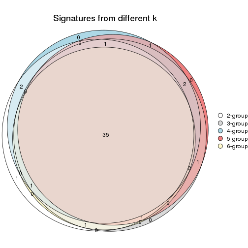
get_signature() returns a data frame invisibly. TO get the list of signatures, the function
call should be assigned to a variable explicitly. In following code, if plot argument is set
to FALSE, no heatmap is plotted while only the differential analysis is performed.
# code only for demonstration
tb = get_signature(res, k = ..., plot = FALSE)
An example of the output of tb is:
#> which_row fdr mean_1 mean_2 scaled_mean_1 scaled_mean_2 km
#> 1 38 0.042760348 8.373488 9.131774 -0.5533452 0.5164555 1
#> 2 40 0.018707592 7.106213 8.469186 -0.6173731 0.5762149 1
#> 3 55 0.019134737 10.221463 11.207825 -0.6159697 0.5749050 1
#> 4 59 0.006059896 5.921854 7.869574 -0.6899429 0.6439467 1
#> 5 60 0.018055526 8.928898 10.211722 -0.6204761 0.5791110 1
#> 6 98 0.009384629 15.714769 14.887706 0.6635654 -0.6193277 2
...
The columns in tb are:
which_row: row indices corresponding to the input matrix.fdr: FDR for the differential test. mean_x: The mean value in group x.scaled_mean_x: The mean value in group x after rows are scaled.km: Row groups if k-means clustering is applied to rows.UMAP plot which shows how samples are separated.
dimension_reduction(res, k = 2, method = "UMAP")
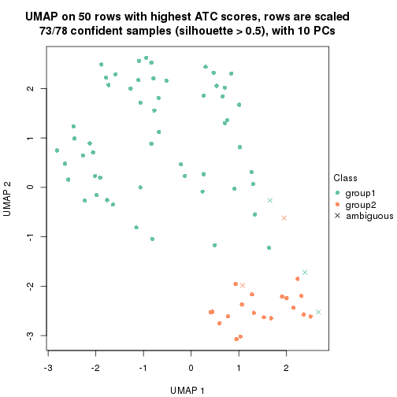
dimension_reduction(res, k = 3, method = "UMAP")
dimension_reduction(res, k = 4, method = "UMAP")
dimension_reduction(res, k = 5, method = "UMAP")
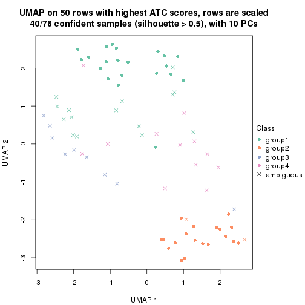
dimension_reduction(res, k = 6, method = "UMAP")
Following heatmap shows how subgroups are split when increasing k:
collect_classes(res)
If matrix rows can be associated to genes, consider to use functional_enrichment(res,
...) to perform function enrichment for the signature genes. See this vignette for more detailed explanations.
The object with results only for a single top-value method and a single partition method can be extracted as:
res = res_list["ATC", "NMF"]
# you can also extract it by
# res = res_list["ATC:NMF"]
A summary of res and all the functions that can be applied to it:
res
#> A 'ConsensusPartition' object with k = 2, 3, 4, 5, 6.
#> On a matrix with 50 rows and 78 columns.
#> Top rows (5, 10, 15, 20, 25) are extracted by 'ATC' method.
#> Subgroups are detected by 'NMF' method.
#> Performed in total 1250 partitions by row resampling.
#> Best k for subgroups seems to be 2.
#>
#> Following methods can be applied to this 'ConsensusPartition' object:
#> [1] "cola_report" "collect_classes" "collect_plots"
#> [4] "collect_stats" "colnames" "compare_signatures"
#> [7] "consensus_heatmap" "dimension_reduction" "functional_enrichment"
#> [10] "get_anno_col" "get_anno" "get_classes"
#> [13] "get_consensus" "get_matrix" "get_membership"
#> [16] "get_param" "get_signatures" "get_stats"
#> [19] "is_best_k" "is_stable_k" "membership_heatmap"
#> [22] "ncol" "nrow" "plot_ecdf"
#> [25] "rownames" "select_partition_number" "show"
#> [28] "suggest_best_k" "test_to_known_factors"
collect_plots() function collects all the plots made from res for all k (number of partitions)
into one single page to provide an easy and fast comparison between different k.
collect_plots(res)
The plots are:
k and the heatmap of
predicted classes for each k.k.k.k.All the plots in panels can be made by individual functions and they are plotted later in this section.
select_partition_number() produces several plots showing different
statistics for choosing “optimized” k. There are following statistics:
k;k, the area increased is defined as \(A_k - A_{k-1}\).The detailed explanations of these statistics can be found in the cola vignette.
Generally speaking, lower PAC score, higher mean silhouette score or higher
concordance corresponds to better partition. Rand index and Jaccard index
measure how similar the current partition is compared to partition with k-1.
If they are too similar, we won't accept k is better than k-1.
select_partition_number(res)

The numeric values for all these statistics can be obtained by get_stats().
get_stats(res)
#> k 1-PAC mean_silhouette concordance area_increased Rand Jaccard
#> 2 2 0.0115 0.386 0.708 0.4427 0.590 0.590
#> 3 3 0.0218 0.421 0.629 0.3727 0.696 0.513
#> 4 4 0.0826 0.276 0.580 0.1156 0.909 0.768
#> 5 5 0.1655 0.241 0.532 0.0879 0.936 0.817
#> 6 6 0.2592 0.193 0.463 0.0593 0.954 0.853
suggest_best_k() suggests the best \(k\) based on these statistics. The rules are as follows:
suggest_best_k(res)
#> [1] 2
Following shows the table of the partitions (You need to click the show/hide
code output link to see it). The membership matrix (columns with name p*)
is inferred by
clue::cl_consensus()
function with the SE method. Basically the value in the membership matrix
represents the probability to belong to a certain group. The finall class
label for an item is determined with the group with highest probability it
belongs to.
In get_classes() function, the entropy is calculated from the membership
matrix and the silhouette score is calculated from the consensus matrix.
cbind(get_classes(res, k = 2), get_membership(res, k = 2))
#> class entropy silhouette p1 p2
#> SRR764980 1 0.946 0.3248 0.636 0.364
#> SRR764981 1 0.966 0.3210 0.608 0.392
#> SRR764982 2 0.929 0.3728 0.344 0.656
#> SRR764983 1 0.961 0.0565 0.616 0.384
#> SRR764984 1 0.760 0.5285 0.780 0.220
#> SRR764985 1 0.997 0.0551 0.532 0.468
#> SRR764986 1 0.999 -0.1282 0.520 0.480
#> SRR764987 2 0.895 0.5351 0.312 0.688
#> SRR764988 1 0.983 0.0142 0.576 0.424
#> SRR764989 2 0.998 0.3575 0.472 0.528
#> SRR764990 1 0.680 0.5382 0.820 0.180
#> SRR764991 1 0.900 0.2685 0.684 0.316
#> SRR764992 1 0.653 0.5499 0.832 0.168
#> SRR764993 2 0.730 0.5995 0.204 0.796
#> SRR764994 1 0.595 0.5628 0.856 0.144
#> SRR764995 2 0.994 0.3067 0.456 0.544
#> SRR764996 1 0.653 0.5577 0.832 0.168
#> SRR764997 2 0.802 0.6168 0.244 0.756
#> SRR764998 1 0.416 0.5829 0.916 0.084
#> SRR764999 1 0.625 0.5514 0.844 0.156
#> SRR765000 2 0.563 0.5764 0.132 0.868
#> SRR765001 1 1.000 -0.0810 0.512 0.488
#> SRR765002 2 0.988 0.0604 0.436 0.564
#> SRR765003 1 0.518 0.5727 0.884 0.116
#> SRR765004 2 0.775 0.5848 0.228 0.772
#> SRR765005 1 0.327 0.5818 0.940 0.060
#> SRR765006 1 0.981 0.2588 0.580 0.420
#> SRR765007 1 0.745 0.5290 0.788 0.212
#> SRR765008 2 0.662 0.5669 0.172 0.828
#> SRR765009 1 0.999 0.1110 0.516 0.484
#> SRR765010 1 0.994 0.1766 0.544 0.456
#> SRR765011 1 0.482 0.5857 0.896 0.104
#> SRR765012 1 0.808 0.4296 0.752 0.248
#> SRR765013 1 0.993 0.1694 0.548 0.452
#> SRR765014 1 0.242 0.5820 0.960 0.040
#> SRR765015 2 0.900 0.5958 0.316 0.684
#> SRR765016 1 0.997 -0.2069 0.532 0.468
#> SRR765017 1 0.981 0.0806 0.580 0.420
#> SRR765018 2 1.000 0.2647 0.488 0.512
#> SRR765020 1 0.722 0.5059 0.800 0.200
#> SRR765021 2 0.921 0.5981 0.336 0.664
#> SRR765022 2 0.943 0.5283 0.360 0.640
#> SRR765023 1 0.388 0.5750 0.924 0.076
#> SRR765024 1 0.850 0.3586 0.724 0.276
#> SRR765025 1 1.000 -0.0242 0.500 0.500
#> SRR765026 1 0.388 0.5752 0.924 0.076
#> SRR765027 1 0.697 0.5257 0.812 0.188
#> SRR765028 1 0.963 0.2623 0.612 0.388
#> SRR765029 2 0.788 0.5932 0.236 0.764
#> SRR765030 1 0.605 0.5658 0.852 0.148
#> SRR765031 2 0.946 0.5180 0.364 0.636
#> SRR765032 1 0.518 0.5694 0.884 0.116
#> SRR765033 1 0.775 0.5108 0.772 0.228
#> SRR765034 2 0.996 0.3970 0.464 0.536
#> SRR765035 1 0.714 0.5470 0.804 0.196
#> SRR765036 1 0.767 0.5187 0.776 0.224
#> SRR765037 2 0.996 0.3494 0.464 0.536
#> SRR765038 1 0.998 0.0655 0.524 0.476
#> SRR765039 1 0.634 0.5706 0.840 0.160
#> SRR765040 1 1.000 -0.2391 0.512 0.488
#> SRR765041 1 0.808 0.5089 0.752 0.248
#> SRR765042 1 0.634 0.5476 0.840 0.160
#> SRR765043 1 0.788 0.4477 0.764 0.236
#> SRR765044 1 0.999 0.0820 0.516 0.484
#> SRR765045 1 0.966 0.0347 0.608 0.392
#> SRR765046 1 0.996 0.0694 0.536 0.464
#> SRR765047 1 0.605 0.5688 0.852 0.148
#> SRR765048 1 0.689 0.5036 0.816 0.184
#> SRR765049 2 0.998 -0.0246 0.476 0.524
#> SRR765050 1 0.895 0.4166 0.688 0.312
#> SRR765051 1 0.753 0.4625 0.784 0.216
#> SRR765052 1 0.574 0.5559 0.864 0.136
#> SRR765053 2 0.998 0.2773 0.472 0.528
#> SRR765054 1 0.634 0.5408 0.840 0.160
#> SRR765055 1 0.671 0.5201 0.824 0.176
#> SRR765056 2 0.958 0.5346 0.380 0.620
#> SRR765057 2 0.781 0.6033 0.232 0.768
#> SRR765058 1 0.494 0.5682 0.892 0.108
cbind(get_classes(res, k = 3), get_membership(res, k = 3))
#> class entropy silhouette p1 p2 p3
#> SRR764980 2 0.857 0.5167 0.328 0.556 0.116
#> SRR764981 2 0.943 0.2612 0.368 0.452 0.180
#> SRR764982 2 0.830 0.2877 0.084 0.532 0.384
#> SRR764983 1 0.747 0.0210 0.516 0.036 0.448
#> SRR764984 1 0.837 0.1690 0.564 0.336 0.100
#> SRR764985 2 0.902 0.5195 0.216 0.560 0.224
#> SRR764986 2 0.999 0.1898 0.320 0.348 0.332
#> SRR764987 3 0.868 0.2172 0.128 0.316 0.556
#> SRR764988 3 0.904 0.2649 0.392 0.136 0.472
#> SRR764989 3 0.711 0.3927 0.340 0.036 0.624
#> SRR764990 1 0.700 0.1479 0.552 0.428 0.020
#> SRR764991 1 0.788 0.2994 0.592 0.072 0.336
#> SRR764992 1 0.690 0.2906 0.612 0.364 0.024
#> SRR764993 3 0.635 0.4717 0.060 0.188 0.752
#> SRR764994 1 0.732 0.5712 0.708 0.164 0.128
#> SRR764995 3 0.983 0.0268 0.248 0.356 0.396
#> SRR764996 1 0.687 0.4535 0.680 0.276 0.044
#> SRR764997 3 0.630 0.5681 0.132 0.096 0.772
#> SRR764998 1 0.478 0.6104 0.840 0.124 0.036
#> SRR764999 1 0.688 0.5648 0.736 0.108 0.156
#> SRR765000 3 0.518 0.4754 0.032 0.156 0.812
#> SRR765001 2 0.948 0.4116 0.240 0.496 0.264
#> SRR765002 2 0.802 0.5284 0.124 0.644 0.232
#> SRR765003 1 0.564 0.5212 0.760 0.220 0.020
#> SRR765004 3 0.594 0.5423 0.120 0.088 0.792
#> SRR765005 1 0.414 0.6120 0.872 0.096 0.032
#> SRR765006 2 0.822 0.5522 0.212 0.636 0.152
#> SRR765007 1 0.729 -0.0217 0.500 0.472 0.028
#> SRR765008 3 0.780 0.2333 0.076 0.308 0.616
#> SRR765009 2 0.812 0.5647 0.180 0.648 0.172
#> SRR765010 2 0.797 0.5782 0.184 0.660 0.156
#> SRR765011 1 0.645 0.6089 0.764 0.132 0.104
#> SRR765012 1 0.749 0.3815 0.620 0.056 0.324
#> SRR765013 2 0.822 0.5762 0.184 0.640 0.176
#> SRR765014 1 0.338 0.6071 0.896 0.092 0.012
#> SRR765015 3 0.688 0.5797 0.156 0.108 0.736
#> SRR765016 3 0.785 0.1964 0.412 0.056 0.532
#> SRR765017 1 0.897 0.0916 0.488 0.132 0.380
#> SRR765018 3 0.905 0.3427 0.360 0.144 0.496
#> SRR765020 1 0.689 0.5692 0.720 0.076 0.204
#> SRR765021 3 0.689 0.5779 0.184 0.088 0.728
#> SRR765022 3 0.891 0.4517 0.216 0.212 0.572
#> SRR765023 1 0.266 0.6305 0.932 0.024 0.044
#> SRR765024 1 0.711 0.3934 0.648 0.044 0.308
#> SRR765025 2 0.918 0.4824 0.204 0.536 0.260
#> SRR765026 1 0.516 0.6220 0.832 0.096 0.072
#> SRR765027 1 0.701 0.5738 0.720 0.092 0.188
#> SRR765028 2 0.957 0.3857 0.348 0.448 0.204
#> SRR765029 3 0.708 0.4690 0.088 0.200 0.712
#> SRR765030 1 0.663 0.4813 0.724 0.220 0.056
#> SRR765031 3 0.912 0.4616 0.236 0.216 0.548
#> SRR765032 1 0.526 0.6306 0.828 0.088 0.084
#> SRR765033 2 0.798 0.2174 0.400 0.536 0.064
#> SRR765034 3 0.780 0.5268 0.296 0.080 0.624
#> SRR765035 1 0.850 0.0380 0.492 0.416 0.092
#> SRR765036 1 0.857 0.4451 0.608 0.204 0.188
#> SRR765037 3 0.993 0.1460 0.276 0.352 0.372
#> SRR765038 2 0.901 0.5095 0.208 0.560 0.232
#> SRR765039 1 0.770 0.4827 0.672 0.212 0.116
#> SRR765040 3 0.917 0.2330 0.392 0.148 0.460
#> SRR765041 1 0.857 0.2507 0.564 0.316 0.120
#> SRR765042 1 0.677 0.5946 0.744 0.112 0.144
#> SRR765043 1 0.686 0.5040 0.696 0.052 0.252
#> SRR765044 2 0.807 0.5776 0.188 0.652 0.160
#> SRR765045 1 0.784 -0.0814 0.476 0.052 0.472
#> SRR765046 2 0.898 0.4627 0.316 0.532 0.152
#> SRR765047 1 0.608 0.6228 0.784 0.128 0.088
#> SRR765048 1 0.558 0.5917 0.788 0.036 0.176
#> SRR765049 2 0.816 0.5426 0.196 0.644 0.160
#> SRR765050 2 0.915 0.3655 0.336 0.504 0.160
#> SRR765051 1 0.718 0.5244 0.716 0.116 0.168
#> SRR765052 1 0.757 0.2131 0.552 0.404 0.044
#> SRR765053 3 0.972 0.3201 0.276 0.272 0.452
#> SRR765054 1 0.537 0.6159 0.812 0.048 0.140
#> SRR765055 1 0.606 0.5901 0.764 0.048 0.188
#> SRR765056 3 0.662 0.5787 0.248 0.044 0.708
#> SRR765057 3 0.811 0.4026 0.108 0.272 0.620
#> SRR765058 1 0.518 0.6212 0.832 0.080 0.088
cbind(get_classes(res, k = 4), get_membership(res, k = 4))
#> class entropy silhouette p1 p2 p3 p4
#> SRR764980 2 0.702 0.27815 0.148 0.668 0.052 0.132
#> SRR764981 1 0.990 -0.13296 0.292 0.228 0.192 0.288
#> SRR764982 2 0.785 0.13795 0.052 0.576 0.228 0.144
#> SRR764983 1 0.636 0.14427 0.516 0.020 0.436 0.028
#> SRR764984 1 0.802 0.07111 0.440 0.412 0.072 0.076
#> SRR764985 2 0.737 0.05689 0.132 0.640 0.060 0.168
#> SRR764986 2 0.977 -0.46999 0.224 0.364 0.200 0.212
#> SRR764987 3 0.931 -0.40079 0.112 0.332 0.372 0.184
#> SRR764988 3 0.871 0.31890 0.324 0.096 0.456 0.124
#> SRR764989 3 0.660 0.37036 0.292 0.028 0.624 0.056
#> SRR764990 1 0.804 0.07573 0.456 0.340 0.020 0.184
#> SRR764991 1 0.758 0.31486 0.532 0.028 0.324 0.116
#> SRR764992 1 0.782 0.15902 0.484 0.276 0.008 0.232
#> SRR764993 3 0.756 0.21926 0.036 0.272 0.572 0.120
#> SRR764994 1 0.767 0.46838 0.616 0.068 0.168 0.148
#> SRR764995 4 0.977 0.00000 0.160 0.292 0.228 0.320
#> SRR764996 1 0.829 0.34453 0.556 0.148 0.088 0.208
#> SRR764997 3 0.608 0.47434 0.108 0.088 0.744 0.060
#> SRR764998 1 0.542 0.56581 0.780 0.048 0.056 0.116
#> SRR764999 1 0.719 0.49135 0.640 0.040 0.136 0.184
#> SRR765000 3 0.730 0.34967 0.056 0.228 0.624 0.092
#> SRR765001 2 0.867 -0.11707 0.152 0.528 0.124 0.196
#> SRR765002 2 0.504 0.35268 0.052 0.808 0.072 0.068
#> SRR765003 1 0.643 0.48012 0.696 0.152 0.024 0.128
#> SRR765004 3 0.699 0.38087 0.080 0.144 0.680 0.096
#> SRR765005 1 0.474 0.58325 0.824 0.052 0.052 0.072
#> SRR765006 2 0.759 0.19473 0.124 0.616 0.064 0.196
#> SRR765007 2 0.788 0.16930 0.368 0.464 0.024 0.144
#> SRR765008 3 0.848 0.02805 0.060 0.372 0.428 0.140
#> SRR765009 2 0.582 0.35229 0.096 0.760 0.052 0.092
#> SRR765010 2 0.495 0.39261 0.080 0.812 0.052 0.056
#> SRR765011 1 0.666 0.55997 0.708 0.084 0.112 0.096
#> SRR765012 1 0.746 0.28058 0.536 0.044 0.344 0.076
#> SRR765013 2 0.545 0.38532 0.084 0.784 0.056 0.076
#> SRR765014 1 0.320 0.58649 0.888 0.032 0.008 0.072
#> SRR765015 3 0.644 0.48906 0.120 0.092 0.720 0.068
#> SRR765016 3 0.606 0.16512 0.388 0.012 0.572 0.028
#> SRR765017 1 0.815 0.07075 0.440 0.056 0.396 0.108
#> SRR765018 3 0.856 0.31500 0.320 0.180 0.448 0.052
#> SRR765020 1 0.643 0.48603 0.676 0.040 0.228 0.056
#> SRR765021 3 0.650 0.48949 0.152 0.112 0.700 0.036
#> SRR765022 3 0.813 0.42604 0.192 0.168 0.568 0.072
#> SRR765023 1 0.382 0.58425 0.868 0.028 0.044 0.060
#> SRR765024 1 0.677 0.24519 0.560 0.048 0.364 0.028
#> SRR765025 2 0.785 0.00648 0.128 0.600 0.080 0.192
#> SRR765026 1 0.510 0.58058 0.804 0.048 0.072 0.076
#> SRR765027 1 0.654 0.45213 0.656 0.040 0.252 0.052
#> SRR765028 2 0.924 -0.55583 0.228 0.376 0.088 0.308
#> SRR765029 3 0.767 0.25281 0.064 0.232 0.596 0.108
#> SRR765030 1 0.737 0.48050 0.636 0.128 0.056 0.180
#> SRR765031 3 0.904 0.28463 0.204 0.212 0.472 0.112
#> SRR765032 1 0.573 0.55871 0.744 0.016 0.112 0.128
#> SRR765033 2 0.779 0.25951 0.260 0.568 0.052 0.120
#> SRR765034 3 0.712 0.46503 0.280 0.088 0.600 0.032
#> SRR765035 2 0.913 -0.02218 0.348 0.372 0.088 0.192
#> SRR765036 1 0.855 0.37844 0.548 0.152 0.152 0.148
#> SRR765037 2 0.992 -0.08091 0.224 0.300 0.272 0.204
#> SRR765038 2 0.794 -0.00957 0.128 0.576 0.068 0.228
#> SRR765039 1 0.703 0.51255 0.680 0.096 0.092 0.132
#> SRR765040 3 0.877 -0.00137 0.264 0.048 0.416 0.272
#> SRR765041 1 0.790 0.18334 0.520 0.328 0.064 0.088
#> SRR765042 1 0.692 0.47207 0.660 0.068 0.208 0.064
#> SRR765043 1 0.644 0.40963 0.636 0.028 0.288 0.048
#> SRR765044 2 0.479 0.39348 0.080 0.820 0.052 0.048
#> SRR765045 3 0.719 0.05635 0.428 0.056 0.480 0.036
#> SRR765046 2 0.900 -0.12577 0.204 0.388 0.072 0.336
#> SRR765047 1 0.613 0.57273 0.740 0.056 0.108 0.096
#> SRR765048 1 0.610 0.49035 0.680 0.028 0.248 0.044
#> SRR765049 2 0.662 0.31390 0.104 0.700 0.052 0.144
#> SRR765050 2 0.843 0.19415 0.196 0.540 0.084 0.180
#> SRR765051 1 0.756 0.46433 0.612 0.048 0.184 0.156
#> SRR765052 1 0.791 0.13689 0.480 0.316 0.016 0.188
#> SRR765053 3 0.961 0.18699 0.208 0.288 0.360 0.144
#> SRR765054 1 0.436 0.57654 0.824 0.016 0.124 0.036
#> SRR765055 1 0.490 0.54478 0.780 0.016 0.168 0.036
#> SRR765056 3 0.546 0.49938 0.216 0.052 0.724 0.008
#> SRR765057 3 0.905 0.26867 0.132 0.256 0.464 0.148
#> SRR765058 1 0.575 0.56233 0.748 0.024 0.092 0.136
cbind(get_classes(res, k = 5), get_membership(res, k = 5))
#> class entropy silhouette p1 p2 p3 p4 p5
#> SRR764980 2 0.713 0.16423 0.116 0.600 0.032 0.196 0.056
#> SRR764981 4 0.979 0.04226 0.256 0.180 0.172 0.264 0.128
#> SRR764982 2 0.617 0.23149 0.016 0.664 0.176 0.116 0.028
#> SRR764983 1 0.679 0.00116 0.448 0.032 0.436 0.056 0.028
#> SRR764984 1 0.829 0.14828 0.392 0.368 0.060 0.072 0.108
#> SRR764985 2 0.686 -0.04959 0.056 0.500 0.072 0.364 0.008
#> SRR764986 4 0.913 0.28343 0.160 0.292 0.100 0.356 0.092
#> SRR764987 4 0.813 0.23247 0.044 0.256 0.336 0.340 0.024
#> SRR764988 3 0.899 0.14333 0.204 0.148 0.432 0.128 0.088
#> SRR764989 3 0.673 0.30505 0.272 0.032 0.588 0.076 0.032
#> SRR764990 1 0.802 0.24024 0.476 0.248 0.028 0.068 0.180
#> SRR764991 1 0.797 0.10116 0.500 0.036 0.260 0.104 0.100
#> SRR764992 1 0.824 0.15329 0.408 0.244 0.012 0.092 0.244
#> SRR764993 3 0.815 0.16468 0.028 0.260 0.460 0.080 0.172
#> SRR764994 1 0.725 0.34598 0.592 0.044 0.132 0.044 0.188
#> SRR764995 4 0.845 0.35378 0.076 0.212 0.136 0.488 0.088
#> SRR764996 1 0.773 0.02254 0.496 0.140 0.036 0.048 0.280
#> SRR764997 3 0.578 0.38746 0.088 0.084 0.736 0.040 0.052
#> SRR764998 1 0.580 0.41247 0.732 0.044 0.048 0.064 0.112
#> SRR764999 1 0.747 0.22307 0.564 0.044 0.104 0.060 0.228
#> SRR765000 3 0.796 0.30316 0.040 0.200 0.532 0.104 0.124
#> SRR765001 2 0.827 -0.17255 0.084 0.440 0.084 0.320 0.072
#> SRR765002 2 0.388 0.37677 0.012 0.844 0.036 0.072 0.036
#> SRR765003 1 0.809 0.16766 0.532 0.144 0.044 0.128 0.152
#> SRR765004 3 0.658 0.37294 0.068 0.096 0.680 0.104 0.052
#> SRR765005 1 0.623 0.45403 0.704 0.040 0.092 0.068 0.096
#> SRR765006 2 0.645 0.25279 0.068 0.632 0.008 0.216 0.076
#> SRR765007 2 0.802 0.09675 0.280 0.468 0.032 0.068 0.152
#> SRR765008 3 0.863 -0.07623 0.044 0.344 0.360 0.152 0.100
#> SRR765009 2 0.581 0.32230 0.056 0.708 0.032 0.168 0.036
#> SRR765010 2 0.253 0.40113 0.044 0.912 0.016 0.012 0.016
#> SRR765011 1 0.752 0.34765 0.600 0.104 0.108 0.056 0.132
#> SRR765012 1 0.713 0.18971 0.500 0.016 0.344 0.052 0.088
#> SRR765013 2 0.328 0.39103 0.036 0.880 0.016 0.040 0.028
#> SRR765014 1 0.481 0.45780 0.792 0.044 0.024 0.044 0.096
#> SRR765015 3 0.506 0.44900 0.100 0.072 0.772 0.040 0.016
#> SRR765016 3 0.550 0.33800 0.288 0.020 0.648 0.024 0.020
#> SRR765017 3 0.846 -0.02549 0.360 0.052 0.364 0.156 0.068
#> SRR765018 3 0.816 0.17244 0.324 0.140 0.416 0.020 0.100
#> SRR765020 1 0.655 0.42390 0.648 0.024 0.188 0.084 0.056
#> SRR765021 3 0.622 0.44888 0.128 0.092 0.696 0.040 0.044
#> SRR765022 3 0.788 0.41648 0.160 0.120 0.564 0.084 0.072
#> SRR765023 1 0.368 0.46950 0.860 0.020 0.036 0.036 0.048
#> SRR765024 1 0.684 0.18390 0.520 0.020 0.352 0.048 0.060
#> SRR765025 2 0.720 -0.07498 0.048 0.472 0.080 0.376 0.024
#> SRR765026 1 0.594 0.43523 0.716 0.020 0.072 0.088 0.104
#> SRR765027 1 0.730 0.38239 0.572 0.032 0.236 0.080 0.080
#> SRR765028 4 0.773 0.25748 0.108 0.308 0.052 0.488 0.044
#> SRR765029 3 0.826 0.20674 0.036 0.252 0.472 0.132 0.108
#> SRR765030 1 0.788 0.32864 0.548 0.096 0.108 0.052 0.196
#> SRR765031 3 0.879 0.04506 0.172 0.220 0.404 0.032 0.172
#> SRR765032 1 0.561 0.43531 0.732 0.036 0.060 0.032 0.140
#> SRR765033 2 0.788 0.18763 0.224 0.508 0.052 0.040 0.176
#> SRR765034 3 0.646 0.39928 0.216 0.064 0.640 0.020 0.060
#> SRR765035 2 0.931 -0.06680 0.260 0.324 0.064 0.204 0.148
#> SRR765036 1 0.824 0.03087 0.520 0.104 0.104 0.076 0.196
#> SRR765037 2 0.992 -0.09456 0.192 0.244 0.220 0.152 0.192
#> SRR765038 2 0.712 -0.03345 0.052 0.504 0.060 0.352 0.032
#> SRR765039 1 0.772 0.41757 0.580 0.056 0.140 0.120 0.104
#> SRR765040 5 0.898 0.00000 0.240 0.020 0.188 0.268 0.284
#> SRR765041 1 0.847 0.00260 0.376 0.344 0.048 0.160 0.072
#> SRR765042 1 0.704 0.40299 0.588 0.024 0.236 0.088 0.064
#> SRR765043 1 0.699 0.37997 0.580 0.028 0.260 0.060 0.072
#> SRR765044 2 0.310 0.40271 0.044 0.888 0.028 0.016 0.024
#> SRR765045 3 0.680 0.19609 0.336 0.028 0.536 0.032 0.068
#> SRR765046 4 0.845 0.25424 0.120 0.232 0.072 0.480 0.096
#> SRR765047 1 0.613 0.46995 0.712 0.048 0.108 0.072 0.060
#> SRR765048 1 0.579 0.43377 0.656 0.020 0.256 0.028 0.040
#> SRR765049 2 0.744 0.16534 0.064 0.576 0.060 0.220 0.080
#> SRR765050 2 0.846 0.17829 0.088 0.488 0.092 0.220 0.112
#> SRR765051 1 0.726 0.27140 0.576 0.028 0.148 0.048 0.200
#> SRR765052 1 0.841 0.07843 0.368 0.332 0.016 0.128 0.156
#> SRR765053 3 0.933 0.08073 0.208 0.240 0.348 0.096 0.108
#> SRR765054 1 0.501 0.47849 0.780 0.024 0.088 0.036 0.072
#> SRR765055 1 0.590 0.45694 0.712 0.036 0.148 0.064 0.040
#> SRR765056 3 0.518 0.40263 0.160 0.028 0.744 0.016 0.052
#> SRR765057 3 0.911 0.24041 0.132 0.192 0.416 0.088 0.172
#> SRR765058 1 0.623 0.36213 0.668 0.036 0.052 0.044 0.200
cbind(get_classes(res, k = 6), get_membership(res, k = 6))
#> class entropy silhouette p1 p2 p3 p4 p5 p6
#> SRR764980 5 0.642 0.15968 0.076 0.252 0.028 NA 0.588 0.016
#> SRR764981 2 0.914 -0.05837 0.120 0.288 0.268 NA 0.148 0.032
#> SRR764982 5 0.731 0.17805 0.016 0.132 0.160 NA 0.560 0.064
#> SRR764983 3 0.723 0.06300 0.352 0.096 0.440 NA 0.008 0.068
#> SRR764984 5 0.835 0.00394 0.244 0.212 0.040 NA 0.388 0.044
#> SRR764985 5 0.585 0.04803 0.032 0.376 0.072 NA 0.512 0.000
#> SRR764986 2 0.854 0.19279 0.132 0.388 0.100 NA 0.272 0.068
#> SRR764987 2 0.783 0.16211 0.020 0.348 0.316 NA 0.232 0.020
#> SRR764988 3 0.888 0.13296 0.184 0.148 0.392 NA 0.080 0.148
#> SRR764989 3 0.711 0.30760 0.168 0.084 0.580 NA 0.016 0.100
#> SRR764990 1 0.796 0.07873 0.316 0.284 0.028 NA 0.248 0.000
#> SRR764991 1 0.860 0.00140 0.392 0.124 0.228 NA 0.036 0.164
#> SRR764992 1 0.851 0.04400 0.292 0.252 0.004 NA 0.184 0.052
#> SRR764993 3 0.890 0.08545 0.040 0.080 0.320 NA 0.272 0.100
#> SRR764994 1 0.774 0.16208 0.536 0.080 0.136 NA 0.024 0.108
#> SRR764995 2 0.823 0.26278 0.028 0.360 0.084 NA 0.176 0.312
#> SRR764996 1 0.782 0.01842 0.524 0.080 0.024 NA 0.120 0.152
#> SRR764997 3 0.663 0.35981 0.084 0.068 0.656 NA 0.048 0.088
#> SRR764998 1 0.651 0.32634 0.652 0.084 0.044 NA 0.044 0.132
#> SRR764999 1 0.761 0.14342 0.564 0.092 0.100 NA 0.036 0.108
#> SRR765000 3 0.788 0.24060 0.036 0.064 0.464 NA 0.224 0.036
#> SRR765001 5 0.739 -0.08354 0.092 0.356 0.076 NA 0.428 0.028
#> SRR765002 5 0.474 0.35792 0.036 0.084 0.036 NA 0.784 0.032
#> SRR765003 1 0.824 0.07248 0.448 0.156 0.024 NA 0.108 0.200
#> SRR765004 3 0.724 0.34093 0.076 0.088 0.608 NA 0.064 0.072
#> SRR765005 1 0.697 0.35538 0.592 0.160 0.096 NA 0.016 0.096
#> SRR765006 5 0.670 0.22492 0.056 0.120 0.008 NA 0.576 0.212
#> SRR765007 5 0.843 0.02130 0.224 0.180 0.032 NA 0.404 0.048
#> SRR765008 3 0.819 -0.00465 0.020 0.144 0.356 NA 0.320 0.036
#> SRR765009 5 0.510 0.32697 0.012 0.160 0.032 NA 0.728 0.024
#> SRR765010 5 0.240 0.37551 0.028 0.028 0.000 NA 0.908 0.024
#> SRR765011 1 0.862 0.25758 0.432 0.200 0.136 NA 0.072 0.100
#> SRR765012 1 0.756 0.12375 0.412 0.076 0.360 NA 0.016 0.088
#> SRR765013 5 0.288 0.36621 0.024 0.060 0.000 NA 0.876 0.036
#> SRR765014 1 0.480 0.36205 0.776 0.080 0.016 NA 0.024 0.060
#> SRR765015 3 0.440 0.41712 0.056 0.040 0.808 NA 0.036 0.020
#> SRR765016 3 0.591 0.31643 0.228 0.076 0.628 NA 0.004 0.048
#> SRR765017 3 0.862 0.09177 0.208 0.216 0.360 NA 0.020 0.136
#> SRR765018 3 0.899 0.13329 0.236 0.152 0.364 NA 0.088 0.068
#> SRR765020 1 0.756 0.31377 0.452 0.208 0.232 NA 0.004 0.052
#> SRR765021 3 0.628 0.40663 0.080 0.088 0.680 NA 0.068 0.032
#> SRR765022 3 0.807 0.34458 0.104 0.128 0.520 NA 0.112 0.084
#> SRR765023 1 0.494 0.37542 0.764 0.088 0.032 NA 0.012 0.068
#> SRR765024 1 0.736 0.03529 0.380 0.156 0.376 NA 0.012 0.056
#> SRR765025 5 0.626 0.02368 0.032 0.384 0.088 NA 0.480 0.008
#> SRR765026 1 0.724 0.30506 0.524 0.240 0.084 NA 0.012 0.104
#> SRR765027 1 0.783 0.24431 0.396 0.240 0.260 NA 0.024 0.052
#> SRR765028 2 0.799 0.20766 0.056 0.372 0.040 NA 0.236 0.276
#> SRR765029 3 0.863 0.19804 0.032 0.080 0.400 NA 0.220 0.112
#> SRR765030 1 0.843 0.23824 0.392 0.268 0.072 NA 0.088 0.028
#> SRR765031 3 0.919 0.06537 0.176 0.080 0.340 NA 0.216 0.076
#> SRR765032 1 0.691 0.32891 0.628 0.080 0.100 NA 0.032 0.084
#> SRR765033 5 0.817 0.15728 0.184 0.100 0.080 NA 0.484 0.036
#> SRR765034 3 0.643 0.39197 0.168 0.048 0.644 NA 0.060 0.028
#> SRR765035 5 0.894 -0.06626 0.252 0.088 0.032 NA 0.292 0.236
#> SRR765036 1 0.824 -0.01108 0.488 0.068 0.120 NA 0.104 0.168
#> SRR765037 5 0.974 -0.08547 0.144 0.112 0.228 NA 0.248 0.140
#> SRR765038 5 0.721 -0.01406 0.044 0.388 0.088 NA 0.420 0.036
#> SRR765039 1 0.807 0.30283 0.364 0.324 0.180 NA 0.052 0.024
#> SRR765040 6 0.800 0.00000 0.220 0.108 0.148 NA 0.016 0.456
#> SRR765041 1 0.857 -0.05955 0.296 0.176 0.032 NA 0.260 0.216
#> SRR765042 1 0.764 0.22608 0.372 0.256 0.284 NA 0.008 0.032
#> SRR765043 1 0.750 0.29464 0.496 0.176 0.204 NA 0.008 0.072
#> SRR765044 5 0.213 0.37841 0.024 0.024 0.008 NA 0.924 0.012
#> SRR765045 3 0.707 0.15361 0.328 0.076 0.480 NA 0.008 0.056
#> SRR765046 2 0.840 0.20010 0.048 0.432 0.044 NA 0.204 0.104
#> SRR765047 1 0.690 0.38809 0.608 0.144 0.108 NA 0.020 0.052
#> SRR765048 1 0.619 0.37828 0.552 0.136 0.272 NA 0.000 0.020
#> SRR765049 5 0.677 0.20639 0.032 0.200 0.040 NA 0.588 0.024
#> SRR765050 5 0.851 0.16434 0.104 0.092 0.048 NA 0.432 0.228
#> SRR765051 1 0.724 0.21926 0.588 0.068 0.140 NA 0.028 0.100
#> SRR765052 2 0.840 -0.03097 0.260 0.292 0.012 NA 0.284 0.100
#> SRR765053 3 0.890 0.04066 0.144 0.060 0.360 NA 0.240 0.056
#> SRR765054 1 0.600 0.40495 0.672 0.104 0.120 NA 0.008 0.024
#> SRR765055 1 0.649 0.39004 0.620 0.136 0.156 NA 0.016 0.040
#> SRR765056 3 0.531 0.38473 0.132 0.044 0.732 NA 0.028 0.024
#> SRR765057 3 0.801 0.27565 0.104 0.072 0.504 NA 0.124 0.032
#> SRR765058 1 0.637 0.30135 0.668 0.092 0.072 NA 0.020 0.076
Heatmaps for the consensus matrix. It visualizes the probability of two samples to be in a same group.
consensus_heatmap(res, k = 2)
consensus_heatmap(res, k = 3)
consensus_heatmap(res, k = 4)
consensus_heatmap(res, k = 5)
consensus_heatmap(res, k = 6)
Heatmaps for the membership of samples in all partitions to see how consistent they are:
membership_heatmap(res, k = 2)
membership_heatmap(res, k = 3)
membership_heatmap(res, k = 4)

membership_heatmap(res, k = 5)
membership_heatmap(res, k = 6)
As soon as we have had the classes for columns, we can look for signatures which are significantly different between classes which can be candidate marks for certain classes. Following are the heatmaps for signatures.
Signature heatmaps where rows are scaled:
get_signatures(res, k = 2)
get_signatures(res, k = 3)
get_signatures(res, k = 4)

get_signatures(res, k = 5)

get_signatures(res, k = 6)

Signature heatmaps where rows are not scaled:
get_signatures(res, k = 2, scale_rows = FALSE)
get_signatures(res, k = 3, scale_rows = FALSE)
get_signatures(res, k = 4, scale_rows = FALSE)

get_signatures(res, k = 5, scale_rows = FALSE)

get_signatures(res, k = 6, scale_rows = FALSE)

Compare the overlap of signatures from different k:
compare_signatures(res)
get_signature() returns a data frame invisibly. TO get the list of signatures, the function
call should be assigned to a variable explicitly. In following code, if plot argument is set
to FALSE, no heatmap is plotted while only the differential analysis is performed.
# code only for demonstration
tb = get_signature(res, k = ..., plot = FALSE)
An example of the output of tb is:
#> which_row fdr mean_1 mean_2 scaled_mean_1 scaled_mean_2 km
#> 1 38 0.042760348 8.373488 9.131774 -0.5533452 0.5164555 1
#> 2 40 0.018707592 7.106213 8.469186 -0.6173731 0.5762149 1
#> 3 55 0.019134737 10.221463 11.207825 -0.6159697 0.5749050 1
#> 4 59 0.006059896 5.921854 7.869574 -0.6899429 0.6439467 1
#> 5 60 0.018055526 8.928898 10.211722 -0.6204761 0.5791110 1
#> 6 98 0.009384629 15.714769 14.887706 0.6635654 -0.6193277 2
...
The columns in tb are:
which_row: row indices corresponding to the input matrix.fdr: FDR for the differential test. mean_x: The mean value in group x.scaled_mean_x: The mean value in group x after rows are scaled.km: Row groups if k-means clustering is applied to rows.UMAP plot which shows how samples are separated.
dimension_reduction(res, k = 2, method = "UMAP")
dimension_reduction(res, k = 3, method = "UMAP")
dimension_reduction(res, k = 4, method = "UMAP")
dimension_reduction(res, k = 5, method = "UMAP")
dimension_reduction(res, k = 6, method = "UMAP")
Following heatmap shows how subgroups are split when increasing k:
collect_classes(res)
If matrix rows can be associated to genes, consider to use functional_enrichment(res,
...) to perform function enrichment for the signature genes. See this vignette for more detailed explanations.
sessionInfo()
#> R version 3.6.0 (2019-04-26)
#> Platform: x86_64-pc-linux-gnu (64-bit)
#> Running under: CentOS Linux 7 (Core)
#>
#> Matrix products: default
#> BLAS: /usr/lib64/libblas.so.3.4.2
#> LAPACK: /usr/lib64/liblapack.so.3.4.2
#>
#> locale:
#> [1] LC_CTYPE=en_GB.UTF-8 LC_NUMERIC=C LC_TIME=en_GB.UTF-8
#> [4] LC_COLLATE=en_GB.UTF-8 LC_MONETARY=en_GB.UTF-8 LC_MESSAGES=en_GB.UTF-8
#> [7] LC_PAPER=en_GB.UTF-8 LC_NAME=C LC_ADDRESS=C
#> [10] LC_TELEPHONE=C LC_MEASUREMENT=en_GB.UTF-8 LC_IDENTIFICATION=C
#>
#> attached base packages:
#> [1] grid stats graphics grDevices utils datasets methods base
#>
#> other attached packages:
#> [1] genefilter_1.66.0 ComplexHeatmap_2.3.1 markdown_1.1 knitr_1.26
#> [5] GetoptLong_0.1.7 cola_1.3.2
#>
#> loaded via a namespace (and not attached):
#> [1] circlize_0.4.8 shape_1.4.4 xfun_0.11 slam_0.1-46
#> [5] lattice_0.20-38 splines_3.6.0 colorspace_1.4-1 vctrs_0.2.0
#> [9] stats4_3.6.0 blob_1.2.0 XML_3.98-1.20 survival_2.44-1.1
#> [13] rlang_0.4.2 pillar_1.4.2 DBI_1.0.0 BiocGenerics_0.30.0
#> [17] bit64_0.9-7 RColorBrewer_1.1-2 matrixStats_0.55.0 stringr_1.4.0
#> [21] GlobalOptions_0.1.1 evaluate_0.14 memoise_1.1.0 Biobase_2.44.0
#> [25] IRanges_2.18.3 parallel_3.6.0 AnnotationDbi_1.46.1 highr_0.8
#> [29] Rcpp_1.0.3 xtable_1.8-4 backports_1.1.5 S4Vectors_0.22.1
#> [33] annotate_1.62.0 skmeans_0.2-11 bit_1.1-14 microbenchmark_1.4-7
#> [37] brew_1.0-6 impute_1.58.0 rjson_0.2.20 png_0.1-7
#> [41] digest_0.6.23 stringi_1.4.3 polyclip_1.10-0 clue_0.3-57
#> [45] tools_3.6.0 bitops_1.0-6 magrittr_1.5 eulerr_6.0.0
#> [49] RCurl_1.95-4.12 RSQLite_2.1.4 tibble_2.1.3 cluster_2.1.0
#> [53] crayon_1.3.4 pkgconfig_2.0.3 zeallot_0.1.0 Matrix_1.2-17
#> [57] xml2_1.2.2 httr_1.4.1 R6_2.4.1 mclust_5.4.5
#> [61] compiler_3.6.0